Dreamer 系列：从视觉压缩到可扩展世界模型的论文与源码精读
从像素中学习世界，再利用预测改善行为，是这六篇论文共同面对的问题。本读本沿“问题与失败点 → 输入和状态 → 动力学与目标 → 行为和真实闭环 → 源码架构 → 实验边界”展开。先读统一概念和演化地图，再逐篇推演状态、目标与控制流程；每篇都保留必要公式、贯穿实例、源码入口和结论的适用条件。
六代论文的共同问题是：观测很高维、历史可能不可见、真实环境交互昂贵，而行为必须依赖对未来的估计。可比较的接口是“输入被压缩成状态或 token，状态在动作条件下预测未来，行为模块消费预测并产生动作”。reward、termination、discount 和 value 是否存在、怎样训练、是否在模型内预测，要按论文和配置逐篇核对。这样读者能知道哪些句子是论文明确写出的事实，哪些是固定源码说明，哪些只是依据公式和数据流得到的解释。
读者可以从每篇机制解释进入论文原图、锁定 PDF 和固定版本源码，核对某个结论来自哪段计算与哪项实验。学习顺序强调先理解数据和状态，再理解模型如何预测、行为如何学习，最后判断这些机制在哪些条件下成立。
先建立阅读地图：六代分别替换了什么
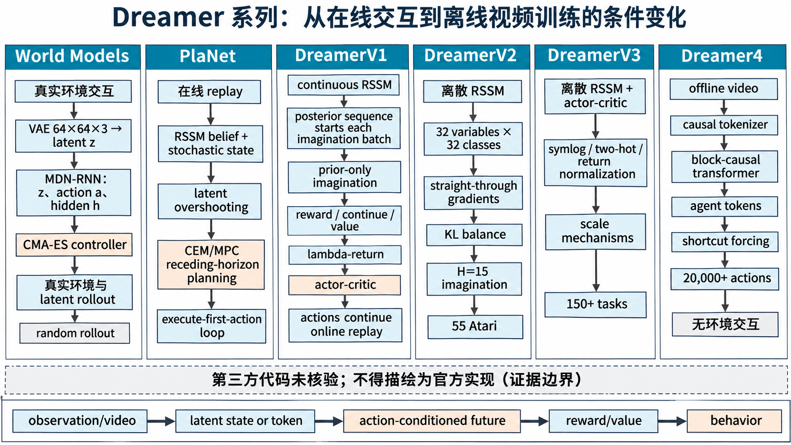
F01 六代 Dreamer 演化总览
这张当前任务 PNG 以六列时间轴组织 World Models、PlaNet、DreamerV1、DreamerV2、DreamerV3 与 Dreamer4。每列固定包含数据条件、世界表示、规划/学习和证据边界四个区域。横向实心箭头只表达阅读顺序与机制演化关系；它不宣称每篇论文都直接继承前一篇的完整实现。橙色框表示关键约束或来源边界，绿色框表示数据采集或训练条件，蓝色框表示模型机制。
World Models 列对应三段式世界模型：64×64×3 图像进入 VAE 得到连续潜变量，MDN-RNN 根据潜变量、动作和隐藏状态预测多模态未来，CMA-ES 搜索控制器参数。控制器的线性接口可写为 a_t = W_c[z_t,h_t] + b_c；真实环境分数与潜在 rollout 分数并列，表示模型分数和真实分数之间存在误差边界。这里的 random rollout、训练控制器评估和官方 S001 代码边界必须分开阅读。
PlaNet 列把确定性 belief 与随机 state 合并为 RSSM。posterior 使用当前观测进行校正，prior 用于未来 rollout；overshooting 通过多步 KL 约束延长预测。CEM/MPC 在潜在模型中反复采样和重评候选动作序列，每次只执行第一步，然后重新观测并规划。online replay 是数据条件，不应被误读为 Dreamer4 式离线视频训练。
DreamerV1 列强调从真实后验序列开始初始化，随后切换到 RSSM prior-only imagination。橙色虚线表示想象轨迹继续向前时不再读取未来真实观测；reward、continue 与 value 头在想象轨迹上产生 λ-return，actor 和 critic 都从 imagined sequence 学习，actor 选出的动作才回到真实环境并进入 replay。该列没有把 CEM/MPC 画成 V1 的主控制器。
DreamerV2 列显示 32 个 categorical 变量、每个 32 个类别（32×32 categorical），采样以 one-hot 表示；straight-through draw(logits)、KL balancing 与 free nats 分别承担梯度传递和先验/后验学习压力的职责。H=15 的 prior-only imagination 连接 reward/value 预测和 actor-critic 更新；55 Atari、sticky actions 与 online replay 是实验条件边界，不是网络层名称。
DreamerV3 列保留离散 RSSM 与 imagination actor-critic 主干，同时把跨任务数值尺度处理拆成 symlog/symexp、reward/value two-hot、unimix、return percentile EMA 与 critic self-target EMA 等组合机制。150+ tasks 是跨任务证据边界；unimix 只作用于 categorical 分布，不能接到 reward/value two-hot 之后。该列用于表达鲁棒性机制的组合，不把任何单一技巧说成全部收益来源。
Dreamer4 列转向离线视频世界模型：causal tokenizer 将帧、动作、奖励和终止信号编码为时空 token，因果 Transformer 按时间因果关系预测未来 token，并通过 shortcut forcing 让动作条件直接参与未来 token imagination。图中保留 2541 小时视频、20,000+ 低层次动作和 Minecraft diamond 任务等数据/评估边界；这些数字属于 Dreamer4 的 offline video 证据条件，不表示在线环境交互。Dreamer4 作者官方实现仓库在本任务中仍标为未核验，第三方仓库不能冒充官方代码来源。
跨列底部接口把观测或视频映射到潜状态/token，再连接动作条件未来、reward/value 和行为学习，方便读者比较抽象层级变化。图内可直接核对的技术细节包括 64×64×3、32×32 categorical、H=15、150+ tasks、2541 小时和 20,000+ actions。正式 HTML 的正文会继续给出每一项的论文页码、代码路径和证据边界；本图只承担机制拓扑索引。
图稿待 root 独立核对：六列、四区、箭头方向、中文主标签、关键数字、白底扁平风格及是否出现黑块、透明画布、历史图片拼接。此处只列验收要点，不宣称当前 PNG 已通过。
读者应把四行看成四个不同证据层。训练数据回答模型从什么样的序列或视频学习；世界表示回答观测如何变成连续、离散或 token 状态；行为计算回答动作通过黑盒搜索、MPC、latent actor、离散策略分支或离线 PMPO 如何产生；证据边界回答哪些数字、代码和实验条件仍然需要单独核验。四行不能互相替代，也不能把一列的条件直接复制到另一列。
World Models 的 CarRacing 与 Doom 条件、PlaNet 的在线规划、V1–V3 的 replay/imagination 和 Dreamer4 的离线视频分别属于不同 data regime。六代之间共享“学习世界模型再计算行为”的抽象接口，但共享接口不等于相同张量、相同梯度或相同训练脚本。图中没有跨列箭头，表示比较关系而不是代码继承关系。
代码证据也按代分层。S001 官方代码未核验；PlaNet、DreamerV1、V2、V3 的固定仓库和 commit 在 code receipts 中独立记录；Dreamer4 官方仓库未核验，第三方实现只能作为 named comparison。任何把第三方路径画成官方实现、把论文实验数字当作本地运行结果、或把后续版本机制回填到前代的读法都违反证据边界。正文会继续提供公式、文件、函数和行号，图只承担索引。
跨代演化的因果读法是：先看原始失败模式，再看表示是否变化，再看行为计算是否迁移，最后检查数据和证据范围。这样可以解释为什么 V2 的离散 latent 需要 straight-through、V3 的跨域尺度需要 symlog/two-hot 与 EMA、Dreamer4 的离线视频需要 causal tokenizer，而不会把所有改动都归因于单一性能提升。
r4 逐列机制、接口与证据复核
F01 的横向箭头只能按“计算瓶颈被替换”的顺序阅读。World Models 的接口是 x_t→z_t、(z_t,a_t,h_t)→p(z_{t+1},d_{t+1})、[z_t,h_t]→a_t，控制器参数由 CMA-ES 搜索；PlaNet 将状态改为 state_t=(h_t,s_t)，把动作序列送入潜模型并由 CEM/MPC 选择第一步；DreamerV1 保留 RSSM，却把每步搜索变成 prior-only imagination→λ-return→actor/critic。这三根箭头分别替换表示接口、动作选择位置和行为学习方式，不能被简化为同一网络逐代加深。
V2 的变化集中在随机状态轴：z_t 由 32 个变量组成，每个变量有 32 个类别，前向 one-hot 与 straight-through 共同决定离散梯度；V3 保留这一状态主干，将 symlog、two-hot、return scale、unimix、慢速 value target 与 AGC/LaProp 放在不同目标和优化阶段；Dreamer4 则改变数据与状态载体，把帧 patch 压成连续 token，再由 block-causal dynamics 预测未来。底部统一接口带表达“观测或视频→状态/token→动作条件未来→reward/value→行为”，它是抽象对齐，不能暗示六代共享张量形状或训练脚本。
读图时应逐列核对四类证据。64×64×3 是 S001 输入，z=32/64 是任务条件；H=15 属于 V2 imagination；150+ tasks 是 V3 评测覆盖；2541h 与 20,000+ 属于 Dreamer4 离线数据和低层动作序列语境。它们分别对应表示维度、推理时域、任务集合与数据单位，不能排成一条性能或规模曲线。论文来源是 03_anchor_reading/papers/1803.10122-world-models.md 至 2509.24527-dreamer4.md，跨代关系可在 03_anchor_reading/series-close-reading.md 和 06_synthesis/method-evolution.md 回读；S001 与 S006 的官方代码边界必须随列保留。
图中每一列的颜色和箭头还承担状态语义。蓝色节点是表示或动力学，橙色节点是规划、策略或目标，绿色节点是数据条件或评测，灰色虚线是未来观测不可用、代码未核验或指标不可互换。若把灰色边界画成实线，就会把证据限制误读为可执行模块；若把列间箭头接到同一 loss，则会虚构跨代联合训练。F01 只做导航索引，具体 RSSM、CEM、λ-return、categorical、symlog、tokenizer 和 PMPO 由 F04–F14 分图承担。
Dreamer 系列六代论文精读总卷
本读本以六篇锁定版本的论文为核心：World Models 1803.10122v4、PlaNet 1811.04551v5、DreamerV1 1912.01603v3、DreamerV2 2010.02193v4、DreamerV3 2301.04104v2、Dreamer4 2509.24527v1。每篇按问题和失败点、输入输出、状态表示、转移预测、学习信号、行为或规划、实验论证、源码入口与证据边界展开。
先读这条演化主线
六代方法不是把同一个网络逐年放大，而是连续解决六个不同的瓶颈。World Models 首先把视觉控制拆成视觉压缩 V、概率记忆 M 和小控制器 C，并证明控制器可以在模型生成的梦境里训练。PlaNet 把控制器替换为模型预测控制，直接在隐状态中搜索动作，解决了策略网络和模型之间的信用分配问题。DreamerV1 保留 RSSM，却把搜索改为可微的潜在想象，再用 actor-critic 从想象轨迹学习，解决了每一步 CEM 搜索的代价。DreamerV2 将连续高斯潜变量换成多个离散 categorical 变量，并用 straight-through 梯度和 KL 平衡稳定视觉 Atari。DreamerV3 进一步把方法做成固定超参数的跨域算法，核心不是一个新规划器，而是 symlog、two-hot、返回归一化、KL 平衡、unimix、EMA 价值目标和统一网络规范的组合。Dreamer4 则把问题边界推到离线视频和复杂交互：RSSM 不再足以承载大规模视觉分布，方法改为 causal tokenizer 加 block-causal transformer 动力学，并用 shortcut forcing 让多步视频模型达到交互式推理速度。
共同接口可以作为比较框架，但不能把各代的输出头写成无条件共享。真实序列通常提供观测、动作和任务相关信号；不同论文对 reward、termination 或 discount 的建模范围不同。World Models 的 CarRacing 主实验中，V/M 训练的是视觉与潜动力学，环境 reward 主要用于真实 rollout 的 CMA-ES 评价；VizDoom 才在 M 中增加 done 预测。PlaNet 的固定论文模型包含 transition、observation 和 scalar reward model，规划只用 transition/reward，当前锁定仓库默认 heads 是 image/reward，没有 Dreamer 式 continue head。DreamerV1 的 discount/pcont 仅在早停任务和相应配置中影响 λ-return；DreamerV2 明确有 discount predictor，但它是 world-model 目标的一部分，是否建立由配置决定。Dreamer4 的 tokenizer 直接编码视觉 patch 与 learned latent，action token 在 dynamics 阶段加入，reward/policy/value 在任务微调和 imagination 阶段出现。可迁移的抽象接口是“状态或 token 接收动作并预测未来，再由任务头产生行为信号”，而不是六代都必然输出 reward/continue/value。
六代演化可以沿三个维度读。第一是表示：World Models 用 VAE 潜变量和 LSTM 记忆，PlaNet/DreamerV1 使用连续 RSSM，DreamerV2/V3 使用 categorical RSSM，Dreamer4 进一步使用视觉 tokenizer 与 block-causal transformer。第二是未来计算位置：CMA-ES 搜索控制器参数，CEM 在每个真实步搜索动作序列，DreamerV1–V3 在模型内批量想象并更新 actor/critic，Dreamer4 把离线视频模型和模型内 policy/value 训练分成阶段。第三是数据与规模：从随机在线序列到 replay，再到跨域配置和离线视频。变化不是简单的网络加大，而是逐代替换表示、历史访问、行为计算、数值目标和数据条件中的瓶颈。
统一概念：观测、状态、未来与任务信号
观测、潜状态与历史
观测 (o_t) 可以是像素、视频帧、机器人多模态输入或离散 token。编码器把它变成能被动力学和行为模块消费的表示，但表示不自动等于环境真状态。确定性记忆常用于保存历史，随机状态或分类变量用于保留多个可能未来；tokenizer 则把视觉内容压成可扩展的离散或连续符号。阅读源码时要区分分布参数、一次采样、确定性 hidden、缓存 entry 和最终拼接的 feature，它们的形状可能接近，信息来源却不同。
真实序列、posterior、prior 与 imagined trajectory
训练序列中的 posterior 可以读取当前观测来校正状态；未来展开时通常只能使用历史状态和动作的 prior/dynamics。于是同一模型有两条信息路径：真实观测驱动的过滤/更新路径，和不读取未来观测的想象/规划路径。候选动作或 imagined action 只在模型内部推进，只有交互控制器把一个动作送入环境后才产生真实下一观测。任何把训练阶段的 posterior 或完整序列偷带到部署路径的解释都需要重新检查。
任务信号与证据强度
reward、continue、discount、value 和 policy 的关系必须随论文改变。某些方法用真实环境 reward 评价控制器，某些方法在潜状态中预测 reward，另一些方法只在任务微调阶段加入 reward/policy/value head。“论文明确说明”表示论文正文、附录、图表直接写出的事实；“固定源码事实”表示固定提交中实际存在的函数、配置或分支；“静态证据对应”表示二者在静态阅读上相互对应；“真实来源边界”表示当前没有足够的作者实现证据。代码存在不等于论文运行被复现，表格数字也不会因为仓库有同名文件就自动获得运行证明。
训练、推理与缓存
训练可以使用完整真实序列、posterior、真实 reward 和多步目标；推理通常只保留当前观测、历史状态、动作和必要缓存。replay context 可能决定一个 suffix 从哪段 latent history 继续，环境 reset 还需要同步清理 recurrent state 与上一动作。把 batch/time、planner horizon、action repeat、imagined horizon、MTP 预测距离和环境 episode steps 混成一个计数，是跨论文比较时最常见的错误。
World Models：视觉压缩、概率记忆与小控制器怎样分工
这一篇先回答最基础的问题：能否把昂贵的像素环境压缩成一个便宜的训练场？阅读时把视觉编码 V、概率记忆 M 和控制器 C 分开，再分别追踪 CarRacing 的真实环境适应度与 VizDoom 的梦境生存时间。它们共享压缩和记忆，却没有共享一个无条件的 reward/done 输出头。
本篇固定版本为 1803.10122v4。当前任务没有接受作者官方公开代码仓库。下文的 VAE、MDN-RNN、CMA-ES 接口是论文事实和可复核的算法解释；第三方环境工具不能补写成作者实现。
问题、假设与论文身份
先确定论文在什么条件下试图解决什么失败，再阅读机制。版本、任务与来源边界决定后面每个结论的强度。
问题、输入与输出
论文的任务是从高维图像和动作中学习一个可生成的环境近似。输入是一段真实环境序列，图像先调整为 64×64×3；输出不是一个直接从像素到动作的大网络，而是三种模块：V 模型把图像压缩为低维 z，M 模型用 z、动作与已有 LSTM 记忆更新 h，并预测下一 z 的混合分布；CarRacing 的 V/M 不读取环境 reward，VizDoom 的 M 才另外预测 done，C 模型根据 z 或拼接的 z 与 h 产生动作。
V 模型是卷积 VAE。论文附录给出了四层卷积编码器和四层反卷积解码器，CarRacing 使用 Nz=32，Doom 使用 Nz=64。VAE 的随机 z 使 M 模型即使生成略偏离真实数据的潜向量，也不容易立刻落到完全非法的点上。M 模型是 LSTM 加 mixture density network；它输出对下一 z 的对角高斯混合分布，而不是一个均值回归，以保留火球是否出现等离散随机事件。
身份、版本与阅读范围
论文版本为 arXiv 1803.10122v4，PDF 共 21 页；正文和附录分别讨论 CarRacing、VizDoom、VAE、MDN-RNN、控制器和失败案例。题目中的 World Models 是复数，因为作者把视觉、记忆和控制拆成可以独立训练的模型族，而不是假设一个端到端策略必须同时解释所有因素。 本报告只讨论论文正文、附录、图表和公式；本篇“源码架构、调用链与实现差异”小节继续解释固定文件、函数与默认值；这些实现事实与论文已经明确写出的机制分别标注。证据标签使用 论文明确说明、有证据支持的解释 和 来源未报告。
问题、假设与相关工作缺口
论文面对的不是单纯的像素重建，而是高维视觉输入让策略网络难以直接发现长期因果。CarRacing 的道路、速度和转向具有连续变化，VizDoom 的火球、遮挡和死亡事件又引入随机性；同一帧图像不能总是恢复速度和隐藏事件，因此模型需要压缩与记忆。作者把目标表述为学习环境的可生成近似，并检验一个小控制器能否从这种近似中获得有效行为。这个问题设定隐含了两个假设：潜向量保留与任务相关的因素，MDN-RNN 的短期分布足以支持控制器的训练。论文没有声称无监督重建自动得到最优控制状态，反而在讨论中承认任务无关的纹理可能占用表示容量。 论文将旧方法的失败集中在表示、长期预测、行为学习成本或跨域尺度中的一组矛盾上。需要注意的是，后续论文的成功不能反向修改本论文当时的假设；本节只根据当前版本产生之前的背景重建问题。
依赖关系、可复现性与纸面未决问题
本论文的核心机制依赖前置的表示学习、状态更新、奖励预测和行为学习。复现需要固定论文版本、完整附录、环境预处理、动作重复、序列长度、训练预算和评价聚合方式；任何一个未报告的设置都可能改变结果。当前报告不执行训练，也不把论文中的命令当作已运行证据。纸面未决问题包括：状态是否保留了任务相关信息、长程预测误差如何累积、策略是否会利用模型漏洞、不同数据条件下的离线/在线边界在哪里。
面向新读者的教学故事
把 V 想成把每帧画面压成一张小地图，把 M 想成根据地图和动作写下下一时刻的故事，把 C 想成只看小地图就做决定。真正关键的是 C 可以在 M 写出的梦里反复练习；但梦会犯错，所以梦里拿高分不等于现实里安全。 接着阅读本篇源码小节时，先确定论文的主张，再看固定实现怎样安排状态、目标与配置。这两个视角相互校验，但不能互相替代。
证据缺口如何影响理解
证据缺口不是报告的空白，而是方法理解的一部分。没有作者代码时，读者无法确认论文伪代码中的数据结构、默认值和异常处理；没有 论文与精确运行配置的对应关系 时，读者无法确认公开仓库的配置是否产生了论文表格；没有训练运行时，读者无法确认静态的 stop-gradient、广播和设备行为；没有离线动作数据时，读者无法确认视频预测是否真正支持反事实控制。将这些限制显式写出，读者才知道哪些结论可以直接使用，哪些只应作为研究假设。
机制问题的反事实检查
为了避免把相关性当成机制，读者可以对每个核心组件做纸面反事实：如果移除历史状态，任务是否仍然可观测？如果把 prior 换成 posterior，未来展开是否泄漏图像？如果把 reward head 换成 observation reconstruction，行为目标是否仍然存在？如果去掉动作条件，模型是否还能区分两个相同场景下的不同后果？如果把在线 replay 换成固定视频，哪些梯度和数据更新仍然成立？这些问题不产生新的实验结果，却能检查论文的逻辑闭合，并直接生成代码阶段的问题台账。
输入、状态与表示接口
这一节跟踪真实输入如何变成状态，以及每个状态分量由谁产生、被谁消费。分布参数、随机样本、确定性记忆和 token 各有不同职责。
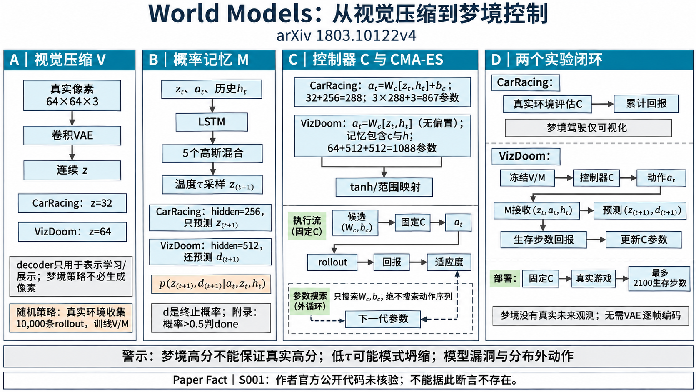
F02 World Models 三模块训练链详解
读图问题与阅读顺序
这张图回答一个容易被“世界模型”三个字遮住的问题：World Models 论文怎样把视觉控制拆成 VAE、MDN-RNN 与控制器，三者分别读什么、输出什么、在哪类数据上训练。按左到右读四个区域：先看像素到潜变量，再看潜变量与动作的概率动力学，再看线性控制器和 CMA-ES，最后看 random data、真实 fitness 与 dream training 的证据边界。底部事实分层把论文事实、代码/实现事实和解释性边界分开，防止把不同实验条件拼成一个统一训练链。
区域一：VAE 的输入、表示和重建
左侧输入框是论文使用的 64×64×3 观测帧 x_t。实心箭头表示帧进入 VAE encoder；encoder 的输出是潜变量 z_t，不是 RSSM 的随机状态，也没有论文依据把它写成连续的 belief state。z_t 向下进入 decoder，得到重建帧 x_hat_t。这条回路解释 VAE 的训练信号：重建误差让表示保留控制所需的视觉信息。图底部的训练数据框注明 random data，表示随机控制器采集的真实帧可用于训练 VAE/RNN；它不等于后面 CMA-ES 找到的控制器评估数据。
区域二：MDN-RNN 的状态轴和条件概率
第二个区域是 MDN-RNN。核心公式 P(z_{t+1}|a_t,z_t,h_t) 表明下一步潜变量同时条件于当前动作、当前潜变量和循环隐藏状态。h_t 经过 RNN 更新为 h_{t+1}；箭头方向是时间从左到右，不能画成后验观测直接读入。CarRacing 的实验配置使用 z32，Doom 使用 z64；图下方红框明确“done 仅 Doom”，因为 Doom 的模型还预测 episode termination，不能推广成所有 World Models 环境都有通用 reward/done head。图中禁止 reward head 的提示是证据边界：论文这一路线用视觉潜变量预测和控制器搜索，不能凭后来 Dreamer 的 reward model 回填。
区域三：线性控制器与 CMA-ES
第三个区域把控制器写成 a=W[z,h]+b。它读取 VAE/RNN 的潜变量与循环状态，输出动作；这不是环境梯度，也不是反向传播穿过真实环境。CMA-ES 框只搜索 W,b 的参数，箭头向下分成两个实验条件：CarRacing 的真实环境 fitness 与 Doom 的梦境模型训练。前者把候选控制器放进真实 CarRacing 环境评分；后者在学到的 Doom world model 中训练或评价行为。两条箭头不能合并成“模型分数就是现实分数”，因为模型偏差可能让 dream score 虚高。
区域四：证据边界与三个数据流
右侧三条箭头有意使用不同颜色和标签。random data collection 指随机控制器产生真实观测，主要支撑表示和动力学模型学习；trained controller evaluation 指训练后的控制器回到真实 CarRacing 环境获得 fitness；dream training 指 Doom 的控制器在预测模型中学习。红色提示“Dream score 不能推出 real score”是解释性边界，不是一个新的训练模块。它提醒读者：同一篇论文同时展示真实环境闭环与模型内闭环时，必须沿数据来源、控制器参数和评价位置分别核对。
箭头、符号和视觉编码
青蓝实线表示帧、潜变量和循环状态的数据流；橙色实线表示控制器参数与优化；绿色线表示实验结果或证据分支；灰色虚线表示推断或来源边界。时间方向统一从左向右。z32/z64 是潜变量宽度的环境条件，done 是 Doom 分支的终止预测，W,b 是线性控制器参数，CMA-ES 是黑盒参数搜索算法。顶部 Paper Fact/Code Fact/Evidence-supported 标签用于区分事实层，底部四格把图中最容易混淆的边界写成可追溯短语。
贯穿实例和常见误读
以 CarRacing 的一帧为例，先用 encoder 得到 z32，再与 RNN 状态 h 及候选动作送入 MDN-RNN，得到下一潜变量分布；控制器用 [z,h] 计算动作，CMA-ES 修改 W,b 后重新在真实环境测试 fitness。这个例子没有 done 输出，也没有把随机采集帧和训练后评估帧混为一谈。以 Doom 为例，z64 的 MDN-RNN 还可预测 done，控制器可以在梦境模型中滚动比较候选；但梦境得分只能说明模型内部一致性，不能替代真实环境证据。最常见的错误是把 World Models 画成 PlaNet/Dreamer 的 RSSM，或给 CarRacing 添加论文未声明的 reward head；这两种错误都会改变图的计算拓扑。
代码与来源边界
论文事实来自 World Models 锁定 PDF/TeX；本图只使用已核对的 VAE 64×64×3、CarRacing z32、Doom z64、MDN-RNN 条件、线性控制器和 CMA-ES 关系。代码映射只能在实际仓库快照存在时引用，不能用 Dreamer 后续仓库的 RSSM 类名代替 World Models 的实现。图片的节点、箭头和文字仍由 root 结合当前 PNG 独立核对；本详解不把图片状态当作来源证据。
洞见与不能外推的内容
这张图的核心洞见是“模型、控制器、评价环境”三层分离：表示学习和动力学预测可以在随机数据上进行，控制器搜索可以在模型内进行，但真实 fitness 仍是独立证据。它解释了为什么 World Models 是 Dreamer 系列的起点，却不能直接推出 latent imagination actor-critic、categorical RSSM 或跨域单配置。后续 PlaNet 将规划放入 RSSM+CEM，DreamerV1 把行为梯度放入 latent imagination；这些是演化关系，不能回填为 World Models 本身的模块。
r4 三模块训练契约与数据流复核
F02 的关键不是把三个模块排成流水线，而是明确各模块的输入输出和训练数据边界。VAE 的输入是 x_t∈R^{64×64×3}，encoder 给出连续 z_t，decoder 只用重建误差约束视觉压缩；MDN-RNN 接收 z_t、a_t、h_t，输出多模态的 p(z_{t+1},d_{t+1}|z_t,h_t,a_t)，其中 d 的终止预测是 Doom 分支事实；控制器读取 z 或 [z,h] 计算动作，CMA-ES 搜索的是 W,b 等参数。动作序列是控制器输出，参数是黑盒优化变量，二者在图中必须由不同箭头连接。
random data collection 的箭头只指向 VAE/RNN 的真实观测序列，不能直接指向“已训练控制器”。训练完成后的 controller evaluation 回到真实 CarRacing 环境，得到 real fitness；Doom 的 dream training 在 MDN-RNN 生成的潜轨迹中进行，再把控制器放回真实环境检查。三条路径共享模型和控制器接口，却不共享评价来源。潜在梦境得分高只说明模型内部 rollout 的一致性，不能替代真实环境反馈；模型漏洞、混合高斯采样误差和长期漂移都可能造成分离。
本图还需要把未出现的节点视为有意省略。论文没有把 World Models 画成 RSSM，也没有给 CarRacing 添加通用 reward head；后续 Dreamer 的 reward/value、KL、actor-critic 不应回填到 S001。论文精读证据来自 03_anchor_reading/papers/1803.10122-world-models.md 和扩展笔记 03_anchor_reading/expanded/1803.10122-world-models.md；当前代码清单明确没有作者官方仓库，sources/repos/brain-tokyo-workshop 只能作为相关生态线索。图上的“未核验”必须保留，不能用第三方路径补齐函数级实现。
一个可复核的 CarRacing 时间步是：x_t→encoder→z_t，控制器用 [z_t,h_t] 产生 a_t，MDN-RNN 依据动作采样下一潜变量分布，CMA-ES 修改参数后重跑 rollout，最后由真实环境累计 fitness。Doom 时间步额外保留 d_t，但梦境中的 d 仍是模型概率而非真实终止事件。沿这条实例箭头检查，可避免把重建帧、随机训练帧、潜在预测帧和真实评测帧当成同一对象。
符号、数据实体与模型实体
观测为，动作为，VAE潜变量为，LSTM隐藏状态为。CarRacing的来自真实环境并评价控制器；VizDoom的由M预测以终止梦境，生存时间作为适应度。这里不定义共同的或value输出，避免把后代RSSM/actor-critic接口倒灌到本篇。
方法组件与数据流
视觉模型 V 是卷积 VAE。输入帧缩放到 64×64×3，编码器输出均值和方差，采样潜变量 z；解码器把 z 还原为像素。CarRacing 使用 32 维 latent，VizDoom 使用 64 维 latent。记忆模型 M 是 LSTM 与 mixture density network 的组合：它读取当前潜变量和动作，更新隐藏状态 h。主实验的输出必须按任务限定：CarRacing M 只建模下一潜变量 z；VizDoom 的 M 还预测 done/死亡信号。论文后段关于同时预测 observation、action、reward、done 是未来迭代训练设想。控制器 C 读取 z，或读取拼接后的 z 与 h，输出连续转向/油门/刹车或离散移动选择。三个模块的训练顺序是先收集随机 rollout 训练 V，再用编码序列训练 M，最后冻结 V/M 优化 C。V 的潜表示进入 M 和 C，M 的记忆状态进入 C；CarRacing 的环境奖励只用于评价候选控制器，VizDoom 的 done 预测则决定梦境生存时间。行为模块产生的动作驱动真实环境或梦境状态的下一次转移。若论文未报告某个维度、初始化或随机种子，本文明确写 来源未报告，不从后来代码猜测。
输入与输出的逐步检查
先列出每个时间步真正可见的量，再列出模型生成的量。对在线设置，真实观测在 posterior/update 后进入 replay；对想象设置，未来观测不应被偷看。对离散动作、连续动作、低层键盘鼠标或多模态输入，动作空间的编码方式决定了 policy head 和评价指标的含义。任何无法从论文原页确认的字段都应保留 来源未报告。
状态表示的可解释性边界
潜状态不是环境真状态，也不自动对应物体、速度或任务变量。重建目标、KL、分类变量、token bottleneck 和 deterministic memory 各自提供不同的约束。读者需要问：若两个不同的环境状态产生相同表示，reward、continue 或未来动作是否仍然可区分？论文通常用预测/控制结果间接回答，而不是给出表示可辨识性定理。
D1 World Models 数据流
图像先经 VAE 得到 z，M 用 z、上一动作与 LSTM 记忆预测下一 z 的混合高斯分布，C 读取 z 与 h 产生动作。h 是循环单元的历史状态，并非另一个需要监督的概率输出头。CarRacing 的 V/M 不读取环境奖励，CMA-ES 用真实 rollout 的累计 reward 评价参数；VizDoom 的 M 另预测 done，梦境用生存时间评价 C。
核对来源：sources/papers/1803.10122/tex/main.tex（L195-231,295-325,442-465,596-615）。
动力学、训练目标与梯度方向
沿时间顺序区分观测校正与开环预测，再检查各项损失作用的对象和停止梯度的位置。目标的存在、配置是否启用与参数是否更新需要分别判断。
公式、损失与直觉
潜状态和记忆可写为：
前两个式子表示视觉编码与记忆递推，后两个条件分布分别属于 CarRacing 与 VizDoom。这里的 d 是终止信号；奖励预测只出现在论文后段对更难任务的迭代设想中，不能写成这两个主实验共有的 MDN 输出。
VAE 以重建项和 KL 正则约束 z 的分布；MDN 通过混合高斯的对数似然保留“一种动作可能带来多个合理未来”的不确定性。这里的 mixture 不是为了生成漂亮图片，而是避免把随机火球事件平均成不存在的中间状态。控制器训练没有使用模型内部的解析梯度，CMA-ES 在参数空间中评估候选控制器。 公式的直觉是把表示学习、未来预测和行为目标接在同一时间轴上。一个好的模型即使重建清晰，也可能在奖励相关因素上失真；因此要把 observation loss、reward/value loss、KL/regularization 和 policy objective 分开解释。
概率、采样与梯度
论文中的“随机世界模型”可能指多个不同层面：潜状态采样、混合分布、categorical sample、噪声条件 token 或仅仅是环境本身的随机性。读者要分别检查前向是否采样、损失是否对分布求对数似然、反向是否采用 straight-through、以及策略是否把模型的随机性当作探索。若一个公式写了期望，实际实验可能通过单样本 Monte Carlo 估计；若一个图画了平均轨迹，实际控制器可能每步重新采样。没有明确证据时，不把“概率预测”翻译成“模型知道真实不确定性”。
训练目标的尺度与归约
写出 loss 名称还不够，必须问每个项在时间、batch、空间和类别维度上如何归约，权重是否固定，是否使用 stop-gradient、free nats 或 target network。观察重建可能按像素平均，reward 可能按时间求和，KL 可能按 latent variable 平均；不一致的归约会改变梯度量级。对 two-hot、categorical 或 mixture likelihood，目标不是一个普通的标量回归，解释时应保留其分布性质。论文未报告的 reduction 细节要进入代码问题台账，不能用公式符号的简写掩盖。
时间索引与终止语义
想象序列经常把起点、动作、下一状态、reward 和 continue 错开一位。一个正确的解释需要明确：动作 a_t 作用于哪一状态，r_t 属于哪一次转移，终止信号是否乘在 bootstrap 上，初始状态是否进入 actor loss，真实 episode 的 reset 如何传入模型。短 horizon 的 toy rollout 是检查这些语义的有效方法，即使不运行目标仓库也可以通过论文算法和源码静态切片核对。对于 Minecraft 里程碑、Atari life loss 或连续控制 episode，任务成功定义也不能与模型的 discount/continue 头混为一谈。
最终学习目标
完成本报告后，读者应能从一篇新世界模型论文中独立恢复：问题约束、状态契约、动作条件、训练目标、想象/规划路径、实验预算和代码来源边界；也应能解释它相对于六代 Dreamer 主线保留了什么、替换了什么、删除了什么，以及这种改变对应哪一种失败模式。这个能力比记住某个网络层数或 benchmark 分数更稳定，也是后续 paper-code joint analysis 和方法图解的事实基础。
行为、想象与真实环境闭环
从当前状态出发追踪动作怎样产生、未来怎样展开、回报怎样被消费。模型内候选或想象轨迹不是已经在环境中执行的路径。
计算链和训练顺序
真实序列的单步计算可以写成：
统一接口式需按任务加条件：CarRacing 主实验的 M 建模 p(z_{t+1}|a_t,z_t,h_t)，V/M 不接收环境 reward；VizDoom 的 M 另外预测 done，形成 p(z_{t+1},d_{t+1}|a_t,z_t,h_t)。论文后段提出更难任务时让 M 预测 observation/action/reward/done，是未来迭代设想，不是前述两个主实验的共同配置。
控制器在CarRacing 完整线性控制器有867个参数，读取拼接的 z 与 h；只读取z的是论文的受限表示对照，不能把867参数归给z-only输入。CMA-ES 搜索控制器参数 W_c、b_c（CarRacing 线性控制器为 867 个参数；VizDoom 约 1088 个参数）；动作序列是候选控制器在真实或虚拟 rollout 中产生的后果，CMA-ES 并不逐步直接搜索动作序列。论文把三个阶段分开：先用随机 rollout 训练 VAE，再用编码的序列训练 MDN-RNN，最后冻结 V/M，训练 C。
梦境训练是否包含 reward 取决于任务：VizDoom 的 M 虚拟环境从 z、h、a 采样下一 z 与 done，C 的适应度是梦中生存时间；CarRacing 主实验不在 M 中建模环境 reward，CMA-ES 候选控制器直接在真实环境 rollout 上按累计 reward 评价。这样控制器不再等待真实环境交互，训练成本从像素渲染转移到小型潜状态转移。论文也明确指出温度 τ 控制 MDN 采样的随机性：过低会让世界模型过于确定，过高会使控制器面对过度噪声。
行为学习与规划的计算位置
比较行为模块时不要只写“都在潜空间”。黑盒参数搜索、每步 CEM、可微 actor-critic 和离线 imagined policy 的计算位置不同：前者把成本放在候选评估，后者把成本放在训练更新或大模型推理。应分别记录真实环境调用次数、模型 rollout 长度、候选数量、策略前向次数和最终部署延迟。
训练与推理的边界
训练路径可以看到 posterior、真实 reward 和完整序列；推理/交互路径通常只有当前观测、历史状态和动作。想象路径为了高吞吐会跳过 decoder，或者只产生 latent/reward/value；这不表示部署时也能跳过必要的 observation update。在线论文会在交互后把新 episode 写回 replay，离线论文则必须依靠固定数据和模型内目标。把训练分支误读成推理分支会造成最常见的错误：声称模型在真实环境中执行了每一条 imagined action，或者声称离线方法获得了训练阶段未存在的环境反馈。
数据与控制流
领域关键执行基底是 latent dream control loop：随机环境序列先经过视觉压缩和概率记忆，再由控制器在真实环境或潜在梦境中选择动作。 真实输入、状态更新、未来展开、目标计算和环境调用必须按时间顺序分开。
D2 World Models 训练与推理顺序
先以随机 rollout 训练 VAE，再以编码后的序列训练 MDN-RNN，最后冻结 V/M 搜索 C。CarRacing 候选控制器在真实环境累积 reward；VizDoom 候选控制器先在 M 的梦境中按生存时间训练，再回真实游戏评价。温度只调 MDN 采样随机性，不能把这两种评价路径合成一条梦境奖励学习链。
核对来源：sources/papers/1803.10122/tex/main.tex（L195-231,295-325,442-465,596-615）。
从数据到行为的完整执行基底
随机环境序列先经过视觉压缩和概率记忆，再由控制器在真实环境或潜在梦境中选择动作。
贯穿实例、形状与时间对齐
用短序列和可以手算的数字核对抽象机制。这里的教学实例明确区别于论文实验值，也不冒充目标框架的运行结果。
算法流程与具体 逐步计算实例
梦境 rollout 从真实序列的 z、h 开始。控制器给出动作，梦境 rollout 的输出按任务限定：VizDoom M 采样下一 z 与 done，直到模型终止或达到时间上限；CarRacing 主实验没有在 M 中预测环境 reward，CMA-ES 候选控制器在真实环境 rollout 上按累计 reward 评价。CarRacing 的控制器可以直接在真实环境中用 CMA-ES 评估；VizDoom 则把潜空间 M 包装成控制环境，让控制器在梦里经历大量便宜的试验。温度参数控制采样分布：温度过低使梦境过于确定，过高则让控制器学习面对模型人为增加的噪声。一个具体例子是火球出现与否：MDN 可以保留两种模式，控制器必须选择能在两种未来中都存活的动作，而不是追逐平均预测。 对一个最小序列 walkthrough：给定起始观测和动作，先得到表示，再更新模型状态；若处于 imagination，则跳过真实观测，使用 prior/dynamics 产生下一状态；本篇由候选控制器的任务适应度评价行为，不引入Dreamer式value head；只有在线论文才把最新真实观测写回 replay。这个 walkthrough 也是后续代码问题台账的输入。
一个最小数值例子
设一段序列只有三个时间步，第一帧包含一个可见物体，第二帧被遮挡，第三帧重新出现。单帧 encoder 只能把第二帧映射到不确定表示；带记忆的状态更新可以保留第一帧的信息，prior 在没有新观测时继续预测物体位置。若 reward 只在第三步出现，模型必须同时预测状态延续和奖励到达。对于 planner，候选动作序列会比较不同未来；对于 actor-critic，策略更新会把第三步的价值信号传回前两步；对于离线视频，策略不能向环境询问新的观测，只能相信训练过的状态转移。这个例子解释了为什么历史、动作、终止信号和价值 bootstrap 必须在论文解释中分开。
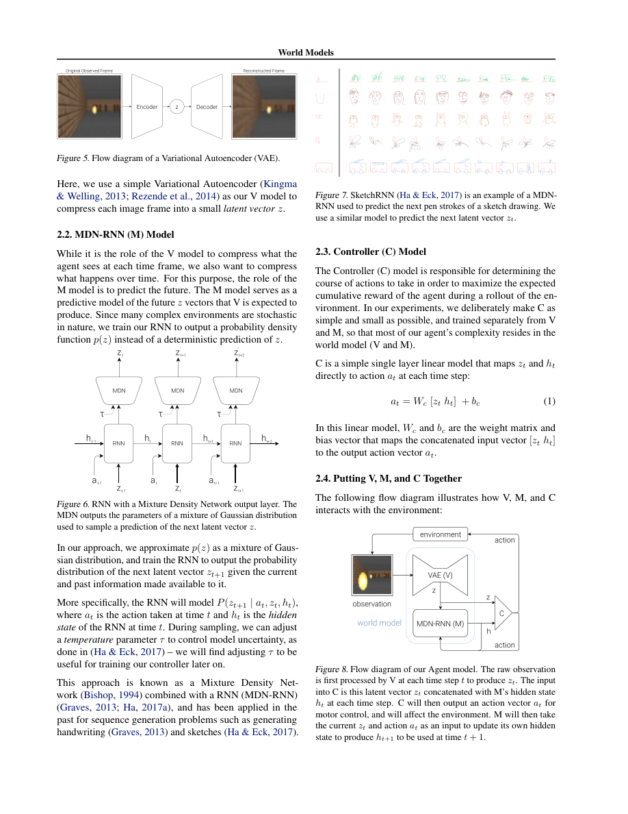
Figure 8. Flow diagram of our Agent model. The raw observation is first processed by V at each time step to produce . The input into C is this latent vector concatenated with M's hidden state at each time step. C will then output an action vector for motor control, and will affect the environment. M will then take the current and action as an input to update its own hidden state to produce to be used at time .
选择理由
方法主图，直接展示 V→z、M 的 h 记忆与 C→a→environment 的闭环；它还把“控制器消费 z 与 h、M 读当前 z/a 更新下一 h”的时序说清楚，适合纠正把 M 当成单一 reward 头或把 CMA-ES 当成逐步动作搜索的误读。
图表说明
图中左侧原始观测先进入 VAE，得到潜向量 z；z 同时送入控制器 C，并与 M 的隐状态 h 拼接。C 输出动作 a，动作作用于环境；同一时刻的 z 与 a 回到 MDN-RNN M，M 更新出下一时刻 h。图上没有把 reward 画成 M 的必然输出，方法图的可核对事实是表示、记忆、控制和环境之间的闭环接口。该图也明确 C 的输入不是完整像素，而是 [z,h]，因此“在梦里训练”应理解为在潜状态转移上评估控制器。论文正文对 CarRacing 另有条件说明：主实验的 V/M 只压缩并预测图像潜变量，环境 reward 由 C 的真实 rollout 评价；VizDoom 才在 M 中加入 done 预测形成梦境终止信号。图本身未编码这些任务差别，不能单独推出 reward head。
进一步分析
这张图最适合作为接口级方法证据，而不是完整训练算法。它支持三项事实：z 是当前观测编码，h 是跨时间记忆，a 是 C 对环境的输出。它不支持“V/M 已经知道任务奖励”或“世界模型生成像素后再训练 C”。CMA-ES 的搜索对象应回到正文算法段：它优化 W_c、b_c 等参数，动作序列是固定候选控制器在 rollout 中产生的后果。对跨任务比较，需保留 CarRacing 与 VizDoom 的不同 M 输出和训练环境。
证据边界
原图仅给结构与时序，不给参数量、训练数据量、温度、reward 监督或 transfer 分数；这些只能由正文/附录与 Table 1 共同核验。
原文定位
sources/papers/1803.10122/tex/main.tex:244-247sources/papers/1803.10122/tex/main.tex:297-301sources/papers/1803.10122/tex/main.tex:442-464
源码边界：当前来源没有经过核验的官方公开仓库；保留 paper-only/source-boundary 结论，不把第三方路径冒充作者实现。
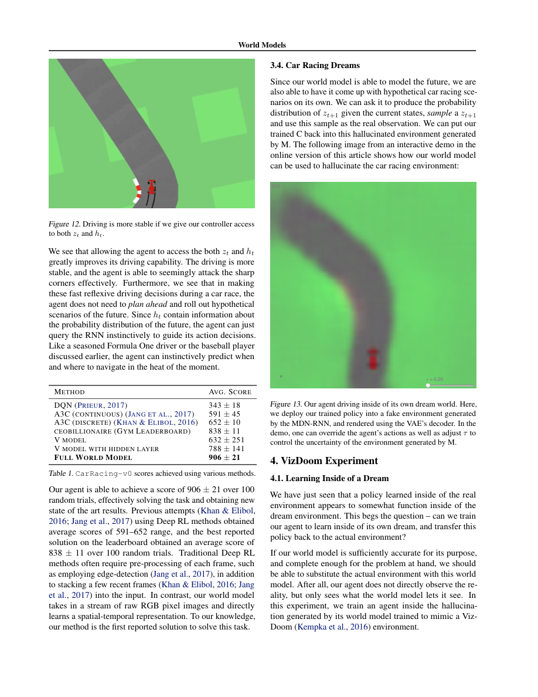
Table 1. CarRacing-v0 scores achieved using various methods.
选择理由
实验表，给出只读取 z 的 V model、仅在控制器 C 上增加 hidden layer 的变体，以及加入 M 隐状态 h 的 Full World Model 真实 CarRacing 得分，直接呈现控制器结构与记忆输入的分层增益，并能约束“梦境分数等于真实成绩”的过度外推。
图表说明
表格唯一指标是 CarRacing-v0 的 Avg. Score，列出 DQN 343±18、A3C (continuous) 591±45、A3C (discrete) 652±10、ceobillionaire (Gym Leaderboard) 838±11、V model 632±251、V model with hidden layer 788±141，以及 Full World Model 906±21。表中没有训练步数轴，也没有把梦境分数列为同一指标；这里的 ± 是作者报告的成绩波动。V model 与 V model with hidden layer 都只让控制器读取 z；后者只是在控制器 C 上增加 hidden layer，Full World Model 才把 M 的时间隐状态 h 加入控制器并形成 V+M 流程。表格支持“联合 z 与 h 的控制在真实 CarRacing rollout 上达到 906±21”的范围化结论，不能支持 VAE 重建本身保留速度或奖励充分统计量。
进一步分析
表中方法列混合了模型、控制器和外部基线，比较时必须保留输入与协议：A3C、DQN 的实现与动作空间不同，ceobillionaire 行来自 Gym leaderboard。论文脚注把 solving 定义为 100 次 trial 平均 reward 900；因此 Full World Model 的 906±21 是真实环境评价，并非仅在 M 的虚拟环境中测得。更重要的是，这张表不能抹平两任务训练差别：CarRacing 主实验的 M 没有实际 reward 信号，CMA-ES 在真实环境 rollout 上取累计 reward；VizDoom 才把 M 包装成含 done 的虚拟环境并在梦境里优化生存时间。
证据边界
表格没有报告每行的统一数据预算、随机种子、单次 rollout 数或参数搜索细节；不能据此宣称所有方法公平同预算，也不能把 906±21 当作模型预测精度。
原文定位
sources/papers/1803.10122/tex/main.tex:280-301sources/papers/1803.10122/tex/main.tex:374-410sources/papers/1803.10122/tex/main.tex:340-350
源码边界：当前来源没有经过核验的官方公开仓库；保留 paper-only/source-boundary 结论，不把第三方路径冒充作者实现。
源码架构、调用链与实现差异
先看执行入口与模块责任，再追踪公式落到哪个固定文件和函数。源码事实解释当前实现，不能反向补写论文没有报告的实验设置。
代码和来源边界
World Models 论文当前任务完整 TeX 和 PDF 已取得，正文和附录都已渲染。论文只提供 worldmodels.github.io 互动页面链接，本任务没有接受任何第三方仓库作为作者官方代码。因此，World Models 的第四层只能写论文级接口和可验证伪代码，不能伪造文件名。代码生态中的 Brain Tokyo Workshop 固定快照仅作相关工具/环境线索，不能反推论文实现。
论文事实、推断和代码事实三栏
论文明确说明 是正文、附录、图表明确写出的事实；有证据支持的解释 是从公式、流程或实验设置推导出的解释；固定源码事实 是固定提交实际包含的函数、配置或分支。三者不能混写。例如论文说“在想象中学习”，源码可能显示一个 prior-only scan，这是代码事实对论文描述的具体化；但源码另有 CEM 或 optional head，不代表论文主实验默认启用。Dreamer4 的第三方 repository 甚至只能提供生态对照，不能升级为 author 固定源码事实。
从论文阅读到源码阅读的交接
论文阶段结束时，交给代码阶段的不是一段摘要，而是一组稳定问题：真实入口在哪里，状态如何初始化，时间维度如何排列，哪些观测被置零，哪一个变量被 stop-gradient，reward/continue/value 如何归约，配置是否真的被消费，实验命令能否到达目标分支，以及没有官方代码时应如何 保留来源边界并停止外推。代码阶段再把每个问题标成 answered、partly answered、有证据支持的解释、contradiction 或 not answered。这样联合报告保留论文事实和实现事实的边界，也让读者能追踪从公式到函数、从实验到命令、从成功主张到失败风险的完整证据链。
代码来源边界
作者论文链接到交互式网页，但当前来源核验没有接受作者官方代码仓库。代码映射只保留论文级接口、伪代码和来源边界，不虚构文件路径。
VAE visual compression / z_t=V(o_t)
论文定位：论文 Figure 1 / Appendix A。
实现核对：论文没有给出经本任务核验的作者官方训练仓库；V、M、C 的解释来自论文正文与附录。第三方工具只作环境或生态资料。
结论边界：论文没有给出经本任务核验的作者官方训练仓库；V、M、C 的解释来自论文正文与附录。第三方工具只作环境或生态资料。
核对来源：sources/papers/1803.10122/tex/main.tex（L195-231,295-325,442-465,596-615）。
MDN-RNN 的下一潜变量预测与 VizDoom done 分支
论文定位：论文模型章节。图像先经 VAE 得到 z，M 用 z、上一动作与 LSTM 记忆预测下一 z 的混合高斯分布，C 读取 z 与 h 产生动作。h 是循环单元的历史状态，并非另一个需要监督的概率输出头。CarRacing 的 V/M 不读取环境奖励，CMA-ES 用真实 rollout 的累计 reward 评价参数；VizDoom 的 M 另预测 done，梦境用生存时间评价 C。
实现核对：论文没有给出经本任务核验的作者官方训练仓库；V、M、C 的解释来自论文正文与附录。第三方工具只作环境或生态资料。
结论边界：论文没有给出经本任务核验的作者官方训练仓库；V、M、C 的解释来自论文正文与附录。第三方工具只作环境或生态资料。
核对来源：sources/papers/1803.10122/tex/main.tex（L195-231,295-325,442-465,596-615）。
controller in dream / a_t=C(z_t,h_t)
论文定位：论文 CarRacing/VizDoom。
实现核对：论文没有给出经本任务核验的作者官方训练仓库；V、M、C 的解释来自论文正文与附录。第三方工具只作环境或生态资料。
结论边界：论文没有给出经本任务核验的作者官方训练仓库；V、M、C 的解释来自论文正文与附录。第三方工具只作环境或生态资料。
核对来源：sources/papers/1803.10122/tex/main.tex（L195-231,295-325,442-465,596-615）。
World Models：实现遗漏与证据边界
论文表格与固定提交运行的一一对应关系的证据边界
论文说明：论文报告了任务、预算和结果。 固定材料只能说明：固定提交或来源边界不能证明该表格由此版本生成。 因此，只能标记 与证据静态对应，不能宣称复现。（作者论文链接到交互式网页，但当前来源核验没有接受作者官方代码仓库。代码映射只保留论文级接口、伪代码和来源边界，不虚构文件路径。）
核对来源：sources/papers/1803.10122/tex/main.tex（L195-231,295-325,442-465,596-615）。
随机种子与结果聚合的证据边界
论文说明：部分图表给出均值/标准差或多次运行。 固定材料只能说明：静态阅读未执行训练，也未加载 checkpoint。 因此，结果数字只来自论文原页。（sources/papers/1803.10122/1803.10122v4.pdf）
核对来源：sources/papers/1803.10122/tex/main.tex（L195-231,295-325,442-465,596-615）。
运行环境与依赖的证据边界
论文说明：论文给出算法和实验协议。 固定材料只能说明：本任务不安装目标仓库依赖、不运行 GPU/TF/JAX。 因此，运行时行为保持未验证。（本报告的范围是静态论文与源码分析）
核对来源：sources/papers/1803.10122/tex/main.tex（L195-231,295-325,442-465,596-615）。
author source path的证据边界
论文说明：论文链接交互式页面。 固定材料只能说明：当前任务没有核验到作者维护仓库。 因此，不能给出函数级 机制与源码对照；保留论文级伪代码。（00_identity/paper-identities.json）
核对来源：sources/papers/1803.10122/tex/main.tex（L195-231,295-325,442-465,596-615）。
数据、时间与行为的顺序
真实观测或视频先进入表示编码器，得到状态或 token；动力学再在动作条件下预测后续状态。训练时真实序列提供监督，未来规划或想象分支则沿自身状态向前推进。任务头和行为模块各消费相应特征；不同论文是否预测 reward、discount 或 value 必须以本篇机制与配置为准。动作只有被交给环境时才成为真实交互，候选动作与想象动作保留在模型内部。
模块责任与证据层次
原始关系图将论文机制、固定代码事实、证据支持的解释和真实来源边界分开。节点之间的联系表达映射责任，而不是证明模块在某次论文实验中必然启用。没有官方实现时，连接停在论文级接口；后续实现或第三方仓库只能以它们自己的身份出现。
World Models：方法级修改边界（只读解释）
本文件不提出新算法、不修改源码，只说明若读者要研究同一框架，哪些现有契约必须保持。
理解或替换 VAE visual compression需要保持什么
不执行修改；先保持输入输出契约，再比较梯度、状态和下游消费。 必须检查表示形状、时间对齐、目标 stop-gradient、来源边界。
涉及的实现接口：论文没有给出经本任务核验的作者官方训练仓库；V、M、C 的解释来自论文正文与附录。第三方工具只作环境或生态资料。
阅读时应沿调用者回到被调函数，核对状态形状、时间对齐、目标停止梯度和下游消费；这一检查只证明静态接口一致，没有训练或性能复现结果。
核对来源：sources/papers/1803.10122/tex/main.tex（L195-231,295-325,442-465,596-615）。
理解或替换 MDN-RNN stochastic memory需要保持什么
不执行修改；先保持输入输出契约，再比较梯度、状态和下游消费。 必须检查表示形状、时间对齐、目标 stop-gradient、来源边界。
涉及的实现接口：论文没有给出经本任务核验的作者官方训练仓库；V、M、C 的解释来自论文正文与附录。第三方工具只作环境或生态资料。
阅读时应沿调用者回到被调函数，核对状态形状、时间对齐、目标停止梯度和下游消费；这一检查只证明静态接口一致，没有训练或性能复现结果。
核对来源：sources/papers/1803.10122/tex/main.tex（L195-231,295-325,442-465,596-615）。
理解或替换 controller in dream需要保持什么
不执行修改；先保持输入输出契约，再比较梯度、状态和下游消费。 必须检查表示形状、时间对齐、目标 stop-gradient、来源边界。
涉及的实现接口：论文没有给出经本任务核验的作者官方训练仓库；V、M、C 的解释来自论文正文与附录。第三方工具只作环境或生态资料。
阅读时应沿调用者回到被调函数，核对状态形状、时间对齐、目标停止梯度和下游消费；这一检查只证明静态接口一致，没有训练或性能复现结果。
核对来源：sources/papers/1803.10122/tex/main.tex（L195-231,295-325,442-465,596-615）。
视觉 VAE：从帧到随机潜变量：机制到实现的逐项对应
V 将高维帧压缩为可采样的 z；任务相关信息可能被无监督重建遗漏。
该分析条目的符号表达为：z_t=V(o_t)。V 将高维帧压缩为可采样的 z；任务相关信息可能被无监督重建遗漏。
论文依据：论文 Figure 1 / Appendix A。
| 固定实现入口或来源边界 | 行号与符号 | 在本机制中承担的职责 |
|---|---|---|
| 论文级接口 真实来源边界 (没有经核验的作者官方源码路径) | 论文机制，不提供作者源码行号；VAE、MDN-RNN、CMA-ES |
论文级接口；没有可接受的作者源码路径 |
阅读切片：VAE 重建和 KL；无作者源码可映射。
论文与实现的关系：论文机制与代码/来源边界逐项对照；未运行训练。
对应限制：作者论文链接到交互式网页，但当前来源核验没有接受作者官方代码仓库。代码映射只保留论文级接口、伪代码和来源边界，不虚构文件路径；没有建立论文表格与固定提交运行的一一对应关系。
MDN-RNN：概率记忆与潜变量预测：机制到实现的逐项对应
图像先经 VAE 得到 z，M 用 z、上一动作与 LSTM 记忆预测下一 z 的混合高斯分布，C 读取 z 与 h 产生动作。h 是循环单元的历史状态，并非另一个需要监督的概率输出头。CarRacing 的 V/M 不读取环境奖励，CMA-ES 用真实 rollout 的累计 reward 评价参数；VizDoom 的 M 另预测 done，梦境用生存时间评价 C。
该分析条目的符号表达为：p_CarRacing(z_{t+1}|a_t,z_t,h_t)；p_VizDoom(z_{t+1},d_{t+1}|a_t,z_t,h_t)。CarRacing不拟合环境reward；VizDoom增加done，生存时间评价控制器。
论文依据：论文模型章节。
| 固定实现入口或来源边界 | 行号与符号 | 在本机制中承担的职责 |
|---|---|---|
| 论文级接口 真实来源边界 (没有经核验的作者官方源码路径) | 论文机制，不提供作者源码行号；VAE、MDN-RNN、CMA-ES |
论文级接口；没有可接受的作者源码路径 |
阅读切片：MDN likelihood；无作者源码。
论文与实现的关系：论文机制与代码/来源边界逐项对照；未运行训练。
对应限制：作者论文链接到交互式网页，但当前来源核验没有接受作者官方代码仓库。代码映射只保留论文级接口、伪代码和来源边界，不虚构文件路径；没有建立论文表格与固定提交运行的一一对应关系。
梦境中的控制器与参数搜索：机制到实现的逐项对应
C 在潜状态梦境中选择动作，控制器优化与世界模型解耦。
该分析条目的符号表达为：a_t=C(z_t,h_t)。C 在潜状态梦境中选择动作，控制器优化与世界模型解耦。
论文依据：论文 CarRacing/VizDoom。
| 固定实现入口或来源边界 | 行号与符号 | 在本机制中承担的职责 |
|---|---|---|
| 论文级接口 真实来源边界 (没有经核验的作者官方源码路径) | 论文机制，不提供作者源码行号；VAE、MDN-RNN、CMA-ES |
论文级接口；没有可接受的作者源码路径 |
阅读切片：CMA-ES；无作者源码。
论文与实现的关系：论文机制与代码/来源边界逐项对照；未运行训练。
对应限制：作者论文链接到交互式网页，但当前来源核验没有接受作者官方代码仓库。代码映射只保留论文级接口、伪代码和来源边界，不虚构文件路径；没有建立论文表格与固定提交运行的一一对应关系。
实现边界：论文表格与固定提交运行的一一对应关系
论文说明：论文报告了任务、预算和结果。 固定实现或来源显示：固定提交或来源边界不能证明该表格由此版本生成。 对结论的影响：只能标记 与证据静态对应，不能宣称复现。
依据：作者论文链接到交互式网页，但当前来源核验没有接受作者官方代码仓库。代码映射只保留论文级接口、伪代码和来源边界，不虚构文件路径。
实现边界：随机种子与结果聚合
论文说明：部分图表给出均值/标准差或多次运行。 固定实现或来源显示：静态阅读未执行训练，也未加载 checkpoint。 对结论的影响：结果数字只来自论文原页。
依据：1803.10122/1803.10122v4.pdf。
实现边界：运行环境与依赖
论文说明：论文给出算法和实验协议。 固定实现或来源显示：本任务不安装目标仓库依赖、不运行 GPU/TF/JAX。 对结论的影响：运行时行为保持未验证。
依据：本报告的范围是静态论文与源码分析。
实现边界：author source path
论文说明：论文链接交互式页面。 固定实现或来源显示：当前任务没有核验到作者维护仓库。 对结论的影响：不能给出函数级 机制与源码对照；保留论文级伪代码。
依据：00_identity/paper-identities.json。
接口保持要求：理解 VAE visual compression 的输入输出契约
不执行修改；只说明替换该机制时必须保持的状态、时间和梯度契约。 需要保持：真实输入与 imagined input 分开；时间维度和状态消费方不变；真实来源边界 不被隐藏。 实现位置：论文级接口 真实来源边界 (没有经核验的作者官方源码路径)::VAE,MDN-RNN,CMA-ES。 静态核验：重读源文件、调用者、问题台账和固定证据；不运行训练。
接口保持要求：理解 MDN-RNN stochastic memory 的输入输出契约
不执行修改；只说明替换该机制时必须保持的状态、时间和梯度契约。 需要保持：真实输入与 imagined input 分开；时间维度和状态消费方不变；真实来源边界 不被隐藏。 实现位置：论文级接口 真实来源边界 (没有经核验的作者官方源码路径)::VAE,MDN-RNN,CMA-ES。 静态核验：重读源文件、调用者、问题台账和固定证据；不运行训练。
接口保持要求：理解 controller in dream 的输入输出契约
不执行修改；只说明替换该机制时必须保持的状态、时间和梯度契约。 需要保持：真实输入与 imagined input 分开；时间维度和状态消费方不变；真实来源边界 不被隐藏。 实现位置：论文级接口 真实来源边界 (没有经核验的作者官方源码路径)::VAE,MDN-RNN,CMA-ES。 静态核验：重读源文件、调用者、问题台账和固定证据；不运行训练。
World Models 数据流的阅读含义
真实输入、表示、动力学、奖励/价值和行为输出；虚线表示 真实来源边界。 它表达的是数据流。 原始定义位置：diagrams.md:D1；核对来源：论文级接口 真实来源边界 (没有经核验的作者官方源码路径)。
World Models 训练与推理顺序的阅读含义
先读取真实序列，再进入 prior/imagination，最后更新行为或执行动作。 它表达的是训练与交互的时间顺序。 原始定义位置：diagrams.md:D2；核对来源：1803.10122/1803.10122v4.pdf。
论文机制与证据层的阅读含义
论文事实、固定源码事实、与固定证据静态对应 inference 与 真实来源边界 分层。 它表达的是机制责任及证据层次。 原始定义位置：diagrams.md:D3；核对来源：00_identity/paper-identities.json；00_identity/repo-identities.json。
该篇原始结构化分析的所有科学条目已转换为本章的机制、实验和问答解释。需要逐字段复核时，可打开原始分析包（此附件保存在完整本地归档中）；附件保留原始字节，当前科学修订另有派生版本，二者身份分别记录。
实验、消融与结论的适用范围
每项结果都连同任务、输入、预算和比较条件阅读。成功、负面证据和计算成本共同限定论文主张。
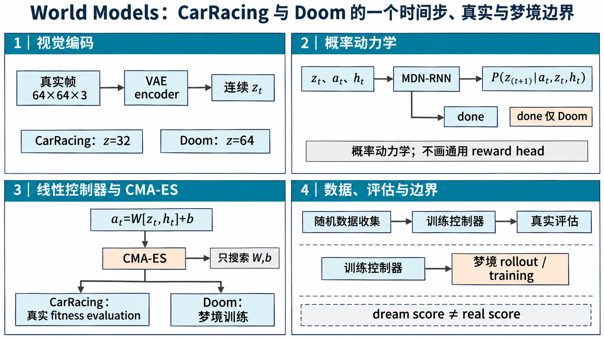
F03 World Models CarRacing 与 Doom 实例边界详解
这张图回答 World Models 中一个 CarRacing 或 Doom 时间步如何经过 VAE、MDN-RNN 和控制器，以及哪些结果来自真实环境、哪些来自梦境。四个区域分别是输入帧与 VAE、MDN-RNN 概率动力学、线性控制器与 CMA-ES、数据/评估/梦境证据边界。它只解释 S001 的两任务实例，不把 PlaNet RSSM、CEM/MPC 或后续 Dreamer actor-critic 引入图中。
第一区从真实环境帧开始，输入尺寸为 64×64×3。VAE encoder 将帧压缩为连续潜变量 z_t，decoder 可从 z 重建观测；CarRacing 使用 z=32，Doom 使用 z=64。两个维度是论文任务条件，不是网络层数或图像尺寸。图中把 CarRacing 和 Doom 的 z 维度分开，防止读者把它们平均成一个通用 latent。
第二区是 MDN-RNN 概率动力学。它接收 z_t、动作 a_t 和隐藏状态 h_t，输出 P(z_{t+1}|a_t,z_t,h_t)，用混合密度表达潜在未来的不确定性。Doom 额外预测 done 终止变量，图中明确写“done 仅 Doom”；CarRacing 不接通用 done 预测。图中没有 reward head，因为 S001 的 MDN-RNN 事实合同只要求 next-z 概率和 Doom 终止边界。把 reward 画成所有任务共同输出会改变论文语义。
第三区是固定结构的线性控制器 a_t=W[z_t,h_t]+b。CMA-ES 搜索的变量只有 W、b，不是动作序列，也不是环境梯度。控制器输出动作后分别进入 CarRacing 真实 fitness evaluation 与 Doom dream training：CarRacing 的控制器在真实环境评估，Doom 可以在模型梦境中训练控制器。图中把两个分支并列，避免把真实评估和梦境训练混成一个分数。
第四区把 random data collection、trained-controller real evaluation、dream rollout/training 三条路径分开。随机策略轨迹提供训练 VAE/MDN-RNN 的数据；训练后的控制器在真实环境中获得真实适应度；Doom 的控制器也可在模型内部 dream rollout/training。灰色虚线把真实交互和模型内 rollout 隔离，橙色底部写出 dream score ≠ real score。模型在梦境里给出的高分不能证明真实环境也成功，因为模型漏洞、累积误差和分布外动作都会导致错觉。
一个最小时间步例子是：真实帧 x_t 进入 VAE 得到 z_t；a_t 与 z_t、h_t 进入 MDN-RNN，采样 next z；线性控制器从当前 z/h 产生动作；CarRacing 直接在真实环境计算 fitness，Doom 则可在潜在梦境中展开训练。随机数据收集、训练后的真实评估和梦境 rollout 的数据流不同，任何跨路径箭头都必须经过明确的证据边界。
与 PlaNet 的区别是 S001 使用 MDN-RNN 和 CMA-ES，而 PlaNet 使用 RSSM 与 CEM/MPC；与 DreamerV1 的区别是 S001 没有 imagined actor-critic 和 lambda-return。图中没有 categorical latent、symlog/two-hot、tokenizer 或 Transformer，这些属于后续版本。F02 解释三模块训练链，F03 进一步落实到 CarRacing/Doom 的输入、维度、done 和真实/梦境分叉。
图稿检查清单交由 root 独立复核：四区、64×64×3、z=32/z=64、MDN-RNN 条件概率、done 仅 Doom、CMA-ES 只搜索 W/b、三类数据流、dream score≠real score、箭头方向及是否误加 reward head/RSSM。此处不宣称图片已通过。
代码和证据边界
S001 作者官方公开代码在本任务中未核验，因此图中只写模块/算法入口和证据边界，不给出虚构文件路径。论文明确的维度与任务分支属于 Paper Fact；VAE/MDN-RNN/CMA-ES 入口是代码阅读索引；dream score 与 real score 的差异是 evidence-supported interpretation。任何第三方仓库都不能填补官方实现缺口。
常见误读
误读一是把 World Models 画成 RSSM；正确是 VAE+MDN-RNN。误读二是给 CarRacing 接 done 预测；done 只属于 Doom。误读三是把 CMA-ES 画成搜索动作序列或梯度更新；它只搜索 W/b。误读四是把 random data、real fitness 和 dream training 合成一条训练链。误读五是把 dream score 当真实 score；图中橙色边界明确禁止。
因此，读图应先看输入帧和 z 维度，再沿概率动力学到控制器，最后检查两任务的真实/梦境分叉和三条数据路径。这个顺序可以把 S001 的具体实例与后续 Dreamer 系列的抽象机制区分开。
报告会把每个维度、done 条件、控制器参数和评估路径绑定到论文页、source receipt 和 evidence boundary，确保图稿不会被正文中的后续方法解释覆盖。
还要保留两个任务的时间尺度差异。CarRacing 的 real fitness 需要控制器在真实环境中连续执行并累计适应度，Doom 的 dream training 则在 MDN-RNN 采样的潜在轨迹中更新控制器；两者的动作、状态和终止条件不共享一个统一的评估器。随机数据 collection 是世界模型的训练输入，trained-controller evaluation 是行为结果，dream rollout/training 是模型内部过程。把三者拼成一条箭头会让读者误以为模型训练已经得到真实环境分数。
MDN-RNN 的混合密度还保留了多模态未来：同一 z、a、h 可能采样出不同的 next z。这个不确定性解释了为什么梦境分数和真实 fitness 可能分离，也说明 CMA-ES 搜索的是控制器参数而不是确定的环境梯度。图中不展开混合分量数量或温度等未要求细节，正文只在来源支持时解释采样边界。
r4 CarRacing 与 Doom 时间步复核
F03 把 S001 的抽象三模块落到两个不同任务，因此首先要区分输入尺寸和潜变量宽度。两种任务都从 64×64×3 帧开始，但论文示例中 CarRacing 使用 Nz=32，Doom 使用 Nz=64。这一维度属于 VAE latent，不是图像边长，也不是后续 RSSM 的随机类别数。encoder 输出 z_t 后，RNN 以 z_t、a_t、h_t 计算混合密度；一个混合分量给出均值和方差，采样温度会改变潜在 rollout 的随机性。
CarRacing 路径强调真实 fitness。控制器用 a_t=W_c[z_t,h_t]+b_c 生成动作，CMA-ES 只修改 W_c,b_c，候选参数经过真实环境连续执行后累计适应度。random rollout 产生的帧可用于 VAE 与 MDN-RNN 训练，不能被当成最终 controller 的评测。Doom 路径允许把控制器放进 MDN-RNN 的虚拟环境进行 dream training，模型同时预测潜状态和 done 概率；但 dream score 只是模型内部回报，转回真实环境后仍需独立验证。
箭头审计时要检查三种对象是否分开：第一种是像素 x_t 和重建 x_hat_t，第二种是潜状态 z_t,h_t 与下一步分布，第三种是动作、参数和评价分数。若把 W,b 直接接到 CMA-ES 的动作序列输出，优化变量和执行变量就被混为一谈；若把 done 连接到 CarRacing 的通用 reward head，则把 Doom 分支事实推广错了。论文依据是 03_anchor_reading/papers/1803.10122-world-models.md 第三遍精读和 expanded/1803.10122-world-models.md 的任务边界；官方函数级代码仍未核验。
这个实例也解释为什么模型漏洞是重要限制。同一动作和历史可能对应多个合理未来，MDN-RNN 的随机采样能在潜空间生成看似高分轨迹，但 VAE 可能忽略赛道边界等控制相关像素，长期 rollout 还会偏离真实分布。因而图中真实环境和梦境必须用不同颜色与虚线边界表示。F03 与 F02 的区别是实例级输入、维度、done 和双评价路径，不能再加入 PlaNet 的 RSSM、CEM/MPC 或 Dreamer 的 λ-return。
实验论证和局限
CarRacing 实验报告 VAE-only 控制器约 632±251，而联合使用 z 和 h 的控制器达到 906±21；Doom Take Cover 显示控制器可以在 MDN-RNN 的梦境中训练后回到真实环境。论文还报告了温度对得分的敏感性，以及 agent 可能利用模型漏洞的 adversarial policy。这一点是后续 Dreamer 系列反复面对的“模型偏差导致策略钻空子”问题的早期证据。
局限有三层。第一，VAE 无监督重建会保存砖墙纹理，却可能忽略对奖励重要的道路纹理；论文附录直接承认 V 的任务无关表示问题。第二，MDN-RNN 的多模态预测并不保证长期结构一致，梦境可以逐步偏离真实游戏。第三，CMA-ES 仍在参数空间搜索，不能利用模型内部的可微结构，且方法没有统一的 actor-critic 学习信号。
图、表、算法和实验如何支持主张
CarRacing 的控制器只读 z 时平均得分约为 632±251，同时读 z 与 h 时约为 906±21；这个比较说明短期视觉压缩不足以表达速度和赛道上下文。VizDoom Take Cover 展示了潜梦境训练后迁移回真实游戏的可行性，温度扫描则说明生成随机性直接改变策略表现。论文还展示 adversarial policy：控制器可能学会利用模型漏洞取得高梦境奖励，回到真实环境却失败。这一实验不是边角案例，而是后续 Dreamer 系列持续面对的 model exploitation 先例。结果支持“世界模型可以成为控制器的训练场”，但不能支持“重建误差低就一定可控”。 阅读图表时区分三层：实验设计想回答什么，曲线/表格实际比较什么，结果是否足以支持作者的范围化结论。若基线使用了不同数据预算、动作重复、状态输入或评价指标，不能仅按数字排序。附录的超参、环境协议和额外可视化不是可选装饰，而是解释主文结果边界的证据。
设计选择、失败模式与局限
第一，VAE 的像素重建目标没有直接奖励任务相关因素；第二，MDN-RNN 的局部多模态预测不保证长时域结构一致；第三，CMA-ES 的参数搜索昂贵，无法像后续 actor-critic 一样把价值梯度穿过 imagined transition；第四，论文的主要实现细节分散在附录和交互式网页，当前没有作者官方仓库可以做函数级核验。论文自己的局限讨论应被保留为 来源中的负面证据，而不是被后来的 RSSM 成功倒推成“V1 已经解决”。 这些限制分成表示错误、动力学漂移、行为利用模型漏洞、计算成本、数据覆盖和来源完整性六类。论文没有报告的内容保持未报告；代码阶段可以回答部分实现细节，但不能替论文补写不存在的科学结论。
实验协议的可比性
六代论文的分数不能直接排成单一排行榜。输入分辨率、动作重复、环境步数、sticky action、任务成功定义、奖励归一化和真实/离线数据来源都改变难度。跨论文比较应使用机制维度：谁减少了真实交互，谁减少了规划计算，谁提高了跨域尺度鲁棒性，谁把训练条件推进到固定离线视频。
实验结果到主张的逻辑链
一项结果只有在任务、输入、数据预算、baseline 和统计聚合都对齐时，才能支持相应主张。样本效率实验支持减少真实环境交互，wall-clock 实验还需要测量模型推理、规划和并行吞吐；跨域实验支持某组协议下的鲁棒性，不能推出不需要调参；长时域成功支持某个任务上的策略闭环，不能推出任意分布外动作都安全。对于消融，组件被移除后的退化说明必要性线索，但多个组件相互作用时不能把差值解释为独立因果效应。
论文中的负面证据
高质量精读必须保留失败而不是只写 headline。模型漏洞、长程漂移、奖励尺度失配、终止信号错误、动作覆盖不足和推理成本都是机制边界。论文若展示了 adversarial policy、预测误差、失败案例、低分任务或未解决的 future work，这些证据与成功曲线同等重要。失败的存在不否定方法；它告诉读者方法依赖什么条件，以及后续一代到底在修哪一个瓶颈。
结果数字的保全规则
本报告不重新计算或四舍五入论文数字。每个均值、标准差、任务数量、步数、尺寸和动作维度都应回指固定 PDF 页码/表格；如果不同版本或 PaperQA2 上下文出现冲突，保留冲突并说明未解决原因。代码 snapshot 中的 分数记录文件、README 示例和日志不能覆盖论文原页数字，也不能在未执行的情况下写成“复现结果”。这条规则对跨代比较尤其重要，因为同一词如“steps”“frames”“episodes”“imagined states”在不同论文中的计数口径不同。
World Models：实验联合阅读
CarRacing 与 VizDoom：实验回答什么
验证 VAE+MDN-RNN 后控制器能否在真实/潜梦境工作。
来源版本为1803.10122v4；分析范围为静态文献与源码阅读。
结果来源与限制：作者代码未核验，指标只来自论文原页。 论文没有给出经本任务核验的作者官方训练仓库；V、M、C 的解释来自论文正文与附录。第三方工具只作环境或生态资料。
需要回读的论文或实现入口：论文 Sec. 3-4, Appendix A。
未能由这些材料独立证明的条件：作者论文链接到交互式网页，但当前来源核验没有接受作者官方代码仓库。代码映射只保留论文级接口、伪代码和来源边界，不虚构文件路径。
核对来源：sources/papers/1803.10122/tex/main.tex（L195-231,295-325,442-465,596-615）。
核心消融：实验回答什么
区分表示、动力学、行为或效率组件。
来源版本为1803.10122v4；分析范围为静态文献与源码阅读。
结果来源与限制：对照论文报告的消融；不把分支存在当作已运行。 论文没有给出经本任务核验的作者官方训练仓库；V、M、C 的解释来自论文正文与附录。第三方工具只作环境或生态资料。
需要回读的论文或实现入口：论文实验/代码分支或来源边界。
未能由这些材料独立证明的条件：作者论文链接到交互式网页，但当前来源核验没有接受作者官方代码仓库。代码映射只保留论文级接口、伪代码和来源边界，不虚构文件路径。
核对来源：sources/papers/1803.10122/tex/main.tex（L195-231,295-325,442-465,596-615）。
长时域/鲁棒性实验：实验回答什么
检查模型误差、尺度或规划 horizon 的边界。
来源版本为1803.10122v4；分析范围为静态文献与源码阅读。
结果来源与限制：静态路径和原页证据分开。 论文没有给出经本任务核验的作者官方训练仓库；V、M、C 的解释来自论文正文与附录。第三方工具只作环境或生态资料。
需要回读的论文或实现入口：论文图表与配置入口。
未能由这些材料独立证明的条件：作者论文链接到交互式网页，但当前来源核验没有接受作者官方代码仓库。代码映射只保留论文级接口、伪代码和来源边界，不虚构文件路径。
核对来源：sources/papers/1803.10122/tex/main.tex（L195-231,295-325,442-465,596-615）。
代码/版本对应：实验回答什么
判断固定提交是否能精确重建表格。
来源版本为1803.10122v4；分析范围为静态文献与源码阅读。
结果来源与限制：不执行目标仓库依赖或训练。 论文没有给出经本任务核验的作者官方训练仓库；V、M、C 的解释来自论文正文与附录。第三方工具只作环境或生态资料。
需要回读的论文或实现入口：固定 snapshot / 真实来源边界。
未能由这些材料独立证明的条件：作者论文链接到交互式网页，但当前来源核验没有接受作者官方代码仓库。代码映射只保留论文级接口、伪代码和来源边界，不虚构文件路径。
核对来源：sources/papers/1803.10122/tex/main.tex（L195-231,295-325,442-465,596-615）。
CarRacing 与 VizDoom的证据解释
验证 VAE+MDN-RNN 后控制器能否在真实/潜梦境工作。
论文条件：来源版本：1803.10122v4；执行范围：只做静态精读。
结果读取范围：作者代码未核验，指标只来自论文原页。
核对入口：论文 Sec. 3-4, Appendix A。
仍需保留的条件：作者论文链接到交互式网页，但当前来源核验没有接受作者官方代码仓库。代码映射只保留论文级接口、伪代码和来源边界，不虚构文件路径。
命令与论文运行的对应强度：没有精确运行证明。
核心消融的证据解释
区分表示、动力学、行为或效率组件。
论文条件：来源版本：1803.10122v4；执行范围：只做静态精读。
结果读取范围：对照论文报告的消融；不把分支存在当作已运行。
核对入口：论文实验/代码分支或来源边界。
仍需保留的条件：作者论文链接到交互式网页，但当前来源核验没有接受作者官方代码仓库。代码映射只保留论文级接口、伪代码和来源边界，不虚构文件路径。
命令与论文运行的对应强度：按论文与源码静态对照。
长时域/鲁棒性实验的证据解释
检查模型误差、尺度或规划 horizon 的边界。
论文条件：来源版本：1803.10122v4；执行范围：只做静态精读。
结果读取范围：静态路径和原页证据分开。
核对入口：论文图表与配置入口。
仍需保留的条件：作者论文链接到交互式网页，但当前来源核验没有接受作者官方代码仓库。代码映射只保留论文级接口、伪代码和来源边界，不虚构文件路径。
命令与论文运行的对应强度：只能近似对应。
代码/版本对应的证据解释
判断固定提交是否能精确重建表格。
论文条件：来源版本：1803.10122v4；执行范围：只做静态精读。
结果读取范围：不执行目标仓库依赖或训练。
核对入口：固定 snapshot / 真实来源边界。
仍需保留的条件：作者论文链接到交互式网页，但当前来源核验没有接受作者官方代码仓库。代码映射只保留论文级接口、伪代码和来源边界，不虚构文件路径。
命令与论文运行的对应强度：没有精确运行证明。
疑难问题的直接回答与继续阅读
把容易混淆的问题在正文直接答清，再回指相应机制和来源。未公开实现与尚未做运行复现是不同边界。
为什么不能把 CarRacing 和 VizDoom 的输出头合并？ CarRacing 主实验的环境 reward 用于真实 rollout 的 CMA-ES 评价，MDN-RNN 预测下一潜变量；VizDoom 才把 done/死亡信号纳入梦境终止。CMA-ES 搜索什么？ 它搜索控制器参数，不逐步枚举动作序列。为什么梦中高分不够？ 控制器可能利用 MDN-RNN 的模型漏洞；真实环境回测才检验闭环。
易错点
“在梦里训练”不是说模型预测像素后再用像素训练控制器；论文的核心是控制器直接消费潜变量，VizDoom 梦境只需推进 z 与 h、预测 done，并以生存时间评价控制器；CarRacing 的 reward 则来自真实环境。VAE 的 z 也不是完整环境状态，h 才携带时间上下文。最后，World Models 的 M 模型是概率生成器，但 C 的训练仍然是黑盒 CMA-ES，并没有 DreamerV1 那样的反向传播。
审稿与答辩需要追问什么
新颖性要看论文到底移动了哪一层计算，而不是模块数量；技术可靠性要看状态、目标和梯度是否闭合；方法严谨性要看基线、预算、消融和随机种子是否匹配；结果与主张要看是否把特定任务、特定数据协议或特定版本外推成通用定律。答辩时最重要的追问通常是：模型在分布外动作上是否可信？想象轨迹的终止/奖励信号是否可靠？真实环境成本和模型推理成本如何比较？当前论文没有回答的每个追问都已经交给 本篇疑难问答与源码核对条目。
纸面结论摘要
本论文的贡献可以压缩为一个有条件的命题：在其输入、数据、模型容量、训练预算和评价协议下，把环境未来压缩为可学习的表示，并将该表示用于规划或行为学习，能够改善视觉控制的样本/计算效率。命题的有效范围由本节前面的假设、实验和限制共同决定。后续代际论文保留了可用接口、替换了瓶颈机制；它们是演化证据，不是对本论文主张的事后改写。
长期误差与模型利用
短期 observation loss 低并不等于 rollout 可用。每一次 prior transition 都会把小误差传到下一步，策略又会主动选择最有利的 imagined action，因此错误会被放大。论文中的温度、overshooting、KL balance、two-hot、slow target 或 shortcut objective 都可理解为对这条误差链的局部干预，但没有一种机制能在所有分布外动作上保证可信。
纸面证据的结束位置
当论文没有给出源码、精确 seed、完整 command 或 exact checkpoint 时，报告不能用常识填空。代码阶段可以发现默认值和分支，但发现“实现中存在”不等于“论文实验启用”；反之，论文声称的模块也不一定在第三方仓库中存在。每一条结论都必须保留来源类型和证据边界。
机制之间的依赖顺序
在 World Models 中，表示不是孤立的 encoder，动力学也不是孤立的 sequence model。先要明确输入被压缩到什么空间，再问这个空间是否带有时间状态，接着问动作如何改变状态，最后按本篇条件检查真实reward、模型reward、done、discount或value怎样参与行为目标。若跳过其中一层，读者容易把 observation reconstruction 当成 reward prediction，把 posterior 当成 deployment-time state，或把 policy 的 imagined action 当成真实环境已执行的 action。正确的依赖顺序还决定了实验解释：表示消融改变的是输入给动力学的证据，动力学消融改变的是未来轨迹，行为消融改变的是如何消费未来轨迹。
读完后应能回答的八个问题
(1) 输入是像素、视频、向量还是混合模态？(2) 当前状态如何包含历史？(3) posterior 与 prior 的分工是什么？(4) 未来展开是否读取真实观测？(5) reward、continue 和 value 的目标分别是什么？(6) 行为计算放在真实交互、在线规划还是模型内训练？(7) 关键数字的任务和预算是什么？(8) 哪些代码、配置或作者实现仍然没有证据？如果读者不能回答其中任一项，应回到对应章节和原页，而不是用跨论文直觉补全。
论文叙事中的因果链
一篇世界模型论文通常先描述真实环境的成本或不可观测性，再提出表示和动力学，最后把未来预测接到规划或策略。读者需要检查每个箭头是否真的由实验支持：高维输入是否是失败原因，潜状态是否减少了计算，未来模型是否被行为模块消费，行为是否在真实环境中闭环成功。若论文只测重建或 open-loop video，不能把它升级为控制因果证据；若论文只展示最终 reward，也不能跳过模型训练和数据覆盖。当前六代的主线正是不断把这条因果链补得更完整。
复杂度账本
把复杂度拆成五项：真实环境调用、模型 forward、候选或 imagined trajectory 数、状态/缓存内存、以及训练更新次数。CMA-ES 把成本放在参数候选和环境评估，CEM 把成本放在每个时间步的动作序列采样，actor-critic 把成本放在批量 imagination，transformer world model 又增加 token 数、context 和 KV cache。论文若只报告 sample efficiency，不能直接推出 wall-clock 更优；若只报告单次 inference latency，也不能忽略离线预训练和策略更新成本。
反事实与数据覆盖
世界模型的价值在于评估没有真实执行的动作，但这也暴露了 coverage 问题。在线 replay 可以逐渐补充 policy 到达的区域，固定离线视频只能在已有动作/视觉分布附近可信。动作条件视频模型还要回答动作 token 是否真正改变未来，还是只借用了场景相关性。阅读每篇论文时，应把“能生成未来”与“能对动作做反事实预测”分开列为两个 claim；前者有视频指标，后者需要动作干预、闭环或成功率证据。
六代主线的可迁移学习
可迁移的不是所有模块，而是几个接口：观测编码成状态、状态接受动作并预测未来、每篇各自的任务信号把预测连接到行为，头的存在与训练阶段保持条件性、行为模块消费状态而不必解码像素。World Models 的 VAE/MDN 细节不能直接搬到 Dreamer4，DreamerV3 的 symlog 也不自动适用于所有视频 token；能迁移的是对状态契约、数据条件、计算预算和证据边界的分解方式。这个结论帮助读者阅读后续模型：先找接口是否保持，再找哪一个瓶颈被替换。
从图表回到原文
论文 Figure 往往把复杂流程压成一条箭头，表格往往把不同预算下的结果排在同一行。精读时应回到图注、正文段落和附录：确认箭头代表数据流、梯度流还是时间顺序，确认颜色代表训练/推理/未来模块还是仅为视觉区分，确认坐标是否使用归一化回报、成功率或预测误差。图注中一句“using only pixels”“without environment interaction”往往比摘要更精确地限定 claim。当前报告的每个关键图表解读都保留这种回读习惯。
结束语：为什么需要六篇一起读
单独读某一篇，很容易把当前解决方案误认为世界模型的固定定义：看到 RSSM 就忽略早期 VAE/MDN 的问题，看到 latent imagination 就忽略 CEM 的决策成本，看到 V3 的单配置就忽略数据与环境协议，看到 V4 的离线视频就忽略动作 coverage 和来源边界。六篇放在同一套槽位中，读者才会看到真正的演化：表示从压缩到控制对齐，规划从搜索到策略，再到可缩放 token imagination；数据从随机在线到跨域 replay，再到离线视频；证据从作者公开代码到明确的 no-code boundary。
复核清单：读者的第二遍
第二遍阅读不再按论文页码顺读，而是按同一问题横向回读。先比较六篇对输入模态和可观测性的定义，再比较表示是否连续/离散/token 化；接着比较未来生成是 MDN、RSSM prior、categorical transition 还是 shortcut transformer；最后比较动作是 CMA-ES、CEM、actor-critic 还是 offline policy。每次横向比较都要保留任务、数据、动作空间和预算条件，避免把不同实验协议压缩成一句“后者更强”。
读者可复述的主线
一句话复述六代主线：先把画面压成可生成的潜状态，再让潜状态能记住历史并支持多步未来；随后把每步搜索变成可学习的 imagined behavior；当连续状态和尺度成为瓶颈时，改用离散表示、分布目标和归一化；当对象交互和离线规模成为瓶颈时，把动力学扩展为动作条件的视频 token transformer，并用更快的 shortcut 推理承载大规模想象。每一步都增加了新的能力，同时保留了模型偏差、数据覆盖和证据来源这三个基本约束。
结论的适用范围
本报告结论只适用于锁定的论文版本、原页实验协议和固定代码/来源边界。它不宣称新版本论文、未公开作者实现、第三方仓库的完整复现，也不宣称运行时、硬件或训练结果。适用范围写在结论本身，是为了让后续图解、HTML 和代码 源码机制对照 继续复用这些事实时不会丢掉上下文。
读者的最后一次一致性检查
请把本篇标题、版本、页数、核心机制、输入条件、行为路径、实验范围和 来源边界 与身份文件逐项核对。再检查正文中的每个公式是否有直觉、例子、限制和未决问题；每个 headline 是否有图表或算法证据；每个实现结论是否在本篇源码小节给出固定文件、函数与来源边界。若这些条件同时成立，报告才是可教学、可审计、可继续扩展的全文精读，而不是一份把多个来源拼接起来的摘要。
给后续联合分析的稳定锚点
阅读与引用本篇时，以1803.10122v4为身份起点，再标明正在讨论表示、动力学、行为、目标、实验还是来源边界。新增解释需回到相应原页或固定文件；这一规则防止把旧摘要、后续版本或第三方实现混入当前结论。
核对来源：sources/papers/1803.10122/tex/main.tex（L195-231,295-325,442-465,596-615）。
交付前的教学检验
如果一位没有读过该论文但了解基本概率、神经网络和强化学习的读者，只读标题、符号表、数据流、公式、一个 walkthrough、实验边界和教学故事，就能解释“为什么需要世界模型、模型在想象中做什么、真实环境何时出现、论文没有证明什么”，则本报告达到教学目标。若读者只能背出模块名字而不能解释状态、动作、目标和证据边界，仍应回到相应章节补读原页。该检验也会在最终 HTML 中保留，确保格式化不会把关键解释折叠成导航摘要。
World Models：论文问题到代码证据
论文中状态/表示的每一部分如何获得并被消费？
图像先经 VAE 得到 z，M 用 z、上一动作与 LSTM 记忆预测下一 z 的混合高斯分布，C 读取 z 与 h 产生动作。h 是循环单元的历史状态，并非另一个需要监督的概率输出头。CarRacing 的 V/M 不读取环境奖励，CMA-ES 用真实 rollout 的累计 reward 评价参数；VizDoom 的 M 另预测 done，梦境用生存时间评价 C。
核对来源：sources/papers/1803.10122/tex/main.tex（L195-231,295-325,442-465,596-615）。
未来展开是否读取真实未来观测？
VizDoom 梦境 rollout 不再编码真实未来帧，M 根据 z、h、a 采样下一 z 与 done。CarRacing 主实验则真实执行 C 的动作并观察下一图像；不能把这条评价路径说成完全在梦境中。没有作者源码时，这一结论的证据止于论文方法与 Procedure。
核对来源：sources/papers/1803.10122/tex/main.tex（L195-231,295-325,442-465,596-615）。
reward、continuation 或 value 目标如何连接行为更新？
CarRacing 的 reward 来自真实环境，用于 CMA-ES 对控制器参数的适应度评价；V/M 不拟合 reward。VizDoom 没有显式奖励，目标定义为生存时间，M 预测 done 以决定梦境何时终止。两者均没有 Dreamer 式 value 网络或 λ-return。
核对来源：sources/papers/1803.10122/tex/main.tex（L195-231,295-325,442-465,596-615）。
长时域误差通过什么机制被约束？
混合高斯保留随机事件的多个模式，温度提高梦境随机性可减少控制器利用确定性模型漏洞的机会。论文同时显示温度太低会不发射火球、太高会难以学习；它没有证明任意分布外动作下的长期可靠性。
核对来源：sources/papers/1803.10122/tex/main.tex（L195-231,295-325,442-465,596-615）。
真实环境交互、replay 和想象训练的顺序是什么？
先以随机 rollout 训练 VAE，再以编码后的序列训练 MDN-RNN，最后冻结 V/M 搜索 C。CarRacing 候选控制器在真实环境累积 reward；VizDoom 候选控制器先在 M 的梦境中按生存时间训练，再回真实游戏评价。温度只调 MDN 采样随机性，不能把这两种评价路径合成一条梦境奖励学习链。
核对来源：sources/papers/1803.10122/tex/main.tex（L195-231,295-325,442-465,596-615）。
论文实验是否能由公开命令精确重建？
不够。当前没有可接受的作者官方训练仓库、checkpoint 或运行日志，因此论文中的 632±251、906±21 和温度扫描只按锁定原页引用。不能从第三方仓库或交互页面补出一条声称已精确复现的命令。
核对来源：sources/papers/1803.10122/tex/main.tex（L195-231,295-325,442-465,596-615）。
哪些实现细节论文没有报告？
这里不能以源码补缺口，只能核对论文附录的编码器/解码器、潜维度、MDN、控制器和温度设置。未公开的随机种子、异常处理、执行环境和精确运行配置继续保留来源边界。
核对来源：sources/papers/1803.10122/tex/main.tex（L195-231,295-325,442-465,596-615）。
代码来源是否足够回答作者实现问题？
论文没有给出经本任务核验的作者官方训练仓库；V、M、C 的解释来自论文正文与附录。第三方工具只作环境或生态资料。
核对来源：sources/papers/1803.10122/tex/main.tex（L195-231,295-325,442-465,596-615）。
D3 论文机制与证据层
论文事实来自锁定版本；固定源码事实只描述所读提交；依据公式与流程得出的解释仍须保留前提。没有官方实现或精确运行映射时，缺口本身就是结论边界，图上的连线不能把第三方实现升级为作者实现。
核对来源：sources/papers/1803.10122/tex/main.tex（L195-231,295-325,442-465,596-615）。
与下一步阅读的联系
下一篇 PlaNet 保留潜状态预测，但把控制器参数搜索换成每个真实时间步的动作序列搜索；新的关键问题是怎样过滤当前状态并在同一状态上比较未来。
PlaNet：怎样形成信念状态并在潜空间反复规划
这一篇把部分可观测性与决策连接起来。先看 RSSM 的确定性 belief 和随机 state 如何共同形成当前信念，再看 CEM 如何在 prior 中比较动作序列。规划器只把第一动作交给真实环境，下一帧到来后再过滤、再搜索，因此模型预测和真实执行始终有明确边界。
本篇固定版本为 1811.04551v5。固定证据为作者仓库 google-research/planet 的 c04226b6db136f5269625378cd6a0aa875a92842 归档快照。函数、状态字段和配置可以静态核验；该提交与论文每个表格的精确运行对应没有被证明。
问题、假设与论文身份
先确定论文在什么条件下试图解决什么失败，再阅读机制。版本、任务与来源边界决定后面每个结论的强度。
身份、版本与阅读范围
论文版本为 arXiv 1811.04551v5，PDF 共 20 页，包含 POMDP 建模、RSSM、latent overshooting、CEM planning 和六个连续控制任务。题目中的“from pixels”限定了 agent 不能直接读取模拟器低维状态；true-state CEM 只作为上界基线。 本报告只讨论论文正文、附录、图表和公式；本篇“源码架构、调用链与实现差异”小节继续解释固定文件、函数与默认值；这些实现事实与论文已经明确写出的机制分别标注。证据标签使用 论文明确说明、有证据支持的解释 和 来源未报告。
问题、假设与相关工作缺口
PlaNet 把 World Models 的控制问题改写为“如何学习一个足够准确、可以规划的隐状态动力学”。图像往往不能单独决定速度、接触或遮挡状态，因此作者用 POMDP 表述隐藏环境状态 s_t、观测 o_t、动作 a_t 和奖励 r_t。规划要求预测多步奖励，而不是仅仅重建下一帧；如果潜在模型只在一步上拟合，CEM 采样的长序列会迅速进入错误区域。论文的关键假设是一个由确定性 belief 和随机 state 组成的混合表示，能够同时记忆历史并保留不可预测事件。 论文将旧方法的失败集中在表示、长期预测、行为学习成本或跨域尺度中的一组矛盾上。需要注意的是，后续论文的成功不能反向修改本论文当时的假设；本节只根据当前版本产生之前的背景重建问题。
面向新读者的教学故事
PlaNet 像一个只拿相机的司机：先把当前画面和记忆变成一份带不确定性的地图，然后在地图上模拟许多条路线，只开第一小段，再用新画面修正地图。它不需要把每条候选路线画成图片，所以搜索集中在潜状态。 接着阅读本篇源码小节时，先确定论文的主张，再看固定实现怎样安排状态、目标与配置。这两个视角相互校验，但不能互相替代。
这篇论文究竟解决什么问题
PlaNet 处理的是视觉输入下的连续控制。环境真正生成的是高维图像、动作和奖励，控制器却必须在下一步之前判断哪些动作序列值得尝试。若直接在图像空间预测未来，每一个候选动作都会产生大量像素计算；若只用确定性隐状态，接触、遮挡和部分可观测性会被压成一条过度自信的未来。论文把问题改写成一个可过滤的潜在状态空间：观察模型把图像压成 embedding，状态空间模型维护历史和不确定性，奖励模型在潜状态上给候选未来打分，规划器每次只把第一动作交给环境。
论文强调三种困难的区别。第一，模型误差会在多步预测中累积；第二，同一历史和动作可能对应多个未来，单峰预测会把它们平均掉；第三，规划器可能在模型错误区域找到虚假高回报。RSSM 的 deterministic belief 与 stochastic state 共同承载历史和多模态未来，latent overshooting 让多步 prior 获得训练信号，CEM 则在短时域候选之间反复重新拟合。论文报告的是方法在视觉连续控制任务上的实验结果，不能把其中某个模块直接理解成通用可靠性保证。
输入、状态与表示接口
这一节跟踪真实输入如何变成状态，以及每个状态分量由谁产生、被谁消费。分布参数、随机样本、确定性记忆和 token 各有不同职责。
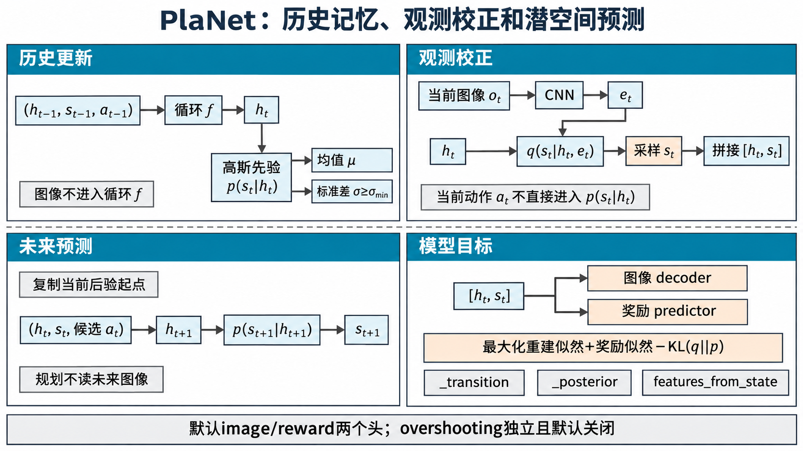
F04 PlaNet RSSM belief state详解
这张图只回答一个问题：PlaNet 如何把历史动作、当前观测和随机状态合成为可以用于潜空间规划的 belief state。四个区域从左到右分别是 replay 输入、deterministic belief、posterior/prior 状态形成和预测头/训练目标。图中没有 CEM、MPC 或 latent overshooting，避免把不同阅读问题合在一个结构图里。
左侧 replay 区把观测 o_t、动作 a_t、奖励 r_t 放在时间序列中。真实轨迹按时间写入 replay；观测和动作是 RSSM 状态更新所需的证据，奖励由 reward head 预测并参与训练目标。这里的 POMDP 标签表示图像观测不足以直接决定真实状态，因此模型需要历史 belief；它不代表论文已经知道环境的全局坐标。
第二个区域是 deterministic belief h_t。递归转移读取 h_{t-1}, s_{t-1}, a_{t-1}，产生当前历史摘要。实心箭头表示历史动作和随机状态影响下一 belief；图中写出的 transition 公式明确了时间轴。h_t 是历史记忆，不是当前观测后验，也不是单独的随机 state。把 h_t 和 s_t 合并成一个无类型向量会掩盖 PlaNet 的状态空间结构。
第三个区域并列画出 posterior 与 prior。训练时 posterior q(s_t|h_t,o_t) 读取当前观测，用它校正随机 state 的分布；固定 _posterior 保留 prior 的 belief 与 rnn_state，只重新估计 mean/stddev/sample，不能误画成当前观测直接改写 deterministic belief 的旁路。prior p(s_t|h_t) 只根据历史和动作推进，不读取未来真实观测。state=(h_t,s_t) 分别承担历史记忆与随机不确定性，灰色虚线表示规划未来的观测不可用。
第四个区域应只画 decoder、reward head 和 KL 目标。PlaNet 论文的模型定义写的是 observation model、transition model 和 scalar reward model：observation model 提供训练信号，但规划时不生成图像；reward model 从 latent state 给出标量奖励。固定提交的 planet/scripts/configs.py 在 _model_components 中把 config.heads.image 设为 decoder，在 _tasks 中把 reward 加入 head；默认 gradient_heads 是 ['image', 'reward']，config.loss_scales 也只给 reward 默认权重。当前配置没有名为 continue 的预测头，不能把 Dreamer 后代的 continuation/discount head 回填到 F04。图中 L=重建+奖励+KL 只概括这份配置能直接核对的目标，不冒充唯一论文权重。
一个具体时间步是：replay 中先读 o_{t-1},a_{t-1}，_transition 得到 h_t 与 prior；训练时用当前 observation embedding 进入 _posterior，采样 s_t 后由 image decoder 重建 o_t，由 reward head 预测 r_t，KL 将 posterior 与 prior 对齐；下一步 prior 只使用历史 belief 和动作。若观测被遮挡，posterior 可以用当前图像校正不确定性；若进入规划，未来步骤不能再调用 posterior，只能从 prior 连续采样。这个例子同时解释了 belief 与随机 state 的互补关系。
常见误读有三种。第一，把 prior 和 posterior 画成同一箭头，读者会以为训练和规划都能读取观测。第二，把 PlaNet 的 RSSM 画成 DreamerV1 的 prior-only actor-critic imagination，忽略 PlaNet 后续还需要 CEM/MPC 进行动作选择。第三，把 optional latent overshooting 加进 RSSM 主拓扑；它是独立的多步 KL 训练约束，不是 F04 的状态更新头。
证据层级上，RSSM、posterior/prior 公式、重建与 reward model 来自 sources/papers/1811.04551/tex/sections/model.tex 的 RSSM 小节和 planning.tex 的模型定义；源码直接落在固定提交 planet/models/rssm.py::_transition/_posterior/features_from_state、planet/scripts/configs.py::_model_components/_tasks/_loss_functions 与 planet/training/define_model.py::define_model。这些文件支持 F04 的节点和状态接口；continue head 不属于当前固定 PlaNet 配置。
训练与推理的状态生命周期
训练时，每个 replay 序列在时间轴上先通过 transition 得到 belief，再用当前观测计算 posterior。posterior 是带证据的过滤状态，image decoder 和 reward head 可以用它重建和预测；KL 把 posterior 分布和 prior 分布拉近，使模型在没有当前观测时也能推进。推理时，环境只提供当前观测用于更新一次 posterior，规划器复制这个状态作为候选起点，后续时间步使用 prior。因而“posterior 接观测、prior 不接未来观测”是状态生命周期的核心不变量。
图中每条线的含义也不同：左侧黑蓝箭头传递 replay 数据，橙色箭头强调训练目标或动作条件，绿色箭头表示预测头输出，灰色虚线表示观测可见性在训练与推理之间发生变化。底部的 state=(h_t,s_t) 不是把两个变量相加，而是说明确定性历史和随机潜状态共同构成 RSSM 状态。若只保留 h，模型无法表达多模态未来；若只保留 s，历史动作依赖和长期记忆会被压缩。
这张图不能推出 PlaNet 的规划性能，也不能把 KL 数值当成环境模型校准证明。它只把观测、状态、预测头和训练目标的连接关系讲清楚；CEM 候选分布、精英重采样、MPC 执行第一步和可选 overshooting 由另外的 visual unit 单独解释。
额外核对：belief h_t 由历史转移产生，s_t 由 prior 或 posterior 采样；当前观测只在训练过滤或环境重新观测时进入 posterior。任何把未来 o_{t+1} 接到 prior 的画法都会泄漏信息。
固定提交中的 RSSM 与 head 配置
F04 的中心不变量是 h_t 和 s_t 的角色分离。源码 planet/models/rssm.py::_transition 从上一时刻 sample、action 和 rnn_state 计算 deterministic belief，再输出 prior 的 mean/stddev/sample；_posterior 先调用同一 transition，再把 prior belief 与 observation embedding 拼接，输出 posterior 的 mean/stddev/sample。features_from_state 只拼接 sample 与 belief，供 image decoder、reward head 和 planner 使用。图中的 state=(h_t,s_t) 是结构拼接，不是把两个变量相加，也不是单独一个无类型向量。
时间箭头应按以下顺序闭合：(h_{t-1},s_{t-1},a_{t-1})→h_t→p(s_t|h_t)，训练过滤时再由 o_t 进入 q(s_t|h_t,o_t)；posterior sample 用于重建观测、预测 reward，并通过 KL 让 prior 学会预测。到了规划阶段，当前真实观测只用于建立起点，未来步骤沿 prior 推进，不能把 o_{t+1} 或 o_{t+2} 接回 prior。灰色虚线表达这种可见性变化，而不是额外的网络层。
损失区应把 image reconstruction、scalar reward likelihood 和 KL 看成不同项。重建使 latent 保留可观测信息，reward head 为规划提供潜空间回报，KL 约束 posterior 与 prior 的分布一致；这些项共同训练 world model，不能被误画成 CEM 搜索损失或 actor 的 λ-return。固定配置的 gradient_heads=['image','reward'] 由 planet/scripts/configs.py:106-107 给出，默认 overshooting_scale=0.0 与 overshooting_distance=0 由同文件 :182-191 给出；F04 不应再绘制 continue head。多步 overshooting 的源码入口为 planet/tools/overshooting.py::overshooting。
一个遮挡场景可检验图的含义：当小车暂时移出图像时，deterministic belief 仍携带历史动作与速度线索，当前图像进入 posterior 后只改变随机 state 的估计。候选未来从这个带证据的起点分叉，之后每个动作推进 GRU 与 prior，任何候选都得不到尚未发生的图像。KL 的值低只说明两分布接近，不证明模型的长期回报已校准；规划性能仍需在 F05 的 CEM/MPC 闭环和真实环境反馈中检验。
直接来源定位
论文源文为 sources/papers/1811.04551/tex/sections/model.tex:10-28（图像、奖励、高斯模型和 filtering posterior）、:43-54（deterministic/stochastic 两路 RSSM 和观测必须经过采样瓶颈），以及 sections/planning.tex:26-36（observation 只作训练信号、不用 policy/value network、潜空间规划）。代码基址为 sources/repos/planet/snapshot/planet-c04226b6db136f5269625378cd6a0aa875a92842/：planet/models/rssm.py:64-85 的 state_size/features_from_state、:96-143 的 _transition/_posterior，planet/scripts/configs.py:106-137,154-191 的 _model_components/_tasks/_loss_functions，以及 planet/training/define_model.py:40-63 的 head 实例化与闭环 unroll。
默认 state_size=30、model_size=200 见 configs.py:121-122，因此 stochastic sample 宽 30、belief 宽 200，解码与 reward head 读取的拼接 feature 宽 230；mean/stddev/sample 是同一随机分布的三个字段，不是三份相互独立的潜变量。min_stddev=.1 保证高斯标准差下界。图上若只标 h/s，应在正文保留这个字段到形状的映射，避免读者把 GRU memory、Gaussian distribution 和 sampled state 混为一体。
r4 RSSM 状态更新与观测可见性复核
F04 的中心不变量是 h_t 和 s_t 的角色分离。代码 planet/models/rssm.py 的 _transition 从上一时刻 sample、动作和循环 belief 计算新的 deterministic belief，并给出 prior 分布；_posterior 再把 belief 与 observation embedding 拼接，得到带观测校正的 posterior。最终 features_from_state 拼接 sample 与 belief，形成 decoder、reward head 和 planner 使用的状态特征。图中的 state=(h_t,s_t) 是结构拼接，不是把两个变量相加，也不是单独一个无类型向量。
时间箭头应按以下顺序闭合：(h_{t-1},s_{t-1},a_{t-1})→h_t→p(s_t|h_t)，训练过滤时再由 o_t 进入 q(s_t|h_t,o_t)；posterior sample 用于重建观测、预测 reward/continue，并通过 KL 让 prior 学会预测。到了规划阶段，当前真实观测只用于建立起点，未来步骤沿 prior 推进，不能把 o_{t+1} 或 o_{t+2} 接回 prior。灰色虚线表达这种可见性变化，而不是额外的网络层。
损失区应把重建、reward、continue 和 KL 看成不同项。重建使 latent 保留可观测信息，reward/continue head 支持潜模型中的回报与终止估计，KL 约束 posterior 与 prior 的分布一致；这些项共同训练 world model，不能被误画成 CEM 搜索损失或 actor 的 λ-return。PlaNet 的多步 overshooting 属于另一个 visual unit，F04 不应从虚线再接出规划器。固定仓库为 google-research/planet@c04226b6db136f5269625378cd6a0aa875a92842，相关实现还包括 planet/tools/overshooting.py，但论文 v5 与配置的逐实验对应仍标为 evidence-aligned。
一个遮挡场景可检验图的含义：当当前帧不完整时，posterior 借助观测修正不确定性，belief 继续携带历史动作；一旦进入未来规划，模型只能使用这个校正后的起点和 prior。若图上出现未来观测到 critic 或 prior 的实线箭头，应由 root 记录为拓扑问题并重画，正文不替它辩护。
从三模块到 belief state
PlaNet 把 World Models 的“固定模型加外部演化搜索”改造成一个显式的部分可观测状态空间模型。论文把环境写为 POMDP，单个图像不一定包含速度、接触或遮挡信息，因此维护由确定性 belief h_t 和随机 state s_t 组成的 RSSM 状态。
模型包含 transition p(s_t | s_{t-1}, a_{t-1})、observation p(o_t | s_t)、scalar reward p(r_t | s_t)，以及过滤式 encoder q(s_t | o_{≤t}, a_{<t})。规划时只使用 transition 和 reward；observation decoder 给模型训练提供丰富的像素监督，不要求每个候选动作生成图像。当前固定仓库默认 config.heads 为 image/reward，未建立 continue、actor 或 value predictor；环境 done 是数据收集终止条件，不等于学习的 continuation head。
符号、数据实体与模型实体
输入观测记为 ，动作记为 ，奖励记为 ，终止或继续信号记为 ；潜状态、隐藏状态、token 和策略/价值输出的具体含义由本论文的表示选择决定。训练序列包含时间顺序，posterior 或 encoder 可以看到观测，prior/dynamics 在未来展开时只能看到历史状态和动作。这样的符号表先于公式，是为了区分真实数据、模型生成数据和价值目标。
方法组件与数据流
RSSM 维护 deterministic belief h_t 与 stochastic state s_t。transition prior 只读上一步状态和动作，posterior encoder 额外读当前图像 embedding；image decoder 与 scalar reward head 把潜状态接到训练目标。规划时不需要解码候选图像，只需在 prior 和 reward model 中展开。训练数据来自在线环境：先用随机 episode 初始化，再交替进行模型更新和真实环境交互。与 VAE+MDN 的模块拆分相比，RSSM 把“记忆、随机性和过滤”作为同一状态空间模型的两个互补分量。当前固定配置的 gradient heads 为 image/reward；没有 continue predictor，也没有 actor 或 value network。observation head 只提供训练监督，规划器从 latent state 预测 reward 并评价候选动作。若论文未报告某个维度、初始化或随机种子，仍保留 来源未报告，不能从 Dreamer 后代的结构补齐。
D1 Learning Latent Dynamics for Planning from Pixels 数据流
图像编码进入 RSSM 后验；确定性 belief 保存历史，随机 sample 表达条件未来。后验会读取当前图像，prior 只读取历史状态和动作。sample 与 belief 拼成特征，image/reward head 用于模型训练，CEM 只消费 prior rollout 的预测 reward；默认没有 actor、value 或 continuation head。
核对来源：planet/models/rssm.py（L65-140）；planet/control/planning.py（L25-63）；planet/control/mpc_agent.py（L45-83）；planet/scripts/configs.py（L106-174）。
RSSM 的状态契约
planet/models/rssm.py:65-72 的状态字典有五个字段：mean、stddev、sample、belief、rnn_state。若 stochastic width 为 S、belief width 为 H，mean/stddev/sample 的末轴都是 S，belief/rnn_state 的末轴都是 H。batch、time 或 candidate 轴可以由调用者添加，因此源文件只规定叶子末维和字典键，不能把某一个实例的 B、T 当作论文通用常数。
features_from_state 在 :83-85 拼接 sample 与 belief。它是下游 decoder、reward head、planner objective 消费的状态特征，因此 feature width 为 S+H。dist_from_state 在 :74-81 用 mean 和 stddev 构造对角高斯；divergence_from_states 在 :87-94 计算两个状态分布的 KL。此处的 sample 是一次随机状态值，mean 是分布参数，belief 是确定性历史摘要，三者不能互换。
动力学、训练目标与梯度方向
沿时间顺序区分观测校正与开环预测，再检查各项损失作用的对象和停止梯度的位置。目标的存在、配置是否启用与参数是否更新需要分别判断。
训练目标和 latent overshooting
单步变分目标包含 observation/reward 的重建对数似然和 posterior/prior KL。PlaNet 将 latent overshooting 作为多步潜空间训练目标：从后验状态出发跳过中间观测，展开 1≤d≤D 步 prior，并将多步预测与对应后验做 KL；但论文明确最终采用 RSSM 的 PlaNet agent 不需要 overshooting，Figure 8 是按模型族和目标的条件性消融。论文给出的多步项可概括为：
L_d = E_q[ log p_d(o_{1:T}) - KL(q(s_{1:T}) || p_d(s_{1:T})) ]。
d=1 恢复标准变分目标；d>1 增加潜空间多步一致性约束。latent overshooting 的理论关系是在数据分布期望下讨论的，不是逐样本或每条 rollout 都更稳定的保证。与像素 overshooting 不同，PlaNet 只在潜空间比较，不必对每个多步预测解码图像。源码中的 planet/tools/overshooting.py、models/rssm.py 和 training/define_model.py 共同实现了这条路径。
公式、损失与直觉
标准潜在变分目标可以记为：
latent overshooting 是一个可选的多步潜空间训练目标，在 d 步 prior 上增加一致性约束；论文明确最终采用 RSSM 的 PlaNet agent 不需要它，Figure 8 的收益/退化取决于模型族和任务。
直观地说，d=1 只要求下一步正确，d>1 让模型从较早状态跳过中间图像也能接近后验。 公式的直觉是把表示学习、未来预测和行为目标接在同一时间轴上。一个好的模型即使重建清晰，也可能在奖励相关因素上失真；因此要把 observation loss、reward/value loss、KL/regularization 和 policy objective 分开解释。
prior 与 posterior 的逐步计算
_transition 位于 :96-119。它先把上一步 sample 与 action 拼接，经过 dense stack，再送进 GRU cell 更新 belief/rnn_state，然后由 hidden 预测下一步 mean/stddev/sample。这个路径不读取当前 observation，因此是 prior 或 open-loop dynamics。_posterior 位于 :121-140。它首先调用 transition 得到 prior belief，再把 prior belief 与当前 observation embedding 拼接，通过另一个 dense stack 得到 posterior mean/stddev/sample。也就是说 posterior 使用同一时间步的观测校正随机状态，而 prior 只依赖历史状态和动作。
一个重要边界是 Base 层的 use_obs。在 planet/models/base.py:53-65，模型同时构造 transition prior，再按 use_obs 选择 posterior 或 prior。源代码中的调用路径使用全真或全假 mask；这不等于任意混合 batch 都有逐行独立的 posterior 语义。若要扩展 mixed availability，必须说明每个 state leaf 如何广播 mask、selected carry 如何继续 recurrent history，以及未选择路径的计算和梯度是否保留。
机制卡：训练目标中重建与复杂度如何相互制约
论文第四页的变分下界把每个时间步拆成重建项与后验到先验的相对熵。重建项鼓励状态保留能解释图像的信息，相对熵约束后验状态可以由历史和动作预测。两者需要同时存在：若只重建，后验可能把每张图编码成无法预测的任意标签；若只压低相对熵，最容易的解可能是忽略画面而让状态退化。奖励预测又给状态增加任务相关信号，但不能单独保证状态保留所有未来可用信息。
这里的期望不是把状态固定为均值。论文使用可重参数化样本估计外层期望，随机变量仍被采样；对角高斯的尺度参数控制采样分布，也进入相对熵公式。实际代码把分布参数、样本和确定性记忆分开储存，是为了让重建网络消费样本与记忆，同时让相对熵直接消费参数。若审阅者只比较输出样本的形状，便会漏掉尺度是否合法、损失是否按正确轴求和、无效时间步是否被屏蔽这些训练条件。
反例可以这样构造：两段历史在当前帧完全相同，但下一秒小车一个向左、一个向右。确定性模型可能预测居中的单一未来，像素误差在平均意义上不大，规划器却会把这个不真实的中间状态当成可控结果。随机模型可以把两种未来分开，但如果所有历史记忆都必须每步穿过噪声采样，长期信息又可能丢失。递归信念与随机状态的结合针对的是这两个相反的困难；这解释了为什么论文同时比较纯确定性、纯随机性和混合结构，而不是仅比较参数量。
行为、想象与真实环境闭环
从当前状态出发追踪动作怎样产生、未来怎样展开、回报怎样被消费。模型内候选或想象轨迹不是已经在环境中执行的路径。
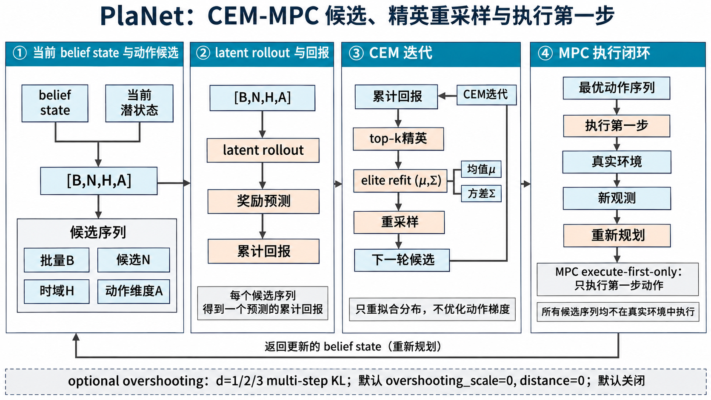
F05 PlaNet CEM-MPC 潜状态规划详解
这张图只回答规划闭环：给定当前 belief state，PlaNet 如何在 latent space 中评估一批动作序列，用 CEM 反复筛选精英并拟合分布，最后只把第一步动作交给真实环境。四个区域分别是候选序列、latent rollout、CEM 迭代和 MPC 执行；底部灰色虚线把 optional latent overshooting 单独标出，避免把它当作默认主路径。
第一区的张量 [B,N,H,A] 表示批量 B、每轮候选 N、规划时域 H 和动作维度 A。候选序列从当前 belief state 复制出发，所有候选在潜状态模型中并行评估。这里的“并行”是对候选和时间步的计算组织，不代表 N 条候选都要执行到环境；真实环境每轮只接收一个动作。
第二区对每条候选做 latent rollout。world model 根据动作序列推进潜状态，reward predictor 给出每个时间步的预测奖励，再求和得到候选回报 R^(i)=Σ_t r_hat_t^(i)。图中没有 decoder/像素预测主链，因为 PlaNet 的规划在潜空间进行；奖励预测用于排序，模型误差会影响候选选择。候选评估的证据层是模型内预测，不等于真实环境 fitness。
第三区是 CEM 的核心。先按累计回报排序，保留 top-k 精英；再对精英动作的每个时间位置拟合均值 μ 与方差 Σ；从 N(μ,Σ) 重采样新候选，进入下一轮 rollout。CEM 是交叉熵法的分布搜索，不是通过环境梯度下降；它也不把所有候选动作执行一遍。迭代箭头闭合“评估→精英→重拟合→重采样”，直到预算或轮数结束。
第四区是 receding-horizon MPC。执行当前最优序列的第一步 a_t，把动作送入真实 POMDP 环境，得到新观测 o_{t+1}，重新更新 belief 并重复 CEM。只执行第一步可以让下一轮观测校正模型误差，也避免把长时域预测全部当成事实。图中“其余计划不直接执行”是 MPC 与 open-loop rollout 的边界。
底部 optional overshooting 只写 d=1/2/3 multi-step KL 和默认 overshooting_scale=0, distance=0。这表示论文/代码存在可选的多步一致性约束，但当前最终默认配置关闭；它不是 CEM 采样循环，也不能从虚线区域箭头接到真实环境。把 overshooting 画成必经主链会改变 PlaNet 的默认语义。
一个完整时间步例子是：当前 belief 复制成 N 个候选起点；每个候选预测 H 步奖励；取 top-k 精英拟合 μ/Σ；重采样下一轮；最终执行 a_t；环境返回 o_{t+1}；RSSM posterior 校正状态；下一轮重新规划。这个实例说明规划计算发生在模型内，而真实环境只看到每轮第一步动作。常见误读是把 CEM 叫作 actor-critic，或把 CEM 的精英分布当成 policy 参数；PlaNet 这里是在线搜索规划器。
与 DreamerV1 的差异是行为计算位置：PlaNet 用 CEM/MPC 搜索动作序列，DreamerV1 在 latent imagination 中训练 actor/critic；与 DreamerV2/V3 的差异是这里没有 categorical RSSM、symlog/two-hot 或统一 actor branch。图中事实来自 PlaNet 的 RSSM/CEM 算法与规划协议，具体 rollout 代码和配置仍需绑定固定仓库证据；图片事实、拓扑和文字由 root 独立复核。
规划成本、边界与最小失败例
候选张量的四个轴分别对应并行批量、每轮候选数量、预测时域和动作维度。增大 N 会覆盖更多动作序列但增加 rollout 计算，增大 H 会看得更远却累积模型误差，增大 B 会提高训练/评估吞吐而不改变单个规划问题。CEM 的精英比例和重采样轮数改变搜索预算，不能把不同预算下的回报直接当作结构消融。
最小失败例是模型预测在远期偏离真实环境：某个候选序列在 latent rollout 中得到高回报，但第一步执行后新观测显示状态并不如预测。MPC 只执行第一步并重新观测，下一轮 belief 会修正这个错误；若把整条序列 open-loop 执行，错误会连续累积。图中的返回箭头正是这个闭环的核心。
CEM 的 (μ,Σ) 是当前搜索分布，不是 actor 的持久参数，也不是环境的真实动作分布。精英动作按时间位置拟合，重采样仍受动作边界约束；任何把它画成梯度箭头或把 top-k 当作 policy network 的图都会混淆规划与学习。optional overshooting 只提供 latent 多步 KL，默认关闭，不能用来解释 CEM 每轮的 reward 排序。
这是 CEM-MPC 的核心。
边界保持清楚。
与训练模型的关系
规划器不是重新训练世界模型。它在当前模型参数和当前 belief 上做临时搜索，CEM 的均值与方差只服务这一时刻的动作选择；下一次重新观测后，旧的候选分布可以丢弃。模型参数的学习发生在 replay/world-model 更新阶段，规划器的搜索预算则发生在每个真实环境步。把两者画成同一条梯度链会误导读者。
证据层与限制
预测回报来自 latent model，因此 CEM 只能在模型给出的候选排序上做搜索；真实环境反馈用于下一轮校正，不会把这次高回报自动变成真实成功。候选数量、时域、精英比例和迭代次数都改变计算成本与搜索覆盖，实验比较必须把这些条件单独记录。
r4 CEM、MPC 与 overshooting 的边界复核
F05 的核心张量是候选动作序列 [B,N,H,A]：批量轴 B 用于吞吐，N 是每轮候选数量，H 是规划时域，A 是动作维度。每条候选从当前 RSSM belief 复制出来，在潜模型中按动作推进，reward predictor 给出 r_hat_t，累计回报 R_i=Σ_t r_hat_{i,t} 只用于模型内排序。decoder 不在主规划链，因为 PlaNet 的动作选择在 latent space 完成；latent return 也不等于真实环境 fitness。
CEM 迭代箭头必须形成闭环：先按 R_i 排序，保留 top-k 精英，再按时间位置拟合均值 μ_t 与方差 Σ_t，从新的 N(μ,Σ) 采样下一轮候选。这里的 μ、Σ 是当前真实时间步的临时搜索分布，不是持久 actor 参数，也不是动作的真实分布。N、H、精英比例和迭代次数共同决定搜索预算；增加 H 虽然拓宽视野，也会放大模型误差。
MPC 的回路从最优序列只取第一步 a_t，送入真实 POMDP 环境得到 o_{t+1}，再以新观测更新 posterior belief 并重新执行 CEM。其余候选动作不会直接执行，也不会整段写回 replay。这个 receding-horizon 设计让真实反馈及时纠正潜模型偏差，区别于 open-loop rollout。代码入口是 planet/control/planning.py 与 planet/control/mpc_agent.py；RSSM 接口仍回到 planet/models/rssm.py。
底部 d=1/2/3 的 multi-step KL 是 overshooting 训练约束，代码 planet/tools/overshooting.py 中的默认配置可能是 overshooting_scale=0、distance=0。因此虚线应标为可选或默认关闭，不能画成 CEM 每轮必经模块。最小失败例是远期 latent return 很高但第一步真实反馈很差；MPC 的重新观测会揭露误差，下一轮候选分布重新拟合。
CEM 规划和数据闭环
在每个真实环境时间步，PlaNet 先用历史观测过滤当前 posterior，然后用 Cross Entropy Method 维护动作序列分布。采样数千条动作序列，在 RSSM prior 中批量展开，只累计预测 reward，选择精英序列重新拟合均值和方差，重复若干 iteration，执行最优序列的第一步，再观察新图像并重新规划。这是严格的 model predictive control：模型预测只服务当前动作选择，下一时刻不盲信旧计划。
论文的 Algorithm 1 把流程分为 data collection、model learning 和 latent space planning。源码的 planet/control/mpc_agent.py、control/planning.py、tools/unroll.py 对应这些环节；README 明确提供 train.py 和多种 ablation 参数。
数据与控制流
领域关键执行基底是 latent MPC loop：历史图像经过 RSSM 过滤形成当前 belief，CEM 在 prior-only 潜状态中评估动作序列，只执行第一步并重新规划。 真实输入、状态更新、未来展开、目标计算和环境调用必须按时间顺序分开。
D2 Learning Latent Dynamics for Planning from Pixels 训练与推理顺序
先收集 episode 并训练潜状态模型。交互时，当前图像与上一动作过滤当前信念；CEM 复制该信念，采样多条未来动作序列，在 prior 中计算预测回报，保留精英重拟合。只执行最终计划的第一动作，随后新观测触发再次过滤与重新规划；新真实 episode 回到训练数据。
核对来源：planet/models/rssm.py（L65-140）；planet/control/planning.py（L25-63）；planet/control/mpc_agent.py（L45-83）；planet/scripts/configs.py（L106-174）。
从数据到行为的完整执行基底
历史图像经过 RSSM 过滤形成当前 belief，CEM 在 prior-only 潜状态中评估动作序列，只执行第一步并重新规划。
CEM 的状态、候选与控制循环
planet/control/planning.py:25-63 是候选规划核心。原始 batch 为 N，候选量为 A，规划 horizon 为 H，动作宽为 U。state 每个 leaf 被 tile A 次；actions 从 Normal(mean,stddev) 采样，形状 [N,A,H,U]，再 reshape 成 [N*A,H,U] 送进 latent dynamics。use_obs 是全零，表示未来候选不读取真实 observation。objective_fn 得到 [N*A] 或等价 flattened return，随后 reshape [N,A]，top-k 选择 [N,K]，从 elite actions 重新计算 mean/variance。
debug preset 的 planner_amount=5、planner_topk=2、planner_iterations=2、默认 planner horizon 12（scripts/configs.py:52-73,249-296）。所以 N=1、U=1 时第一批 proposal [1,5,12,1]、cell 输入 [5,12,1]、score [1,5]、elite [1,2,12,1]；第二次 iteration 以新 mean/stddev 再采样，最终只取最后一轮拟合的 mean。tf.scan(..., back_prop=False) 说明 CEM 搜索不把候选排序路径变成 actor gradient。
MPCAgent.perform 在 mpc_agent.py:57-83 先处理观测、加 singleton time 轴、编码并 gather 当前 agent rows，再按 use_obs 推进 state。begin_episode:45-54 通过 gather/scatter_update 清零选择的 state 行，并把 prev_action 清零。如果只重置图像编码而保留旧 action，下一次 transition 会把上一 episode 的控制输入带入新 episode，形成状态污染。
贯穿实例、形状与时间对齐
用短序列和可以手算的数字核对抽象机制。这里的教学实例明确区别于论文实验值，也不冒充目标框架的运行结果。
算法流程与具体 逐步计算实例
每个真实环境时间步先用历史图像得到 posterior belief，再从当前状态初始化 CEM。算法采样多条长度 H 的连续动作序列，在 RSSM prior 中并行展开并累加预测奖励；选出 elite 序列后重新估计动作分布，迭代若干轮，执行最优序列的第一步。新图像到来后旧计划被丢弃，避免长期盲信。这个“规划一小段、执行一步、重新过滤”的 MPC 闭环，是 PlaNet 与后续 policy-learning Dreamer 的分水岭。 对一个最小序列 walkthrough：给定起始观测和动作，先得到表示，再更新模型状态；若处于 imagination，则跳过真实观测，使用 prior/dynamics 产生下一状态；价值/奖励头把这段序列变成训练目标；只有在线论文才把最新真实观测写回 replay。这个 walkthrough 也是后续代码问题台账的输入。
一个可复核的高斯数值例
对一维 q=N(2,1)、p=N(0,2)，KL(q||p) 为
log(2)+(1+(2-0)^2)/(2*2^2)-1/2 = log(2)+5/8-1/2 = log(2)+1/8 ≈ 0.818147。
这个值只描述 distribution contract，不代表源码执行过一次 TensorFlow。若 mean_only=True，RSSM 可以把 sample 设成 mean，但 dist_from_state 仍需要 mean/stddev 构造 Gaussian，KL 仍存在。若把 q/p 的尺度同时压到 0.001 且均值差保持为 1，KL 中的平方项会达到 500000；这说明 stddev floor 影响 density 和梯度尺度。对 sample 做 clipping 不会改变 mean/stddev，也不会修复 KL 中的 scale。
padding mask 是另一件事。dist_from_state 把 masked stddev 替换为 1 后才构造分布，之后 divergence 再把 masked KL 置零。这解决“计算前 scale 合法”和“计算后 padded loss 无贡献”两个问题；它不等于 observation availability，也不能保证一个 NaN mean 已被修复。
latent overshooting 的轴与边界
planet/tools/overshooting.py:1-176 为每个起点生成多个距离的 prior/posterior，对齐 latent distribution。源码把 batch/time 合并、把 distance 放到 dynamic RNN 的 time 轴，再恢复起始 batch/time 结构。可把静态张量抽象成 [B,T,D+1,...]：D 是最大 overshooting distance，最后一维状态特征仍包含 stochastic 与 belief 叶子。mask 指示某个起点是否有足够真实 target；它不是“调用 helper 就自动把 KL loss 置零”的承诺，utility 的 loss 组合必须继续检查 mask 和切片。
若 length=0 或 distance 超过有效序列，后缀 mask 会变为零；具体 TensorFlow kernel 是否接受零时间维没有运行验证。论文说 latent overshooting 是稳定长期预测的正则化，源码则提供 generic utility 和可选 loss scale；不能把存在工具函数写成每个论文实验都启用了它。
机制卡：批量并行与时间对齐的最小失败例
并行候选的吞吐来自把候选轴折进批轴，这不是改变时间因果关系。每条轨迹仍按动作顺序推进，模型不能把不同候选的隐藏状态混合。一个容易漏过的错误是只看折叠前后元素数量相等：即使形状都合法，如果状态复制的排列顺序和动作展平顺序不同，某条候选可能配上另一个环境的初始信念。单环境收集时这个错误被批大小一掩盖，多环境扩展时才暴露。因此本文只给经过索引说明的静态契约，不把形状通过自动当作语义通过。
时间也有类似问题。真实动作是在当前观测之后选择，用于产生下一观测；训练序列文件可能把动作和抵达后的奖励、继续信号放在同一条记录。读取数据、递归展开和奖励目标必须使用同一约定。不能见到数组都有长度五十就认定每个位置对应同一个物理时刻。审查应先选一个两步序列，写出观测、前一动作、当前状态、下一状态和奖励的归属，再核对编码器和转移的调用；这比对照一长串相似变量名更能发现错位。
重置同样不能只清一个叶子。新回合的首帧不应继承前一回合的随机样本、记忆和前一动作。否则新观测虽然正确，第一次转移仍会被旧历史污染。选择行重置的目的，是在多个环境异步结束时只清对应行，继续运行的环境保持历史。源码当前的前一动作清零与状态行选择范围应分别说明，不能因为其中一项用了选择索引，就声称全部字段都完全相同地处理。
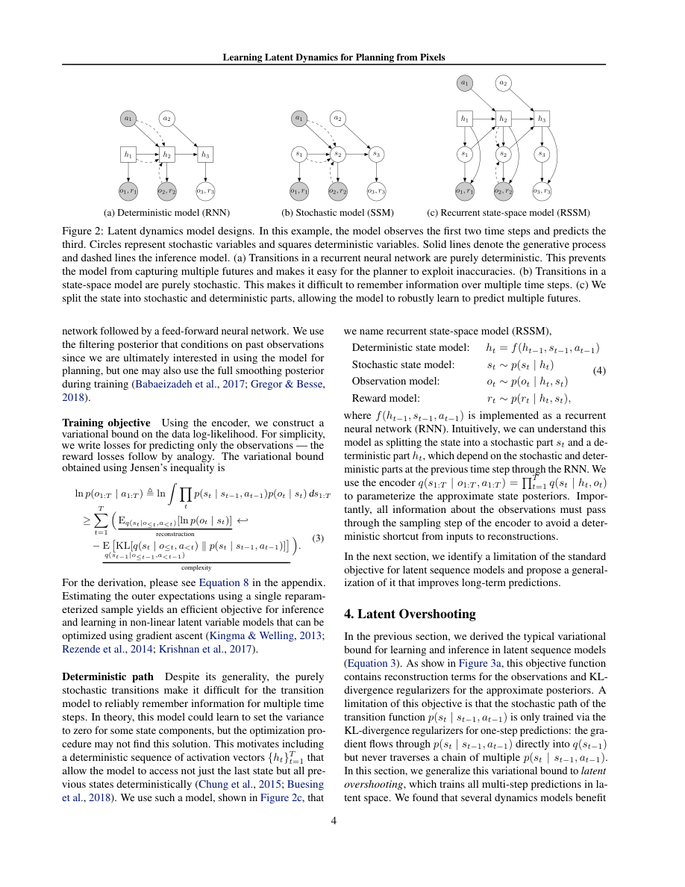
Figure 2: Latent dynamics model designs. In this example, the model observes the first two time steps and predicts the third. Circles represent stochastic variables and squares deterministic variables. Solid lines denote the generative process and dashed lines the inference model. (a) Transitions in a recurrent neural network are purely deterministic. This prevents the model from capturing multiple futures and makes it easy for the planner to exploit inaccuracies. (b) Transitions in a state-space model are purely stochastic. This makes it difficult to remember information over multiple time steps. (c) We split the state into stochastic and deterministic parts, allowing the model to robustly learn to predict multiple futures.
选择理由
方法主图，三栏并列 RNN、SSM、RSSM，准确显示 PlaNet 为什么把确定性记忆 h 与随机状态 s 结合；图下注释还规定观察前两步、预测第三步及实线/虚线语义。
图表说明
图中横向时间步为 1、2、3，观测前两个时间步并预测第三个。左栏 RNN 只有方形 h，转移完全确定；中栏 SSM 只有圆形 s，转移完全随机；右栏 RSSM 同时有方形 h 与圆形 s。实线表示生成过程，虚线表示推断模型。RSSM 的 h 沿时间递推，动作 a 进入下一步 h；s 由 h 采样并生成观测和 reward，当前观测又通过后验推断 s。这个拓扑直接反驳“PlaNet 只有 deterministic recurrent model”的说法：PlaNet 的规划 prior 使用混合状态的转移，训练时 posterior 额外读取观测。
进一步分析
图把设计动机和信息边界画在同一页：纯 RNN 的单一路径容易被 planner 利用误差，纯 SSM 难以跨多步记忆；RSSM 让确定性路径保持历史、随机路径表达多未来。需要把图中示意的 h/s 与论文具体 RSSM 参数分开：图没有给维度、分布族或 CEM 样本数。规划时 observation model 不参与候选 rollout 的像素生成，reward model 与 transition 才用于 CEM 评分；这也是方法图和控制闭环的关键边界。
证据边界
图只证明结构选择和箭头语义，不证明任何性能提升幅度，也不表示 overshooting 已用于最终 RSSM 主实验；后者要看 Figure 8 及实验文字。
原文定位
sources/papers/1811.04551/tex/figures/models/figure.tex:1-146sources/papers/1811.04551/tex/sections/model.tex:41-54sources/papers/1811.04551/tex/sections/planning.tex:24-34
固定源码入口：sources/repos/planet/snapshot/planet-c04226b6db136f5269625378cd6a0aa875a92842；commit=c04226b6db136f5269625378cd6a0aa875a92842
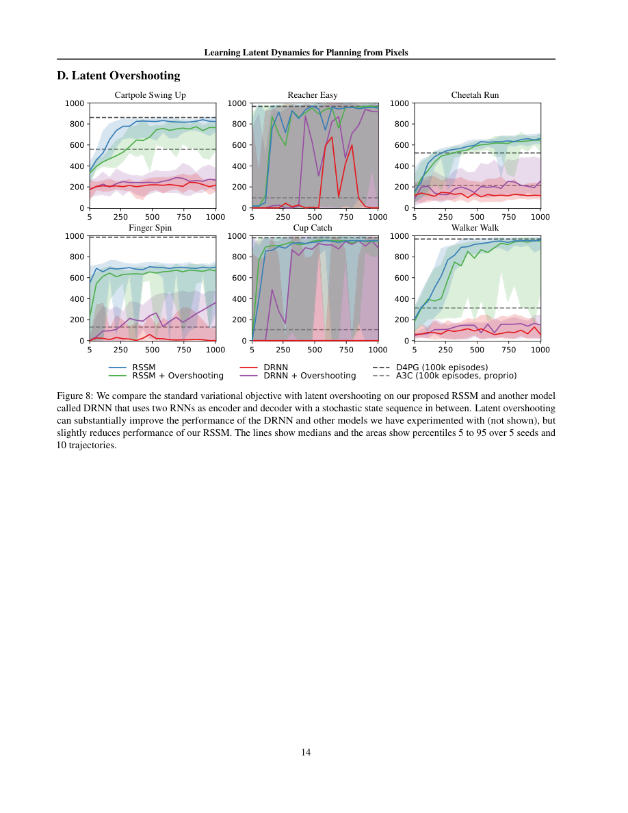
Figure 8: We compare the standard variational objective with latent overshooting on our proposed RSSM and another model called DRNN that uses two RNNs as encoder and decoder with a stochastic state sequence in between. Latent overshooting can substantially improve the performance of the DRNN and other models we have experimented with (not shown), but slightly reduces performance of our RSSM. The lines show medians and the areas show percentiles 5 to 95 over 5 seeds and 10 trajectories.
选择理由
实验图，六个任务面板直接呈现 overshooting 对 RSSM 与 DRNN 的条件性影响，适合纠正“overshooting 必然是最终 PlaNet RSSM 训练组件”的误读。
图表说明
六个小面板分别为 Cartpole Swing Up、Reacher Easy、Cheetah Run、Finger Spin、Cup Catch、Walker Walk；横轴为 collected episodes（5 到 1000），纵轴为 test performance（0 到 1000）。蓝线 RSSM，绿线 RSSM + Overshooting，红线 DRNN，紫线 DRNN + Overshooting；灰色虚线为 D4PG（100k episodes）和 A3C（100k episodes, proprio）。阴影是 5 个 seed、10 条 trajectory 的 5–95 百分位区域，曲线是中位数。图中 overshooting 对 DRNN 多数面板提升明显，而 RSSM 绿线有时略低于蓝线，尤其不能从某一个任务面板概括为普遍增益。
进一步分析
原文的 latent overshooting 目标从后验起点跳过中间观测，展开 d 步 prior，在潜空间把多步预测与真实后验做 KL；它训练的是预测一致性，不是额外解码每一帧图像。Figure 8 的比较同时改变模型族（RSSM/DRNN）和目标（standard/overshooting），因此可回答“机制是否依赖模型结构”，不能单独给出最终 agent 的默认配置。论文正文明确说最终 RSSM agent 不需要 overshooting；这张图应作为条件性消融证据，而不是 PlaNet 主线性能图。
证据边界
图不显示 overshooting 距离 D、β 权重或 stop-gradient 细节；这些由 overshooting.tex 和附录定义。D4PG/A3C 虚线是外部基准，不能与每条曲线视为同一训练协议。
原文定位
sources/papers/1811.04551/tex/figures/score_overshooting/figure.tex:1-46sources/papers/1811.04551/tex/sections/overshooting.tex:6-49sources/papers/1811.04551/tex/sections/experiments.tex:8-22
固定源码入口：sources/repos/planet/snapshot/planet-c04226b6db136f5269625378cd6a0aa875a92842；commit=c04226b6db136f5269625378cd6a0aa875a92842
源码架构、调用链与实现差异
先看执行入口与模块责任，再追踪公式落到哪个固定文件和函数。源码事实解释当前实现，不能反向补写论文没有报告的实验设置。
RSSM 的真实代码对应
固定仓库 google-research/planet@c04226b6db136f5269625378cd6a0aa875a92842 的 planet/models/rssm.py 定义了 RSSM。_transition 先拼接上一时刻 sample 与 action，经若干 dense 层和 GRUBlockCell 得到 belief，再输出对角高斯 prior 的 mean/stddev/sample。_posterior 先调用相同 transition 得到 prior belief，再把 belief 与 observation embedding 拼接，生成 posterior mean/stddev/sample。features_from_state 返回 concat(sample, belief)，因此 decoder 和 planner 接收的特征维度是随机 state 加确定性 belief。
代码中的 future_rnn 分支决定后续 dense 层使用 GRU belief 还是更早的 hidden；mean_only 会把 sample 替换为 mean；min_stddev 防止方差退化。它们都不是论文主标题中的新算法，却直接影响模型的随机性和规划稳定性。
代码来源边界
作者仓库固定提交用于静态证据；论文表格与该提交的 精确运行对应关系 未宣称。
RSSM belief/state / p(s_t|s_{t-1},a_{t-1}), q(s_t|o_{≤t},a_{<t})
论文定位：Sec. 2-3。
实现核对：sources/repos/planet/snapshot/planet-c04226b6db136f5269625378cd6a0aa875a92842/planet/models/rssm.py:26-140 RSSM,_transition,_posterior,features_from_state
结论边界：固定实现是 google-research/planet@c04226b6db136f5269625378cd6a0aa875a92842。它能证明状态、规划和配置语义，不能单独证明某张论文表格的运行来源。
核对来源：planet/models/rssm.py（L65-140）；planet/control/planning.py（L25-63）；planet/control/mpc_agent.py（L45-83）；planet/scripts/configs.py（L106-174）。
latent overshooting / L_d=E_q[log p_d(o)-KL(q||p_d)]
论文定位：Sec. 3 / Appendix。
实现核对：sources/repos/planet/snapshot/planet-c04226b6db136f5269625378cd6a0aa875a92842/planet/tools/overshooting.py:1-176 overshooting
结论边界：固定实现是 google-research/planet@c04226b6db136f5269625378cd6a0aa875a92842。它能证明状态、规划和配置语义，不能单独证明某张论文表格的运行来源。
核对来源：planet/models/rssm.py（L65-140）；planet/control/planning.py（L25-63）；planet/control/mpc_agent.py（L45-83）；planet/scripts/configs.py（L106-174）。
CEM/MPC / argmax_{a_{t:t+H}}Σr
论文定位：Sec. 4 / Algorithm 2。
实现核对：sources/repos/planet/snapshot/planet-c04226b6db136f5269625378cd6a0aa875a92842/planet/control/mpc_agent.py:1-89 MPCAgent
结论边界：固定实现是 google-research/planet@c04226b6db136f5269625378cd6a0aa875a92842。它能证明状态、规划和配置语义，不能单独证明某张论文表格的运行来源。
核对来源：planet/models/rssm.py（L65-140）；planet/control/planning.py（L25-63）；planet/control/mpc_agent.py（L45-83）；planet/scripts/configs.py（L106-174）。
Learning Latent Dynamics for Planning from Pixels：实现遗漏与证据边界
论文表格与固定提交运行的一一对应关系的证据边界
论文说明：论文报告了任务、预算和结果。 固定材料只能说明：固定提交或来源边界不能证明该表格由此版本生成。 因此，只能标记 与证据静态对应，不能宣称复现。（作者仓库固定提交用于静态证据；论文表格与该提交的 精确运行对应关系 未宣称。）
核对来源：planet/models/rssm.py（L65-140）；planet/control/planning.py（L25-63）；planet/control/mpc_agent.py（L45-83）；planet/scripts/configs.py（L106-174）。
随机种子与结果聚合的证据边界
论文说明：部分图表给出均值/标准差或多次运行。 固定材料只能说明：静态阅读未执行训练，也未加载 checkpoint。 因此，结果数字只来自论文原页。（sources/papers/1811.04551/1811.04551v5.pdf）
核对来源：planet/models/rssm.py（L65-140）；planet/control/planning.py（L25-63）；planet/control/mpc_agent.py（L45-83）；planet/scripts/configs.py（L106-174）。
运行环境与依赖的证据边界
论文说明：论文给出算法和实验协议。 固定材料只能说明：本任务不安装目标仓库依赖、不运行 GPU/TF/JAX。 因此，运行时行为保持未验证。（本报告的范围是静态论文与源码分析）
核对来源：planet/models/rssm.py（L65-140）；planet/control/planning.py（L25-63）；planet/control/mpc_agent.py（L45-83）；planet/scripts/configs.py（L106-174）。
数据、时间与行为的顺序
真实观测或视频先进入表示编码器，得到状态或 token；动力学再在动作条件下预测后续状态。训练时真实序列提供监督，未来规划或想象分支则沿自身状态向前推进。任务头和行为模块各消费相应特征；不同论文是否预测 reward、discount 或 value 必须以本篇机制与配置为准。动作只有被交给环境时才成为真实交互，候选动作与想象动作保留在模型内部。
模块责任与证据层次
原始关系图将论文机制、固定代码事实、证据支持的解释和真实来源边界分开。节点之间的联系表达映射责任，而不是证明模块在某次论文实验中必然启用。没有官方实现时，连接停在论文级接口；后续实现或第三方仓库只能以它们自己的身份出现。
Learning Latent Dynamics for Planning from Pixels：方法级修改边界（只读解释）
理解或替换 RSSM belief/state需要保持什么
不执行修改；先保持输入输出契约，再比较梯度、状态和下游消费。 必须检查表示形状、时间对齐、目标 stop-gradient、来源边界。
涉及的实现接口：sources/repos/planet/snapshot/planet-c04226b6db136f5269625378cd6a0aa875a92842/planet/models/rssm.py::RSSM,_transition,_posterior,features_from_state。
阅读时应沿调用者回到被调函数，核对状态形状、时间对齐、目标停止梯度和下游消费；这一检查只证明静态接口一致，没有训练或性能复现结果。
核对来源：planet/models/rssm.py（L65-140）；planet/control/planning.py（L25-63）；planet/control/mpc_agent.py（L45-83）；planet/scripts/configs.py（L106-174）。
理解或替换 latent overshooting需要保持什么
不执行修改；先保持输入输出契约，再比较梯度、状态和下游消费。 必须检查表示形状、时间对齐、目标 stop-gradient、来源边界。
涉及的实现接口：sources/repos/planet/snapshot/planet-c04226b6db136f5269625378cd6a0aa875a92842/planet/tools/overshooting.py::overshooting。
阅读时应沿调用者回到被调函数，核对状态形状、时间对齐、目标停止梯度和下游消费；这一检查只证明静态接口一致，没有训练或性能复现结果。
核对来源：planet/models/rssm.py（L65-140）；planet/control/planning.py（L25-63）；planet/control/mpc_agent.py（L45-83）；planet/scripts/configs.py（L106-174）。
理解或替换 CEM/MPC需要保持什么
不执行修改；先保持输入输出契约，再比较梯度、状态和下游消费。 必须检查表示形状、时间对齐、目标 stop-gradient、来源边界。
涉及的实现接口：sources/repos/planet/snapshot/planet-c04226b6db136f5269625378cd6a0aa875a92842/planet/control/mpc_agent.py::MPCAgent。
阅读时应沿调用者回到被调函数，核对状态形状、时间对齐、目标停止梯度和下游消费；这一检查只证明静态接口一致，没有训练或性能复现结果。
核对来源：planet/models/rssm.py（L65-140）；planet/control/planning.py（L25-63）；planet/control/mpc_agent.py（L45-83）；planet/scripts/configs.py（L106-174）。
RSSM：历史信念与随机状态：机制到实现的逐项对应
确定性 belief 与随机 state 共同形成可过滤的潜状态。
该分析条目的符号表达为：p(s_t|s_{t-1},a_{t-1}), q(s_t|o_{≤t},a_{<t})。确定性 belief 与随机 state 共同形成可过滤的潜状态。
论文依据：Sec. 2-3。
| 固定实现入口或来源边界 | 行号与符号 | 在本机制中承担的职责 |
|---|---|---|
planet/models/rssm.py |
26-140；RSSM、_transition、_posterior、features_from_state |
混合 belief/state 与 prior/posterior |
阅读切片：直接对应 RSSM 文件。
论文与实现的关系：论文机制与代码/来源边界逐项对照；未运行训练。
对应限制：作者仓库固定提交用于静态证据；论文表格与该提交的 精确运行对应关系 未宣称；没有建立论文表格与固定提交运行的一一对应关系。
潜空间多步对齐：机制到实现的逐项对应
多步 prior 与后验对齐，约束长期动力学。 这是论文提出的多步一致性目标与可选工具；最终 RSSM PlaNet agent 不需要该正则项，必须连同模型族和配置条件阅读。
该分析条目的符号表达为：L_d=E_q[log p_d(o)-KL(q||p_d)]。多步 prior 与后验对齐，约束长期动力学。
论文依据：Sec. 3 / Appendix。
| 固定实现入口或来源边界 | 行号与符号 | 在本机制中承担的职责 |
|---|---|---|
planet/tools/overshooting.py |
1-176；overshooting |
latent overshooting |
阅读切片：overshooting 工具路径。
论文与实现的关系：论文机制与代码/来源边界逐项对照；未运行训练。
对应限制：作者仓库固定提交用于静态证据；论文表格与该提交的 精确运行对应关系 未宣称；没有建立论文表格与固定提交运行的一一对应关系。
CEM 搜索与每步重规划：机制到实现的逐项对应
每个真实步在潜空间评估动作序列并只执行第一步。
该分析条目的符号表达为：argmax_{a_{t:t+H}}Σr。每个真实步在潜空间评估动作序列并只执行第一步。
论文依据：Sec. 4 / Algorithm 2。
| 固定实现入口或来源边界 | 行号与符号 | 在本机制中承担的职责 |
|---|---|---|
planet/control/mpc_agent.py |
1-89；MPCAgent |
真实交互中的 CEM/MPC |
阅读切片：MPC agent 与 planning 路径。
论文与实现的关系：论文机制与代码/来源边界逐项对照；未运行训练。
对应限制：作者仓库固定提交用于静态证据；论文表格与该提交的 精确运行对应关系 未宣称；没有建立论文表格与固定提交运行的一一对应关系。
实现边界：论文表格与固定提交运行的一一对应关系
论文说明：论文报告了任务、预算和结果。 固定实现或来源显示：固定提交或来源边界不能证明该表格由此版本生成。 对结论的影响：只能标记 与证据静态对应，不能宣称复现。
依据：作者仓库固定提交用于静态证据；论文表格与该提交的 精确运行对应关系 未宣称。
实现边界：随机种子与结果聚合
论文说明：部分图表给出均值/标准差或多次运行。 固定实现或来源显示：静态阅读未执行训练，也未加载 checkpoint。 对结论的影响：结果数字只来自论文原页。
依据：1811.04551/1811.04551v5.pdf。
实现边界：运行环境与依赖
论文说明：论文给出算法和实验协议。 固定实现或来源显示：本任务不安装目标仓库依赖、不运行 GPU/TF/JAX。 对结论的影响：运行时行为保持未验证。
依据：本报告的范围是静态论文与源码分析。
接口保持要求：理解 RSSM belief/state 的输入输出契约
不执行修改；只说明替换该机制时必须保持的状态、时间和梯度契约。 需要保持：真实输入与 imagined input 分开；时间维度和状态消费方不变；真实来源边界 不被隐藏。 实现位置：sources/repos/planet/snapshot/planet-c04226b6db136f5269625378cd6a0aa875a92842/planet/models/rssm.py::RSSM,_transition,_posterior,features_from_state。 静态核验：重读源文件、调用者、问题台账和固定证据；不运行训练。
接口保持要求：理解 latent overshooting 的输入输出契约
不执行修改；只说明替换该机制时必须保持的状态、时间和梯度契约。 需要保持：真实输入与 imagined input 分开；时间维度和状态消费方不变；真实来源边界 不被隐藏。 实现位置：sources/repos/planet/snapshot/planet-c04226b6db136f5269625378cd6a0aa875a92842/planet/tools/overshooting.py::overshooting。 静态核验：重读源文件、调用者、问题台账和固定证据；不运行训练。
接口保持要求：理解 CEM/MPC 的输入输出契约
不执行修改；只说明替换该机制时必须保持的状态、时间和梯度契约。 需要保持：真实输入与 imagined input 分开；时间维度和状态消费方不变；真实来源边界 不被隐藏。 实现位置：sources/repos/planet/snapshot/planet-c04226b6db136f5269625378cd6a0aa875a92842/planet/control/mpc_agent.py::MPCAgent。 静态核验：重读源文件、调用者、问题台账和固定证据；不运行训练。
Learning Latent Dynamics for Planning from Pixels 数据流的阅读含义
真实输入、表示、动力学、奖励/价值和行为输出；虚线表示 真实来源边界。 它表达的是数据流。 原始定义位置：diagrams.md:D1；核对来源：planet/models/rssm.py；planet/tools/overshooting.py；planet/control/mpc_agent.py；planet/training/utility.py。
Learning Latent Dynamics for Planning from Pixels 训练与推理顺序的阅读含义
先读取真实序列，再进入 prior/imagination，最后更新行为或执行动作。 它表达的是训练与交互的时间顺序。 原始定义位置：diagrams.md:D2；核对来源：1811.04551/1811.04551v5.pdf。
论文机制与证据层的阅读含义
论文事实、固定源码事实、与固定证据静态对应 inference 与 真实来源边界 分层。 它表达的是机制责任及证据层次。 原始定义位置：diagrams.md:D3；核对来源：00_identity/paper-identities.json；00_identity/repo-identities.json。
论文事实与源码事实的分界
论文事实来自锁定版本 1811.04551v5 的正文、算法、图表和附录。它说明模型可在 latent space 中预测，planner 不需要为每条候选轨迹解码图像；它还说明 agent 通过在线 CEM 选择动作，并用新观测重新过滤状态。源码事实来自 google-research/planet@c04226b6db136f5269625378cd6a0aa875a92842 的归档快照。快照没有 .git 目录，因此本地证据能核对归档哈希、文件树、函数和配置；它不能独立重建 Git object database。
本补充不把 README、score 文件或固定提交自动当作论文表格的生成证明。训练、GPU、TF graph、checkpoint 和指标复现均没有执行。源码事实只说明固定快照中实际存在的入口、状态字段、分支和数值默认值；论文事实只说明论文版本写出的机制和实验。两者相遇时用 静态证据对应 表示静态对应，不能升级成 exact paper-run。
复现与修改边界
若要修改状态表示，必须同时检查 RSSM state_size、features_from_state、decoder/reward heads、planning objective 和 checkpoint shape。若要修改 CEM 候选量，需同步检查 [N,A,H,U] 内存、top-k、随机种子和环境执行第一步。若要启用 overshooting，需明确 distance mask、free nats、loss scale 和 posterior stop-gradient。若要把 CEM 替成 actor，需重写训练目标、梯度边界、推理路径和实验成本说明，不能只替换一个 planner callable。
本补充的所有数值例和 shape 都是源码/公式静态推演；未安装 TensorFlow、未运行环境、未加载 checkpoint，也未声称论文指标重现。
该篇原始结构化分析的所有科学条目已转换为本章的机制、实验和问答解释。需要逐字段复核时，可打开原始分析包（此附件保存在完整本地归档中）；附件保留原始字节，当前科学修订另有派生版本，二者身份分别记录。
F19 阅读引导：从源码第一次看懂 PlaNet 的控制闭环
阅读这张图时，先沿着左到右的主线走：配置对象先决定模型组件和输出头，训练图再把序列展开成 prior/posterior，在线 agent 最后把相同的 RSSM cell 用在真实观测更新和模型内规划上。这样安排是因为仓库的目录结构本身就是一条依赖链：scripts/configs.py 负责“选什么”，training/define_model.py 负责“怎样连成图”，models/rssm.py 与 models/base.py 负责“一个状态怎样推进”，control/planning.py 与 control/mpc_agent.py 负责“怎样用状态选动作”。
第一眼看配置区时，请注意 config.heads 是一个真实的接口表。_model_components() 先放入 image decoder，_tasks() 再按任务 state components 加入 reward 等 head；define_model() 按这些 key 创建 TensorFlow template。于是图中的 head 不是论文里的抽象箭头，而是实际可以被 graph.heads[name] 调用的函数。配置还把 planner 的 horizon、amount、topk 和 iterations 绑定到 _define_simulation()，所以规划器每次被 agent 调用时都已经携带这些参数。
接着看 RSSM 方框。不要把 state 画成一个没有结构的向量：源码明确返回 mean、stddev、sample、belief、rnn_state 五个字段，head 只消费 sample 与 belief 的拼接。Base.call() 同时计算 prior 和 posterior，再由 use_obs 选择输出。训练的 closed_loop() 将掩码全部设为真，在线 perform() 也把当前一步设为真；反过来，CEM rollout 把 observation 置零并把掩码置假。这个对照是理解 PlaNet 控制路径的关键：真实环境负责校正记忆，想象规划只依赖 prior。
最后沿着 MPC 的时间顺序读：episode 开始时按并行环境索引清零变量；每个 perform 先编码新 observation，再用上一动作推进 cell，接着调用 CEM，执行返回序列的第一个动作，并写回 state 与 prev_action。下一次 perform 不会复用整段计划，而是用新观测重复这一流程。图中把“首动作”单独画出来，正是为了表达 receding horizon，而不是一次规划后连续执行全部动作。
证据边界也应在图旁保留。行号和哈希来自固定 snapshot 的静态文件；它们能支持调用顺序、字段名和分支条件的核对，但不能证明 TensorFlow session 已运行、训练已经收敛，或某个环境的 reward 达到论文数值。带着这个边界阅读，图就是可靠的源码地图，而不是未经运行验证的性能报告。
证据附件：事实契约（此附件保存在完整本地归档中）；详细图解（此附件保存在完整本地归档中）；源码证据清单（此附件保存在完整本地归档中）。
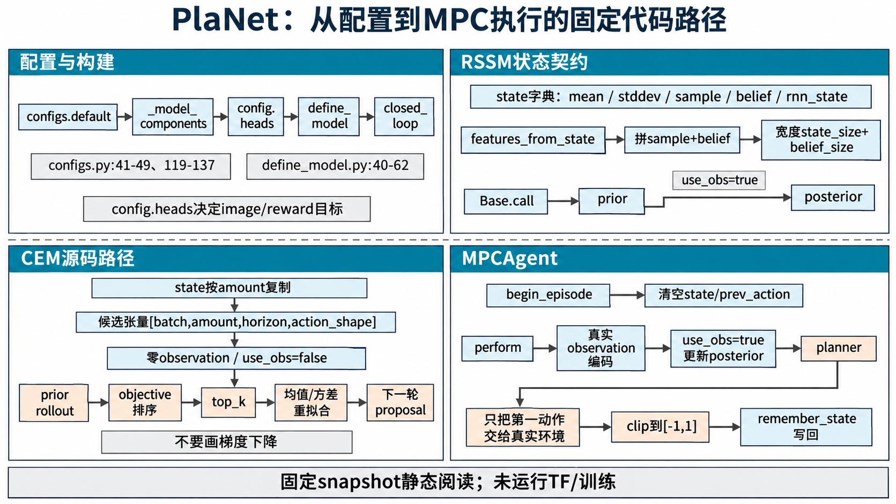
F19 详解：PlaNet 源码如何把配置、RSSM、CEM 与 MPC 接成一条可执行路径
这张图的核心不是再次解释“先验和后验分别代表什么”，而是把 PlaNet 仓库里分散在 scripts、training、models 和 control 目录的调用顺序接起来。读者可以从 planet/scripts/configs.py 开始：default() 先写入调试开关和损失缩放，再依次调用 _data_processing()、_model_components()、_tasks()、_loss_functions() 与 _training_schedule()。因此后续模块拿到的 config 不是一个单层字典，而是一个已经绑定了 encoder、decoder、cell、heads、planner 参数和数据收集计划的对象。_model_components() 依据 model 选择 SSM、RSSM 或 DRNN；默认 RSSM 的状态宽度和 belief 宽度都由模型规模参数给出。_tasks() 再根据任务的 state components 增加 reward 等 head，并决定这些 head 是否接收梯度。这个顺序解释了为什么图中要把“配置覆盖”放在最左侧：planner 的 horizon、amount、topk，以及训练时的 heads 并不是控制器临时猜出的，而是配置构建阶段固定下来的函数参数。
training/define_model.py 是从配置进入 TensorFlow 计算图的桥。它先实例化 cell = config.cell()，再把 encoder 包成模板；随后遍历 config.heads，为每个输出创建带有 head_<key> 名称的模板，并用零状态产生的 dummy_features 调用一次以初始化变量。这个初始化动作使得后面 utility.compute_objectives() 可以直接通过 graph.heads 查找 reward、image 或任务状态头。真正的序列路径由 tools.unroll.closed_loop() 建立：它为整段 embedded sequence 设置全为真的 use_obs，并把 observation embedding、动作和这个掩码一同送入 tf.nn.dynamic_rnn。所以训练图里的 posterior 是逐时间步由真实 embedding 参与产生的，prior 与 posterior 会同时留下，供 divergence 和 decoder/reward 等 objective 使用。compute_objectives() 还会按 gradient_heads 把某些 head 的输入包上 tf.stop_gradient，这决定梯度是否回到共享 encoder/RSSM；它随后把每个 objective 的值缩放并交给 apply_optimizers()，后者把全模型 objective 合并为一个名为 main 的优化项，并在训练 phase 下调用 maybe_minimize。这部分是图上“训练支路”，不能和在线控制支路混成一个函数。
RSSM 的 state contract 在 models/rssm.py 和 models/base.py 中非常具体。state_size 返回一个字典，包含 mean、stddev、sample、belief、rnn_state 五个叶子；zero_state() 对每个叶子生成 [batch_size, size] 的零张量。RSSM._transition() 把上一时刻 sample 和 action 拼接后经过若干 dense 层，再用 GRUBlockCell 得到 belief 与 rnn_state，最后输出 mean/stddev 并采样 sample。_posterior() 先调用同一个 transition 得到 prior belief，再把 belief 与当前 observation 拼起来生成 posterior 的均值、标准差和 sample。Base.call() 的关键是 use_obs：它无论如何都会计算 prior，只有掩码为真时才选择 posterior，否则返回 prior。这样，features_from_state() 只负责把 sample 和 belief 沿最后一维拼成 head/decoder 的输入，并不隐含“这个 state 一定来自 observation”。图中应把 state dictionary 画成带字段名的接口，而不是只画一个未标注的 latent 圆点，因为 planner、objective 和 agent 都依赖这些字段结构。
训练后的控制路径从 MPCAgent.begin_episode() 开始。构造函数把 cell.zero_state(len(batch_env)) 的每个叶子映射成本地变量，同时创建与 action space 相同形状的 prev_action 变量。新 episode 只对选定的 agent indices 做 scatter update 清零，保证并行环境之间的记忆互不串线。perform() 收到环境 observation 后，先经过配置中的 preprocess，再在时间轴插入长度为 1 的维度送入 encoder。它从本地变量取出 state 和上一动作，设置一位的 use_obs=True，调用 cell 读入当前 embedding，从而把 state 更新到含真实观测的 posterior。然后才调用配置里的 planner，并把 embedding 的尾部形状和动作尾部形状传给 planner；planner 返回的是一个长度为 horizon 的动作序列，agent 只保留 action[:, 0]。探索配置可能对这一动作采样 Normal 噪声，最后统一裁剪到 [-1, 1]，并把新动作和新 state 写回本地变量。这个“更新记忆—规划—执行首步—写回”的顺序是 MPC 的 receding-horizon 结构，下一环境步会用新 observation 再次重规划。
control/planning.py 中的 cross_entropy_method() 只在模型内部做候选评估。它先复制 state，使一个真实 batch 的每个状态对应 amount 个候选；接着构造全零 observation 和全假的 use_obs，因此动态 RNN 每一步都走 _transition() prior 分支。每次迭代从当前 mean/stddev 采样动作，形状可读成 [B, amount, H, A]，裁剪后 reshape 成 [B*amount, H, A]，并以复制后的 initial_state 运行 tf.nn.dynamic_rnn。objective_fn 读取 rollout state，典型 reward objective 会先调用 features_from_state，再调用 reward head 并在 horizon 维求和。返回值 reshape 回 [B, amount] 后用 tf.nn.top_k 找每个 batch 最好的 k 个 proposal；对应动作被 gather 出来，沿 candidate 维算均值和方差，成为下一轮正态分布。tf.scan 负责重复这一过程，最终只返回最后一轮的均值动作序列。图中必须画出 top-k 与 refit 两个环节，否则会把 CEM 错画成一次随机采样。
源码证据支持的结论有明确边界。我们核对的是固定 commit snapshot 中的 Python/TensorFlow 静态定义、函数参数、字段和行号；没有把图构建或训练命令当作已运行结果，也没有从日志推断数值性能。use_obs 的真假分支、候选批量的乘法关系、首动作截取和状态写回都能直接由源码行核验；但具体运行时 shape 还会受环境 observation/action space 与配置覆盖影响。阅读时应把图当作“调用链和张量契约的静态地图”：它能告诉你哪个模块调用哪个模块、哪些状态被复制、何时切换 prior/posterior，却不等价于某个任务已经成功训练或复现实验。
还有一个容易读错的地方，是模型对象与状态变量的生命周期不同。构图阶段只实例化一次共享网络模板，后续训练展开和控制仿真复用同一组权重；在线代理持有的状态变量则表示各个环境当前的记忆，会随每次观测而变化。候选规划把这个当前记忆复制成许多份临时张量，让不同候选从同一真实起点出发；这些候选分支的末状态不会全部写回代理。真正被保留的是读入当前真实观测后形成的状态，以及最终执行的首个动作。因此图中不应从候选分支末端画一条“最优末状态写回”箭头，否则就会误导读者以为代理把尚未发生的未来当成真实记忆。源码写回位置只出现在代理执行函数里，写回的是调用规划器之前已经更新好的状态。
候选张量的排列同样值得在图边注清楚。初始状态通过整体复制得到扩展批量，候选动作先带有“真实批量、候选数、规划长度、动作维度”四层结构，再被压成动态循环需要的三层结构。候选评分随后恢复为二维矩阵，优秀候选索引再加上真实批量偏移，保证不同环境的候选不会混在一起。重拟合计算的是一整段动作序列每个时间位置的均值与方差，而不是只对首动作计算统计量；但环境只收到该序列第一个时间位置。这一先保留完整规划时间轴、再截取首步的做法，把“在模型中比较长期后果”和“在真实世界中逐步纠错”接在一起。图中若只写一个采样箭头，会丢失候选轴、时间轴和真实批量轴的区别，读者也难以核对索引偏移为何存在。
最后，输出头的训练关系与控制用途需要分别阅读。奖励头可以在训练时参与世界模型的梯度，而规划时只负责把状态转换为每步奖励均值并求和。状态诊断头即使存在，也未必允许梯度流入共享状态；配置中的梯度头列表决定这一点。反过来，规划器接收的是一个可调用目标函数，并没有硬编码“只允许奖励头”；当前默认配置将它绑定到奖励目标。这让图既能忠实展示默认实验路线，也能保留源码接口比单个论文公式更宽的事实。静态分析因此要同时标注默认值和可配置入口，避免把一条默认调用路径说成所有运行都不可改变的限制。
实验、消融与结论的适用范围
每项结果都连同任务、输入、预算和比较条件阅读。成功、负面证据和计算成本共同限定论文主张。
实验、贡献和边界
PlaNet 在六个连续视觉控制任务上用统一超参数，报告少于一百分之一的 episode 数即可超过 A3C，并接近 D4PG。消融比较 deterministic path、stochastic path、iterative planning 和 online collection，说明 RSSM 的混合状态和重新规划共同重要。
它的代价是每个真实步仍需 CEM 搜索，计算随着候选序列数和 planning iteration 增长；它没有 actor 或 value network，长期行为只能通过每一步的搜索获得。PlaNet 论文因此是 DreamerV1 的直接前序：它把潜状态建模和长期预测做好，却没有把“行为学习”变成一次可微的离线想象训练。
图、表、算法和实验如何支持主张
六个 DeepMind Control Suite 视觉任务覆盖接触动力学、部分可观测和稀疏奖励。论文比较 deterministic-only、stochastic-only、完整 RSSM、是否使用 overshooting 以及迭代规划等消融；模型只看 64×64 图像，而 true-state CEM 是更强的信息上界。PlaNet 用远少于 model-free baseline 的 episode 达到接近或超过的最终性能，支持“潜空间规划可以从像素工作”。但每步 CEM 的采样数、规划迭代和 horizon 直接决定计算量，不能把 episode 效率与 wall-clock 成本混为一谈。 阅读图表时区分三层：实验设计想回答什么，曲线/表格实际比较什么，结果是否足以支持作者的范围化结论。若基线使用了不同数据预算、动作重复、状态输入或评价指标，不能仅按数字排序。附录的超参、环境协议和额外可视化不是可选装饰，而是解释主文结果边界的证据。
设计选择、失败模式与局限
RSSM 的混合状态解决了表示问题，却没有消除模型偏差；CEM 可能偏好 reward head 的漏洞。latent overshooting 增加长程约束，也增加训练和调参成本。论文对许多实现默认值在附录中给出，读者若只看主文会不知道 action repeat、探索噪声和序列切片。PlaNet 最重要的未决问题是行为是否必须在线搜索：如果能在 imagined states 上训练一个策略，就能把昂贵的 CEM 从交互环路移出，这正是 DreamerV1 的设计入口。 这些限制分成表示错误、动力学漂移、行为利用模型漏洞、计算成本、数据覆盖和来源完整性六类。论文没有报告的内容保持未报告；代码阶段可以回答部分实现细节，但不能替论文补写不存在的科学结论。
Learning Latent Dynamics for Planning from Pixels：实验联合阅读
六个视觉连续控制任务：实验回答什么
比较 latent CEM 与 model-free/true-state 上界。
来源版本为1811.04551v5；分析范围为静态文献与源码阅读。
结果来源与限制：固定源码入口存在，未运行。 固定实现是 google-research/planet@c04226b6db136f5269625378cd6a0aa875a92842。它能证明状态、规划和配置语义，不能单独证明某张论文表格的运行来源。
需要回读的论文或实现入口：论文 Experiments/Table 1。
未能由这些材料独立证明的条件：作者仓库固定提交用于静态证据；论文表格与该提交的 精确运行对应关系 未宣称。
核对来源：planet/models/rssm.py（L65-140）；planet/control/planning.py（L25-63）；planet/control/mpc_agent.py（L45-83）；planet/scripts/configs.py（L106-174）。
核心消融：实验回答什么
区分表示、动力学、行为或效率组件。
来源版本为1811.04551v5；分析范围为静态文献与源码阅读。
结果来源与限制：对照论文报告的消融；不把分支存在当作已运行。 固定实现是 google-research/planet@c04226b6db136f5269625378cd6a0aa875a92842。它能证明状态、规划和配置语义，不能单独证明某张论文表格的运行来源。
需要回读的论文或实现入口：论文实验/代码分支或来源边界。
未能由这些材料独立证明的条件：作者仓库固定提交用于静态证据；论文表格与该提交的 精确运行对应关系 未宣称。
核对来源：planet/models/rssm.py（L65-140）；planet/control/planning.py（L25-63）；planet/control/mpc_agent.py（L45-83）；planet/scripts/configs.py（L106-174）。
长时域/鲁棒性实验：实验回答什么
检查模型误差、尺度或规划 horizon 的边界。
来源版本为1811.04551v5；分析范围为静态文献与源码阅读。
结果来源与限制：静态路径和原页证据分开。 固定实现是 google-research/planet@c04226b6db136f5269625378cd6a0aa875a92842。它能证明状态、规划和配置语义，不能单独证明某张论文表格的运行来源。
需要回读的论文或实现入口：论文图表与配置入口。
未能由这些材料独立证明的条件：作者仓库固定提交用于静态证据；论文表格与该提交的 精确运行对应关系 未宣称。
核对来源：planet/models/rssm.py（L65-140）；planet/control/planning.py（L25-63）；planet/control/mpc_agent.py（L45-83）；planet/scripts/configs.py（L106-174）。
代码/版本对应：实验回答什么
判断固定提交是否能精确重建表格。
来源版本为1811.04551v5；分析范围为静态文献与源码阅读。
结果来源与限制：不执行目标仓库依赖或训练。 固定实现是 google-research/planet@c04226b6db136f5269625378cd6a0aa875a92842。它能证明状态、规划和配置语义，不能单独证明某张论文表格的运行来源。
需要回读的论文或实现入口：固定 snapshot / 真实来源边界。
未能由这些材料独立证明的条件：作者仓库固定提交用于静态证据；论文表格与该提交的 精确运行对应关系 未宣称。
核对来源：planet/models/rssm.py（L65-140）；planet/control/planning.py（L25-63）；planet/control/mpc_agent.py（L45-83）；planet/scripts/configs.py（L106-174）。
六个视觉连续控制任务的证据解释
比较 latent CEM 与 model-free/true-state 上界。
论文条件：来源版本：1811.04551v5；执行范围：只做静态精读。
结果读取范围：固定源码入口存在，未运行。
核对入口：论文 Experiments/Table 1。
仍需保留的条件：作者仓库固定提交用于静态证据；论文表格与该提交的 精确运行对应关系 未宣称。
命令与论文运行的对应强度：按论文与源码静态对照。
核心消融的证据解释
区分表示、动力学、行为或效率组件。
论文条件：来源版本：1811.04551v5；执行范围：只做静态精读。
结果读取范围：对照论文报告的消融；不把分支存在当作已运行。
核对入口：论文实验/代码分支或来源边界。
仍需保留的条件：作者仓库固定提交用于静态证据；论文表格与该提交的 精确运行对应关系 未宣称。
命令与论文运行的对应强度：按论文与源码静态对照。
长时域/鲁棒性实验的证据解释
检查模型误差、尺度或规划 horizon 的边界。
论文条件：来源版本：1811.04551v5；执行范围：只做静态精读。
结果读取范围：静态路径和原页证据分开。
核对入口：论文图表与配置入口。
仍需保留的条件：作者仓库固定提交用于静态证据；论文表格与该提交的 精确运行对应关系 未宣称。
命令与论文运行的对应强度：只能近似对应。
代码/版本对应的证据解释
判断固定提交是否能精确重建表格。
论文条件：来源版本：1811.04551v5；执行范围：只做静态精读。
结果读取范围：不执行目标仓库依赖或训练。
核对入口：固定 snapshot / 真实来源边界。
仍需保留的条件：作者仓库固定提交用于静态证据；论文表格与该提交的 精确运行对应关系 未宣称。
命令与论文运行的对应强度：没有精确运行证明。
论文实验如何支撑主张
论文的视觉连续控制实验要问四件事：模型是否从像素学到足够可规划的状态，latent CEM 是否比 model-free 或 true-state 上界更节省环境交互，overshooting 是否改善长时域，规划 horizon 与候选预算如何影响性能。每一个结果只支持对应任务、数据预算和评估协议下的 claim。源码能告诉我们入口和默认参数，不能证明论文图表由这个归档 commit、相同随机种子、相同环境版本生成。
尤其不能把“只解码第一步/候选不解码图像”写成“规划无视觉成本”。encoder、posterior update、reward head、candidate dynamics 都有成本；论文的关键是把大量未来比较从图像空间移到潜空间。也不能把 planner 使用 latent prior 写成它知道真实未来：未来 observation 全部由 use_obs=false 的模型路径替代。
实验卡：六种任务分别检验哪一种能力
论文第二页列出的六个任务不能只合并为“连续控制”。摆杆小车会离开画面，考验历史记忆；到达目标只在接触目标区域时有奖励，考验稀疏反馈；奔跑猎豹有较多关节并存在地面接触，考验多维动力学；旋转手指存在机器人和物体的碰撞，考验接触预测；接球杯只有接住球才有奖励，考验远期事件；行走者需要先起身再维持平衡，地面碰撞使单步图像拟合更难。相同视觉分辨率不代表相同决策难度。
比较模型自由方法时还要保留输入与预算条件。论文的部分基线使用本体状态而另一些使用像素，训练回合和交互量也不同。论文第六页给出的样本效率结果说明，在所列任务和评估设置下，所学模型加规划能利用较少环境经验达到竞争表现；这不是把所有算法放到同一硬件、同一预算、同一信息条件后得到的绝对排名。图中高分也不能单独证明预测图像逼真，控制只需要保留与决策有关的信息。
模型结构对照更接近机制检验：纯随机、纯确定和混合结构都放入相近的规划框架，观察控制效果变化；迭代规划和在线收集对照则分别检查搜索过程与数据闭环。它们不能互相替代。若去掉在线收集后分数下降，可能反映训练数据覆盖不足，不能归因成某一个高斯尺度参数有错；若纯确定模型失败，也不能推出任何随机结构都一定成功。报告应把实验问题、改变的组件、保持的条件和结论边界写在一起。
读者自检：把失败定位到最小机制
遇到预测好而规划差，先问奖励头是否区分候选、候选搜索是否有足够预算、动作是否超出训练覆盖，而不是立即把所有问题都归为像素重建。遇到一步好、多步漂移，检查先验是否每步依赖真实后验校正，以及远期目标是否有有效掩码。遇到相同图像却动作不同，检查记忆是否正确重置和延续。遇到随机样本不稳定，分开检查环境随机性、潜状态采样和动作候选采样，不把它们合称为一个随机种子。
若需要修改规划时域，除了数组长度，还要检查动作重复、奖励累计、任务终止、候选内存与规划延迟。更长的时域看得远，也会让模型误差、搜索维度和计算成本增长；论文的性能不能支持“越长越好”的无限外推。若需要减少候选量，可以保持状态模型不变，却会改变搜索覆盖，因此不同预算实验的结果要单独标注。固定模型参数并不意味着整个代理的决策算法没有变化。
最后，读者应能沿一条完整链复述：真实首帧和清零状态形成过滤后验；后验状态被复制给候选；每条候选只用动作和先验向前；奖励头给回报；精英动作重新拟合；环境执行第一步；新帧校正历史；新回合写入数据用于模型更新。只有每个箭头都能解释输入、输出和证据边界，才算理解了潜状态规划，而非仅记住递归模型与交叉熵搜索两个名称。
疑难问题的直接回答与继续阅读
把容易混淆的问题在正文直接答清，再回指相应机制和来源。未公开实现与尚未做运行复现是不同边界。
h 和 s 各自做什么？ belief 保存确定性历史，stochastic state 表示同一历史下的可能未来，features_from_state 将二者拼给下游。未来为何只走 prior？ 候选动作没有真实未来观测，读取 posterior 会泄漏信息。overshooting 是否必启？ 论文和固定代码都把它作为模型族/配置相关工具，不能由函数存在推出最终 agent 启用。CEM 是否学习 actor？ 主路径每个真实步搜索并只执行第一动作，没有 Dreamer 式 actor/value 网络。
机制之间的依赖顺序
在 Learning Latent Dynamics for Planning from Pixels 中，表示不是孤立的 encoder，动力学也不是孤立的 sequence model。先要明确输入被压缩到什么空间，再问这个空间是否带有时间状态，接着问动作如何改变状态，最后按本篇条件检查真实reward、模型reward、done、discount或value怎样参与行为目标。若跳过其中一层，读者容易把 observation reconstruction 当成 reward prediction，把 posterior 当成 deployment-time state，或把 policy 的 imagined action 当成真实环境已执行的 action。正确的依赖顺序还决定了实验解释：表示消融改变的是输入给动力学的证据，动力学消融改变的是未来轨迹，行为消融改变的是如何消费未来轨迹。
给后续联合分析的稳定锚点
阅读与引用本篇时，以1811.04551v5为身份起点，再标明正在讨论表示、动力学、行为、目标、实验还是来源边界。新增解释需回到相应原页或固定文件；这一规则防止把旧摘要、后续版本或第三方实现混入当前结论。
核对来源：planet/models/rssm.py（L65-140）；planet/control/planning.py（L25-63）；planet/control/mpc_agent.py（L45-83）；planet/scripts/configs.py（L106-174）。
Learning Latent Dynamics for Planning from Pixels：论文问题到代码证据
论文中状态/表示的每一部分如何获得并被消费？
RSSM state 字典的 mean/stddev/sample 末轴是随机状态宽度，belief/rnn_state 末轴是确定性记忆宽度。_transition 由上一 sample 与 action 更新 belief 并产生 prior；_posterior 再读当前 observation embedding 校正分布。features_from_state 拼接 sample 与 belief 给 decoder、reward 与 planner。
核对来源：planet/models/rssm.py（L65-140）；planet/control/planning.py（L25-63）；planet/control/mpc_agent.py（L45-83）；planet/scripts/configs.py（L106-174）。
未来展开是否读取真实未来观测？
不会。规划器将候选轴折入 batch，未来动作送入 use_obs=false 的 dynamics；posterior 只在当前真实图像到来时过滤。将真实未来帧传入候选路径会改变规划问题，并造成信息泄漏。
核对来源：planet/models/rssm.py（L65-140）；planet/control/planning.py（L25-63）；planet/control/mpc_agent.py（L45-83）；planet/scripts/configs.py（L106-174）。
reward、continuation 或 value 目标如何连接行为更新？
CEM 对每条 prior rollout 累计 scalar reward，取 top-k 精英动作重新拟合均值与方差；没有 actor/value/continue 网络承担这一工作。环境 done 管理 episode 生命周期，它不是已训练的 continuation 预测器。
核对来源：planet/models/rssm.py（L65-140）；planet/control/planning.py（L25-63）；planet/control/mpc_agent.py（L45-83）；planet/scripts/configs.py（L106-174）。
长时域误差通过什么机制被约束？
RSSM 的确定性/随机路径兼顾历史与多模态未来，MPC 每步用新图像校正状态。latent overshooting 提供多步 prior 与 posterior 对齐的可选目标，但最终 RSSM PlaNet agent 不需要它；工具存在不能证明实验启用，也不构成任意长时域可靠性保证。
核对来源：planet/models/rssm.py（L65-140）；planet/control/planning.py（L25-63）；planet/control/mpc_agent.py（L45-83）；planet/scripts/configs.py（L106-174）。
真实环境交互、replay 和想象训练的顺序是什么？
先收集 episode 并训练潜状态模型。交互时，当前图像与上一动作过滤当前信念；CEM 复制该信念，采样多条未来动作序列，在 prior 中计算预测回报，保留精英重拟合。只执行最终计划的第一动作，随后新观测触发再次过滤与重新规划；新真实 episode 回到训练数据。
核对来源：planet/models/rssm.py（L65-140）；planet/control/planning.py（L25-63）；planet/control/mpc_agent.py（L45-83）；planet/scripts/configs.py（L106-174）。
论文实验是否能由公开命令精确重建？
固定归档能到达训练与规划入口，并核对配置、状态轴与分支；这里没有运行 TF、环境、checkpoint 或指标复现。论文实验与该提交的精确 table-to-config/seed/环境版本映射未建立，所以只交付静态机制对应。
核对来源：planet/models/rssm.py（L65-140）；planet/control/planning.py（L25-63）；planet/control/mpc_agent.py（L45-83）；planet/scripts/configs.py（L106-174）。
哪些实现细节论文没有报告？
future_rnn、mean_only、min_stddev 改变随机性与特征路径；padding scale 修正与 KL mask 是两个步骤；CEM 的候选轴、time 轴和精英 refit 需要与状态复制顺序一致；reset 还必须清理 prev_action。
核对来源：planet/models/rssm.py（L65-140）；planet/control/planning.py（L25-63）；planet/control/mpc_agent.py（L45-83）；planet/scripts/configs.py（L106-174）。
代码来源是否足够回答作者实现问题？
固定实现是 google-research/planet@c04226b6db136f5269625378cd6a0aa875a92842。它能证明状态、规划和配置语义，不能单独证明某张论文表格的运行来源。
核对来源：planet/models/rssm.py（L65-140）；planet/control/planning.py（L25-63）；planet/control/mpc_agent.py（L45-83）；planet/scripts/configs.py（L106-174）。
D3 论文机制与证据层
论文事实来自锁定版本；固定源码事实只描述所读提交；依据公式与流程得出的解释仍须保留前提。没有官方实现或精确运行映射时，缺口本身就是结论边界，图上的连线不能把第三方实现升级为作者实现。
核对来源：planet/models/rssm.py（L65-140）；planet/control/planning.py（L25-63）；planet/control/mpc_agent.py（L45-83）；planet/scripts/configs.py（L106-174）。
训练、推理、环境步的区别
训练入口 scripts/train.py:58-74 会先收集初始 episode，再 reset graph、建立 dataset 和 model。推理/交互路径由 MPCAgent 持有的 recurrent state 驱动，每个真实环境时间步只执行最终动作，并在下一个真实观测到来后重新过滤。候选动作序列本身是模型内计算，不是环境真实执行的 A 条路径。action_repeat、episode length、planner horizon、dataset batch shape 分属不同计数体系，不能用一个 global step 同时解释。
配置 batch_shape=(50,50) 影响训练序列 batch/time；planner_horizon=12 影响候选 rollout；action_repeat 影响环境调用与真实帧数。这三者都可能出现在实验表或日志中，但语义不同。论文报告的样本效率不能直接转换成固定 wall-clock 排名，因为 CEM 候选数、环境步、GPU 并行和模型前向次数都没有在同一协议下归一。
版本差异、限制与问答
问：为什么 RSSM 还需要 belief 和 stochastic sample？ 答：belief 保存确定性历史，sample 表达同一历史下多个未来；只有 sample 会丢长期记忆，只有 belief 会过度确定。源码的 features_from_state 同时消费两者。
问：CEM 是否直接学习 policy 网络？ 答：PlaNet 主路径用每个真实步的候选动作分布和 top-k refit，不依赖 Dreamer 式 actor/value 网络。源码的 planning scan 有 back_prop=False；这不是 actor training。
问：overshooting 工具存在是否证明论文实验启用？ 答：不能。它是可选 utility；必须再查 loss scale、preset 和实际配置。
问：masked stddev=1 是否让 padded state 合法并且没有损失？ 答：它先让 distribution 构造有正 scale，再由 divergence mask 移除 KL。mean/sample、observation routing 和其他 head 的 loss 仍需分别检查。
问：固定 commit 是否等于论文 exact run？ 答：不等于。这里没有 Git 元数据、runtime、checkpoint 或指标复现；只能交付静态 paper-code 静态证据对应 mapping。
问：规划器只执行第一步吗？ 答：CEM 候选在模型内展开，MPCAgent 将当前计划的第一 action 发给环境，然后下一观测触发重新规划。把整个 imagined sequence 当成真实环境轨迹是信息边界错误。
机制卡：为什么需要过滤，而不是只压缩一张图
论文第二页把视觉控制写成部分可观测问题：当前相机帧不能直接告诉控制器完整速度、接触状态或画面外物体位置。因而编码器的输出不能只是一张图的压缩编号，它需要和历史共同形成对当前隐状态的估计。以小车摆杆为例，小车在左右两端可能给出相似画面，但前一动作、运动方向和被遮挡期间的持续运动会改变下一步最优动作。若只把单帧送入无记忆网络，这两种情况可能被混在一起；递归信念状态的作用就是让过去信息在新画面缺失时继续影响决策。
过滤后验只读取到当前时刻为止的图像和动作。训练时即使磁盘里保存了整段序列，也不能据此把后验说成读取未来帧的平滑后验。论文第四页明确说明采用过滤是为了与规划时的可见信息匹配，同时指出其他工作也可使用平滑后验。这个区分会影响状态是否能部署：如果表示需要未来观测才能计算，那么在线规划时无法直接取得。源码中的闭环观测更新与开环预测使用同一状态契约，但它们的信息集合不同，正是为了避免把训练特权信息带到环境交互中。
论文中的确定性记忆也不是原始图像的一条旁路。当前观测必须经过随机表示进入后续递归过程，防止解码器绕开随机瓶颈而仅凭观测记忆完成重建。否则后验重建可能很好，先验却学不到有用的随机状态，规划离开真实观测后立即失效。读图时应检查实线生成路径和虚线推断路径，而不是只数网络模块；重建能否成功与先验能否在没有新图像时继续预测，是两个不同验收对象。
机制卡：多步约束为什么不能简单等同于多画几张图
普通一步训练每次都借助真实后验校正，所以动力学可能从未在连续多个先验误差叠加后受罚。规划恰恰需要离开真实图像，用模型自己的状态连续推进。论文第五页把这种训练和使用条件的差异表示为不同展开距离：从较早后验出发，经多个转移到达较晚时刻，再与已经看到真实观测的后验对齐。这样训练的对象是多步预测的一致性，而不是仅仅增加一条更长的视频展示。
若对每个距离都解码图像，成本会随着距离和图像大小迅速增长。潜空间越界预测把额外约束放在潜在分布之间，因此可以比较先验与后验而不为每次比较再生成完整图像。其成立条件仍受模型容量、分布族和目标选择限制。论文把一步到多步的推论放在有限容量讨论中，不能写成它已经证明任意模型的一步最优点必然也是多步最优点。更不能把文中的猜想直接改写为无条件定理。
实现上，对较远距离停止后验梯度，意味着让先验追赶信息更充分的目标，而不让后验为迎合不准确的远期先验而同时移动。这是训练方向的选择。若两边一起改变，相对熵下降可能来自目标后退，不能直接解释为多步动力学改善。论文第六页同时提醒最终使用的递归状态模型并不需要该正则项；因此本报告把它作为论文提出和分析的重要机制，同时保留“工具存在、最终代理未必需要”的事实，不用统一勾选掩盖实验差别。
机制卡：交叉熵搜索每一轮到底改变什么
规划器维护的是整段未来动作的分布，而不是环境状态的后验。每个时间位置都有动作均值和尺度，第一轮从零均值、单位尺度开始。模型给每条候选一个累计预测奖励，选出高分候选后，在候选轴上重新计算每个时间位置的均值和方差。这里方差表达“当前搜索分布保留多少动作多样性”，不能把它解释成世界模型对未来的全部不确定性，也不能把精英候选的数量当作模型集成成员数。
一个手算例把动作宽和时域都缩成一。六个候选动作分别为负一、负零点六、负零点二、零点二、零点六、一；假设模型给最高分的三个候选是零点二、零点六、一。下一轮均值为零点六，方差为约零点一零六七，标准差约零点三二六六；代码还在开平方前加一个很小的正数，避免方差恰好为零。这个例子只说明精英重拟合，候选分数是教学假设，不是论文曲线或环境观测。
一轮搜索后仍不能把均值当作永久策略。论文第三页说明，接收到下一个真实观测后，动作序列分布重新从零均值、单位尺度启动，避免沿用旧搜索局部最优。与此同时，世界模型的递归信念仍保留历史。于是有两种状态生命周期：环境信念跨决策步更新，搜索分布每步重新初始化。若把它们都称作“记忆”，会误以为规划器使用了上一次整段动作计划作为默认热启动，而固定论文描述并非如此。
误差诊断的结束位置
本任务不需要实际运行目标代码来证明上述定义，但静态阅读也有清楚终点。源码可证明某个分支会选择哪个函数、何处重置状态、何处停止梯度；它不能测量当前机器的吞吐、某个库版本在空张量上的报错文字、文件并发读写的实际时序，或模型训练后的控制分数。对这些事项明确写未运行，比给出符合直觉的猜测更有用。下一次若获得执行授权，应围绕已经定位的一个边界设计最小检查，而不是为了获得绿色日志重新训练整篇论文。
与下一步阅读的联系
PlaNet 把未来比较从像素搬到潜状态，仍须每步承担 CEM 成本。DreamerV1 接着问：能否把这份重复搜索成本移到可学习的策略中？
DreamerV1：怎样用潜在想象学习行为并传递长期价值
这一篇需要区分三条路径：真实序列训练世界模型，后验起点进入 prior-only 想象，actor/critic 消费想象轨迹学习行为。核心变化是将每步 CEM 替换成训练期的可微行为学习；部署时只运行观测更新和策略前向。理解它必须同时核对时间切片、λ-return 和梯度能经过模型但不更新模型参数的边界。
本篇固定版本为 1912.01603v3。固定证据为 google-research/dreamer 的 TensorFlow 1 实现，提交 53e79b0fb8e384e55f6b34169e511cd9d95f844b。该快照 README 另列一个 TensorFlow 2 简化实现；本读本只使用前者解释静态调用、配置与梯度契约，没有运行训练或复现指标。
问题、假设与论文身份
先确定论文在什么条件下试图解决什么失败，再阅读机制。版本、任务与来源边界决定后面每个结论的强度。
核心转折
DreamerV1 仍然使用 RSSM，但不再在每个真实时间步运行 CEM。它从 replay sequence 的 posterior state 作为起点，使用 actor 采样动作，在 prior-only RSSM 中生成 imagined states 和 rewards；早停任务可由 world model 预测 discount/pcont，并用其累积乘积降低已经可能终止的 imagined steps 权重。critic 学习 λ-return，actor 沿着固定 world model 的多步预测反向传播价值梯度。pcont/discount 是条件输出，不应写成每个 V1 配置都必然存在的独立 continuation head。
论文把 agent 分成 dynamics learning、behavior learning、environment interaction 三部分。世界模型从 replay 中的真实观测、动作与奖励训练表示、transition、observation 和 reward 目标；对早停任务可增加预测 discount，固定实现把相应 pcont 使用做成可配置分支。随后 behavior learning 从真实序列的 posterior/model state 起点出发，在 prior-only imagined latent trajectories 上训练 actor 与 value。critic 的输入是 imagined states，目标是模型计算的 Vλ，真实像素或真实 episode return 不直接成为这里的 critic 监督；environment interaction 才执行 actor 当前动作并把新 episode 写回 dataset。
身份、版本与阅读范围
论文版本为 arXiv 1912.01603v3，PDF 共 20 页，实验覆盖 20 个视觉控制任务，并在附录讨论 Atari、DeepMind Lab、表示目标和模型偏差。Dreamer 的核心贡献是把 PlaNet 的逐步 CEM 搜索改成可以从 imagined latent trajectories 学习的 actor-critic。 本报告只讨论论文正文、附录、图表和公式；本篇“源码架构、调用链与实现差异”小节继续解释固定文件、函数与默认值；这些实现事实与论文已经明确写出的机制分别标注。证据标签使用 论文明确说明、有证据支持的解释 和 来源未报告。
问题、假设与相关工作缺口
PlaNet 已经能在 latent state 里规划，但每次真实交互都重新运行 CEM，成本随候选序列数增长；另一方面，直接在像素上训练 policy 仍然浪费计算。Dreamer 将问题分成 dynamics learning、behavior learning 和 environment interaction：世界模型从真实序列学习，行为模块只在潜状态中想象，环境交互时只执行策略的一步动作。它的假设是 reward、continuation 和 value 头足够准确，因而 imagined return 能提供 actor 的学习信号。 论文将旧方法的失败集中在表示、长期预测、行为学习成本或跨域尺度中的一组矛盾上。需要注意的是，后续论文的成功不能反向修改本论文当时的假设；本节只根据当前版本产生之前的背景重建问题。
面向新读者的教学故事
PlaNet 每次考试都重新搜索答案，Dreamer 则让 actor 在许多梦境中练习，学会一套直接动作规则。真实世界只负责提供新的练习材料，策略更新主要在模型内部完成。 接着阅读本篇源码小节时，先确定论文的主张，再看固定实现怎样安排状态、目标与配置。这两个视角相互校验，但不能互相替代。
输入、状态与表示接口
这一节跟踪真实输入如何变成状态，以及每个状态分量由谁产生、被谁消费。分布参数、随机样本、确定性记忆和 token 各有不同职责。
方法组件与数据流
RSSM 状态由 deterministic belief h_t 和连续 stochastic state z_t 组成，feature 是二者拼接。posterior 通过真实观测校正当前状态，prior 只依赖历史状态和动作。world model 在 replay 的真实序列上学习 observation/reward/continuation likelihood 与 posterior-prior divergence；behavior learning 从该序列的 posterior 起点开始，在 prior-only dynamics 产生 imagined states、rewards 和 values，critic 回归模型计算的 Vλ，而不是直接从真实像素或真实回报拟合。与 PlaNet 相比，CEM 被移出主路径，策略网络承担“把状态映射到动作”的重复计算。 重要的是每个输出的消费方：视觉/Tokenizer 输出进入动力学；动力学输出进入 reward/continue/observation heads 和行为模块；行为模块的动作在真实或想象环境中产生下一步输入。若论文未报告某个维度、初始化或随机种子，本文明确写 来源未报告，不从后来代码猜测。
D1 Dream to Control: Learning Behaviors by Latent Imagination 数据流
真实图像编码后进入连续 RSSM 后验，重建、reward 和 KL 训练世界模型。replay 中的后验状态作为想象起点，actor 的动作经不读取未来观测的 prior 展开；reward 与 value 形成 λ-return。discount/pcont 只在早停任务及相应配置参与，actor/value 更新与世界模型参数更新由不同目标分开。
核对来源：README.md（此附件保存在完整本地归档中）（L1-29）；dreamer/training/utility.py（L192-331,410-456）；dreamer/models/rssm.py（L28-143）；dreamer/control/temporal_difference.py。
方法组件与数据流
RSSM 状态由 deterministic belief h_t 和连续 stochastic state z_t 组成，feature 是二者拼接。posterior 通过真实观测校正当前状态，prior 只依赖历史状态和动作。world model 学习 observation/reward/continuation likelihood 与 posterior-prior divergence；behavior learning 从 replay sequence 的 posterior 起点开始，actor 在 prior-only dynamics 中采样动作，critic 估计未来价值。与 PlaNet 相比，CEM 被移出主路径，策略网络承担“把状态映射到动作”的重复计算。 重要的是每个输出的消费方：视觉/Tokenizer 输出进入动力学；动力学输出进入 reward/continue/observation heads 和行为模块；行为模块的动作在真实或想象环境中产生下一步输入。若论文未报告某个维度、初始化或随机种子，本文明确写 来源未报告，不从后来代码猜测。
动力学、训练目标与梯度方向
沿时间顺序区分观测校正与开环预测，再检查各项损失作用的对象和停止梯度的位置。目标的存在、配置是否启用与参数是否更新需要分别判断。
论文公式和具体数据流
RSSM 特征为 s_t = [h_t, z_t]，其中 h_t 是 deterministic GRU state，z_t 是 sampled diagonal Gaussian latent。给定 posterior 起点 s_0，想象步骤为：
a_t ~ πθ(a_t | s_t)，s_{t+1} ~ pφ(s_{t+1} | s_t, a_t)，r_t ~ pφ(r_t | s_t)。若任务有 early termination 且启用 discount/pcont prediction，再从 latent state 预测 discount，进入返回目标与累积轨迹权重；否则使用固定折扣。
Dreamer 的 value model vψ(sτ) 估计 imagined rewards 的状态价值，论文以平方误差回归 Vλ 目标；Vλ 由有限 horizon 内的 imagined rewards 与 value bootstrap 组合。actor 通过可微 dynamics 对 imagined value 反向传播，连续动作/状态用 reparameterization，离散动作用 straight-through；value targets 停止梯度，world model 在 behavior learning 时固定。论文的关键不是把像素重建得更好，而是把模型的 reward/value 预测直接接到 policy 更新。
公式、损失与直觉
想象轨迹可写为：
Dreamer 使用 lambda-return：
critic/value model 对模型生成的 Vλ 目标做回归；actor 通过 imagined dynamics 的 analytic gradients 最大化 Vλ。连续动作和 latent state 使用 reparameterization，离散动作使用 straight-through gradients；value target 停止梯度，论文此处没有把 score-function+entropy 写成 DreamerV1 的主更新式。stop-gradient 的位置决定哪些梯度能穿过 value target、world-model state 和 action distribution。 公式的直觉是把表示学习、未来预测和行为目标接在同一时间轴上。一个好的模型即使重建清晰，也可能在奖励相关因素上失真；因此要把 observation loss、reward/value loss、KL/regularization 和 policy objective 分开解释。
critic 将 R^lambda 作为目标；actor 通过可微 imagined value 和 score-function 项更新，并加入熵正则。stop-gradient 的位置决定哪些梯度能穿过 value target、world-model state 和 action distribution。 公式的直觉是把表示学习、未来预测和行为目标接在同一时间轴上。一个好的模型即使重建清晰，也可能在奖励相关因素上失真；因此要把 observation loss、reward/value loss、KL/regularization 和 policy objective 分开解释。
追加目标追踪：value source 和梯度
compute_value_loss 先切 reward、value、pcont 的最后位置，再取 bootstrap，调用停止梯度的 lambda-return，最后移除末列训练 value distribution。compute_action_values 使用可微 return，pcont stop-gradient 另由配置控制。于是 critic target 是监督，actor return 是优化路径；两者都叫 return，却承担不同梯度职责。
静态算例 reward=[1,2,3]、value=[4,5,6]、bootstrap=7、pcont=[0.9,0.9,0]、lambda=0.5，得到返回 [5.9725,6.05,3]。最后 continuation 为零，bootstrap 不进入末步。这个数值只验证递推，不是 TensorFlow 输出。
value_source=dataset 时，源码在 overshooting 分支里赋值 priors；若 overshooting scale 为零，后续 dataset 分支仍可能引用未绑定 priors。这里是源代码缺陷边界，不能写成已经运行失败，也不能把所有 value source 合并成同一条路径。
行为、想象与真实环境闭环
从当前状态出发追踪动作怎样产生、未来怎样展开、回报怎样被消费。模型内候选或想象轨迹不是已经在环境中执行的路径。
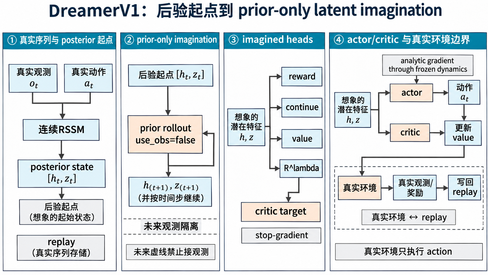
F06 DreamerV1 latent imagination 详解
这张图只回答 DreamerV1 的核心转折：真实 replay 中的观测后验负责提供想象起点，起点之后的未来状态由 prior-only RSSM 推进，不再读取未来观测。读图顺序是后验起点、未来 prior rollout、reward/pcont/value 与 λ-return、actor-critic 和真实环境边界。
左侧真实序列把观测 o_t、动作 a_t 送入连续 RSSM，得到 s_t=[h_t,z_t]。这一步是过滤阶段，posterior 可以读取当前观测；它把 replay 中真实信息压缩成一个可复制的 latent state。中间的 prior-only imagination 从该状态开始，显式写 use_obs=false，未来虚线不能接入 o_{t+1}、o_{t+2} 等真实观测。prior 根据历史状态和动作预测未来 z/h，actor 在这些预测状态上采样动作，形成 imagined trajectory。
右侧 imagined heads 产生 reward、pcont/discount 和 value。reward 预测给出任务信号，pcont/discount 调制终止后的折扣，value 为 λ-return 提供 bootstrap。R^lambda 是从 imagined rewards 和终点 value 递归计算的目标；critic 以 stop-gradient 的 λ-return 学 value，不能把目标梯度反传回 critic target。actor 使用 imagined state 的价值和 reward，通过冻结 dynamics 参数的 analytic gradient 更新策略，减少真实环境交互。
最右边真实环境只收到 actor 输出的 action，并把新轨迹写回 replay。它不把真实 observation 直接连到 imagined critic；真实 observation 只在下一轮 posterior filtering 时重新初始化或校正 latent state。这个边界是 DreamerV1 与“环境直接训练 critic”的常见误读分界。图中实线代表状态/梯度流，灰色虚线代表未来观测隔离和证据边界。
一个具体时间步是：从 replay 取 o_0，posterior 得到 s_0；用 prior 预测 s_1、s_2，actor 产生 a_0、a_1；reward head 预测 r_0、r_1，pcont/discount head 给出每一步折扣权重；value head 在末端给出 bootstrap；从后往前计算 R^lambda；critic 拟合停止梯度目标，actor 沿 latent dynamics 的可微路径优化。真实环境只执行第一条 actor action，然后把新的 o_1、a_0、r_0 写回 replay。
常见误读有三种：把 DreamerV1 画成 PlaNet 的 CEM/MPC；把未来观测接到 prior rollout；把真实环境到 critic 画成直接监督箭头。三者都会改变论文的算法边界。V2 的 categorical/straight-through、V3 的 symlog/two-hot、Dreamer4 的 transformer 都不属于这张图。
代码映射需要分别绑定 world model observe/use_obs 分支、imagination loop、lambda return、actor/critic update 和 replay writer；源码映射应绑定 dreamer/models/rssm.py::_transition/_posterior、dreamer/training/utility.py::imagine_forward/compute_value_loss/compute_action_values、dreamer/control/temporal_difference.py::lambda_return 和 dreamer/scripts/configs.py 的 pcont/horizon 配置；固定提交含多个配置分支，存在不等于论文主实验全部启用。
训练、推理和证据边界补充
第一栏的真实序列只承担 posterior filtering：观测和动作来自 replay，连续 RSSM 把它们压成后验起点。第二栏的 s_0、s_1、s_2、s_3 是 imagined states，不是环境真实观测；灰色叉号表达未来 observation 不可用，use_obs=false 是计算条件而不是一个新的网络。第三栏 reward、pcont/discount、value 的箭头汇入 lambda-return，critic target 与 stop-gradient 分开画，避免把 value target 的梯度传给 critic 自身。第四栏 actor 只从 imagined states 得到 action，analytic gradient 穿过冻结 dynamics；真实环境只执行 action，再把新轨迹写回 replay。
如果把真实环境箭头画成 observation→critic，会把 DreamerV1 错读成 model-free actor-critic。正确闭环是 action→environment→replay→下一次 posterior，imagined reward/value→lambda-return→critic/actor。图中未来观测隔离、真实环境边界、冻结 dynamics 和停止梯度共同定义了训练不变量。
变量、箭头和训练目标逐项核对
h_t 是确定性历史，z_t 是连续随机潜变量，[h_t,z_t] 是 posterior 起点。prior rollout 中每个 s_{t+1} 只依赖当前 latent state 与 actor action；它不读取 o_{t+1}，也不把真实环境图像传给 imagined heads。reward、pcont/discount 和 value 是三个不同输出；pcont 对应论文里的 continuation/discount 记号，调节终止后的折扣，不能当作 reward 的第二种写法。lambda-return 把多步 reward 与末端 value 组合，critic target 经过 stop-gradient；actor 的 analytic gradient 则沿 frozen dynamics 计算动作参数梯度。
真实环境栏的唯一数据流是 action→environment→replay。新观测在下一轮进入 posterior，用来重新校正 latent state；它不作为当前 imagined trajectory 的未来标签。这样设计让大量 actor/critic 更新在模型内完成，同时保留真实交互用于刷新 replay。图中四区并列而不是串成一条“环境→critic”链，读者必须分别理解训练、想象、价值学习和数据收集。
最小失败例是把未来观测接到 prior：模型会获得不现实的完美信息，lambda-return 和 actor 看起来更准，但部署时没有未来帧。另一个失败例是让 actor 更新 dynamics 参数，world model 会被策略梯度改变，无法再把 frozen model 作为稳定的 imagination 环境。
与其他代际的边界
PlaNet 使用 CEM/MPC 在候选动作序列上搜索，DreamerV1 把 actor 学习放在 prior-only imagined trajectory。V1 的主世界模型 latent 是连续高斯，但论文已经用 straight-through 处理离散动作；V2 的新变化是 categorical latent 本身以及相应 KL balancing。V3 才加入 symlog、two-hot、return percentile 和优化器组合，Dreamer4 改为连续视频 tokenizer 与 block-causal transformer。F06 的重点是连续 RSSM、λ-return、critic target 停梯度和通过固定模型的 actor gradient，而非把后代机制串入 V1。
论文公式与 TF1 调用链核对
F06 的状态轴从真实 replay 的 posterior start 开始。连续 RSSM 读取当前 o_t,a_{t-1}，得到 s_t=[h_t,z_t]；这个状态可以包含真实观测证据，但只负责初始化想象。随后 imagine_forward 在 use_obs=false 条件下扫描未来，actor 从 imagined state 采样动作，RSSM prior 只依赖上一状态和动作，未来 o_{t+1}、o_{t+2} 不能进入这条链。图中的叉号和灰色虚线因此是信息边界，不是停用模块。
想象头的三个输出有不同角色。reward head 提供 imagined reward，value head 在有限时域终点 bootstrap；论文 sources/papers/1912.01603/tex/sections/behavior.tex:33-46 将 V_λ 定义为不同 n-step value estimate 的指数加权平均。:61-64 另说明价值目标停梯度、行为学习时世界模型固定，以及早停任务才预测 discount factor 并以其累积乘积降权。固定 TF1 源码的 compute_value_loss 在 value_loss_pcont=True 时取 pcont head，关闭时用全 1 再乘 value_discount。因此 pcont 是条件分支，不能被解释成所有 V1 任务必有的模型输入或额外奖励。
真实环境只有一条闭环：actor action→environment→new observation/reward→replay。新观测在下一次过滤中重新形成 posterior，不能直接成为当前 imagined critic 的监督箭头。这个拓扑解释了 DreamerV1 为什么能用一条真实步产生许多潜在训练状态，也保留了模型偏差和 reward head 误差的上限。它与 PlaNet 的 CEM/MPC 搜索不同，与 V2 的 categorical/straight-through 和 V3 的 symlog/two-hot 也不同。
源码将论文中的“后验起点”批量化：imagine_forward 先将 replay posterior 的 batch/time 两轴合并成 extended_batch，构造零 observation 与全 false 的 use_obs，再以 tf.scan 扫描 imagination distance；每步从 latent feature 采样 action 后调用 RSSM。stop_grad_pre_action 与 stop_grad_post_action 是两个不同开关：前者可切断 state→policy-input 的路径，后者可切断 action→dynamics；主 action 目标调用时将后者设为 false，保留通过模型传回动作参数的梯度。
价值学习与动作学习调用同一 λ-return 例程但停梯度参数相反：utility.py:270-300 的 compute_value_loss 使用 stop_gradient=True，以当前 value 分布的负对数似然拟合目标；:303-331 的 compute_action_values 使用 stop_gradient=False，保留 reward、value、imagined state 对 action 的可微依赖。行为目标也不更新 RSSM 参数，这由论文固定 world model 的声明和 optimizer 参数范围共同界定，不能把“可以穿过模型求导”误读成“模型被 actor 改写”。
直接来源定位
论文直接来源是 sources/papers/1912.01603/tex/sections/behavior.tex:11-13（真实经验后验起点）、:27-30（tanh 高斯重参数化）、:33-64（λ-value、actor/critic 目标与早停 discount），以及 sections/appendix.tex:6-18（连续 latent 30 维、H=15、γ=.99、λ=.95 与离散任务分支）。固定代码基址为 sources/repos/dreamerv1/snapshot/dreamer-53e79b0fb8e384e55f6b34169e511cd9d95f844b/：其下 dreamer/models/rssm.py::_transition/_posterior/features_from_state、dreamer/training/utility.py:244-331 的三函数、dreamer/control/temporal_difference.py::lambda_return、dreamer/scripts/configs.py:86-90,306-337 对应状态、想象、返回与 pcont 配置。
r4 后验起点、λ-return 与梯度路径复核
F06 的状态轴从真实 replay 的 posterior start 开始。连续 RSSM 读取当前 o_t,a_{t-1}，得到 s_t=[h_t,z_t]；这个状态可以包含真实观测证据，但只负责初始化想象。随后 imagine_forward 在 use_obs=false 条件下扫描未来，actor 从 imagined state 采样动作，RSSM prior 只依赖上一状态和动作，未来 o_{t+1}、o_{t+2} 不能进入这条链。图中的叉号和灰色虚线因此是信息边界，不是停用模块。
想象头的三个输出有不同角色。reward head 预测 r_t，continue head 给出 c_t 并调节折扣，value head 为终点 bootstrap。λ-return 可写为 R_t^λ=r_t+γc_t[(1-λ)v(s_{t+1})+λR_{t+1}^λ]，从后往前递推；critic 以 stop-gradient 的 R^λ 为目标更新，停止的是目标分支反向路径，不是 critic optimizer。actor 则沿冻结 dynamics 的 analytic gradient 使用想象价值，梯度终点是 actor 参数。
真实环境只有一条闭环：actor action→environment→new observation/reward→replay。新观测在下一次过滤中重新形成 posterior，不能直接成为当前 imagined critic 的监督箭头。这个拓扑解释了 DreamerV1 为什么能用一条真实步产生许多潜在训练状态，也保留了模型偏差和 reward head 误差的上限。它与 PlaNet 的 CEM/MPC 搜索不同，与 V2 的 categorical/straight-through 和 V3 的 symlog/two-hot 也不同。
源码核对顺序是 dreamer/models/rssm.py 的 _transition/_posterior/features_from_state，dreamer/training/utility.py 的 imagine_forward、compute_value_loss、compute_action_values，以及 control/temporal_difference.py::lambda_return。配置中可能存在 planner、overshooting 或 reinforce 分支，但存在不等于论文主实验启用。若图片出现 real observation→imagined critic 或 actor 梯度回到 world model，应记录为图稿问题交给 root 重画。
数据与控制流
领域关键执行基底是 latent imagination actor-critic loop：真实序列提供 posterior 起点，actor 在 prior-only RSSM 中展开 imagined states，critic 估计 lambda-return，actor 再从价值梯度更新。 真实输入、状态更新、未来展开、目标计算和环境调用必须按时间顺序分开。
D2 Dream to Control: Learning Behaviors by Latent Imagination 训练与推理顺序
先用 replay 真实序列更新世界模型，再从后验状态生成 prior-only 想象轨迹，计算 λ-return 与状态权重，分别更新 value 与 actor。真实交互执行的是 actor 当前动作，下一观测再校正历史并写入 replay。未来 imagined action 不触发真实环境调用，行为梯度通过模型也不表示行为优化器更新模型参数。
核对来源：README.md（此附件保存在完整本地归档中）（L1-29）；dreamer/training/utility.py（L192-331,410-456）；dreamer/models/rssm.py（L28-143）；dreamer/control/temporal_difference.py。
从数据到行为的完整执行基底
真实序列提供 posterior 起点，actor 在 prior-only RSSM 中展开 imagined states，critic 估计 lambda-return，actor 再从价值梯度更新。
贯穿实例、形状与时间对齐
用短序列和可以手算的数字核对抽象机制。这里的教学实例明确区别于论文实验值，也不冒充目标框架的运行结果。
算法流程与具体 逐步计算实例
一段训练循环先从 replay 取真实序列，encoder 与 RSSM 产生 posterior/prior，world-model objective 更新模型；随后从各真实序列 posterior 状态生成 imagination 起点。actor 采样动作，后续步骤调用 prior transition，不再读取图像，reward 与 value 产生 imagined target；仅在早停任务的相应配置中由 pcont/discount 调节返回和轨迹权重。compute_value_loss 停止 λ-return target 的梯度，compute_action_values 保留通过固定 dynamics 到动作参数的梯度。连续控制的论文实例使用 H=15、γ=.99、λ=.95，Atari/DeepMind Lab 附录另用 H=10 并预测 discount，不能将两者混成全任务设定。actor 与 critic 更新后，真实环境只执行当前 actor 动作，新 observation/reward 写回 replay 后才成为下一轮 world-model 数据。该例子保留“真实观测→后验、模型预测→想象、真实执行→写回”的时间分工。
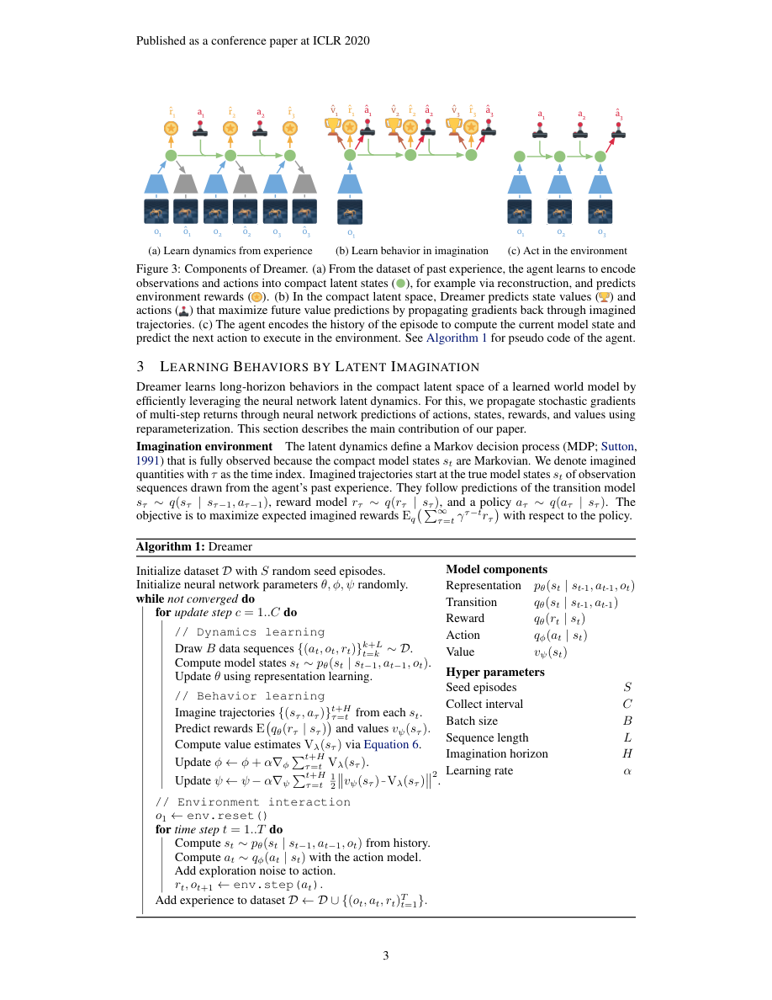
Figure 3: Components of Dreamer. (a) From the dataset of past experience, the agent learns to encode observations and actions into compact latent states, for example via reconstruction, and predicts environment rewards. (b) In the compact latent space, Dreamer predicts state values and actions that maximize future value predictions by propagating gradients back through imagined trajectories. (c) The agent encodes the history of the episode to compute the current model state and predict the next action to execute in the environment. See Algorithm 1 for pseudo code of the agent.
选择理由
方法主图，三栏分开真实经验上的 dynamics learning、潜空间 imagination behavior learning 和真实 environment interaction；可直接纠正“critic 在真实数据上直接训练”与“想象动作逐步执行于环境”的误读。
图表说明
(a) 左栏从过去经验的观测 o、动作 a、奖励 r 编码 compact latent state，并用重建与 reward prediction 学 world model；(b) 中栏从 model state 出发在潜空间 rollout imagined states，预测 reward、value、action，梯度沿 imagined trajectory 回传；(c) 右栏编码 episode history，只把当前 actor 的下一动作送入真实环境并取得新观测和奖励。箭头区分真实数据、模型想象和环境交互；图没有把 imagined actions 画成真实执行，也没有说 critic 直接使用原始像素标签。
进一步分析
behavior.tex 说明 imagined trajectories 从数据集真实 model states 开始，后续 transition/reward/policy 均由模型产生；value model 回归 V_lambda，action model 通过可微 dynamics 取得 analytic gradients，world model 在行为学习时固定。Algorithm 1 先用真实序列更新 dynamics，再用 imagination 更新 actor/critic，最后执行 actor 一步并把 episode 加回 dataset。因此真实数据提供 posterior/model-state 起点，critic 的训练样本是模型生成的 imagined states 与 V_lambda targets。
证据边界
图是流程概览，未给 H、γ、λ、停止梯度、重参数化或早停折扣公式；须回到 behavior.tex 与 appendix 核验。
原文定位
sources/papers/1912.01603/tex/figures/schema/figure.tex:1-27sources/papers/1912.01603/tex/algos/agent.tex:7-30sources/papers/1912.01603/tex/sections/behavior.tex:9-64
固定源码入口：sources/repos/dreamerv1/snapshot/dreamer-53e79b0fb8e384e55f6b34169e511cd9d95f844b；commit=53e79b0fb8e384e55f6b34169e511cd9d95f844b
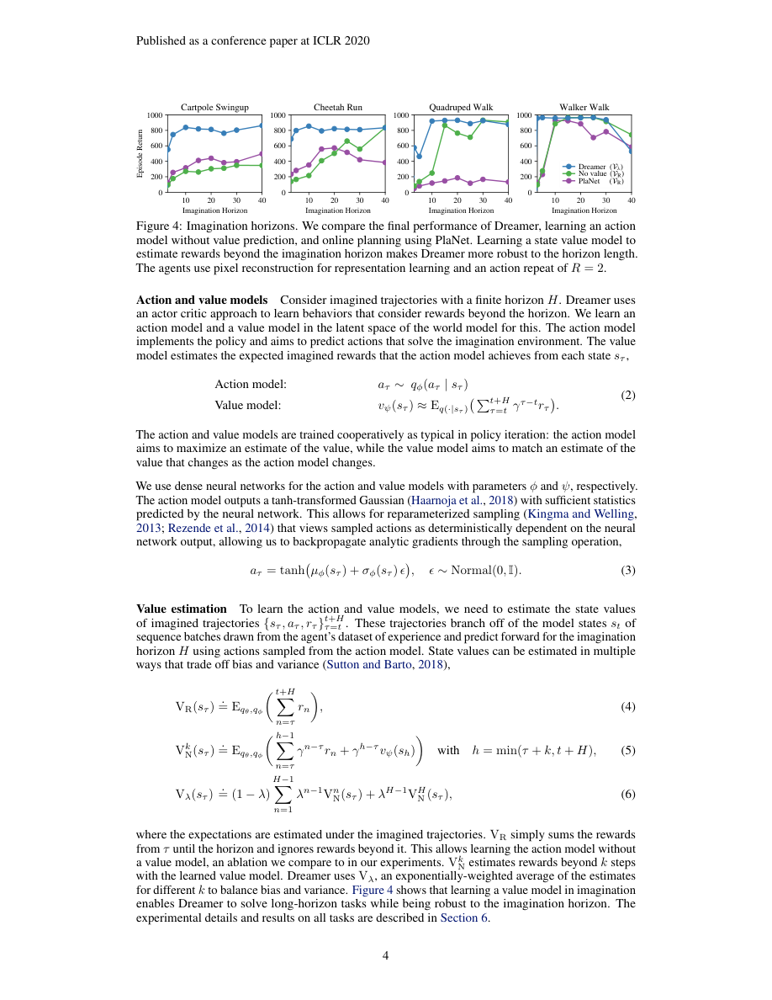
Figure 4: Imagination horizons. We compare the final performance of Dreamer, learning an action model without value prediction, and online planning using PlaNet. Learning a state value model to estimate rewards beyond the imagination horizon makes Dreamer more robust to the horizon length. The agents use pixel reconstruction for representation learning and an action repeat of .
选择理由
实验图，比较 horizon 对 Dreamer、无 value prediction 的 action model 与 PlaNet online planning 的影响，可把 critic/value 的作用与 world model 的真实数据训练分开。
图表说明
四个面板分别为 Cartpole Swingup、Cheetah Run、Quadruped Walk、Walker Walk；横轴是 Imagination Horizon，刻度 1、10、20、30、40，纵轴是 Episode Return，范围约 0–1000。蓝线为 Dreamer (V_lambda)，绿线为 Dreamer (No Value)，紫线为 PlaNet (MPC)，每个点对应一个 horizon 下的最终性能。蓝线通常在短 horizon 也保持较高回报，绿线对 horizon 更敏感，紫线是在线规划对照。图注限定所有 agent 使用 pixel reconstruction 表示学习和 action repeat R=2；它没有把“真实数据训练 critic”画成额外曲线。
进一步分析
该图支持作者的具体机制主张：value model 用 V_N^k 与 V_lambda 对想象视界外的奖励做 bootstrap，使 Dreamer 对 H 更稳健。它并不等于 value model 预测了真实环境全部回报；targets 仍由 imagined reward、predicted value 和折扣组合构成，早停任务还需累计 predicted discount 加权。实验中的 Dreamer 与 PlaNet 都从在线经验数据学习 world model，但行为路径不同：Dreamer 在潜空间更新 action/value，PlaNet 每个真实步用 MPC/CEM 规划。因而不能把蓝线优势简写成“critic 在真实数据上直接学得更好”。
证据边界
图不报告每点的误差带、seed 数、墙钟或独立表示目标；结论限于该像素输入、R=2 的实验协议。
原文定位
sources/papers/1912.01603/tex/figures/horizon/figure.tex:1-5sources/papers/1912.01603/tex/sections/behavior.tex:33-64sources/papers/1912.01603/tex/sections/experiments.tex:8-14
固定源码入口：sources/repos/dreamerv1/snapshot/dreamer-53e79b0fb8e384e55f6b34169e511cd9d95f844b；commit=53e79b0fb8e384e55f6b34169e511cd9d95f844b
源码架构、调用链与实现差异
先看执行入口与模块责任，再追踪公式落到哪个固定文件和函数。源码事实解释当前实现，不能反向补写论文没有报告的实验设置。
F20 阅读引导：沿着 DreamerV1 的 TF1 执行链读源码
先读 configs.py，再读 train.py。前者告诉你参数怎样决定模型和 loss，后者告诉你这些配置怎样进入 dataset 与 graph builder。DEFAULTS 是按名字覆盖的字典，不同默认块可以组合；make_config() 最后检查未消费参数，所以图中的“参数覆盖”意味着一个有验证的构建阶段，而不是运行中任意读取全局变量。
进入 define_model.py 后，沿着四个动作读：实例化 cell；用零状态初始化 encoder/head 模板；把 encoder、action 与全真 observation mask 送入 closed_loop()；把 prior/posterior 交给 compute_objectives() 和 apply_optimizers()。这样可以理解训练数据的真实边界：observation 只在闭环展开中进入 posterior，之后的 imagination 通过零 observation 和假 mask 继续 prior rollout。
阅读 utility.py 时，把 compute_objectives()、imagine_forward()、compute_value_loss() 和 compute_action_values() 放在同一条时间轴上。value loss 的 return 被 stop gradient，而 action value 保留梯度；stop_grad_pre_action 与 stop_grad_post_action 又分别切断 feature 到 action、action 到 dynamics 的路径。图中如果只画一条“actor loss→world model”的箭头，就会遗漏这四个配置边界。
最后看 apply_optimizers()、CustomOptimizer 和 Trainer.iterate()。objective 先转成最小化形式并乘 scale，再按 phase 用 tf.cond 决定是否真正 apply gradients。环境侧的 CollectDataset 和 numpy_episodes 则通过 .npz 文件把 episode 写回、读回、切片和 batch 化。证据只覆盖固定 snapshot 的静态源码；没有 session 运行、checkpoint 生成或性能复现结论。
证据附件：事实契约（此附件保存在完整本地归档中）；详细图解（此附件保存在完整本地归档中）；源码证据清单（此附件保存在完整本地归档中）。
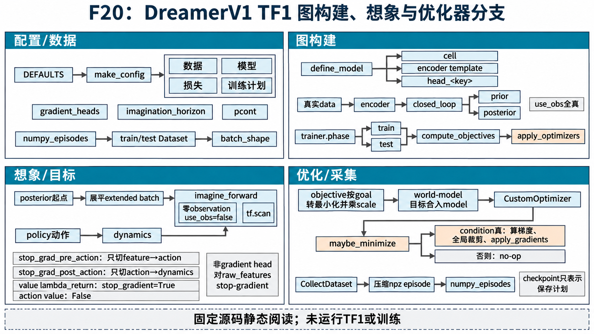
F20 详解：DreamerV1 的 TF1 配置、目标装配和梯度边界
DreamerV1 的源码阅读应从参数入口开始，而不是直接跳到 compute_action_values()。dreamer/scripts/configs.py 把默认配置拆成多个可叠加的命名块：dreamer 决定 planner 与 value/action head，pcont 打开持续概率相关的 gradient heads 和损失权重，discrete 决定 imagination horizon、divergence scale、reward clipping 与 action noise。make_config() 在参数上下文中写入这些默认值，然后依次调用数据处理、模型组件、任务、损失函数和训练计划构建器。函数末尾检查 params.untouched，因此拼写错误或不被当前版本读取的覆盖项会被显式拒绝。对读者而言，这意味着图中“配置 overlay”不是装饰：它决定后面是否创建 pcont head、想象多少步、value/action 从 dataset 还是 model 取目标，以及哪些梯度边界被设置为 true。
_data_processing() 把 episode reader 与 loader 绑定到配置。config.data_reader 最终指向 numpy_episodes.episode_reader，它读取 .npz，转换字段，累计 return，并按 pcont_scale 调整持续概率；numpy_episodes() 再用 tf.data.Dataset.from_generator 建立 train/test 两条流，先把 episode 切成固定时间长度，再按 batch 维度组合并预取。scripts/train.py:35-53 的 process() 先调用 collect_initial_episodes()，再重置默认图、创建数据集并把 training.define_model 绑定为 graph builder，最后交给 training.utility.train()。因此 replay 写回与 TF 图读取之间有一个明确的文件边界：环境收集器写压缩 episode，reader 重新打开它们，dataset pipeline 才产生训练张量。这个顺序不能被简化为“训练循环直接从环境拿数据”。
training/define_model.py 将配置变成一张 TF1 静态图。它从 config.cell() 得到 RSSM，创建 encoder template，再用 cell 零状态的 feature 初始化所有 head_<key> 模板。若有 value target 或 action target head，函数还在依赖列表中注册 target network tracking。然后 encoder 处理 batch 字典，tools.unroll.closed_loop() 使用全真的 use_obs 与 action/embedding 序列调用 tf.nn.dynamic_rnn，同时返回 prior 和 posterior。这里的 prior 是由 transition 得到的模型状态，posterior 是把当前 observation embedding 融入后的状态；训练期间的 reward、image、pcont 等 head 通常从 posterior feature 读取。define_model() 把这两个状态和 graph locals 交给 utility.compute_objectives()，再把 objective 列表交给 apply_optimizers()，最终将 summary、collection 和 score 也挂入 trainer phase 的依赖链。
compute_objectives() 是 V1 源码最能体现“配置驱动执行”的函数。它先从 posterior 取 raw_features，再按排序后的 loss_scales 逐项生成 objective。divergence 通过 cell 的 state distribution 计算并执行 free-nats 截断；overshooting 重新展开不同距离的 prior/posterior，并可对 posterior 停止梯度；reward 与普通 head 用 log probability；value/action 则根据 value_source、action_source 和 imagination horizon 选择 dataset 状态或模型想象状态。当某个 head 不在 gradient_heads 中，函数只对该 head 的 feature 使用 tf.stop_gradient，并给 optimizer 一个 head-specific include 正则表达式。这说明“某项损失存在”和“它能更新共享 RSSM”是两件事，图中应将 head-specific stop-gradient 画成独立边界。
imagine_forward() 负责把 posterior 起点变成纯模型轨迹。它从初始 state 的前两维计算 extended batch，把 [B,T,...] 展平为 [B*T,...]，创建全零 observation 和形状为 [B*T,1] 的假 observation mask。每一步先从 state feature 生成 policy action；stop_grad_pre_action 为真时切断 feature 到 action 的梯度，采样 action 后若 stop_grad_post_action 为真再切断 action 到 transition 的梯度，最后以 use_obs=false 调用 cell。tf.scan 沿 imagination distance 循环，结束后把结果转回 [B,T,H,...] 的时间布局。这个实现细节解释了为什么图中要画两个不同的梯度闸门：前者控制 policy 读取 latent 的路径，后者控制 action 是否能通过 RSSM dynamics 影响前面的 latent 表示。
value 和 action 两条目标路径在代码里有意区分。compute_value_loss() 如果没有外部 reward，就从 reward head 的 mode 得到模型奖励；可选地减去 action/state divergence，再乘以预测的 pcont 和 value discount。它调用 control.lambda_return() 时传 stop_gradient=True，并在 bootstrap 配置下丢掉最后一步、用最后 value 作引导，然后把 return 接回零尾部，供 value distribution 的 log probability 训练。compute_action_values() 也可计算模型 reward 与 pcont，但它根据是否存在 value head 选择 discounted return 或 lambda return，并显式传 stop_gradient=False。因此 action objective 能把 return 对 policy/dynamics 的依赖保留下来；这不是“所有 lambda return 都可回传”，而是由调用处的 stop-gradient 参数决定。
优化器路径把这些数学目标变成 TF1 update op。apply_optimizers() 先把 max goal 的 log probability 取负，乘上 config.loss_scales，用 control dependency 保证所有原始 objective 已被计算，再把没有 include/exclude 约束的损失合并成一个 model objective。每个 objective 通过配置构造 CustomOptimizer，后者在 maybe_minimize() 中用 tf.cond 判断 trainer phase：train 时调用 compute_gradients、计算 global norm、按 clipping 阈值裁剪并 apply_gradients；test 时返回 no-op。training/trainer.py 的 iterate() 负责选择 phase、填充 step/phase/log/reset placeholder、执行 phase op、推进 global step，并按 checkpoint schedule 调用 saver。图中“梯度真实执行”应落在这个 condition 与 apply_gradients 处，而不是把静态 loss 计算误画成已经更新参数。
环境收集器和 replay 文件流位于图的另一侧。CollectDataset 在每次 step() 把 action、reward、observation 和 pcont 等 transition 累积到当前 episode，episode 结束时在 close()/结束分支写入压缩 .npz。episode_reader() 再从文件读回字段，补充 return 与 reward mask；numpy_episodes() 将这些 episode chunk 成固定长度并 batch。源码可以证明字段如何流动、何时写盘、何时进入 dataset，但本次工作没有启动 TensorFlow session 或训练命令，所以不能声称已经产生 checkpoint、梯度非零或 loss 收敛。图应把这些运行时结果标为待执行证据，而把可核对的函数调用顺序和张量时间轴作为正式事实。
从源码结构看，V1 的一个训练 step 并不是单一 loss 函数，而是多层条件组合。compute_objectives() 先把不同时间轴上的张量压成可比较的标量或序列，再由 apply_optimizers() 统一做 scale、goal 转换和控制依赖。某个 head 的 log probability 可能是 [B,T]，divergence 也可能保留 batch/time 结构；在 objective 返回前统一 reduce_mean，这样 optimizer 接收的是标量 loss，而 head-specific include/exclude 仍决定梯度落到哪些变量。图中如果直接把每个 head 画成独立 optimizer，就会漏掉源码把全模型 objective 合并成 model 的步骤，也无法解释不同 objective 如何共享 Adam 的统计量。
时间轴的处理也不能省略。dataset sequence 通常包含当前 observation、action、reward 和 pcont；closed loop 为每个时间点产生对应 posterior。value bootstrap 打开时，compute_value_loss() 去掉 reward/value/pcont 的最后位置，把末端 value 作为 bootstrap，再把 lambda return 拼上一个零尾部，最后只对 [:, :-1] 计算 value log probability。action 路径同样可能裁掉末端并用 value bootstrap，但它保留 return 的梯度。也就是说，损失中的“最后一步”并非简单丢弃，而是承担 bootstrap 的角色；图中应标出 T-1 位置从监督项变为引导项的变化。
pcont 的语义还会影响权重而不仅是 head likelihood。value 路径可以对 pcont 取 stop-gradient，随后用 cumulative product 作为 value loss 权重；action 路径可选择是否对 pcont stop-gradient，也可用 cumulative product 对 action return 加权。因而 config 中的 value_loss_pcont、action_loss_pcont、value_pcont_weight 和 action_pcont_weight 是独立开关，不能合并成一个“是否使用折扣”的标签。图稿需要把 pcont head、return 计算和时间累计权重分开画出，读者才能根据行号核对每个开关的作用位置。
训练 phase 与数据写回之间也存在明确的控制依赖。Trainer.iterate() 先用当前 global step 找到 train 或 test phase，再把 phase、step、log、reset 等 placeholder 填入 feed，执行由 _define_step() 生成的 op；该 op 在 score/summary 更新后才 assign_add global step。define_model() 将 collection 和 summary 放在 optimizer summaries 的 control dependency 之后，确保数据收集不会在模型更新之前偷偷执行。环境写回的 .npz 文件则由下一轮 numpy_episodes loader 发现和缓存。静态代码能证明这些依赖和文件边界，但不能证明某个具体 session 中执行顺序没有被外部调用改变，因此证据 JSON 只声明源码核验状态。
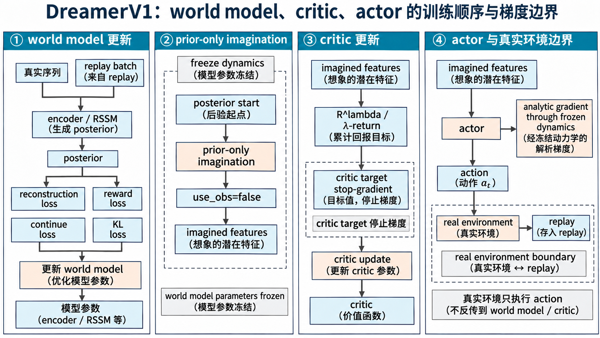
F07 DreamerV1 训练顺序与梯度边界详解
这张图回答 DreamerV1 在代码和训练流程中如何依次更新 world model、critic 与 actor，以及为什么模型参数冻结和 critic target 的 stop-gradient 必须画成两个不同的边界。图的四个编号区域对应四个读者可复述的阶段：回放批次训练世界模型、从后验起点进行 prior-only imagination、用 λ-return 更新 critic、沿冻结 dynamics 的解析梯度更新 actor 并把动作送回真实环境。
第一区从 replay batch 开始。encoder 将观测转为表征，RSSM 产生后验/先验状态，世界模型同时承担 reconstruction、reward、continue 与 KL 目标。四个橙色损失卡只在这里汇合到 world-model 参数更新，表示这一步学习的是表征、动力学和预测头。它不是 actor 的策略梯度，也不是 PlaNet 的 CEM 搜索。真实环境产生的 observation、action、reward 写入 replay，形成下一轮世界模型的训练数据；图中没有把真实环境直接连到 critic。
第二区从 posterior start 开始想象。后验状态只用来初始化一段轨迹，随后 prior-only RSSM 以 use_obs=false 推进未来。未来 imagined states、imagined reward 和 imagined continue 都来自模型内部预测，不能再读取真实未来观测。右侧的“模型参数冻结 / freeze dynamics”明确表示在这次 imagination 和 actor 更新期间，world-model 参数不随 actor 梯度改变。这个冻结边界与第一区的 world-model 更新时机相邻，但语义不同：前者是训练世界模型，后者是暂时把它当作可求导的固定动力学。
第三区把 imagined trajectory 送入 R^lambda / λ-return，构造 critic target，再经过 stop-gradient 进入 critic loss 并更新 critic 参数。stop-gradient 的作用是阻止 critic target 反向改写生成该 target 的价值估计或动力学路径；它不等于冻结整个 world model，也不等于停止 critic 自己的参数更新。图中把 stop-gradient 画成 critic target 上的独立红色边界，并写出“真实观测禁止直接进入 critic”，防止读者误读成在线监督信号。
第四区以 imagined states 为 actor 输入，策略 pi(a|z) 产生动作，analytic dynamics gradient 通过冻结的 dynamics 反传到 actor 参数。梯度的终点是 actor update，而不是 world-model 参数；图中的绿色提示“梯度到 actor，非 world model”正是这条边界。更新后的 action 才在真实环境执行，环境反馈再写回 replay。这样，actor 的策略学习和真实数据采集形成闭环，却没有把真实环境观测画成直接的 critic 训练箭头。
一个时间步的最小复述是：从 replay 取一段序列，先更新 world model；从后验状态取 imagination 起点，关闭未来观测输入并冻结 dynamics；在 imagined trajectory 上计算 λ-return 和 critic target，停止 target 梯度后更新 critic；再沿冻结 dynamics 的解析梯度更新 actor；执行 actor action，得到新观测和奖励并写回 replay。训练顺序不是任意并行的四个框，而是由数据依赖和冻结边界组织起来的流程。
与 PlaNet 的区别是 DreamerV1 不在每一步用 CEM/MPC 搜索整段动作，而是训练 actor 让它在 latent imagination 中直接输出行为。与 DreamerV2 的区别是本图使用 V1 的连续随机状态和解析梯度，不引入 32×32 categorical、straight-through 或 Atari REINFORCE。与 DreamerV3、Dreamer4 的区别是本图不包含 symlog/two-hot、return percentile、causal tokenizer 或 block-causal transformer。这样可避免把后续版本的数值和架构机制回填到 V1。
图稿检查清单交由 root 独立复核：四区、use_obs=false、R^lambda、stop-gradient、freeze dynamics、replay、real environment、箭头方向、无 real observation→critic 直连及无 actor→world-model 更新。此处不宣称图片已通过。
代码阅读边界
代码核对应沿 world-model loss、RSSM observe/imagine、lambda-return、critic loss、actor loss 和环境 write-back 的调用链阅读。需要把“后验只作起点”与“未来 prior 不读观测”分开，把 stop-gradient 的 target 处理与冻结 dynamics 的参数状态分开，把 actor 的 analytic gradient 与 world-model optimizer 分开。任何实现仓库中的额外调试路径或配置分支都不能仅凭图上的箭头推断为论文主流程。
常见错误
错误一是把未来真实观测接到 prior-only imagination；正确标签是 use_obs=false。错误二是把 critic target 的 stop-gradient 解释成停止 critic 更新；实际停止的是 target 反向路径。错误三是把 actor analytic gradient 画成更新 world model；正确终点是 actor 参数。错误四是让真实环境直接训练 critic，跳过 imagined returns；真实环境在本图只执行 action 并写回 replay。错误五是把 V2 的离散 REINFORCE、V3 的 symlog 或 V4 的 Transformer 混入 V1。
图稿压缩的是拓扑，论文页码、代码文件和行号仍需回到来源快照；如果固定源码不能回答某个实现问题，正文保留未核验边界。图片事件、PNG 字节和视觉状态不在本详解中判定。
读者还应把“训练顺序”理解成两个时间尺度：world-model 更新消化 replay 中已经发生的片段，imagination 则在一次更新内展开未来的潜在轨迹。它们可以在工程实现中共享批次和缓存，但不能把同一条梯度箭头跨过阶段边界直接连接。真实环境的动作执行也可能产生新的 replay 数据，却不会因此取消 prior-only imagination 的无观测条件。保持这三个时间尺度分开，才能同时解释论文算法和源码中的 optimizer 调用。
r4 训练顺序、冻结状态与源码调用链复核
F07 的四个编号区不是并行模块，而是有数据依赖的更新顺序。第一步从 replay batch 计算 encoder、RSSM observe、reconstruction、reward、continue 和 KL，world-model optimizer 更新表示、动力学与预测头。第二步把 posterior state 作为 imagination 起点，关闭未来观测并暂时冻结 dynamics。第三步用 imagined reward、continue、value 计算 λ-return，stop-gradient 后更新 critic。第四步沿冻结 dynamics 的解析梯度更新 actor，最后才把 action 送回环境并写入 replay。
必须区分两个“停止”。freeze dynamics 是参数状态，表示 actor 的梯度可以穿过模型计算动作导数，但 optimizer 不更新 world-model 参数；stop-gradient target 是计算图边界，阻止 critic target 反向穿过价值估计或动力学。critic 自己仍然更新，actor 也仍然更新。若把两条红线画成一条，会无法解释为什么同一次训练既能学习 critic，又能保持 imagined environment 稳定。
源码入口由 compute_objectives 装配损失尺度，imagine_forward 展开 prior-only 轨迹，compute_value_loss 构造停止梯度目标，compute_action_values 选择 λ-return 或 discounted return。dreamer/models/rssm.py 提供状态接口，真实环境写回属于 agent loop。需要记录 use_obs=false 的条件、动作源和 value 源配置，因为仓库中存在不同实验分支，不能仅凭函数名宣称所有配置都对应论文主结果。
贯穿实例可按一次 update 复述：取一段 (o,a,r,c)，更新 world model；从最后一个 posterior state 复制起点，滚动 H 步得到 imagined state；先更新 critic，再用冻结 dynamics 的 action value 更新 actor；执行第一个策略动作，得到新 o 和 r，追加 replay。这个实例解释了训练时间、想象时间和真实交互时间的分离，也说明正文不能用 real observation→critic 直连来修补错误图箭头。
固定代码的调用链
固定提交 google-research/dreamer@53e79b0fb8e384e55f6b34169e511cd9d95f844b 的 dreamer/models/rssm.py 与 PlaNet 的 RSSM 结构相同，但增加 feature_size 属性供行为网络使用。dreamer/training/utility.py 的 compute_objectives 根据 loss_scales 装配 divergence、overshooting、value、action、reward、pcont；imagine_forward 将 posterior 的前两维 flatten，使用 graph.cell 在 use_obs=False 的条件下扫描想象步。compute_value_loss 调用 control.lambda_return，compute_action_values 选择 lambda_return 或 discounted_return，并按 action_source/value_source 选择 dataset/model 路径。
这段代码也揭示论文文字和实现之间的边界：imagination_start 可以跳过 posterior 的最后若干步；stop_grad_pre_action 和 stop_grad_post_action 分别控制状态到动作、动作到后继状态的梯度；overshooting、CPC、pcont 和 target value 都是可配置分支，不应全部写成每个论文实验都启用。train.py、configs.py、define_model.py 才决定某个配置实例的真正组合。
代码来源边界
官方 TF1 快照用于静态 源码机制对照；不安装依赖、不运行训练，论文与固定提交的关系 关系写为 静态证据对应。
continuous RSSM / s_t=[h_t,z_t]
论文定位：Sec. 3。
实现核对：sources/repos/dreamerv1/snapshot/dreamer-53e79b0fb8e384e55f6b34169e511cd9d95f844b/dreamer/models/rssm.py:26-120 RSSM,_transition,_posterior
结论边界：固定实现是 google-research/dreamer@53e79b0fb8e384e55f6b34169e511cd9d95f844b，采用 TensorFlow 1。该快照 README 另列一个独立的 TensorFlow 2 简化实现；本读本只使用前者，两者不能互换身份。
核对来源：README.md（此附件保存在完整本地归档中）（L1-29）；dreamer/training/utility.py（L192-331,410-456）；dreamer/models/rssm.py（L28-143）；dreamer/control/temporal_difference.py。
latent imagination / a_t~π, s_{t+1}~p
论文定位：Sec. 4 / Algorithm 1。
实现核对：sources/repos/dreamerv1/snapshot/dreamer-53e79b0fb8e384e55f6b34169e511cd9d95f844b/dreamer/training/utility.py:132-331 compute_objectives,imagine_forward,compute_value_loss,compute_action_values
结论边界：固定实现是 google-research/dreamer@53e79b0fb8e384e55f6b34169e511cd9d95f844b，采用 TensorFlow 1。该快照 README 另列一个独立的 TensorFlow 2 简化实现；本读本只使用前者，两者不能互换身份。
核对来源：README.md（此附件保存在完整本地归档中）（L1-29）；dreamer/training/utility.py（L192-331,410-456）；dreamer/models/rssm.py（L28-143）；dreamer/control/temporal_difference.py。
lambda-return actor-critic / R_t^λ=r_t+γc_t((1-λ)V+λR_{t+1}^λ)
论文定位：Eqs. 4-6。
实现核对：sources/repos/dreamerv1/snapshot/dreamer-53e79b0fb8e384e55f6b34169e511cd9d95f844b/dreamer/control/temporal_difference.py:48-74 lambda_return
结论边界：固定实现是 google-research/dreamer@53e79b0fb8e384e55f6b34169e511cd9d95f844b，采用 TensorFlow 1。该快照 README 另列一个独立的 TensorFlow 2 简化实现；本读本只使用前者，两者不能互换身份。
核对来源：README.md（此附件保存在完整本地归档中）（L1-29）；dreamer/training/utility.py（L192-331,410-456）；dreamer/models/rssm.py（L28-143）；dreamer/control/temporal_difference.py。
Dream to Control: Learning Behaviors by Latent Imagination：实现遗漏与证据边界
论文表格与固定提交运行的一一对应关系的证据边界
论文说明：论文报告了任务、预算和结果。 固定材料只能说明：固定提交或来源边界不能证明该表格由此版本生成。 因此，只能标记 与证据静态对应，不能宣称复现。（官方 TF1 快照用于静态 机制与源码对照；不安装依赖、不运行训练，论文与固定提交的关系 关系写为 与证据静态对应。）
核对来源：README.md（此附件保存在完整本地归档中）（L1-29）；dreamer/training/utility.py（L192-331,410-456）；dreamer/models/rssm.py（L28-143）；dreamer/control/temporal_difference.py。
随机种子与结果聚合的证据边界
论文说明：部分图表给出均值/标准差或多次运行。 固定材料只能说明：静态阅读未执行训练，也未加载 checkpoint。 因此，结果数字只来自论文原页。（sources/papers/1912.01603/1912.01603v3.pdf）
核对来源：README.md（此附件保存在完整本地归档中）（L1-29）；dreamer/training/utility.py（L192-331,410-456）；dreamer/models/rssm.py（L28-143）；dreamer/control/temporal_difference.py。
运行环境与依赖的证据边界
论文说明：论文给出算法和实验协议。 固定材料只能说明：本任务不安装目标仓库依赖、不运行 GPU/TF/JAX。 因此，运行时行为保持未验证。（本报告的范围是静态论文与源码分析）
核对来源：README.md（此附件保存在完整本地归档中）（L1-29）；dreamer/training/utility.py（L192-331,410-456）；dreamer/models/rssm.py（L28-143）；dreamer/control/temporal_difference.py。
数据、时间与行为的顺序
真实观测或视频先进入表示编码器，得到状态或 token；动力学再在动作条件下预测后续状态。训练时真实序列提供监督，未来规划或想象分支则沿自身状态向前推进。任务头和行为模块各消费相应特征；不同论文是否预测 reward、discount 或 value 必须以本篇机制与配置为准。动作只有被交给环境时才成为真实交互，候选动作与想象动作保留在模型内部。
模块责任与证据层次
原始关系图将论文机制、固定代码事实、证据支持的解释和真实来源边界分开。节点之间的联系表达映射责任，而不是证明模块在某次论文实验中必然启用。没有官方实现时，连接停在论文级接口；后续实现或第三方仓库只能以它们自己的身份出现。
Dream to Control: Learning Behaviors by Latent Imagination：方法级修改边界（只读解释）
理解或替换 continuous RSSM需要保持什么
不执行修改；先保持输入输出契约，再比较梯度、状态和下游消费。 必须检查表示形状、时间对齐、目标 stop-gradient、来源边界。
涉及的实现接口：sources/repos/dreamerv1/snapshot/dreamer-53e79b0fb8e384e55f6b34169e511cd9d95f844b/dreamer/models/rssm.py::RSSM,_transition,_posterior。
阅读时应沿调用者回到被调函数，核对状态形状、时间对齐、目标停止梯度和下游消费；这一检查只证明静态接口一致，没有训练或性能复现结果。
核对来源：README.md（此附件保存在完整本地归档中）（L1-29）；dreamer/training/utility.py（L192-331,410-456）；dreamer/models/rssm.py（L28-143）；dreamer/control/temporal_difference.py。
理解或替换 latent imagination需要保持什么
不执行修改；先保持输入输出契约，再比较梯度、状态和下游消费。 必须检查表示形状、时间对齐、目标 stop-gradient、来源边界。
涉及的实现接口：sources/repos/dreamerv1/snapshot/dreamer-53e79b0fb8e384e55f6b34169e511cd9d95f844b/dreamer/training/utility.py::compute_objectives,imagine_forward,compute_value_loss,compute_action_values。
阅读时应沿调用者回到被调函数，核对状态形状、时间对齐、目标停止梯度和下游消费；这一检查只证明静态接口一致，没有训练或性能复现结果。
核对来源：README.md（此附件保存在完整本地归档中）（L1-29）；dreamer/training/utility.py（L192-331,410-456）；dreamer/models/rssm.py（L28-143）；dreamer/control/temporal_difference.py。
理解或替换 lambda-return actor-critic需要保持什么
不执行修改；先保持输入输出契约，再比较梯度、状态和下游消费。 必须检查表示形状、时间对齐、目标 stop-gradient、来源边界。
涉及的实现接口：sources/repos/dreamerv1/snapshot/dreamer-53e79b0fb8e384e55f6b34169e511cd9d95f844b/dreamer/control/temporal_difference.py::lambda_return。
阅读时应沿调用者回到被调函数，核对状态形状、时间对齐、目标停止梯度和下游消费；这一检查只证明静态接口一致，没有训练或性能复现结果。
核对来源：README.md（此附件保存在完整本地归档中）（L1-29）；dreamer/training/utility.py（L192-331,410-456）；dreamer/models/rssm.py（L28-143）；dreamer/control/temporal_difference.py。
连续 RSSM 的过滤与开环展开：机制到实现的逐项对应
posterior 用观测校正，prior 在 imagined step 不读观测。
该分析条目的符号表达为：s_t=[h_t,z_t]。posterior 用观测校正，prior 在 imagined step 不读观测。
论文依据：Sec. 3。
| 固定实现入口或来源边界 | 行号与符号 | 在本机制中承担的职责 |
|---|---|---|
dreamer/models/rssm.py |
26-120；RSSM、_transition、_posterior |
连续 RSSM |
阅读切片：rssm.py。
论文与实现的关系：论文机制与代码/来源边界逐项对照；未运行训练。
对应限制：官方 TF1 快照用于静态 机制与源码对照；不安装依赖、不运行训练，论文与固定提交的关系 关系写为 与证据静态对应；没有建立论文表格与固定提交运行的一一对应关系。
以后验起点进行潜在想象：机制到实现的逐项对应
从 posterior 起点用 actor+prior 生成未来潜轨迹。
该分析条目的符号表达为：a_t~π, s_{t+1}~p。从 posterior 起点用 actor+prior 生成未来潜轨迹。
论文依据：Sec. 4 / Algorithm 1。
| 固定实现入口或来源边界 | 行号与符号 | 在本机制中承担的职责 |
|---|---|---|
dreamer/training/utility.py |
132-331；compute_objectives、imagine_forward、compute_value_loss、compute_action_values |
想象与 actor/value 目标 |
阅读切片：imagine_forward。
论文与实现的关系：论文机制与代码/来源边界逐项对照；未运行训练。
对应限制：官方 TF1 快照用于静态 机制与源码对照；不安装依赖、不运行训练，论文与固定提交的关系 关系写为 与证据静态对应；没有建立论文表格与固定提交运行的一一对应关系。
λ-return 与 actor-critic 的多步行为目标：机制到实现的逐项对应
critic 预测有限视界外价值，actor 沿 imagined return 更新。
该分析条目的符号表达为：R_t^λ=r_t+γc_t((1-λ)V+λR_{t+1}^λ)。critic 预测有限视界外价值，actor 沿 imagined return 更新。
论文依据：Eqs. 4-6。
| 固定实现入口或来源边界 | 行号与符号 | 在本机制中承担的职责 |
|---|---|---|
dreamer/control/temporal_difference.py |
48-74；lambda_return |
lambda-return |
阅读切片：lambda_return/value/action。
论文与实现的关系：论文机制与代码/来源边界逐项对照；未运行训练。
对应限制：官方 TF1 快照用于静态 机制与源码对照；不安装依赖、不运行训练，论文与固定提交的关系 关系写为 与证据静态对应；没有建立论文表格与固定提交运行的一一对应关系。
实现边界：论文表格与固定提交运行的一一对应关系
论文说明：论文报告了任务、预算和结果。 固定实现或来源显示：固定提交或来源边界不能证明该表格由此版本生成。 对结论的影响：只能标记 与证据静态对应，不能宣称复现。
依据：官方 TF1 快照用于静态 机制与源码对照；不安装依赖、不运行训练，论文与固定提交的关系 关系写为 与证据静态对应。
实现边界：随机种子与结果聚合
论文说明：部分图表给出均值/标准差或多次运行。 固定实现或来源显示：静态阅读未执行训练，也未加载 checkpoint。 对结论的影响：结果数字只来自论文原页。
依据：1912.01603/1912.01603v3.pdf。
实现边界：运行环境与依赖
论文说明：论文给出算法和实验协议。 固定实现或来源显示：本任务不安装目标仓库依赖、不运行 GPU/TF/JAX。 对结论的影响：运行时行为保持未验证。
依据：本报告的范围是静态论文与源码分析。
接口保持要求：理解 continuous RSSM 的输入输出契约
不执行修改；只说明替换该机制时必须保持的状态、时间和梯度契约。 需要保持：真实输入与 imagined input 分开；时间维度和状态消费方不变；真实来源边界 不被隐藏。 实现位置：sources/repos/dreamerv1/snapshot/dreamer-53e79b0fb8e384e55f6b34169e511cd9d95f844b/dreamer/models/rssm.py::RSSM,_transition,_posterior。 静态核验：重读源文件、调用者、问题台账和固定证据；不运行训练。
接口保持要求：理解 latent imagination 的输入输出契约
不执行修改；只说明替换该机制时必须保持的状态、时间和梯度契约。 需要保持：真实输入与 imagined input 分开；时间维度和状态消费方不变；真实来源边界 不被隐藏。 实现位置：sources/repos/dreamerv1/snapshot/dreamer-53e79b0fb8e384e55f6b34169e511cd9d95f844b/dreamer/training/utility.py::compute_objectives,imagine_forward,compute_value_loss,compute_action_values。 静态核验：重读源文件、调用者、问题台账和固定证据；不运行训练。
接口保持要求：理解 lambda-return actor-critic 的输入输出契约
不执行修改；只说明替换该机制时必须保持的状态、时间和梯度契约。 需要保持：真实输入与 imagined input 分开；时间维度和状态消费方不变；真实来源边界 不被隐藏。 实现位置：sources/repos/dreamerv1/snapshot/dreamer-53e79b0fb8e384e55f6b34169e511cd9d95f844b/dreamer/control/temporal_difference.py::lambda_return。 静态核验：重读源文件、调用者、问题台账和固定证据；不运行训练。
Dream to Control: Learning Behaviors by Latent Imagination 数据流的阅读含义
真实输入、表示、动力学、奖励/价值和行为输出；虚线表示 真实来源边界。 它表达的是数据流。 原始定义位置：diagrams.md:D1；核对来源：dreamer/models/rssm.py；dreamer/training/utility.py；dreamer/control/temporal_difference.py；dreamer/scripts/train.py。
Dream to Control: Learning Behaviors by Latent Imagination 训练与推理顺序的阅读含义
先读取真实序列，再进入 prior/imagination，最后更新行为或执行动作。 它表达的是训练与交互的时间顺序。 原始定义位置：diagrams.md:D2；核对来源：1912.01603/1912.01603v3.pdf。
论文机制与证据层的阅读含义
论文事实、固定源码事实、与固定证据静态对应 inference 与 真实来源边界 分层。 它表达的是机制责任及证据层次。 原始定义位置：diagrams.md:D3；核对来源：00_identity/paper-identities.json；00_identity/repo-identities.json。
追加源码追踪：从真实序列到潜在起点
DreamerV1 的“梦境训练”不是一个脱离真实数据的独立环境。训练批次首先从 replay 读取观测、动作、奖励和继续信号，encoder 将观测变成 embedding，RSSM 在每个时间位置同时得到 transition prior 与 observation posterior。真实序列中的 posterior 样本携带当前帧信息，适合成为 imagination 的起点；从起点往后，模型只能使用 prior 和 policy action，不能反复读取批次中的未来 embedding。这个切换决定了策略是否偷看未来，不能用“latent rollout”四个字略过。
对于 B=3、T=6、skip-last=1、D=5，posterior 起点为 [3,5,...]，flatten 后是 15 行；scan 产生 [5,15,...]，transpose 后返回 [15,5,...]。函数内部不会把它还原成 [3,5,5,...]。这意味着下游 reward/value 目标必须保留“每个真实时间位置都是一个 imagined start”的语义。若把第一维重新解释为 B=3，三个不同时间起点就会被错误混合。
该篇原始结构化分析的所有科学条目已转换为本章的机制、实验和问答解释。需要逐字段复核时，可打开原始分析包（此附件保存在完整本地归档中）；附件保留原始字节，当前科学修订另有派生版本，二者身份分别记录。
Dream to Control：状态、想象与梯度的源码补充
本节把 S003 的独立深读补充迁入当前论文章节。它保留论文页码、TeX 位置、固定源码符号和实现边界；本任务仍未运行目标框架、训练或加载 checkpoint。
本补充只服务 S003，身份是 1912.01603v3（ICLR 2020，固定 PDF 共 20 页）与 google-research/dreamer@53e79b0fb8e384e55f6b34169e511cd9d95f844b 的静态联合阅读。正文依据论文 PDF/TeX 的页码和章节，代码依据仓库快照中的真实文件、符号和行号；没有安装目标依赖、没有训练、没有加载 checkpoint，下面的数值是教学推演，不是运行输出。已有读本已经给出主线，本文件只补充容易被一句“在潜空间想象”遮住的内部计算、时间对齐、配置分支和证据边界。
补充机制、计算和实验论证
9.3.1 计算位置为什么是 DreamerV1 的真正转折
从每步搜索转到一次性策略
论文 Figure 3（PDF p.3）把系统拆成三幅图：从数据集学习动力学、在想象中学习行为、在环境中执行动作。这个拆分表达的是计算位置改变，而不是把一个 CEM 模块换成另一个名称。PlaNet 的在线路径在每次真实动作前都要用当前后验状态重新搜索一批候选动作序列；Dreamer 把“给状态选动作”的重复工作交给参数化的 action model，训练时一次性在批量 latent trajectories 上反复更新它。论文 Sec. 3（PDF pp.3–5）明确说 imagined trajectory 从经验序列的真实 model state 开始，后继状态由 transition model、动作模型和 reward model 生成；环境只在 Algorithm 1 的第三阶段执行当前动作。
这个改变带来一个具体的吞吐差异。一次 replay batch 有 B 条长度 L 的序列，posterior 只需要沿每条序列过滤一次；从每个起点展开 H 步时，模型可以把 B×L 个起点展平后并行推进。源码 dreamer/training/utility.py:244-267 的 imagine_forward 先取初始 state 的前两轴乘积，再把每个状态张量 reshape 成 [B×L,...]，构造全零观测和 use_obs=False 的 mask，随后用 tf.scan 重复调用 cell。这段实现把论文所说的“thousands of trajectories in parallel”具体化为批量维度的合并，并没有在想象阶段调用环境或 decoder。它同时说明一个边界：并行的是模型内部轨迹，真实环境调用次数仍由采集循环决定。
真实序列和梦境序列的接口
在真实序列上，posterior 的输入是当前 embedding、上一步 action 和当前观测；在梦境序列上，prior 只接收上一步 latent state 与 action。dreamer/models/base.py:68-80 的 Base.call 先无条件计算 prior = _transition_tpl(prev_state, prev_action, zero_obs)，只有 use_obs 为真时才调用 _posterior_tpl。因此“posterior 起点”不是把整段真实视频复制到梦境里，而是把真实历史压成一个状态快照，然后切换到零观测的开环分支。RSSM._posterior（dreamer/models/rssm.py:102-120）复用 prior 的 belief/rnn state，再把观测 embedding 拼到 prior belief 上得到 posterior 的均值和标准差；_transition（:78-100）则只从 sample 与 action 产生下一 belief 和 stochastic distribution。
这一区分解释了为何重建头不是部署时必需的计算。观测模型在世界模型目标中提供图像 likelihood，帮助状态保留控制相关信息；梦境 rollout 只需 features_from_state、reward head、value head，以及早停配置启用的 pcont。把 decoder 画成每一步想象的必经节点，会错误增加计算，也会把“可解码”误读为“策略必须看见像素”。论文 p.3 图注已经把 reconstruction 写成学习信号，p.4–5 的 imagined MDP 公式只出现状态、动作、奖励和值。
对旧瓶颈的精确回应
旧瓶颈可以拆为三个具体场景。第一，候选动作序列的数量随 horizon 和采样数膨胀，导致每个环境动作前都要重新规划；Dreamer 通过 actor 参数共享把选择规则摊到训练更新。第二，短 horizon 的纯 reward sum 看不到视界外奖励；Dreamer 另设 value model，让有限 imagined prefix 可以 bootstrap。第三，像素上的策略梯度既昂贵又不稳定；Dreamer 让梯度在低维 state、reward 和 value 网络之间传播。论文 Figure 4（PDF p.4）把这三者中的第二点隔离出来：没有 value model 的对照在不同 horizon 下波动明显，而 Dreamer 的曲线在短 horizon 也更稳。该结果支持“价值 bootstrap 提高 horizon 鲁棒性”，不能推出任意模型误差下的策略安全性。
9.3.2 连续 RSSM 的状态构成和两种时间模式
状态轴和分布参数
论文附录 A（PDF p.14）给出连续 latent 为 30 维 diagonal Gaussian；固定 TF1 配置将 RSSM 的 state_size 默认设为 30、belief_size/model_size 设为 200，见 dreamer/scripts/configs.py:243-253。因此固定实现的每个 state 字典含 mean[30]、stddev[30]、sample[30]、belief[200] 和 GRU rnn_state[200]，feature_size 为 230（dreamer/models/rssm.py:45-57）。这不是说所有论文实验都只用一个 200 单元 GRU：make_config 会按 defaults 和命令行覆盖组合参数；但它说明读者在跟张量时不能把 stochastic sample 与 deterministic belief 合成一个未分轴的“latent”。
features_from_state（rssm.py:67-68）沿最后一轴拼接 sample 和 belief。reward/value/action heads 消费的是这个 feature，KL 则消费 mean/stddev 形成的分布（:59-76）。所以 sample 是前向行为和 imagined transition 的输入，分布参数是概率正则和 likelihood 的输入；两者在语义上相关，在代码上并不是同一个张量。将 KL 写成 sample 的 L2 距离会丢掉标准差和对数方差项，也无法解释 free nats 分支。
posterior 校正与 prior 开环
给定上一步 state 和 action，_transition 先把 sample 与 prev_action 拼接，经过 num_layers 个 dense，再过 GRU，最后分别预测 stochastic mean 和 softplus stddev（rssm.py:78-100）。_posterior 先调用同一 transition 得到 prior belief，再将该 belief 与当前 observation embedding 拼接，经过另一组 dense 产生 posterior 的 mean/stddev（:102-120）。因此当前观测影响 stochastic sample，但 deterministic belief 沿同一个 transition 更新；这正是“posterior 用 observation 校正、prior 不读未来 observation”的实现版本。
在真实 closed loop 中，tools.unroll.closed_loop 接收 embedded、data['action'] 和 debug 配置，调用位置是 dreamer/training/define_model.py:86-95。其输出 prior/posterior 被同一组 compute_objectives 消费。想象阶段则由 imagine_forward 生成零观测 [B×L,1,...]、全 False 的 use_obs，每步调用 graph.cell((obs, action, use_obs), prev)（utility.py:249-265）；Base.call 因而直接返回 transition prior。这个 mask 是时间语义的硬证据：如果误把 imagined state 当 posterior，就会假设策略偷看了未来图像。
一个三步状态例子
教学例子设 B=2、真实序列长度 L=4、想象 horizon H=3，每个 feature 维度 230。closed loop 得到 posterior 张量的逻辑形状 [2,4,30]（sample）和 [2,4,200]（belief）。选择所有 8 个 posterior 起点后，imagine_forward 将其展平为 [8,30] 与 [8,200]，第一轮 policy 产生 8 个 action，cell 产生第一个 prior state；三轮 tf.scan 先得到 [3,8,...]，函数的唯一 transpose 把它变为 [8,3,...]，没有恢复 [B,L,H,...]。第一个 imagined state对应起点之后的 transition，不是一个再次读取真实 observation 的 posterior。
如果 imagination_skip_last=1，compute_objectives 在 utility.py:135-143 先把 posterior 的最后一个时间位置切掉再展开，这避免把序列末尾没有完整后继的状态当作行为起点。该切片是配置条件，不应写成所有调用都必然跳过最后一步；configs.py:306-310 允许 None 或显式步数。读者检查维度时应同时记录 batch、真实时间和 imagined 时间，不能只看到一个“trajectory length”。
9.3.3 λ-return 的推导、时间对齐和手算
从 n-step 目标到指数混合
论文 Eq. (4)–(6)（PDF p.4）定义了三层对象。有限视界 reward sum V_R 只累加到 t+H；k-step 目标 V_N^k 累加前 k 步奖励并用 v_ψ(s_h) bootstrap，其中 h=min(τ+k,t+H)；最终 V_λ 是不同 k-step 目标的指数加权平均。这个定义不是把一个单独的“λ 值乘在总回报上”，而是把短期真实模型奖励与较远的 value 估计按 bias/variance 权衡混合。λ=0 接近一步 TD，λ=1 接近视界内 Monte Carlo；论文附录 A 将实际 γ 设为 0.99、λ 设为 0.95、H 设为 15。
固定源码采用等价的反向递推。dreamer/control/temporal_difference.py:48-74 先把 time axis 置于最前面，构造 next_values = concat(value[1:], bootstrap)，再定义 inputs = reward + pcont * next_values * (1-lambda_)；tf.scan 从末端反向计算 cur[0] + cur[1] * lambda_ * agg。展开后就是
其中代码里的 pcont 已经可以包含 γ，故不能在解释实现时再无条件乘一个额外 γ。stop_gradient=True 时 lambda_return 在最后用 tf.stop_gradient(return_) 截断，compute_value_loss 明确传入 True；compute_action_values 传入 False，让 actor 的目标保留通过 dynamics、reward 和 value 的梯度。
手算一：非终止的三步轨迹
这是教学数字，不是论文或 TensorFlow 输出。设 states 为 s0,s1,s2,s3，奖励依次 r0=1,r1=2,r2=3，pcont=[0.9,0.9,0.9]，λ=0.5，value 估计 V1=4,V2=5，末端 bootstrap V3=6。代码的末端先算 inputs2=3+0.9×6×0.5=5.7，再把反向扫描的 bootstrap 项算入，得到 R2=5.7+0.9×0.5×6=8.4，这正好等于 3+0.9×6。接着 inputs1=2+0.9×5×0.5=4.25，所以 R1=4.25+0.9×0.5×8.4=8.03；inputs0=1+0.9×4×0.5=2.8，最终 R0=2.8+0.45×8.03=6.4135。这个展开揭示了一个常见误读：末步并不是只用半个 bootstrap，(1−λ) 的直接 value 项和 λ 的递归项在末端共同还原完整 bootstrap。
手算二：终止信号怎样阻断未来
仍用相同 reward、value 和 λ，但令末步 pcont2=0，表示模型认为从 s2 到后续状态已经结束。此时 inputs2=3，R2=3；R1=4.25+0.45×3=5.6，R0=2.8+0.45×5.6=5.32。终止只通过 continuation 乘法阻断末端未来，不会删除当前奖励。若把 terminal 误写成“把 r2 也清零”，就会把环境奖励语义和 bootstrap 有效性混为一谈。
实现中的 bootstrap 切片
compute_value_loss（utility.py:270-300）先得到 reward、value、pcont；开启 value_bootstrap 时执行 reward=reward[:,:-1]、value=value[:,:-1]、pcont=pcont[:,:-1]，然后令 bootstrap=value[:,-1]，再调用 lambda_return。固定实现的 bootstrap 因而取自裁剪后的 value 最后一项，即原序列倒数第二项；原始末项没有被这里保留作 bootstrap。随后 tf.concat 一个零列，pred.log_prob(return_)[:,:-1] 只训练 H−1 个位置。这是固定快照的静态切片事实，不能默默修正成理想的下一状态 bootstrap；其论文实验影响没有运行证据。
9.3.4 actor/value 梯度边界和实际配置
两个名字相近但方向相反的 return
compute_value_loss 将 value head 的分布 pred 与停止梯度的 return_ 做 log-prob loss（:281-300），故 critic 追踪目标但目标不反向更新 RSSM。compute_action_values 重新从 imagined features 计算 reward，按配置扣除 action/state divergence，再调用同一 lambda_return，这次 stop_gradient=False（:303-331）。因此“value loss 和 action objective 都使用 λ-return”并不意味着梯度职责相同：前者是回归，后者是通过固定 world model 的可微路径最大化回报。
imagine_forward 还有两道可配置的截断。stop_grad_pre_action=True 时（utility.py:256-260）先对当前 feature 停止梯度，再由 policy 采样 action；stop_grad_post_action=True 时（:261-264）对 action 停止梯度。默认 behavior 分支在 compute_objectives 为 action source model 时显式传 stop_grad_post_action=False，而 pre-action 使用 config.stop_grad_pre_action（:205-214）。这使梯度可以从 imagined reward/value 穿过 action 分布，同时可选择不穿过起点 feature；画成单一“actor→model”箭头会掩盖这个边界。
连续动作采样不是 argmax
论文 Eq. (3)（PDF p.4）使用 a_τ=tanh(μ_φ(s_τ)+σ_φ(s_τ)ε)，ε 为标准正态。源码 dreamer/networks/basic.py:27-70 的 tanh_normal_tanh 先把 mean 经过 5*tanh(mean/5)，再构造 TanhNormal；dreamer/distributions/tanh_normal.py:24-30,61-82 通过 TransformedDistribution 的双射与 log-det-Jacobian 保持对数概率定义。训练时 policy sample 是可重参数化的随机变量，推理 defaults 的 test_planner='policy_mode' 才会选 mode（configs.py:41-49）。因此 V1 连续控制主线没有把“采样动作”替换成离散 argmax；论文附录 C 的离散动作实验另用 categorical logits 和 straight-through，不能反向改写连续主实验。
entropy、divergence 和可选分支的边界
论文附录 A（PDF p.14）明确说没有发现 action entropy bonus、latent overshooting 或 value target network 对主实验必要。源码仍实现 compute_action_divergence 和 compute_state_divergence（utility.py:334-363），由 action_beta、state_beta 控制；默认值在 configs.py:333-337 为 0。这说明“代码中有 entropy 相关函数”不等于“论文主结果用了 entropy bonus”。同样，pcont head 只有当数据和配置包含 continuation 目标时才进入 objective（utility.py:230-234）；连续控制默认使用固定 action/value discount 0.99，Atari/DMLab 配置才额外预测早停 discount，论文附录 A p.14 对此有明确区分。
9.3.5 从配置到图构建的真实生命周期
defaults 如何决定 head 和损失
configs.py:41-109 通过 DEFAULTS 把 dreamer、pcont、discrete、atari 等块合并；make_config（:112-137）随后依次调用 _data_processing、_model_components、_tasks、_loss_functions 和 _training_schedule，最后检查 params.untouched，未知覆盖会抛出 KeyError。_model_components（:171-255）根据 gradient_heads 给 image/reward/pcont head 设置 stop_gradient，根据 action_head_dist 选择 tanh normal 或 one-hot；_loss_functions（:303-373）固定 imagination horizon、discount、λ、bootstrap、free nats 与各 optimizer learning rate。理解这一顺序很重要：命令行参数并不是在任意深层函数中动态读取，而是在图构建前被解析并标记为已消费。
附录 A 的论文配置与固定实现能静态对应：B=50、L=50、H=15、γ=.99、λ=.95；world model/action/value 学习率分别为 6e-4、8e-5、8e-5，KL free nats 为 3，梯度范数超过 100 时裁剪。源码 defaults 的 model_lr=6e-4、value_lr=8e-5、action_lr=8e-5 和 free_nats=3.0 位于 configs.py:347-372。这里的“对应”只意味着字段和值能逐项比对；没有训练和 checkpoint 证据，不能宣称固定提交生成了 PDF 的每个曲线。
graph 构建、优化和交互的先后
training/define_model.py:43-68 先实例化 RSSM、encoder 和 heads，并用 dummy feature 创建变量；:86-95 再编码数据、调用 closed_loop、计算 objectives 和 apply_optimizers。apply_optimizers（utility.py:410-456）把 max objective 变成负 loss，乘各自 loss_scales，将无 include/exclude 的项合成 model objective，然后为 model/value/action 建立 CustomOptimizer。custom_optimizer.py:41-75 只有当 trainer.phase == 'train' 时才执行 minimize，并按配置做 global norm clipping；测试 phase 仍可计算 score 和 summary，却不会更新参数。
同一文件 :99-113 把 collection 放在 optimizer dependencies 之后：只有训练 phase 且 schedule 命中，才调用 utility.simulate 与环境交互。这实现了论文 Algorithm 1 中“先 dynamics/behavior update，再 environment interaction”的顺序，而不是每次 replay 读取都立即采样环境。dreamer/scripts/train.py:35-53 的 process 还先收集 seed episodes、构造 numpy episode dataset，再绑定 define_model；trainer.py:108-149 在 phase 循环里按 batch 增加 global step、执行图、按周期写 checkpoint。该生命周期是静态调用链证据，不能升级为本次任务实际运行观察。
9.3.6 实验数字如何限定 claim
长 horizon 消融
论文 Figure 4（PDF p.4）比较 Dreamer、没有 value 的 action model 和 PlaNet CEM，控制变量是 pixel reconstruction 与 action repeat R=2。曲线支持“value model 让短 imagined horizon 仍能利用视界外奖励”，并不单独证明 latent dynamics 的预测误差已经消失。附录 D（PDF p.17）给出不同 horizon 的 20 个任务曲线；正文说 H=20 时 Dreamer 在 20 个任务中 16 个胜出、4 个打平。这个聚合仍受 task selection、随机种子和统一 action repeat 影响，不能泛化为所有连续控制环境的 horizon 定理。
表示目标消融
正文 Sec. 6（PDF p.9）比较 reconstruction、contrastive 和 reward-only。reconstruction 在多数任务优于 contrastive，reward-only 不足以完成控制；这说明高维观测提供了与稀疏 reward 相关的辅助约束。它不证明像素重建在任何任务都优于 reward prediction，因为任务奖励密集程度、观测冗余和模型容量会改变信息瓶颈。附录 E（PDF p.18）保留了每个任务曲线，读者应先看任务级差异再引用平均趋势。
连续与离散协议不能混写
主连续实验是 20 个 DM Control 视觉任务、64×64×3 图像、动作 1–12 维、episode 1000 steps、R=2；论文 p.9 给出 Dreamer 平均 823（5×10^6 environment steps），D4PG 平均 786（10^8 steps）。附录 C（PDF p.16）另设 Atari/DMLab，动作 3–18 类、sticky actions、H=10、β=.1、tanh reward clipping 和 binary discount predictor。将附录离散实验的 straight-through、β=.1 或早停 head 写成连续主实验默认值，会同时破坏配置和证据边界。
9.3.7 面向复核者的易错点和结论边界
“可微”不等于“世界模型被行为目标更新”
行为梯度可以穿过 RSSM transition 和 reward/value heads，但论文 Sec. 4（PDF p.5）明说 world model 在 behavior learning 期间固定。固定实现通过不同 objective 的 variable filters 和 CustomOptimizer 分离 model/value/action 更新；compute_value_loss 的 target 还显式 stop gradient。正确说法是“actor 利用固定模型的可微预测”，不是“actor loss 直接训练 encoder 和 RSSM”。
“pcont”不等于真实 terminal 标签
真实 replay 的 terminal/episode reset 是数据边界；pcont head 预测的是从 latent state 到后继时间位置的 discount，且只在相应配置参与目标。compute_value_loss 和 compute_action_values 对 pcont 的 stop-gradient、累积权重和 discount scale 各有分支。若没有 early termination，固定折扣可以把每个 pcont 视作 1，再乘 action/value discount；不能把所有任务都描述成预测 done。
论文结果和源码分支的证据层次
PDF 的曲线、表格、附录超参属于 paper_fact；快照函数、默认值和分支属于 code_fact；从二者一致性得出的“静态对应”属于 static_inference。当前补充没有 runtime_observed 记录，也没有把 README 中的 TensorFlow 2 简化实现混入 TF1 主快照。后续任何修改都应回到本文件列出的页码、文件和行号重查，尤其是 value/action 的末端切片与 pcont 方向。
9.3.8 tanh 高斯的导数、概率和离散分支
一个动作怎样把价值变化传回均值与标准差
论文 p.4 Eq.(3) 的重参数化把采样噪声与参数分开：先固定一次 ε，再把动作视为均值、标准差的可微函数。教学例取 μ=.2、σ=.5、ε=.4，则采样前变量 u=.4、动作 a=tanh(.4)≈.379949；局部导数对 μ 为 1−a²≈.855639，对 σ 为 .4×.855639≈.342256。假设固定世界模型给该动作的 imagined return 局部导数是 2，则该样本传给 μ 和 σ 的信号约为 1.711278 与 .684511。梯度回答的是“同一噪声样本下，动作稍作改变会让预测回报怎样变化”，并未对环境黑盒求导；来源是论文 pp.4–5 的解析梯度定义与 networks/basic.py:39-64 的分布构建。
若 u=3，tanh 接近 .995，导数约 .00987，相同回报导数向均值传回的量就小得多。这解释了 tanh 饱和与探索尺度之间的关系：动作被限制在有效区间，靠近边界时局部梯度会变小。源码把均值先变成 5*tanh(mean/5)，标准差用 softplus 加下界，而非直接裁剪 action distribution 的参数；采集路径随后还可添加 Normal 噪声并 clip 到 [-1,1]。论文 p.14 的动作分布说明、basic.py:39-64 与 control/mpc_agent.py:75-94 分别对应训练分布和真实探索，二者不能被合并为一次“高斯采样”。
log probability 和熵为什么仍需正确的双射
tanh 会压缩概率密度，所以一个动作的对数概率必须扣除双射的 log Jacobian。教学上 u=.4 时 log(1−tanh(u)²)≈−.15591；同一高斯样本经过 tanh 后，log density 会相应增加约 .15591。TanhBijector._forward_log_det_jacobian 用稳定的 softplus 表达式计算该量，inverse 在边界附近将合法的 ±1 裁到 .99999997，避免 atanh 无穷大（tanh_normal.py:61-82）。这属于概率数值实现，不能据此推断主实验额外启用了熵奖励。
TanhNormal.mode 也有一个代码揭示的限制：它默认抽取 100 个样本，比较 log probability，再选密度最大的样本，而非直接返回 tanh(μ)（tanh_normal.py:26,49-58）。因此 defaults 中的 policy_mode 表达一种评估动作选择方式，固定快照用的是近似样本 mode。该实现可影响每次评估选择的随机性，但本文没有执行分布或比较性能，不能把静态发现升级成实验误差来源。
score 和 straight-through 是独立的可选离散估计器
V1 论文对连续动作与连续 latent 的主线使用重参数化，p.5 又说明离散动作可以用 straight-through。固定快照的 discrete defaults 实际指定 action_head_dist='onehot_score'（configs.py:94-104），OneHot.sample 在 score 分支把 one-hot 乘 exp(logp−sg(logp))（distributions/one_hot.py:56-67）：前向因子为 1，反向保留 logp 的导数，这就是代码注释标明的 DiCE。另一个 onehot_straight 分支才加 probs−sg(probs)，把导数送向所有类别。这里存在论文描述与固定默认的条件差异，应分别记录，不能因为方法名是 V1 就声称所有离散配置都与连续主线使用相同估计器。
9.3.9 TF1 的展平、切片和早停信号必须逐轴核对
展平后没有自动恢复真实时间轴
imagine_forward 的返回张量保持 [B×L,H,D]，函数内只有 [H,B×L,D]→[B×L,H,D] 的 transpose（utility.py:244-267）。例如 B=2、L=4、H=3 时，第 0、1、2、3 行分别来自第一个真实序列的四个 posterior，第 4–7 行来自第二个序列；每行沿 H 独立想象。该布局使 head 可以按相同 feature width 处理所有起点，却不包含“把八行按环境时间接起来”的语义。若错误地把展平轴当成一条长度八的轨迹，λ-return 就会把不同起点的奖励混合。
开启 bootstrap 的 value/action 两个函数都先切掉原序列末列，再取剩下 value 的最后一列。教学输入原始预测为 [10,20,30,40] 时，传给 helper 的 value 是 [10,20,30]，bootstrap 是 30，next_values 于是为 [20,30,30]；原预测 40 在这条分支没有被消费。compute_value_loss 补零后只取前三个 log probability，compute_action_values 则直接返回三个可微目标（utility.py:287-300,319-331）。这组具体数字暴露固定源码的最后位置行为；论文的理想 n-step 边界不能抹去它，也没有证据允许本文替作者修代码。
stop_grad_pre_action 发生在每一轮 policy 输入，而不只发生在 rollout 起点。它切断“当前 feature→当前 policy”的路径，但上一动作仍可以通过 state transition、后续 reward/value 影响自己的目标；stop_grad_post_action=False 保留“policy 参数→动作→transition”的路径。critic target 停止梯度和 actor optimizer 的变量过滤再构成另外两层边界。因此仅数图上的箭头不够，必须把每个停止位置和 optimizer 的变量集合一起读（utility.py:150-157,244-267,410-456）。
早停折扣的软标签和累计权重
论文附录 A（p.14）用 0 与 γ 作为 binary discount predictor 的软标签，TF1 数据 reader 按 pcont_scale=.99 调整标签；相应 pcont defaults 将 action/value discount 改成 1，避免再次乘 γ（configs.py:86-93,140-152）。在一般连续配置中，即使诊断 pcont head 被构建，action_loss_pcont=False,value_loss_pcont=False 仍使 return 使用全一 pcont 再乘固定 .99；head 的存在、是否反传到表示以及是否被行为目标消费，是三项不同事实。
教学权重取 discount=[.9,.8,0]，cumprod(concat([1],pcont[:-1])) 给 [1,.9,.72]。这表示第三个位置已经发生的 reward 仍按到达它的概率加权，第三个位置的零 discount 则阻断它后面的未来。actor 的累计权重显式 stop-gradient，pcont 进入 return 的导数另由 action_pcont_stop_grad 控制；critic 两处都停止梯度（utility.py:276-300,307-331）。否则策略可能通过把预测存活率调大来改善目标，未必对应真实奖励改善；源码的配置边界正是在规定采用哪条估计路径。
9.3.10 分布计算中的数值边界和可检查反例
饱和动作仍需与奖励梯度一起判断
tanh 的小导数并不表示模型完全没有学习信号。若动作远离饱和区，重参数化让同一噪声下的均值变化直接映射为动作变化；若动作接近边界，真实控制力矩也接近上限，较小的局部导数可能使更新变慢。此时增加标准差、调整均值或改变当前状态都会改变输出分布，不能只看一次 sample 断言策略已经停止学习。固定实现还用 softplus 加最小标准差，避免概率分布退化；这些事实来自 networks/basic.py:39-64 与 rssm.py:88-109，并非本次实际测得的训练现象。
一个复核者可以在纸面上检查三种失败。若把随机 ε 也当可学习参数，优化就可能只选择有利噪声，而非改善期望策略；若在 action 后错误地停止梯度，actor 参数与 imagined return 断开；若把 world-model 参数也交给 action optimizer，模型可以通过改变预测奖励来降低行为目标。论文 p.5 的固定 world model、imagine_forward 的两个 stop-gradient 开关、apply_optimizers 的变量过滤分别约束这三个问题。因此“解析梯度”需要同时说明采样方式、计算图和参数更新集合，只有公式中的一根导数符号不足以描述算法。
训练和评估的概率对象不同
TanhNormal.mean 用默认100个样本估计均值，mode 又从100个样本选密度最大者，二者都不是直接对均值做一次tanh的同义函数（tanh_normal.py:40-58）。训练的 sample、评估的近似 mode 和采集额外噪声分属不同操作。若教学例子为了方便把 ε 固定为0，就只能称为单样本数值演示，不能拿该动作替代论文的完整探索策略。它解释了为什么主实验既报告环境return，也报告训练预算和评估条件，而不能只展示一条模型轨迹。
9.3.11 Figure 6/7 与附录曲线如何检验“长期价值”
平均性能与任务反例分别说明什么
Figure 6 在 PDF p.6，图注的 5 seeds、5M 对 100M 环境步和 823/332/786 是聚合比较；附录 G（p.20）还保留逐任务原值。举例，Finger Spin 中 Dreamer 为 498.88、PlaNet 为 495.25，几乎相同且均低于 D4PG 985.70；Acrobot Swingup 中 Dreamer 365.26、PlaNet 3.21，差异却很大。平均 823 支持这组任务上的总体表现，不能写成每个任务都胜过 model-free baseline，逐任务反例也提示表示和动力学仍可能构成上限。
Figure 7（PDF p.7）与附录 D（p.17）专门比较 Dreamer、no-value actor 和在线 PlaNet：Acrobot、Hopper 等需要先付出动作再得到奖励，只有视界内 reward 的策略更容易短视；Walker 的反应式任务差距小。这个对照把“更强的策略网络”与“bootstrap 长期价值”的解释区分开，因为 no-value 对照同样学习 action model，却缺少视界外估计。Figure 8/附录 E 的表示消融则改变另一层条件，显示 reward-only 信息不足、reconstruction 多数更好。两组证据共同支持完整系统，但未进行全因子交叉消融，不能把 Figure 6 的全部增益算作 λ-return 的独立贡献。
实验、消融与结论的适用范围
每项结果都连同任务、输入、预算和比较条件阅读。成功、负面证据和计算成本共同限定论文主张。
结果和失败模式
DreamerV1 在 20 个视觉控制任务上以统一配置超过或接近强模型无关基线；论文用 latent imagination 的低内存、多轨迹并行和长期 actor-critic 解释样本效率。代码和论文都保留了 planner、actor-only baseline、value head 开关等分支，说明 Dreamer 不是单一不可拆的网络，而是一组可比较的机制配置。
失败模式有三种：模型预测偏差会被 actor 放大；奖励/continuation 头错误会污染 λ-return；RSSM 的连续随机状态可能出现 KL collapse 或长程不稳定。V1 仍依赖较多任务超参数，尚未达到 V3 的单一配置目标。
图、表、算法和实验如何支持主张
20 个视觉连续控制任务的统一设置显示，Dreamer 在数据效率、计算时间和最终表现上超过多个 model-free 与 model-based baseline。论文还比较 reconstruction、contrastive、reward-only 等 representation objectives，并分析 action repeat、模型规模和 horizon。结果支持“行为学习可以主要在 latent imagination 中完成”，但模型预测质量、奖励头和 continuation 头的误差会共同污染 lambda-return。论文没有给出所有配置分支与表格结果的一一映射，这些留给代码问题台账。 阅读图表时区分三层：实验设计想回答什么，曲线/表格实际比较什么，结果是否足以支持作者的范围化结论。若基线使用了不同数据预算、动作重复、状态输入或评价指标，不能仅按数字排序。附录的超参、环境协议和额外可视化不是可选装饰，而是解释主文结果边界的证据。
设计选择、失败模式与局限
DreamerV1 的真正转折是计算位置，而不是 RSSM 本身。它仍会受到 model exploitation、长程漂移和连续 latent collapse 的影响；actor 的 analytic gradients 甚至可能放大模型在分布外动作上的小误差。论文的 online replay 设定也不能直接推广到固定离线视频。实现中可选的 overshooting、CPC、planner、target head 和 pcont 分支必须与论文主线分开，不能见到代码开关就断言每个实验都启用。 这些限制分成表示错误、动力学漂移、行为利用模型漏洞、计算成本、数据覆盖和来源完整性六类。论文没有报告的内容保持未报告；代码阶段可以回答部分实现细节，但不能替论文补写不存在的科学结论。
Dream to Control: Learning Behaviors by Latent Imagination：实验联合阅读
20 个视觉控制任务：实验回答什么
验证 latent imagination actor-critic 的数据效率。
来源版本为1912.01603v3；分析范围为静态文献与源码阅读。
结果来源与限制：源码有训练入口，但未执行。 固定实现是 google-research/dreamer@53e79b0fb8e384e55f6b34169e511cd9d95f844b，采用 TensorFlow 1。该快照 README 另列一个独立的 TensorFlow 2 简化实现；本读本只使用前者，两者不能互换身份。
需要回读的论文或实现入口：论文 Figure 6/7。
未能由这些材料独立证明的条件：官方 TF1 快照用于静态 机制与源码对照；不安装依赖、不运行训练，论文与固定提交的关系 关系写为 与证据静态对应。
核对来源：README.md（此附件保存在完整本地归档中）（L1-29）；dreamer/training/utility.py（L192-331,410-456）；dreamer/models/rssm.py（L28-143）；dreamer/control/temporal_difference.py。
核心消融：实验回答什么
区分表示、动力学、行为或效率组件。
来源版本为1912.01603v3；分析范围为静态文献与源码阅读。
结果来源与限制：对照论文报告的消融；不把分支存在当作已运行。 固定实现是 google-research/dreamer@53e79b0fb8e384e55f6b34169e511cd9d95f844b，采用 TensorFlow 1。该快照 README 另列一个独立的 TensorFlow 2 简化实现；本读本只使用前者，两者不能互换身份。
需要回读的论文或实现入口：论文实验/代码分支或来源边界。
未能由这些材料独立证明的条件：官方 TF1 快照用于静态 机制与源码对照；不安装依赖、不运行训练，论文与固定提交的关系 关系写为 与证据静态对应。
核对来源：README.md（此附件保存在完整本地归档中）（L1-29）；dreamer/training/utility.py（L192-331,410-456）；dreamer/models/rssm.py（L28-143）；dreamer/control/temporal_difference.py。
长时域/鲁棒性实验：实验回答什么
检查模型误差、尺度或规划 horizon 的边界。
来源版本为1912.01603v3；分析范围为静态文献与源码阅读。
结果来源与限制：静态路径和原页证据分开。 固定实现是 google-research/dreamer@53e79b0fb8e384e55f6b34169e511cd9d95f844b，采用 TensorFlow 1。该快照 README 另列一个独立的 TensorFlow 2 简化实现；本读本只使用前者，两者不能互换身份。
需要回读的论文或实现入口：论文图表与配置入口。
未能由这些材料独立证明的条件：官方 TF1 快照用于静态 机制与源码对照；不安装依赖、不运行训练，论文与固定提交的关系 关系写为 与证据静态对应。
核对来源：README.md（此附件保存在完整本地归档中）（L1-29）；dreamer/training/utility.py（L192-331,410-456）；dreamer/models/rssm.py（L28-143）；dreamer/control/temporal_difference.py。
代码/版本对应：实验回答什么
判断固定提交是否能精确重建表格。
来源版本为1912.01603v3；分析范围为静态文献与源码阅读。
结果来源与限制：不执行目标仓库依赖或训练。 固定实现是 google-research/dreamer@53e79b0fb8e384e55f6b34169e511cd9d95f844b，采用 TensorFlow 1。该快照 README 另列一个独立的 TensorFlow 2 简化实现；本读本只使用前者，两者不能互换身份。
需要回读的论文或实现入口：固定 snapshot / 真实来源边界。
未能由这些材料独立证明的条件：官方 TF1 快照用于静态 机制与源码对照；不安装依赖、不运行训练，论文与固定提交的关系 关系写为 与证据静态对应。
核对来源：README.md（此附件保存在完整本地归档中）（L1-29）；dreamer/training/utility.py（L192-331,410-456）；dreamer/models/rssm.py（L28-143）；dreamer/control/temporal_difference.py。
20 个视觉控制任务的证据解释
验证 latent imagination actor-critic 的数据效率。
论文条件：来源版本：1912.01603v3；执行范围：只做静态精读。
结果读取范围：源码有训练入口，但未执行。
核对入口：论文 Figure 6/7。
仍需保留的条件：官方 TF1 快照用于静态 机制与源码对照；不安装依赖、不运行训练，论文与固定提交的关系 关系写为 与证据静态对应。
命令与论文运行的对应强度：按论文与源码静态对照。
核心消融的证据解释
区分表示、动力学、行为或效率组件。
论文条件：来源版本：1912.01603v3；执行范围：只做静态精读。
结果读取范围：对照论文报告的消融；不把分支存在当作已运行。
核对入口：论文实验/代码分支或来源边界。
仍需保留的条件：官方 TF1 快照用于静态 机制与源码对照；不安装依赖、不运行训练，论文与固定提交的关系 关系写为 与证据静态对应。
命令与论文运行的对应强度：按论文与源码静态对照。
长时域/鲁棒性实验的证据解释
检查模型误差、尺度或规划 horizon 的边界。
论文条件：来源版本：1912.01603v3；执行范围：只做静态精读。
结果读取范围：静态路径和原页证据分开。
核对入口：论文图表与配置入口。
仍需保留的条件：官方 TF1 快照用于静态 机制与源码对照；不安装依赖、不运行训练，论文与固定提交的关系 关系写为 与证据静态对应。
命令与论文运行的对应强度：只能近似对应。
代码/版本对应的证据解释
判断固定提交是否能精确重建表格。
论文条件：来源版本：1912.01603v3；执行范围：只做静态精读。
结果读取范围：不执行目标仓库依赖或训练。
核对入口：固定 snapshot / 真实来源边界。
仍需保留的条件：官方 TF1 快照用于静态 机制与源码对照；不安装依赖、不运行训练，论文与固定提交的关系 关系写为 与证据静态对应。
命令与论文运行的对应强度：没有精确运行证明。
疑难问题的直接回答与继续阅读
把容易混淆的问题在正文直接答清，再回指相应机制和来源。未公开实现与尚未做运行复现是不同边界。
后验怎样成为想象起点？ replay sequence 的 posterior state 作为起点，之后用 prior-only RSSM 和 actor 展开。λ-return 如何使用终止？ world model 预测的 discount/pcont 只在早停任务和相应配置参与累积；固定折扣时不能无条件添加 continuation head。梯度更新谁？ actor 可沿冻结 dynamics 的想象路径得到行为梯度，critic 学习 λ-return；是否更新 world model 由训练步骤分开决定。
机制之间的依赖顺序
在 Dream to Control: Learning Behaviors by Latent Imagination 中，表示不是孤立的 encoder，动力学也不是孤立的 sequence model。先要明确输入被压缩到什么空间，再问这个空间是否带有时间状态，接着问动作如何改变状态，最后按本篇条件检查真实reward、模型reward、done、discount或value怎样参与行为目标。若跳过其中一层，读者容易把 observation reconstruction 当成 reward prediction，把 posterior 当成 deployment-time state，或把 policy 的 imagined action 当成真实环境已执行的 action。正确的依赖顺序还决定了实验解释：表示消融改变的是输入给动力学的证据，动力学消融改变的是未来轨迹，行为消融改变的是如何消费未来轨迹。
给后续联合分析的稳定锚点
阅读与引用本篇时，以1912.01603v3为身份起点，再标明正在讨论表示、动力学、行为、目标、实验还是来源边界。新增解释需回到相应原页或固定文件；这一规则防止把旧摘要、后续版本或第三方实现混入当前结论。
核对来源：README.md（此附件保存在完整本地归档中）（L1-29）；dreamer/training/utility.py（L192-331,410-456）；dreamer/models/rssm.py（L28-143）；dreamer/control/temporal_difference.py。
Dream to Control: Learning Behaviors by Latent Imagination：论文问题到代码证据
论文中状态/表示的每一部分如何获得并被消费？
连续 RSSM 的 prior 先用上一随机样本、动作和 GRU 更新确定性历史，再输出高斯 mean/std/sample；posterior 再读取当前图像 embedding。feature_size 与 features_from_state 给行为网络提供随机状态和记忆的拼接；replay 后验被展平为多个想象起点。
核对来源：README.md（此附件保存在完整本地归档中）（L1-29）；dreamer/training/utility.py（L192-331,410-456）；dreamer/models/rssm.py（L28-143）；dreamer/control/temporal_difference.py。
未来展开是否读取真实未来观测？
不会。imagine_forward 以 replay 后验为起点，用 graph.cell 在 use_obs=False 下扫描，actor 每步给出下一动作；当前步之后没有真实未来观测。真实交互时则先编码当前图像、更新 posterior，再选动作。
核对来源：README.md（此附件保存在完整本地归档中）（L1-29）；dreamer/training/utility.py（L192-331,410-456）；dreamer/models/rssm.py（L28-143）；dreamer/control/temporal_difference.py。
reward、continuation 或 value 目标如何连接行为更新？
reward 与 value 进入 λ-return；value 目标停止梯度，actor 沿固定 dynamics 的多步预测获得行为导数。pcont 仅在早停任务与相应配置中参与 discount，action_pcont_weight 还可用累积继续概率加权；固定折扣时不能假设所有位置都有独立 continuation head。
核对来源：README.md（此附件保存在完整本地归档中）（L1-29）；dreamer/training/utility.py（L192-331,410-456）；dreamer/models/rssm.py（L28-143）；dreamer/control/temporal_difference.py。
长时域误差通过什么机制被约束？
多步 actor 目标使用想象回报和末端 value，posterior 起点让轨迹从真实数据状态开始。模型仍会漂移或被策略利用，reward/可选 discount/value 误差也会污染目标；这些计算不是对任意动作的模型误差上界。
核对来源：README.md（此附件保存在完整本地归档中）（L1-29）；dreamer/training/utility.py（L192-331,410-456）；dreamer/models/rssm.py（L28-143）；dreamer/control/temporal_difference.py。
真实环境交互、replay 和想象训练的顺序是什么？
先用 replay 真实序列更新世界模型，再从后验状态生成 prior-only 想象轨迹，计算 λ-return 与状态权重，分别更新 value 与 actor。真实交互执行的是 actor 当前动作，下一观测再校正历史并写入 replay。未来 imagined action 不触发真实环境调用，行为梯度通过模型也不表示行为优化器更新模型参数。
核对来源：README.md（此附件保存在完整本地归档中）（L1-29）；dreamer/training/utility.py（L192-331,410-456）；dreamer/models/rssm.py（L28-143）；dreamer/control/temporal_difference.py。
论文实验是否能由公开命令精确重建？
固定 TF1 仓库有 train 入口与预设，但本次未运行 TensorFlow、环境或 checkpoint。README 示例说明一种入口，不能证明论文每个结果由同一 preset/seed/预算生成，论文分数因此只按原页引用。
核对来源：README.md（此附件保存在完整本地归档中）（L1-29）；dreamer/training/utility.py（L192-331,410-456）；dreamer/models/rssm.py（L28-143）；dreamer/control/temporal_difference.py。
哪些实现细节论文没有报告？
compute_objectives 按 loss_scales 装配目标；value_source/action_source 决定数据集或模型特征，imagination 切片和 bootstrap 存在位置差；pcont 开关、累计权重和 optimizer 的变量分组必须逐项核对。
核对来源：README.md（此附件保存在完整本地归档中）（L1-29）；dreamer/training/utility.py（L192-331,410-456）；dreamer/models/rssm.py（L28-143）；dreamer/control/temporal_difference.py。
代码来源是否足够回答作者实现问题？
固定实现是 google-research/dreamer@53e79b0fb8e384e55f6b34169e511cd9d95f844b，采用 TensorFlow 1。该快照 README 另列一个独立的 TensorFlow 2 简化实现；本读本只使用前者，两者不能互换身份。
核对来源：README.md（此附件保存在完整本地归档中）（L1-29）；dreamer/training/utility.py（L192-331,410-456）；dreamer/models/rssm.py（L28-143）；dreamer/control/temporal_difference.py。
D3 论文机制与证据层
论文事实来自锁定版本；固定源码事实只描述所读提交；依据公式与流程得出的解释仍须保留前提。没有官方实现或精确运行映射时，缺口本身就是结论边界，图上的连线不能把第三方实现升级为作者实现。
核对来源：README.md（此附件保存在完整本地归档中）（L1-29）；dreamer/training/utility.py（L192-331,410-456）；dreamer/models/rssm.py（L28-143）；dreamer/control/temporal_difference.py。
追加训练调度和方法演化
Trainer 按 phase batch size 增加 global_step，并在当前 batch 覆盖的 step 窗口内检查事件。train 长度 7、batch 4，test 长度 5、batch 3，max_step 10 时，global 可能 0→4→8→11，第二批会越过 train 边界，第三批从 test local offset 1 开始。log、report、checkpoint 是独立事件；DONE 文件也不能单独证明成功，异常路径可能同时留下 FAIL。
PlaNet 将计算放在每个真实步的 CEM 候选搜索；DreamerV1 将行为改进放到训练期的批量 imagination。V1 的 policy/value 参数持久化跨 replay 更新，CEM 的均值方差则是当前决策的搜索分布。两者都使用 posterior 起点和 prior future，但真实交互成本与梯度路径不同。
追加问答和边界
问：为什么 imagination 不需要 decoder？因为 reward、continue、value、action heads 只消费 latent feature；decoder 可服务 observation likelihood，不能因此省略真实交互时的 posterior update。问：imagination_include_initial 是否会删掉一帧？当前 inspected source 读取它但找不到 consumer，不能依据名字推断行为。问：如何改 horizon？需同步起点切片、scan shape、bootstrap、最后列 loss、pcont 权重和预算，不能只改一个整数。
这些说明均来自固定源码和锁定论文的静态阅读；没有安装 TensorFlow、执行 Dataset、训练或加载 checkpoint。运行时 kernel、真实吞吐和指标复现仍是独立边界。
与下一步阅读的联系
V1 说明想象可以代替重复搜索。V2 随后把相同范式推进到 Atari，重点转向离散表示、KL 训练方向和离散动作的行为梯度。
DreamerV2：离散状态怎样支持预测、梯度与 Atari 行为学习
这一篇把连续高斯状态换成 32 个、每个有 32 类的 categorical 变量。前向采样、反向代理导数、KL balancing 和行为梯度分支解决的是不同问题，应分别阅读。先建立状态形状，再追踪 WorldModel 与 ActorCritic 的两条训练路径，最后用 Atari 与连续动作条件检查哪些开关实际启用。
本篇固定版本为 2010.02193v4。固定证据为作者仓库 danijar/dreamerv2 的 07d906e9c4322c6fc2cd6ed23e247ccd6b7c8c41 快照。仓库分支的存在只证明实现可选项；Atari 默认值、DM Control 覆盖值和论文实验条件分别解释。
问题、假设与论文身份
先确定论文在什么条件下试图解决什么失败，再阅读机制。版本、任务与来源边界决定后面每个结论的强度。
论文问题和改动
DreamerV2 的目标不是换掉 imagination，而是让同一范式进入 55 个 Atari 任务。作者将 V1 的连续 diagonal Gaussian latent 改为 32 个 categorical variables、每个变量 32 类的离散状态；posterior/prior 的 KL 采用显式 balance，论文伪代码为 α KL(sg(q)||p)+(1−α)KL(q||sg(p))，其中 Atari 超参表给出 α=.8。离散 sample 使用 straight-through：前向是 one_hot(draw(logits))，反向把 softmax 概率梯度传回相应路径。论文的修改表把 KL balancing 描述为替代原先 free-nats 正则的改动；固定代码仍保留可选 free 阈值，但 Atari defaults 为 0，DM Control 配置才可覆写。因而“KL balance”“straight-through”“free nats”必须分成三个可核对对象，不能写成一个统一 loss。
离散状态的语义不是“每个类别对应一个可解释物体”。它的作用是通过有限的 one-hot 组合表达多模态图像状态，使 prior 可以学习“球在左/右”等离散选择，而不必用一个连续高斯均值覆盖彼此冲突的未来。
身份、版本与阅读范围
论文版本为 arXiv 2010.02193v4，PDF 共 26 页，主实验是 55 个 Atari 任务，附录包含连续动作 Humanoid。论文的核心不是更长的 imagination，而是使用离散 categorical world model、straight-through gradient 和 KL balancing 让 Atari 视觉状态更稳定。 本报告只讨论论文正文、附录、图表和公式；本篇“源码架构、调用链与实现差异”小节继续解释固定文件、函数与默认值；这些实现事实与论文已经明确写出的机制分别标注。证据标签使用 论文明确说明、有证据支持的解释 和 来源未报告。
问题、假设与相关工作缺口
DreamerV1 的连续对角高斯 latent 需要用一个连续分布覆盖多个可能视觉事件；在 Atari 的高频离散变化和 sticky action 下，这会让 prior/posterior 与行为梯度不稳定。DreamerV2 保留 world-model 与 actor-critic 解耦和 imagined training，但把 stochastic state 表示为多个 categorical variables。论文要证明的是同一 latent imagination 范式能在大规模 Atari 上达到人类水平，而不是把离散状态误读成有语义的物体标签。 论文将旧方法的失败集中在表示、长期预测、行为学习成本或跨域尺度中的一组矛盾上。需要注意的是，后续论文的成功不能反向修改本论文当时的假设；本节只根据当前版本产生之前的背景重建问题。
面向新读者的教学故事
如果连续钟面很难表示“球在左边”与“球在右边”两个互斥未来，V2 就把状态拆成许多小开关，每个开关选择一个类别，再用一个近似的反向信号训练这些开关。 接着阅读本篇源码小节时，先确定论文的主张，再看固定实现怎样安排状态、目标与配置。这两个视角相互校验，但不能互相替代。
输入、状态与表示接口
这一节跟踪真实输入如何变成状态，以及每个状态分量由谁产生、被谁消费。分布参数、随机样本、确定性记忆和 token 各有不同职责。
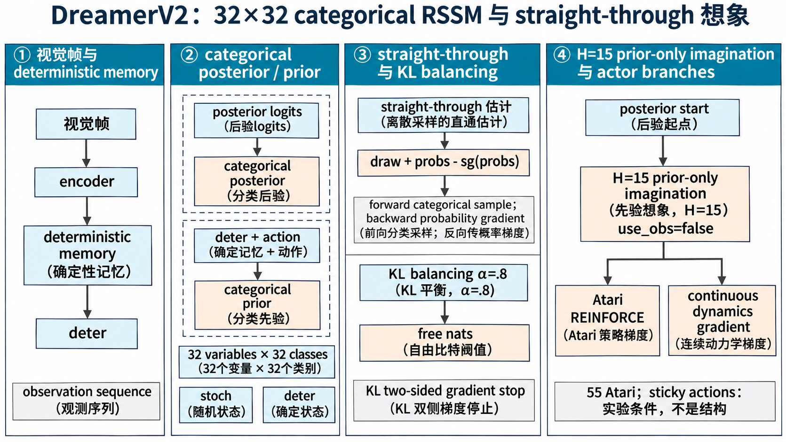
F08 DreamerV2 离散 RSSM 与 straight-through 详解
这张图回答 DreamerV2 如何把视觉世界模型的随机状态改成 32 个 categorical 变量、每个变量 32 个类别，并在离散采样不可导时用 straight-through estimator 训练。四个区域依次是视觉帧与 deterministic memory、离散 posterior/prior、straight-through 与 KL balancing、H=15 prior-only imagination 和 actor 分支；底部 55 Atari/sticky actions 只表示实验条件。
第一区的帧序列先经过 CNN encoder，GRU/deterministic memory 读取 h_{t-1},z_{t-1},a_{t-1} 更新 h_t。h_t 提供时间上下文，z_t 是离散随机状态；两者合起来仍是 RSSM state。不能把 V2 画成完全无记忆的 token transformer，也不能把底部 Atari 游戏数当作网络结构。
第二区并列画 posterior q(z_t|h_t,o_t) 与 prior p(z_t|h_t)。posterior 读取当前图像，prior 只依赖历史，用于 imagined rollout。每个 z_t 由 32 个变量组成，每个变量从 32 类分布采样，前向 one-hot 组合形成离散随机状态。这个结构和 V1 的连续 z 不同，离散状态可以减少视觉预测的平均化，但带来采样梯度问题。
第三区把 straight-through 和 KL balancing 分开。前向值是 one-hot 离散样本，反向借用概率的导数，论文 algos/st.tex 的三行伪代码为 one_hot(draw(logits))、softmax(logits)、sample+probs-stop_grad(probs)。KL balancing 也不是对称 KL：论文 algos/klbalancing.tex 明确为 α KL(sg(q)||p)+(1−α)KL(q||sg(p))，其中 α=.8 使 prior 追赶已知观测的 posterior 更快，另 .2 分支才调整 posterior。论文的 sections/modifications.tex 写明用 KL balancing 替代 free nats；固定实现虽然保留可配置 free threshold，但 configs.yaml 的 Atari 继承 defaults 为 kl.free=0.0，只有 DM Control 配置覆写为 1.0。不能把“free nats 开启”画成论文 Atari 主实验的必经机制。
第四区从真实序列起点开始 H=15 的 prior-only imagination。未来不读取图像，reward/value 在 imagined states 上估计。Atari 离散动作使用 REINFORCE 分支，连续控制使用 dynamics gradient 分支；这两个 actor 信号是配置条件分支，不应画成同时作用于所有任务。value model 独立训练，不能把 Atari actor 的 REINFORCE 与连续控制的 analytic gradient 合成一个统一公式。
底部 sticky actions 和 55 个 Atari 游戏是评测协议标签，不进入 RSSM、KL 或 imagination 拓扑。它提醒读者分开记录架构事实与实验条件。常见误读包括把 55 Atari 当成模型层数、把 32×32 当成输入图像尺寸、把 straight-through 当成真实可导离散采样、把 KL balancing 当作 ActorCritic 目标。图中的排除框明确 V3 symlog/two-hot、V4 transformer 和 PlaNet CEM 不在本图。
一个时间步的最小复述是：o_t 经 encoder 与 h_t 生成 posterior logits，采样 32×32 离散 z_t；prior 根据 h_t 预测下一分布；RSSM 更新 h；world model 用 reconstruction/reward、可选 discount 和 KL 学习；imagined trajectory 从 prior 展开 H=15；根据任务分支更新 actor/value。真实 replay 和 Atari 协议分别存放在数据与评估层，不能把它们当作同一损失。
这张图的直接论文证据是 sources/papers/2010.02193/tex/sections/method.tex 的 World Model Learning、algos/st.tex、algos/klbalancing.tex 与 sections/hparams.tex。固定源码支持 WorldModel.loss/imagine、ActorCritic.actor_loss/critic_loss 和 common/nets.py::kl_loss。V2 已有 slow target critic，不能用“没有目标价值网络”区分 V2/V3；本图排除的后代机制是 V3 的 symlog、two-hot 和 Dreamer4 的视频 transformer。
梯度、状态与实验条件的逐项边界
离散状态的前向路径和反向路径必须分开解释。forward 中 draw 是 one-hot 离散样本，后续 decoder、reward、可选 discount 和 actor 读取的是离散状态；backward 中 probs-sg(probs) 提供有偏代理梯度，不能把这条路径说成真实采样可微。common/dists.py::OneHotDist.sample 先调用 categorical sampling，再加上零值但有导数的概率差；common/nets.py::get_dist 用 Independent(OneHotDist,1) 将 32 个 categorical 变量组成事件。α=.8 是 prior/posterior 两条学习路径的平衡系数，不是类别数、学习率或 actor 权重。
H=15 是 imagined rollout 的长度，未来 z 由 prior 产生，不把未来观测送入模型。Atari REINFORCE 分支通过离散动作的 log-prob 和 return 学习，连续控制分支才使用 dynamics gradient；55 Atari 与 sticky actions 只属于论文评测协议，不能据此给 RSSM 增加一个 Atari-specific 模块。V2 的离散表示是为视觉状态和 Atari 稳定性服务，不能外推成 V3/V4 的所有环境统一配置。
最小误读例是把 32 variables × 32 classes 读成一个 32×32 图像，或把 KL balancing 画成 symmetric KL 的单条箭头。正确读法是每个变量输出 32-way logits，联合 state 由 32 个 one-hot 组成；prior/posterior 各自提供分布，KL 项分别按停止梯度方向加权。
与 V1、V3 的演化差异
V1 的核心视觉世界模型使用连续高斯 latent，V2 的变化是将随机 latent 本身换成 categorical，而不是首次让策略能够输出离散动作。V1 附录已经使用 straight-through 处理 Atari/DeepMind Lab 的动作采样；V2 进一步把 latent sampling 的代理梯度与可选择的 REINFORCE/dynamics actor 目标分开。V3 才把输入和目标的数值尺度、reward/value two-hot、return percentile 和优化器组合统一起来；这些机制不能回填到 V2。
代码阅读入口与限制
代码核对应从 common/nets.py::RSSM.observe/img_step/kl_loss、agent.py::WorldModel.loss/imagine 和 ActorCritic.actor_loss/critic_loss 依次追踪；需要分别确认停止梯度、prior/posterior 条件、可选 discount 以及 continuous/discrete actor 分支。固定源码中 WorldModel.__init__ 只有 config.pred_discount 为真时建立 discount head，WorldModel.imagine 才将它转成 sequence weight；因此 continue 不能被写成无条件结构。
图中每个离散网格都对应类别概率，不是像素。
这些边界决定 V2 的正确拓扑。
不能把它与 V3 归一化混淆。
也不能把 55 个游戏当作结构层。
固定实现中的离散状态与 KL 路径
F08 的 32×32 必须读成“32 个 categorical 变量，每个变量 32 个类别”，不是 32×32 图像。CNN encoder 和 deterministic memory 先得到 h_t，posterior q(z_t|h_t,o_t) 与 prior p(z_t|h_t) 各自产生 32-way logits；前向采样得到 32 个 one-hot，拼成离散 stochastic state。V2 的视觉优势来自状态分布能够表达多模态，而不是把连续像素直接量化成一个二维网格。
straight-through 的前向值是离散 draw，反向使用概率代理梯度。固定 common/nets.py::kl_loss 在 forward=False 时设 lhs=post,rhs=prior,mix=1-balance，因此 .2 KL(q||sg(p))+.8 KL(sg(q)||p) 与论文伪代码方向一致；free_avg 只控制可选阈值施加在 batch 均值还是单样本上，Atari 的 free=0 使该阈值不截去 KL 学习压力。KL 的停止梯度方向和 categorical 采样的 straight-through 是两种独立计算，不能用一根“可导”箭头替代。
真实序列完成 posterior filtering 后，H=15 的想象只从 prior 展开，不读取未来图像。reward、可选 discount 和 value head 在 imagined states 上产生目标，动作分支再根据离散或连续动作空间选择 REINFORCE 或 dynamics gradient，详见 F09。55 Atari 和 sticky actions 只属于评测协议，不能接入 RSSM、KL 或 imagination 的结构箭头。论文与实现依据是 03_anchor_reading/papers/2010.02193-dreamerv2.md 和 sources/repos/dreamerv2 固定提交的 dreamerv2/agent.py。
类别轴和特征轴也不同：32 个 one-hot 各宽 32，flatten 后得到长度 1024、恰有 32 个激活位的稀疏向量；get_feat 再将它与 deterministic state 拼接。Atari 配置的 deterministic 宽度是 600，固定 defaults 是 1024，DM Control 配置是 200，因此不能把 32×32、H=15 和 hidden width 写成同一维度。WorldModel.imagine 将 replay 的 batch/time 两轴 flatten 为起点批量，再堆叠 horizon+1 状态；最前状态来自 replay，后续才由 prior 产生。
直接来源定位
论文源文为 sources/papers/2010.02193/tex/sections/method.tex:16-67（表示、预测头、ELBO、KL balancing）、algos/st.tex 与 algos/klbalancing.tex（实际自动微分写法）、sections/modifications.tex:9-10（替换 free nats），sections/hparams.tex:16-20（32 类和 α）。代码基址为 sources/repos/dreamerv2/snapshot/dreamerv2-07d906e9c4322c6fc2cd6ed23e247ccd6b7c8c41/：其下 dreamerv2/common/nets.py::initial/get_feat/get_dist/obs_step/img_step/kl_loss、common/dists.py::OneHotDist.sample、agent.py::WorldModel.loss/imagine 与 configs.yaml:39-64,81-101,118-136 分别对应状态、采样、想象和配置条件。
r4 离散状态、直通采样与 KL 平衡复核
F08 的 32×32 必须读成“32 个 categorical 变量，每个变量 32 个类别”，不是 32×32 图像。CNN encoder 和 deterministic memory 先得到 h_t，posterior q(z_t|h_t,o_t) 与 prior p(z_t|h_t) 各自产生 32-way logits；前向采样得到 32 个 one-hot，拼成离散 stochastic state。V2 的视觉优势来自状态分布能够表达多模态，而不是把连续像素直接量化成一个二维网格。
straight-through 的前向值是离散 draw，反向使用概率代理梯度，常见写法为 draw + probs - sg(probs)。因此图中应同时画“离散前向”和“代理反向”两条语义，不能说采样本身真正可导。KL balancing 的 α=.8 需拆成 prior cross-entropy 与 posterior entropy 的不同停止梯度方向；free nats 是小 KL 区域的数值稳定阈值，既不是类别数，也不是 actor loss 权重。
真实序列完成 posterior filtering 后，H=15 的想象只从 prior 展开，不读取未来图像。reward、continue 和 value head 在 imagined states 上产生目标，动作分支再根据离散或连续动作空间选择 REINFORCE 或 dynamics gradient，详见 F09。55 Atari 和 sticky actions 只属于评测协议，不能接入 RSSM、KL 或 imagination 的结构箭头。论文与实现依据是 03_anchor_reading/papers/2010.02193-dreamerv2.md 和 sources/repos/dreamerv2 固定提交的 dreamerv2/agent.py。
读图时应核对类别轴、时间轴、观测可见性和梯度方向四件事。若把 one-hot 网格画成像素，或把 KL balancing 与 straight-through 合成一条损失，就会丢失 V2 的核心设计。V3 的 symlog/two-hot、V1 的连续 latent 和 Dreamer4 的连续 tokenizer 都不属于此图；发现图稿混入这些元素，应记录到 root 的独立问题表。
方法组件与数据流
每个 stochastic state 包含 32 个 categorical variables，每个变量有 32 类，抽样后的 one-hot 组合与 deterministic GRU state 拼接。posterior 读取当前图像 embedding，prior 只读取历史和动作；decoder、reward 和 continuation heads 仍然给训练信号。straight-through estimator 前向使用抽样的离散 sample，反向把 softmax 概率梯度传回相应路径。KL balancing 通过 stop-gradient 分开 prior 与 posterior 的梯度方向；V2 的方法总结明确写它用于鼓励准确 temporal prior，而不是把 free nats 作为同一机制。
D1 Mastering Atari with Discrete World Models 数据流
CNN embedding 与历史更新 deterministic state，再形成含 32 个 categorical variables、每个 32 类的 posterior。prior 不读取当前图像。前向采样 one-hot，反向采用概率的 straight-through 代理导数；image/reward/可选 discount 训练 WorldModel，ActorCritic 则消费想象特征和 λ-return。Atari 的 REINFORCE 路径与连续动作的 dynamics 路径分别核对。
核对来源：dreamerv2/agent.py（L20-209,252-332）；dreamerv2/common/dists.py（L49-63）；dreamerv2/common/nets.py（L146-180）；dreamerv2/configs.yaml（此附件保存在完整本地归档中）（L39-64,81-101,118-136）。
方法组件与数据流
每个 stochastic state 包含 32 个 categorical variables，每个变量 32 类；采样后的 32 个 one-hot 与 deterministic GRU state 拼接。posterior 读取当前图像 embedding，prior 只读取历史和动作；image、reward、discount predictor 提供训练信号，固定实现按 pred_discount 条件建立 discount head。straight-through 前向使用离散样本，反向使用 softmax probabilities 的有偏代理导数；它允许沿离散 latent 计算行为导数，不表示行为损失更新世界模型参数。KL balancing 的实际方向是 α KL(sg(q)||p)+(1−α)KL(q||sg(p))，α=.8 优先训练 prior。论文的修改表把 KL balancing 作为替代 free nats 的机制；源码虽保留 free 阈值，但 Atari defaults 为0，DM Control配置可为1。不能说“free nats 防止小 KL 让模型忽略随机状态”并将它画成所有 V2 实验的必经机制。每个输出的消费方、forward sample 与 backward surrogate、world-model训练与行为更新参数范围都需独立解释；未报告维度、初始化和随机种子继续保留 来源未报告。
动力学、训练目标与梯度方向
沿时间顺序区分观测校正与开环预测，再检查各项损失作用的对象和停止梯度的位置。目标的存在、配置是否启用与参数是否更新需要分别判断。
公式、损失与直觉
离散潜变量的 KL 仍以分类分布计算；world-model 的前向抽样与反向 straight-through 由 Algorithm 1 给出：sample = one_hot(draw(logits))，probs = softmax(logits)，sample = sample + probs - stop_grad(probs)。因此前向是从 logits 抽样，反向才借用 softmax 概率梯度；不能写成 one_hot(argmax q)。
KL balancing 可抽象为：
第一项主要训练 prior 追 posterior，第二项主要训练 posterior 不脱离 prior；sg 表示 stop-gradient。 公式的直觉是把表示学习、未来预测和行为目标接在同一时间轴上。一个好的模型即使重建清晰，也可能在奖励相关因素上失真；因此要把 observation loss、reward/value loss、KL/regularization 和 policy objective 分开解释。
离散潜变量的 KL 仍以分类分布计算，但行为梯度使用 straight-through 近似：
actor/critic目标与时间轴
假设 imagined start flatten 后有 M=8 行、H=15，WorldModel.imagine 的 state/action 时间轴是16。Actor loss 消费 feat[:-2]，action 对齐 action[1:-1]，critic 消费 feat[:-1]，target 由 reward/value/discount 的 lambda-return 和最后 value bootstrap 形成。三种 actor_grad（dynamics、reinforce、both）改变的是 policy 梯度来源；critic target 通过 tf.stop_gradient 固定监督目标。slow target 周期更新属于 critic 稳定化，非 RSSM posterior 更新。
is_first 在 RSSM.obs_step 清除对应状态行；is_terminal 在 imagination 第一 discount 上覆盖真实 continue；后续 discount 由模型 head 预测，权重用 cumprod 对齐下一个状态。真实 replay 序列、posterior state 与 imagined sequence 不能混成“同一条环境轨迹”。
行为、想象与真实环境闭环
从当前状态出发追踪动作怎样产生、未来怎样展开、回报怎样被消费。模型内候选或想象轨迹不是已经在环境中执行的路径。
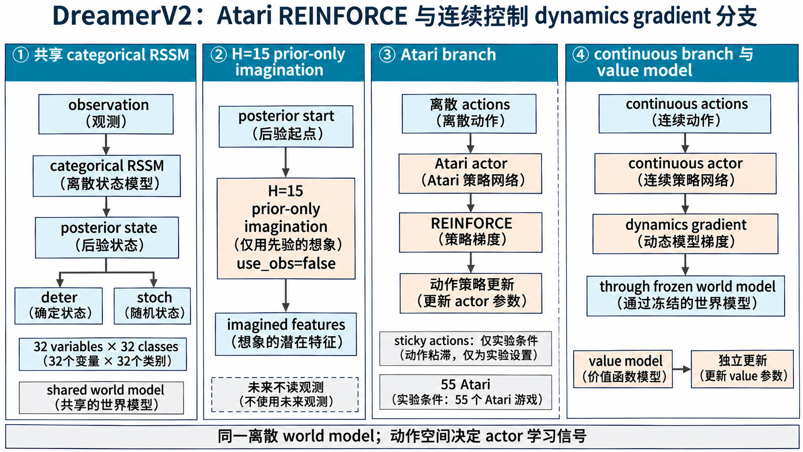
F09 DreamerV2 Atari 与连续控制 actor 分支详解
这张图回答一个限定问题：在同一个 DreamerV2 离散 world model 中，离散 Atari 动作和连续控制动作分别沿哪条 actor 学习信号更新。图中把共享的 categorical RSSM、H=15 的 prior-only imagination、两条互不合并的 actor 分支和独立 value model 放在同一张结构图中；sticky actions 与 Atari 数量只作为实验条件，不能被读成网络层或梯度模块。
顶部共享模块是 categorical RSSM。观测和动作先进入共享的离散世界模型，随机状态由 32 个 categorical 变量构成，每个变量有 32 个类别；本图不重复展开离散采样、straight-through 和 KL balancing，那些细节已经由 F08 单独承担。这里的共享含义是两种动作空间使用同一套动力学参数和同一类离散状态表示，而不是说两种 actor 共享完全相同的优化器或梯度公式。
从 RSSM 到 H=15 prior-only imagination 的箭头表示 imagined trajectory 在未来只由 prior 推进，不把真实未来观测重新喂入。H=15 是 DreamerV2 的想象长度；它是 rollout 的时间范围，不是类别数、网络深度或 Atari 游戏数量。两条 actor 分支都读取这段 imagined trajectory 产生的回报和优势，但分支选择由动作空间决定。value model 在下方单独更新，用 imagined returns 或 targets 拟合价值，不决定两种 actor 采用哪种梯度。
左侧橙色 Atari branch 对应离散 action。离散动作不能沿连续动作值直接对动力学求导，因此代码分支使用 REINFORCE：用离散动作的 log-probability 与 imagined return/advantage 构成策略梯度。图中“离散 actions → REINFORCE”是条件映射，不能把它解释成所有任务都采用的通用 actor loss。sticky actions 仅是 Atari 评测环境中的动作粘滞条件，它影响实验协议和行为执行，不是 REINFORCE 的额外网络层。
右侧绿色 continuous branch 对应连续动作。连续动作可以沿冻结的 world model 进行 dynamics backpropagation，actor 通过 imagined reward/value 对连续动作的解析梯度更新。图中明确写出 world model 冻结，表示更新 actor 时动力学参数不被这条 actor 梯度改变；冻结的是用于求导的世界模型参数，value model 仍有自己的独立训练步骤。不能把这条连续梯度路径和左侧 REINFORCE 箭头合并成一个无条件的 actor 更新。
底部 value model 独立更新是拓扑边界。它从 imagined returns/targets 学习价值估计，为两条分支提供回报或优势所需的信号；它不是 Atari 专属模块，也不是连续控制 actor 的 world model 本身。图中的箭头只表达 value 的独立拟合关系，不能读成真实环境直接把 observation 送入 critic 再绕过 imagination。真实 replay、环境执行和数据写回属于生命周期图 F16，本图只保留 actor 信号选择。
一个最小时间步例子是：共享 RSSM 从 replay 起点展开 H=15 的 prior trajectory；若配置是 Atari 离散动作，策略输出离散 action logits，REINFORCE 用 log π(a_t|s_t) 与 return/advantage 更新 actor；若配置是连续控制，策略输出连续 action，梯度穿过冻结的 dynamics 得到 actor 更新；value model 同时以 imagined targets 独立回归。两种动作空间共用 world model，但 actor 的反向路径不同。
这张图与 F08 的关系是“分支选择”与“离散表示”的分工。F08 解释 32×32 categorical state、straight-through、KL balancing、free nats 和 prior-only imagination；F09 只解释离散/连续动作如何选择 actor 学习信号。与 DreamerV1 相比，V1 的连续动作可直接使用 analytic dynamics gradient；V2 为 Atari 离散动作补上 REINFORCE 分支。与 DreamerV3 和 Dreamer4 相比，本图不引入 symlog/two-hot、return percentile、tokenizer 或 block-causal transformer。
图稿检查清单交由 root 独立复核：共享离散 world model、prior-only imagination、Atari/连续控制分支、value 独立更新、REINFORCE、dynamics gradient、冻结边界、H=15、sticky actions、箭头是否错误汇合及风格一致性。此处不宣称图片已通过。
证据边界来自 DreamerV2 论文、S004 代码 crosswalk 与当前任务事实合同。论文和代码支持离散 Atari 使用 REINFORCE、连续控制使用 dynamics gradient 的分支语义；本图不把 55 个 Atari 环境画成结构，也不声称第三方实现覆盖作者全部训练细节。任何未由固定版本论文或代码确认的实现差异仍应在正文代码章节中标为未核验，而不能从图的布局推断出来。
代码阅读与停止梯度边界
阅读代码时先定位 ActorCritic 的 action distribution 分支，再分别追踪 discrete policy loss 和 continuous dynamics loss。共享 RSSM 的 rollout 只提供状态与预测目标；actor 更新不应反向改写已经冻结的 world model。value 的 optimizer 与 actor 的 optimizer 分开，value target 的 stop-gradient 方向也不能被简化成 actor 的 REINFORCE 公式。图稿把这些边界压缩成短标签，完整的函数名、文件路径和行号保留在 canonical code crosswalk。
常见误读与反例
反例一是把 continuous branch 的 dynamics gradient 接到离散 Atari logits 上；离散动作没有连续值导数，正确分支是 REINFORCE。反例二是把 sticky actions 画成 RSSM 层；它只是实验协议。反例三是让 Atari 与 continuous 两条箭头汇合成“统一 actor 梯度”；这样会丢失 DreamerV2 针对动作空间的关键条件。反例四是把 H=15 当成 15 个 world model，或把 value model 独立更新误画成真实环境直接训练 critic。
因此，这张图的读法必须先看共享状态，再看动作空间条件，最后看梯度路径和 value 的独立边界。只要保留“离散动作空间 → REINFORCE；连续动作空间 → frozen world model 上的 dynamics gradient”这条映射，就不会把 DreamerV2 的两个 actor 学习机制混为一谈。
r4 Atari 与连续动作分支复核
F09 先固定共享部分，再解释动作空间条件。两种分支都从 categorical RSSM 的 posterior 起点展开 H=15 prior-only imagination，共用 world-model 的离散状态和 reward/discount 预测；共享只表示动力学接口相同，不表示 actor loss、动作分布或 optimizer 相同。value model 独立拟合 imagined target，为两条分支提供 return 或 advantage。
Atari 分支的动作是离散类别，代码在 ActorCritic.actor_loss 中使用 log-probability 与 return/advantage 的 REINFORCE 信号，无法把离散 logits 当成连续动作去求 dynamics derivative。连续控制分支输出连续 action，可在冻结 world model 上计算 dynamics gradient；这条梯度到达 actor 参数，不更新 RSSM。图中两条箭头应保持分叉，汇合只发生在共享的 imagined state 或 value target，不发生在 actor 梯度上。
sticky actions 是 Atari 环境执行协议，55 Atari 是论文评测集合，二者都不改变 RSSM 层数或分支结构。dreamerv2/agent.py::WorldModel.imagine 负责从 replay posterior 展开 imagined state，ActorCritic.actor_loss/critic_loss 负责分支损失和停止梯度；README 的 MiniGrid、Atari、DM Control 命令是实现入口，不是论文分数的独立复现证据。代码与论文的对应关系按固定 commit 标为 evidence-aligned。
最小反例是把连续 branch 的 dynamics gradient 接到 Atari logits：离散动作没有连续值导数，正确路径应是 REINFORCE。另一个反例是把 value model 画成真实 observation 的直接监督器；V2 的这张图只表达 imagined target。F09 与 F08 的边界是“如何采样离散 state”对“如何选择 actor 信号”，与 F16 的边界是本图不承担 replay 写回。
数据与控制流
领域关键执行基底是 discrete latent imagination loop：Atari 图像被编码为 categorical RSSM 状态，世界模型与 actor-critic 分开训练，想象轨迹只在潜空间展开。 真实输入、状态更新、未来展开、目标计算和环境调用必须按时间顺序分开。
D2 Mastering Atari with Discrete World Models 训练与推理顺序
Agent.train 先调用 WorldModel.train，得到真实序列的 posterior 与模型指标，再把后验起点交给 ActorCritic.train。WorldModel.imagine 在 prior 中循环动作、状态与特征，ActorCritic.target 生成 λ-return，actor_loss 按 actor_grad 分支学习，critic_loss 拟合停止梯度的目标，最后更新慢价值参数。真实环境交互由 Agent.policy 另行执行。
核对来源：dreamerv2/agent.py（L20-209,252-332）；dreamerv2/common/dists.py（L49-63）；dreamerv2/common/nets.py（L146-180）；dreamerv2/configs.yaml（此附件保存在完整本地归档中）（L39-64,81-101,118-136）。
从数据到行为的完整执行基底
Atari 图像被编码为 categorical RSSM 状态，世界模型与 actor-critic 分开训练，想象轨迹只在潜空间展开。
贯穿实例、形状与时间对齐
用短序列和可以手算的数字核对抽象机制。这里的教学实例明确区别于论文实验值，也不冒充目标框架的运行结果。
算法流程与具体 逐步计算实例
world model 从 Atari 图像、动作、reward 和 discount 序列更新；训练 actor-critic 时从 posterior flatten 起点开始，加入零动作对齐时间，之后反复调用 policy、RSSM imagination step 和 feature。imagined sequence 产生 discount weight、reward 和 target critic value。式(6)的 actor 梯度按任务分支设置：Atari 使用纯 REINFORCE（ρ=1，η=10^-3），连续控制使用纯 dynamics backpropagation（ρ=0，η=10^-4）；混合项是通用公式中的可选形式，不应写成两类任务的共同默认。
真实交互阶段，actor 直接输出当前环境动作，不运行 PlaNet 式每步在线 CEM。行为学习把 H=15 的短 prior-only imagination 大量重复：论文报告 200M frames 期间想象约 468B compact states，而 action repeat 后实际输入约 50M，说明模型内训练量可远大于真实交互量；这不是单条想象轨迹具有 468B 步，也不构成长程预测始终准确的证据。
world model 从 Atari 图像、动作、reward 和 discount 序列更新；训练 actor-critic 时从 posterior flatten 起点开始，加入零动作对齐时间，之后反复调用 policy、RSSM imagination step 和 feature。imagined sequence 产生 discount weight、reward 和 target critic value，actor 可选 dynamics gradient、reinforce 或两者。真实 actor 直接输出环境动作，不运行 PlaNet 式在线 CEM。Horizon=15 的短想象被大量重复，论文报告 200M frames 期间可产生远多于真实输入的 compact imagined states。 对一个最小序列 walkthrough：给定起始观测和动作，先得到表示，再更新模型状态；若处于 imagination，则跳过真实观测，使用 prior/dynamics 产生下一状态；价值/奖励头把这段序列变成训练目标；只有在线论文才把最新真实观测写回 replay。这个 walkthrough 也是后续代码问题台账的输入。
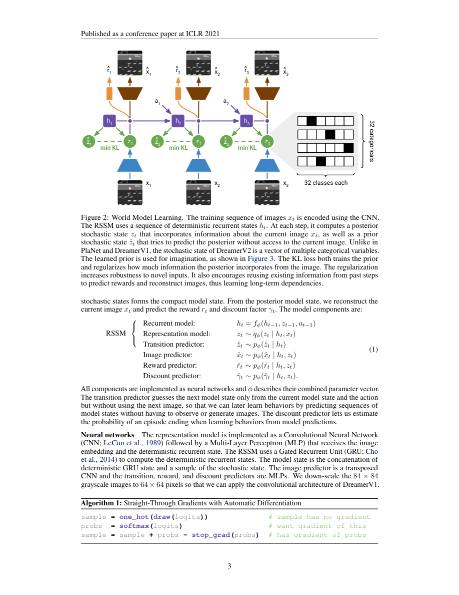
Figure 2: World Model Learning. The training sequence of images xt is encoded using the CNN. The RSSM uses a sequence of deterministic recurrent states ht. At each step, it computes a posterior stochastic state zt that incorporates information about the current image xt, as well as a prior stochastic state ˆzt that tries to predict the posterior without access to the current image. Unlike in PlaNet and DreamerV1, the stochastic state of DreamerV2 is a vector of multiple categorical variables. The learned prior is used for imagination, as shown in Figure 3. The KL loss both trains the prior and regularizes how much information the posterior incorporates from the image. The regularization increases robustness to novel inputs. It also encourages reusing existing information from past steps to predict rewards and reconstruct images, thus learning long-term dependencies.
选择理由
方法图直接把 posterior 与 prior 的信息边界、确定性 h、动作、重建/奖励头和 32×32 categorical 状态放在一张原文图中；它是纠正“argmax”误读及区分表示梯度与动力学预测的最短证据链。
图表说明
图中每个时间步从底部图像 x_t 经 CNN 编码，蓝色编码器产生当前图像可见的 posterior z_t；紫色 h_t 由 RSSM 递推并沿时间传递，动作 a_t 进入下一步状态。绿色先验 ẑ_t 不读取当前图像，只根据历史状态和动作预测 posterior；上方棕色解码器重建 x̂_t，橙色头预测 r̂_t。右侧展开的随机状态由 32 个 categorical 变量构成，每个变量 32 类，黑色方格表示抽到的 one-hot 类别。绿色 min KL 标出先验与 posterior 的约束位置。图旁 Algorithm 1 的 draw(logits) 说明前向是抽样，sample + probs - stop_grad(probs) 只在反向借用概率梯度，因此不能替换为 argmax。
进一步分析
这张图支持三层判断：posterior 是训练时可看 x_t 的表示模型，prior 是 imagination 时可用的 transition predictor；离散状态的类别轴是概率分布的参数化，不是预先命名的物体语义；KL 同时服务于先验预测和 posterior 正则，图中 min KL 不能被读成单向的 free-nats 截断。结合正文式(2)和 Algorithm 2，V2 的 KL balancing 通过 stop-gradient 分开 prior 与 posterior 的梯度贡献；actor 的 dynamics gradient 又是行为学习阶段的另一条梯度路径，不能把两者合写成同一个 ST 机制。读图时还要把颜色和箭头的含义分开：紫色水平箭头是时间递推，绿色箭头把 posterior 与 prior 的 KL 约束连接到同一时间步，棕色向上路径是重建/预测头的消费关系。prior 的“看不到当前图像”是训练目标的因果边界，不是说训练批次里没有图像；posterior 仍由真实图像提供信息，随后 KL 迫使 prior 在没有图像时复现可用状态。这个边界解释了为什么 imagination 可以跳过 decoder，却不能把 prior 当作已经观测到未来画面的 oracle。
证据边界
图只展示数据流和状态结构，不给出每类语义、随机种子、完整 loss reduction 或真实部署时的缓存细节。图中 categorical 数量和类别数可直接核验；抽样/ST 需同时读取 PDF p.3 Algorithm 1。KL balancing 的 α=.8 与 Atari/连续控制的 β 需回到 PDF p.4 正文和 TeX，不能只从图形位置推断。
固定源码入口：sources/repos/dreamerv2/snapshot/dreamerv2-07d906e9c4322c6fc2cd6ed23e247ccd6b7c8c41；commit=07d906e9c4322c6fc2cd6ed23e247ccd6b7c8c41
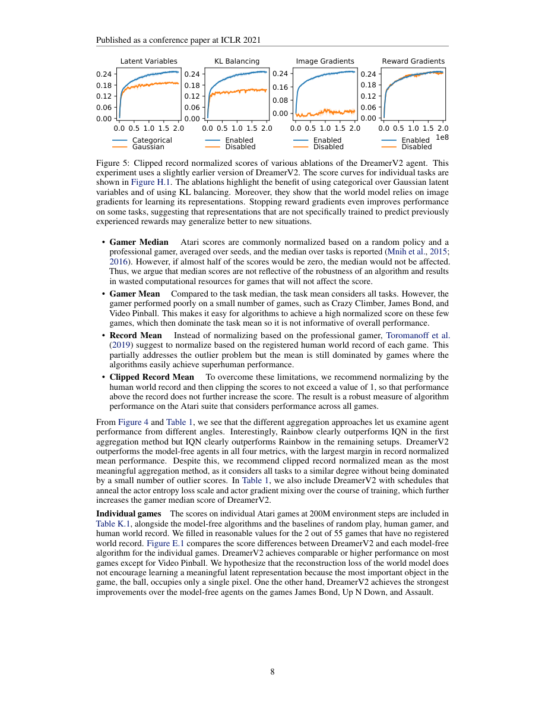
Figure 5: Clipped record normalized scores of various ablations of the DreamerV2 agent. This experiment uses a slightly earlier version of DreamerV2. The score curves for individual tasks are shown in Figure H.1. The ablations highlight the benefit of using categorical over Gaussian latent variables and of using KL balancing. Moreover, they show that the world model relies on image gradients for learning its representations. Stopping reward gradients even improves performance on some tasks, suggesting that representations that are not specifically trained to predict previously experienced rewards may generalize better to new situations.
选择理由
四联消融同时覆盖 categorical latent、KL balancing、image gradients 与 reward gradients，正好检验 V2 两个核心改动及表示学习信号，且原图与 Table 2 的数值结论相互支撑。
图表说明
四个小面板横轴均为训练帧数，刻度 0、0.5、1.0、1.5、2.0，右端标注约 2×10^8；纵轴为 clipped record normalized score，范围按面板约 0–0.24。第一面板比较 categorical（蓝）和 Gaussian（橙）；第二面板比较启用/停用 KL balancing；第三面板比较 image gradients enabled/disabled；第四面板比较 reward gradients enabled/disabled。曲线是跨任务聚合的训练趋势，蓝线在前三个关键对照中明显更高；第四面板两条曲线接近，停用 reward gradients 在部分区间并未损害聚合分数。
进一步分析
原文把该实验限定为略早版本的 DreamerV2，单任务曲线移到 Figure H.1，因此不能把它当作与 Table 1 同一构建的逐项因果估计。它支持 categorical 与 KL balancing 的经验收益，也支持 image reconstruction 梯度是主要表示信号；reward head 仍可训练，只是可停止其进入 model state 的梯度，不能解释为删除 reward prediction。Figure 5 的平滑上升表示聚合性能随训练增加，并不说明每款 Atari 游戏都同步改善；正文 Sec.3.2 的 42/8/5 与 44/6/5 任务胜负统计才是更具体的离散证据。四个面板的纵轴虽相同，面板之间仍不能按曲线终点做精确的组件排名，因为聚合分数受任务分布和归一化协议影响。应把图与 Table 2 一起读：Table 2 给出 200M frames 的 gamer median、gamer mean、record mean 和 clipped record mean，图则展示随训练的平均趋势。消融只移除一个部分，但早版本、两 seed 和多种聚合会留下不确定性；因此这里的“贡献”是跨任务的经验必要性线索，不能升级成表示优势的充分理论。
证据边界
纵轴是四种聚合协议之一的 clipped record normalized score，不是原始回报或单局成功率；两条线的视觉间距不能替代 Table 2 的数值。图注明确说略早版本、单任务在附录，且没有置信区间、每任务方差或完整配对统计，不能据此声称每个组件具有独立充分性。
固定源码入口：sources/repos/dreamerv2/snapshot/dreamerv2-07d906e9c4322c6fc2cd6ed23e247ccd6b7c8c41；commit=07d906e9c4322c6fc2cd6ed23e247ccd6b7c8c41
源码架构、调用链与实现差异
先看执行入口与模块责任，再追踪公式落到哪个固定文件和函数。源码事实解释当前实现，不能反向补写论文没有报告的实验设置。
代码中的 world model 和 imagined actor-critic
danijar/dreamerv2@07d906e9c4322c6fc2cd6ed23e247ccd6b7c8c41 的 dreamerv2/agent.py 将 Agent.policy、Agent.train、WorldModel.loss、WorldModel.imagine 和 ActorCritic.train 串成完整流程。WorldModel.loss 先 preprocess 图像、reward 和 discount，再 encoder、rssm.observe，计算 kl_loss 和 decoder/reward/discount likelihood。WorldModel.imagine 从 replay posterior flatten 起点，先加入一个零动作，然后循环 policy(sample) -> rssm.img_step -> feature，最后生成 discount/weight。
ActorCritic.actor_loss 截掉 imagined sequence 的起点和最后两个位置，对 dynamics、reinforce 或 both 三种 actor_grad 分支分别使用 target 或 log-prob advantage；critic_loss 以 target critic 的 λ-return 为监督，target() 使用 slow critic 作为 bootstrap。代码注释精确列出 states、actions、targets、weights 的时间错位，这些位置关系不能只用“沿时间展开”概括。
代码来源边界
作者仓库固定提交用于静态证据；README/score 文件不能证明论文所有表格由该提交生成。
categorical RSSM / z∈{onehot(1),...,onehot(32)}^{32}
论文定位：Sec. 2.1。
实现核对：sources/repos/dreamerv2/snapshot/dreamerv2-07d906e9c4322c6fc2cd6ed23e247ccd6b7c8c41/dreamerv2/agent.py:58-176 WorldModel.train,WorldModel.loss,WorldModel.imagine
结论边界：固定实现是 danijar/dreamerv2@07d906e9c4322c6fc2cd6ed23e247ccd6b7c8c41。Atari 与连续控制可覆盖不同配置；仓库内分支或 score 文件不能单独证明论文实验启用了它。
核对来源：dreamerv2/agent.py（L20-209,252-332）；dreamerv2/common/dists.py（L49-63）；dreamerv2/common/nets.py（L146-180）；dreamerv2/configs.yaml（此附件保存在完整本地归档中）（L39-64,81-101,118-136）。
straight-through and KL balance / L_KL=α KL(sg(q)||p)+(1-α)KL(q||sg(p))
论文定位：Sec. 2.2。
实现核对：sources/repos/dreamerv2/snapshot/dreamerv2-07d906e9c4322c6fc2cd6ed23e247ccd6b7c8c41/dreamerv2/common/nets.py:129-180 EnsembleRSSM._suff_stats_layer,EnsembleRSSM.kl_loss; sources/repos/dreamerv2/snapshot/dreamerv2-07d906e9c4322c6fc2cd6ed23e247ccd6b7c8c41/dreamerv2/common/dists.py:49-69 OneHotDist,OneHotDist.sample; sources/repos/dreamerv2/snapshot/dreamerv2-07d906e9c4322c6fc2cd6ed23e247ccd6b7c8c41/dreamerv2/agent.py:105-134 WorldModel.loss
结论边界：固定实现是 danijar/dreamerv2@07d906e9c4322c6fc2cd6ed23e247ccd6b7c8c41。Atari 与连续控制可覆盖不同配置；仓库内分支或 score 文件不能单独证明论文实验启用了它。
核对来源：dreamerv2/agent.py（L20-209,252-332）；dreamerv2/common/dists.py（L49-63）；dreamerv2/common/nets.py（L146-180）；dreamerv2/configs.yaml（此附件保存在完整本地归档中）（L39-64,81-101,118-136）。
imagined actor-critic / R_t^λ
论文定位：Sec. 2.3。
实现核对：sources/repos/dreamerv2/snapshot/dreamerv2-07d906e9c4322c6fc2cd6ed23e247ccd6b7c8c41/dreamerv2/agent.py:136-164 WorldModel.imagine; sources/repos/dreamerv2/snapshot/dreamerv2-07d906e9c4322c6fc2cd6ed23e247ccd6b7c8c41/dreamerv2/agent.py:229-325 ActorCritic.train,ActorCritic.actor_loss,ActorCritic.critic_loss,ActorCritic.target
结论边界：固定实现是 danijar/dreamerv2@07d906e9c4322c6fc2cd6ed23e247ccd6b7c8c41。Atari 与连续控制可覆盖不同配置；仓库内分支或 score 文件不能单独证明论文实验启用了它。
核对来源：dreamerv2/agent.py（L20-209,252-332）；dreamerv2/common/dists.py（L49-63）；dreamerv2/common/nets.py（L146-180）；dreamerv2/configs.yaml（此附件保存在完整本地归档中）（L39-64,81-101,118-136）。
Mastering Atari with Discrete World Models：实现遗漏与证据边界
论文表格与固定提交运行的一一对应关系的证据边界
论文说明：论文报告了任务、预算和结果。 固定材料只能说明：固定提交或来源边界不能证明该表格由此版本生成。 因此，只能标记 与证据静态对应，不能宣称复现。（作者仓库固定提交用于静态证据；README/score 文件不能证明论文所有表格由该提交生成。）
核对来源：dreamerv2/agent.py（L20-209,252-332）；dreamerv2/common/dists.py（L49-63）；dreamerv2/common/nets.py（L146-180）；dreamerv2/configs.yaml（此附件保存在完整本地归档中）（L39-64,81-101,118-136）。
随机种子与结果聚合的证据边界
论文说明：部分图表给出均值/标准差或多次运行。 固定材料只能说明：静态阅读未执行训练，也未加载 checkpoint。 因此，结果数字只来自论文原页。（sources/papers/2010.02193/2010.02193v4.pdf）
核对来源：dreamerv2/agent.py（L20-209,252-332）；dreamerv2/common/dists.py（L49-63）；dreamerv2/common/nets.py（L146-180）；dreamerv2/configs.yaml（此附件保存在完整本地归档中）（L39-64,81-101,118-136）。
运行环境与依赖的证据边界
论文说明：论文给出算法和实验协议。 固定材料只能说明：本任务不安装目标仓库依赖、不运行 GPU/TF/JAX。 因此，运行时行为保持未验证。（本报告的范围是静态论文与源码分析）
核对来源：dreamerv2/agent.py（L20-209,252-332）；dreamerv2/common/dists.py（L49-63）；dreamerv2/common/nets.py（L146-180）；dreamerv2/configs.yaml（此附件保存在完整本地归档中）（L39-64,81-101,118-136）。
数据、时间与行为的顺序
真实观测或视频先进入表示编码器，得到状态或 token；动力学再在动作条件下预测后续状态。训练时真实序列提供监督，未来规划或想象分支则沿自身状态向前推进。任务头和行为模块各消费相应特征；不同论文是否预测 reward、discount 或 value 必须以本篇机制与配置为准。动作只有被交给环境时才成为真实交互，候选动作与想象动作保留在模型内部。
模块责任与证据层次
原始关系图将论文机制、固定代码事实、证据支持的解释和真实来源边界分开。节点之间的联系表达映射责任，而不是证明模块在某次论文实验中必然启用。没有官方实现时，连接停在论文级接口；后续实现或第三方仓库只能以它们自己的身份出现。
Mastering Atari with Discrete World Models：方法级修改边界（只读解释）
理解或替换 categorical RSSM需要保持什么
不执行修改；先保持输入输出契约，再比较梯度、状态和下游消费。 必须检查表示形状、时间对齐、目标 stop-gradient、来源边界。
涉及的实现接口：sources/repos/dreamerv2/snapshot/dreamerv2-07d906e9c4322c6fc2cd6ed23e247ccd6b7c8c41/dreamerv2/agent.py::WorldModel.train,WorldModel.loss,WorldModel.imagine。
阅读时应沿调用者回到被调函数，核对状态形状、时间对齐、目标停止梯度和下游消费；这一检查只证明静态接口一致，没有训练或性能复现结果。
核对来源：dreamerv2/agent.py（L20-209,252-332）；dreamerv2/common/dists.py（L49-63）；dreamerv2/common/nets.py（L146-180）；dreamerv2/configs.yaml（此附件保存在完整本地归档中）（L39-64,81-101,118-136）。
理解或替换 straight-through and KL balance需要保持什么
不执行修改；先保持输入输出契约，再比较梯度、状态和下游消费。 必须检查表示形状、时间对齐、目标 stop-gradient、来源边界。
涉及的实现接口：sources/repos/dreamerv2/snapshot/dreamerv2-07d906e9c4322c6fc2cd6ed23e247ccd6b7c8c41/dreamerv2/agent.py::ActorCritic.train,actor_loss,critic_loss。
阅读时应沿调用者回到被调函数，核对状态形状、时间对齐、目标停止梯度和下游消费；这一检查只证明静态接口一致，没有训练或性能复现结果。
核对来源：dreamerv2/agent.py（L20-209,252-332）；dreamerv2/common/dists.py（L49-63）；dreamerv2/common/nets.py（L146-180）；dreamerv2/configs.yaml（此附件保存在完整本地归档中）（L39-64,81-101,118-136）。
理解或替换 imagined actor-critic需要保持什么
不执行修改；先保持输入输出契约，再比较梯度、状态和下游消费。 必须检查表示形状、时间对齐、目标 stop-gradient、来源边界。
涉及的实现接口：sources/repos/dreamerv2/snapshot/dreamerv2-07d906e9c4322c6fc2cd6ed23e247ccd6b7c8c41/dreamerv2/common/nets.py::RSSM.observe,RSSM.imagine,RSSM.img_step。
阅读时应沿调用者回到被调函数，核对状态形状、时间对齐、目标停止梯度和下游消费；这一检查只证明静态接口一致，没有训练或性能复现结果。
核对来源：dreamerv2/agent.py（L20-209,252-332）；dreamerv2/common/dists.py（L49-63）；dreamerv2/common/nets.py（L146-180）；dreamerv2/configs.yaml（此附件保存在完整本地归档中）（L39-64,81-101,118-136）。
categorical RSSM 的离散状态：机制到实现的逐项对应
多个离散变量表达多模态视觉状态。
该分析条目的符号表达为：z∈{onehot(1),...,onehot(32)}^{32}。多个离散变量表达多模态视觉状态。
论文依据：Sec. 2.1。
| 固定实现入口或来源边界 | 行号与符号 | 在本机制中承担的职责 |
|---|---|---|
dreamerv2/agent.py |
58-176；WorldModel.train、WorldModel.loss、WorldModel.imagine |
离散世界模型与想象 |
阅读切片：common/nets.py。
论文与实现的关系：论文机制与代码/来源边界逐项对照；未运行训练。
对应限制：作者仓库固定提交用于静态证据；README/score 文件不能证明论文所有表格由该提交生成；没有建立论文表格与固定提交运行的一一对应关系。
straight-through 与 KL balancing 的独立职责：机制到实现的逐项对应
前向采用离散 one-hot 样本，反向采用 softmax probabilities 的代理导数；KL balancing 为 α KL(sg(q)||p)+(1−α)KL(q||sg(p))。Atari 的 α=.8，free 阈值默认为0，不能把可选 free nats 当作所有 V2 主实验的必经环节。行为导数可穿过固定模型，不表示行为损失更新世界模型参数。
该分析条目的符号表达为：L_KL=α KL(sg(q)||p)+(1-α)KL(q||sg(p))。前向离散、反向近似；KL 两方向分别约束表示和动力学。
论文依据：Sec. 2.2。
| 固定实现入口或来源边界 | 行号与符号 | 在本机制中承担的职责 |
|---|---|---|
dreamerv2/common/nets.py |
129-180；EnsembleRSSM._suff_stats_layer、EnsembleRSSM.kl_loss |
categorical logits, one-hot distribution and balanced KL stop-gradient branches |
dreamerv2/common/dists.py |
49-69；OneHotDist、OneHotDist.sample |
straight-through estimator: discrete forward sample plus probs minus stopped probs |
dreamerv2/agent.py |
105-134；WorldModel.loss |
world-model call site consuming RSSM KL |
阅读切片：common/nets.py:146-180 categorical sufficient statistics and kl_loss; agent.py:105-134 WorldModel.loss。
论文与实现的关系：论文机制与代码/来源边界逐项对照；未运行训练。
对应限制：作者仓库固定提交用于静态证据；README/score 文件不能证明论文所有表格由该提交生成；没有建立论文表格与固定提交运行的一一对应关系。
想象轨迹中的 actor 与 critic：机制到实现的逐项对应
固定 world model 后在 H=15 imagined states 更新 policy/value。
该分析条目的符号表达为：R_t^λ。固定 world model 后在 H=15 imagined states 更新 policy/value。
论文依据：Sec. 2.3。
| 固定实现入口或来源边界 | 行号与符号 | 在本机制中承担的职责 |
|---|---|---|
dreamerv2/agent.py |
136-164；WorldModel.imagine |
prior-only imagined trajectory with policy actions |
dreamerv2/agent.py |
229-325；ActorCritic.train、ActorCritic.actor_loss、ActorCritic.critic_loss、ActorCritic.target |
imagined actor/critic updates and lambda-return target |
阅读切片：agent.py:136-164 WorldModel.imagine; agent.py:229-325 ActorCritic train/loss/target。
论文与实现的关系：论文机制与代码/来源边界逐项对照；未运行训练。
对应限制：作者仓库固定提交用于静态证据；README/score 文件不能证明论文所有表格由该提交生成；没有建立论文表格与固定提交运行的一一对应关系。
实现边界：论文表格与固定提交运行的一一对应关系
论文说明：论文报告了任务、预算和结果。 固定实现或来源显示：固定提交或来源边界不能证明该表格由此版本生成。 对结论的影响：只能标记 与证据静态对应，不能宣称复现。
依据：作者仓库固定提交用于静态证据；README/score 文件不能证明论文所有表格由该提交生成。
实现边界：随机种子与结果聚合
论文说明：部分图表给出均值/标准差或多次运行。 固定实现或来源显示：静态阅读未执行训练，也未加载 checkpoint。 对结论的影响：结果数字只来自论文原页。
依据：2010.02193/2010.02193v4.pdf。
实现边界：运行环境与依赖
论文说明：论文给出算法和实验协议。 固定实现或来源显示：本任务不安装目标仓库依赖、不运行 GPU/TF/JAX。 对结论的影响：运行时行为保持未验证。
依据：本报告的范围是静态论文与源码分析。
接口保持要求：理解 categorical RSSM 的输入输出契约
不执行修改；只说明替换该机制时必须保持的状态、时间和梯度契约。 需要保持：真实输入与 imagined input 分开；时间维度和状态消费方不变；真实来源边界 不被隐藏。 实现位置：sources/repos/dreamerv2/snapshot/dreamerv2-07d906e9c4322c6fc2cd6ed23e247ccd6b7c8c41/dreamerv2/agent.py::WorldModel.train,WorldModel.loss,WorldModel.imagine。 静态核验：重读源文件、调用者、问题台账和固定证据；不运行训练。
接口保持要求：理解 straight-through and KL balance 的输入输出契约
不执行修改；只说明替换该机制时必须保持的状态、时间和梯度契约。 需要保持：真实输入与 imagined input 分开；时间维度和状态消费方不变；真实来源边界 不被隐藏。 实现位置：sources/repos/dreamerv2/snapshot/dreamerv2-07d906e9c4322c6fc2cd6ed23e247ccd6b7c8c41/dreamerv2/agent.py::ActorCritic.train,actor_loss,critic_loss。 静态核验：重读源文件、调用者、问题台账和固定证据；不运行训练。
接口保持要求：理解 imagined actor-critic 的输入输出契约
不执行修改；只说明替换该机制时必须保持的状态、时间和梯度契约。 需要保持：真实输入与 imagined input 分开；时间维度和状态消费方不变；真实来源边界 不被隐藏。 实现位置：sources/repos/dreamerv2/snapshot/dreamerv2-07d906e9c4322c6fc2cd6ed23e247ccd6b7c8c41/dreamerv2/common/nets.py::RSSM.observe,RSSM.imagine,RSSM.img_step。 静态核验：重读源文件、调用者、问题台账和固定证据；不运行训练。
Mastering Atari with Discrete World Models 数据流的阅读含义
真实输入、表示、动力学、奖励/价值和行为输出；虚线表示 真实来源边界。 它表达的是数据流。 原始定义位置：diagrams.md:D1；核对来源：dreamerv2/agent.py；dreamerv2/agent.py；dreamerv2/common/nets.py；dreamerv2/common/other.py。
Mastering Atari with Discrete World Models 训练与推理顺序的阅读含义
先读取真实序列，再进入 prior/imagination，最后更新行为或执行动作。 它表达的是训练与交互的时间顺序。 原始定义位置：diagrams.md:D2；核对来源：2010.02193/2010.02193v4.pdf。
论文机制与证据层的阅读含义
论文事实、固定源码事实、与固定证据静态对应 inference 与 真实来源边界 分层。 它表达的是机制责任及证据层次。 原始定义位置：diagrams.md:D3；核对来源：00_identity/paper-identities.json；00_identity/repo-identities.json。
WorldModel、RSSM与ActorCritic的分层
DreamerV2 的世界模型损失、categorical RSSM 与 imagined actor-critic 是三层调用链。WorldModel.loss:105-134 先 preprocess 数据，再 encoder、rssm.observe 和 rssm.kl_loss，最后组合 observation/reward/discount likelihood。WorldModel.imagine:136-164 才在真实 posterior start 之后用 policy action 和 img_step rollout prior。ActorCritic.train:229-250 消费该 imagined sequence，分别计算 actor 与 critic target。把 M02 的 KL/ST 直接映射到 ActorCritic 会丢失 posterior/prior 关系；把 M03 只映射到 RSSM 会丢失 actor/value 更新。
categorical 状态的静态轴是 [B,T,N,C]，V2 默认 N=32,C=32；get_feat flatten 为 [B,T,N*C+deter]。OneHotDist 的前向是 one-hot sample，反向是 sample + probs - stop_gradient(probs)（common/dists.py:49-69）。这不是 argmax，也不等价于连续均值。KL balance 在 common/nets.py:162-180 的 kl_loss，由 WorldModel.loss 调用；forward/balance/free/free_avg 共同决定两方向的梯度和截断。
该篇原始结构化分析的所有科学条目已转换为本章的机制、实验和问答解释。需要逐字段复核时，可打开原始分析包（此附件保存在完整本地归档中）；附件保留原始字节，当前科学修订另有派生版本，二者身份分别记录。
F21 阅读引导：先看对象，再看时间轴
先从 Agent 读依赖：它创建 WorldModel 和 ActorCritic，训练时先更新 world model，再把 posterior 起点交给 actor-critic。然后进入 WorldModel.loss()，确认 observation 通过 encoder 和 rssm.observe() 进入 post/prior，最后状态沿时间维保存为 carry。
接着看 common/nets.py 和 common/dists.py。离散 RSSM 的 stoch 是 [B, stoch, discrete]，get_feat() 会展平类别轴；OneHotDist.sample() 通过 probs - stop_gradient(probs) 保留 straight-through 概率梯度。这个 latent 梯度边界和 actor 的 reinforce 分支属于不同层次，图中应分开。
再读 WorldModel.imagine()：start 被 flatten，零动作作为序列起点，后续每步用 policy→img_step→get_feat，discount 被移位累乘成 weight。最后对照 actor_loss()、critic_loss()、target() 的注释和切片：actor 用 feat[:-2]，动作取 action[1:-1]，critic 用 feat[:-1]，target 从 reward[:-1] 到末端 bootstrap。只要按这组索引读，图中的时间错位就不会被误画成同一长度。
证据只来自固定 snapshot 的静态源码；未运行训练，也未把 score 文件当成当前实现的执行结果。
证据附件：事实契约（此附件保存在完整本地归档中）；详细图解（此附件保存在完整本地归档中）；源码证据清单（此附件保存在完整本地归档中）。
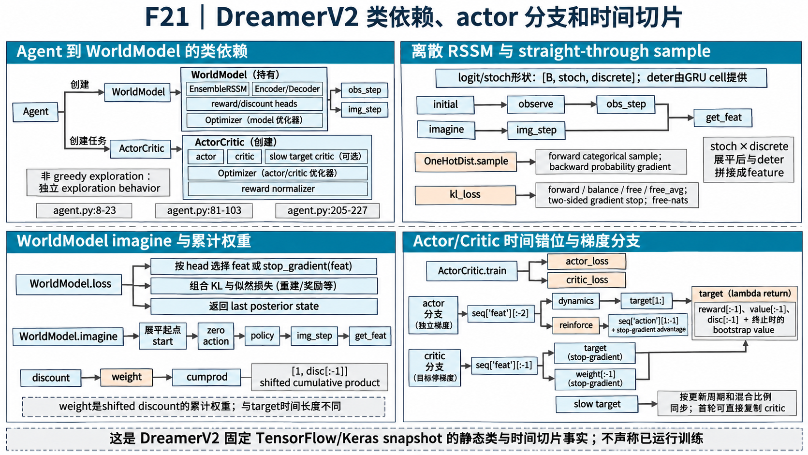
F21 详解：DreamerV2 的类依赖、离散 RSSM 与时间错位
DreamerV2 的源码图应从 Agent 的对象组合开始。agent.py 中的 Agent 并不直接实现所有训练逻辑，而是持有一个 WorldModel 和一个 task ActorCritic。如果 exploration behavior 不是 greedy，还会额外实例化 exploration 模块，并让它读取 world model 的 reward 或 disagreement 信号。这个依赖关系说明“世界模型、任务策略、探索策略”是三个可替换对象：Agent.train() 先调用 world model 的 train，拿到 posterior 起点和模型输出，再把起点、terminal 标记以及 reward 函数交给 ActorCritic.train()。因此图中要画一条从 WorldModel 输出到 ActorCritic 的数据边界，而不是把 actor 直接嵌在 RSSM 内部。
WorldModel.__init__() 进一步展开了模块组成：common.EnsembleRSSM 负责 latent transition，Encoder 把 observation 字典变成 embedding，Decoder 重建观测，reward head 与可选 discount head 预测标量，common.Optimizer 负责 model loss 的更新。WorldModel.loss() 先 preprocess 数据、编码 embedding，再用 rssm.observe() 得到 post/prior。它计算 KL，随后对每个 decoder/reward/discount head 选择是否使用 stop-gradient feature，累积各项负 log likelihood 和 KL loss。函数最后对 post state 沿时间维取 v[:, -1]，把最后状态作为下一次 train 的 carry。这个状态生命周期是 V2 训练的关键：训练批次的完整序列用于 loss，只有末端 latent 被保留给下一个 batch。
离散 RSSM 的字段和 feature shape 可由 common/nets.py 直接核对。initial() 在离散配置下生成 logit 和 stoch，每个形状为 [batch, stoch, discrete]，同时创建 deter。observe() 将 batch/time 维交换后用 common.static_scan() 逐步调用 obs_step；imagine() 则对动作序列调用 img_step，不读取 embedding。get_feat() 把 stoch 展平成 [... , stoch * discrete]，再与 deter 拼接。这个展平动作决定 actor、critic 和 decoder 看到的 feature 宽度。obs_step() 先用 reset mask 清除上一状态和上一动作，再执行 prior img_step，随后把 deter 与当前 embed 拼接，生成 posterior logits 并采样 stoch；img_step() 只依赖上一 stoch、action 和 GRU deter，所以 imagination 阶段没有 observation 旁路。
OneHotDist.sample() 是 V2 离散梯度边界的实现细节。它先调用父类的 categorical sample 得到 one-hot，再把概率张量 pad 到 sample shape，执行 sample += probs - stop_gradient(probs)。前向数值仍是离散 one-hot，反向导数则沿概率分布传播。这段代码与 actor 的 reinforce 分支是两种不同的梯度机制：straight-through 作用于 world model 的离散 latent sample；reinforce 作用于 action log probability 与 advantage。kl_loss() 又有 forward/balance/free/free_avg 参数，可能对 KL 两边分别 stop-gradient，再按 balance 混合，或先在均值上应用 free threshold。图中把 ST sample、KL balance 和 actor grad 分支画在不同层，避免把所有“离散稳定化”误合并成一个模块。
WorldModel.imagine() 负责把 replay 的 posterior 起点变成 actor-critic 使用的 imagined sequence。它先把 start 的 [B,T,...] flatten 成 extended batch，再用 get_feat() 产生起始 feature，并调用 policy mode 生成零动作作为 start['action']。循环 horizon 次时，policy 读取 stop-gradient 的上一 feature 采 action，RSSM img_step() 生成 prior state，随后把 state、action 和 feature 追加到列表，最后 stack 成时间优先的 sequence。discount 若有预测 head，就从 discount head 取均值，并覆盖首步为 replay terminal 推导出的真实 discount；若没有 head，则使用常数 discount。seq['weight'] 不是直接复制 discount，而是对 [ones, disc[:-1]] 做 cumprod，表示某状态是否由前一转移有效到达。这一位移决定后面 actor/critic 的权重长度。
ActorCritic 的时间切片是图中最容易画错的地方。actor_loss() 先用 seq['feat'][:-2] 送入 policy，末尾两步分别留给 bootstrap value 和没有后继的动作。dynamics 分支直接取 target[1:]；reinforce 分支用 slow target critic 对同一组 feature 估 baseline，以 target[1:] - baseline 得到 stop-gradient advantage，再取 seq['action'][1:-1] 的 log probability；both 分支把 dynamics objective 与 reinforce objective 按 schedule 混合。entropy 加到 objective 后，再乘 weight[:-2] 求均值。这里 action 的索引从 1 开始，是因为 replay 起点的动作不由当前 imagined policy 负责。
critic_loss() 只使用 seq['feat'][:-1]，因为最后一个 state 只用于 bootstrap。critic distribution 的 log probability 对 stop-gradient target 求值，再乘 weight[:-1]。target 本身由 target() 计算：取 reward、discount 和 slow critic value，丢弃最后一 reward/value/discount，使用末端 value 作 bootstrap，调用 lambda return。update_slow_target() 则按 _updates 和 slow_target_update 周期决定同步，第一次更新可用 mix=1 直接复制，之后按 slow_target_fraction 做软更新。由此可见 actor、critic、target、weight 的时间长度天然不同，图中必须给每条线标出 [:-2]、[1:-1]、[:-1] 和 [1:]。
静态证据边界仍需保留。我们核对的是固定 commit 的 Python/TensorFlow/Keras 源码定义，能够证明类构造顺序、字段形状、分支条件、时间切片和 stop-gradient 位置；没有执行训练 loop，也没有从 scores JSON 推断当前代码的运行结果。比如 OneHotDist 的 straight-through 语句能证明梯度表达式如何写入图，但不能证明某次 GPU 运行的梯度数值稳定；slow critic 的更新周期能证明同步条件，但不能证明它已经被调用若干次。图稿应把这些作为“静态实现合同”，并把 runtime metrics 留给单独的运行证据。
从训练调用顺序看，ActorCritic.train() 在同一个调用中建立两条 GradientTape。第一条 tape 包住 imagination、reward normalization、target 计算和 actor loss；第二条 tape 只包 critic loss。actor optimizer 和 critic optimizer 随后分别消费对应 tape，world model optimizer 则已经在更早的 WorldModel.train() 中应用。这个顺序意味着 actor loss 中的 imagined state 默认可以通过 dynamics 路径影响 actor，但 critic loss 的 target 被 stop-gradient，避免 critic 更新反向改变 return 目标。图中应把两条 tape 画成平行支路，并在 target→critic loss 之间放置明确的 stop-gradient 边界。
WorldModel.imagine() 的 start['action'] = zeros_like(policy(start['feat']).mode()) 还揭示了序列起点的一个特殊语义：起始 state 来自 replay posterior，但起始 action 只是为了让 sequence 字典拥有与 state 对齐的占位项。后续循环才从 policy sample 产生真正的 imagined action。actor loss 因而跳过第一项 action，使用 seq['action'][1:-1]，这与注释中“replay 起点动作不由当前 policy 负责”完全一致。若图稿把 zero action 和 policy action 画成同一种箭头，读者会误以为 policy 在训练第一步已经产生了 replay transition 的动作。
discount 与 weight 的移位也影响 actor/critic 的有效样本。disc[t] 描述从状态 t 到下一状态的有效性，故 weight[0]=1，weight[t] 是此前 discount 的累计乘积。actor 截掉两步后使用 weight[:-2]，critic 截掉一步后使用 weight[:-1]，两者都与各自目标序列长度匹配。target() 则把最后 value 作为 bootstrap，目标长度比完整 sequence 少一位。图中若只标一个“discount weight”，会掩盖三种长度：完整 seq、actor objective 的 H-1、critic target 的 H。
V2 配置文件还显示这些代码路径是可覆盖的。默认 RSSM 使用 stoch=32、discrete=32、deter=1024，imag_horizon=15，slow target 每 100 次更新；Atari overlay 会改 hidden/deter、discount、loss scales 和 actor entropy；dmc overlay 会关闭预测 discount、降低 RSSM 规模并设置 KL free。这里的 overlay 只说明配置如何改变张量宽度和分支开关，不能把默认数值当成所有任务的运行事实。source-evidence 因此记录了 configs.yaml 作为静态输入，而没有报告某个 overlay 已经被加载或训练过。
最后应区分 EnsembleRSSM 类名与当前默认 ensemble=1 的配置。源码支持对多个 ensemble member 生成 suff stats，并在 img_step() 中随机选择成员；默认配置将 ensemble 设为 1，因此静态图可以标注“实现支持 ensemble，默认单成员”，避免把通用类能力和某次配置实例混淆。类似地，WorldModel.loss() 对未列入 grad_heads 的 head 使用 stop-gradient feature，说明 decoder/reward/discount 的梯度边界由配置决定。图稿应把这些作为可变分支保留，而不是用一个固定的共享梯度箭头覆盖所有 head。
阅读实现时还要留意 reset mask 的位置。obs_step() 用 is_first 把上一 state 和上一 action 逐 batch 清零，再计算 prior；这保证新 episode 不会继承旧轨迹的 deter。WorldModel.preprocess() 同时把 terminal 转成 discount，imagine 首步还会用 replay terminal 覆盖预测 discount。reset、terminal 和 discount 分属不同接口，图中应分别标注，不能把 episode 边界简单等同于 reward 为零。
还要把 reset、terminal 和 continuation 的来源分开核对。obs_step() 的 reset 只负责在新 episode 的第一步屏蔽旧 deter、stoch 和 action；WorldModel.preprocess() 则从 is_terminal 生成 discount，imagine 时首项 discount 还会被 replay 中的真实 terminal 覆盖。actor/critic 使用的是由 shifted discount 得到的 weight，因此 reward 为零、episode reset 和无效 imagined state 并不是同一个条件。这个区分解释了为什么源码注释同时出现 reset mask、terminal flag、discount shift 和 cumulative weight，也说明图中应为每个信号画独立的输入接口。
Mastering Atari with Discrete World Models：离散状态与训练边界补充
本节把 S004 的独立深读补充迁入当前论文章节。它保留论文页码、TeX 位置、固定源码符号和实现边界；本任务仍未运行目标框架、训练或加载 checkpoint。
本补充锁定论文 2010.02193v4（ICLR 2021，固定 PDF 26 页）以及 danijar/dreamerv2@07d906e9c4322c6fc2cd6ed23e247ccd6b7c8c41 的源码快照。内容只做固定 PDF/TeX 与固定源码的静态联合阅读，没有安装依赖、运行训练、加载 checkpoint 或访问网络。教学数值明确标为教学推演；论文表格和曲线仍是 paper fact，源码默认值、形状和梯度边界是 code fact，二者相符时只称 static correspondence。重点补足四个容易被摘要压扁的地方：离散 RSSM 的轴和采样语义、KL balancing 的停止梯度、想象 actor-critic 的时间切片、以及 Atari 协议和消融结果究竟能支持什么 claim。
补充机制、计算和实验论证
9.3.1 从图像序列到可反事实的离散状态
posterior、prior 与 deterministic memory 的时间顺序
论文 Sec. 2.1（PDF pp.2–4，Figure 2）把每个时刻分成 deterministic recurrent state h_t、posterior stochastic state z_t 和不看当前图像的 prior \hat z_t。当前图像 x_t 经过 encoder 与 h_t 一起产生 posterior；transition predictor 只能从历史状态和动作产生 prior。这样安排的目的不是让 prior 复现像素，而是让行为阶段可以在没有未来图像的情况下滚动状态。如果 prior 依赖 x_{t+1}，想象就变成了带答案的过滤，actor 会获得真实环境不可用的信息。
固定源码 common/nets.py:45-55 的 observe 用 static_scan 沿 [time,batch,...] 扫描 obs_step；obs_step（:90-105）先处理 is_first，再调用 img_step 得到 prior，随后把 prior 的 deter 与 encoder embedding 拼接，通过 obs_dist 得到 posterior logits，并按 sample 决定抽样还是 mode。这里的 reset 乘法（:92-95）把 episode 起点的旧 state 和旧 action 置零，防止一个 episode 的记忆泄漏到下一个 episode。img_step（:108-127）把前一 stochastic state 与 action 拼接后更新 GRU，再通过 ensemble head 预测 logits；它完全没有读取 image embedding。论文公式的条件独立关系因此在代码里有明确调用边界。
[B,T,N,C] 不是一个扁平的“1024 维向量”
论文正文 p.4 与附录 D/Hparams p.19 给出 32 个 categorical variables、每个 32 类。源码配置 configs.yaml:39-49 的 rssm 是 stoch=32, discrete=32，所以离散 state 的 sample 逻辑形状为 [B,T,N=32,C=32]，每个 (n,c) 位置是一组 one-hot categorical；deter 默认 Atari overlay 为 600 维（:81-101 中 rssm.hidden 和 rssm.deter 为 600）。get_feat（common/nets.py:68-73）先把 stochastic 的最后两轴 flatten 成 N*C=1024，再与 600 维 deter 拼接，行为 head 看到的是 1624 维 feature。配置默认块的 1024 hidden/deter 适用于 DMC，Atari overlay 明确将它们改为 600；读者必须说明任务 overlay，不能把默认块的数值泛化到论文所有实验。
_suff_stats_layer（nets.py:146-160）对离散分支只生成 N*C 个 logits，再 reshape 为 [N,C]；它没有生成均值和标准差。get_dist（:75-87）把 logits 转成每个 categorical 的 OneHotDist，并用 tfd.Independent(...,1) 把变量轴作为一个联合事件。于是 KL 是 32 个 categorical KL 的和/独立事件计算，而不是把 1024 个二进制位当成独立 Bernoulli 后再随意平均。这个轴语义直接决定 KL 的量级、entropy 的解释和 feature 的宽度。
教学样例：一个 2×3 categorical 状态
教学实例取 N=2,C=3，posterior 概率分别为 q1=(0.5,0.3,0.2)、q2=(0.1,0.2,0.7)；prior 为 p1=(0.6,0.3,0.1)、p2=(0.2,0.5,0.3)。前向采样可能得到 z1=(0,1,0)、z2=(0,0,1)，拼接后是 6 维稀疏向量，恰有两个 active bits。若下一步 action 改变了 logits，img_step 重新从 prior logits 采样下一组 one-hot，而不是沿上一组 one-hot 做连续加法。这个例子只说明形状和采样语义，不是论文的训练输出。
稀疏不是“每个 episode 只有一个 bit”：每个变量各激活一个类别，所以 N=32 时每个 state 有 32 个 active bits。论文 p.8 的 categorical ablation 把这种稀疏结构列为可能的泛化归纳偏置之一，但作者同时明确把它写成 hypothesis，不能把“稀疏导致更好”当作已证明定理。
9.3.2 OneHotDist：前向 one-hot 与反向代理梯度
为什么 straight-through 不是 argmax
论文 Sec. 2.1（PDF p.4）和 Algorithm 1 说明离散 sample 使用 straight-through gradients。源码 common/dists.py:49-69 的 OneHotDist.sample 先调用底层 OneHotCategorical.sample 得到随机 one-hot sample，再计算 probs，返回
前向数值仍是 sample，因为 probs-stop_gradient(probs) 数值为零；反向导数却等同于对 probs 求导。底层 sample 的类别由随机 categorical 决定，不是 logits 最大类的 argmax。只有 OneHotDist.mode（:55-56）才调用底层 mode；训练的 sample() 和评估时可能使用的 mode 是两条路径。
用教学 logits 对应的概率 (0.1,0.7,0.2) 时，sample 可能随机得到 (1,0,0)；返回 tensor 的前向值仍为 (1,0,0)，但对 logits 的反向代理方向来自 (0.1,0.7,0.2)。若把它写成 argmax，就会错误地认为每次训练前向都固定选第二类，也会低估探索和随机梯度的作用。该代理梯度有偏，论文 p.6 将其与无偏但高方差的 Reinforce 对比；“低方差”不等于“无偏”。
latent sample 与 action sample 是两个位置
离散 latent 的 ST 发生在 OneHotDist.sample，由 RSSM 的 obs_step/img_step 消费；离散 action 的 ST 或 Reinforce 则由 ActorCritic 的 policy distribution 和 actor loss 决定。WorldModel.imagine（agent.py:136-164）每步从 actor policy sample action，再调用 rssm.img_step；ActorCritic.actor_loss（:252-291）依据 actor_grad 选择 dynamics、reinforce 或 both。不能看到 ST 一词就把两个 sample 当成同一个梯度估计器，更不能把 actor 的 Reinforce 信号写成 RSSM KL 的一部分。
9.3.3 KL balancing：同一个 KL 数值，不同的更新方向
论文公式和代码中的 forward 开关
论文 Eq. (2)（PDF p.4）先用普通 KL(q_φ(z_t|h_t,x_t) || p_φ(\hat z_t|h_t)) 作为 ELBO 正则，再在 Algorithm 2 说明 balancing：
sg(q) 的项只把 prior/p 的交叉熵方向作为可学习目标，推动 transition predictor 追随更有信息的 posterior；sg(p) 的项只让 posterior 侧承担正则，避免一个尚未学好的 prior 反向压平表示。论文 KL balancing 段给出 α=0.8；另一个参数 β 的 loss scale 才按 Atari .1、连续控制 1.0 区分。balancing 与 β-VAE 的 KL scale 正交：α 决定梯度分配，β 决定总项在 world-model loss 中的权重（PDF p.4）。
固定 common/nets.py:162-180 的 kl_loss 用 forward 开关重排 lhs/rhs，并把 mix = balance if forward else 1-balance。Atari 配置 configs.yaml:48 为 forward=False,balance=0.8,free=0.0,free_avg=True，所以默认执行的实际加权是 0.8*KL(sg(post)||prior) + 0.2*KL(post||sg(prior))：第一项占 0.8，更新 prior；第二项占 0.2，更新 posterior。这里的 1-balance 赋值不能漏读，否则会把代码事实错写成 0.2 的 prior 梯度。WorldModel.loss（agent.py:105-134）先计算 post,prior，再把 kl_loss 与 decoder/reward/discount likelihood 相加；ActorCritic 并不调用这段 KL。
数值例：方向相同，stop-gradient 不同
教学实例取单个 categorical 的 q=(0.5,0.3,0.2)、p=(0.6,0.3,0.1)。普通数值
KL(sg(q)||p) 和 KL(q||sg(p)) 的标量都约为 0.0475，因为 stop-gradient 不改变前向概率；改变的是谁收到梯度。按 α=.8，prior 侧得到约 80% 的这条交叉熵信号，posterior 侧得到约 20%。在 softmax logits 上，固定 q、优化 p 时交叉熵方向可理解为 p-q：p 的第一类偏大、第三类偏小，会被拉向 q；固定 p、优化 q 时，posterior 才承担相反的表示正则。这个例子解释了为什么“两个方向”不是 KL(q||p) 与 KL(p||q) 两个不同的概率顺序；这里两项都以 q 为第一分布、p 为第二分布，差别在 stop-gradient 的放置和系数。
free_avg=True 时源码先对每个方向的 KL 求 mean，再与 free 比较（:173-178）；Atari 的 free=0 因而不截断，DMC overlay 把 kl.free 改为 1.0（configs.yaml:118-136）。不能把 DMC 的 free nats 或 V1 的 free nats 说成 Atari v4 主实验的必经机制。论文 Figure 5 的 KL balancing 曲线还注明使用稍早版本，结果可以支持设计趋势，不能把该图的每个数值当作 v4 固定提交的重新运行。
9.3.4 WorldModel.loss 的分支、梯度和图像信号
一次 model update 具体做了什么
Agent.train（agent.py:57-69）先调用 WorldModel.train，再把返回的 outputs['post'] 交给 ActorCritic。WorldModel.loss（:105-134）依次执行 preprocess、encoder、rssm.observe 和 KL；feat = rssm.get_feat(post) 后遍历 decoder、reward 以及可选 discount heads。每个 head 如果名字在 config.grad_heads 中，就直接消费 feat；否则用 tf.stop_gradient(feat)（:115-123），于是该 head 自己仍然学习，但它的 prediction error 不再回到 encoder/RSSM。Atari 默认 grad_heads=[decoder,reward,discount]，DMC vision 改为 [decoder,reward] 并关闭 pred_discount（configs.yaml:39-49,118-136）。
这解释了 Figure 5（PDF p.8）的“image gradients / reward gradients”消融：停止 image gradient 不是删除 image decoder，而是阻断 decoder loss 回到 latent representation；停止 reward gradient 同理。论文报告停止图像梯度在 51 个任务下降、3 个上升、1 个打平，说明高维图像信号对表示学习通常重要；停止 reward gradient 在 15 个任务上升、22 个下降、18 个打平，提示 reward-specific representation 可能过拟合已见奖励。这是 across-task 的消融证据，不是每个游戏的因果定律。
预测 discount 与真实 terminal 的关系
preprocess（agent.py:166-185）把 obs['discount']=1-is_terminal 再乘配置 discount；Atari discount=.999，训练时 discount predictor 是 Bernoulli head。WorldModel.imagine 先预测整段 disc（:149-159），若存在真实 is_terminal，把第一步 discount 替换成 replay 的真实值；随后 :160-164 将 discount 左移一位做 cumulative product：weight[t] 表示到达后继状态 t 的累计有效性，而不是当前状态是否有效。这个 shift 是行为 loss 的时间语义，不能把 disc[t] 直接和 reward[t] 当作同一时刻的 mask。
9.3.5 想象 actor-critic 的时间对齐与 λ-target
H=15 序列的索引图
论文 Figure 3（PDF p.5）把起点 posterior state 画成 z1，随后产生 a1→z2→r2 等 imagined transitions；正文 Eq. (4)–(6) 的 λ-target 在 t=1…H-1 上训练，末端 critic 只做 bootstrap。固定实现的注释更精确：WorldModel.imagine 先把起点 state 放入 seq，然后循环 H 次追加 action/state/feature，因此每条序列有 H+1 个 states、H+1 个 action slots 和 H+1 个 reward/discount slots。起点 action 是 tf.zeros_like(policy(start['feat']).mode())（agent.py:136-142），它只是占位，代表 replay 起点尚未由 imagination policy 产生的前驱动作。
ActorCritic.target（agent.py:307-325）取 reward[:-1]、value[:-1]、disc[:-1]，以 value[-1] bootstrap，输出 H 个 target。critic_loss（:293-305）消费 critic(seq['feat'][:-1]) 与这 H 个 target，最后 state 没有 loss，因为它本身只是 bootstrap。actor_loss（:252-291）更短：policy 输入 seq['feat'][:-2]，dynamics 分支消费 target[1:]；Reinforce 分支把 baseline 设为 target critic 在 feat[:-2] 上的 mode，动作取 seq['action'][1:-1]，advantage 是 sg(target[1:]-baseline)。因此起点的零 action 不被当作 actor 训练动作，末端 bootstrap state 也不产生 action loss。
λ-return 手推：奖励、discount 和 bootstrap 对齐
这是教学推演。令 H=3，r0=1,r1=0,r2=2，disc0=.9,disc1=.8,disc2=.7，λ=.5，value 估计 v1=2,v2=3，末端 v3=4。代码递推是
先算 V2=2+.7×4=4.8；再算 V1=0+.8×(.5×3+.5×4.8)=3.12；最后 V0=1+.9×(.5×2+.5×3.12)=3.304。若 disc2=0 表示 terminal，则 V2=2、V1=.8×(.5×3+.5×2)=2、V0=1+.9×(.5×2+.5×2)=2.8；当前奖励仍保留，未来 bootstrap 被 terminal 阻断。该例只解释时间和数值，不能当作论文实验返回。
真实代码里的 actor_grad 三种模式
actor_grad 在 ActorCritic.__init__（agent.py:212-227）若为 auto，则离散 action 设为 reinforce，连续 action 设为 dynamics。论文 v4 p.6 明确 Atari 用 ρ=1,η=10^-3，即 Reinforce only；连续控制用 ρ=0,η=10^-4，即 dynamics only。configs.yaml:59-61 的 actor_grad=auto,actor_grad_mix=.1,actor_ent=2e-3 是仓库通用默认，Atari overlay :81-101 将 actor_ent 改为 1e-3，但没有在 YAML 里把 actor_grad 文本改成 reinforce；auto 分支结合 action space 才得到论文的离散策略。不要把 actor_grad_mix=.1 直接说成 v4 Atari 的有效混合比例。
Reinforce 路径使用 policy.log_prob(action)*advantage，其中 action 被 stop-gradient，advantage 也被 stop-gradient（:271-274）；这是无偏但方差高的估计。dynamics 路径直接令 objective 为 target，让 ST action/latent 的代理导数穿过固定 world model；这是低方差但有偏。both 路径才按 schedule 混合，actor_grad_mix 决定两者的比例（:275-281）。三者都加上 entropy schedule（:284-290），最终乘 stop-gradient 的 seq['weight']，再只对 weight[:-2] 做 actor loss。世界模型参数虽在 computation graph 中提供梯度通路，却不会被 actor optimizer 更新，这一点与论文 p.4 的“world model fixed during behavior learning”一致。
9.3.6 配置、数据集和训练生命周期
YAML overlay 不是一个静态默认值
train.py:30-43 先读 configs.yaml，用 Config 合并 defaults 与命令行指定的 overlay，再把 resolved config 保存到 logdir。common/config.py:105-128 的 update 支持点号键和正则键覆盖，同时检查旧值类型；因此 atari 块会将默认 action_repeat=1 改成 4、steps=1e8 改成 5e7、prefill=10000 改成 50000，并改 RSSM hidden/deter、学习率、discount、KL scale。train.py:57-68 再以 resolved replay 统计初始化 global step，不能只读取 YAML 第一段就声称是 Atari 实验配置。
Replay 的时间边界由 common/replay.py:42-117 具体定义。add_step 把 transition 追加到 worker 的 ongoing episode，遇到 is_last 才写入 compressed .npz；_sample_sequence 随机选择 episode 和起点，构造固定长度 chunk，并把 chunk 的第一位置标成 is_first=True。当 capacity=2e6 超过限制时，:119-127 从字典最早项开始删除 episode。论文 Sec. 2.1（PDF p.3）写的是 B=50、L=50 和 FIFO 数据集；源码补足了随机切片、episode 边界和 .npz 生命周期，仍不能证明 PDF 表格由当前快照精确重跑。
环境交互如何反哺模型
train.py:77-97 对 Atari 建立 common.Atari、action repeat、灰度与 one-hot action wrapper，再套 TimeLimit；common/driver.py:29-59 每次 reset 写入零动作 transition，调用 policy 得到动作后执行一步环境，再把 observation/action 组成 transition 送入 callbacks。Agent.policy（agent.py:25-55）保留 (latent, action) state；每个真实 observation 先经过 encoder 与 rssm.obs_step 更新 posterior，再由 actor 根据 mode 取 sample 或 mode，最后施加 exploration noise。此处才发生真实 action；WorldModel.imagine 内部的 action 永远留在模型图中。
9.3.7 实验与消融的证据边界
Atari 结果支持什么
论文 Sec. 3、Figure 4 和 Table 1（PDF pp.6–8）固定了 55 games、200M environment steps、action repeat 4、108000-step time limit、sticky actions、single environment instance、无 life information、full action space 和不做 frame stacking。Table 1 的 DreamerV2 gamer median 2.15、gamer mean 11.33、record mean .44、clipped record mean .28；这些数字支持在该协议下超过四个 model-free baseline 的聚合结果。作者同时指出不同聚合方式会改变算法相对排名，因此不能把 gamer mean 直接当作跨游戏鲁棒性的唯一证据；clipped record mean 是作者推荐指标，但其归一化依赖 human world record 数据。
论文 p.6 还报告 200M steps 中从真实环境获得约 50M inputs，而模型内学习了 468B compact states，称约 10000× 的 imagined-to-real 比例。这支持“行为更新主要由模型内轨迹驱动”的计算量级判断，却不等价于模型预测 468B 条真实可验证未来；它是 rollouts 数量，不是环境观测数量。
categorical、KL 和梯度消融
Figure 5（PDF p.8）和正文 Sec. 3.2 比较 categorical/Gaussian、KL balancing 开关、image/reward gradients。正文统计 categorical 在 42 个任务更好、8 个更差、5 个打平；KL balancing 在 44 个任务更好、6 个更差、5 个打平；停止 image gradient 在 51 个任务下降；停止 reward gradient 则 15 个上升、22 个下降、18 个打平。它们分别对应表示分布、prior 学习速度、图像监督与 reward-specific 表示四个机制，不应把所有差值归因于“离散 token 更稀疏”。Figure 5 标注稍早版本，且个别曲线来自附录 H/I/J，因此结论强度是机制趋势与任务聚合支持，而非当前 commit 的每次 exact run。
附录 C（PDF p.18）列出改动尝试：binary latents、long-term entropy、mixed actor gradients、scheduling、layer norm 等没有被纳入主版本或收益不大。作者还说明完整 55 tasks×5 seeds×10 days 的所有交叉消融需要超过 60000 GPU hours per change，因此“未列出某个组合”是实验资源边界，不等于该组合已被证明无效。
9.3.8 易错点、代码差异与复核问题
“KL .8”不是 p‖q 的另一方向
在默认 forward=False 语义下，代码通过 mix=1-balance 恢复论文的 .8*KL(sg(q)||p)+.2*KL(q||sg(p))。两项前向 KL 都写成 q 对 p；区分的是 stop-gradient 和被更新参数。若把第二项改写成 KL(p||q)，会改变数值目标和梯度，不能用“方向平衡”含糊带过。
“mode”只出现在明确的评估或起点占位
Agent.policy(mode='eval') 才调用 actor.mode()；训练模式调用 actor.sample()（agent.py:36-52）。WorldModel.imagine 的零 action 初始化调用了 policy(start['feat']).mode() 只为建立 shape，随后循环真正用 .sample()（:140-144）。因此看到一次 mode 不能说整段想象用了 argmax；反过来看到 ST 也不能说输出是 deterministic argmax。
V2 与 V1 的边界
V2 的 categorical latent 和 discrete action 使 V1 的连续 reparameterization 不能直接复用；V2 选择 ST 与 Reinforce 的组合，仍保留 posterior 起点、prior-only imagination、λ-target 和 actor/critic 分离。它没有 V3 的 symlog/two-hot 返回、没有把 score 文件变成运行证明，也没有消除 model exploitation 或数据覆盖问题。跨篇比较应逐项说明哪一层改变：V2 改了 latent distribution、KL 梯度分配和离散 policy gradient，V1 的连续 RSSM 与 tanh Gaussian 仍是另一份实现契约。
复核者应能回答的五个问题
第一，[B,T,N,C] 的 N/C 轴在哪里创建、在哪里 flatten？第二，OneHotDist 前向为何不是 argmax，反向代理梯度又从哪里来？第三，α=.8 的两项 KL 谁 stop-gradient、哪个参数得到 80% 更新？第四，seq['feat'][:-2]、action[1:-1] 和 target[1:] 为什么长度不同？第五，论文 Figure 5 的 ablation 是否标注了稍早版本，表格是否有当前 commit 的运行证据？对这些问题的直接答案分别来自 common/nets.py、common/dists.py、agent.py 的行号与 PDF pp.4–8；没有运行证据时，回答应保留 static_source_verified，而不是写成 runtime_observed。
9.3.9 Atari 预处理和 terminal 标签的两层语义
从模拟器图像到训练 tensor
论文 Sec. 2.1（PDF p.3）说明把灰度图像降采样到 64×64；固定入口 train.py:77-97 给 common.Atari 传 config.render_size、action_repeat 和 atari_grayscale。wrapper 自己先构造 frameskip=1 的 AtariEnv，再交给 AtariPreprocessing 做 noops、action repeat、resize、grayscale（common/envs.py:166-190）。sticky=True 时内部 repeat_action_probability=.25；life_done 默认为 False。这里需要同时记录 wrapper 的函数默认和训练入口实际传值，不能因为类签名 size=(84,84) 就说 fixed training 输入为84×84，也不能把 Gym 底层隐含 frame skip 再乘一次。
WorldModel.preprocess（agent.py:166-185）把 uint8 转为 compute dtype，除255再减.5；教学上像素0→−.5、255→.5、128→约.001961。Atari overlay 用 tanh 压缩 reward，原始奖励0、1、10分别变成0、约.761594、近1，而 episode logging 仍先从真实 reward 求和（train.py:99-104）。所以模型目标的 reward 尺度与最终报道分数不等价；不能把“tanh reward loss”误写成表格回报上限为1。
论文 p.7 的协议使用 full action space，但固定 Atari.__init__ 的 all_actions=False，入口没有向该参数传覆盖（envs.py:170-182；train.py:83-87）。这个静态差异必须保留：当前快照能解释鼠标无关的 Atari action encoding，却不能证明论文的 full-action-space 表格由这一无覆盖入口直接重建。OneHotAction.step（envs.py:399-429）用 argmax 只是把一个已验证的 one-hot 转成环境整数动作，并检查它确实只有一个激活；这不意味着模型中 OneHotDist.sample 用 argmax 采样。
time limit 可以结束 episode 而不结束价值
Atari.step（envs.py:208-219）将模拟器 done 同时写成 is_last 和 is_terminal；外层 TimeLimit.step（:339-360）达到最大步数时只把 is_last=True，没有强制 is_terminal=True。前者表示 replay 应切 episode，后者表示未来回报不应 bootstrap。教学上在 time limit 截断时 is_last=True,is_terminal=False，模型 discount target 仍是γ；真实游戏终止时两者都真，discount target为0。虽然两种情况都触发 reset，学习价值时的终止语义不同，不能用一个“done=1”概括所有路径。
训练折扣在 preprocess 中是 γ*(1-is_terminal)，imagination 首个 discount 则被真实起点标签覆盖，其余来自模型 head（agent.py:149-164）。取教学γ=.9、预测discount=[.8,.7,.6,.5]，非terminal起点得到disc=[.9,.7,.6,.5]、weight=[1,.9,.63,.378]；terminal起点得到disc=[0,.7,.6,.5]、weight=[1,0,0,0]。起点自己的 critic 可有监督，但 actor 的零占位动作不训练，后续位置权重为零。这个移位例子说明 why terminal override 和 cumprod shift 必须连起来读，而不是把当前 reward 按当前预测discount清零。
9.3.10 actor loss：优势、熵、模型梯度和参数更新
一组能手算的 Reinforce 更新
论文 v4 p.6 Eq.(6) 的 Atari 设置ρ=1、η=1e-3，对应 fixed auto→reinforce。取教学二类policy π=(.7,.3)，抽到第一类，target=5、baseline=3，则 advantage=2；忽略轨迹权重时最大化目标是 2*ln(.7)+.001*H(π)，entropy约.610864，总目标约−.712739。softmax logits 上 logπ 的导数为 chosen-one-hot减π，所以收益部分的梯度是 [.6,−.6]，提高这个带正优势动作的概率。若target=1，advantage=−2，梯度变为 [−.6,.6]，同一抽样动作会被降低概率。这个计算说明优势在此承担样本权重和方向，而不是把critic输出直接当动作标签。
actor_loss 对 advantage 与抽样action停止梯度（agent.py:270-274），policy输入feature也停止梯度（:267）；actor optimizer 又只接收 self.actor（:246）。因而世界模型预测reward、discount和target critic决定了数值目标，却不会由这个Reinforce分支同时被更新。critic loss则对target和weight停止梯度，optimizer只更新critic（:244-247,293-305）。这是参数归属与计算图依赖的区别，缺少任一层都容易误说“actor通过所有网络共同训练”。
entropy 的量级与两种探索位置
上述π的entropy不足1 nat，η=.001只贡献约.000611；如果优势为100，Reinforce项尺度将大很多，这也解释V2跨任务奖励尺度可能改变策略目标的相对量纲。entropy鼓励策略保留多种动作，而world-model KL regularizer约束posterior/prior，是两个不同分布。固定Atari expl_noise=0，训练采集仍从actor.sample取随机动作（agent.py:25-55；configs.yaml:33-37,98）；“没有额外噪声”不等于采集策略确定。评估mode使用actor.mode，eval_state_mean 决定latent是否仍采样，是另一条独立分支。
混合模式的 mix 在代码中乘 dynamics target，而论文ρ乘Reinforce项；因此若教学上 actor_grad_mix=.1，等价于10%dynamics和90%Reinforce，并非ρ=.1。只有明确设置actor_grad=both才消费它，默认auto离散不会读取该系数作为有效混合（agent.py:275-281）。slow critic默认每100次update硬复制一次，slow_target_fraction=1，与V3每次做2%参数EMA不同（:327-334）。这些分支改变具体目标和状态周期，不能从“actor-critic”一个名称推断。
9.3.11 训练入口和损失变量的完整生命周期
prefill、变量创建和参数恢复
固定 train.py:141-162 先根据replay已有步数计算还需要多少prefill，用RandomAgent收集初始数据，再构造训练、report和eval三个dataset iterator。随后实例化Agent，并先取一批数据执行train_agent来创建变量；如果logdir存在variables.pkl才恢复参数，否则执行配置指定的pretrain更新。这个顺序表明“初始化数据”“创建网络变量”“恢复参数”“开始正式采集”不是同一个操作。本文只读取入口，因此不能声称这些阶段已经在当前环境实际执行，也不能把快照中的score文件当作本次checkpoint。
训练driver每次step都会写入新transition，再按 Every(train_every) 决定是否执行一组gradient steps（train.py:167-187）。Atari overlay把train_every设为16，通用train_steps为1；logger还用action_repeat作为倍率记录环境步。这意味着一个loop step、一次policy动作、四次模拟器帧和一次梯度更新有不同计数。论文200M frames与YAML steps=50M可以按repeat4静态对应，但没有日志时不能证明实际预算精确一致，更不能把50M误报成论文少用了四倍数据。
reward normalization 和熵正则各管什么
ActorCritic.train 在world_model.imagine之后调用 StreamNorm(reward)，再构造λ-target；默认 reward_norm.momentum=1.0，其类注释明确该值关闭统计归一化（configs.yaml:66；common/other.py:113-146）。因此固定主路径虽然有rewnorm对象，也不能写成像V3一样使用百分位return normalization。entropy项是在policy分布上增加固定scale的随机性偏好，reward_norm则作用于预测奖励的量纲；二者更不能合并成“统一尺度机制”。这个配置差异说明V2的方法边界，也解释V3后来为何要单独处理跨任务的return尺度。
9.3.12 消融和聚合指标的数值审计
world model 误差进入 actor 的具体途径
Reinforce只避免对模型轨迹反传动作导数，并没有让策略摆脱模型偏差：target仍来自预测reward、discount和慢critic。若一类动作在数据中很少出现，模型错误地给出高reward，advantage就会为正，policy仍会提高它的采样概率。若discount误判为过早终止，后续奖励则会被低估。论文p.4–6的三段学习流程与 agent.py:229-325 的target消费关系支持这一解释；categorical状态和KL balancing提高了预测可用性，却没有给出分布外策略的无偏价值保证。
稍早版本的消融不能并入主表
论文 Table1（PDF p.7）给DreamerV2 clipped record mean .28，Table2（p.9）里的DreamerV2基线却为.25，gamer median也从2.15变为1.64；Figure5图注明确消融来自稍早版本。这不是自动识别出的训练失败，而是不同实验版本的基线。categorical与KL balancing 的胜/负/平统计分别为42/8/5和44/6/5，tie定义为差距在5%以内（p.8–9）。这些统计支持跨任务的稳健趋势，不能用主表.28减消融表某值来当同一运行的精确组件增益。
聚合指标也可能被少数高分游戏支配。教学上三个游戏的human-normalized score为[1,1,100]，median=1而mean=34；把第三个继续提高到1000会把mean拉到334，却完全不改变median。clipped record mean改用world record归一化并对每个游戏最多计1，三个游戏若record-normalized为[.3,.7,5]，得到(.3+.7+1)/3≈.6667。它让高分离群值不再无限支配总分，但也不区分超过record的幅度。因此论文的四种聚合回答不同问题，不能只挑最有利的一列称“全任务鲁棒”。
Figure5的图像梯度消融阻断的是head到表示的反向路径，reward head仍会训练；Atari reward tanh、discount predictor、KL scale=.1、actor entropy=.001都与该表示选择同时存在。论文 p.8 将categorical可能更匹配aggregate posterior、稀疏结构、非平滑物体变化和ST梯度列为假设，没有逐一证明原因。当前补充因此把“categorical获胜”作为实验事实，把“为何获胜”保留为作者的机制假设；代码能揭示实现，不会把假设升级成定理。
实验、消融与结论的适用范围
每项结果都连同任务、输入、预算和比较条件阅读。成功、负面证据和计算成本共同限定论文主张。
论文实验与计算规模
论文报告 DreamerV2 在 sticky-action Atari 55 任务达到人类水平，并在相同 GPU/时间预算下超过 IQN 和 Rainbow。200M environment steps 期间，policy 从模型中想象 468B compact states，而真实输入只有约 50M（action repeat 后），约为 10,000 倍的潜状态训练量。论文同时展示连续动作 humanoid stand-up/walk，说明离散 latent 并不限制 action space 必须离散。
消融需要按对象拆开阅读：discrete representation 改变随机状态的分布；KL balancing 改变 prior 与 posterior 的梯度方向；free nats 是实现中可选的小 KL 阈值；actor-grad 消融比较 dynamics、REINFORCE 和 both。DreamerV2 的 world model 还包含 image、reward、discount 三类预测目标，discount head 是否建立由 pred_discount 配置决定；WorldModel.imagine 只有在该 head 存在时才生成 discount 和 cumulative weight。ActorCritic.actor_loss 依据动作空间和 actor_grad 选择 target、log-prob advantage 或混合路径，critic_loss 对 stop-gradient target 做价值拟合。论文报告的 Atari 分数、代码 README 命令和固定 commit 的 分数记录文件 必须分开标注，后者不能单独证明论文结果的生成版本。
图、表、算法和实验如何支持主张
55 个 Atari 游戏使用 sticky actions、动作重复和像素输入，论文报告人类归一化表现以及 IQN、Rainbow 的计算预算对照；附录 Humanoid 表明离散 latent 不强迫动作空间离散。核心消融比较 categorical/Gaussian representation、KL balancing/standard KL、actor gradient 与训练计划；free nats 属于论文修改对照和当前实现的可选阈值，不能据此写成 Atari 默认启用项。468B imagined compact states 与约50M action-repeat后的真实输入说明模型内训练的规模，不证明预测始终准确。实验解释仍需逐项保留数据预算、动作重复、输入类型、seed、指标和对照条件，附录超参与单任务曲线是这些条件的证据。
设计选择、失败模式与局限
离散表示减少了连续分布平均化，却引入类别数、变量数、unimix/free-nats 等新的稳定性选择。straight-through 不是真实离散采样的无偏梯度；它只提供一个可用的优化近似。Atari 成功也不能推出 offline video 能学到相同 coverage，因为 V2 仍从在线环境持续收集数据。代码中的 async 分支、配置消费者和 分数记录文件 必须单独审计，不能用 README 的示例命令证明论文表格精确复现。 这些限制分成表示错误、动力学漂移、行为利用模型漏洞、计算成本、数据覆盖和来源完整性六类。论文没有报告的内容保持未报告；代码阶段可以回答部分实现细节，但不能替论文补写不存在的科学结论。
Mastering Atari with Discrete World Models：实验联合阅读
55 个 Atari + Humanoid：实验回答什么
验证 categorical world model 的规模和连续动作适用性。
来源版本为2010.02193v4；分析范围为静态文献与源码阅读。
结果来源与限制：score 文件不能证明 exact run。 固定实现是 danijar/dreamerv2@07d906e9c4322c6fc2cd6ed23e247ccd6b7c8c41。Atari 与连续控制可覆盖不同配置；仓库内分支或 score 文件不能单独证明论文实验启用了它。
需要回读的论文或实现入口：论文 Sec. 3 / Appendix。
未能由这些材料独立证明的条件：作者仓库固定提交用于静态证据；README/score 文件不能证明论文所有表格由该提交生成。
核对来源：dreamerv2/agent.py（L20-209,252-332）；dreamerv2/common/dists.py（L49-63）；dreamerv2/common/nets.py（L146-180）；dreamerv2/configs.yaml（此附件保存在完整本地归档中）（L39-64,81-101,118-136）。
核心消融：实验回答什么
区分表示、动力学、行为或效率组件。
来源版本为2010.02193v4；分析范围为静态文献与源码阅读。
结果来源与限制：对照论文报告的消融；不把分支存在当作已运行。 固定实现是 danijar/dreamerv2@07d906e9c4322c6fc2cd6ed23e247ccd6b7c8c41。Atari 与连续控制可覆盖不同配置；仓库内分支或 score 文件不能单独证明论文实验启用了它。
需要回读的论文或实现入口：论文实验/代码分支或来源边界。
未能由这些材料独立证明的条件：作者仓库固定提交用于静态证据；README/score 文件不能证明论文所有表格由该提交生成。
核对来源：dreamerv2/agent.py（L20-209,252-332）；dreamerv2/common/dists.py（L49-63）；dreamerv2/common/nets.py（L146-180）；dreamerv2/configs.yaml（此附件保存在完整本地归档中）（L39-64,81-101,118-136）。
长时域/鲁棒性实验：实验回答什么
检查模型误差、尺度或规划 horizon 的边界。
来源版本为2010.02193v4；分析范围为静态文献与源码阅读。
结果来源与限制：静态路径和原页证据分开。 固定实现是 danijar/dreamerv2@07d906e9c4322c6fc2cd6ed23e247ccd6b7c8c41。Atari 与连续控制可覆盖不同配置；仓库内分支或 score 文件不能单独证明论文实验启用了它。
需要回读的论文或实现入口：论文图表与配置入口。
未能由这些材料独立证明的条件：作者仓库固定提交用于静态证据；README/score 文件不能证明论文所有表格由该提交生成。
核对来源：dreamerv2/agent.py（L20-209,252-332）；dreamerv2/common/dists.py（L49-63）；dreamerv2/common/nets.py（L146-180）；dreamerv2/configs.yaml（此附件保存在完整本地归档中）（L39-64,81-101,118-136）。
代码/版本对应：实验回答什么
判断固定提交是否能精确重建表格。
来源版本为2010.02193v4；分析范围为静态文献与源码阅读。
结果来源与限制：不执行目标仓库依赖或训练。 固定实现是 danijar/dreamerv2@07d906e9c4322c6fc2cd6ed23e247ccd6b7c8c41。Atari 与连续控制可覆盖不同配置；仓库内分支或 score 文件不能单独证明论文实验启用了它。
需要回读的论文或实现入口：固定 snapshot / 真实来源边界。
未能由这些材料独立证明的条件：作者仓库固定提交用于静态证据；README/score 文件不能证明论文所有表格由该提交生成。
核对来源：dreamerv2/agent.py（L20-209,252-332）；dreamerv2/common/dists.py（L49-63）；dreamerv2/common/nets.py（L146-180）；dreamerv2/configs.yaml（此附件保存在完整本地归档中）（L39-64,81-101,118-136）。
55 个 Atari + Humanoid的证据解释
验证 categorical world model 的规模和连续动作适用性。
论文条件：来源版本：2010.02193v4；执行范围：只做静态精读。
结果读取范围：score 文件不能证明 exact run。
核对入口：论文 Sec. 3 / Appendix。
仍需保留的条件：作者仓库固定提交用于静态证据；README/score 文件不能证明论文所有表格由该提交生成。
命令与论文运行的对应强度：按论文与源码静态对照。
核心消融的证据解释
区分表示、动力学、行为或效率组件。
论文条件：来源版本：2010.02193v4；执行范围：只做静态精读。
结果读取范围：对照论文报告的消融；不把分支存在当作已运行。
核对入口：论文实验/代码分支或来源边界。
仍需保留的条件：作者仓库固定提交用于静态证据；README/score 文件不能证明论文所有表格由该提交生成。
命令与论文运行的对应强度：按论文与源码静态对照。
长时域/鲁棒性实验的证据解释
检查模型误差、尺度或规划 horizon 的边界。
论文条件：来源版本：2010.02193v4；执行范围：只做静态精读。
结果读取范围：静态路径和原页证据分开。
核对入口：论文图表与配置入口。
仍需保留的条件：作者仓库固定提交用于静态证据；README/score 文件不能证明论文所有表格由该提交生成。
命令与论文运行的对应强度：只能近似对应。
代码/版本对应的证据解释
判断固定提交是否能精确重建表格。
论文条件：来源版本：2010.02193v4；执行范围：只做静态精读。
结果读取范围：不执行目标仓库依赖或训练。
核对入口：固定 snapshot / 真实来源边界。
仍需保留的条件：作者仓库固定提交用于静态证据；README/score 文件不能证明论文所有表格由该提交生成。
命令与论文运行的对应强度：没有精确运行证明。
论文实验与版本边界
论文的 Atari 结果还依赖图像预处理、action repeat、discount、replay budget、seed 和评价频率。YAML 的 Atari overlay 改变 steps、prefill、train_every、deter/hidden、KL scale 和 entropy；固定源码揭示可用分支，但不能证明每张论文表都由这个 commit 和这个 resolved config 生成。分数记录文件 是结果记录，不是训练证据。V2 的 categorical/KL/ST 不能倒灌为 V1 Gaussian 或 V3 symlog/two-hot 实现。
疑难问题的直接回答与继续阅读
把容易混淆的问题在正文直接答清，再回指相应机制和来源。未公开实现与尚未做运行复现是不同边界。
32×32 表示什么？ stochastic state 有 32 个 categorical variables，每个 32 类，one-hot 展平后与 deterministic GRU state 拼接。straight-through 和 KL balancing 是一件事吗？ 不是：前者规定离散样本的反向代理导数，后者规定 posterior/prior KL 的 stop-gradient 方向。free nats 是否是 Atari 默认？ 固定配置的 Atari 阈值为0；它和论文所说的 KL balancing 必须分开核对。
边界
V2 仍然使用模型想象而非在线规划，world model 仍只从历史数据学习；离散 latent 并没有消除 model exploitation 或 dataset coverage 问题。它解决的是表示和优化稳定性，不是长视频扩展，也没有 V3 的 symlog/twohot 统一尺度机制。
机制之间的依赖顺序
在 Mastering Atari with Discrete World Models 中，表示不是孤立的 encoder，动力学也不是孤立的 sequence model。先要明确输入被压缩到什么空间，再问这个空间是否带有时间状态，接着问动作如何改变状态，最后按本篇条件检查真实reward、模型reward、done、discount或value怎样参与行为目标。若跳过其中一层，读者容易把 observation reconstruction 当成 reward prediction，把 posterior 当成 deployment-time state，或把 policy 的 imagined action 当成真实环境已执行的 action。正确的依赖顺序还决定了实验解释：表示消融改变的是输入给动力学的证据，动力学消融改变的是未来轨迹，行为消融改变的是如何消费未来轨迹。
给后续联合分析的稳定锚点
阅读与引用本篇时，以2010.02193v4为身份起点，再标明正在讨论表示、动力学、行为、目标、实验还是来源边界。新增解释需回到相应原页或固定文件；这一规则防止把旧摘要、后续版本或第三方实现混入当前结论。
核对来源：dreamerv2/agent.py（L20-209,252-332）；dreamerv2/common/dists.py（L49-63）；dreamerv2/common/nets.py（L146-180）；dreamerv2/configs.yaml（此附件保存在完整本地归档中）（L39-64,81-101,118-136）。
Mastering Atari with Discrete World Models：论文问题到代码证据
论文中状态/表示的每一部分如何获得并被消费？
CNN embedding 与历史更新 deterministic state，再形成含 32 个 categorical variables、每个 32 类的 posterior。prior 不读取当前图像。前向采样 one-hot，反向采用概率的 straight-through 代理导数；image/reward/可选 discount 训练 WorldModel，ActorCritic 则消费想象特征和 λ-return。Atari 的 REINFORCE 路径与连续动作的 dynamics 路径分别核对。
核对来源：dreamerv2/agent.py（L20-209,252-332）；dreamerv2/common/dists.py（L49-63）；dreamerv2/common/nets.py（L146-180）；dreamerv2/configs.yaml（此附件保存在完整本地归档中）（L39-64,81-101,118-136）。
未来展开是否读取真实未来观测？
不会。observe 读取真实序列得到 posterior，WorldModel.imagine 将起点展平并仅调用 rssm.img_step；后续 action/state 都是模型内量。初始 replay state 和末端 bootstrap 不应被误计成可训练 actor 的全部时间位置。
核对来源：dreamerv2/agent.py（L20-209,252-332）；dreamerv2/common/dists.py（L49-63）；dreamerv2/common/nets.py（L146-180）；dreamerv2/configs.yaml（此附件保存在完整本地归档中）（L39-64,81-101,118-136）。
reward、continuation 或 value 目标如何连接行为更新？
WorldModel 的 reward 与可选 discount head 给想象序列标注目标；ActorCritic.target 以末端价值 bootstrap 计算 λ-return。Atari 按配置走 REINFORCE，连续动作可用 dynamics 或混合梯度。critic_loss 对 target 与权重停止梯度，行为优化器只更新 actor/critic。
核对来源：dreamerv2/agent.py（L20-209,252-332）；dreamerv2/common/dists.py（L49-63）；dreamerv2/common/nets.py（L146-180）；dreamerv2/configs.yaml（此附件保存在完整本地归档中）（L39-64,81-101,118-136）。
长时域误差通过什么机制被约束？
categorical 表示、KL balancing 和目标/行为更新改善训练可用性，但没有消除模型利用和分布覆盖问题。Atari 的 KL balancing 采用 α=.8，free 阈值默认为0；DM Control 可以覆盖为1，不能把 free nats 画成所有实验共有机制。
核对来源：dreamerv2/agent.py（L20-209,252-332）；dreamerv2/common/dists.py（L49-63）；dreamerv2/common/nets.py（L146-180）；dreamerv2/configs.yaml（此附件保存在完整本地归档中）（L39-64,81-101,118-136）。
真实环境交互、replay 和想象训练的顺序是什么？
Agent.train 先调用 WorldModel.train，得到真实序列的 posterior 与模型指标，再把后验起点交给 ActorCritic.train。WorldModel.imagine 在 prior 中循环动作、状态与特征，ActorCritic.target 生成 λ-return，actor_loss 按 actor_grad 分支学习，critic_loss 拟合停止梯度的目标，最后更新慢价值参数。真实环境交互由 Agent.policy 另行执行。
核对来源：dreamerv2/agent.py（L20-209,252-332）；dreamerv2/common/dists.py（L49-63）；dreamerv2/common/nets.py（L146-180）；dreamerv2/configs.yaml（此附件保存在完整本地归档中）（L39-64,81-101,118-136）。
论文实验是否能由公开命令精确重建？
固定仓库的配置和 score 文件可核对实现与论文结果的关联线索；没有训练、checkpoint 与环境运行证据时，不能认定精确重建。Atari frame/action repeat、sticky action、55 游戏聚合与 Humanoid 的连续动作条件应分别回原页。
核对来源：dreamerv2/agent.py（L20-209,252-332）；dreamerv2/common/dists.py（L49-63）；dreamerv2/common/nets.py（L146-180）；dreamerv2/configs.yaml（此附件保存在完整本地归档中）（L39-64,81-101,118-136）。
哪些实现细节论文没有报告？
OneHotDist.sample 的前向为随机 one-hot，反向增加 probs-stop_gradient(probs)，不是 argmax。KL 两方向停止梯度的位置、pred_discount、actor_grad、target 时间切片和慢价值更新均会改变学习行为。
核对来源：dreamerv2/agent.py（L20-209,252-332）；dreamerv2/common/dists.py（L49-63）；dreamerv2/common/nets.py（L146-180）；dreamerv2/configs.yaml（此附件保存在完整本地归档中）（L39-64,81-101,118-136）。
代码来源是否足够回答作者实现问题？
固定实现是 danijar/dreamerv2@07d906e9c4322c6fc2cd6ed23e247ccd6b7c8c41。Atari 与连续控制可覆盖不同配置；仓库内分支或 score 文件不能单独证明论文实验启用了它。
核对来源：dreamerv2/agent.py（L20-209,252-332）；dreamerv2/common/dists.py（L49-63）；dreamerv2/common/nets.py（L146-180）；dreamerv2/configs.yaml（此附件保存在完整本地归档中）（L39-64,81-101,118-136）。
D3 论文机制与证据层
论文事实来自锁定版本；固定源码事实只描述所读提交；依据公式与流程得出的解释仍须保留前提。没有官方实现或精确运行映射时，缺口本身就是结论边界，图上的连线不能把第三方实现升级为作者实现。
核对来源：dreamerv2/agent.py（L20-209,252-332）；dreamerv2/common/dists.py（L49-63）；dreamerv2/common/nets.py（L146-180）；dreamerv2/configs.yaml（此附件保存在完整本地归档中）（L39-64,81-101,118-136）。
静态问答
为什么 KL 不在 ActorCritic？ 因为 KL 需要真实 observation posterior 与 transition prior；ActorCritic 只消费 imagined feature。为什么 target 丢最后列？ 最后 state 用于 bootstrap，没有对应后继 reward/action loss。为什么 terminal 与 discount 分开？ terminal 是 replay 边界，discount 是模型预测 continue，第一步还用真实 terminal override。如何改 latent classes？ 同时改 initial state、suff_stats logits、reshape、feature width、heads 和 checkpoint；只改 YAML 不保持权重兼容。
上述 shape、梯度和数值均为固定源码的静态推演，未安装依赖、执行 graph、训练或加载 checkpoint。
与下一步阅读的联系
V2 的离散状态提高了视觉 Atari 的可用性。V3 继续处理跨任务的数值尺度、网络容量、返回分布和优化稳定性，而不是再替换一个规划器。
DreamerV3：怎样把表示、目标尺度与训练状态分层稳定下来
这一篇的难点是多个稳定化机制同时出现。symlog 改变数值域，two-hot 表达连续目标，unimix 作用于 categorical 分布，返回归一化控制行为目标尺度，slow value 和优化器状态又有独立生命周期。先按数据对象区分机制，再沿配置解析、Agent.loss、RSSM 和 replay context 阅读源码。
本篇固定版本为 2301.04104v2。固定证据为 danijar/dreamerv3 的 e01491fad6434b2245a3b8ca201dd7faedcc458c 后续 JAX reimplementation。它可解释当前接口与配置实例；不能无条件充当论文发表时实现或每个表格的精确生成版本。
问题、假设与论文身份
先确定论文在什么条件下试图解决什么失败，再阅读机制。版本、任务与来源边界决定后面每个结论的强度。
论文主张
DreamerV3 的中心命题是：如果世界模型、价值目标、奖励尺度和梯度量纲被系统性规范化，那么一个固定配置可以跨 Atari、ProcGen、DMLab、Minecraft、BSuite、视觉/本体控制运行。论文贡献不是单一架构模块，而是一套互相配合的鲁棒性技术。
固定代码 danijar/dreamerv3@e01491fad6434b2245a3b8ca201dd7faedcc458c 是 JAX reimplementation。README 明确称其为 reimplementation，因此本任务将它标记为 作者维护的后续实现，而不是自动宣称 论文发表时的精确实现。dreamerv3/agent.py 的 Agent.loss 同时计算 world model、imagination actor-critic 和可选 replay value loss；dreamerv3/rssm.py 采用 4096 deterministic units、32 个 categorical stochastic variables、每个 32 classes、8 blocks、RMSNorm、GELU 和 unimix。
身份、版本与阅读范围
论文版本为 arXiv 2301.04104v2，PDF 共 40 页，正文和附录覆盖 Atari、ProcGen、DMLab、控制任务、BSuite 和 Minecraft。DreamerV3 的贡献是把一组针对表示、奖励尺度、价值目标和优化量纲的技术组合成一个固定配置，而不是提出新的规划器。 本报告只讨论论文正文、附录、图表和公式；本篇“源码架构、调用链与实现差异”小节继续解释固定文件、函数与默认值；这些实现事实与论文已经明确写出的机制分别标注。证据标签使用 论文明确说明、有证据支持的解释 和 来源未报告。
问题、假设与相关工作缺口
V2 的 Atari 成功仍依赖任务和奖励尺度相对稳定的协议。跨域时，像素、向量、稀疏奖励、巨大数值、终止概率和动作空间的量纲差异会让同一套学习率、损失权重和探索强度失效。V3 试图回答：能否通过统一的变换、归一化、分布目标和梯度规范，让一个 Dreamer 配置跨越 150 多个任务而不逐任务调参。这里“通用”是实验协议下的稳定性主张，不是无条件的理论保证。 论文将旧方法的失败集中在表示、长期预测、行为学习成本或跨域尺度中的一组矛盾上。需要注意的是，后续论文的成功不能反向修改本论文当时的假设；本节只根据当前版本产生之前的背景重建问题。
面向新读者的教学故事
V3 像给同一台仪器加了一整套校准：把巨大数字压到可读范围，用更细的刻度表达价值，限制概率塌缩，给 critic 一个慢速参考，再统一梯度大小。仪器因此能换很多实验台，但实验台的传感器和预算仍然重要。 接着阅读本篇源码小节时，先确定论文的主张，再看固定实现怎样安排状态、目标与配置。这两个视角相互校验，但不能互相替代。
输入、状态与表示接口
这一节跟踪真实输入如何变成状态，以及每个状态分量由谁产生、被谁消费。分布参数、随机样本、确定性记忆和 token 各有不同职责。
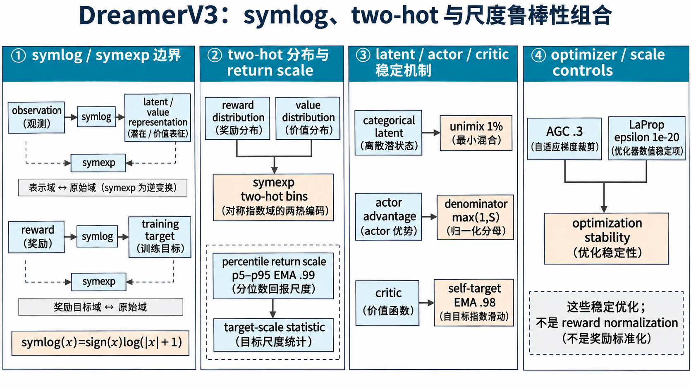
F10 DreamerV3 symlog、two-hot 与尺度鲁棒性详解
这张图回答 DreamerV3 如何把输入尺度、reward/value 分布、离散 latent 和优化器稳定性拆成多个相互独立的机制。四个区域分别是 symlog/symexp 变换、reward/value 的 symexp two-hot 与 return percentile、categorical unimix/actor advantage/critic self-target 三个鲁棒性机制、AGC 与 LaProp 优化控制。图中最重要的边界是：这些组件共同提高跨任务数值稳定性，但不能被压缩成一个名为“reward normalization”的公式。
第一区从 observation、reward 和 value 开始。symlog 用 sign(x) log(|x|+1) 压缩大尺度并保留正负号，模型在压缩空间学习，读取或展示时通过 symexp 逆变换恢复原尺度。它是输入和 target 的尺度处理，不能被画成只作用于奖励的归一化层。观测、奖励和值都在左侧进入同一“尺度变换”语义，但它们的后续预测头仍然不同。
第二区把 reward distribution 和 value distribution 都画成 symexp two-hot bins。two-hot 表示相邻两个 bin 的插值权重，模型预测的是分布而非一个无界标量；symexp 把输出映射回原尺度。旁边的 return scale 统计单独记录 p5–p95，并以 EMA .99 更新，用来提供任务回报尺度 S。它不是网络层，也不是把每个 reward 强行变成 (r-p5)/(p95-p5) 的奖励归一化。图中的红色禁止框明确阻止这种误读。
第三区并列三个独立机制。categorical latent 的 unimix 1% 将一小部分均匀分布混入 logits，避免某一类别概率过早塌缩；actor advantage 使用 max(1,S) 作为分母，避免回报尺度过小时优势被异常放大；critic self-target EMA .98 让价值目标缓慢更新，减少 target 方差。三条箭头最终都指向各自的稳定性目的，不能把 unimix、优势分母和 self-target EMA 串成一个单一损失。
第四区是 optimizer 与尺度控制。AGC .3 按参数与梯度范数裁剪更新，LaProp 使用 epsilon 1e-20 保持极小数值下的稳定。它们作用在优化器层，和 symlog、two-hot、percentile return scale 的目标统计边界不同。图上用虚线框写“这些稳定优化；它们不是奖励归一化”，说明优化器设置不能被反向解释成 reward preprocessing。
一个数值例子是：若原始 reward 为 1000，symlog 将其压缩到较小范围，two-hot head 在相邻 bin 上分配概率，symexp 再把预测读回原尺度；p5–p95 EMA 只更新尺度 S，不能把 1000 直接减 p5 除以区间。若 categorical latent 的最大类别概率接近 1，unimix 1% 给其他类别保留非零质量；若 S 很小，max(1,S) 防止 actor advantage 的除法爆炸；critic EMA .98 则让目标慢慢跟随当前价值。
与 DreamerV2 的区别是 V2 图强调 32×32 categorical、straight-through 和 KL balancing；本图不把那些细节重新画成主路径。与 DreamerV1 的区别是 V1 没有 V3 这种跨任务尺度组合。与 Dreamer4 的区别是 V4 的 causal tokenizer、block-causal transformer 和 flow matching 不在本图。F10 只承担“尺度、分布和优化边界如何分工”的读者问题。
图稿检查清单交由 root 独立复核：symlog、symexp two-hot、p5–p95 EMA .99、unimix、max(1,S)、critic EMA .98、AGC、LaProp、禁止的 reward normalization、箭头和统计边界。此处不宣称图片已通过。
代码与证据边界
代码阅读应分别定位 symlog/symexp 函数、two-hot distribution head、percentile return scale 更新、unimix categorical distribution、advantage denominator、critic self-target EMA、AGC 与 LaProp optimizer。它们可能在不同文件或配置中出现，不能只凭一处常量推断整套训练流程。固定仓库是作者后续 reimplementation，正文保留与论文版本的边界；图稿短标签不能替代文件级行号。
常见错误
常见错误一是把 p5–p95 EMA 当成 reward normalization；正确解释是估计 return scale S。错误二是把 two-hot 当成 one-hot 或直接回归；它在相邻 bins 上编码连续值。错误三是把 unimix 1% 接到 value two-hot 之后；unimix 只作用于 categorical latent。错误四是把 AGC .3、LaProp epsilon 写成环境超参数；它们是优化器稳定性设置。错误五是把 V3 的尺度组合画成一条单一归一化链，掩盖每个组件的独立作用。
因此，读图顺序应先辨认“数值变换”，再辨认“分布表示”，接着看“目标统计”，最后看“优化器控制”。每条边界都对应一条可回到论文、代码或证据限制的解释；任何未经来源支持的收益归因都不能从这张图推导。
还要注意统计量的时间方向。p5–p95 的 EMA 是随训练回报历史缓慢更新的状态，S 影响优势尺度却不会改写已经存储的原始奖励；critic self-target EMA 则维护价值目标的慢速副本，二者都不是即时的 batch min-max。AGC 和 LaProp 在参数更新时生效，也不会改变 replay 中的观测或 reward。把这些状态分别保存，才能在代码中复现同一训练语义。
这种拆分也决定了失败诊断的顺序：先检查 symlog 前后的数值范围，再检查 two-hot bin 是否覆盖目标，随后检查 S 与优势分母，最后检查梯度裁剪和 epsilon。若只看到回报曲线变好，不能直接归因于某个组件；必须同时核对配置、更新频率和对应的代码分支。
r4 数值尺度、分布目标与优化控制复核
F10 的四个区域需要按作用对象阅读。symlog 定义为 sign(x)log(|x|+1)，把大幅正负数压入较稳定的表示范围，symexp 在输出端恢复原尺度；它不是只对 reward 做 min-max。reward 与 value head 都可使用 symexp two-hot，在相邻指数 bins 上分配插值概率，预测分布而非单一无界标量。two-hot 的 bin 编码和 symlog 的数值变换是两件事，图中箭头不能合并。
return scale 由 p5–p95 统计并用 EMA .99 更新，作为 actor advantage 的尺度参考；它不修改 replay reward，也不等于 (r-p5)/(p95-p5)。unimix 1% 只作用于 categorical latent logits，防止某些类别概率完全归零，不能接在 reward/value two-hot 后面。critic self-target EMA .98 维护慢速价值目标，目标分支停止反向但 critic 参数仍更新。
实现层对应 dreamerv3/rssm.py 的 categorical state、KL/free-nats/unimix，dreamerv3/agent.py::Agent.loss 的 enc/dyn/dec/rew/con/pol/val 装配和 return/value/advantage normalizer。固定仓库是 JAX reimplementation，不能自动宣称论文作者 exact release；论文来源为 03_anchor_reading/papers/2301.04104-dreamerv3.md。AGC 与 LaProp 属于 optimizer step，不能被画成观测或奖励预处理。
一个跨尺度例子是稀疏奖励任务：symlog 约束输入与目标的数值范围，two-hot 保留回报分布的局部插值，S 的 EMA 调节优势量级，unimix 防止离散状态塌缩，慢速 value target 和 AGC/LaProp 稳定更新。任何性能提升仍需回到消融条件，不能从一条组合箭头归因于单个技巧。
方法组件与数据流
V3 继续使用 categorical RSSM：4096 deterministic units 与 32×32 categorical stochastic state 拼接。symlog 用于向量观测、重建目标及 symlog squared prediction；reward/value head 则用原值 support 上 exponentially spaced bins 的 symexp two-hot categorical target。1% unimix 只混入 encoder、dynamics 与 actor 等 categorical 分布，防止概率为零；它不是 reward/value 的 two-hot 处理。KL balance/free bits、return percentile EMA、critic 的 EMA self-target regularizer 和 AGC/LaProp 分属不同稳定机制。
D1 Mastering Diverse Domains through World Models 数据流
encoder 产生观察 tokens，RSSM.observe 形成 deter/stoch，decoder、reward、continue 与两向 KL 提供模型损失。Agent.loss 从真实后验末尾 K 个起点展平后展开 imagination，拼入真实起点，再计算 policy/value 与可选 replay value 目标。当前 size50m 例是 deter4096、stoch32、classes32；8 是分块计算参数，不是 stochastic variables 数量。
核对来源：dreamerv3/agent.py（L156-240,312-340,382-447）；dreamerv3/rssm.py（L18-28,61-130）；dreamerv3/configs.yaml（此附件保存在完整本地归档中）（L88-114,133-151）。
方法组件与数据流
V3 继续使用 categorical RSSM：4096 deterministic units 与 32×32 categorical stochastic state 拼接。观察和奖励使用 symlog 把大尺度压到近似线性范围；reward/value head 使用 exponentially spaced bins 的 two-hot target，使连续目标可以在相邻 bin 间插值。KL balance 与 free nats 控制 representation/dynamics 两个方向；unimix 避免类别概率完全塌缩；EMA slow target、return percentile normalization、advantage normalization 和 adaptive gradient clipping 共同规范 actor/critic 的数值尺度。 重要的是每个输出的消费方：视觉/Tokenizer 输出进入动力学；动力学输出进入 reward/continue/observation heads 和行为模块；行为模块的动作在真实或想象环境中产生下一步输入。若论文未报告某个维度、初始化或随机种子，本文明确写 来源未报告，不从后来代码猜测。
slow value、replay context和训练状态
Agent.init 创建 val 与 slowval；slowval 是 source=self.val 的 SlowModel。Agent.train 结束时调用 slowval.update，retnorm/valnorm/advnorm也在 imag_loss 中按 update 参数维护。YAML 的 imag_loss.slowtar=False 与 SlowModel 本身的存在并不矛盾：slow value 可以用于 regularization/diagnostics，即使当前 imag target 分支不使用它作为 bootstrap。报告必须写 resolved slowtar，而不是根据类名推断。
_apply_replay_context 从 data 取 stepid 和 obs，prepend 前一 action，若 replay_context 大于0就读取缓存的 encoder/dyn/dec entry，并将 context 与当前 suffix 拼接。Replay context 的长度影响 compute 和 state continuity；关闭它要求序列从初始状态重建。若 stepid 与 cache entry 不匹配，模型可能在 shape 合法的情况下从错误历史开始，这类 provenance 错误不能由 tensor shape 检出。
动力学、训练目标与梯度方向
沿时间顺序区分观测校正与开环预测，再检查各项损失作用的对象和停止梯度的位置。目标的存在、配置是否启用与参数是否更新需要分别判断。
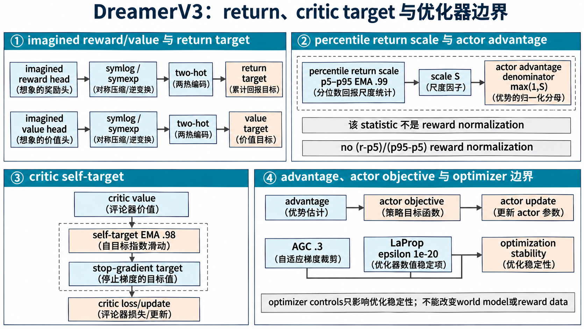
F11 DreamerV3 return、critic target 与优化器边界详解
这张图只回答 DreamerV3 中 return 如何由独立的 reward/value head 构造、actor advantage 如何使用 return scale、critic target 如何慢速更新，以及 AGC 和 LaProp 在哪一层生效。四个区域按“return 构造—尺度统计—critic 目标—actor/optimizer”排列，故意把奖励分布、价值分布、统计尺度和优化器控制分开，避免把 V3 误读成单一 reward normalization 公式。
第一区有两条并列输入：imagined reward distribution 和 imagined value distribution。reward head 与 value head 各自独立，分别经过 symlog/symexp two-hot bins，得到原尺度的 reward/value 预测，再共同参与 return target 的构造。two-hot 表示相邻 bin 的插值权重，不是 one-hot 类别标签；reward/value head 独立也意味着不能拿一个 head 的 target 代替另一个。图中没有把两个 head 合成一个通用回归器。
第二区是 percentile return scale。训练过程中保存 p5–p95 的 return 统计，并用 EMA .99 慢速更新尺度 S。S 只进入 actor advantage 的 denominator max(1,S)，用于避免优势量随任务回报尺度改变而爆炸。它是尺度统计，不会重写 replay 中的 reward，也不是把每个 reward 变成 (r-p5)/(p95-p5)。红色禁止框和绿色“统计量，不改写 reward”标签共同标出这个边界。
第三区是 critic target。critic self-target EMA .98 产生缓慢变化的目标，stop-gradient target 阻止目标分支反向穿过 critic 或世界模型。随后计算 critic loss 并更新 critic 参数；“critic 独立更新”与 actor 的目标分离。stop-gradient 不是停止 critic optimizer，也不是把 actor advantage 的梯度一起截断。图中红色竖线只出现在 target 到 critic loss 的路径上。
第四区是 actor objective 与 optimizer。actor 读取 advantage / max(1,S)，形成 actor objective，更新 actor 参数。AGC .3 和 LaProp epsilon 1e-20 位于优化器控制框中，只决定梯度裁剪和数值稳定，不改变 world model、reward 数据或 replay 记录。右侧三条绿色标签写明“仅控制优化步骤”“不改变 world model”“不改变 reward 数据”，避免把 optimizer hyperparameter 误画成数据预处理。
一个简单例子是：如果某任务的回报尺度在训练早期很小，max(1,S) 保证 actor advantage 的分母至少为 1；如果后期尺度增长，EMA .99 的 S 逐渐跟随而不是瞬间跳变。critic self-target EMA .98 也会滞后于当前 critic，给目标提供平滑性。AGC .3 在同一时间裁剪过大的参数梯度，LaProp epsilon 1e-20 防止极小二阶量导致数值异常；这些过程都不改变 reward head 的原始样本。
与 F10 的区别是 F10 重点解释 symlog、two-hot、unimix 和三种独立鲁棒机制；F11 重点解释 return/critic/actor 的训练边界和 optimizer 作用位置。与 V2 相比，本图不画 discrete straight-through、KL balancing 或 Atari REINFORCE。与 Dreamer4 相比，本图不引入 tokenizer、block-causal transformer 或 flow matching。图内每个常量和箭头只服务 V3 的 return 与优化器读者问题。
图稿检查清单交由 root 独立复核：reward/value 独立、two-hot bins、p5–p95 EMA、S、max(1,S)、critic EMA、stop-gradient、AGC、LaProp、禁止的 reward normalization、箭头和统计边界。此处不宣称图片已通过。
代码与证据边界
代码核对应分别定位 reward/value two-hot head、return percentile EMA、advantage denominator、critic self-target EMA、actor loss、AGC 和 LaProp。它们可能在不同模块和配置中更新，不能用一个常量的出现推断所有组件已经启用。固定代码是作者 reimplementation，论文结果与代码 commit 的对应关系仍按报告中的 evidence boundary 标记。图稿短标签只是导航，不能替代文件路径、函数名和行号。
常见错误
错误一是把 p5–p95 统计画成 reward normalization；正确是只提供 S。错误二是让 S 进入 world-model loss；它只缩放 actor advantage。错误三是把 critic target stop-gradient 画成停止 critic 更新；实际 critic 参数仍然更新。错误四是把 AGC/LaProp 画成 reward head；它们只在 optimizer step 控制更新。错误五是把两个独立 head 合成单一回归器，丢失 DreamerV3 的分布建模边界。
因此，读者应沿四个区域逐级复述：reward/value 各自建模，统计尺度只调 actor advantage，critic target 慢速且停止反向，optimizer 只改参数更新过程。这个顺序既对应论文公式，也能指导源码中的逐函数核验。
训练日志还应分别记录 S、critic target EMA 和 optimizer clipping 统计，不能只保留一个总 loss。只有这样，出现优势爆炸、价值漂移或梯度异常时，才能判断是尺度统计、目标更新还是优化器控制的问题，而不会把所有现象归因为 reward normalization。
另一个实现边界是更新频率。reward/value head 可以随 world-model batch 共同训练，percentile S 需要按回报历史更新，critic self-target EMA 在 critic 迭代间维护慢速副本，AGC 与 LaProp 则在每次 optimizer step 执行。它们的时间轴不同，不能把一次 batch 中出现的多个常量串成同一个前向层。审计配置时应逐项记录更新时机、停止梯度方向和参数归属。
当报告比较不同域时，还要把 S 的单位和窗口保留下来；同一个数值的 S 在不同任务奖励范围下不代表同样的策略梯度强度。图中只给出机制关系，不把某个域的分数提升归因于单一 EMA 或 optimizer 常量。
r4 return、目标网络与优化器作用位置复核
F11 将 V3 的训练信号拆成四条独立路径。imagined reward 和 value 分布各自经过 two-hot 头恢复原尺度，二者共同参与 R^lambda 或价值目标；reward head 的 target 不能替换 value head。p5–p95 return 统计经 EMA .99 维护尺度 S，max(1,S) 只出现在 actor advantage 的 denominator，避免不同奖励单位导致策略梯度爆炸，原始 replay reward 不被改写。
critic self-target EMA .98 产生慢速价值副本，stop-gradient 只切断 target 到 critic 或 dynamics 的反向路径，critic optimizer 仍会更新当前 critic。actor 使用 A/max(1,S) 构造目标，AGC .3 在参数梯度范数与参数范数之间做裁剪，LaProp 的 epsilon 1e-20 只防止二阶统计数值异常。图上应分别画统计量、目标副本和 optimizer step，不能把它们串成一个前向层。
代码阅读可从 dreamerv3/agent.py::Agent.loss 追踪 imagined reward/value、return normalizer、advantage 与 actor/critic loss，再到 optimizer 的 AGC/LaProp 配置；dreamerv3/rssm.py 的 latent 与 KL 只提供状态和世界模型目标。固定仓库是 reimplementation，论文与代码版本关系保持 evidence-aligned。日志审计应分别记录 S、critic EMA、梯度裁剪比例和 optimizer step，单一总 loss 无法判断尺度、目标或更新异常。
最小失败例是把 S 错接到 world-model loss，导致表示学习随奖励单位变化；或把 target EMA 误当成冻结 critic，导致读者以为价值网络不能更新。正确读图顺序是 reward/value 建模、S 统计、critic 目标、actor advantage、optimizer 更新，任何混线都应由 root 作为图稿问题重新核验。
表示和世界模型损失
V3 继续使用离散 RSSM。rssm.observe 在真实 token 上更新 deter 和 stoch；rssm.imagine 只用 prior 和 policy 在未来滚动；rssm.loss 计算 dyn KL = KL(stop_gradient(posterior) || prior) 与 rep KL = KL(posterior || stop_gradient(prior))，并对两者分别施加 free nats。以size50m为例，32个categorical变量、每个32类的状态展平为1024维，与4096维deterministic state拼接为5120维；8是核心分块数，不是随机变量数。
观察和奖励的尺度通过 symlog：symlog(x)=sign(x) log(|x|+1)，逆变换 symexp(y)=sign(y)(exp(|y|)-1)。随机 reward/value 使用 exponentially spaced bins 的 two-hot target，而不是把大数值直接送进 MSE。V3 的 categorical heads 仍然输出离散分布，但预测的期望可以落在连续 bin 之间。
返回、价值和探索
V3 用 percentile range 对 return 做归一化，只在 return 范围大于 1 时缩放，避免稀疏奖励被标准差放大；用 EMA 维护 scale；critic 以分类分布预测 value，slow target 由 EMA 更新。actor 可以用 dynamics gradient、REINFORCE 或二者混合，并在归一化后的 return 上加固定 entropy scale。代码的 Agent.loss 还维护 retnorm、valnorm、advnorm 三个归一化器，并可对 replay 起点做 value loss。
公式、损失与直觉
symlog 和逆变换为：
two-hot target 将标量 y 分配到相邻 support bins b_i,b_{i+1}：
return normalization 使用 EMA 维护 percentile range，只在范围大于 1 时缩放，避免稀疏奖励被小方差夸大。 公式的直觉是把表示学习、未来预测和行为目标接在同一时间轴上。一个好的模型即使重建清晰，也可能在奖励相关因素上失真；因此要把 observation loss、reward/value loss、KL/regularization 和 policy objective 分开解释。
离散RSSM的两种KL方向
V3 RSSM observe 用真实 tokens 得 posterior，imagine 用 policy action 得 prior。loss:120-130 计算 dyn KL 和 rep KL：dyn 让 prior 在 stopped posterior 目标下变得可预测，rep 让 representation 受到 stopped prior 约束。两项都适用 free_nats，但其梯度方向不同。_core:135-160 还会将 stochastic state 展平，把 action 除以 stop-gradient 的 max(1,abs(action))；这意味着 action 归一化本身不向 policy 传回分母梯度。_dist:173-176 的 unimix 是 categorical probability mixing，和 value head 的 two-hot 完全是不同对象。
设 B=2、T=4、deter=4096、stoch=32、classes=32，stoch state 是 [2,4,32,32]，feat2tensor 是 [2,4,5120]。若 size200m 配置 classes64、deter8192，则 width=10240。这个手算例只展示轴和宽度，不能代替 JAX jit 实际数组。
Agent.loss的前向与梯度路径
Agent.loss 先处理 encoder/dynamics/decoder，reward head 输入可由 reward_grad 控制是否 detached；continue target来自非terminal并可乘 horizon correction；每个 loss 必须形状 [B,T]。之后从 dynamics entries 最后 K 个状态开始 imagination，先把真实起点 reshape 成 [B*K,1,...]，再拼到 imagined feature 前端。ac_grads 只影响观察起点到 actor/critic 的梯度；imagined future 在 concat 时还使用 stop-gradient。这样可以让行为学习消费 imagined future，同时避免所有模型表示损失被 actor 反向改变。
以 B=2,T=64,K=4,H=15 为例，start rows=8、state time=16。imag_loss 读取 16 个 feature positions 和对应 action/reward/continue，lambda_return 用 last/term/discount 计算 weights。若把 H=15 当作所有 loss 数组长度，会少掉 prepend 的真实起点；若把 K 当作 episode 数而不是每个 batch 的多个 start，会误解 loss reshape [B,K]。
行为、想象与真实环境闭环
从当前状态出发追踪动作怎样产生、未来怎样展开、回报怎样被消费。模型内候选或想象轨迹不是已经在环境中执行的路径。
数据与控制流
领域关键执行基底是 cross-domain normalized imagination loop：多模态输入先进入离散 RSSM，观察、奖励和价值都经过尺度变换，actor-critic 在归一化 imagined returns 上更新。 真实输入、状态更新、未来展开、目标计算和环境调用必须按时间顺序分开。
D2 Mastering Diverse Domains through World Models 训练与推理顺序
主入口先解析默认配置与容量/任务覆盖，训练批次经 replay/context 拼接后进入 Agent.loss。模型前向、imagined policy/value 目标与可选 replay value 目标按各自权重组合；train 后更新慢价值网络。部署的 policy 路径只基于当前观测和历史 carry 选动作。缓存 context 属于状态连续性条件，不能因为 shape 合法就视为历史正确。
核对来源：dreamerv3/agent.py（L156-240,312-340,382-447）；dreamerv3/rssm.py（L18-28,61-130）；dreamerv3/configs.yaml（此附件保存在完整本地归档中）（L88-114,133-151）。
从数据到行为的完整执行基底
多模态输入先进入离散 RSSM，观察、奖励和价值都经过尺度变换，actor-critic 在归一化 imagined returns 上更新。
贯穿实例、形状与时间对齐
用短序列和可以手算的数字核对抽象机制。这里的教学实例明确区别于论文实验值，也不冒充目标框架的运行结果。
算法流程与具体 逐步计算实例
真实序列经过 encoder、RSSM observe 和多头 decoder 得到 world-model loss；posterior 末状态作为 imagination 起点，RSSM imagine 使用 policy 产生未来 state。reward/value distribution 使用 symexp two-hot categorical 目标；V3 actor 对离散和连续动作均用 REINFORCE，advantage 由 return normalization 的 percentile range（EMA 平滑、分母至少 1）缩放并加 entropy。critic 以 λ-return 的 maximum likelihood 拟合 categorical return，并以自身参数的 EMA 输出作 regularizer；这不是 V2 的周期 slow-copy，也不是 dynamics-gradient actor 默认分支。
多模态输入在同一训练闭环中仍需保留不同预处理路径：图像由 CNN 编码/解码，向量由 MLP 编码/解码且采用 symlog。跨域“固定超参数”也不等于所有环境协议相同；各 benchmark 的 action repeat、环境实例数、训练步数与 replay ratio 仍须以 Table 2 和 Methods 的具体设置为准，不能用一个仓库默认配置代表全部实验。
真实序列经过 encoder、RSSM observe 和多头 decoder 得到 world-model loss；posterior 末状态作为 imagination 起点，RSSM imagine 使用 policy 产生未来 state。reward/value distribution 先经过 two-hot/symlog 解码，再由 return/advantage normalizer 规范；论文机制与当前代码须分别阅读：当前JAX重实现用停止梯度的归一化advantage构造logπ策略目标；slowtar配置决定bootstrap读取当前还是慢价值，固定YAML默认false，slow value仍参与正则。多模态输入通过统一 token/dict 接口进入同一训练闭环，但每个环境仍有 action repeat、环境实例数和 replay ratio 等协议差异。 对一个最小序列 walkthrough：给定起始观测和动作，先得到表示，再更新模型状态；若处于 imagination，则跳过真实观测，使用 prior/dynamics 产生下一状态；价值/奖励头把这段序列变成训练目标；只有在线论文才把最新真实观测写回 replay。这个 walkthrough 也是后续代码问题台账的输入。
V3的统一配置不是一个数值
DreamerV3 的“固定配置”必须拆成四层。论文层面描述跨域训练的鲁棒性；dreamerv3/configs.yaml 的 defaults 给出 batch/replay/run；agent 下的 class defaults 给出 RSSM、head 和 optimizer 参数；size overlay 又会重写 deter、classes、units。比如 default dyn.rssm 有 deter8192、hidden1024、stoch32、classes64，而 size50m overlay 变成 deter4096、hidden512、classes32。若只在报告写“V3使用32×32 categorical state”，就掩盖了当前 size 实例的差异，也会让读者误以为所有 benchmark 都用同一容量。
launcher 的可执行语义同样跨文件。main 先解析 named config，再 flags；make_env 根据 suite/task 选择环境；make_replay 用 batch_length、consec 和 replay_context 计算采样长度；make_stream 再用 prefix/context 将样本包装成连续序列。训练批次的第一个时间位置可能是缓存上下文，不应直接计入新 loss；这解释了为什么 batch_length 和 replay sample length 不相等。
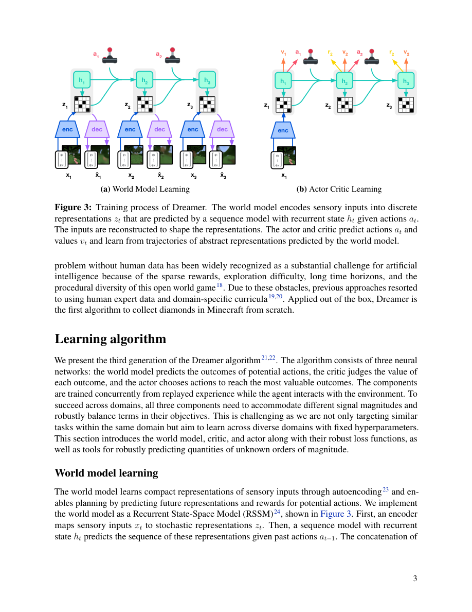
Figure 3: Training process of Dreamer. The world model encodes sensory inputs into discrete representations zt that are predicted by a sequence model with recurrent state ht given actions at. The inputs are reconstructed to shape the representations. The actor and critic predict actions at and values vt and learn from trajectories of abstract representations predicted by the world model.
选择理由
原文训练流程图把 world model 与 actor-critic 两条路径并排画出，能区分 discrete representation、reconstruction、想象轨迹和行为头；这是分离 V3 数值规范与行为梯度的核心锚点。
图表说明
左侧 World Model Learning 从 x_1,x_2,x_3 经 enc 得到离散 z_1,z_2,z_3，递归状态 h_1,h_2,h_3 由动作 a_1,a_2 驱动；dec 输出 x̂_t 重建输入。右侧 Actor Critic Learning 以真实输入编码得到 z_1，序列模型沿 a_1,a_2 预测后续表示，红色 a_t 表示 actor 动作，橙色 v_t 表示 critic value，黄色 r_t 表示预测 reward。图注说 actor 与 critic 从 world model 预测的 abstract representations trajectories 学习，而不是直接在像素上更新。
进一步分析
这张图支持 V3 仍是在线 replay + latent actor-critic 的稳定事实：world model 在真实序列上 observe，actor-critic 在预测的抽象轨迹上训练。它没有把 symlog、two-hot、unimix 画成同一个模块；这些是后续 loss/distribution 规范，需分别回到 PDF p.5–7。V3 正文用 REINFORCE 处理离散和连续动作，critic 是 return 的 categorical 分布；不能根据图中 actor/critic 的箭头把 V2 的 dynamics-gradient 混回论文算法。图左侧的 reconstruction 是无监督世界模型信号，右侧的 actor/critic 是从抽象状态轨迹消费模型预测的行为信号；两者共享 RSSM 状态接口，却不是同一损失。V3 的稳健化工作发生在这些接口上：symlog 改变标量目标的数值坐标，two-hot 把 reward/value 变成跨尺度的分类目标，unimix 只改变分类概率的下限，return percentile 与 critic EMA 则改变行为目标的尺度和自举稳定性。用这张图回读正文时，应沿着“真实序列→表示→想象轨迹→行为更新”的顺序核对梯度和数据来源。图中 z_t 是随机表征，h_t 是递归记忆，二者拼接后才成为 reward、continue、actor 和 critic 的共同状态；因此不能把离散 z 的采样误写成价值头直接读取像素。
证据边界
图没有给出 symlog 函数式、two-hot bins、unimix 的 1% 数值或 return EMA 的 percentile 公式；这些只能由 PDF p.6–7 Eq.(6)–(11) 和 Methods 读取。图中红色箭头是预测/学习信号的可视编码，不能单独证明真实环境动作已经执行或某条梯度穿过 decoder。图中绿色递归状态、蓝色编码器、紫色解码器只是图形约定；损失的定义仍需正文公式逐项锁定，不能由颜色推导学习规则。
固定源码入口：sources/repos/dreamerv3/snapshot-ghfast/dreamerv3-e01491fad6434b2245a3b8ca201dd7faedcc458c；commit=e01491fad6434b2245a3b8ca201dd7faedcc458c
快照边界：bundle 中还有未在当前快照解析到的历史路径：sources/repos/dreamerv3/snapshot-ghfast/dreamerv3-e01491fad6434b2245a3b8ca201dd7faedcc458c/dreamerv3/jax/outs.py
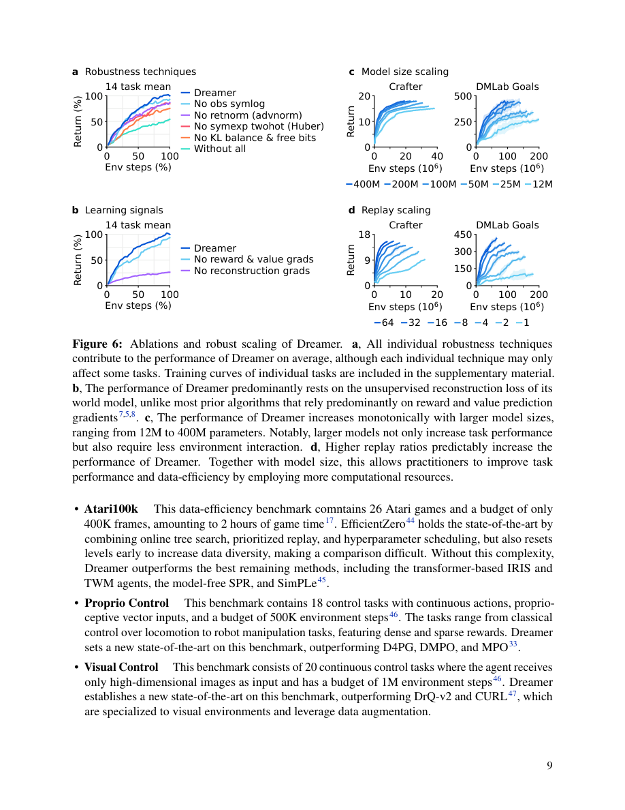
Figure 6: Ablations and robust scaling of Dreamer. a, All individual robustness techniques contribute to the performance of Dreamer on average, although each individual technique may only affect some tasks. Training curves of individual tasks are included in the supplementary material. b, The performance of Dreamer predominantly rests on the unsupervised reconstruction loss of its world model, unlike most prior algorithms that rely predominantly on reward and value prediction gradients7,5,8. c, The performance of Dreamer increases monotonically with larger model sizes, ranging from 12M to 400M parameters. Notably, larger models not only increase task performance but also require less environment interaction. d, Higher replay ratios predictably increase the performance of Dreamer. Together with model size, this allows practitioners to improve task performance and data-efficiency by employing more computational resources.
选择理由
四组面板是 V3 设计选择与可扩展性最密集的原文实验：a 对比鲁棒性技术，b 对比学习信号，c 改变模型大小，d 改变 replay ratio；可直接核验组合机制而非单一技巧。
图表说明
面板 a 的横轴是环境步数百分比，纵轴是 14-task mean return，曲线包括完整 Dreamer、去掉 observation symlog、return normalization、symexp twohot、KL balance/free bits 及全部鲁棒技术；面板 b 同样是 14-task mean，比较停用 reward/value gradients 与停用 reconstruction gradients。面板 c 在 Crafter 与 DMLab Goals 上以百万环境步为横轴，颜色代表 12M–400M 模型；面板 d 以同样坐标展示 replay ratio 1–64。曲线总体显示完整配置更高，模型放大和 replay 增加通常提升回报并减少交互需求。
进一步分析
这张图把各功能放在不同实验语境：a 是 14 任务聚合消融，b 只讨论 world-model reconstruction 与 task-specific reward/value 学习信号，c/d 是 Crafter 与 DMLab 的尺度实验。它支持论文每个鲁棒技术平均有贡献、但影响任务子集不同的表述；不能由单条蓝橙差值断言 symlog 只负责观察、two-hot 只负责 reward，或 unimix 单独带来全部收益。原文 Methods 还说明 return normalization 是 percentile range 的 EMA，critic 的 EMA 是对自身参数输出的正则，两者在图中合并为标签时仍须分开。面板 a 的删除项并不对称：无 KL balance & free bits 一次移除了两个 world-model 规范，不能把下降全归因于 KL；无 symexp twohot (Huber) 还同时改变了目标分布和损失函数。面板 b 把 reconstruction gradient 与 reward/value gradient 的信息来源分开，说明 V3 的表现主要依赖任务无关的重建信号，但不能据此说 reward/value 没有作用。c/d 的曲线更像资源扩展实验，模型参数、回放比和数据需求共同变化，不能与 a 的单一消融差值混为一谈。读 a 时还要注意横轴是相对环境步数，读 c/d 时则是百万步绝对预算；二者的曲线斜率和终点不具备直接可比性。
证据边界
图没有展示 V3 的 150+ 全部任务，也没有单独拆开 encoder/dynamics/policy 的 unimix；面板 a 的“无 KL balance & free bits”同时移除两个机制，不能做纯 KL balancing 的独立效应。c/d 的横轴预算和模型规模不同，不能与 a/b 的百分比环境步数直接比较；所有曲线为论文协议下的聚合结果。
固定源码入口：sources/repos/dreamerv3/snapshot-ghfast/dreamerv3-e01491fad6434b2245a3b8ca201dd7faedcc458c；commit=e01491fad6434b2245a3b8ca201dd7faedcc458c
快照边界：bundle 中还有未在当前快照解析到的历史路径：sources/repos/dreamerv3/snapshot-ghfast/dreamerv3-e01491fad6434b2245a3b8ca201dd7faedcc458c/dreamerv3/jax/outs.py
源码架构、调用链与实现差异
先看执行入口与模块责任，再追踪公式落到哪个固定文件和函数。源码事实解释当前实现，不能反向补写论文没有报告的实验设置。
代码来源边界
作者 reimplementation 的固定提交用于函数级静态阅读；论文与 reimplementation 的 精确配置对应关系 未宣称。
discrete RSSM with unimix / dyn KL / rep KL
论文定位：Sec. 3。
实现核对：sources/repos/dreamerv3/snapshot-ghfast/dreamerv3-e01491fad6434b2245a3b8ca201dd7faedcc458c/dreamerv3/rssm.py:16-146 RSSM,observe,imagine,loss
结论边界：固定实现是 danijar/dreamerv3@e01491fad6434b2245a3b8ca201dd7faedcc458c 的后续 JAX 重实现。它能回答当前配置、状态和训练分支；与论文发表时每个实验配置的精确关系仍需另外证明。
核对来源：dreamerv3/agent.py（L156-240,312-340,382-447）；dreamerv3/rssm.py（L18-28,61-130）；dreamerv3/configs.yaml（此附件保存在完整本地归档中）（L88-114,133-151）。
symlog and two-hot / symlog(x)=sign(x)log(|x|+1)
论文定位：Sec. 3.2。
实现核对：sources/repos/dreamerv3/snapshot-ghfast/dreamerv3-e01491fad6434b2245a3b8ca201dd7faedcc458c/dreamerv3/agent.py:137-238 Agent.train,Agent.loss
结论边界：固定实现是 danijar/dreamerv3@e01491fad6434b2245a3b8ca201dd7faedcc458c 的后续 JAX 重实现。它能回答当前配置、状态和训练分支；与论文发表时每个实验配置的精确关系仍需另外证明。
核对来源：dreamerv3/agent.py（L156-240,312-340,382-447）；dreamerv3/rssm.py（L18-28,61-130）；dreamerv3/configs.yaml（此附件保存在完整本地归档中）（L88-114,133-151）。
normalized imagination actor-critic / R^λ / scale_EMA
论文定位：Sec. 3.3。
实现核对：sources/repos/dreamerv3/snapshot-ghfast/dreamerv3-e01491fad6434b2245a3b8ca201dd7faedcc458c/dreamerv3/agent.py:382-446 imag_loss; sources/repos/dreamerv3/snapshot-ghfast/dreamerv3-e01491fad6434b2245a3b8ca201dd7faedcc458c/dreamerv3/agent.py:482-490 lambda_return
结论边界：固定实现是 danijar/dreamerv3@e01491fad6434b2245a3b8ca201dd7faedcc458c 的后续 JAX 重实现。它能回答当前配置、状态和训练分支；与论文发表时每个实验配置的精确关系仍需另外证明。
核对来源：dreamerv3/agent.py（L156-240,312-340,382-447）；dreamerv3/rssm.py（L18-28,61-130）；dreamerv3/configs.yaml（此附件保存在完整本地归档中）（L88-114,133-151）。
Mastering Diverse Domains through World Models：实现遗漏与证据边界
论文表格与固定提交运行的一一对应关系的证据边界
论文说明：论文报告了任务、预算和结果。 固定材料只能说明：固定提交或来源边界不能证明该表格由此版本生成。 因此，只能标记 与证据静态对应，不能宣称复现。（作者 reimplementation 的固定提交用于函数级静态阅读；论文与 reimplementation 的 精确配置对应关系 未宣称。）
核对来源：dreamerv3/agent.py（L156-240,312-340,382-447）；dreamerv3/rssm.py（L18-28,61-130）；dreamerv3/configs.yaml（此附件保存在完整本地归档中）（L88-114,133-151）。
随机种子与结果聚合的证据边界
论文说明：部分图表给出均值/标准差或多次运行。 固定材料只能说明：静态阅读未执行训练，也未加载 checkpoint。 因此，结果数字只来自论文原页。（sources/papers/2301.04104/2301.04104v2.pdf）
核对来源：dreamerv3/agent.py（L156-240,312-340,382-447）；dreamerv3/rssm.py（L18-28,61-130）；dreamerv3/configs.yaml（此附件保存在完整本地归档中）（L88-114,133-151）。
运行环境与依赖的证据边界
论文说明：论文给出算法和实验协议。 固定材料只能说明：本任务不安装目标仓库依赖、不运行 GPU/TF/JAX。 因此，运行时行为保持未验证。（本报告的范围是静态论文与源码分析）
核对来源：dreamerv3/agent.py（L156-240,312-340,382-447）；dreamerv3/rssm.py（L18-28,61-130）；dreamerv3/configs.yaml（此附件保存在完整本地归档中）（L88-114,133-151）。
数据、时间与行为的顺序
真实观测或视频先进入表示编码器，得到状态或 token；动力学再在动作条件下预测后续状态。训练时真实序列提供监督，未来规划或想象分支则沿自身状态向前推进。任务头和行为模块各消费相应特征；不同论文是否预测 reward、discount 或 value 必须以本篇机制与配置为准。动作只有被交给环境时才成为真实交互，候选动作与想象动作保留在模型内部。
模块责任与证据层次
原始关系图将论文机制、固定代码事实、证据支持的解释和真实来源边界分开。节点之间的联系表达映射责任，而不是证明模块在某次论文实验中必然启用。没有官方实现时，连接停在论文级接口；后续实现或第三方仓库只能以它们自己的身份出现。
Mastering Diverse Domains through World Models：方法级修改边界（只读解释）
理解或替换 discrete RSSM with unimix需要保持什么
不执行修改；先保持输入输出契约，再比较梯度、状态和下游消费。 必须检查表示形状、时间对齐、目标 stop-gradient、来源边界。
涉及的实现接口：sources/repos/dreamerv3/snapshot-ghfast/dreamerv3-e01491fad6434b2245a3b8ca201dd7faedcc458c/dreamerv3/rssm.py::RSSM,observe,imagine,loss。
阅读时应沿调用者回到被调函数，核对状态形状、时间对齐、目标停止梯度和下游消费；这一检查只证明静态接口一致，没有训练或性能复现结果。
核对来源：dreamerv3/agent.py（L156-240,312-340,382-447）；dreamerv3/rssm.py（L18-28,61-130）；dreamerv3/configs.yaml（此附件保存在完整本地归档中）（L88-114,133-151）。
理解或替换 symlog and two-hot需要保持什么
不执行修改；先保持输入输出契约，再比较梯度、状态和下游消费。 必须检查表示形状、时间对齐、目标 stop-gradient、来源边界。
涉及的实现接口：sources/repos/dreamerv3/snapshot-ghfast/dreamerv3-e01491fad6434b2245a3b8ca201dd7faedcc458c/dreamerv3/agent.py::Agent.train,Agent.loss。
阅读时应沿调用者回到被调函数，核对状态形状、时间对齐、目标停止梯度和下游消费；这一检查只证明静态接口一致，没有训练或性能复现结果。
核对来源：dreamerv3/agent.py（L156-240,312-340,382-447）；dreamerv3/rssm.py（L18-28,61-130）；dreamerv3/configs.yaml（此附件保存在完整本地归档中）（L88-114,133-151）。
理解或替换 normalized imagination actor-critic需要保持什么
不执行修改；先保持输入输出契约，再比较梯度、状态和下游消费。 必须检查表示形状、时间对齐、目标 stop-gradient、来源边界。
涉及的实现接口：sources/repos/dreamerv3/snapshot-ghfast/dreamerv3-e01491fad6434b2245a3b8ca201dd7faedcc458c/dreamerv3/agent.py::lambda_return。
阅读时应沿调用者回到被调函数，核对状态形状、时间对齐、目标停止梯度和下游消费；这一检查只证明静态接口一致，没有训练或性能复现结果。
核对来源：dreamerv3/agent.py（L156-240,312-340,382-447）；dreamerv3/rssm.py（L18-28,61-130）；dreamerv3/configs.yaml（此附件保存在完整本地归档中）（L88-114,133-151）。
离散 RSSM 与均匀概率混合：机制到实现的逐项对应
离散 latent、unimix 和 KL balance 提高跨域状态稳定性。
该分析条目的符号表达为：dyn KL / rep KL。离散 latent、unimix 和 KL balance 提高跨域状态稳定性。
论文依据：Sec. 3。
| 固定实现入口或来源边界 | 行号与符号 | 在本机制中承担的职责 |
|---|---|---|
dreamerv3/rssm.py |
16-146；RSSM、observe、imagine、loss |
离散 RSSM 与 KL balance |
阅读切片：rssm.py loss。
论文与实现的关系：论文机制与代码/来源边界逐项对照；未运行训练。
对应限制：作者 reimplementation 的固定提交用于函数级静态阅读；论文与 reimplementation 的 精确配置对应关系 未宣称；没有建立论文表格与固定提交运行的一一对应关系。
symlog 数值域与 two-hot 目标：机制到实现的逐项对应
将输入、奖励和价值尺度转为可跨域学习的分布目标。
该分析条目的符号表达为：symlog(x)=sign(x)log(|x|+1)。将输入、奖励和价值尺度转为可跨域学习的分布目标。
论文依据：Sec. 3.2。
| 固定实现入口或来源边界 | 行号与符号 | 在本机制中承担的职责 |
|---|---|---|
dreamerv3/agent.py |
137-238；Agent.train、Agent.loss |
world-model/behavior 训练 |
阅读切片：outs.py / normalizers。
论文与实现的关系：论文机制与代码/来源边界逐项对照；未运行训练。
对应限制：作者 reimplementation 的固定提交用于函数级静态阅读；论文与 reimplementation 的 精确配置对应关系 未宣称；没有建立论文表格与固定提交运行的一一对应关系。
归一化返回下的想象行为学习：机制到实现的逐项对应
return/advantage/slow target 规范 actor-critic 更新。
该分析条目的符号表达为：R^λ / scale_EMA。return/advantage/slow target 规范 actor-critic 更新。
论文依据：Sec. 3.3。
| 固定实现入口或来源边界 | 行号与符号 | 在本机制中承担的职责 |
|---|---|---|
dreamerv3/agent.py |
382-446；imag_loss |
normalized imagined policy/value loss and gradient routing |
dreamerv3/agent.py |
482-490；lambda_return |
backward lambda-return recursion |
阅读切片：agent.py。
论文与实现的关系：论文机制与代码/来源边界逐项对照；未运行训练。
对应限制：作者 reimplementation 的固定提交用于函数级静态阅读；论文与 reimplementation 的 精确配置对应关系 未宣称；没有建立论文表格与固定提交运行的一一对应关系。
实现边界：论文表格与固定提交运行的一一对应关系
论文说明：论文报告了任务、预算和结果。 固定实现或来源显示：固定提交或来源边界不能证明该表格由此版本生成。 对结论的影响：只能标记 与证据静态对应，不能宣称复现。
依据：作者 reimplementation 的固定提交用于函数级静态阅读；论文与 reimplementation 的 精确配置对应关系 未宣称。
实现边界：随机种子与结果聚合
论文说明：部分图表给出均值/标准差或多次运行。 固定实现或来源显示：静态阅读未执行训练，也未加载 checkpoint。 对结论的影响：结果数字只来自论文原页。
依据：2301.04104/2301.04104v2.pdf。
实现边界：运行环境与依赖
论文说明：论文给出算法和实验协议。 固定实现或来源显示：本任务不安装目标仓库依赖、不运行 GPU/TF/JAX。 对结论的影响：运行时行为保持未验证。
依据：本报告的范围是静态论文与源码分析。
接口保持要求：理解 discrete RSSM with unimix 的输入输出契约
不执行修改；只说明替换该机制时必须保持的状态、时间和梯度契约。 需要保持：真实输入与 imagined input 分开；时间维度和状态消费方不变；真实来源边界 不被隐藏。 实现位置：sources/repos/dreamerv3/snapshot-ghfast/dreamerv3-e01491fad6434b2245a3b8ca201dd7faedcc458c/dreamerv3/rssm.py::RSSM,observe,imagine,loss。 静态核验：重读源文件、调用者、问题台账和固定证据；不运行训练。
接口保持要求：理解 symlog and two-hot 的输入输出契约
不执行修改；只说明替换该机制时必须保持的状态、时间和梯度契约。 需要保持：真实输入与 imagined input 分开；时间维度和状态消费方不变；真实来源边界 不被隐藏。 实现位置：sources/repos/dreamerv3/snapshot-ghfast/dreamerv3-e01491fad6434b2245a3b8ca201dd7faedcc458c/dreamerv3/agent.py::Agent.train,Agent.loss。 静态核验：重读源文件、调用者、问题台账和固定证据；不运行训练。
接口保持要求：理解 normalized imagination actor-critic 的输入输出契约
不执行修改；只说明替换该机制时必须保持的状态、时间和梯度契约。 需要保持：真实输入与 imagined input 分开；时间维度和状态消费方不变；真实来源边界 不被隐藏。 实现位置：sources/repos/dreamerv3/snapshot-ghfast/dreamerv3-e01491fad6434b2245a3b8ca201dd7faedcc458c/dreamerv3/agent.py::lambda_return。 静态核验：重读源文件、调用者、问题台账和固定证据；不运行训练。
Mastering Diverse Domains through World Models 数据流的阅读含义
真实输入、表示、动力学、奖励/价值和行为输出；虚线表示 真实来源边界。 它表达的是数据流。 原始定义位置：diagrams.md:D1；核对来源：dreamerv3/rssm.py；dreamerv3/agent.py；dreamerv3/agent.py；sources/repos/dreamerv3/snapshot-ghfast/dreamerv3-e01491fad6434b2245a3b8ca201dd7faedcc458c/dreamerv3/jax/outs.py。
Mastering Diverse Domains through World Models 训练与推理顺序的阅读含义
先读取真实序列，再进入 prior/imagination，最后更新行为或执行动作。 它表达的是训练与交互的时间顺序。 原始定义位置：diagrams.md:D2；核对来源：2301.04104/2301.04104v2.pdf。
论文机制与证据层的阅读含义
论文事实、固定源码事实、与固定证据静态对应 inference 与 真实来源边界 分层。 它表达的是机制责任及证据层次。 原始定义位置：diagrams.md:D3；核对来源：00_identity/paper-identities.json；00_identity/repo-identities.json。
该篇原始结构化分析的所有科学条目已转换为本章的机制、实验和问答解释。需要逐字段复核时，可打开原始分析包（此附件保存在完整本地归档中）；附件保留原始字节，当前科学修订另有派生版本，二者身份分别记录。
F22 阅读引导：从 YAML 走到 replay 和 JAX update
先看 configs.yaml 的 defaults、size overlay、task overlay 和 debug overlay。把它们当成逐层匹配规则，记录哪些字段影响 batch/time、RSSM 宽度、imag_length、normalizer 和 optimizer。
然后读 Agent.__init__()：encoder、RSSM、decoder、heads、slowval、三种 normalizer 和 Optimizer 都在这里创建；ext_space 决定 replay context 是否携带模块 entry。接着沿 Agent.loss() 的 shape 断言走，从 (B,T) world-model losses 到 (B*K,H+1) imagination sequence，再看 imag_loss() 如何使用 slowval、return/value/advantage normalizer。
状态恢复要读 _apply_replay_context() 和 RSSM.starts()/truncate()。前 K 步 entries 形成 context carry，右侧数据进入训练；连续 chunk 依据 consec 选择缓存 carry。外层 run/train.py 再把 replay.add、sample、agent.train 和 replay.update 串起来。
最后读 Agent._make_opt() 与 embodied/jax/opt.py，核对 AGC、RMS、momentum、schedule、warmup、nj.grad、pmean 和 apply_updates 的顺序。证据只来自固定 snapshot 的静态文件，未执行 JAX 训练或验证任何 runtime metric。
证据附件：事实契约（此附件保存在完整本地归档中）；详细图解（此附件保存在完整本地归档中）；源码证据清单（此附件保存在完整本地归档中）。
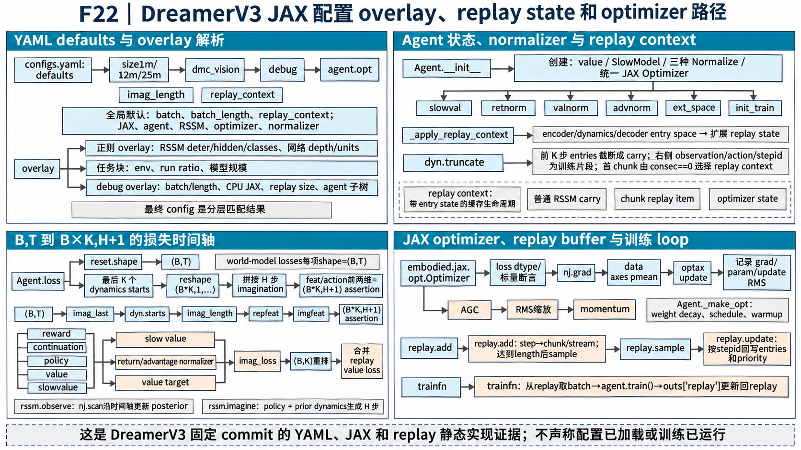
F22 详解：DreamerV3 的配置 overlay、状态生命周期和 JAX 优化器
DreamerV3 的源码阅读入口是 dreamerv3/configs.yaml，因为它把“一个方法”展开成全局默认、任务 overlay、模型规模 overlay 和 debug overlay 的匹配结果。defaults 区包含 batch_size、batch_length、replay_context、replay 容量和 run ratio；JAX 区决定 platform、compute dtype、devices、jit 与 preallocation；agent 区则同时声明 RSSM 宽度、encoder/decoder、reward/value head、imag_length、horizon、slowvalue 和三种 normalizer。size1m 到 size400m 使用 .*\.rssm、.*\.depth、.*\.units 这样的正则键覆盖嵌套字段，任务块再改写 env 与 run 配置。debug 块进一步把 batch、length、replay size、CPU platform 和 agent 子树缩小。图中应把这些 overlay 画成逐层覆盖，而不是把 YAML 当成一个平面常量表；静态文件只能证明覆盖规则和默认值，不能证明某个命令行选择已经加载了哪一组合。
Agent.__init__() 把配置物化成带状态的 JAX/Ninjax 模块。它按 config.enc.typ、config.dyn.typ 和 config.dec.typ 创建 encoder、RSSM dynamics 和 decoder，用 feat2tensor 把 deter 与展平的 stochastic state 拼接，再创建 reward、continuation、policy 和 value heads。slowval 是以 val 为 source 的 SlowModel，retnorm、valnorm、advnorm 分别保存 return、value 与 advantage 的统计；统一的 embodied.jax.Optimizer 管理 world model 和 actor/value 等模块。ext_space 在 replay_context 打开时把三个模块的 entry_space 公开给 replay。这样，图中的 Agent 状态至少包含 carry、slow value、normalizer variables、optimizer state 和 replay entries 五类生命周期，不能缩成一个“隐状态”方框。
Agent.loss() 先从 obs['is_first'] 的 shape 读出 (B,T)，经过 encoder、dyn.loss()、decoder、reward head 和 continuation head 得到每项 world-model loss。源码逐项断言这些 loss 的前两维都是 (B,T)；图片 target 会除以 255，其余 observation 维持原 dtype/space 合同。接着进入 imagination：K = min(imag_last or T, T)，dyn.starts() 取最后 K 个时间位置并 reshape 为 (B*K,...)，policy 在 RSSM prior 上滚动 H=imag_length 步。真实 representation 的最后 K 项被 reshape 为 (B*K,1,...)，与想象特征拼成 (B*K,H+1,...)；feat 和 action 都有相同的 shape assertion。这解释了图中从二维 batch/time 网格到 K 条并行 imagination 轨迹的折叠箭头。
dreamerv3/rssm.py 给出 observe/imagine 的状态转移细节。observe() 先把 carry、tokens、action cast 到计算 dtype；批量模式通过 nj.scan 沿 axis=1 调 _observe()。_observe() 根据 reset mask 清零旧 deter、stoch 和 action，经过 _core() 更新 deter，再把 tokens 与 deter 拼接生成 posterior logits，采样 one-hot stochastic state，并返回 entry 与 feat。imagine() 则在 single 模式下由 policy 从 carry 产生 action，调用 _core() 与 _prior() 得到 prior logits，再采样 stoch；批量模式用 nj.scan 重复 length 次。因而 replay 中的 observe entry 可以恢复真实序列上下文，而 imagination 只保留 dynamics prior 路径。RSSM.starts() 把 entries 最后 K 项折叠为 B*K 起点，正是 Agent.loss 中 shape 转换的来源。
imag_loss() 将想象序列接到三个状态统计器和两个 value 路径。它先从 valnorm.stats() 还原 value 与 slow value，按 slowtar 选择 target value；continuation 与 discount 形成 cumulative weight。lambda_return() 用 terminal、reward、target value、bootstrap 和 lambda 递推 return。return 经过 retnorm(ret, update) 得到 offset/scale，advantage 再减去 target value 并通过 advnorm 标准化。policy loss 对每个 action distribution 的 log probability 乘以 stop-gradient advantage，并加 entropy；value loss 用 valnorm(ret, update) 的标准化 target，同时包含当前 value 与 slowvalue 的正则项。输出的 ret 还被 replay value loss 使用。图中要分开画 slowval、tarval、retnorm、valnorm、advnorm 和 weight，否则无法解释 policy/value 两条损失如何共享同一 return 又使用不同统计量。
replay value 路径在 Agent.loss() 的后半部分触发。若 repval_loss 打开，代码从 representation feature、is_last、is_terminal、reward 和 imagination return 的首项构造 K 个 replay 起点，再调用 repl_loss()。repl_loss() 用 slow value 或 online value 作为 target value，按 episode last 计算 weight，用 boot 和 lambda return 得到 replay return，并用 valnorm 标准化后训练 value 与 slowvalue 正则。之后所有 losses 必须与 self.scales 的键集合完全一致，再按配置 loss scales 求和。这个键集合断言是一个重要的静态合同：新增或删除 head 不能只改图中一个方框，必须同步更新 scales。
replay context 的生命周期由 _apply_replay_context() 定义。训练 carry 先拆成 encoder/dyn/dec carry 与 prevact；若 replay_context=K，函数从 data 中取前 K 步的 enc/dyn/dec entries，通过各模块 truncate() 得到 context carry，右侧 K: 的 observation 和 stepid 作为真正训练片段，动作则取 K-1:-1 对齐前一状态。consec[:,0]==0 时使用 replay context，否则继续使用已有 carry；这允许连续 chunk 在同一 stream 中复用状态，又能在新序列开始时切换到缓存 context。Agent.train() 运行 optimizer 后把新的 entries、stepid 和最后 action 打包到 outs['replay']，供外层训练循环回写。
外层 embodied/run/train.py 把 replay、agent 和 environment 接到一起。driver 每步调用 replay.add，trainfn() 只有在 replay 长度达到 batch_size×batch_length 后才从 train stream 取 batch，调用 agent.train，再将 outs['replay'] 传给 replay.update()。Replay.add() 把 step 附加到 chunk 和 worker stream，stepid 由 chunk UUID 与 index 组成；当 stream 达到 sequence length 时插入 sampler。sample() 组装跨 chunk 的固定长度 batch，update() 根据 stepid 反查 chunk 并写回 entries/priority。checkpoint 还会保存 agent 与 replay 的状态。图中应把 replay chunk、sample batch、replay context entry 和 optimizer state 分开画，避免把“缓存”误解为单一 Python 字典。
JAX optimizer 的实际边界在 embodied/jax/opt.py。Optimizer.__call__() 用 nj.grad 同时取得 loss、params、grads 和 aux，断言 loss 是 float32 标量；多设备时对 gradient 做 pmean，随后调用 optax state 的 update 和 apply_updates。若 compute dtype 是 float16，还启用 apply_if_finite、grad_scale 和 good_steps，遇到非有限 grad 时降低 scale。Agent._make_opt() 组合 AGC、RMS 缩放、momentum、可选 weight decay、constant/linear/cosine schedule 与 warmup。源码能证明这些更新阶段与状态变量的存在和顺序，但不能声称某次 run 中发生过溢出恢复、参数已改变或训练收敛；本单元仍是静态实现合同。
配置 overlay 还决定 shape 合同的具体数值，但合同本身来自代码的断言。defaults 中 batch_size=16、batch_length=64、imag_length=15 只是一个层级的默认值；size1m 或 debug 可能覆盖 RSSM 的 deter、classes、hidden，任务块还可能改变 run train_ratio。Agent.loss() 不直接读取某个“最终实验名”，而是读取已经解析进 config 的字段，因此阅读图稿时应把数值标为 default/overlay 级别，并把 (B,T)、(B*K,H+1) 这样的结构性断言标为不依赖具体规模的源码事实。
Normalize 的状态更新也属于生命周期的一部分。embodied/jax/utils.py 中 meanstd 或 percentile 实现使用 Ninjax variables 保存统计量，update=True 时先 stop-gradient 地更新变量，随后 stats() 返回去偏后的 offset/scale；impl='none' 则直接返回 (0,1)。因此 imag_loss 中 retnorm(ret, update)、valnorm(ret, update) 和 advnorm(adv, update) 可能在训练阶段改变内部状态，而 report/eval 阶段通过 update=False 只读取统计量。图中应把 normalizer 画成有读写状态的模块，不能画成一次性的纯函数。
replay 的 stepid 是连接缓存和模型 entry 的索引合同。Replay.add() 把 chunk UUID 与 chunk 内 index 拼成 uint8 stepid；采样时这些 stepid 随 batch 返回，Agent.train() 将新的 enc/dyn/dec entries 和 stepid 放进 outs['replay']，Replay.update() 再按 UUID/index 反查 chunk 更新对应区间。priority 更新也复用同一 stepid。这个闭环说明 replay context 的缓存不是简单复制 carry：它必须和原始 chunk 位置保持可追踪关系。静态代码支持这一索引和回写流程，但不支持声称某次运行已经完成优先级更新。
JAX optimizer 的模块范围也由 Agent 显式决定。self.modules 包含 dyn、enc、dec、rew、con、pol、val，而 slowval 和 normalizer 不在这个列表中作为普通梯度模块；slowval 通过 SlowModel.update() 从 source value 软同步，normalizer 自己写入统计变量。Optimizer.__call__() 在 nj.grad 后更新 optax state 与模块参数，再写入 step、grad_scale、good_steps 等变量。图稿如果把所有“参数状态”汇成一个 optimizer 方框，会掩盖慢速 value、统计量和 optax accumulator 的不同更新频率。
训练循环中的 clock 也会改变这些状态何时被触发。run/train.py 用 train_ratio 计算 should_train，每个 driver step 可能取多个 replay batch；每个 batch 都会推进 optimizer 和 slowval，而日志、report、save 按各自 clock 触发。replay 只有达到 batch_size×batch_length 才允许 trainfn 取样。这个调度关系是源码级的执行边界，不能从单次函数调用推断已完成多少更新。
因此正式图中应同时保留三条时间线：环境/回放的 T 步片段、从最后 K 状态展开的 H 步想象、以及 optimizer/normalizer/slowval 按 batch 触发的更新计数。三者并不共享同一个“时间轴”，但通过 entries、returns 和 replay update 彼此连接。
这也是源码图必须标出 carry、entry 和 batch 的原因。
它们共同构成可审计的状态生命周期。
证据清晰。
图稿因此可以逐项回指源码。
ext_space 的设计还说明 replay context 为什么要和普通 observation 一起存储。enc.entry_space、dyn.entry_space 与 dec.entry_space 只保存能够恢复模块内部时间状态的字段；stepid 保存 chunk 位置，consec 标记连续片段编号。_apply_replay_context() 对首个连续片段使用前 K 步缓存，对后续片段沿用当前 carry，从而避免每个 chunk 都重新编码完整上下文。外层 Replay.update() 依据 stepid 做局部写回，说明这些 entry 既是模型缓存，也是可定位的 replay 数据列。这个生命周期与 optimizer 的 optax state 完全独立，但在 Agent.train() 中通过同一个 batch 边界汇合。
另外，SlowModel.update() 的 every/rate 逻辑与 optimizer step 并不相同。slow value 在 Agent.train() 的 optimizer 调用之后显式更新；若 count 命中 every，则按 rate 混合 source 与 destination，否则保留旧参数。normalizer 统计量则在 imag_loss/repl_loss 内按 update 标志写入，replay 的 chunk/stream 由 driver step 触发。三种计数因此分别对应参数梯度更新、慢速目标同步和数据流推进，图中若使用一个统一的“step”标签会掩盖实现差异。
Mastering Diverse Domains through World Models：尺度、价值与优化补充
本节把 S005 的独立深读补充迁入当前论文章节。它保留论文页码、TeX 位置、固定源码符号和实现边界；本任务仍未运行目标框架、训练或加载 checkpoint。
本补充锁定论文 2301.04104v2 与固定代码 danijar/dreamerv3@e01491fad6434b2245a3b8ca201dd7faedcc458c 的后续 JAX reimplementation。论文事实来自 PDF/TeX 页码，代码事实来自 snapshot-ghfast 中的文件、符号和行号；本文件只做静态阅读，没有安装依赖、运行 JAX、训练或加载 checkpoint。已有读本已介绍总体方法，本补充把几个容易被“统一配置”四个字遮住的内部契约展开：symlog 与 symexp two-hot 的数值域、两种 KL 的实际梯度方向、return/advantage scale 与 critic regularization 的先后、replay context 与 JAX optimizer state 的生命周期，以及跨域消融能支持和不能支持的结论。任何具体宽度都先标明配置层级，不能把 size50m 的数字写成所有代码配置。
补充机制、计算和实验论证
9.3.1 “固定配置”其实是分层覆盖的配置树
论文的固定超参和代码的容量 overlay
论文 Table 4（PDF p.21）给出跨 benchmark 复用的一组训练值：batch size 16、sequence length 64、学习率 4e-5、AGC(0.3)、LaProp、H=15、discount horizon 333、λ=.95、critic imagined loss scale 1、replay value loss scale .3、critic EMA regularizer 1、EMA decay .98、actor entropy 3e-4、return percentile range 的 decay .99。这个表表达的是训练规则的共享部分，并没有说网络每一层在所有预算下拥有相同宽度。论文 Table 3（PDF p.20）另列 12M、25M、50M、100M、200M、400M 六种容量；recurrent units、CNN channels 和 codes per latent 随 model dimension 变化。
固定 YAML 的 defaults（dreamerv3/configs.yaml:1-118）先给一套较大 RSSM：deter=8192, hidden=1024, stoch=32, classes=64；它还给 replay capacity 5e6、batch 16×64、replay_context=1、train_ratio=32、loss_scales.rep=.1、rewhead/value output=symexp_twohot、unimix=.01、free_nats=1。随后 size overlay 在 :120-151 通过正则键覆盖 .*\.rssm 和 .*\.units。size50m 变为 deter=4096, hidden=512, classes=32；size200m 变为 deter=8192, hidden=1024, classes=64；size400m 变为 deter=12288, hidden=1536, classes=96。三者都保留 stoch=32，但 stochastic 每个变量的类别数随 overlay 改变，因而 feature 宽度也改变。
因此，一个“size50m 教学实例”的 stochastic 轴是 [B,T,32,32]，展平后 1024 维，再加 4096 维 deterministic 得到 5120 维 feature；一个 size200m 实例是 [B,T,32,64]，展平 2048 维，加 8192 得到 10240 维。rssm.py:16-32 的类默认又是 deter=4096, hidden=2048, stoch=32, classes=32，这与 YAML defaults、size overlay 形成第三个层级。读代码时必须记录“类默认、YAML defaults、resolved size overlay”三者，不能仅凭 RSSM 类头部或已有图稿推断所有运行都使用 4096/32/32。
入口、解析和参数状态
dreamerv3/agent.py:33-83 根据 config 构造 encoder、RSSM、decoder、reward/continue head、policy/value head、slow value 与三个 normalizer，最后把这些 modules 交给 embodied.jax.Optimizer。模型 loss 的 key 由 self.scales 决定：rec 会被展开为 decoder 的各个观测 key，另外保留 rew/con/dyn/rep/policy/value/repval。Agent.loss:237-245 用 assert set(losses.keys()) == set(self.scales.keys()) 检查 resolved 配置和实际分支一致，意味着关闭 repval_loss 会同时改变 loss key 集合，不能只在文字里删掉一个“可选项”。
main.py/运行脚本先读 YAML、按命令行 overlay 解析，再将 resolved config 写入 logdir；本补充没有执行该入口。静态可确认的是 overlay 机制允许同一个源码快照用于多种容量和 benchmark。论文 Table 2 的 Atari、DMLab、ProcGen、Minecraft、Atari100k、BSuite、Proprio/Visual Control 还有各自的 env steps、action repeat、environment instances、replay ratio 和 model size；所以“跨域固定配置”表示稳定的机制和主要超参，不表示每个实验连容量、数据量和环境包装器都相同。
9.3.2 symlog/symexp：先改变数值域，再让 two-hot 表达连续目标
symlog 的可逆压缩
论文 Eq. (9)（PDF p.7）定义
它对正负数都成立，因此既能压缩巨大正奖励，也能压缩负值，而普通 log 不能处理负数。代码 embodied/jax/nets.py:59-64 用 jnp.sign、log1p、expm1 直接实现；rssm.py:215-224 在 encoder 处理向量观测时，若 symlog=True，把每个向量输入先经 nn.symlog 再送入 MLP。Decoder 的向量路径也通过 symlog_mse（embodied/jax/heads.py:127-130）对 target 先做同一变换；图像仍按 uint8/255 的路径处理，不能写成所有观测都经过 symlog。
教学数例：symlog(0)=0；symlog(9)=ln(10)≈2.302585，再经 symexp 得 exp(2.302585)-1≈9；symlog(-99)=-ln(100)≈-4.605170，symexp(-4.605170)≈-99。对 x=999999，symlog 约为 ln(1000000)≈13.8155，所以平方误差不会直接让一个百万量级的 target 产生百万级梯度。这里的变换没有把任务 reward 改成另一个任务：预测网络在变换域训练，输出读取时用 symexp 回到原尺度。
symexp two-hot 的 bins 与插值
reward 和 critic head 并不是用一个标量 MSE。论文 Eq. (12)（PDF p.18）把原值 target x 放在 support bins b_k,b_{k+1} 之间，将概率按距离反比分配；代码 Head.symexp_twohot（embodied/jax/heads.py:132-144）先用 linspace(-20,0,...) 经过 nets.symexp 生成负半轴，再镜像得到对称 bins。默认 bins=255，所以 support 覆盖从 -symexp(20) 到 +symexp(20)，中间 bin 密集、两端间距巨大。输出 TwoHot.pred（outs.py:273-309）对 softmax 概率和 bins 做加权和，并以对称求和顺序避免均匀初始分布因浮点累积产生非零预测。
为了手算而取一个简化 support [-10,0,10]，这不是代码默认 support。若 target x=3，则 below=0、above=10，two-hot 权重为 w_0=(10-3)/(10-0)=0.7、w_10=(3-0)/(10-0)=0.3；预测 support 的期望为 0.7×0+0.3×10=3。若 target x=-4，权重落在 -10 与 0：w_-10=0.4、w_0=0.6，期望 -4。网络实际优化的是 -(target_distribution·log_softmax(logits))，见 outs.py:311-330，所以 target 是两个相邻类别的交叉熵分布，而不是先把连续数四舍五入到一个类别。这里的 two-hot 只服务 reward/value 这类连续标量；RSSM state 和离散 action 使用 categorical/one-hot，不应把它们统称为 two-hot。
代码把 TwoHot 的 target 直接传入 raw reward/return；symexp 出现在 support bins 和 prediction readout，而不是对 reward target 先 symlog 再重复 symexp。这个边界解释了名称 symexp_twohot：它是“在 symexp 间隔 support 上做 two-hot”，并非“two-hot 后再对每个类别做 symexp”。论文 p.18 还说明 two-hot 输出权重初始化为零，以免随机初始化的 reward/value 先产生幻觉；当前代码的 outscale=0.0 配置（configs.yaml:98,101）与这一意图静态对应。
9.3.3 unimix 与两向 KL：概率地板和梯度归属是两件事
unimix 的前向数值例
RSSM._dist（rssm.py:161-176）为 logits 创建 embodied.jax.outs.OneHot(logits, self.unimix)，OneHot 内部的 Categorical（outs.py:208-240）先 softmax，再做 (1-u)q+u/ C。u=.01、类别数 C=3 时，若网络 softmax 为 (0.9,0.1,0.0)，实际分布为 (0.99×0.9+0.01/3, 0.99×0.1+0.01/3, 0.01/3)=(0.894333…,0.102333…,0.003333…)。第三类因此不会得到零概率，log probability 与 KL 不会因 log(0) 爆掉；但它仍然非常小，unimix 不是把分布变成均匀分布。
OneHot._onehot_with_grad（outs.py:243-270）前向使用随机/argmax 对应的 one-hot 数值，反向则用 probs-stop_gradient(probs) 的代理路径，这与 V2 的 straight-through 语义相同。unimix 先改概率，ST 再决定如何传梯度；一个是分布支持集的数值稳定化，一个是离散采样的梯度估计，不能用“有 unimix”替代“有 straight-through”。论文 p.18 要求 actor 的 categorical 分布也混入1%均匀概率，YAML policy.unimix=.01 与其意图一致；但固定 Head.categorical（heads.py:101-110）调用的是 Categorical(logits)，没有传入该字段，Head.onehot（:112-115）才传 self.unimix。因此当前快照的离散 actor 路径不能仅凭 YAML 就宣称已应用 unimix；RSSM 的 _dist 则明确传入了 unimix。
V3 dyn/rep KL 的实际方向
V3 RSSM.loss（rssm.py:120-133）先通过 observe 获得 posterior logits post 和 transition prior logits prior，再计算
Categorical.kl（outs.py:236-240）的前向数值是 sum q(log q-log p)；停止梯度位置决定谁被更新。dyn 项把 posterior 当固定目标，训练 prior 追随带观测的信息；rep 项把 prior 当固定参照，约束 posterior 不无限偏离。两项都按 free_nats=1.0 做逐元素 maximum，然后由 Agent.loss 的 scales 合成总 loss：configs.yaml:86-87 给 dyn=1.0、rep=.1。因此 V3 固定代码不是一个隐含的“alpha=.8”单 scalar；它用不同 stop-gradient 方向和 loss scale 共同实现平衡。应把 V2 的 α=.8 解释留在 V2，不能倒灌给 V3。
教学 KL 数例继续取混合后 q=(0.894333,.102333,.003333)、p=(.8,.15,.05)。前向 KL(q||p)=Σq log(q/p)≈0.051529。该教学数值按 .99×(.9,.1,0)+.01/3 的未舍入概率计算。在 dyn 项中 q 被 stop-gradient，prior p 接收这项梯度；在 rep 项中 p 被 stop-gradient，posterior q 接收这项梯度。free=1 时这两个位置的逐元素 KL 若低于 1 会被抬到 1，对阈值内的这个 KL 项不再继续传递压缩梯度；metrics['dyn_ent']/rep_ent 仍读取原始分布熵，也不把 KL 变成 reward loss。loss_scales.rep=.1 进一步使 representation 方向的总权重小于 dynamics 方向。这里的方向、free bits 与 unimix 必须同时看，单独引用“KL balance”无法说明真实更新。
9.3.4 return scale、critic two-hot 与 slow-value regularization
imagined target 的时间顺序
Agent.loss:188-215 从 dyn_entries 取最后 K 个起点，dyn.imagine 展开 H 步，再把真实起点 first prepend 到 imgfeat；断言每个 imagined feature/action 的时间轴为 H+1。当前 size50m 若 B=16,K=4,H=15，行为批次内部有 B×K=64 条轨迹，每条有 16 个位置；这不是说 batch size 被改成 64，也不是说 H=15 包含了 15 个真实观测。sg(first, skip=ac_grads) 和 sg(imgfeat) 把行为目标与 world-model representation 的梯度边界分开。
imag_loss（agent.py:382-446）先把 value head 的预测从 valnorm 域读回：val=value.pred()*vscale+voffset，slow value 同样读回；slowtar 决定 bootstrap 的 tarval 使用 slow 还是 current critic。随后 disc=1（连续 discount）或 1-1/horizon，weight=cumprod(disc*con,1)/disc，lambda_return（:482-490）从后向前递推。这个顺序意味着 continue 预测先影响轨迹权重，再影响 return；con 不是只给 decoder 的标签。
percentile return normalization 的一个数例
默认 retnorm 是 impl=perc, rate=.01, perclo=5, perchi=95, limit=1（configs.yaml:110-113）。假设某次更新的 return 样本第 5 百分位为 10、第 95 百分位为 110，normalizer 的 scale 至少为 100；target 130 的归一化值约为 (130-10)/100=1.2，target 30 约为 .2。若 percentile range 只有 .4，limit=1 会把分母抬到 1，避免稀疏奖励的极小范围把 advantage 放大 2.5 倍。Normalize.__call__（utils.py:39-42）在 update=True 时先更新 EMA，再返回 stats；stats（:59-72）把 percentile range 限制到 limit，并 stop-gradient 返回的 lo/scale。这样 policy loss 使用的是稳定的尺度，不会通过 normalizer 统计量把梯度传回模型。
代码随后计算 adv=(ret-tarval[:,:-1])/rscale，再经过 advnorm（默认 impl=none，但仍保留接口）得到 adv_normed。actor 目标是 -logpi*sg(adv_normed)-actent*entropy，乘以 stop-gradient 的 weight；所以 return normalization 改变的是 actor advantage 的量纲，two-hot 改变的是 reward/value distribution 的目标表达，二者不是同一归一化步骤。ret_normed 只用于 metrics 和监控，不能把它误写成 critic 输入的唯一 target。
critic 的两个目标和 EMA 正则
critic loss 在 :417-422 先用 valnorm(ret, update) 得到归一化 λ-return，拼接一列零形成 tar_padded，再计算当前 value distribution 对 stop-gradient target 的 loss；同时加 slowreg * value.loss(sg(slowvalue.pred()))。第二项把当前 critic 的输出拉向慢速 critic 的分布，类似 target network 的稳定化，但它不是另一个环境标签，也不是直接用 slow value 替代所有 bootstrap。configs.yaml:109-113 的 slowvalue.rate=.02,every=1 意味着每个 train update 都有机会以 2% 比例跟随 source value；SlowModel.update（utils.py:94-119）用 mix=.02 做参数 EMA，并维护 _count 状态。
当前 YAML 的 imag_loss.slowtar=False 与 slow value 的存在并不矛盾：此配置下 tarval=val，λ-return bootstrap 使用当前 critic；slow value 仍通过 regularizer 进入 value loss，并用于 metrics。若某 overlay 把 slowtar=True，target 才改为慢 critic。论文 p.6 讲的是 EMA regularization 和 target 的稳定作用，源码的 resolved flag 决定每次具体 bootstrap 路径，不能根据类名或论文概述自动推断。
可选的 replay critic loss 位于 Agent.loss:218-235 和 repl_loss:449-479。它取每个 imagination 起点的 return 作为 boot，再结合真实 replay 的 reward/terminal 计算 λ-return；loss_scales.repval=.3 比 imagined value scale 1 小。论文 p.6 把这条路径称为在困难 reward 预测场景中改善 value prediction 的辅助监督。它消耗真实 replay 轨迹，却不把真实环境未来观测塞进 imagination；这也是行为目标和 world-model 观察路径的时间边界。
9.3.5 JAX replay context、latent 写回和 optimizer 状态
replay 不是只存 observation 的数组
论文 p.18 说明 Dreamer 使用 uniform replay、online queue，并在采集时把 latent state 写入 replay，在训练 rollout 后写回 fresh latent state。固定 embodied/core/replay.py:76-127 的 Replay.add 为每个 worker 维护 chunk、stream 和 stepid；达到 sequence length 后 _insert 将 (chunkid,index) 放入 selector，online=True 时还把最近序列放入 queue。sample（:120-127）先从 queue 取在线序列，否则从 selector 均匀采样，并把序列组装成 batch。Replay.update（:129-149）依据 stepid 找回 chunk 和 index，将 Agent 输出的 latent entries 更新回原序列；这使下次 replay 起点可以少做一段 history warm-up，也使缓存必须与原 stepid 对齐。
Agent.ext_space（agent.py:89-99）把 consec、20 字节 stepid 和可选 enc/dyn/dec entry 暴露为训练数据；Agent.train:137-154 调用 _apply_replay_context 后训练，结束时把 stepid 与 entries 放入 outs['replay']。这不是普通的缓存优化：错误的 chunk UUID、index 或连续段号可能在 shape 都合法时从错误历史继续。_apply_replay_context:312-340 将前 K 项 entries 截为 carry，右侧 suffix 作为当前 obs；first_chunk = (consec[:,0]==0) 决定使用 replay carry 还是普通初始 carry。读取代码时应同时验证 stepid、consec 和 carry reset，不能只看 [B,T] 形状。
JAX optimizer 的参数、状态和 update 顺序
Agent.__init__:74-78 将 [dyn,enc,dec,rew,con,pol,val] 交给 embodied.jax.Optimizer。Optimizer.__call__（embodied/jax/opt.py:16-81）用 nj.grad 获得 params/grads，若多设备则对 data axes 做 pmean，然后从 self.sub('state', nj.Tree, self.opt.init, params) 读取并更新 Optax state，再写回 params。这个 state 包含 RMS 统计、momentum 和 step，不是环境 carry，也不是 SlowModel 的参数；checkpoint 必须同时保留它们才能恢复同一优化轨迹。
Agent._make_opt（agent.py:342-379）按顺序链入 clip_by_agc(agc)、scale_by_rms(beta2,eps)、scale_by_momentum(beta1,nesterov)、可选 weight decay 和学习率 schedule。clip_by_agc（opt.py:109-123）按每个 tensor 的参数 L2 norm 设上限 0.3*max(1e-3,pnorm)，而不是按整个 batch loss 的 global norm。scale_by_rms（:126-143）维护二阶 nu 并做 bias correction；momentum（:146-162）再维护一阶 mu。论文 p.18 将这一顺序概括为 AGC 后 LaProp；固定 YAML 的 beta2=.999，而论文文字描述 LaProp 默认 β2=.99，这个 snapshot 与论文文字存在需要保留的版本/config 差异，不能静默替换。代码还默认 warmup=1000（:375-378），论文 Table 4 没有单独列出 warmup，因此它属于当前实现的未报告细节。
如果 compute dtype 是 float16，Optimizer 会启用 apply_if_finite、grad_scale、good_steps，并在连续有限梯度达到 1000 次后将 scale 翻倍，遇到非有限梯度则减半（opt.py:25-29,56-91）；默认 YAML 是 bfloat16（configs.yaml:71-80），因此该 float16 分支不应写成所有 benchmark 都发生。Optimizer.step、SlowModel.count、Normalize 的 EMA variables 和 replay 的 chunk/selector 状态都有独立生命周期；“训练状态”不等于神经网络权重本身。
9.3.6 论文实验、消融和可外推边界
跨域 headline 的证据条件
论文 Figure 1/6 与 Table 2（PDF pp.8–9,19）覆盖 Atari 57、ProcGen 16、DMLab 30、Atari100k 26、BSuite 23 配置、Minecraft Diamond、Proprio Control 18 和 Visual Control 20 等多域协议。每个域的环境步数、action repeat、并行环境数、replay ratio 和 model size 都不同：例如 Atari 200M frames/repeat4/replay32，DMLab 100M/repeat4/replay32，ProcGen 50M/replay64，Atari100k 400K frames/repeat4/replay128，控制任务使用 12M 模型和更高 replay ratio。论文因此支持“同一套机制在多种输入、动作和奖励条件下可用”，不能推出同一 resolved YAML 在所有域逐字相同。
Minecraft Diamond 是稀疏奖励压力测试：论文 p.10 说明每个 episode 是随机生成的无限 3D 世界，最长 36000 步，需要按顺序获得 12 个物品；作者报告从零开始收集钻石。这个结果支持在线 replay、长期 latent imagination、reward/value scale 与探索信号共同工作的实例，不单独证明世界模型在任意开放世界都可靠。论文 p.19 还说明 Minecraft 使用 64 个环境实例、10 个 seeds；ProcGen 因计算限制只有 1 seed，BSuite 为 10 seeds。跨域平均曲线必须带这些 seed/预算条件一起读。
Figure 6 与附录 Figure 17/18 的消融逻辑
Figure 6a（PDF p.9）把 observation symlog、return normalization、symexp two-hot、KL balance/free bits 等 robustness techniques 的组合与去除版本比较；作者结论是各技术在平均上有帮助，但单个技术只影响部分任务。Figure 6b/18（PDF pp.9,40）去除 reconstruction gradients 的退化通常大于去除 reward/value gradients，支持世界模型的无监督重建在跨域表示中占主要作用；这不是说 reward/value gradient 没有用，而是它们提供任务相关的额外学习信号。
Figure 6c/ Table 3 让 model size 从 12M 扩到 400M，平均性能和数据效率随容量提升；Figure 6d 改 replay ratio，显示更多梯度更新通常提高性能。这里每个 ablation 改的是一组相互耦合的训练条件：去除 two-hot 还会替换 Huber，去除 retnorm 还保留 advnorm 名称，去除 KL balance 同时去掉 free bits。因而曲线差值是“系统配置改变后的结果”，不是单一机制的独立因果效应。当前代码中的 loss key、scale 和 branch 可以说明实现如何切换，却不能替代论文中的多 seed 曲线或给出未运行的效应大小。
结果、版本与实现边界
论文 p.18 的 AGC、LaProp、uniform replay、two-hot 公式和 p.21 的超参是 paper facts；固定仓库是作者后续 JAX reimplementation，configs.yaml 可能含 debug、size overlay、warmup、beta2 等未在论文表格逐项列出的选择。因此固定代码可以回答“当前 snapshot 的计算和状态如何工作”，不能单独证明它生成了 v2 PDF 的每个 benchmark 数字。任何 score 文件、运行脚本存在或参数名相同，都不构成 checkpoint/metric 的 runtime evidence。
9.3.7 复核者必须直接回答的易错点
不能把 4096/32/32 写成所有 V3
size50m overlay 的 4096 deterministic、32 stoch、32 classes 是一个容量实例；YAML defaults 是 8192/32/64，size12m 是 2048/32/16，size400m 是 12288/32/96。stoch=32 在这些 overlay 中保持，但 classes、deter、hidden、MLP units、CNN depth 都会改变 feature、参数量和计算成本。报告若需要一个形状例，应明确写“size50m resolved example”，并同时列出至少一个对照 overlay。
symlog、two-hot、unimix 和 normalizer 不在同一层
symlog 是输入/向量重建的数值变换，symexp two-hot 是 reward/value 输出分布的 support 与连续 target 插值，unimix 是 categorical probability floor，normalizer 是 return/value/advantage 的训练状态统计。它们分别作用于观测、目标分布、离散概率和 actor-critic 量纲；任何一个都不能用“reward normalization”一词替代全部机制。
slow value 是否 bootstrap 必须看 resolved flag
slowvalue 类存在并每次 Agent.train 更新，不等于 imag_loss 一定以 slow value 作为 tarval。当前 YAML 的 imag_loss.slowtar=False，所以 bootstrap 默认使用 current value；slow value 仍在 slowreg*value.loss(sg(slowvalue.pred())) 中正则 critic。只有 overlay 把 slowtar 置 true 才切换 bootstrap 来源。
V3 的稳定化不是理论保证
symlog 限制数值范围、two-hot 允许连续插值、unimix 避免零概率、KL 的两向 stop-gradient 训练 prior/representation、return scale 和 EMA regularizer 稳定 actor/critic、AGC/LaProp 稳定优化；这些机制共同解释 Figure 6 的跨域趋势，但都不能保证分布外动作、错误 replay context 或长程 prior rollout 的真实可靠性。当前任务没有 runtime_observed 证据，所有实现结论必须保留 static_source_verified 边界。
9.3.8 一次 Agent.train 的时间和梯度顺序
真实批次先形成表示，再生成 imagined 起点
Agent.train（agent.py:137-154）先进入 _apply_replay_context，得到三个 carry、观测 suffix、上一动作和 stepid；然后调用 self.opt(self.loss, ...)，这一步才对 world model、actor、critic 一起求梯度。Agent.loss 的前半段（:163-182）按顺序执行 encoder、dyn.loss、decoder、reward/continue head 和每个重建 head。此时 repfeat 是 posterior feature，能看到真实 token；dyn.loss 内部已经有 prior logits，因此 dyn/rep KL 与 reconstruction/reward/continue loss 在同一次参数更新里相遇。
后半段从 dyn_entries 的最后 K 项取 starts。RSSM.starts（rssm.py:56-59）把 [B,T,...] 的尾部 K 项 reshape 为 [B×K,...]；RSSM.imagine（:94-118）在每个 imagined step 先用 policy 根据 stop-gradient carry 取 action，再 _core 更新 deterministic state、_prior 产生 logits、_dist(...).sample() 取 stochastic state。这个循环没有 decoder，也不读取后续真实 obs。回到 Agent.loss:194-215 后，真实起点与 imagined feature concat，reward/continue/value/policy head 才在同一个 H+1 轴上消费它们。
梯度方向由三个 sg 位置共同决定。第一，inp=self.rew(sg(feat2tensor(repfeat), skip=reward_grad),2) 让 reward head 是否能更新 encoder/RSSM 由 reward_grad 开关决定；decoder loss 的 target 自身也停止梯度。第二，sg(first, skip=ac_grads) 控制 actor-critic 是否把梯度送回真实起点；sg(imgfeat) 使 imagined future 从 dynamics 计算图脱离行为 loss。第三，imag_loss 对 adv_normed、target、weight 都使用 stop-gradient，actor/critic 优化器只更新相应 head 与 policy 参数。把这条链概括成“所有 loss 共同更新世界模型”会同时漏掉 reward_grad、ac_grads 和 target stop-gradient。
continue、last、terminal 不是三个同义 done
Agent.loss:174-177 从真实 is_terminal 得到 con=~is_terminal；若 contdisc=True，还乘 1-1/horizon，使普通 continuation 兼具固定 discount。imag_loss:401-405 再把 term=1-con，并由 weight=cumprod(disc*con)/disc 衰减后续 imagined positions。repl_loss:449-466 则同时接收 last、term 和真实 rew：last 负责 episode/chunk 末端的权重，term 进入 λ-return 的 live mask。一个序列可以因为 replay chunk 到达 last，也可以因为环境 terminal；把两者都改成“reward=0 的 done”会改变 bootstrap 语义。
教学例子：若 horizon=333，disc=1-1/333≈.996997；连续三步都 con=1 时，第二步的权重约 .996997，第三步约 .994003。若第二步 con=0，其后的权重立即为零，但第二步 reward 仍可进入当前 return。term 只决定 live mask，last 还承担 replay 末端的采样边界。这个细节解释了为什么代码需要同时传 last, term, rew, boot，而论文公式中常把它们压成一个 continuation 符号。
9.3.9 two-hot、KL 和 EMA 的第二组教学数例
支持间隔改变时，two-hot 的梯度如何分配
取简化 support [-100, -10, 0, 10, 100]，target x=4 落在 0 与 10，two-hot 权重是 .6 与 .4；target x=40 落在 10 与 100，权重是 (.6667,.3333)。两个 target 的数值差都是 36，但第二个 target 分到更宽的 support 区间，分布监督仍保持“相邻 bin 插值”，不会把 40 强行当成 10 或 100。实际 V3 support 是对称的 symexp 间隔，越靠近 0 越密，越靠近两端越稀，因此小奖励能获得精细分辨率，大回报则用压缩的相对刻度表示。
若预测 logits 在五个 bin 上给出概率 (0.1,0.2,0.4,0.2,0.1)，对 x=4 的期望是 -100×.1-10×.2+0×.4+10×.2+100×.1=0，即使 target 是 4，期望也可能偏低；two-hot 交叉熵会把概率质量从 0 和两端推向 0/10 的目标权重。它同时允许 critic 输出一个连续期望，避免单一分类 label 的量化跳变。代码 TwoHot.pred 的对称求和只是减小浮点偏差，不是额外的校准或温度参数。
free bits 对低 KL 和高 KL 的不同作用
若某个 dyn KL 值是 .3，V3 的 max(1,.3)=1 使该位置在 loss 数值上进入平台；若 KL 是 2.5，则保留 2.5 的梯度。rep KL 也逐位置采用同一 free_nats，但最终乘 .1 的 rep scale。这样 free bits 允许每个分量拥有至少 1 nat 的表示容量，rep scale 再限制 representation regularizer 总影响。它不同于“把 KL 直接设成 1”：高于阈值仍会推动 prior/posterior 对齐，低于阈值才不再继续压缩。
slow value 的参数和 loss 不是同一状态
假设当前 value 参数预测归一化值 2，slow value 预测 1，slowreg=1，则 value.loss(sg(slowvalue.pred())) 会把当前分布拉向 1；如果 slowtar=False，同一 update 的 λ-return bootstrap 仍从当前 value 的 2 开始。优化结束后 SlowModel.update 才用 .02×current+.98×old_slow 更新慢参数，下一轮 slow value 约向当前值移动 2%。因此“regularizer 使用 slow value”和“target 使用 slow value”是两个独立开关；只引用论文里的“EMA target”而不核对 resolved slowtar，会误报实际 bootstrap。
9.3.10 实验复核的最小证据链
从论文曲线回到配置条件
看到 Figure 6a 的 normalized task mean 上升，第一步应回到 PDF p.9 的图注，确认它比较的是 robustness techniques 的去除组合；第二步查 Table 4 的共同 hyperparameters；第三步查 Table 2 的任务、步数、replay ratio 与 model size；第四步才用当前代码的 loss key、normalizer 和 RSSM 分支解释可能的机制。若缺少其中任一步，就只能说“曲线与机制相符”，不能把退化量写成某个组件的独立因果贡献。
例如，No symexp twohot (Huber) 不只是把一个 output 类名换掉：它同时改变 reward/value 的 target loss，从 two-hot cross-entropy 变为 Huber；No retnorm (advnorm) 的标签还保留 advantage normalization 名称，不能把它描述成“完全没有任何 normalization”；No KL balance & free bits 同时去掉 dyn/rep 的 free threshold 与方向差异。Figure 17（PDF p.39）的个体曲线显示不同任务受影响程度不同，正是作者用来限制“每个技术只帮助部分任务”的证据。
资源和对照条件的限制
论文 p.19 的 DMLab 比较给 Dreamer 100M steps，而部分 baseline 使用 1B steps；这能支持数据效率主张，却不支持相同预算下的绝对性能定理。Atari、ProcGen、Minecraft 的环境实例和 action repeat 也不同；replay ratio 从 32 到 1024，训练梯度次数不能只看 env steps。论文报告 Dreamer/PPO 每 benchmark 通常 5 seeds，但 ProcGen 1 seed、BSuite/Minecraft 10 seeds；error bar 的统计强度不均匀。
代码层面，embodied/core/replay.py 的 uniform selector、online queue 和 latent update 与论文 p.18 对应，但 priority 分支和 replay.fracs 仍存在于配置接口；默认 priority=0 才表示主实验使用 uniform。dreamerv3/configs.yaml 的 debug overlay 会把 bins、layers、units、stoch、classes、deter 和 hidden 大幅缩小，不能拿 debug 分支验证论文模型容量。所有这些条件都应写入实验证据条目的 configuration_conditions，否则“固定代码支持 headline”会超过来源能力。
最后还要把“性能提升”和“训练稳定”分开验收。Figure 6c 的大模型曲线同时改变了 recurrent units、MLP units、CNN channels 和 latent classes；它能说明容量扩展在报告预算下有效，不能把提升归因于某个单独的 4096 deter 或 32 classes。Figure 6d 的 replay scaling 同时增加每个环境步对应的梯度更新次数，改善可能来自更充分的优化而非表示本身。Minecraft 的钻石结果还依赖 64 个环境并行、长 episode 和特定 block-breaking action space，不能直接外推到任意动作接口。只有把任务协议、容量 overlay、replay ratio、seed、指标归一化和代码版本一起保留，读者才可以判断一条实验结论究竟是跨域机制证据、计算预算效应，还是特定环境的成功案例。
这也是静态复核的停止条件：源码解释张量、分支和状态，论文解释任务、曲线和限制，二者的身份与版本仍需分别保存。
实验、消融与结论的适用范围
每项结果都连同任务、输入、预算和比较条件阅读。成功、负面证据和计算成本共同限定论文主张。
实验和局限
固定配置覆盖超过 150 个任务，Minecraft Diamond 是最直观的长期稀疏奖励结果。论文 Figure 6 的 ablation 显示 observation symlog、return normalization、KL balance、unimix、twohot、slow target 等组合缺一会在不同域上产生不同程度退化；不能从单个 ablation 推出所有模块具有相同因果强度。
V3 的“通用”仍有前提：环境接口、动作空间、数据预算、输入预处理和模型规模配置必须遵守论文协议；DreamerV3 的 JAX 仓库包含许多任务配置和工具封装，不能把某个默认 YAML 直接当作全域理论。它也仍是在线 RL，离线视频学习并非其论文主实验。
图、表、算法和实验如何支持主张
论文在 150 多个任务上报告统一配置，并用 Minecraft Diamond 作为长期稀疏奖励压力测试。Figure 6 的 ablation 展示 observation symlog、return normalization、KL balance、unimix、two-hot 和 slow target 的组合影响；每个组件在不同域上退化程度不同，不能从一个消融推导所有组件同等重要。Table 2 的环境实例、replay ratio、步数和输入模态是“单配置”主张的限定条件，必须和 headline 分开阅读。 阅读图表时区分三层：实验设计想回答什么，曲线/表格实际比较什么，结果是否足以支持作者的范围化结论。若基线使用了不同数据预算、动作重复、状态输入或评价指标，不能仅按数字排序。附录的超参、环境协议和额外可视化不是可选装饰，而是解释主文结果边界的证据。
设计选择、失败模式与局限
V3 的鲁棒性来自相互耦合的数值契约，因此很难把改进归因到单个技巧；它也没有消除模型偏差、离线分布外动作或奖励代理漏洞。JAX reimplementation 的模块化代码让这些规范可读，但不能自动证明与论文历史训练脚本完全一致。V3 仍是在线 RL，不能直接当作 Dreamer4 离线视频的实现前身。 这些限制分成表示错误、动力学漂移、行为利用模型漏洞、计算成本、数据覆盖和来源完整性六类。论文没有报告的内容保持未报告；代码阶段可以回答部分实现细节，但不能替论文补写不存在的科学结论。
Mastering Diverse Domains through World Models：实验联合阅读
150+ 跨域任务与 Minecraft：实验回答什么
验证固定配置的跨域鲁棒性和长期稀疏奖励。
来源版本为2301.04104v2；分析范围为静态文献与源码阅读。
结果来源与限制：JAX reimplementation 未宣称 exact paper run。 固定实现是 danijar/dreamerv3@e01491fad6434b2245a3b8ca201dd7faedcc458c 的后续 JAX 重实现。它能回答当前配置、状态和训练分支；与论文发表时每个实验配置的精确关系仍需另外证明。
需要回读的论文或实现入口：论文 Table 2/Figure 6。
未能由这些材料独立证明的条件：作者 reimplementation 的固定提交用于函数级静态阅读；论文与 reimplementation 的 精确配置对应关系 未宣称。
核对来源：dreamerv3/agent.py（L156-240,312-340,382-447）；dreamerv3/rssm.py（L18-28,61-130）；dreamerv3/configs.yaml（此附件保存在完整本地归档中）（L88-114,133-151）。
核心消融：实验回答什么
区分表示、动力学、行为或效率组件。
来源版本为2301.04104v2；分析范围为静态文献与源码阅读。
结果来源与限制：对照论文报告的消融；不把分支存在当作已运行。 固定实现是 danijar/dreamerv3@e01491fad6434b2245a3b8ca201dd7faedcc458c 的后续 JAX 重实现。它能回答当前配置、状态和训练分支；与论文发表时每个实验配置的精确关系仍需另外证明。
需要回读的论文或实现入口：论文实验/代码分支或来源边界。
未能由这些材料独立证明的条件：作者 reimplementation 的固定提交用于函数级静态阅读；论文与 reimplementation 的 精确配置对应关系 未宣称。
核对来源：dreamerv3/agent.py（L156-240,312-340,382-447）；dreamerv3/rssm.py（L18-28,61-130）；dreamerv3/configs.yaml（此附件保存在完整本地归档中）（L88-114,133-151）。
长时域/鲁棒性实验：实验回答什么
检查模型误差、尺度或规划 horizon 的边界。
来源版本为2301.04104v2；分析范围为静态文献与源码阅读。
结果来源与限制：静态路径和原页证据分开。 固定实现是 danijar/dreamerv3@e01491fad6434b2245a3b8ca201dd7faedcc458c 的后续 JAX 重实现。它能回答当前配置、状态和训练分支；与论文发表时每个实验配置的精确关系仍需另外证明。
需要回读的论文或实现入口：论文图表与配置入口。
未能由这些材料独立证明的条件：作者 reimplementation 的固定提交用于函数级静态阅读；论文与 reimplementation 的 精确配置对应关系 未宣称。
核对来源：dreamerv3/agent.py（L156-240,312-340,382-447）；dreamerv3/rssm.py（L18-28,61-130）；dreamerv3/configs.yaml（此附件保存在完整本地归档中）（L88-114,133-151）。
代码/版本对应：实验回答什么
判断固定提交是否能精确重建表格。
来源版本为2301.04104v2；分析范围为静态文献与源码阅读。
结果来源与限制：不执行目标仓库依赖或训练。 固定实现是 danijar/dreamerv3@e01491fad6434b2245a3b8ca201dd7faedcc458c 的后续 JAX 重实现。它能回答当前配置、状态和训练分支；与论文发表时每个实验配置的精确关系仍需另外证明。
需要回读的论文或实现入口：固定 snapshot / 真实来源边界。
未能由这些材料独立证明的条件：作者 reimplementation 的固定提交用于函数级静态阅读；论文与 reimplementation 的 精确配置对应关系 未宣称。
核对来源：dreamerv3/agent.py（L156-240,312-340,382-447）；dreamerv3/rssm.py（L18-28,61-130）；dreamerv3/configs.yaml（此附件保存在完整本地归档中）（L88-114,133-151）。
150+ 跨域任务与 Minecraft的证据解释
验证固定配置的跨域鲁棒性和长期稀疏奖励。
论文条件：来源版本：2301.04104v2；执行范围：只做静态精读。
结果读取范围：JAX reimplementation 未宣称 exact paper run。
核对入口：论文 Table 2/Figure 6。
仍需保留的条件：作者 reimplementation 的固定提交用于函数级静态阅读；论文与 reimplementation 的 精确配置对应关系 未宣称。
命令与论文运行的对应强度：按论文与源码静态对照。
核心消融的证据解释
区分表示、动力学、行为或效率组件。
论文条件：来源版本：2301.04104v2；执行范围：只做静态精读。
结果读取范围：对照论文报告的消融；不把分支存在当作已运行。
核对入口：论文实验/代码分支或来源边界。
仍需保留的条件：作者 reimplementation 的固定提交用于函数级静态阅读；论文与 reimplementation 的 精确配置对应关系 未宣称。
命令与论文运行的对应强度：按论文与源码静态对照。
长时域/鲁棒性实验的证据解释
检查模型误差、尺度或规划 horizon 的边界。
论文条件：来源版本：2301.04104v2；执行范围：只做静态精读。
结果读取范围：静态路径和原页证据分开。
核对入口：论文图表与配置入口。
仍需保留的条件：作者 reimplementation 的固定提交用于函数级静态阅读；论文与 reimplementation 的 精确配置对应关系 未宣称。
命令与论文运行的对应强度：只能近似对应。
代码/版本对应的证据解释
判断固定提交是否能精确重建表格。
论文条件：来源版本：2301.04104v2；执行范围：只做静态精读。
结果读取范围：不执行目标仓库依赖或训练。
核对入口：固定 snapshot / 真实来源边界。
仍需保留的条件：作者 reimplementation 的固定提交用于函数级静态阅读；论文与 reimplementation 的 精确配置对应关系 未宣称。
命令与论文运行的对应强度：没有精确运行证明。
跨域实验如何读
论文 Figure 1 汇总 Control Suite、Atari、ProcGen、DMLab、Minecraft、Atari100k 和其他任务。跨域成功支持的是固定配置在这些任务协议下的表现，不是数学上证明 domain invariance。Minecraft 结果还包含 action space、视频数据、奖励稀疏度和环境交互预算；不能仅用 agent.py 的 imagination 代码解释全部结果。size overlay、task overlay、action repeat、env count、train ratio、evaluation episodes都可能改变结论。
消融中 symlog、two-hot、unimix、KL balance、slow target 等组件相互作用。移除一个组件分数下降，说明在该任务/预算/seed下整体系统退化；不等于组件独立贡献等于差值，也不等于该组件在所有域都同样关键。源码静态解释可以指出 loss/key/branch，却不能替代实验统计和运行日志。
疑难问题的直接回答与继续阅读
把容易混淆的问题在正文直接答清，再回指相应机制和来源。未公开实现与尚未做运行复现是不同边界。
symlog、two-hot、normalizer 分别改变什么？ symlog 改数值域，two-hot 表达连续 target 的相邻 support 权重，normalizer 维护 return/value/advantage 的尺度统计。slow value 是否必用于 bootstrap？ 看 resolved slowtar 配置，类存在不能替代分支核验。V3 是否离线？ 主线仍是在线环境交互加 replay；Dreamer4 的离线视频条件是另一篇论文。
机制之间的依赖顺序
在 Mastering Diverse Domains through World Models 中，表示不是孤立的 encoder，动力学也不是孤立的 sequence model。先要明确输入被压缩到什么空间，再问这个空间是否带有时间状态，接着问动作如何改变状态，最后按本篇条件检查真实reward、模型reward、done、discount或value怎样参与行为目标。若跳过其中一层，读者容易把 observation reconstruction 当成 reward prediction，把 posterior 当成 deployment-time state，或把 policy 的 imagined action 当成真实环境已执行的 action。正确的依赖顺序还决定了实验解释：表示消融改变的是输入给动力学的证据，动力学消融改变的是未来轨迹，行为消融改变的是如何消费未来轨迹。
给后续联合分析的稳定锚点
阅读与引用本篇时，以2301.04104v2为身份起点，再标明正在讨论表示、动力学、行为、目标、实验还是来源边界。新增解释需回到相应原页或固定文件；这一规则防止把旧摘要、后续版本或第三方实现混入当前结论。
核对来源：dreamerv3/agent.py（L156-240,312-340,382-447）；dreamerv3/rssm.py（L18-28,61-130）；dreamerv3/configs.yaml（此附件保存在完整本地归档中）（L88-114,133-151）。
Mastering Diverse Domains through World Models：论文问题到代码证据
论文中状态/表示的每一部分如何获得并被消费？
观察经 encoder/RSSM 形成 deter、stoch 与 logits；feature 将 categorical 两末轴展平后与 deter 拼接。size50m 示例为4096+32×32=5120，size200m 示例为8192+32×64=10240。configs 的8 blocks是确定性核心分块数，不能写成8个随机变量。
核对来源：dreamerv3/agent.py（L156-240,312-340,382-447）；dreamerv3/rssm.py（L18-28,61-130）；dreamerv3/configs.yaml（此附件保存在完整本地归档中）（L88-114,133-151）。
未来展开是否读取真实未来观测？
不会。真实 observe 用 tokens 校正后验；imagine 从 starts 的真实状态起点调用 policy/prior，不读取未来图像。Agent.loss 把真实 first 与 imagined features 拼接，未来分支停止梯度，ac_grads 只控制真实起点到行为目标的路径。
核对来源：dreamerv3/agent.py（L156-240,312-340,382-447）；dreamerv3/rssm.py（L18-28,61-130）；dreamerv3/configs.yaml（此附件保存在完整本地归档中）（L88-114,133-151）。
reward、continuation 或 value 目标如何连接行为更新？
reward/continue 为 imagined sequence 提供目标，value 用 λ-return 拟合；return、value、advantage normalizer 各维护自己的尺度状态。固定 JAX 重实现的 policy loss 是 logπ 乘停止梯度的归一化 advantage；slowtar 默认 false，slow value 仍用于正则，不能写成必用 slow bootstrap 或 V2 三分支 actor_grad。
核对来源：dreamerv3/agent.py（L156-240,312-340,382-447）；dreamerv3/rssm.py（L18-28,61-130）；dreamerv3/configs.yaml（此附件保存在完整本地归档中）（L88-114,133-151）。
长时域误差通过什么机制被约束？
KL 双方向、unimix、symlog/two-hot 与归一化共同缓和表示与尺度问题；slow value 和优化规范控制更新波动。它们不保证分布外可靠性，当前代码配置也不能替代论文跨域消融与训练统计。
核对来源：dreamerv3/agent.py（L156-240,312-340,382-447）；dreamerv3/rssm.py（L18-28,61-130）；dreamerv3/configs.yaml（此附件保存在完整本地归档中）（L88-114,133-151）。
真实环境交互、replay 和想象训练的顺序是什么？
主入口先解析默认配置与容量/任务覆盖，训练批次经 replay/context 拼接后进入 Agent.loss。模型前向、imagined policy/value 目标与可选 replay value 目标按各自权重组合；train 后更新慢价值网络。部署的 policy 路径只基于当前观测和历史 carry 选动作。缓存 context 属于状态连续性条件，不能因为 shape 合法就视为历史正确。
核对来源：dreamerv3/agent.py（L156-240,312-340,382-447）；dreamerv3/rssm.py（L18-28,61-130）；dreamerv3/configs.yaml（此附件保存在完整本地归档中）（L88-114,133-151）。
论文实验是否能由公开命令精确重建？
不够。当前固定代码是后续作者重实现，论文配置、发表实现与当前容量 overlay 的精确对应未建立；未运行 JAX、checkpoint 或指标。论文跨域数字需要保留原任务、预算和版本，不能由当前 defaults 推出所有实验设置。
核对来源：dreamerv3/agent.py（L156-240,312-340,382-447）；dreamerv3/rssm.py（L18-28,61-130）；dreamerv3/configs.yaml（此附件保存在完整本地归档中）（L88-114,133-151）。
哪些实现细节论文没有报告？
configs.defaults、class defaults 与 size/task overlay 分层覆盖；replay_context 与 stepid 决定 suffix 的历史来源；imag_last K、imag_length H 与拼入起点的 H+1 轴不同；reward_grad、ac_grads、slowtar 和 normalizer 更新各有独立作用。
核对来源：dreamerv3/agent.py（L156-240,312-340,382-447）；dreamerv3/rssm.py（L18-28,61-130）；dreamerv3/configs.yaml（此附件保存在完整本地归档中）（L88-114,133-151）。
代码来源是否足够回答作者实现问题？
固定实现是 danijar/dreamerv3@e01491fad6434b2245a3b8ca201dd7faedcc458c 的后续 JAX 重实现。它能回答当前配置、状态和训练分支；与论文发表时每个实验配置的精确关系仍需另外证明。
核对来源：dreamerv3/agent.py（L156-240,312-340,382-447）；dreamerv3/rssm.py（L18-28,61-130）；dreamerv3/configs.yaml（此附件保存在完整本地归档中）（L88-114,133-151）。
D3 论文机制与证据层
论文事实来自锁定版本；固定源码事实只描述所读提交；依据公式与流程得出的解释仍须保留前提。没有官方实现或精确运行映射时，缺口本身就是结论边界，图上的连线不能把第三方实现升级为作者实现。
核对来源：dreamerv3/agent.py（L156-240,312-340,382-447）；dreamerv3/rssm.py（L18-28,61-130）；dreamerv3/configs.yaml（此附件保存在完整本地归档中）（L88-114,133-151）。
symlog、two-hot、normalizer的分工
symlog 是数值域变换，two-hot 是连续 target 的分布表达，return/val/adv normalizer 是训练统计状态。symlog(x)=sign(x)log(1+|x|)，把数量级大的正负值压到相对可控范围；symexp 再将分布预测转换回原尺度。two-hot 对相邻 support bins 做线性插值，避免将一个连续目标硬切到单个桶。normalizer 维护运行统计或 percentile range，改变 policy/value loss 的相对尺度。三者不能合并成“一个 reward normalization head”。
手算 support=[0,2,4]、target=3，two-hot target=[0,.5,.5]。若预测概率=[.1,.6,.3]，交叉熵约为.8574。这个例子只说明分布目标；实际配置 bins=255、support 和 output class 由具体 head 决定。symlog 对 x=99 得约4.605，symexp 还原99；它改变数值条件，不改变任务 reward 的语义。
问答与修改契约
问：为什么 replay_context 是状态契约而不是缓存优化？ 因为缓存包含 encoder/dyn/dec entry 和 stepid，决定 suffix 从哪个 latent history 继续；错误 context 会改变模型语义，即使 shape 相同。问：V3是否完全离线？ V3主线仍在线环境交互加 replay；Dreamer4离线视频是另一论文。问：slow target一定用于imag_loss bootstrap吗？ 看 resolved slowtar；当前 YAML默认 false。问：two-hot是否应用RSSM categorical state？ 不，two-hot用于连续 reward/value head，RSSM 使用 categorical one-hot distribution。
若修改 classes/deter，需同步 RSSM entry_space、logits reshape、feat2tensor、heads、optimizer和checkpoint。若修改 replay_context，需同步 make_replay、make_stream、_apply_replay_context、latent writeback。若修改 normalizer，需检查 update 时机、stop-gradient、percentile边界和跨域统计污染。所有结论基于 fixed source，未安装 JAX、未执行多设备/训练。
与下一步阅读的联系
V3 的主线仍是在线环境交互和 replay。Dreamer4 改变了训练条件：先从离线视频学习可扩展世界，再在模型内训练任务行为，动作覆盖与来源边界因此更突出。
Dreamer4：视觉 token、交互动力学与离线行为训练怎样衔接
这一篇须按训练阶段阅读：视觉 tokenizer 先学习压缩视频，动作条件的 block-causal transformer 再学习交互动力学，任务 token 与 MTP 监督训练 policy/reward，最后用模型生成轨迹进行 PMPO 与 value 更新。tokenizer 的视觉输入、MTP 的未来预测距离和 RL rollout 的时域各有不同含义。
本篇固定版本为 2509.24527v1。当前没有核验到作者维护的官方公开训练代码。论文机制、算法、实验与第三方命名比较严格区分；第三方仓库不能回答作者实现中的默认值、缓存代码或精确训练命令。
问题、假设与论文身份
先确定论文在什么条件下试图解决什么失败，再阅读机制。版本、任务与来源边界决定后面每个结论的强度。
新问题
Dreamer4 直接面对 V3 的边界：窄域 RSSM 难以拟合复杂真实视频中的物体交互，传统 diffusion/video models 又太慢，无法支持大规模 imagination training。论文提出在标准离线数据上训练，并在 Minecraft 中不与环境交互，仅在世界模型内做 RL，最终选择超过 20,000 个键盘/鼠标动作来获得钻石。
身份、版本与阅读范围
论文版本为 arXiv 2509.24527v1，PDF 共 32 页，章节覆盖 World Model Agent、Causal Tokenizer、Interactive Dynamics、Imagination Training、Efficient Transformer、Minecraft offline diamond challenge、human interaction 和 action generalization。Dreamer4 是预印本，不能把未来版本或第三方代码当作作者正式实现。 本报告只讨论论文正文、附录、图表和公式；本篇“源码架构、调用链与实现差异”小节继续解释固定文件、函数与默认值；这些实现事实与论文已经明确写出的机制分别标注。证据标签使用 论文明确说明、有证据支持的解释 和 来源未报告。
问题、假设与相关工作缺口
DreamerV3 的 RSSM 在多域控制上有效，但复杂视频中的对象交互、视角变化和长上下文会让小型递归状态成为瓶颈；大型视频生成模型又往往推理慢，无法支撑海量 imagined rollouts。Dreamer4 将目标改成：从大规模离线视频和少量动作标注中学习一个可交互、可实时推理的世界模型，再在冻结模型内部优化低层行为。Minecraft challenge 要求从原始第一人称像素选择超过 20,000 个键盘/鼠标动作，训练阶段不与环境交互。 论文将旧方法的失败集中在表示、长期预测、行为学习成本或跨域尺度中的一组矛盾上。需要注意的是，后续论文的成功不能反向修改本论文当时的假设；本节只根据当前版本产生之前的背景重建问题。
面向新读者的教学故事
V4 把小型“记忆状态”换成一条有因果顺序的视频 token 带：它先学会压缩画面，再学会动作会如何改变未来 token，并用 shortcut 让这条未来带跑得足够快。策略在这条带里练习，最后才把动作送回 Minecraft 检验。 接着阅读本篇源码小节时，先确定论文的主张，再看固定实现怎样安排状态、目标与配置。这两个视角相互校验，但不能互相替代。
输入、状态与表示接口
这一节跟踪真实输入如何变成状态，以及每个状态分量由谁产生、被谁消费。分布参数、随机样本、确定性记忆和 token 各有不同职责。
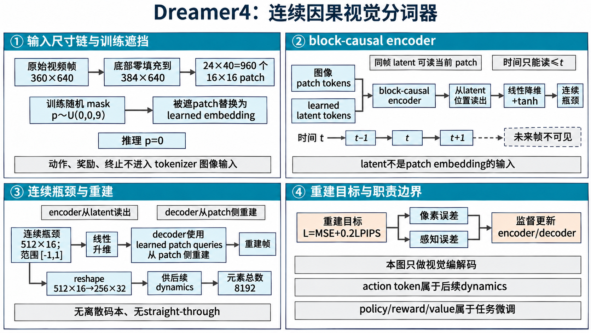
F12 Dreamer4 continuous causal tokenizer 详解
这张图回答 Dreamer4 如何把离线视频帧编码成供 dynamics 使用的连续因果 token。四个区域依次是 offline video 帧与 patch、continuous causal tokenizer、tanh projection 与连续 latent token、frame decoder 与 tokenizer objective。根据 sources/papers/2509.24527/tex/main.tex:162-191，动作、reward、termination 不属于 tokenizer 的视觉编码输入。patch dropout 只在训练增强边界内出现，不应被读成推理时的结构层。
左侧输入是带补丁网格的视频帧序列，时间轴标出 t,t+1,t+2。main.tex:172-176 规定每个时间步由当前图像的 patch tokens 与 learned latent tokens 组成；latent 可跨模态注意，而每个视觉模态只在自身内部注意。动作在 Interactive Dynamics（:194-208）才被编码为 action tokens，reward 在 Imagination Training（:262-286）才由 policy/reward heads 使用，termination 不是 tokenizer 的直接输入。视频帧被切成 patch，patch 只是空间分块，不是 V2 的 categorical variable。
第二个区域是 continuous causal tokenizer。patch embedding 接收帧 patch，learned latent 作为可学习的连续潜变量，底部时间箭头表达因果顺序。推理路径从过去到未来单向前进；不存在读取未来帧来重建当前 token 的箭头。虚线框里的 patch dropout U(0,.9) 是训练增强，表示随机丢弃部分 patch 以提高鲁棒性，但推理路径不使用这个增强操作。图中把“训练增强”和“推理路径”分开，是 tokenizer 与训练协议的关键边界。
第三个区域是 tanh projection。连续 latent 经过双曲正切投影，被压缩到有界区间，形成连续变量 token，例如 z_t、z_{t+1}、z_{t+2}。这些 token 是连续向量，不能被解释成 32×32 离散类别，也不能被替换成 one-hot。tanh 图只是表示有界投影，真正的高维 token 仍由前面的 learned latent 产生。时间标签保持因果顺序，方便后续 block-causal dynamics 使用。
第四个区域是 frame decoder 和 tokenizer objective。decoder 根据连续 token 重建视频帧，objective 写成 reconstruction MSE + .2 LPIPS，分别约束像素误差和感知相似度。它是 tokenizer 的训练目标，不是行为策略的 reward，也不是 Dreamer4 后续 PMPO 的 actor loss。重建帧的示意格子只表示 decoder 输出，不宣称已经恢复所有真实细节。
一个时间步的最小例子是：从离线视频读取 frame_t，切成 patch 并与 learned latent tokens 一起进入 encoder；latent 经线性降维和 tanh 得到 z_t，decoder 再把它投影回模型维度并读出 patch，MSE 与 .2 LPIPS 反向更新 tokenizer。训练时每张图像以 p~U(0,0.9) 将部分 patch 替换为 learned embedding，且包含 p=0 的推理条件；推理时沿完整因果路径编码。动作、reward、termination 在后续 dynamics 或 policy/reward 阶段出现，不能倒灌到 tokenizer 输入。
与 DreamerV2 的区别是 V2 使用离散 categorical RSSM 和 straight-through；F12 的 token 是连续向量，不画离散采样。与 DreamerV3 的区别是 F12 不使用 symlog/two-hot 作为 tokenizer 内部目标。与 F13 的区别是 F13 解释 block-causal temporal/spatial transformer、clean x-prediction 和 flow matching；F12 只解释编码、投影、重建和 tokenizer loss。与 F14 的区别是 F14 解释 MTP/PMPO policy finetuning，F12 不把 actor 更新接到 decoder 上。
正文只核对四个逻辑区、视频 patch、learned latent、tanh projection、continuous latent tokens、frame decoder、MSE、.2 LPIPS、patch dropout U(0,.9) 与时间因果；若 PNG 把 action/reward/termination 画成 tokenizer 的直接输入，应列入 root 的图稿事实问题。
代码和证据边界
Dreamer4 官方公开代码在本任务中未核验，图中只承担论文方法事实；第三方 DMControl 仓库不能被冒充为作者实现。代码 crosswalk 需要分别寻找 patch tokenizer、latent projection、decoder、MSE/LPIPS loss 和 patch dropout 配置。图上的时间箭头不能替代实际 causal mask 的代码证据，任何未公开的实现细节都必须在正文标为未核验。
常见误读
误读一是把 patch dropout 画成推理时固定丢帧；正确是训练增强。误读二是把 tanh projection 当作离散化；它仍输出连续 token。误读三是把 MSE + .2 LPIPS 当作 reward；它只训练 tokenizer。误读四是让未来帧直接监督当前 token；因果路径只允许历史到未来。误读五是把 dynamics 阶段的 action token、policy/reward 阶段的标量信号合并成 tokenizer 的图像通道；论文把这些阶段明确分开。
因此，读图顺序应先区分离线输入和训练增强，再沿 patch→latent→tanh→token→decoder 追踪，最后检查 MSE/.2 LPIPS 的目标归属。这样既能解释 Dreamer4 的连续视觉表示，也不会把后续 dynamics 或 policy 的机制提前塞入 tokenizer。
这张图的稳定性边界还包括数据缓存。离线视频可以预先存储，tokenizer 训练从缓存读取；推理路径仍需遵守时间因果顺序。缓存存在不表示可以使用未来帧，也不表示 tokenizer 已经知道动作结果。正文会继续给出 2541 小时视频等实验条件，图内只保留结构和必要的输入角色。
在复现实验时还要区分三个对象：原始视频帧是 tokenizer 的观测输入，连续 token 是模型内部状态，decoder 输出是重建结果。它们可能共享时间索引，却拥有不同的损失和证据来源。action 只在 dynamics 的交错序列中出现，reward/policy heads 在 task-conditioned imagination 阶段出现，termination 不应被画成 tokenizer 的像素通道。只有把这些阶段分开，才能判断 tokenizer 的误差来自 patch 编码、latent 投影还是 decoder 重建。
TeX 直接证据：tokenizer 输入与损失
F12 先区分三个对象：原始离线视频帧是观测，patch embedding 与 learned latent 是编码中间量，tanh projection 后的连续向量才是供 dynamics 使用的 token。动作和 reward 在后续阶段有各自接口，不属于 tokenizer 的视觉输入；termination 也不能被画进 tokenizer。连续 token 不能画成 V2 的 32×32 categorical，时间箭头从 frame_t 到 frame_{t+1} 单向推进，当前 token 不应读取未来帧。
patch dropout U(0,.9) 属于训练增强，它随机遮盖部分空间 patch，迫使 tokenizer 在缺失局部下保持表征；推理时不应把该概率理解成固定丢帧策略。tanh projection 只把 latent 限制在有界范围，仍然是连续变量。decoder 将 token 重建为帧，MSE 与 .2 LPIPS 分别约束像素误差和感知相似度，二者是 tokenizer loss，不能被解释成 reward 或 PMPO objective。
论文直接依据是 sources/papers/2509.24527/tex/main.tex:162-191 的 Causal Tokenizer 与 algos/agent.tex:14-23 的阶段顺序；eq:tok 明确为 L_MSE+0.2L_LPIPS，:190-191 明确 patch dropout。Interactive Dynamics（:194-260）才定义 action tokens，Imagination Training（:262-327）才定义 task、reward、policy、value 与 MTP。官方公开代码未核验，sources/repos/dreamer4-unofficial/snapshot-ghfast/dreamer4-main/dreamer4/model.py::Tokenizer 仅作第三方接口比较，不能推断作者 Minecraft 实现。
贯穿实例可使用论文 Minecraft 的尺寸：appendix.tex:11-12 把视频零填充到 384×640，以 16×16 patch 切为 24×40=960 个视觉 tokens；tokenizer bottleneck 为 N_b=512,D_b=16，随后 dynamics 将相同的 8192 个连续数 reshape 为 N_z=256 个宽 32 的表示。960 是输入空间 patch 数，512 是 tokenizer latent 数，256 是 dynamics 的 token 数，三者不是同一个轴，也不等于 256 类离散状态。encoder 先在 960 patch 与 learned latent 间注意，读出的低维瓶颈经 tanh 保持连续；decoder 升维后与 learned output tokens 拼接读取 patch。这些尺寸是 Minecraft 设置，其他机器人数据的 patch 数在附录另列，不能跨域照搬。
时间因果性同时约束 encoder 与 decoder。编码当前帧允许使用过去上下文，但不允许未来图像进入当前 latent；decoder 也能逐帧输出，因此模型无需等完整未来视频到齐。patch dropout 改变的是每张训练图像中被 learned embedding 替换的 patch，并非删除整个时间步，也不会消除 causal mask。MSE 对像素差异敏感，LPIPS 衡量视觉感知特征，两者用论文所述 loss normalization 调整尺度后组合；.2 是损失系数，不是 dropout 概率、reward 权重或采样步长。
r4 连续 tokenizer 的时间因果与训练目标复核
F12 先区分三个对象：原始离线视频帧是观测，patch embedding 与 learned latent 是编码中间量，tanh projection 后的连续向量才是供 dynamics 使用的 token。动作、reward、termination 是对齐的条件信号，不能被拼成像素通道，也不能把连续 token 画成 V2 的 32×32 categorical。时间箭头从 frame_t 到 frame_{t+1} 单向推进，当前 token 不应读取未来帧。
patch dropout U(0,.9) 属于训练增强，它随机遮盖部分空间 patch，迫使 tokenizer 在缺失局部下保持表征；推理时不应把该概率理解成固定丢帧策略。tanh projection 只把 latent 限制在有界范围，仍然是连续变量。decoder 将 token 重建为帧，MSE 与 .2 LPIPS 分别约束像素误差和感知相似度，二者是 tokenizer loss，不能被解释成 reward 或 PMPO objective。
论文依据是 03_anchor_reading/papers/2509.24527-dreamer4.md 的 tokenizer 描述与 Algorithm 1；官方公开代码在当前任务未核验，sources/repos/dreamer4-unofficial 只能帮助理解 Tokenizer、pack_bottleneck_to_spatial 等接口，README 明确它不是完整论文复现。图稿的代码入口标签必须保留这一边界，不能从第三方 DMControl 实现推断 Minecraft 训练细节。
贯穿实例是从离线 frame_t 取 patch，加入 learned latent，经 tanh 得到 z_t，再由 decoder 输出 frame_hat_t；MSE/.2 LPIPS 反向更新 tokenizer。训练时 dropout 影响 patch 输入，推理时完整因果序列供 F13 dynamics 读取。若图中出现未来 token 回流、decoder loss 接到 policy 或 dropout 进入部署主链，应记录为视觉问题而不是由正文补救。
方法组件与数据流
dynamics model 接收交错的 action token、shortcut noise level、shortcut step size、spatial latent tokens、register tokens 和可选 agent tokens，并预测 clean representation。它不是简单的 autoregressive next-token 交叉熵：最小步长使用 flow-matching/x-space loss，较大步长用两个 d/2 子步构造 stop-gradient bootstrap，并按 signal level 使用 ramp 权重；推理虽按时间自回归，但每帧使用 K=4 shortcut sample steps。
在该动力学之前，causal tokenizer 先把帧切成 patch tokens，与 learned latent tokens 一起经过部分遮挡的 block-causal encoder；latent 经低维线性投影和 tanh bottleneck 后由 causal decoder 重建 patches。表示是连续的，encoder/decoder 都在时间上遵守因果方向，可逐帧编解码并实现时间压缩。动力学消费冻结 tokenizer 的表示，在较长的因果 token 上下文中建模动作条件未来；不能把这一输入链省略后只剩 shortcut 更新器。
D1 Training Agents Inside of Scalable World Models 数据流
视觉 tokenizer 读取图像 patch 与 learned latent，压缩后重建画面；动作在后续交互动力学中与冻结 tokenizer 的表示交错输入。block-causal transformer 预测未来连续表示，shortcut forcing 加快少步生成。任务 token 上的 policy/reward 经 MTP 监督后，模型生成轨迹用于 PMPO 与 value 学习；主设置冻结 transformer，只更新 policy/value heads。
核对来源：sources/papers/2509.24527/tex/main.tex（L162-208,262-327）；sources/papers/2509.24527/tex/algos/agent.tex（L14-23）。
动力学、训练目标与梯度方向
沿时间顺序区分观测校正与开环预测，再检查各项损失作用的对象和停止梯度的位置。目标的存在、配置是否启用与参数是否更新需要分别判断。
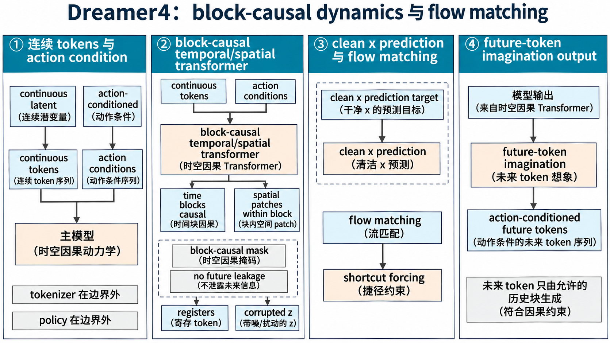
F13 Dreamer4 block-causal dynamics 与 flow matching 详解
这张图回答 Dreamer4 如何在连续 latent 上建立 block-causal 时空 dynamics，并用 clean x-prediction、flow matching 与 shortcut forcing 生成未来 token。四个区域分别是外部 tokenizer/policy 输入、block-causal temporal/spatial transformer、clean target 与 flow matching 训练边界、future-token imagination。tokenizer 和 policy 被放在外部，避免把表示学习、动力学训练和策略微调画成一个模块。
左侧的 continuous latent token 来自 tokenizer，action-conditioned 区域接收外部 policy 输出的动作序列。动作是条件信号，不能被当作 latent patch；它们沿时间索引与 token 对齐后进入 dynamics。图中把“tokenizer（外部）”与“policy（外部）”画在主框外，表达本图只研究 dynamics 的输入接口，不声称已经核验官方代码中的 tokenizer 或 policy 实现。
中心大框是 block-causal dynamics。上方的 block-causal mask 以时间块为单位，允许过去块影响当前块，禁止未来块泄漏；同一时间块内的空间 patch 可以参与空间建模。三个时间块 t−1、t、t+1 各自包含空间 patch、register 和 corrupted z，时间块之间用单向箭头连接。register 是辅助时空表示位置，corrupted z 是训练时的受扰 latent，二者都不能被误读为额外动作或终止信号。
“no future leakage”虚线边界是因果约束。它不是一个可训练层，而是 mask 的证据边界：预测 t 时只能看到历史块和当前允许的空间信息。若把 t+1 的 patch 接回 t 的输入，就会破坏 Dreamer4 的 causal rollout 语义。图中实线箭头表示模型计算，灰色虚线表示 causal/训练目标范围，方便读者区分数据流和约束。
右侧上方是 clean x prediction。训练目标把干净的连续 latent x_t、x_{t+1}、x_{t+2} 作为 target，模型从 corrupted z 和动作条件预测 clean x。它不是像素 decoder，也不是 reward head；clean target 位于 latent dynamics 的训练边界。中部的 flow matching 以速度场/捷径路径把 corrupted z 推向 clean x，shortcut forcing 让较短路径也能逼近未来 latent。箭头从 corrupted z 指向 clean x，不能反过来泄漏未来观测。
最右侧是 future-token imagination。经过 causal rollout，模型只生成未来连续 token 序列，沿动作条件展开 rollout；它不重新生成历史帧，也不读取未来真实 token。这个区域是推理/想象用途，和 flow matching 的训练目标用灰色虚线分隔。future-token imagination 为后续 policy 学习提供模型内部未来，但本图不画 PMPO、reverse KL 或 MTP 更新。
一个时间块的最小例子是：tokenizer 给出 z_t，policy 提供 a_t；block-causal mask 允许 t−1 的状态影响 t，却阻止 t+1 泄漏；在 t 块内对空间 patch、register 和 corrupted z 做计算；flow matching 以 corrupted z 为输入，预测 clean x_t；沿动作条件继续到 t+1，得到未来 token。推理时同一 mask 只展开未来 token，不能把训练时的 clean target 当成实时观测。
与 F12 的区别是 F12 解释 patch→latent→tanh→decoder 的 tokenizer；F13 直接接收 continuous latent，研究时空 dynamics。与 F14 的区别是 F14 解释 policy MTP/PMPO，F13 不更新 actor。与 V2/V3 的区别是本图不画 categorical straight-through、symlog/two-hot；连续 token、block-causal mask 和 flow matching 是 Dreamer4 的主边界。
图稿检查清单交由 root 独立复核：外部 tokenizer/policy、continuous latent、block-causal mask、时间/空间块、register、corrupted z、no future leakage、clean x、flow、shortcut、future-token rollout 和箭头方向。此处不宣称图片已通过。
代码和证据边界
Dreamer4 官方代码在本任务中没有通过公开仓库核验，因此图稿只表达论文方法和事实合同。代码 crosswalk 需要分别寻找 block mask、time/spatial block、register、corrupted z、clean target、flow matching 和 shortcut forcing 的实现；第三方实现只能作为边界比较。图中的外部 tokenizer/policy 标签提醒读者不要从 dynamics 图反推出未经证实的训练入口。
常见误读
误读一是把 block-causal mask 当成普通全局 transformer；正确是时间块因果、块内空间建模。误读二是让未来 token 进入当前输入；no future leakage 明确禁止。误读三是把 corrupted z 当成观测噪声或 action；它是训练目标的受扰 latent。误读四是把 flow matching 当作 policy loss；它训练 latent dynamics。误读五是把 future-token imagination 接回 tokenizer decoder；本图只生成连续未来 token，不承担像素重建。
因此，读图应先辨认外部接口，再沿时间块和块内空间 patch 追踪，最后区分 clean-target/flow 训练与 causal rollout 推理。这样可以把 Dreamer4 的 dynamics 机制和 tokenizer、policy 两个相邻但独立的系统阶段分开理解。
复核时还要记录 mask 的时间窗口、动作条件的对齐位置和 clean target 的 stop/flow 边界。若这些信息缺失，单看一条“future token”箭头不能证明模型真正满足因果性；报告会把论文事实、代码证据和未核验边界分别标出。
训练和推理的张量轴也应分开记录：时间块轴决定因果 mask，空间 patch 轴决定块内注意力，register 轴提供辅助容量，latent 轴承载连续状态。动作条件沿时间块对齐，不能跨块广播成一个静态标签。flow matching 的路径变量和 causal rollout 的时间步不是同一个轴，代码审计时必须分别核对。
这四个轴共同决定内存和计算开销。
它们不能互相替换。
审计时要保留每个轴的具体长度与掩码规则。
r4 block-causal dynamics、flow 与 rollout 复核
F13 的输入接口是 F12 产生的连续 latent token 与外部 policy 的 action condition。中心 transformer 按时间块组织空间 patch、register 和 corrupted z；块内允许空间信息交互，块间只允许过去影响当前，no future leakage 是 mask 约束而非可训练模块。时间块轴、空间 patch 轴、register 轴和 latent 轴应分别记录，不能把它们压成一个长度。
训练路径从 corrupted z 和动作条件预测 clean x。clean target 可以写为 x_t,x_{t+1},x_{t+2} 的干净连续 latent，flow matching 学习把受扰状态推向目标的速度或路径，shortcut forcing 让较大步长采样逼近短步长结果。这个箭头是动力学训练目标，不是像素 decoder 或 policy loss。动作必须与对应时间块对齐，不能广播成一个静态标签。
推理路径使用同一个 causal mask 展开 future-token imagination，只生成未来连续 token，不重新生成历史帧，也不读取未来真实 token。训练 clean target 和推理 rollout 通过灰色虚线隔开，避免把训练标签当成部署输入。F13 不更新 policy，也不承担 PMPO、reverse KL 或 MTP；F14 将这里的 dynamics 当冻结模型使用。
论文依据是 03_anchor_reading/papers/2509.24527-dreamer4.md 的 Figure 2、Algorithm 1 及 shortcut forcing 说明；官方代码未核验，第三方实现只能用于接口对照。审计时应分别核对 block mask、register、corrupted z、clean target、flow/shortcut 参数和 future-token 输出。若图上 t+1 回流 t，或把 corrupted z 标成观测噪声、动作、终止信号，应记录为拓扑错误交给 root 重画。
公式、损失与直觉
tokenizer 的抽象目标是：
tokenizer 的论文目标是 masked autoencoding：。输入 patch 以 p~U(0,0.9) 被 learned embedding 替换来训练空间表示；论文没有给出额外的 bottleneck KL 或独立 L_mask 项。interactive dynamics 另用 shortcut forcing，对 representation 做 x-prediction、较大步长 bootstrap 和 ramp weighting。
编码与重建的计算关系仍应保留：先由 E 对截至 t 的可见帧、当前 patch mask 与 latent tokens 编码，再经低维 tanh 表示供 D 逐帧解码得到重建帧 x̂_t。原稿映射式中“E 编码→D 重建”的含义可继续使用，但其后新增的 bottleneck loss 和独立 mask loss 没有论文依据；架构中的瓶颈与输入遮挡本身都不能自动解释成额外损失项。
动力学模型对 shortcut step k 预测去噪方向：
论文中的具体参数、mask 和 token 角色以原页/TeX 为准；这里的式子只用于说明“动作条件 token → 未来 token → shortcut 更新”的计算关系。 公式的直觉是把表示学习、未来预测和行为目标接在同一时间轴上。一个好的模型即使重建清晰，也可能在奖励相关因素上失真；因此要把 observation loss、reward/value loss、KL/regularization 和 policy objective 分开解释。
行为、想象与真实环境闭环
从当前状态出发追踪动作怎样产生、未来怎样展开、回报怎样被消费。模型内候选或想象轨迹不是已经在环境中执行的路径。
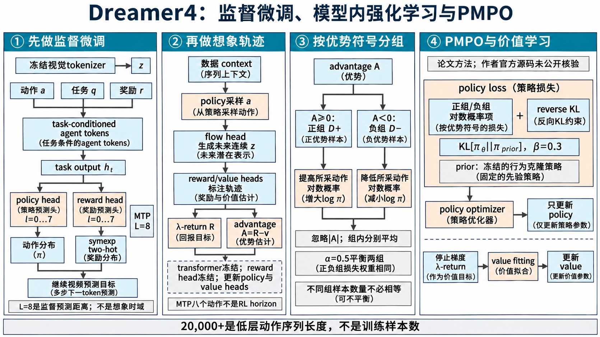
F14 Dreamer4 policy finetuning、MTP 与 PMPO 详解
这张图回答 Dreamer4 如何在冻结 tokenizer 和 transformer world model 的条件下，先用 MTP 做 task-conditioned policy/reward 头训练，再用模型内 rollout 做 PMPO policy finetuning。四个区域分别是冻结边界、MTP L=8 的行为克隆/奖励预测、policy logits 与 advantage sign groups、PMPO objective 与 policy/value update。底部的 20,000+ 明确写成低层 action sequence length，不是样本数量，避免把实验尺度误读成数据集大小。
左侧冻结边界包含 frozen tokenizer 和 frozen world model。它们提供连续 token 和未来 dynamics，但 policy finetuning 时参数不更新。冻结的含义是梯度可以使用模型产生的未来 token 和回报信号，却不能通过 optimizer 改写 tokenizer/world model。虚线框还写出“只用未来 token 想象训练策略”，表明行为训练依赖模型内部 rollout，不把未来真实视频重新喂回策略。
第二个区域是 MTP。论文 main.tex:273-286 给定视频表示 z、动作 a、任务 q 和标量奖励 r，在 task output embedding h_t 上以 L=8 预测 a_{t+n} 与 r_{t+n}，用于行为克隆和 reward-head 训练。MTP 的长度是监督预测距离，不是 imagination horizon、八个独立策略、八层网络或八个样本；它也不等同后续 RL rollout 的步数。图中应把 MTP 的监督箭头与 tokenizer reconstruction、后续 imagined rollout 分开。
第三区包含 policy logits 和 advantage sign groups。论文 main.tex:313-316 明确 PMPO 使用优势的符号而忽略幅值，将 imagined states 按 D^+={s_i|A_t≥0} 与 D^-={s_i|A_t<0} 分组；每组分别平均一个简单的最大似然项。这里的正/负组不是“高优势 top、低优势 bottom”的排序，也不是按优势大小加权，更不是两个独立 actor。冻结的 behavioral-cloning policy copy 只作为先验策略，提供 reverse-KL 约束。
第四个区域是 PMPO objective。论文给出正/负 advantage group 的平均 log-likelihood 与 behavioral-prior 的 reverse-KL 约束；当前详解保留合同中的 alpha=.5、beta=.3 作为待核对系数，但不把它们解释成优势幅度权重。Dreamer4 的 RL 段明确只更新 policy head 和 value head，transformer 保持冻结；箭头不回到 tokenizer 或 dynamics。reverse KL 的方向、先验 copy 和 policy/value 两个更新终点必须保留，不能简化成普通 PPO clipping 或单一 REINFORCE loss。
一个最小训练例子分两段：先从离线视频得到 z_t 与 task embedding h_t，在 MTP L=8 上监督预测未来动作和 reward，得到 task-conditioned policy/reward heads；再从数据 context 启动一次 transformer self-rollout，flow head 采样未来 z、policy head 采样动作、reward head 标注 r、value head 估计 v，用 PMPO 的正/负优势组更新 policy，并用 TD/λ-return 更新 value。此阶段只更新 policy/value heads，冻结 transformer；20,000+ 低层 action sequence length 仍是数据/任务条件。
与 F12 的区别是 F12 训练 tokenizer 的 MSE + .2 LPIPS；F14 不更新 tokenizer，也不重建像素。与 F13 的区别是 F13 训练 block-causal dynamics 和 flow matching；F14 把它当冻结模型用于 policy imagination。与 V2/V3 的区别是本图不使用 Atari REINFORCE、symlog 或 two-hot 作为主路径，底部明确标出这些不是本图的策略机制。
图稿检查清单交由 root 独立复核：frozen tokenizer/transformer、MTP 的 BC/reward 归属、policy/value update、正负 advantage groups、PMPO 先验、20,000+ 单位和箭头边界。此处不宣称图片已通过。
代码和证据边界
Dreamer4 官方实现仓库在本任务中未核验。代码 crosswalk 只能把 MTP rollout、policy logits、advantage grouping、PMPO alpha/beta 和 freeze flags 作为待核验入口，第三方代码不能冒充作者实现。图中冻结符号表达论文方法事实，不代表某个公开仓库已经完整实现所有训练分支。
常见误读
误读一是把 MTP L=8 当成八个样本或 imagination horizon；它是 BC/reward 预测的距离。误读二是把 20,000+ 当成样本数；它是低层动作序列长度。误读三是让 PMPO 梯度更新 transformer；RL 阶段更新 policy 与 value heads。误读四是把正负 advantage groups 当成 top/bottom 排名或两个 actor；PMPO 只按符号分组并忽略优势幅值。误读五是把 reverse KL beta .3 当成 V2 的 KL balancing；两者属于不同版本和不同目标。
因此，读图应先确认冻结对象，再区分 MTP 的监督预测与后续 self-rollout，接着看 policy logits、正负 advantage 分组和 PMPO 先验约束，最后检查 policy/value 两个更新终点。这样可以把 Dreamer4 的离线策略微调与 tokenizer/dynamics 训练清楚分离。
实验审计还应保存 MTP 监督距离、imagined rollout 长度、动作序列单位、正负 advantage 分组规则、先验策略来源、policy/value 更新参数和冻结 transformer 参数列表。只报告最终 policy 分数不足以证明 PMPO 的机制，必须能回到这些配置和代码边界。
还要区分“冻结模型产生的信号”和“策略/价值参数真正接收的梯度”。模型可以计算未来 token、预测 reward、value 和 advantage，但 RL optimizer 的参数列表至少包含 policy 与 value heads；如果实现把 tokenizer 或 transformer 放进同一个 optimizer，就已经改变了图中的方法边界。MTP 预测的八个未来距离也不是八步真实执行；后续 self-rollout 的长度由 imagination 配置决定，不能从 L=8 推出。正负组阈值、先验策略版本和 rollout 起点属于实验配置，不能从一个简化的 PMPO 公式单独推断。
alpha .5 与 reverse KL beta .3 应在日志中分别记录，避免只保存一个总 objective。前者调节 advantage-weighted policy term，后者限制相对先验策略的漂移；当两者的量纲或归一化不同，数值相同也不意味着作用相同。报告会把这些系数、冻结列表、MTP 长度和 20,000+ 单位一起绑定到 Dreamer4 的实验条件和证据边界。
r4 MTP、优势分组与冻结边界复核
F14 的第一条边界是参数归属。tokenizer 和 world model 产生起始 token、未来 dynamics、reward 与 advantage，但 policy finetuning 的 optimizer 只更新 policy；冻结允许读取模型信号，不允许梯度改写 tokenizer/world model。图中冻结框与 policy update 箭头必须分离，否则会把行为训练误读成联合重建或动力学微调。
MTP 的 L=8 表示多步预测窗口，动作可写作 a_1…a_8，不是八个样本、八个 actor 或八层网络。future token imagination 在冻结模型中展开，policy logits 给出每个动作的概率；imagined trajectory 按 advantage 分成 top 与 bottom 组，分组是加权和筛选语义，不是两个独立策略。20,000+ 低层动作序列长度是数据或任务条件，不能被当作样本量。
PMPO objective 的 alpha=.5 加权 advantage 项，reverse KL beta=.3 约束新策略相对先验策略的漂移，二者量纲和作用不同。它不是 V2 的 KL balancing，也不是普通 PPO clipping。论文来源为 03_anchor_reading/papers/2509.24527-dreamer4.md 的 policy finetuning、MTP 和 PMPO 描述；官方代码未核验，第三方仓库只能作为接口比较，不能提供作者实现的函数级证明。
最小训练实例分两段：从离线视频得到 z_t 与 task embedding h_t，先用 MTP L=8 监督预测未来动作和 reward；再从数据 context 启动一次 transformer self-rollout，flow head 采样未来 z、policy head 采样动作、reward head 标注 r、value head 估计 v，按 A>=0/A<0 分组，用 PMPO 更新 policy，并用 TD/λ-return 更新 value。真实评测使用更新后的 policy，不能把 MTP 八个预测距离当成八步环境执行。若图稿将 PMPO 梯度回接冻结模块、把分组画成 top/bottom 排名或删除 value update，应列入 root 的独立问题表。
论文直接来源是 sources/papers/2509.24527/tex/main.tex:262-327：:273-286 定义 MTP L=8 的动作/奖励监督，:290-300 定义模型内 self-rollout，:292-293 明确只更新 policy/value heads 并冻结 transformer，:313-316 定义按 A>=0/A<0 分组且忽略优势幅值的 PMPO。algos/agent.tex:14-23 给出 tokenizer→world model→policy/reward→imagination RL 的阶段顺序。若 PNG 与这些段落冲突，应进入独立重画问题表。
行为训练和尺度
Dreamer4 的行为训练分为监督微调和模型内 RL 两段。给定视频 representations、actions、task embeddings 与 scalar rewards，论文先在 task output embedding 上用 MTP L=8 预测多个未来距离的 action 和 reward；这里的 8 是监督预测距离，不是 imagination horizon。policy head 按数据动作空间输出 categorical 或 vectorized binary distribution，reward head 用 symexp two-hot。随后从数据 context 启动 transformer self-rollout，flow head 采样未来 representations，policy head 采样 actions，reward/value heads 标注 imagined trajectory。
RL 阶段初始化 value head 和 behavioral-prior 的 frozen policy copy，只更新 policy 与 value heads，保持 transformer 冻结。value head 用 γ=0.997 的 λ-return 做 TD 学习；PMPO 计算 A_t=R_t^λ-v_t，忽略 advantage 幅值，只按 A_t>=0 和 A_t<0 分成正负集合，分别平均最大似然项，再加入论文明确的策略到先验方向 KL：KL[πθ(·|s) || πprior]；这是约束新策略相对行为先验偏移的项。论文给出 α=0.5 平衡正负集合、β=0.3 约束先验偏离。因而图和正文不能把 PMPO 说成 top/bottom 幅值排序、普通 PPO clipping，或只更新 policy 而遗漏 value。tokenizer/dynamics 的大规模无动作视频知识与 policy/reward 的少量动作条件数据属于不同训练阶段。
公开项目页展示了 Minecraft diamond、human interaction 和机器人 counterfactual 视频。论文 Figure 3/4 对比离线 VPT、行为克隆和 imagination training；Table 2 的 cascade ablation 分离 shortcut forcing、efficient transformer、token 数和采样步数的影响。这里的“实时”是单 GPU 交互推理条件下的实测项目描述，不等于任意硬件或任意分辨率都满足同样延迟。
数据与控制流
领域关键执行基底是 offline video world-model imagination loop：视觉视频训练tokenizer，冻结tokenizer产生表示后训练可选action-conditioned dynamics；task-conditioned policy/reward heads通过MTP监督学习，随后模型内RL只更新policy/value heads而冻结transformer，最终在Minecraft环境评估。论文脚注另讨论全transformer微调可能带来小幅收益，但需同时施加dynamics、policy-prior和reward损失以保留原功能；这不应被笼统称为“半冻结世界模型”。真实输入、状态更新、模型生成目标和环境评价仍按阶段分开。
D2 Training Agents Inside of Scalable World Models 训练与推理顺序
训练顺序是视觉 tokenizer → 可含动作条件的视频动力学 → task-conditioned MTP policy/reward → 模型内 policy/value 强化学习 → Minecraft 实际评价。MTP L=8 指监督预测的未来距离，不是 RL imagination horizon。主 RL 冻结 transformer，以冻结行为先验和 reverse KL 约束 PMPO；全模型微调是需要保留动力学、奖励和先验损失的可选扩展。
核对来源：sources/papers/2509.24527/tex/main.tex（L162-208,262-327）；sources/papers/2509.24527/tex/algos/agent.tex（L14-23）。
从数据到行为的完整执行基底
离线视觉视频先训练 tokenizer，再以冻结 tokenizer 的连续表示和可选动作训练交互动力学；MTP 监督任务 policy/reward，模型内 RL 用生成轨迹更新 policy/value，主设置冻结 transformer，最后才在 Minecraft 评价行为。
贯穿实例、形状与时间对齐
用短序列和可以手算的数字核对抽象机制。这里的教学实例明确区别于论文实验值，也不冒充目标框架的运行结果。
算法流程与具体 逐步计算实例
先在视觉视频帧上预训练 causal tokenizer，再以冻结 tokenizer 的连续表示和可选动作训练 interactive dynamics；action tokens 不进入视觉 tokenizer 的输入。随后加入 task-conditioned agent tokens，用 MTP L=8 监督预测多个未来距离的动作与reward，继续保留视频预测目标。进入 imagination RL 后，从数据 context 出发由 flow head与policy head自回归生成未来表示和动作，reward/value head标注轨迹；只更新policy/value heads，transformer冻结。PMPO依据A=Rλ−v的正负号分组、忽略幅值，再用KL[πθ(·|s) || πprior] 约束行为先验偏移。Horizon由RL rollout设置决定，不能将MTP L=8当作imagination长度。训练不需要在线Minecraft交互，最终diamond挑战才评价实际行为。人类交互、SOAR、Epic Kitchens分别检查反事实交互、机器人视频与跨数据动作条件，协议和结果不能混成同一benchmark；真实数据、模型生成与环境评价仍按时间分开。
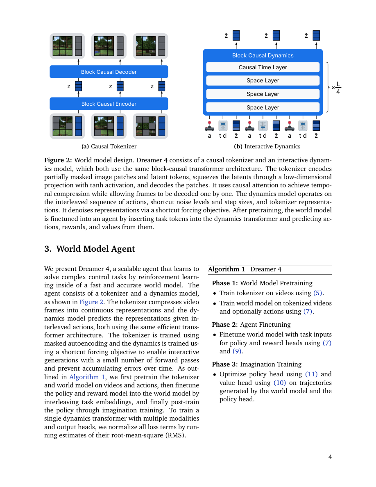
Figure 2: World model design. Dreamer 4 consists of a causal tokenizer and an interactive dynam- ics model, which both use the same block-causal transformer architecture. The tokenizer encodes partially masked image patches and latent tokens, squeezes the latents through a low-dimensional projection with tanh activation, and decodes the patches. It uses causal attention to achieve tempo- ral compression while allowing frames to be decoded one by one. The dynamics model operates on the interleaved sequence of actions, shortcut noise levels and step sizes, and tokenizer representa- tions. It denoises representations via a shortcut forcing objective. After pretraining, the world model is finetuned into an agent by inserting task tokens into the dynamics transformer and predicting ac- tions, rewards, and values from them.
选择理由
该图是 Dreamer4 方法的最直接原文证据：左侧 causal tokenizer，右侧 interactive dynamics，并明确列出动作、噪声水平、步长与 task token。它能纠正把 shortcut forcing 简化成 autoregressive next-token loss 的错误。
图表说明
左侧因果 tokenizer 对每帧 patch 和 latent token 做部分遮挡编码，经过 block-causal encoder 的低维 tanh bottleneck，再由 decoder 逐帧重建；图中灰/蓝 token 区分 patch 与 latent。右侧 interactive dynamics 以交错序列 a、τ（shortcut noise level）、d（step size）和 z̃（tokenizer representation）作为输入，通过一层 causal-time 与多层 space blocks 预测未来表示 ẑ。caption 明确说它用 shortcut forcing 去噪表示；预训练后插入 task tokens，由同一 dynamics transformer 预测 actions、rewards、values。
进一步分析
论文 Eq.(6)–(8) 规定模型预测 clean representation 的 x-prediction；最小步长用 flow-matching loss，较大步长用两个 d/2 子步的 stop-gradient bootstrap，并用 w(τ)=0.9τ+0.1 重加权。推理按时间自回归，但每帧使用 K=4 的 shortcut sample steps，历史输入轻微扰动到 τ_ctx=.1；autoregressive in time 不等于简单的逐帧 next-token 交叉熵。预训练、agent finetuning 与 imagination training 分别对应 tokenizer/dynamics、task-conditioned policy/reward 和冻结 transformer 内的 policy/value 更新。图左侧的“causal”既指时间方向的注意力遮罩，也指逐帧解码的接口；它不是把整段视频一次性压成一个无时间顺序的向量。右侧的 shortcut 条件 token 让同一动力学网络在不同噪声水平和步长上工作，因而模型训练目标包含最小步长的真实数据目标和大步长的自蒸馏目标。agent token 的插入发生在预训练之后，动作、奖励和值头消费 task embedding，但其他模态不能反向读取 task token，从而避免任务标签成为未来视觉的捷径。图中的 z、z̃、ẑ 代表 tokenizer 表示、带噪输入和动力学预测，不能把它们直接称为原始像素或环境真状态；这种 token 契约正是后续 imagination rollout 的输入输出边界。
证据边界
图示没有给出完整 Eq.(7) 的 v-space 转换、(1−τ)^2 缩放、patch dropout 概率或 RMS loss normalization；这些要以 PDF p.5–7/TeX 为准。图中的 ẑ 是动力学输出表示，不是像素预测或直接环境观测；task token 只进入 agent heads 的因果路径，不能据图声称改变未来视频动力学。图中也没有把所有中间表示强制量化为 categorical；论文明确说 tokenizer 输出连续表示，不能照搬 V2/V3 的离散状态解释。
源码边界：尚未核验到作者官方公开仓库。以下是第三方非官方比较实现，不能用于推断作者的 Minecraft 实现；main 是归档标签，文件身份由 SHA-256 固定。
固定源码入口：sources/repos/dreamer4-unofficial/snapshot-ghfast/dreamer4-main；commit=main
打开固定源码：sources/repos/dreamer4-unofficial/snapshot-ghfast/dreamer4-main/README.md
打开固定源码：sources/repos/dreamer4-unofficial/snapshot-ghfast/dreamer4-main/dreamer4/model.py
打开固定源码：sources/repos/dreamer4-unofficial/snapshot-ghfast/dreamer4-main/dreamer4/train_dynamics.py
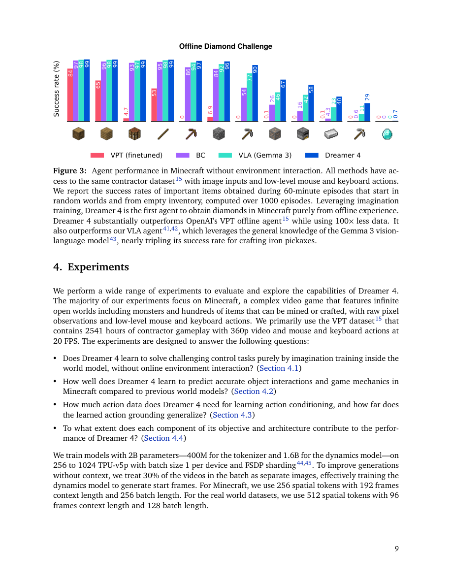
Figure 3: Agent performance in Minecraft without environment interaction. All methods have ac- cess to the same contractor dataset15 with image inputs and low-level mouse and keyboard actions. We report the success rates of important items obtained during 60-minute episodes that start in random worlds and from empty inventory, computed over 1000 episodes. Leveraging imagination training, Dreamer 4 is the first agent to obtain diamonds in Minecraft purely from offline experience. Dreamer 4 substantially outperforms OpenAI’s VPT offline agent15 while using 100× less data. It also outperforms our VLA agent41,42, which leverages the general knowledge of the Gemma 3 vision- language model43, nearly tripling its success rate for crafting iron pickaxes.
选择理由
该图是离线 Diamond Challenge 的主实验图，直接把 offline/no-environment-interaction 条件、低层动作数据和里程碑成功率放在一个原文证据中，最适合纠正 2541h、20,000+ actions 与评估条件的混淆。
图表说明
纵轴为 success rate (%)，横向依次是 Minecraft 里程碑图标，从木头、木板、工作台、木棍、木镐、圆石、石镐、铁矿、熔炉、铁锭、铁镐到钻石；每组四根柱分别是 VPT (finetuned，红)、BC（紫）、VLA (Gemma 3，青绿) 与 Dreamer 4（蓝）。Dreamer4 柱上可读到前四项约 99、99、99、99，随后木镐约 97、圆石约 96、石镐约 90，后段约 67、58、40、29，钻石约 0.7。caption 规定每个方法都用同一 contractor dataset 的图像和低层 mouse/keyboard，随机世界、空 inventory、60 分钟 episode、1000 episodes。
进一步分析
图支持 offline imagination training 的行为结果：Dreamer4 在不与环境交互的训练条件下，到达高级里程碑的成功率明显高于 VPT、BC 和 VLA，并在钻石上出现非零成功率。它不能单独证明 shortcut forcing 造成全部提升，因为图比较的是完整 agent；模型设计贡献应回看 Table 2 的 cascade ablation。论文正文和附录把 VPT 数据写为 2541 小时 contractor gameplay，action-generalization 再把视频总量 2541h 和有动作的子集 0/10/100/1000/2541h 分开；20,000+ 指从原始像素选择的动作序列长度，不是 20,000 个带标签样本。里程碑柱状图还显示提升并非只出现在最终钻石：Dreamer4 在木材到铁锭的多个阶段都保持较高成功率，后期优势随任务链变长而更加明显；这与图注所说的 imagination training 改善长时域策略一致。与此同时，钻石柱只有 0.7%，说明“首次达到钻石”是非零成功的论文里程碑，不应改写成普遍稳定完成。实验使用共同 contractor 数据集和统一评估世界，能比较方法差异，但不能隔离 tokenizer、dynamics、reward model、PMPO 和 shortcut forcing 各自的因果效应。
证据边界
成功率是 60 分钟、随机世界、空库存、1000 集的里程碑统计，不是训练回报曲线，也不是模型在真实环境在线探索的测量。100× less data 是相对 VPT offline agent 的论文表述，不能从本图推算每个 baseline 的小时数；Table 3 才列实验数据条件。图不提供 541h 这一独立论文数值，任何 541h 文案需标作下游材料的来源边界并回到 2541h 原文。
源码边界：尚未核验到作者官方公开仓库。以下是第三方非官方比较实现，不能用于推断作者的 Minecraft 实现；main 是归档标签，文件身份由 SHA-256 固定。
固定源码入口：sources/repos/dreamer4-unofficial/snapshot-ghfast/dreamer4-main；commit=main
打开固定源码：sources/repos/dreamer4-unofficial/snapshot-ghfast/dreamer4-main/README.md
打开固定源码：sources/repos/dreamer4-unofficial/snapshot-ghfast/dreamer4-main/dreamer4/model.py
打开固定源码：sources/repos/dreamer4-unofficial/snapshot-ghfast/dreamer4-main/dreamer4/train_dynamics.py
源码架构、调用链与实现差异
先看执行入口与模块责任，再追踪公式落到哪个固定文件和函数。源码事实解释当前实现，不能反向补写论文没有报告的实验设置。
代码边界与第三方证据
当前固定的 nicklashansen/dreamer4@main 是明确的 unofficial PyTorch implementation。其 dreamer4/model.py 的 Tokenizer、pack_bottleneck_to_spatial、ActionEncoder、TaskEmbedder 和 Dynamics 与论文概念对应，但 README 明确：它不是完整复现，使用 30 个连续 DMControl 任务而不是论文的离散 Minecraft，训练需要 8 张 GPU，提供自己的数据和 checkpoint。因此它可以帮助读者理解张量布局和 block-causal transformer 的接口，却不能回答“作者 Dreamer4 代码中某个细节如何实现”。
官方 Dreamer4 代码状态保持 来源边界=no_published_code。论文、arXiv TeX、官方项目页面和第三方 README 的一致部分可形成方法解释；不一致处必须标记为 implementation-only 或 third-party approximation。
代码来源边界
当前只核验到 Nicklas Hansen 的 unofficial/incomplete/DMControl-focused 第三方仓库；它不能回答论文作者实现问题，以下所有代码证据都显式标为 third-party comparison only。
causal tokenizer / x̂=D(E(x,m))
论文定位：Sec. 3 / Eq. tok。
实现核对：尚未核验到作者维护的官方训练实现。论文机制、算法与实验可以解释，作者代码中的张量、缓存和默认值不能由第三方仓库代填。
结论边界：尚未核验到作者维护的官方训练实现。论文机制、算法与实验可以解释，作者代码中的张量、缓存和默认值不能由第三方仓库代填。
核对来源：sources/papers/2509.24527/tex/main.tex（L162-208,262-327）；sources/papers/2509.24527/tex/algos/agent.tex（L14-23）。
block-causal interactive dynamics / p(tokens_{t+1}|tokens_{≤t},a_{≤t})
论文定位：Sec. 4 / Eq. dyn。
实现核对：尚未核验到作者维护的官方训练实现。论文机制、算法与实验可以解释，作者代码中的张量、缓存和默认值不能由第三方仓库代填。
结论边界：尚未核验到作者维护的官方训练实现。论文机制、算法与实验可以解释，作者代码中的张量、缓存和默认值不能由第三方仓库代填。
核对来源：sources/papers/2509.24527/tex/main.tex（L162-208,262-327）；sources/papers/2509.24527/tex/algos/agent.tex（L14-23）。
shortcut forcing / x_{k-Δk}=x_k-Δk v̂θ
论文定位：Sec. 5 / Eq. bcrm。
实现核对：尚未核验到作者维护的官方训练实现。论文机制、算法与实验可以解释，作者代码中的张量、缓存和默认值不能由第三方仓库代填。
结论边界：尚未核验到作者维护的官方训练实现。论文机制、算法与实验可以解释，作者代码中的张量、缓存和默认值不能由第三方仓库代填。
核对来源：sources/papers/2509.24527/tex/main.tex（L162-208,262-327）；sources/papers/2509.24527/tex/algos/agent.tex（L14-23）。
Training Agents Inside of Scalable World Models：实现遗漏与证据边界
论文表格与固定提交运行的一一对应关系的证据边界
论文说明：论文报告了任务、预算和结果。 固定材料只能说明：固定提交或来源边界不能证明该表格由此版本生成。 因此，只能标记 与证据静态对应，不能宣称复现。（当前只核验到 Nicklas Hansen 的 unofficial/incomplete/DMControl-focused 第三方仓库；它不能回答论文作者实现问题，以下所有代码证据都显式标为 third-party comparison only。）
核对来源：sources/papers/2509.24527/tex/main.tex（L162-208,262-327）；sources/papers/2509.24527/tex/algos/agent.tex（L14-23）。
随机种子与结果聚合的证据边界
论文说明：部分图表给出均值/标准差或多次运行。 固定材料只能说明：静态阅读未执行训练，也未加载 checkpoint。 因此，结果数字只来自论文原页。（sources/papers/2509.24527/2509.24527v1.pdf）
核对来源：sources/papers/2509.24527/tex/main.tex（L162-208,262-327）；sources/papers/2509.24527/tex/algos/agent.tex（L14-23）。
运行环境与依赖的证据边界
论文说明：论文给出算法和实验协议。 固定材料只能说明：本任务不安装目标仓库依赖、不运行 GPU/TF/JAX。 因此，运行时行为保持未验证。（本报告的范围是静态论文与源码分析）
核对来源：sources/papers/2509.24527/tex/main.tex（L162-208,262-327）；sources/papers/2509.24527/tex/algos/agent.tex（L14-23）。
official Dreamer4 implementation的证据边界
论文说明：论文描述 causal tokenizer/transformer 和训练。 固定材料只能说明：可见仓库明确 unofficial/incomplete/DMControl-focused。 因此，第三方路径不得回答作者实现问题。（00_identity/repo-identities.json；sources/repos/dreamer4-unofficial/snapshot-ghfast/dreamer4-main/README.md）
核对来源：sources/papers/2509.24527/tex/main.tex（L162-208,262-327）；sources/papers/2509.24527/tex/algos/agent.tex（L14-23）。
数据、时间与行为的顺序
真实观测或视频先进入表示编码器，得到状态或 token；动力学再在动作条件下预测后续状态。训练时真实序列提供监督，未来规划或想象分支则沿自身状态向前推进。任务头和行为模块各消费相应特征；不同论文是否预测 reward、discount 或 value 必须以本篇机制与配置为准。动作只有被交给环境时才成为真实交互，候选动作与想象动作保留在模型内部。
模块责任与证据层次
原始关系图将论文机制、固定代码事实、证据支持的解释和真实来源边界分开。节点之间的联系表达映射责任，而不是证明模块在某次论文实验中必然启用。没有官方实现时，连接停在论文级接口；后续实现或第三方仓库只能以它们自己的身份出现。
Training Agents Inside of Scalable World Models：方法级修改边界（只读解释）
理解或替换 causal tokenizer需要保持什么
不执行修改；先保持输入输出契约，再比较梯度、状态和下游消费。 必须检查表示形状、时间对齐、目标 stop-gradient、来源边界。
涉及的实现接口：尚未核验到作者维护的官方训练实现。论文机制、算法与实验可以解释，作者代码中的张量、缓存和默认值不能由第三方仓库代填。
阅读时应沿调用者回到被调函数，核对状态形状、时间对齐、目标停止梯度和下游消费；这一检查只证明静态接口一致，没有训练或性能复现结果。
核对来源：sources/papers/2509.24527/tex/main.tex（L162-208,262-327）；sources/papers/2509.24527/tex/algos/agent.tex（L14-23）。
理解或替换 block-causal interactive dynamics需要保持什么
不执行修改；先保持输入输出契约，再比较梯度、状态和下游消费。 必须检查表示形状、时间对齐、目标 stop-gradient、来源边界。
涉及的实现接口：尚未核验到作者维护的官方训练实现。论文机制、算法与实验可以解释，作者代码中的张量、缓存和默认值不能由第三方仓库代填。
阅读时应沿调用者回到被调函数，核对状态形状、时间对齐、目标停止梯度和下游消费；这一检查只证明静态接口一致，没有训练或性能复现结果。
核对来源：sources/papers/2509.24527/tex/main.tex（L162-208,262-327）；sources/papers/2509.24527/tex/algos/agent.tex（L14-23）。
理解或替换 shortcut forcing需要保持什么
不执行修改；先保持输入输出契约，再比较梯度、状态和下游消费。 必须检查表示形状、时间对齐、目标 stop-gradient、来源边界。
涉及的实现接口：尚未核验到作者维护的官方训练实现。论文机制、算法与实验可以解释，作者代码中的张量、缓存和默认值不能由第三方仓库代填。
阅读时应沿调用者回到被调函数，核对状态形状、时间对齐、目标停止梯度和下游消费；这一检查只证明静态接口一致，没有训练或性能复现结果。
核对来源：sources/papers/2509.24527/tex/main.tex（L162-208,262-327）；sources/papers/2509.24527/tex/algos/agent.tex（L14-23）。
因果视觉 tokenizer 的压缩与重建：机制到实现的逐项对应
帧 patch 与 learned latent token 压缩为可交互的时空表示。
该分析条目的符号表达为：x̂=D(E(x,m))。帧 patch 与 learned latent token 压缩为可交互的时空表示。
论文依据：Sec. 3 / Eq. tok。
| 固定实现入口或来源边界 | 行号与符号 | 在本机制中承担的职责 |
|---|---|---|
README.md（此附件保存在完整本地归档中） |
论文机制，不提供作者源码行号；unofficial、incomplete |
第三方来源边界，不是作者实现 |
阅读切片：official code absent; third-party only。
论文与实现的关系：论文机制与代码/来源边界逐项对照；未运行训练。
对应限制：当前只核验到 Nicklas Hansen 的 unofficial/incomplete/DMControl-focused 第三方仓库；它不能回答论文作者实现问题，以下所有代码证据都显式标为 third-party comparison only；没有建立论文表格与固定提交运行的一一对应关系。
按块因果的交互动力学：机制到实现的逐项对应
动作 token 与未来视频 token 在因果 transformer 中联合预测。
该分析条目的符号表达为：p(tokens_{t+1}|tokens_{≤t},a_{≤t})。动作 token 与未来视频 token 在因果 transformer 中联合预测。
论文依据：Sec. 4 / Eq. dyn。
| 固定实现入口或来源边界 | 行号与符号 | 在本机制中承担的职责 |
|---|---|---|
dreamer4/model.py |
论文机制，不提供作者源码行号；BlockCausalTransformer |
third-party block-causal transformer component |
dreamer4/model.py |
论文机制，不提供作者源码行号；Tokenizer |
third-party tokenizer wrapper |
dreamer4/model.py |
论文机制，不提供作者源码行号；Dynamics |
third-party dynamics model; not author implementation |
阅读切片：model.py:325-354 BlockCausalTransformer; 469-478 Tokenizer; 577-694 Dynamics。
论文与实现的关系：论文机制与代码/来源边界逐项对照；未运行训练。
对应限制：当前只核验到 Nicklas Hansen 的 unofficial/incomplete/DMControl-focused 第三方仓库；它不能回答论文作者实现问题，以下所有代码证据都显式标为 third-party comparison only；没有建立论文表格与固定提交运行的一一对应关系。
捷径强制训练与少步生成：机制到实现的逐项对应
通过噪声等级和步长条件减少视频模型推理步数。
该分析条目的符号表达为：x_{k-Δk}=x_k-Δk v̂θ。通过噪声等级和步长条件减少视频模型推理步数。
论文依据：Sec. 5 / Eq. bcrm。
| 固定实现入口或来源边界 | 行号与符号 | 在本机制中承担的职责 |
|---|---|---|
dreamer4/train_dynamics.py |
论文机制，不提供作者源码行号；train |
第三方 dynamics 训练入口 |
阅读切片：official code absent; third-party README cannot answer。
论文与实现的关系：论文机制与代码/来源边界逐项对照；未运行训练。
对应限制：当前只核验到 Nicklas Hansen 的 unofficial/incomplete/DMControl-focused 第三方仓库；它不能回答论文作者实现问题，以下所有代码证据都显式标为 third-party comparison only；没有建立论文表格与固定提交运行的一一对应关系。
实现边界：论文表格与固定提交运行的一一对应关系
论文说明：论文报告了任务、预算和结果。 固定实现或来源显示：固定提交或来源边界不能证明该表格由此版本生成。 对结论的影响：只能标记 与证据静态对应，不能宣称复现。
依据：当前只核验到 Nicklas Hansen 的 unofficial/incomplete/DMControl-focused 第三方仓库；它不能回答论文作者实现问题，以下所有代码证据都显式标为 third-party comparison only。
实现边界：随机种子与结果聚合
论文说明：部分图表给出均值/标准差或多次运行。 固定实现或来源显示：静态阅读未执行训练，也未加载 checkpoint。 对结论的影响：结果数字只来自论文原页。
依据：2509.24527/2509.24527v1.pdf。
实现边界：运行环境与依赖
论文说明：论文给出算法和实验协议。 固定实现或来源显示：本任务不安装目标仓库依赖、不运行 GPU/TF/JAX。 对结论的影响：运行时行为保持未验证。
依据：本报告的范围是静态论文与源码分析。
实现边界：official Dreamer4 implementation
论文说明：论文描述 causal tokenizer/transformer 和训练。 固定实现或来源显示：可见仓库明确 unofficial/incomplete/DMControl-focused。 对结论的影响：第三方路径不得回答作者实现问题。
依据：00_identity/repo-identities.json；README.md（此附件保存在完整本地归档中）。
接口保持要求：理解 causal tokenizer 的输入输出契约
不执行修改；只说明替换该机制时必须保持的状态、时间和梯度契约。 需要保持：真实输入与 imagined input 分开；时间维度和状态消费方不变；真实来源边界 不被隐藏。 实现位置：sources/repos/dreamer4-unofficial/snapshot-ghfast/dreamer4-main/README.md::unofficial,incomplete。 静态核验：重读源文件、调用者、问题台账和固定证据；不运行训练。
接口保持要求：理解 block-causal interactive dynamics 的输入输出契约
不执行修改；只说明替换该机制时必须保持的状态、时间和梯度契约。 需要保持：真实输入与 imagined input 分开；时间维度和状态消费方不变；真实来源边界 不被隐藏。 实现位置：sources/repos/dreamer4-unofficial/snapshot-ghfast/dreamer4-main/dreamer4/model.py::Model。 静态核验：重读源文件、调用者、问题台账和固定证据；不运行训练。
接口保持要求：理解 shortcut forcing 的输入输出契约
不执行修改；只说明替换该机制时必须保持的状态、时间和梯度契约。 需要保持：真实输入与 imagined input 分开；时间维度和状态消费方不变；真实来源边界 不被隐藏。 实现位置：sources/repos/dreamer4-unofficial/snapshot-ghfast/dreamer4-main/dreamer4/train_dynamics.py::train。 静态核验：重读源文件、调用者、问题台账和固定证据；不运行训练。
Training Agents Inside of Scalable World Models 数据流的阅读含义
真实输入、表示、动力学、奖励/价值和行为输出；虚线表示 真实来源边界。 它表达的是数据流。 原始定义位置：diagrams.md:D1；核对来源：README.md（此附件保存在完整本地归档中）；dreamer4/model.py；dreamer4/train_dynamics.py。
Training Agents Inside of Scalable World Models 训练与推理顺序的阅读含义
先读取真实序列，再进入 prior/imagination，最后更新行为或执行动作。 它表达的是训练与交互的时间顺序。 原始定义位置：diagrams.md:D2；核对来源：2509.24527/2509.24527v1.pdf。
论文机制与证据层的阅读含义
论文事实、固定源码事实、与固定证据静态对应 inference 与 真实来源边界 分层。 它表达的是机制责任及证据层次。 原始定义位置：diagrams.md:D3；核对来源：00_identity/paper-identities.json；00_identity/repo-identities.json。
该篇原始结构化分析的所有科学条目已转换为本章的机制、实验和问答解释。需要逐字段复核时，可打开原始分析包（此附件保存在完整本地归档中）；附件保留原始字节，当前科学修订另有派生版本，二者身份分别记录。
Training Agents Inside of Scalable World Models：token、MTP 与 PMPO 补充
本节把 S006 的独立深读补充迁入当前论文章节。它保留论文页码、TeX 位置、固定源码符号和实现边界；本任务仍未运行目标框架、训练或加载 checkpoint。
本补充锁定 2509.24527v1 的 PDF、TeX 和图表。论文明确给出的作者实现、训练默认值和工程缓存没有在本任务中核验到；因此本文只把论文事实写成 paper_fact，不把 dreamer4-unofficial 或其他第三方仓库升级为作者代码。没有安装依赖、没有训练、没有运行视频模型、没有与 Minecraft 交互。已有读本已经说明“tokenizer → dynamics → MTP → imagination RL”的主线，下面专门展开 shortcut forcing 的数学关系、efficient transformer 的计算节省、动作和 task token 的因果边界、PMPO 的集合平均目标、离线数据协议以及实验数字能支持的范围。
补充机制、计算和实验论证
9.3.1 三阶段训练为何必须分开
世界模型预训练、agent finetuning、想象强化学习
论文 Algorithm 1（tex/algos/agent.tex:13-23）把方法写成严格的三阶段。第一阶段只训练 tokenizer 和视频动力学：tokenizer 在视频帧上学习连续表示，dynamics 在 token、动作和 shortcut 条件上学习未来表示。第二阶段向同一 transformer 中插入 agent tokens，用 task embedding 训练 policy/reward heads，同时继续保留视频预测目标。第三阶段从数据 context 启动模型内部 rollout，用 policy 采样动作，用 flow/dynamics 生成未来表示，用 reward/value heads 计算目标，只更新 policy 和 value heads；主设置冻结 transformer。
分阶段不是排版上的顺序，而是信息可用性的约束。第一阶段的无动作视频提供物体、场景和时间结构，但不能告诉模型“某个键盘动作造成了什么变化”；有动作片段才给出 action conditioning。第二阶段把任务标签限制在 agent tokens 上，其他视觉和动力学 token 不能回看 task token，避免把任务目标直接泄漏到未来视频预测。第三阶段需要 reward/value 才能改进策略，且必须在冻结 dynamics 的情况下把策略改进归因于 imagined return，而不是允许模型改变预测器来迎合策略。
如果把 MTP 监督直接当成 RL，读者会把未来多个距离的动作预测误读成 on-policy rollout；如果把第三阶段叫作 online RL，又会错误地认为每次更新都访问了 Minecraft。论文 Sec. 3.3（PDF pp.6–8）明确写的是离线数据 context 加 transformer self-rollout，环境只在最后的评测协议中出现。这里的 offline 指学习期间不再向环境索取新 observation/reward，模型内部的 sampled action 仍然存在。
任务 token 与世界模型因果方向
论文 main.tex:264-269 给 agent tokens 一个 task embedding，并规定 agent tokens 可以 attend 自身和其他模态，而其他模态不能 attend 回 agent tokens。用图上的方向说，task 影响 policy/reward/value 的读出，但不直接改变未来视觉 token 的 dynamics 条件。这样同一个 world model 可以服务 mine_log、craft_furnace 等多个任务，同时保持物理预测只由图像、历史和 action 决定。
这个约束也解释了为什么 task-conditioned policy 不等于 task-conditioned video generator。若让视觉 token 回看当前 task，模型可能在“要挖钻石”的条件下直接预示钻石出现，训练重建指标仍可能很好，却不再是动作可反事实的世界模型。论文把这种风险称为 causal confusion，代码层没有公开实现可供进一步核验，故只能引用论文给出的 attention 方向。
9.3.2 Causal tokenizer：视觉表示的压缩接口
patch、learned latent 与连续 bottleneck
Tokenizer 输入每一帧的 image patch tokens 和 learned latent tokens。encoder 在时间上因果，当前帧的 latent 可以读取当前帧模态和历史，但 decoder 逐帧读取 latent 重建 patch，因而可在交互时单帧解码。tex/main.tex:163-191 说明 latent 经线性投影降到较小 channel，再经 tanh，decoder 重新投影回 model dimension 与 learned token 融合。
固定论文附录 A（PDF p.25；tex/appendix.tex:5-13）给出 Minecraft 具体形状：输入 360×640、20 FPS，零填充到 384×640；patch size 16×16，所以每帧有 24×40=960 个 patch tokens。Tokenizer bottleneck 是 N_b=512 个、每个 16 维的通道，随后 reshape 成 dynamics 消费的 N_z=256 个、每个 32 维的 spatial tokens。这里的 512×16 与 256×32 是表示接口的两种排列，元素总数都为 8192；不能把 256 误读成帧数，也不能把 32 误读成类别数。
Tokenizer 明确不接收 action。动作只在第二阶段的 interactive dynamics 以 interleaved action tokens 进入。这个边界很关键：如果 tokenizer 读了 action，decoder 的重建可以利用未来控制信号，表示就不再是纯视觉压缩；论文的“causal tokenizer”保证视觉表示在没有 action 的情况下也能逐帧解码。动作是否存在只改变 dynamics 的条件信息，不改变 tokenizer 的输入合同。
masked autoencoding 的实际监督
Tokenizer 的目标是 L_MSE + 0.2 L_LPIPS（论文 Eq.(tok)，main.tex:180-193），没有额外 KL、VAE posterior 或独立的 mask loss。对每张图片随机采样 p~U(0,0.9)，以 learned embedding 替换 patch；p=0 的样本保留了推理时完整输入的情况。高 mask 比例迫使 latent 依靠空间和时间上下文恢复缺失 patch，论文报告这会改善 dynamics 生成的空间一致性。
教学例子：一帧有 960 个 patch，若某次 p=.75，则期望 720 个 patch 被替换，约 240 个真实 patch 可见。这个数字只说明训练遮挡强度，不是固定每帧精确的 mask 数，也不是 dynamics 的 noise signal τ。Tokenizer 的 mask p 与 shortcut forcing 的 signal level τ 属于不同随机变量：前者决定视觉 encoder 看多少 patch，后者决定 dynamics 输入表示被噪声污染到什么程度。
9.3.3 Flow matching 与 shortcut forcing 的数学关系
基础 flow 和推理步长
论文 Background（PDF p.3）先定义 x_τ=(1-τ)x_0+τx_1，其中 x_0~N(0,I)、x_1 来自数据，网络预测速度 v=x_1-x_0，训练 MSE 为 ||f_θ(x_τ,τ)-v||²。推理从纯噪声 x0 开始，每步用 x_{τ+d}=x_τ+d f_θ(x_τ,τ)，步长 d=1/K 时需要 K 次前向。
Shortcut model 额外接收请求步长 d。最细 d_min 仍使用真实 flow target；更大 d 将两个 d/2 子步的输出 b′、b″取平均，且 target 经过 stop-gradient。直觉是把“走两小步”蒸馏为“一大步”，所以推理时可以指定 K=2 或4而不重新训练一套模型。论文 p.3 给出的步长网格为 d∈{1,1/2,1/4,...,1/K_max}，τ 只在当前步长能够到达的网格上采样。
动力学中的 x-prediction 与 bootstrap
对视频 dynamics，作者不直接用 v-prediction，而让网络预测 clean representation z_1（main.tex:197-260）。给定 corrupted \tilde z=(1-τ)z_0+τz_1，网络输出 \hat z_1=f_θ(\tilde z,τ,d,a)。最细步长的 loss 是 ||\hat z_1-z_1||²；大步长先以第一 d/2 子步产生 z′，再以第二子步产生 b″，将 sg(b′+b″)/2 作为 bootstrap target，并乘 (1-τ)² 将 v-space 的误差缩放回 x-space。
手算一个简化例：设 z0=0、z1=2、τ=.5，则 corrupted zτ=1。选择大步长 d=.5，把剩余区间拆成两次 d/2=.25：第一次 clean prediction 为2时，b′=(2−1)/(.5)=2，中间 z′=1+2×.25=1.5；第二次仍预测clean端点2，b″=(2−1.5)/(.25)=2。两个半步的平均速度为2，目标整体停止梯度。若当前大步长预测的clean端点为1.9，则 \hat v=(1.9−1)/.5=1.8，bootstrap loss为 .5²×(1.8−2)²=.01；再乘ramp权重 .9×.5+.1=.55，得到 .0055。这个教学数例逐项对应 PDF p.6 Eq.(7)–(8)，没有模拟论文训练。
论文给 ramp weight w(τ)=0.9τ+0.1（Eq.(8)，PDF p.6）：τ=0 时权重=.1，τ=1 时权重=1。低 τ 接近纯噪声，flow target 信息弱，降低其权重可以把容量集中到更有学习信号的区间；这不是对 reward 或 policy 的权重。把 ramp 写成“高噪声步被忽略”也不准确，它仍保留10%的最低权重。
shortcut、x-loss 与长时滚动的证据
论文解释 v-prediction 在逐帧长视频中会产生高频误差并累积，x-prediction 直接预测 clean representation，目标更结构化。Figure 8（PDF p.16）对比 shortcut forcing 和 diffusion forcing：shortcut 只用4步时的 FVD 已接近 diffusion 的64步。Table 2 的 cascade 更具体：朴素 diffusion forcing transformer 64步为0.8 FPS、FVD 306；减少到4步若不加 shortcut，FVD恶化到875；加入 shortcut 后329；x-prediction 326；x-loss 151；ramp 102。
这些数字支持“shortcut 解决少步质量损失，x-space/ramp 减少长程误差”的组合解释，但不能把每一行差值当作独立因果效应，因为 cascade 每一步都基于上一行模型。完整模型再加 alternating batch lengths、每4层一次 temporal attention、GQA、time-factorized long context、register tokens 和更多 spatial tokens 后达到 FVD 57、21.4 FPS（Table 2，PDF p.15），说明速度和质量同时受目标函数与架构影响。
9.3.4 Efficient Transformer：时间空间分解与缓存成本
block-causal attention 的信息范围
论文 main.tex:330-352 把 transformer 看成时间和空间两维。同一时间块的基本 attention mask 允许帧内交互，不同时间步只能从过去读取；它还受各模态的额外权限约束。Tokenizer encoder 的latent可读全部视觉模态，但各模态只在自身内部读取；decoder 的各模态可读latent和自身，latent则只读自身。加入agent tokens后又有单向权限，其他模态不能回看task信息。因此“block causal”是时间上的基础约束，不表示取消视觉、latent、agent之间的模态边界（PDF pp.5–8；main.tex:173-177,264-268,334-345）。
效率来自四项组合。第一，space-only 和 time-only attention 拆开，避免每层都对全部 video tokens 做 dense attention。第二，temporal attention 每4层才做一次，减少 KV cache 和时间混合的 FLOPs。第三，GQA 让多个 query heads 共享 key/value heads，降低长 context cache。第四，长 context 使用 time-factorized attention，尽管会有轻微质量代价，却为增加 spatial tokens 留出预算。register tokens 没显著改善 FVD，却通过定性检查改善时间一致性。
sequence length 与训练 curriculum
论文指出如果所有 batch 都比 context 短，transformer 会总在序列开头看到 start frame，生成长视频时便可能退化。训练交替使用许多短 batch 和偶尔长 batch，之后再用长 batch finetune；batch length 必须超过 context。Minecraft 用 context C=192、batch length 64/256，真实视频 20 FPS，所以 context 约9.6秒；SOAR/Epic Kitchens 用 C=96、batch length32/128，不能把 192 写成所有数据域共用的 context。
9.3.5 动作条件、MTP 与 PMPO 的时间和梯度边界
dynamics 的 action token 不是 tokenizer token
Dynamics 在每个时间 block 接受 representation、action components、signal level τ、step size d、register tokens。动作可以包含 mouse 和 keyboard 多分量：连续动作线性投影；categorical/binary 动作用 embedding lookup；无动作视频只用一个 learned embedding。Minecraft 的动作编码在 main.tex:391-400 和 Appendix A：23 个 keyboard binary distributions，加上 mouse 的 11×11=121 类 categorical。
MTP 阶段给 task output embedding h_t 预测未来 L=8 个距离的 action/reward（Eq.(bcrm)，main.tex:273-286）。这里 n=0…8 是监督头的未来偏移，意味着同一 context 一次产生多个 horizon 的训练信号；它不是 RL imagination rollout 长度，也不意味着模型在一步里执行9个动作。每个距离有独立 output layer，reward 头用 symexp two-hot，policy 头按数据 action space 用 categorical 或 vectorized binary。
PMPO 的集合平均和严格 KL 方向
想象轨迹的 value 用 γ=.997、continuation c_t 和 λ-return（Eq.(val)，main.tex:300-310）。优势 A_t=R_t^λ-v_t 只保留符号：D+={s_i|A_t≥0}、D−={s_i|A_t<0}。PMPO 分别对正负集合做平均 log-likelihood，α=.5 平衡两组，再加行为先验正则 β=.3。论文明确使用 KL[π_θ(·|s) || π_prior]，并称这是相对于原始 PMPO 的 reverse direction；文字解释是把新策略限制在行为先验的合理动作空间内。这里必须写清分布顺序，不能泛化成“KL 正则”或倒写为 KL[π_prior||π_θ]。
教学数例有四个 imagined states：A=[+2]、B=[+1]、C=[−1]、D=[−3]，所以 D+={A,B}、D−={C,D}。若 policy 对数据动作的 log probabilities 分别为 −.2、−.4、−.7、−.5，则 α=.5 的监督部分为负集合平均与正集合平均的加权和，正负各占一半；不会因为 A 的 advantage=2 大于 B 的1而额外加权。若某 state 的 policy distribution 为(.8,.2)，prior为(.6,.4)，KL(policy||prior)=.8ln(.8/.6)+.2ln(.2/.4)≈.0915，乘 β=.3 后约.0275。这只是教学计算，用来核对方向和量级，不是论文运行输出。
主设置只更新 policy/value heads，transformer、tokenizer 和 dynamics 冻结。reward/value 前向预测提供return与advantage的数值；PMPO的策略导数来自logπ和先验KL，不能因此再声称采用了沿flow轨迹反传的V1式dynamics-gradient actor。论文脚注说全transformer finetune可以有小幅收益，却需要同时加入dynamics、policy-prior、reward losses保留原功能；那是另一个有附加目标的设置（PDF p.7；main.tex:288-328）。
9.3.6 Offline 数据合同与任务评估
VPT 数据和动作混合
主 Minecraft 数据是 VPT contractor gameplay 2541小时，360p、20 FPS，Appendix A 将其拆成90%训练、10%评估，并确保不同 split 不共享同一5分钟 recording chunk。输入帧为360×640，动态模型前零填充到384×640；这一数据合同与“网页视频预训练”的想象不同，不能把公开 web data 直接算作本次离线动作数据。
Diamond challenge 的行为/奖励训练使用50% uniform sequences 与50% relevant sequences。BC loss只在 relevant fraction 上计算，dynamics loss只在 uniform sequences上计算，以避免让动力学只看容易成功的片段而产生过于乐观的模型。task 用 one-hot indicators；20个 task 和线性 ladder prompt 从 mine_log 开始，逐步 craft/cobblestone/iron，最后 mine_diamond。动作和任务标签的稀疏性是评估中的监督条件，不能被误写为 world model 从所有数据都获得同等 reward。
结果和对照
论文 p.9–10 与 Table rl_success 报告 Dreamer4 在 diamond success rate 0.7%，iron pickaxe 29%，stone pickaxe 90.1%；BC、VPT、VLA 和 WM+BC 在越难 milestone 上下降更快。这个结果支持 imagination training 在行为克隆基础上改善长链任务，不能说明 0.7% 已经代表每个随机世界都能找到钻石。Timing 表还显示成功 episode 到 diamond 的平均时间20.7分钟；只统计成功 episode，不能当作所有 episode 的平均完成时间。
Human interaction 评估用一个 start frame，让人类在模型内部执行任务。Table 1 对比 Dreamer4 2B、640×360、9.6秒 context、21 FPS、14/16 tasks，与 Oasis large约5 FPS、5/16，Lucid 44 FPS但0/16；模型速度是在单张 H100 上测量，Oasis large 为公开信息估计。论文明确说 Dreamer4 仍有短记忆和 inventory prediction 不精确，因而“14/16”不是完整 Minecraft simulator 的证明。
Action generalization 先用全部2541小时视频，只给0/10/100/1000/2541小时动作。10小时已达到全动作模型的53% PSNR、75% SSIM，100小时达到85% PSNR、100% SSIM；在 Overworld 有动作、Nether/End 只有无动作视频时，action-conditioned generation 仍达到全动作训练的76% PSNR、80% SSIM。由于动作小时按数据原顺序取而非随机打散，结果同时受玩家和世界覆盖影响，不能只按“动作比例”外推。
9.3.7 消融证据、限制与来源边界
Table 2 的 cascade 是一个可核对的证据链：从 diffusion forcing 64 steps 的0.8 FPS、FVD306开始，4-step naive sampling虽9.1 FPS但FVD875；shortcut把FVD降到329；x-prediction、x-loss、ramp依次降到326、151、102；efficient attention 与 spatial tokens 最后得到FVD57、21.4 FPS。由于每行基于上一行，不能把 FVD306−329 说成单独 shortcut 的严格因果效应，也不能把最终21.4 FPS推广到非H100硬件。
论文 Discussion（PDF p.18）承认 world model 还远非完整游戏克隆，短记忆和 inventory prediction 不精确；未来方向包括长时记忆、语言、少量 corrective online data 和自动子目标。作者代码与精确训练命令没有在本任务中核验，故保留“paper-only source boundary”。第三方仓库可用作命名比较，不能回答 tokenizer/dynamics 缓存、batch、seed 或分布式训练状态。
读者复核 S006 时应能回答：tokenizer 是否读 action（不读）；MTP L=8 是否等于 RL horizon（不等于）；shortcut bootstrap target 是否可反传（目标含 stop-gradient）；PMPO 是否 PPO clipping（不是）；prior KL 的方向是什么（KL[πθ||πprior]）；offline 是否意味着没有 model rollout（不是，rollout 在冻结 world model 内）；Minecraft 0.7% diamond 是否等于完整模拟器（不是）。这些答案把数据、模型、策略和评估边界分开，避免把六代 Dreamer 的共同词汇当成相同实现。
9.3.8 从 attention 轴到实时推理的复杂度账本
为什么 space/time 分解能降低长上下文成本
假设一帧有 S 个 spatial tokens、上下文有 C 个时间步。对所有 C×S token 做一次 dense attention，粗略的 token-pair 数量随 (CS)^2 增长；若拆成每帧 space-only 与每个空间位置 time-only 两类 attention，主要项变成 C·S² + S·C²。当 S 很大、C 也需要增长时，后者仍然昂贵，但比每层都把空间和历史一次性两两相乘更容易分配层数。Dreamer4 再把 temporal layer 放在每4层一次，把长 context 的 key/value 访问集中在少数层，并用 GQA 让多个 query head 共享 KV head；这些改动共同减少每帧生成时的 cache 带宽。
教学例取 C=4、S=256：dense pair 约为 (1024)^2=1,048,576；分解后每层的两项约 4×256² + 256×4² = 263,168，约四分之一。这个数量只用于说明轴的增长，不是作者的实际 FLOP 计数；实现还包含 MLP、投影、层数、缓存读写和并行 sharding。若把 block-causal mask 误读成“每个空间 token只能看自己”，就会丢失同帧物体交互；正确含义是同一时间 block 内可互看，跨时间只能看过去。
register tokens 和 spatial tokens 的不同角色
Register tokens是额外的learned slots，作为attention的中间工作空间；这种职责解释不把它等同于像素或tokenizer bottleneck。Table2的register row在time-factorized之后仍为FVD91，正文另给出时间一致性的定性观察。随后spatial token从64增加到128，FVD由91降到66，FPS由28.9降到25.7；再增到256时FVD57、FPS21.4。102→80则发生在更早的ramp/alternating-batch两行，不能归到增加token的效果。表格同时展示质量提升和额外计算成本，支持在效率优化之后再投入更多spatial tokens（PDF pp.15–16；tables/ablations.tex:18-27）。
单帧推理与长视频的 trade-off
作者目标是 Minecraft 20 FPS；基础 diffusion forcing 64 sampling steps 只有0.8 FPS，而 4-step naive 生成虽达到9.1 FPS却质量很差。shortcut 让4步保留接近64步质量，后续 efficient transformer 才把 FPS推过20。这个顺序很重要：shortcut 解决的是每帧需要多少 denoising steps，attention efficiency 解决的是每一步读取多少历史和做多少矩阵运算；如果只引用“4步实时”，会遗漏 transformer 结构仍然是瓶颈。Table 1 的9.6秒 context 和21 FPS进一步表明实时速度以固定 context、分辨率和 H100 为条件，不能外推任意长记忆。
9.3.9 数据协议中的动作覆盖与泛化
10小时动作为何不是10小时随机样本
Action generalization 实验把动作标签限定在 VPT 数据按顺序的前10、100、1000小时，而不是从2541小时随机抽样。顺序选择意味着可见玩家、世界和任务的多样性随小时数一起增长；因此“10小时足够”是该顺序下的曲线结论，不是对任意十小时数据的下界保证。无动作视频仍训练视觉与物理预测，dynamics 在缺 action 时接 learned embedding；有动作片段才把真实 keyboard/mouse 映射到 outcome。这个设计把 world knowledge 与 action grounding 的数据需求分开。
Overworld/Nether/End split 还排除了含长 free-play 的 VPT 6、7 subset，并根据 item events 归类五分钟 recording，避免玩家从 Nether 带回资源造成视觉泄漏。训练在 Overworld 提供动作，在 Nether/End 只提供无动作视频；模型在后者首次看到 action-conditioned 评估。PSNR达到全动作模型76%、SSIM80%支持 action mapping 能从视觉共同结构泛化，却不能证明模型学会了所有 Nether 控制，尤其不能把“无动作训练”写成“无需 action 数据”。
任务 ladder 不是 policy 的内生目标
Offline diamond challenge 使用 one-hot task indicator 和外部线性 prompt ladder。mine_log、craft_planks、craft_stick、craft_crafting_table 等任务被作为稀疏 binary event；评估时按照预先规定的 ladder 逐项切换 task。这个 prompt 提供了长任务分解，PMPO 优化的是当前 task-conditioned policy，不能把成功归因于 policy 自己发现了所有子目标。论文 Discussion 将“自动发现 goals”列为未来工作，正说明当前实验仍依赖人工任务序列。
9.3.10 PMPO 与 value 的时间截面
λ-return 何时读当前 value
论文Eq.(10)原样写的是 R_t=r_t+γc_t((1−λ)v_t+λR_{t+1})、R_T=v_T，其中value下标为t。本文保留该原式，不自行改成V1/V2常见的下一状态下标。教学设r=[1,0,2]、v=[3,4,5,6]、γ=.997、全程c=1；λ=.95只是此例选择，论文此处未给数值λ。末端R3=6，依原式逆推：R2=2+.997(.05×5+.95×6)=7.93215，R1=.997(.05×4+.95×7.93215)=7.7123358725，R0=1+.997(.05×3+.95×7.7123358725)=8.4542889216。没有作者源码，无法进一步判断原式的t与具体reward/action数组如何错位；此例只检验字面递推（PDF p.7；main.tex:300-310）。
正负集合为空时的实现问题
论文公式按 |D+|、|D−| 分别平均，隐含每个 batch 至少有两类 advantage；若一个 rollout 所有 A_t 都非负，负集合分母就为空。论文没有在 TeX 中规定 empty-set smoothing 或 fallback，作者训练代码也未核验，因此不能补写一个“默认加 epsilon”的实现。静态解读只应说明 PMPO 的数学合同需要正负集合处理，并把具体工程边界列为来源未公开。这个问题与 V2 的 Reinforce baseline 不同：V2 每个动作都有 logπ×advantage，PMPO 先按符号分组再平均。
9.3.11 论文结论与失败边界
论文 Figure 5 的 human interaction 任务表明 Dreamer4 能在模型内完成放置方块、挖坑、坐船、打开 furnace 等14/16类交互，但作者同时报告 inventory items 偶尔模糊或变化、短记忆约9.6秒。Diamond success 0.7% 是极难长链任务中的非零成功证据，不是稳定的全局 planner 保证。SOAR robotics 只展示 180小时、7D end-effector action 的 counterfactual generations；Epic Kitchens 100小时视频、同厨房不同任务，验证的是第一视角动作条件泛化，不等价于 Minecraft 控制。
因此 S006 的主张强度应分层：shortcut+efficient transformer 得到特定硬件和上下文下的实时模型；离线 PMPO 在给定 VPT 数据和 task ladder 下得到非零 diamond；action generalization 在特定 Overworld/Nether split 上保留一部分 PSNR/SSIM；世界模型仍有短记忆和 inventory误差。没有官方代码时，任何 batch、seed、缓存或 checkpoint 细节均保持 source boundary，不用第三方仓库填空。
9.3.12 复核清单和不可替换的来源边界
阅读者可以用一条短链回放论文：先确认视频帧进入 causal tokenizer，确认 tokenizer 不接动作；再确认 dynamics 的 interleaved action、τ、d、representation 输入和 x-prediction/shortcut bootstrap；然后确认 task 只进入 agent tokens，MTP L=8 是监督距离；最后确认 PMPO 使用 sign advantage、正负集合平均、KL[πθ||πprior]，且主 RL 冻结 transformer。任何一步被省略，都可能把离线模型内 RL 误读成行为克隆或在线规划。
实验复核还要同时记录三种时间：视频帧率 20 FPS 和 context 192 对应的 9.6 秒模型历史，MTP 的 8 个未来距离，以及 PMPO imagination rollout 的自身长度。它们不是同一个 horizon；action repeat、Minecraft episode 60 分钟、模型 4 步 shortcut sampling 也属于另外的计数。论文给出的 2B 参数、256 至 1024 TPU-v5p 训练和单 H100 交互推理分别属于训练规模、预训练资源和评测硬件，不能在一张“速度”表里互相替代。
S006 没有作者训练代码回读，因此所有代码级问题——缓存如何组织、如何保存 latent、PMPO 空集合如何处理、分布式 seed 如何同步——都保持未公开边界。论文原页足以支持机制和实验条件，但不能凭第三方命名仓库补齐这些实现事实。
因此本补充的最强结论是“论文机制和实验合同已可复核”，而不是“作者代码已经复现”。
所有数例均为教学计算，实验数字均回指原论文页码。
来源边界与方法边界始终并列保留。
这一保留也意味着，论文的清晰公式可以解释目标如何工作，但不能替缺失的训练代码提供默认缓存、初始化、并行策略或失败恢复语义；这些问题必须继续标记为未公开来源。
实验、消融与结论的适用范围
每项结果都连同任务、输入、预算和比较条件阅读。成功、负面证据和计算成本共同限定论文主张。
图、表、算法和实验如何支持主张
Minecraft 主实验按木材、木板、工作台、工具、矿石、熔炉、铁锭、铁镐和钻石等里程碑报告成功率与到达时间；论文主数据集是 2541 小时 VPT contractor gameplay（视频、动作和事件标注），训练阶段不与环境交互。action-generalization 子实验仍使用全部 2541 小时视频，但只给 0、10、100、1000 或 2541 小时的动作标签；图注中的 2500/100 小时是该子实验的约数。20,000+ 指从原始像素选择的键盘/鼠标动作序列长度，不是带动作视频小时数或样本数。
效率实验另行比较 sampling steps、transformer 结构与 spatial token 数量；Table 2 的 cascade 从 diffusion-forcing baseline 逐步加入 shortcut、x-prediction、x-space loss、ramp、时空注意力等设计，测量生成质量与单 GPU 推理吞吐。Figure 8 比较 K=4 shortcut forcing 与较多 diffusion sampling steps 的质量/速度取舍。这些速度和模型设计证据不能替代 Figure 3 的里程碑成功率；论文的单 GPU 实时推理与离线钻石结果，也不等于当前 unofficial/incomplete 的第三方仓库已经复现了作者 Minecraft 训练。
设计选择、失败模式与局限
Dreamer4 解决的是规模与数据条件变化，不是把模型误差消除。离线 policy 仍可能选择数据未覆盖的动作，tokenizer 重建质量也不保证对象交互可控。shortcut forcing 的速度/精度取舍需要在不同 rollout horizon 和动作分布上审计。当前没有核验到作者官方公开代码；nicklashansen/dreamer4 明确 unofficial/incomplete/DMControl-focused，只能作为代码生态对照，不能填充 causal tokenizer、Minecraft 数据管线或作者训练配置的缺失。 这些限制分成表示错误、动力学漂移、行为利用模型漏洞、计算成本、数据覆盖和来源完整性六类。论文没有报告的内容保持未报告；代码阶段可以回答部分实现细节，但不能替论文补写不存在的科学结论。
Training Agents Inside of Scalable World Models：实验联合阅读
Offline Minecraft diamond challenge：实验回答什么
验证离线视频训练后在模型内学习超过 20,000 个动作的行为。
来源版本为2509.24527v1；分析范围为静态文献与源码阅读。
结果来源与限制：没有作者官方仓库；第三方仅作边界证据。 尚未核验到作者维护的官方训练实现。论文机制、算法与实验可以解释，作者代码中的张量、缓存和默认值不能由第三方仓库代填。
需要回读的论文或实现入口：论文 Sec. 4 / Appendix。
未能由这些材料独立证明的条件：当前只核验到 Nicklas Hansen 的 unofficial/incomplete/DMControl-focused 第三方仓库；它不能回答论文作者实现问题，以下所有代码证据都显式标为 third-party comparison only。
核对来源：sources/papers/2509.24527/tex/main.tex（L162-208,262-327）；sources/papers/2509.24527/tex/algos/agent.tex（L14-23）。
核心消融：实验回答什么
区分表示、动力学、行为或效率组件。
来源版本为2509.24527v1；分析范围为静态文献与源码阅读。
结果来源与限制：对照论文报告的消融；不把分支存在当作已运行。 尚未核验到作者维护的官方训练实现。论文机制、算法与实验可以解释，作者代码中的张量、缓存和默认值不能由第三方仓库代填。
需要回读的论文或实现入口：论文实验/代码分支或来源边界。
未能由这些材料独立证明的条件：当前只核验到 Nicklas Hansen 的 unofficial/incomplete/DMControl-focused 第三方仓库；它不能回答论文作者实现问题，以下所有代码证据都显式标为 third-party comparison only。
核对来源：sources/papers/2509.24527/tex/main.tex（L162-208,262-327）；sources/papers/2509.24527/tex/algos/agent.tex（L14-23）。
长时域/鲁棒性实验：实验回答什么
检查模型误差、尺度或规划 horizon 的边界。
来源版本为2509.24527v1；分析范围为静态文献与源码阅读。
结果来源与限制：静态路径和原页证据分开。 尚未核验到作者维护的官方训练实现。论文机制、算法与实验可以解释，作者代码中的张量、缓存和默认值不能由第三方仓库代填。
需要回读的论文或实现入口：论文图表与配置入口。
未能由这些材料独立证明的条件：当前只核验到 Nicklas Hansen 的 unofficial/incomplete/DMControl-focused 第三方仓库；它不能回答论文作者实现问题，以下所有代码证据都显式标为 third-party comparison only。
核对来源：sources/papers/2509.24527/tex/main.tex（L162-208,262-327）；sources/papers/2509.24527/tex/algos/agent.tex（L14-23）。
代码/版本对应：实验回答什么
判断固定提交是否能精确重建表格。
来源版本为2509.24527v1；分析范围为静态文献与源码阅读。
结果来源与限制：不执行目标仓库依赖或训练。 尚未核验到作者维护的官方训练实现。论文机制、算法与实验可以解释，作者代码中的张量、缓存和默认值不能由第三方仓库代填。
需要回读的论文或实现入口：固定 snapshot / 真实来源边界。
未能由这些材料独立证明的条件：当前只核验到 Nicklas Hansen 的 unofficial/incomplete/DMControl-focused 第三方仓库；它不能回答论文作者实现问题，以下所有代码证据都显式标为 third-party comparison only。
核对来源：sources/papers/2509.24527/tex/main.tex（L162-208,262-327）；sources/papers/2509.24527/tex/algos/agent.tex（L14-23）。
Offline Minecraft diamond challenge的证据解释
验证离线视频训练后在模型内学习超过 20,000 个动作的行为。
论文条件：来源版本：2509.24527v1；执行范围：只做静态精读。
结果读取范围：没有作者官方仓库；第三方仅作边界证据。
核对入口：论文 Sec. 4 / Appendix。
仍需保留的条件：当前只核验到 Nicklas Hansen 的 unofficial/incomplete/DMControl-focused 第三方仓库；它不能回答论文作者实现问题，以下所有代码证据都显式标为 third-party comparison only。
命令与论文运行的对应强度：没有精确运行证明。
核心消融的证据解释
区分表示、动力学、行为或效率组件。
论文条件：来源版本：2509.24527v1；执行范围：只做静态精读。
结果读取范围：对照论文报告的消融；不把分支存在当作已运行。
核对入口：论文实验/代码分支或来源边界。
仍需保留的条件：当前只核验到 Nicklas Hansen 的 unofficial/incomplete/DMControl-focused 第三方仓库；它不能回答论文作者实现问题，以下所有代码证据都显式标为 third-party comparison only。
命令与论文运行的对应强度：按论文与源码静态对照。
长时域/鲁棒性实验的证据解释
检查模型误差、尺度或规划 horizon 的边界。
论文条件：来源版本：2509.24527v1；执行范围：只做静态精读。
结果读取范围：静态路径和原页证据分开。
核对入口：论文图表与配置入口。
仍需保留的条件：当前只核验到 Nicklas Hansen 的 unofficial/incomplete/DMControl-focused 第三方仓库；它不能回答论文作者实现问题，以下所有代码证据都显式标为 third-party comparison only。
命令与论文运行的对应强度：只能近似对应。
代码/版本对应的证据解释
判断固定提交是否能精确重建表格。
论文条件：来源版本：2509.24527v1；执行范围：只做静态精读。
结果读取范围：不执行目标仓库依赖或训练。
核对入口：固定 snapshot / 真实来源边界。
仍需保留的条件：当前只核验到 Nicklas Hansen 的 unofficial/incomplete/DMControl-focused 第三方仓库；它不能回答论文作者实现问题，以下所有代码证据都显式标为 third-party comparison only。
命令与论文运行的对应强度：没有精确运行证明。
疑难问题的直接回答与继续阅读
把容易混淆的问题在正文直接答清，再回指相应机制和来源。未公开实现与尚未做运行复现是不同边界。
tokenizer 读动作吗？ 视觉 tokenizer 先处理视频帧，动作在 interactive dynamics 阶段加入。MTP L=8 是想象时域吗？ 不是，它是监督预测多个未来距离的训练目标；RL rollout 的 horizon 由模型内行为训练设置决定。主 RL 更新谁？ PMPO 按优势正负分组并用 reverse KL 约束行为先验，主设置冻结 transformer，只更新 policy/value heads；全模型微调是带辅助目标的可选扩展。
模型结构
Dreamer4 由 causal tokenizer 和 interactive dynamics model 组成，两者共享高效 transformer 风格，但输入阶段必须分开。tokenizer 的直接输入是当前图像的 patch tokens 与 learned latent tokens；encoder 读出 latent 后做线性降维和 tanh bottleneck，causal decoder 再投影回模型维度并读出 patches。patch dropout p~U(0,0.9) 是 masked-autoencoding 训练增强，tokenizer 目标是 L_MSE+0.2L_LPIPS。action、shortcut signal level、shortcut step size、spatial latent、register 和可选 agent tokens 属于后续 dynamics/任务阶段，不应画成 tokenizer 的像素输入。
dynamics model 接收冻结 tokenizer 产生的连续 representations，并交错处理 action tokens、signal level、step size、spatial tokens、register tokens 和 corrupted representations。它预测 clean representations：最小 step size 使用 flow-matching/x-prediction，大步长用两个更小步长的 bootstrap target 做 shortcut forcing，从而减少长视频 rollout 的误差累积。Minecraft 附录给出 360×640 原始帧先沿高度零填充到 384×640（论文 appendix.tex:10-11），再用 16×16 patch 得到 960 个视觉 tokens；tokenizer bottleneck 512×16 再 reshape 为 dynamics 的 256×32，这些轴不能被误写成 32×32 categorical latent。
论文 Algorithm 1 的顺序是：在视频上训练视觉tokenizer；在tokenized videos和可选actions上训练world model；插入task输入并联合保留video-prediction objective，以MTP训练policy和reward heads；最后从model-generated trajectories训练policy与value heads。主RL设置冻结transformer，使用冻结behavioral prior约束PMPO。无动作视频可以贡献视觉动力学知识，少量对齐动作数据学习action conditioning，但动作标注不属于tokenizer的视觉重建输入。机器人数据的counterfactual实验与Minecraft policy结果分别解释；第三方代码只能作为接口对照。
机制之间的依赖顺序
在 Training Agents Inside of Scalable World Models 中，表示不是孤立的 encoder，动力学也不是孤立的 sequence model。先要明确输入被压缩到什么空间，再问这个空间是否带有时间状态，接着问动作如何改变状态，最后按本篇条件检查真实reward、模型reward、done、discount或value怎样参与行为目标。若跳过其中一层，读者容易把 observation reconstruction 当成 reward prediction，把 posterior 当成 deployment-time state，或把 policy 的 imagined action 当成真实环境已执行的 action。正确的依赖顺序还决定了实验解释：表示消融改变的是输入给动力学的证据，动力学消融改变的是未来轨迹，行为消融改变的是如何消费未来轨迹。
给后续联合分析的稳定锚点
阅读与引用本篇时，以2509.24527v1为身份起点，再标明正在讨论表示、动力学、行为、目标、实验还是来源边界。新增解释需回到相应原页或固定文件；这一规则防止把旧摘要、后续版本或第三方实现混入当前结论。
核对来源：sources/papers/2509.24527/tex/main.tex（L162-208,262-327）；sources/papers/2509.24527/tex/algos/agent.tex（L14-23）。
Training Agents Inside of Scalable World Models：论文问题到代码证据
论文中状态/表示的每一部分如何获得并被消费？
视觉 tokenizer 读取图像 patch 与 learned latent，压缩后重建画面；动作在后续交互动力学中与冻结 tokenizer 的表示交错输入。block-causal transformer 预测未来连续表示，shortcut forcing 加快少步生成。任务 token 上的 policy/reward 经 MTP 监督后，模型生成轨迹用于 PMPO 与 value 学习；主设置冻结 transformer，只更新 policy/value heads。
核对来源：sources/papers/2509.24527/tex/main.tex（L162-208,262-327）；sources/papers/2509.24527/tex/algos/agent.tex（L14-23）。
未来展开是否读取真实未来观测？
在模型内未来生成时没有真实未来图像；context 来自数据，之后由 flow/dynamics 与 policy 自回归生成表示和动作。真实视频可在预训练或监督阶段作为目标，但不能据此说模型内 RL 在读取未来真值。
核对来源：sources/papers/2509.24527/tex/main.tex（L162-208,262-327）；sources/papers/2509.24527/tex/algos/agent.tex（L14-23）。
reward、continuation 或 value 目标如何连接行为更新？
task output embeddings 上先用 MTP L=8 训练 policy/reward；再以 reward 与 value 构造 λ-return 优势，PMPO 按优势正负分别归一、忽略幅值，并以 reverse KL 约束冻结行为先验。主 RL 只更新 policy/value heads、冻结 transformer。
核对来源：sources/papers/2509.24527/tex/main.tex（L162-208,262-327）；sources/papers/2509.24527/tex/algos/agent.tex（L14-23）。
长时域误差通过什么机制被约束？
shortcut forcing 以小步 flow-matching 和大步自一致目标支持少步生成，提升交互效率；冻结模型和行为先验约束 policy 更新，但不能弥补离线动作覆盖之外的全部反事实错误，也不证明无限长视频稳定。
核对来源：sources/papers/2509.24527/tex/main.tex（L162-208,262-327）；sources/papers/2509.24527/tex/algos/agent.tex（L14-23）。
真实环境交互、replay 和想象训练的顺序是什么？
训练顺序是视觉 tokenizer → 可含动作条件的视频动力学 → task-conditioned MTP policy/reward → 模型内 policy/value 强化学习 → Minecraft 实际评价。MTP L=8 指监督预测的未来距离，不是 RL imagination horizon。主 RL 冻结 transformer，以冻结行为先验和 reverse KL 约束 PMPO；全模型微调是需要保留动力学、奖励和先验损失的可选扩展。
核对来源：sources/papers/2509.24527/tex/main.tex（L162-208,262-327）；sources/papers/2509.24527/tex/algos/agent.tex（L14-23）。
论文实验是否能由公开命令精确重建？
不够。当前没有作者官方训练代码、完整 checkpoint 或精确可执行运行映射；只能按论文给出训练阶段、规模和实验协议。第三方 DMControl 实现不能用来证明 Minecraft offline diamond 的作者实现或结果。
核对来源：sources/papers/2509.24527/tex/main.tex（L162-208,262-327）；sources/papers/2509.24527/tex/algos/agent.tex（L14-23）。
哪些实现细节论文没有报告？
可从论文核对视觉 tokenizer 不直接读动作、dynamics 的交错 token、MTP 与 RL horizon、每个 context 一个 rollout、冻结参数范围和 reverse KL；具体缓存布局、默认 batch、种子与分布式运行代码保持未公开边界。
核对来源：sources/papers/2509.24527/tex/main.tex（L162-208,262-327）；sources/papers/2509.24527/tex/algos/agent.tex（L14-23）。
代码来源是否足够回答作者实现问题？
尚未核验到作者维护的官方训练实现。论文机制、算法与实验可以解释，作者代码中的张量、缓存和默认值不能由第三方仓库代填。
核对来源：sources/papers/2509.24527/tex/main.tex（L162-208,262-327）；sources/papers/2509.24527/tex/algos/agent.tex（L14-23）。
D3 论文机制与证据层
论文事实来自锁定版本；固定源码事实只描述所读提交；依据公式与流程得出的解释仍须保留前提。没有官方实现或精确运行映射时，缺口本身就是结论边界，图上的连线不能把第三方实现升级为作者实现。
核对来源：sources/papers/2509.24527/tex/main.tex（L162-208,262-327）；sources/papers/2509.24527/tex/algos/agent.tex（L14-23）。
与下一步阅读的联系
读完本篇再回到横向比较：RSSM 与视频 transformer 的差别同时涉及状态载体、历史访问、目标、数据来源和推理预算，不能只以网络名称概括。
横向比较：表示、计算位置与数据条件怎样变化
| 比较问题 | 读者应保留的差异 | 不能直接推出的结论 |
|---|---|---|
| 状态表示 | 连续 Gaussian、categorical RSSM、视觉 token 的分布、轴和消费方不同 | 参数量大或 token 数多不自动意味着状态更可控 |
| 未来计算 | 参数搜索、CEM、可微 actor-critic、离线 imagined policy 的成本分别落在环境、候选、训练或 transformer 推理 | 都在 latent space 不代表推理延迟、真实交互或梯度路径相同 |
| 任务信号 | reward、done、discount、value 和 policy head 按论文/配置条件出现 | 共同接口不是六代必有的输出头集合 |
| 数据条件 | 在线 replay、跨域任务、固定视频和动作标注提供不同覆盖 | 一个 benchmark 的得分不能排成跨论文单一排行榜 |
| 证据强度 | 论文原页、固定 commit、静态推演和来源边界分别标注 | 代码入口存在不等于 exact paper-run 或指标复现 |
六代统一比较槽位
| 维度 | World Models | PlaNet | DreamerV1 | DreamerV2 | DreamerV3 | Dreamer4 |
|---|---|---|---|---|---|---|
| 状态 | VAE z + MDN-RNN h | 连续 RSSM state + belief | 连续 RSSM state + belief | categorical RSSM + deterministic | categorical RSSM + large deter | tokenizer latent tokens + transformer context |
| 行为 | CMA-ES controller | CEM/MPC | actor-critic latent imagination | actor-critic + straight-through | actor-critic + robust normalization | offline imagination policy head |
| 预测 | 下一z分布；h递推；仅VizDoom预测done，CarRacing reward来自环境 | latent transition、observation、reward | latent transition、reward；discount/pcont按早停任务与配置启用 | 离散 prior/posterior、heads | 同上加 symlog/twohot/normalizers | 视觉token重建、动作条件dynamics；任务MTP与policy/value分阶段 |
| 训练数据 | 随机 rollout 再分阶段训练 | replay episodes，在线收集 | replay + imagined sequences | replay + massive imagined states | replay + fixed-config online RL | offline video + small action data |
| 长期机制 | RNN generation | RSSM过滤与MPC重规划；overshooting为条件性机制 | differentiable imagination + λ-return | discrete latent stability | scale/gradient robustness | shortcut forcing + fast transformer |
| 主要边界 | 模型漏洞、任务无关 VAE | CEM 计算、无 actor | model bias、超参 | Atari/离散表示依赖 | 配置和环境协议 | 官方代码未公开，第三方不等价 |
这张表只汇总已锁定的论文和固定源码事实；实验分数、配置和实现差异将分别在 cross-paper audit 和 code 源码机制对照 中给出，不用一张表抹平评估协议差异。
本章把前面六篇的论文机制放在同一组问题下比较。需要细节时，可回到每篇的状态、训练目标、行为、源码与实验小节；论文事实以固定PDF/TeX为准，实现事实以该篇明确身份的固定仓库为准。跨篇综合不会用一个仓库的默认值补写另一篇论文。
六代接口
六篇方法都可抽象为“观测或视频先变成状态，状态在动作条件下预测未来，再由论文各自的任务信号驱动行为”。这个抽象只描述可比较的计算关系。reward、done、discount、value 是否存在、由哪一阶段训练，必须按下表和各篇源码小节分别判断；不能把它们写成六代都必有的输出头。
| 方法 | 表示与历史 | 未来计算 | 行为与任务信号 | 数据条件与主要边界 |
|---|---|---|---|---|
| World Models | VAE z；MDN-RNN h | 预测下一 z；VizDoom 另预测 done | CMA-ES 搜索 C；CarRacing 用真实 reward，VizDoom 用生存时间 | 随机 rollout；模型漏洞与 VAE 任务无关纹理 |
| PlaNet | RSSM belief + stochastic state | prior rollout 与 CEM/MPC；reward head | 每个真实步重规划，只执行第一动作 | 在线 replay；CEM 计算成本，默认无 actor/value/continue |
| DreamerV1 | 连续 RSSM posterior/prior | prior-only imagination；reward 与条件性 pcont | actor-critic 与 λ-return | 在线 replay；模型误差污染行为目标 |
| DreamerV2 | categorical RSSM | 离散 prior/posterior 与 imagined rollout | actor_grad 按动作空间分支 | Atari/连续控制协议不同；KL/ST/free 阈值需分开核对 |
| DreamerV3 | categorical RSSM 与尺度规范 | imagine + two-hot/symlog 目标 | 归一化 advantage、value 与可选慢目标 | 跨域在线 replay；容量 overlay 与任务协议限制结论 |
| Dreamer4 | tokenizer + block-causal transformer | shortcut dynamics；MTP 与模型内 rollout 分阶段 | policy/value 经 PMPO 更新，主设置冻结 transformer | 离线视频与动作条件；官方训练实现未核验 |
表示演化
World Models 的 VAE 以重建和 KL 得到可采样 latent，但没有保证任务相关因素优先；PlaNet 将状态拆成 deterministic belief 与 stochastic state，使历史与不确定性在同一接口中共存。DreamerV1 保留连续 RSSM，把这个状态直接接到 actor-critic；DreamerV2 把随机部分改为 32×32 categorical variables，并用 straight-through 让离散前向仍能接收行为梯度。DreamerV3 没有再换掉 RSSM，而是增加 unimix、KL balance、symlog、two-hot 和归一化等数值契约。Dreamer4 解决的不是同一个尺度问题：它将帧 patch、learned latent 和动作 token 放入 block-causal transformer，以承载复杂交互和长上下文。
行为计算位置
World Models 通过 CMA-ES 在控制器参数空间搜索；PlaNet 将搜索移到每个真实时间步，在 latent space 中用 CEM 评估候选动作序列；DreamerV1 把搜索变成 actor 的参数学习，policy 只在真实环境执行一步，主要训练在 imagined trajectories；V2/V3 仍是这一范式，只是状态和目标更稳健；Dreamer4 将行为训练放入离线视频世界模型，训练阶段不与 Minecraft 交互，最终环境只承担评估。
数据条件变化
World Models 是随机交互数据、离线模型训练、真实或潜梦境控制的混合流程。PlaNet、V1、V2、V3 通过在线环境持续补充 replay。Dreamer4 直接把数据条件改成离线视频和少量动作标注，并强调 offline imagination RL。这个转变带来新的 coverage 约束：策略可以在模型内选择数据未覆盖的动作，因此模型可生成不等于模型可做可靠反事实预测。
失败模式怎样推动下一代设计
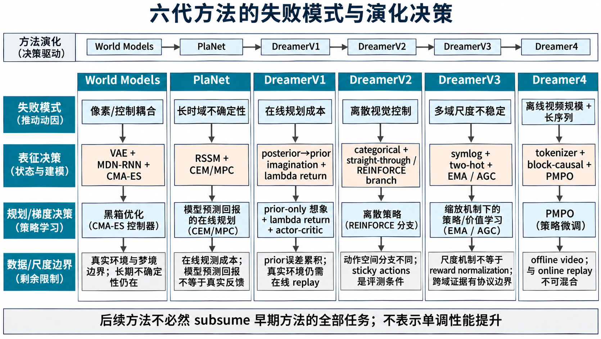
F18 六代方法的失败模式与演化决策详解
这张图回答六代方法分别针对什么失败模式做出表示、规划、梯度、规模或数据条件上的改变，以及哪些限制仍然存在。六列按 World Models、PlaNet、DreamerV1、DreamerV2、DreamerV3、Dreamer4 排列；每列四层分别是 failure mode、representation decision、planning/gradient decision、data/scale boundary，底部灰色虚线保留 remaining limitation/evidence boundary。顶端红色声明提醒读者：演化决策不是单调性能曲线，后代方法不会自动覆盖前代所有任务。
World Models 列的失败模式是 pixel/control coupling：直接从像素到控制难以学习。表示决策是 VAE + MDN-RNN，把视觉压缩和概率序列记忆拆开；规划/控制决策使用 CMA-ES 黑盒进化搜索，避免对控制器参数求导。数据/尺度边界保留短视、样本与模型误差限制，尤其梦境高分不能替代真实环境 fitness。它是世界模型三模块的起点，不是后续 RSSM 或 actor-critic 的完整版本。
PlaNet 列针对 long-horizon uncertainty 和在线规划成本。RSSM 把确定性记忆与随机状态结合，CEM/MPC 在 latent space 搜索候选并每轮执行第一步，再重新观测。剩余限制包括模型预测误差积累、规划计算开销和真实环境反馈边界。图中没有把 CEM/MPC 说成持续训练 actor，保持规划器与学习器分离。
DreamerV1 列针对 online planning cost，posterior→prior imagination + lambda return 把行为学习移到潜空间。真实 replay 后验只作 imagination 起点，未来 prior 不读观测；lambda return 用 imagined reward/value 学 critic 与 actor。剩余限制是在线数据、表示/训练稳定性和长期 rollout 误差。它不是把真实环境完全移除，而是把昂贵规划替换成 actor/critic 学习。
DreamerV2 列针对离散视觉控制限制。categorical + straight-through 让 32×32 离散状态可训练，REINFORCE branch 处理 Atari 离散动作，连续动作仍有 dynamics gradient 分支。剩余限制包括离散瓶颈、估计方差和协议条件。图中不把 55 Atari 或 sticky actions 当作结构，也不把 REINFORCE 说成连续控制通用机制。
DreamerV3 列针对多域尺度不稳定。symlog/two-hot 处理数值分布，EMA/AGC 处理 return scale、目标和梯度裁剪；这些组合让一个配置跨多任务更稳。剩余限制是在线数据和任务覆盖边界，150+ tasks 不能推出所有环境统一排名。它不是把 reward 简单做 (r-p5)/(p95-p5) 归一化，F10/F11 已单独画出这一边界。
Dreamer4 列针对 offline video scale 与 long sequence。连续 tokenizer、block-causal dynamics 和 PMPO policy finetune 支持大规模视频与超长低层动作序列；剩余限制包括离线分布、缓存覆盖、官方代码证据和长期序列偏差。它不自动替代在线 replay，也不证明在所有在线任务上优于 V1–V3。tokenizer、dynamics、policy 三个模块分别由 F12–F14 展开。
一个跨代失败—决策例子是：若像素到控制耦合过强，先用 VAE+MDN-RNN 压缩与记忆；若模型预测可以但在线规划太贵，使用 RSSM imagination 和 lambda return；若离散视觉动作不可导，增加 categorical/straight-through 与 REINFORCE 分支；若跨任务尺度漂移，加入 symlog/two-hot/EMA/AGC；若数据已转为大规模离线视频，则转向连续 tokenizer、block-causal dynamics 和 PMPO。每一步都针对具体瓶颈，而不是简单叠加全部机制。
图稿检查清单交由 root 独立复核：六列身份、failure/representation/planning/data boundary、remaining limitation、方法组合、箭头方向和非单调性能边界。此处不宣称图片已通过。
证据边界
失败模式是对论文问题陈述和方法设计的综合解释，不代表每个后续方法都直接由前一篇代码继承。World Models 作者官方代码未核验，Dreamer4 官方仓库也未核验；图中底部限制保留这些证据缺口。S002–S005 的代码入口和固定 commit 由 crosswalk 与 code receipts 支撑，但“改进了什么”仍需回到具体论文/实验条件，不能只凭演化箭头推断。
常见误读
误读一是把六列读成单调性能增长；顶部红色声明已禁止。误读二是认为 Dreamer4 自动替代在线 replay；它针对离线视频。误读三是把 V3 的 EMA/AGC 说成 V2 的离散机制；版本边界不同。误读四是把剩余限制灰色框当作已经解决的问题；它们表示仍需核验或仍可能失败。误读五是把方法组合标签当成源码调用链；代码入口需查看 F15 crosswalk。
因此，读图应从具体 failure mode 出发，沿表示、规划/梯度、数据边界逐层检查，再回到灰色 remaining limitation。这样可以解释 Dreamer 系列的真实演化逻辑，同时避免把版本差异、证据边界和任务条件压缩成一条宣传式曲线。
最终报告会把每列的 failure/decision/limitation 与 source fact、claim 和 code receipt 绑定，确保方法演化图可以回到论文页、固定仓库和实验协议，而不是只依赖视觉叙事。
r4 失败模式到设计决策的逐代复核
F18 应按“失败模式→表示选择→规划或梯度选择→数据边界”逐列阅读，而不是按年份画单调性能曲线。World Models 的像素到控制耦合促使 VAE、MDN-RNN 和 CMA-ES 分离视觉、记忆与控制，但梦境漏洞和任务相关重建仍是限制。PlaNet 针对部分可观测和长时域不确定性引入 RSSM 与 CEM/MPC，代价是每个真实步都要付搜索预算和模型误差。
DreamerV1 把在线规划成本替换为 posterior 起点的 prior-only imagination、λ-return 和 actor-critic，剩余问题是在线数据、连续 latent 稳定性和长 rollout 漂移。DreamerV2 针对视觉多模态与 Atari 动作不可导改用 32×32 categorical、straight-through，并按离散/连续动作分出 REINFORCE 与 dynamics gradient；离散瓶颈和动作协议仍然存在。DreamerV3 针对跨任务奖励尺度，组合 symlog、two-hot、return scale、EMA、unimix 和 AGC/LaProp，但 150+ tasks 仍是有限覆盖。
Dreamer4 改变的是数据与时空载体：连续 tokenizer、block-causal dynamics、shortcut forcing 与 PMPO 支持离线视频和长低层动作序列；离线分布覆盖、长序列偏差、缓存条件和官方代码缺口仍未消失。每代决策针对特定瓶颈，后代不会自动继承前代的评测协议或解决前代全部任务。06_synthesis/method-evolution.md 与 evidence-boundaries.md 提供跨代关系和边界，论文源文提供各自问题陈述。
视觉审计要确认箭头只从 failure mode 指向对应设计，不把灰色 remaining limitation 画成已经解决的模块。尤其不能把 V3 的 EMA/AGC 回填到 V2，把 Dreamer4 的 offline video 说成在线 replay，或把横向演化箭头当作固定仓库继承。若图中出现这些混线，独立问题表应标出列、节点和证据位置，交由 root 重画。
统一失败模式
六代都保留四个风险：表示丢掉 reward 相关因素，动力学误差在长期 rollout 中积累，策略利用模型漏洞，实验协议与代码版本之间存在未证明的对应关系。后续机制分别做局部修复，却没有论文能从静态重建质量推出任意分布外动作的控制安全性。
源码总架构：从入口、状态流到目标与配置
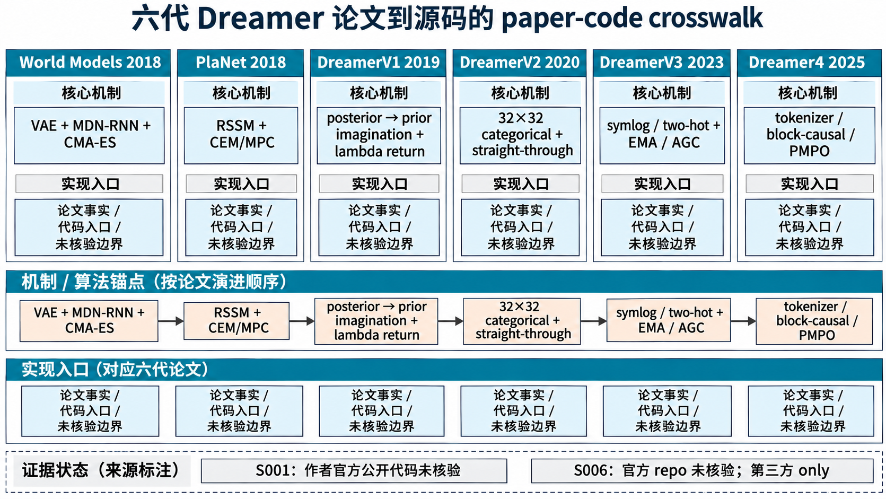
F15 六代 Dreamer 论文到源码 crosswalk 详解
这张图回答六篇核心论文的机制、公式锚点、代码入口和证据边界如何建立可追溯 crosswalk。六列按 World Models 2018、PlaNet 2018、DreamerV1 2019、DreamerV2 2020、DreamerV3 2023、Dreamer4 2025 排列；每列都包含机制事实、公式/算法锚点、代码入口风格标签和证据边界。图中“代码入口”只表示阅读导航，不把未经核验的文件路径冒充固定 commit。
World Models 列以 VAE+MDN-RNN+CMA-ES 为机制摘要。公式锚点保留连续潜变量和 MDN 未来预测，代码入口用 VAE encoder、MDN-RNN step、CMA-ES 风格标签指向阅读任务；底部写明 S001 没有核验作者官方公开代码。它不被画成 RSSM、actor-critic 或 Transformer。读者应把这列作为三模块世界模型和证据边界的起点。
PlaNet 列对应 RSSM+CEM/MPC。公式锚点写出 prior/posterior latent dynamics 与 CEM/MPC 规划，代码入口写成 RSSM observe/imagine、CEM/MPC 风格标签。正式代码身份是 google-research/planet 固定 commit，但图只显示模块名和算法入口，具体文件与行号在正文 crosswalk 中给出。CEM/MPC 的第一步执行和重新观测闭环由 F05 单独解释，本图不展开规划细节。
DreamerV1 列强调 posterior→prior imagination 与 λ-return。公式锚点把后验起点、prior-only rollout、imagined reward/value 和 lambda return 放在一起，代码入口写成 RSSM observe/imagine、lambda-return。冻结 dynamics 和 critic target 边界由 F07 承担，本图只保留机制到源码入口的映射。它不把 V1 的连续状态替换成 V2 categorical。
DreamerV2 列显示 32×32 categorical 与 straight-through。公式锚点保留离散 latent、KL/straight-through 方向，代码入口写成 categorical latent step；Atari/continuous actor 分支由 F09 单独展示。DreamerV3 列显示 symlog/two-hot、EMA/AGC，代码入口写成 symlog+two-hot heads；F10/F11 继续解释具体尺度、return 和 optimizer 边界。两列的常量只绑定各自版本，不能跨代串联成一条万能配置。
Dreamer4 列必须按论文 TeX 的三个阶段对齐：sources/papers/2509.24527/tex/main.tex:162-191 的 Causal Tokenizer，:194-260 的 Interactive Dynamics，以及 :262-327 的 Imagination Training/PMPO。公式锚点分别是 eq:tok、eq:dyn 与 policy/value/PMPO 方程；代码入口只能写成待核验的 tokenizer/dynamics/policy 接口，因为作者官方仓库未核验，sources/repos/dreamer4-unofficial 仅为第三方比较。F12–F14 分别展开这些论文阶段，不能把第三方文件路径写成作者官方实现。
横向橙色“机制核对”行把每代的核心公式和论文段落对齐，蓝绿色“实现入口”行把阅读者带到固定源码的函数或论文阶段，底部证据边界行区分 Paper Fact、Code Fact 与未核验推断。箭头只表达 crosswalk 阅读顺序，不宣称每代直接继承完整代码；标签出现也不等于仓库已经通过 fixed-commit 语义核验。
最小使用例子是：读者先从 DreamerV2 的 categorical latent 标签找到离散 state 构造，再回到 03_anchor_reading/papers/2010.02193-dreamerv2.md 核对 32×32 和 straight-through，最后查固定提交 dreamerv2/agent.py::WorldModel.loss/imagine 与 ActorCritic.actor_loss/critic_loss。Dreamer4 则先按 main.tex 的三个 section 和 algos/agent.tex 的训练顺序核对，再查看第三方接口；若只有 reimplementation，就保留 source-boundary，不能写成 official exact。
图稿事实审校应逐项确认六列身份、年份、机制摘要、公式锚点、代码入口标签、S001/S006 证据边界、四个逻辑区和箭头方向。若 Dreamer4 列出现第三方绝对路径、作者官方仓库断言，或把 TeX 的 tokenizer 输入画成 action/reward 输入，应列入 root 的图片问题表；正文详解不替代图片审校。
证据与代码限制
crosswalk 的目标是可追溯，而不是让每列看起来拥有同等代码完整度。S001 没有作者官方代码，S006 只有论文 TeX 和第三方比较；这些边界必须跟随列和正文。S002–S005 的固定仓库、commit、文件与符号由源码快照直接核验。图中 file/function label 是阅读指针，不是成功执行证据，也不是对实验结果的再现声明。
常见误读
误读一是把横向箭头当作代码继承关系；它只表示阅读顺序。误读二是把入口标签当作真实路径；正式路径在源码快照与来源记录中。误读三是把 V2 的 32×32、V3 的 EMA/AGC 和 V4 的 PMPO 拼成统一模型；每代机制保持独立。误读四是忽略 S001/S006 的未核验边界；代码缺口不能由图注补齐。
因此，读图应沿“论文事实→公式锚点→代码入口→证据边界”四层逐列核对，再用 F01–F14 的机制图深入细节。这样 crosswalk 才能把论文理解和源码审计连接起来，而不会把视觉索引误当成实现证明。
审计记录还应绑定每列的来源记录、repo commit、代码文件哈希和未核验说明；任何一个缺失，都应保留在最终报告的边界表中。
跨论文比较时还要保留版本号。World Models、PlaNet、V1、V2、V3 和 V4 的年份与 arXiv 版本不是装饰文本，而是决定公式、代码和实验条件归属的身份键。若只比较方法名而丢掉版本，容易把 V3 后续 reimplementation 的常量误写进 V2，或把 Dreamer4 的第三方入口误写成官方实现。最终证据表应把每列的 source id、repo id 和 boundary status 一起保存。
直接源码与 TeX 对齐
F15 的每一列都应按四层读取：论文机制、公式或算法锚点、代码入口、证据边界。S001 只有论文级 VAE/MDN-RNN/CMA-ES 接口，当前没有作者官方仓库；S002 对应固定 google-research/planet 提交，入口是 planet/models/rssm.py::_transition/_posterior、planet/tools/overshooting.py::overshooting 与 planet/control/mpc_agent.py；S003 对应 google-research/dreamer 提交，入口是 dreamer/models/rssm.py、dreamer/training/utility.py::imagine_forward/compute_value_loss 和 dreamer/control/temporal_difference.py::lambda_return；S004 对应 danijar/dreamerv2 的 dreamerv2/agent.py::WorldModel.loss/imagine 与 ActorCritic.actor_loss/critic_loss；S005 对应 dreamerv3/agent.py::Agent.loss 与 dreamerv3/rssm.py 的 reimplementation；S006 只有论文 TeX 阶段和第三方比较。
公式锚点要和文件语义一一对应。PlaNet 的 prior/posterior 与 CEM/MPC 是模型内规划；V1 的 R_t^λ 与 imagine_forward 对应 latent actor-critic；V2 的 32×32 categorical、straight-through、WorldModel.imagine 对应离散状态与想象；V3 的 symlog/two-hot、return normalizer、EMA/AGC 分散在状态、目标和优化器；Dreamer4 的 main.tex:162-191 tokenizer、:194-260 dynamics、:262-327 MTP/PMPO 只能按论文 TeX 和 Algorithm 1 标为待核验入口。横向箭头表达阅读顺序，不表示代码继承。
证据层必须区分 Paper Fact、Code Fact 和 inference。固定 commit、文件哈希和符号定位支持代码事实，但不能自动证明论文表格已经复现；README 的命令是入口，不是实验结果。S001/S006 的未核验边界不能由绿色“代码入口”卡片掩盖。来源索引是 06_synthesis/paper-code-crosswalk.md、03_anchor_reading/series-close-reading.md、六篇论文 TeX/Markdown 和源码快照；版本号与 commit 是身份键。
例如阅读 V2 的 categorical latent 标签时，先回到论文 method.tex 的 representation model 与 algos/st.tex，确认被离散化的是世界状态而非动作输入图像；再沿 common/nets.py::get_dist/obs_step/img_step 追到 common/dists.py::OneHotDist.sample，最后在 WorldModel.loss 看到 reconstruction/reward/discount/KL 如何共同训练状态。这条链给出“公式→分布→采样→损失”的证据，仍不能证明论文 55 Atari 分数已在本地重跑。Dreamer4 缺少作者实现时应止于 TeX 算法层级，第三方类名只回答该仓库怎样实现接口，不能填补作者实现的空白。
文件、符号与论文段落的直接对应
S001 的直接论文文件是 sources/papers/1803.10122/tex/main.tex：:178-223 解释 VAE 与 MDN-RNN，:225-246 定义线性 controller，:295-325 区分随机数据与 CarRacing 训练，:446-461 才加入 Doom done 预测。当前没有接受的作者官方源码，所以这一列只能给论文公式与伪代码，不能虚构 worldmodels.py 一类入口。
S002 的论文文件是 sources/papers/1811.04551/tex/sections/model.tex 的 RSSM 两路状态与 planning.tex 的模型/CEM 定义。固定代码基址是 sources/repos/planet/snapshot/planet-c04226b6db136f5269625378cd6a0aa875a92842/，planet/models/rssm.py::_transition/_posterior/features_from_state 对应状态更新，planet/scripts/configs.py::_model_components/_tasks 对应 image/reward heads；F04 的 continue head 无法从这份默认配置得到。
S003 的论文文件是 sources/papers/1912.01603/tex/sections/behavior.tex:11-64；固定基址 sources/repos/dreamerv1/snapshot/dreamer-53e79b0fb8e384e55f6b34169e511cd9d95f844b/ 下的 dreamer/training/utility.py::imagine_forward/compute_value_loss/compute_action_values 与 dreamer/control/temporal_difference.py::lambda_return 分别对应 posterior 批量起点、prior rollout、critic 目标和 actor 可微返回，dreamer/scripts/configs.py 决定 pcont 的使用条件。
S004 的直接论文文件为 sources/papers/2010.02193/tex/sections/method.tex、algos/st.tex 与 algos/klbalancing.tex。固定基址 sources/repos/dreamerv2/snapshot/dreamerv2-07d906e9c4322c6fc2cd6ed23e247ccd6b7c8c41/ 下的 dreamerv2/common/nets.py::RSSM.get_dist/kl_loss、common/dists.py::OneHotDist.sample、agent.py::WorldModel.loss/imagine、ActorCritic.actor_loss/critic_loss 给出可检查的分布、停止梯度和更新参数范围；configs.yaml 则区分 Atari、DM Control 与 defaults。
S005 固定基址是 sources/repos/dreamerv3/snapshot/dreamerv3-e01491fad6434b2245a3b8ca201dd7faedcc458c/。dreamerv3/rssm.py::RSSM.observe/imagine/loss 对应状态与 KL，dreamerv3/agent.py::Agent.loss/imag_loss 装配模型及 actor/critic 目标，embodied/jax/nets.py::symlog/symexp 与 embodied/jax/heads.py::symexp_twohot 对应数值变换和输出分布。作者 README 将当前仓库称为 reimplementation，故图中不能把这些 JAX 细节当成论文原版完全相同的逐实验发布。
S006 的直接文件是 sources/papers/2509.24527/tex/main.tex 与 algos/agent.tex：tokenizer 只编码视觉 patch，dynamics 才交错 action tokens，MTP L=8 用于 BC/reward 预测，imagination RL 则仅更新 policy 与 value heads、冻结 transformer。PMPO 按 A>=0/A<0 分组并忽略优势幅值。第三方路径 sources/repos/dreamer4-unofficial/snapshot-ghfast/dreamer4-main/dreamer4/model.py 的 Tokenizer/Dynamics 不提供官方 PMPO 或 Minecraft 执行证据。这个边界比图内列出三个英文模块名更有信息量，因为它明确了每个实现问题能由哪种来源回答。
r4 六代 paper-code crosswalk 复核
F15 的每一列都应按四层读取：论文机制、公式或算法锚点、代码入口、证据边界。S001 只有论文级 VAE/MDN-RNN/CMA-ES 接口，当前没有作者官方仓库；S002 对应固定 google-research/planet 提交，入口是 planet/models/rssm.py、planet/tools/overshooting.py 与 planet/control/mpc_agent.py；S003 对应 google-research/dreamer 提交，入口是 dreamer/models/rssm.py、training/utility.py::imagine_forward 和 lambda-return；S004 对应 danijar/dreamerv2 的 dreamerv2/agent.py；S005 对应 dreamerv3/agent.py 与 rssm.py 的 reimplementation；S006 只有论文机制和第三方 comparison。
公式锚点要和文件语义一一对应。PlaNet 的 prior/posterior 与 CEM/MPC 是模型内规划；V1 的 R_t^λ 与 imagine_forward 对应 latent actor-critic；V2 的 32×32 categorical、straight-through、WorldModel.imagine 对应离散状态与想象；V3 的 symlog/two-hot、return normalizer、EMA/AGC 分散在状态、目标和优化器；Dreamer4 的 tokenizer、block-causal dynamics、PMPO 只能按论文图和 Algorithm 1 标为待核验入口。横向箭头表达阅读顺序，不表示代码继承。
证据层必须区分 Paper Fact、Code Fact 和 inference。固定 commit、文件哈希和符号定位支持代码事实，但不能自动证明论文表格已经复现；README 的命令是入口，不是实验结果。S001/S006 的未核验边界不能由绿色“代码入口”卡片掩盖。来源索引是 06_synthesis/paper-code-crosswalk.md、03_anchor_reading/series-close-reading.md 与各 S001–S006 source manifest；版本号和 commit 是身份键。
一个审计例子是从 V2 categorical latent 标签出发，先查论文 2010.02193 的离散状态定义，再查 dreamerv2/agent.py 的 WorldModel.loss/imagine，最后检查固定提交和证据强度。若只有 reimplementation，就保留“evidence-aligned”而不是“official exact”。图稿不能用正文补齐缺失路径，发现版本、函数或官方身份不一致，应记录给 root 修正。
源码阅读从调用者开始。先找到训练或交互入口，再确认数据怎样进入 encoder/world model，状态字段怎样沿时间维排列，最后检查 decoder、reward/continue/value、actor/critic 或 PMPO 的消费方式。固定文件和函数只说明该快照实际包含的语义；如果论文没有官方仓库，正文保留论文级接口并明确停止位置。
跨六代的最小调用链可以写成：真实数据收集或读取 → 表示编码 → posterior/过滤状态 → world model loss → prior/dynamics 想象或候选规划 → reward/discount/value 目标 → policy/actor/控制器 → 真实环境执行（若该方法在线）。每个箭头都要问三件事：输入是否来自真实观测，是否允许梯度通过，结果是否真的交给环境。源码中同名的 loss、imagine 或 agent 不能代替这些问题。
源码与论文的差异通常落在默认配置、可选 head、梯度停止、mask、缓存和运行时资源。比如 PlaNet 的工具函数存在不证明最终 agent 开启 latent overshooting；DreamerV2 的代码保留 free 阈值不证明 Atari 默认启用；DreamerV3 的 slow value 类存在不等于 resolved 配置在当前 loss 中用于 bootstrap；Dreamer4 的第三方代码不能冒充作者实现。正文把这些差异写成解释，完整路径、行号、哈希和原始字段在证据附件中逐项保留。
证据等级
论文明确说明：固定 PDF/TeX 正文、附录、图表明确写出。code-fact：固定 commit 静态源码中有真实路径、符号和调用关系。静态证据对应：论文机制与固定源码结构对应，但没有 论文与精确运行配置的对应关系。来源边界：没有作者官方公开代码，不能虚构路径。
| 论文 | 固定实现或来源 | 能核对什么 | 不能推出什么 |
|---|---|---|---|
| World Models | 没有经核验的作者官方源码；论文级接口 | V/M/C、潜变量、MDN 与 CMA-ES 的论文机制 | 第三方仓库或交互页面等同作者训练实现 |
| PlaNet | google-research/planet 固定提交 | RSSM、overshooting 工具、CEM/MPC、配置分支 | 论文表格由该提交、同一 seed 和环境生成 |
| DreamerV1 | google-research/dreamer TensorFlow 1 固定提交 | RSSM、imagine_forward、λ-return、pcont 开关 | 精确运行映射、runtime 与指标复现 |
| DreamerV2 | danijar/dreamerv2 固定提交 | WorldModel、ActorCritic、离散采样与 KL/ST 分支 | Atari 表格的精确生成配置 |
| DreamerV3 | danijar/dreamerv3 后续 JAX 重实现 | RSSM、Agent.loss、normalizer、replay context | 所有论文实验等同当前 defaults |
| Dreamer4 | 论文机制；第三方仓库只作 named comparison | tokenizer、dynamics、MTP、PMPO 的论文阶段 | 作者 Minecraft 训练代码与默认值 |
训练、交互、想象与缓存的生命周期
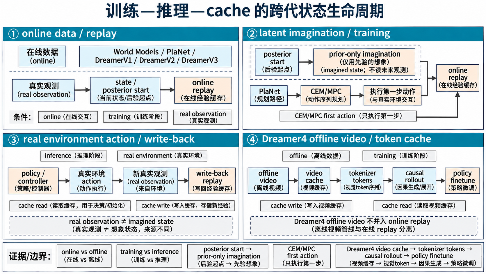
F16 训练—推理—cache 跨代状态生命周期详解
这张图回答六代 Dreamer 方法的状态如何在训练、推理、真实环境写回和离线 cache 之间流动。左侧在线区覆盖 World Models、PlaNet、DreamerV1/V2/V3；中间区分潜变量 imagination/training 与 CEM/MPC inference；第三列展示真实环境动作和 replay write-back；右侧把 Dreamer4 的 offline video、video cache、tokenizer tokens、causal rollout 与 policy finetune 单独隔离。最重要的边界是在线 replay 与 Dreamer4 离线视频 cache 不能混成一条数据链。
左侧在线数据区从真实环境开始。World Models 到 DreamerV3 都以不同形式和在线交互、真实 observation、action、reward、termination 形成数据。真实 observation 进入 posterior 或 RSSM 更新，动作和结果写入 replay buffer；replay buffer 记录 (o_t,a_t,r_t,d_t) 等序列。终止标志 d_t 与 reward 分开保存，不能被省略或当作同一数值。World Models 的具体收集方式与 PlaNet/Dreamer 的 replay 细节不同，图中只表达在线 regime 的共同边界。
中间第二列是潜变量 imagination/training。posterior start 由真实观测推断，随后 prior-only imagination 只使用模型先验展开 imagined states、reward 和 continue；未来真实观测不再进入这段轨迹。world model/RSSM 在训练阶段更新，想象阶段则冻结或作为推理模型使用。下方 CEM/MPC first action 单独标出 PlaNet 的规划路径：候选序列在模型内评估，但每轮只把第一步动作交给真实环境，不等于把整条候选写入 replay。
第三列是 real environment action/write-back。imagined policy/planner 产生 first action，真实环境执行后返回新的 real observation；action write-back 把 action、reward、termination 和新 observation 写回 online replay。这个闭环解释 DreamerV1/V2/V3 的在线行为学习，也说明 imagined state 与 real observation 的状态轴不同。图中的灰色虚线把 training/inference/online regime 分隔开，防止读者把模型内部预测当作真实环境反馈。
右侧 Dreamer4 offline 区从离线视频数据开始，先 cache write 写入 video cache，再 cache read 取出 tokenizer tokens。tokenizer tokens 经过 causal rollout 产生 future-token imagination，供 policy finetune 使用；整列标出“not online replay / 不等同在线 replay”。这不是把在线 replay 换一个名字，而是另一种数据 regime：视频已经存在，tokenizer、block-causal dynamics 和 PMPO 训练从缓存或离线序列读取。
一个跨代时间例子是：PlaNet 在 t 时从 posterior belief 采样候选，CEM 选择 first action，真实环境返回 o_{t+1} 后写回 replay；DreamerV1 则以 posterior start 初始化 prior-only imagination，在 latent 中训练 actor/critic，再把 action 执行到真实环境；Dreamer4 从 video cache 读取 token，causal rollout 未来 token 并进行 policy finetune，过程中不写入在线 replay。三个例子共享“模型预测→行为”的概念，却拥有不同的状态来源和写回规则。
图底部状态轴把 real observation、posterior start、imagined state、prior-only imagination 分开。real observation 来自环境，posterior start 是由观测推断的后验状态，imagined state 是模型预测的未来潜变量，prior-only imagination 是一段不再读取真实未来观测的展开。把这四个标签压成一个“state”会丢失训练/推理边界，代码审计也无法判断 observation 是否被错误地喂入 imagination。
与 F05 的关系是 F05 深入解释 CEM/MPC 的候选、精英、重拟合和第一步执行；F16 只把 first action 放回跨代生命周期。与 F06/F07 的关系是 F06 展开 V1 posterior→prior imagination，F07 展开 world-model/critic/actor 的梯度边界；F16 将它们放入 replay/环境状态轴。与 F12–F14 的关系是 Dreamer4 三张图在右侧 offline regime 中分别解释 tokenizer、dynamics 和 policy finetune。
图稿检查清单交由 root 独立复核：在线/离线 regime、real observation、posterior start、prior-only imagination、imagined state、CEM first action、replay、cache、tokenizer、causal rollout、policy finetune、写回位置和状态轴。此处不宣称图片已通过。
代码与证据边界
跨代生命周期图不声称所有论文共享同一个 replay API。World Models 的 random rollout、PlaNet 的 online replay、V1–V3 的 sequence replay 和 Dreamer4 的 video cache 分别由各自 source/code receipt 支持。Dreamer4 官方代码在本任务中未核验，右列只表达论文的离线数据和 token 流程；第三方仓库不能填补官方实现缺口。
常见误读
误读一是把 imagined state 写回真实 replay；正确只有真实环境 action/reward/observation write-back。误读二是把 CEM 候选整段执行；PlaNet 每轮只执行 first action。误读三是让 Dreamer4 video cache 与在线 replay 合并；两者 regime、写入时机和 token 化路径不同。误读四是把 posterior start 当成未来真实观测；它只在 imagination 起点使用当前观测。
因此，读图应先选择在线或离线 regime，再沿 real observation/posterior/imagined/cache token 的状态轴追踪，最后核对写回位置和停止条件。这个顺序可以解释跨代数据条件变化，同时避免把训练输入、推理输入和评测反馈混为一谈。
最终 manifest 会把每个箭头的 regime、状态类型、source id 和 evidence boundary 绑定起来，确保 HTML 中的图注与正文代码分析保持一致。
生命周期还决定评测时能否把分数放在同一张表里。真实环境 fitness、latent model return、CEM 搜索回报和 Dreamer4 离线 policy 结果来自不同状态来源，不能因为它们都叫 reward 就直接横向比较。图中的 regime 边界要求报告记录数据采集方式、模型是否读取未来观测、动作是否真实执行以及结果是否写回 replay。缺少这些元数据时，跨代曲线只能作为定性参考，不能被解读为统一的在线样本效率。
r4 训练、推理、写回与离线 cache 复核
F16 的状态轴必须从数据 regime 开始分叉。World Models、PlaNet、DreamerV1/V2/V3 都以真实环境产生 observation、action、reward、termination，并以不同形式存入 replay；Dreamer4 从已存在的 offline video cache 读取帧和条件，不写入在线 replay。(o_t,a_t,r_t,d_t) 中 termination 与 reward 是两个字段，不能在生命周期图中合并。
在线路径先用当前观测建立 posterior 或 RSSM belief，再由 CEM/MPC 或 actor 产生真实 action。PlaNet 的候选序列只在 latent 中评估，每轮写回环境的只有 first action；V1–V3 的 prior-only imagination 生成 imagined state、reward、continue 和 value，未来真实观测不再进入轨迹。真实环境返回的新 observation、reward、termination 才会写回 replay，成为下一轮 posterior 和 world-model batch 的输入。
Dreamer4 路径是 cache read→tokenizer token→causal rollout→policy finetune。tokenizer 与 dynamics 从离线序列读取，policy 使用冻结模型产生的未来 token 和优势信号，整个训练阶段不能被画成在线环境反馈。video cache 的写入时机、token 生命周期和 policy 更新与 online replay 的 action write-back 不同，灰色虚线需要明确隔离。
这些边界对应 03_anchor_reading/series-close-reading.md 的各代数据流、06_synthesis/method-evolution.md 的 regime 比较和 evidence-boundaries.md 的证据说明。审计时逐箭头记录状态类型、是否读取未来观测、动作是否真实执行、结果是否写回以及停止条件。若 imagined state 被写入 replay、CEM 整段动作被执行、或 Dreamer4 cache 与在线 replay 合并，应列为图稿问题交给 root。
训练/推理边界
固定证据快照/固定证据快照/固定证据快照/固定证据快照 的静态回执都明确没有安装目标依赖、执行 TensorFlow/JAX、加载 checkpoint 或训练。代码分析证明了调用链和状态契约，不证明论文数字。S001/S006 的 来源边界 已写入联合 bundle 和 HTML 内容合同，第三方仓库不进入作者实现结论。
实验与来源边界：哪些结果支持哪些结论
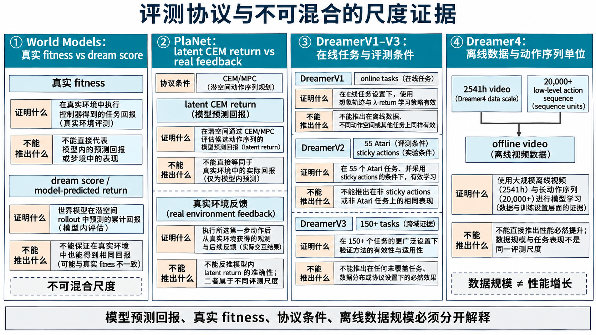
F17 评测协议与不可混合的尺度证据详解
这张图回答六代 Dreamer 论文中的评测数字分别证明什么、不能推出什么。四个区域按 World Models、PlaNet、DreamerV1–V3、Dreamer4 分开；每列都把指标/协议/数据单位拆成“证明什么”和“不能推出什么”。底部四个证据尺度分别是 model-predicted return、real fitness、protocol conditions、offline data scale，红色横幅明确这些不是同一把尺子。
World Models 列同时画 real environment 与 dream/imagination。real fitness 表示真实环境适应度，dream score 表示模型生成的梦境预测/控制信号；两者之间用虚线边界隔开。模型在梦境中给出高分，不能推出真实环境也高，因为 MDN-RNN 的预测误差、模型漏洞和分布外动作会造成虚假回报。真实 fitness 需要真实环境执行和反馈，dream score 只说明模型内部评估。
PlaNet 列把 latent CEM return 与 real environment feedback 分开。CEM/MPC 在潜空间 rollout 里排序候选并得到 latent CEM return；MPC 真正执行第一步后，真实环境返回 observation/reward。latent return 能说明当前模型和规划预算下的候选排序，却不能直接当作真实环境反馈。图中的虚线边界提醒读者，模型预测回报、真实反馈和规划器预算属于不同证据来源。
DreamerV1–V3 列把在线 tasks、Atari sticky actions、55 Atari 和 150+ tasks 作为 protocol conditions。online tasks 证明在规定的在线交互协议下的控制与跨任务泛化；sticky actions 是 Atari 环境动作粘滞条件，55 Atari 是评测集合规模，150+ tasks 是跨域任务覆盖。它们不是网络层、不是统一的样本数，也不能推出所有环境共享一个排名或同一收益来源。
Dreamer4 列用 2541h video 与 20,000+ low-level sequence 表示离线数据尺度和动作序列单位。2541 小时是视频数据规模，20,000+ 是低层 action sequence length；两者都不等于样本数，也不能直接和在线环境步数或 Atari 游戏数比较。离线数据规模能说明训练覆盖和数据资源条件，不能单独证明性能高于在线方法。
一个最小比较例子是：某 PlaNet latent CEM return 很高，但真实环境第一步反馈很差；MPC 的重新观测会揭露模型误差。某 V2 在 55 Atari sticky-action 协议下表现好，不能据此说它在所有连续控制域同样优越。Dreamer4 使用 2541h 视频和 20,000+ 动作序列，不能把这些数字加到 V1/V2 的在线 replay 步数上形成“数据规模增长曲线”。
底部四个尺度框提供阅读顺序：先判断结果是 model-predicted return 还是 real fitness，再确认协议条件，最后核对 offline data scale。solid arrow 只表示同一评测设置中的证据流，灰色虚线表示来源、单位或协议不可互换。图内不画跨方法总分排名，避免把不同任务和数据 regime 的数字硬拼成一个性能指标。
与 F16 的区别是 F16 解释状态/数据生命周期和写回，F17 解释评测数字的证据边界。与 F05 的区别是 F05 解释 CEM 内部的候选和第一步执行，F17 只保留 latent return 与 real feedback 的尺度分离。与 F12–F14 的区别是 Dreamer4 图解释模型机制，F17 只解释 2541h、20,000+ 等数据/协议单位。
图稿检查清单交由 root 独立复核：real/dream/latent 指标、sticky actions、55 Atari、150+ tasks、2541h、20,000+ 单位、证明/不能推出、不可混合横幅和是否误画成架构模块。此处不宣称图片已通过。
证据与代码边界
评测图不替代实验表或源码执行。固定论文版本提供数字和协议描述，代码章节提供配置/环境入口；若代码没有对应训练或评测脚本，报告保留未核验边界。Dreamer4 官方代码在本任务中未核验，第三方仓库不能用来证明 2541h 训练或 PMPO 结果。World Models 的作者官方代码也未核验，梦境与真实环境的双评估只能按论文事实解释。
常见误读
误读一是把 dream score 当 real fitness；两者必须分开。误读二是把 latent CEM return 当真实反馈；MPC 只执行第一步并重新观测。误读三是把 55 Atari、sticky actions、150+ tasks 当模型结构；它们是评测协议。误读四是把 2541h 或 20,000+ 当样本数并与在线步数直接比较。误读五是从单个协议的提升推出跨所有环境的统一排名。
因此，读图应先标记证据来源，再标记单位和协议，最后判断能否跨列比较。只有同一指标、同一数据 regime、同一环境协议和同一时间尺度下，数值才可以进入同一实验表。
最终报告会把每个数字绑定到 paper page、experiment condition 和 source receipt；图稿只给出证据边界索引，不把正文的缺失信息用装饰性箭头补出来。
评测协议的名称也必须原样保留，不能把 sticky、Atari、offline video 等条件删成一个含糊的“benchmark”。
协议名称必须保全。
不得删减。
r4 指标、协议与不可比较单位复核
F17 的第一步是标记结果来自模型还是环境。World Models 的 dream score 是 MDN-RNN 潜在 rollout 内部的模型预测，real fitness 需要真实环境连续执行；PlaNet 的 latent CEM return 只表示当前模型、候选预算和 horizon 下的排序，MPC 执行第一步后得到的 real feedback 才是环境证据。模型内高回报不能直接推出现实成功，必须保留重新观测边界。
V1–V3 的 online tasks、Atari sticky actions、55 Atari 和 150+ tasks 是协议或任务集合，不能被画成网络层、统一样本数或跨代排名。sticky actions 改变 Atari 的动作执行随机性，55 是评测集合规模，150+ 是 V3 的跨任务覆盖；它们回答“在哪些条件下测得”，不回答“哪个组件单独带来收益”。
Dreamer4 的 2541h video 是离线视频时长，20,000+ 是低层 action sequence 的长度语境，二者都不能和在线 environment steps、Atari 游戏数或 latent rollout steps 相加。只有指标定义、任务、数据 regime、时间尺度和评测协议完全一致时，数值才可以进入同一表格。论文事实来自 S001–S006 的固定版本和 06_synthesis/evidence-boundaries.md；Dreamer4 官方代码及 S001 官方实现仍未核验。
一个最小反例是 latent CEM return 高而真实第一步反馈低，MPC 的闭环会暴露模型误差；另一个反例是 V2 在 sticky-action Atari 上有效，不能推出所有连续控制任务同样有效。图内红色不可混合横幅、灰色来源虚线和单位标签共同承担这一限制，正文不能把协议条件压成含糊的 benchmark。
实验结果要连同任务、数据、动作空间、预算、统计聚合和运行来源一起读。CarRacing 的真实 fitness、VizDoom 的梦境生存时间、PlaNet 的样本效率、Atari 的人类归一化分数、DreamerV3 的跨域曲线和 Dreamer4 的离线视频/环境评价，回答的是不同问题。消融显示的是某组协议下的系统变化；它不能单独给出一个组件在所有域上的独立因果贡献。
失败模式同样是机制证据：VAE 可能保留任务无关纹理，局部 prior 误差会在长时域漂移，策略可能钻模型漏洞，OOD 动作会超出离线数据覆盖，reward/discount/value 尺度可能失配，transformer 的 context 和缓存又会带来新的计算成本。报告保留这些负面证据，帮助读者判断一个结果可以迁移到哪种数据和行为条件。
当前任务只执行论文、TeX、固定源码和本地证据的静态联合精读；没有把训练命令、README 示例或 score 文件写成已运行证明。没有官方代码、精确 seed、checkpoint、runtime 或 exact paper-run mapping 时，结论停在相应的来源边界。
查询完成情况
跨论文比较应依次检查共同问题、失败模式、核心机制、训练与推理分界、计算成本、后续替换和来源边界。每个回答都应回到对应论文或固定文件；检索命中与页回读只提供定位，不能自动证明科学解释成立。
- World Models、PlaNet、V1、V2、V3 主要使用真实环境在线数据；Dreamer4 是固定离线视频和离线 imagined RL。World Models 处在随机交互→离线模型→真实/梦境控制的混合位置。
- PlaNet 把行为计算放在 CEM/MPC 的每步搜索；V1/V2/V3 把它移到 latent actor-critic；Dreamer4 把 world-model 和 policy training 推入离线视频世界模型。
- 表示变化从 VAE latent、RSSM 混合状态、categorical RSSM 到 tokenizer/transformer token，不等于每代都替换全部接口。
- “预测质量”“奖励预测”“可控性”“策略成功率”是不同证据槽位，不能用单一重建或视频指标替代。
- S001 与 S006 的官方代码缺失是 来源边界，不是待用第三方仓库可以填补的空白。
证据边界与未决项
| 证据层 | 当前可以确认 | 仍不能推出 |
|---|---|---|
| 锁定论文 PDF、TeX、附录和图表 | 机制、公式、任务、实验协议和作者明确限制 | 新版本、未公开实现或后续修订完全相同 |
| PlaNet、DreamerV1、DreamerV2 固定作者提交 | 函数、状态、配置和梯度路径的静态语义 | 每张论文表格由该提交、同一 seed 和环境版本生成 |
| DreamerV3 后续作者 JAX 重实现 | 当前容量覆盖、RSSM、Agent.loss、normalizer 与 replay context | 发表实现和所有 benchmark 的精确配置 |
| World Models、Dreamer4 论文级材料 | 公开论文中的机制、阶段与来源边界 | 未核验的作者训练仓库、checkpoint 或指标运行 |
| 静态计算与源码形状推演 | 公式、时间轴、状态宽度和停止梯度的逻辑 | TensorFlow/JAX/GPU 内核及环境运行已经验证 |
历史检索数量、旧图稿状态、路线和内部机器回执属于证据附件；它们说明当时的执行记录，不能代替本节的科学来源边界。
相关工作：沿替代机制与边界继续阅读
相关工作按“替换了哪一层机制”继续阅读。Plan2Explore 把 ensemble disagreement 用于探索信号，MOPO 对离线模型 rollout 的不确定性施加惩罚；二者分别改变数据覆盖和行为保守程度。TransDreamer 用 TSSM 改变历史访问方式，但仍保留 latent imagination 与 replay。Director 在 world model 上加 manager/worker 和 latent goal，处理长时域层级行为。DayDreamer 与 Masked World Models 把观测条件扩展到机器人和 masked representation。IRIS、STORM 和 TD-MPC2 分别对照离散 token 自回归、随机 transformer 与隐式 MPC/value 引导。
这些关系只能支持机制结构上的对照。时间先后、共同引用或名字相似不自动推出因果；没有官方代码或没有精确运行映射的工作保留自己的来源边界。
代表性相关工作：前序、替代与边界
这一章把六篇 Dreamer 锚点放回已取得全文的相关工作中。每篇工作保留独立 deep-reading.md、source-coverage 和 PDF/TeX 版本；下面只给阅读入口和与主线直接相关的结论，完整公式、图表、数值和证据边界在对应本地读本中展开。
Plan2Explore 与 MOPO：探索和离线分布外边界
Plan2Explore 与 MOPO 都把模型不确定性接到行为目标，却处在相反的数据闭环。Plan2Explore 在在线交互中把 ensemble disagreement 当作无任务探索信号，主动寻找能减少模型不确定性的观测；它改变数据覆盖，真实环境反馈会继续刷新 replay。MOPO（2005.13239v6）针对 offline RL：从 batch 状态初始化短 rollout，学习多个概率动力学模型，用最大 ensemble standard deviation 作为启发式不确定性 u(s,a)，将奖励改为 r̃(s,a)=r̂(s,a)−λu(s,a)，再在惩罚后的 learned MDP 上运行 off-policy policy optimization。理论部分给出真实回报的保守下界和 ε_u(π) 约束；实践中该 estimator 没有严格 admissible-error 保证，λ 是用户超参。
MOPO 的实例不是 Dreamer4 的视频 token imagination：主实验是 D4RL 的 halfcheetah、hopper、walker2d，四类数据集；另有 halfcheetah-jump 与 ant-angle 的 reward relabeling OOD 任务。结果显示它在 mixed/OOD 数据上优势明显，但 medium 数据分布窄时性能较弱，附录消融还比较 ensemble/variance/no-penalty/oracle penalty。它提供的边界是“模型高回报需要风险惩罚和数据支持”，不能被写成 Dreamer 在线 exploration 的同一正则项。
TransDreamer：以 TSSM 替换 RSSM 的历史访问方式
TransDreamer（2202.09481v2）是 Dreamer 框架内替换 RSSM 历史访问方式的同期路线。RSSM 将过去压缩到递归 h_t；TSSM 用 causal transformer 直接访问过去 stochastic states 和 actions，posterior 写成 q(z_t|x_t)，从而允许时间维并行训练，同时保留 stochastic transition、reward/discount prediction 和 latent imagination。它不是 Dreamer4 的 tokenizer/视频模型，也不是去掉状态随机性的 deterministic transformer。
实验包含近乎可观测的 DMC/Atari 对照，以及专门考察长期记忆的 Hidden Order Discovery。2D 任务使用 4/5/6-ball、8×8 grid、100 步 episode；3D 任务使用 4-Ball Dense、4-Ball Sparse、5-Ball Dense，稀疏版本增大球间距离。DMC/Atari 每个样本想象 3 条轨迹；TSSM 通常是 2-layer、10 heads，DMC hidden/attention 维度 200、Atari 600，Pong 使用 identity-map reordering；Hidden Order 任务使用 6-layer TSSM 和 prioritized replay α=.5，随机选择一个起点并想象到 episode 上限。30 步是 DreamerV2 对照的 imagination 配置，两者的预算差异必须随结果保留。
作者报告在 3D 5-Ball Dense 的 foreground MSE、非零 +3 reward prediction accuracy 和 complete-order success ratio 上 TSSM 常优于 Dreamer；4/5/6-ball 的成功率与 1000 条评估轨迹绑定，不能外推为所有 Atari/DMC 任务的统一优势。相同 context 的 OOD imagination 仍会出现 reward 或物体颜色错误，说明 transformer 长历史改善但没有消除分布外模型误差。
Director：层级 latent goal 与长时域分解
Director（2206.04114v1）在 PlaNet/Dreamer world model 上增加 goal autoencoder、manager 与 worker。manager 每 K=8 步选择离散 latent goal，并消费 task/exploration reward；worker 每个环境步只最大化当前goal的max-cosine奖励。把task reward额外加给worker属于消融条件。Ant Maze 的紫墙→奖励物→棕墙实例说明内部目标如何分解稀疏任务；但 decoder 可视化不等于语义真值，cosine goal reward 也不保证动力学可达。它是 Dreamer “从单层 actor 到层级行为”的代表后续。
DayDreamer 与 Masked World Models：部署和表示学习条件
DayDreamer（2206.14176v1）把 latent imagination world model 带到物理机器人在线适配，必须区分 RGB/depth/proprioception、多模态 reset 和真实执行成本。Masked World Models（2206.14244v3）强调 masked representation 与下游控制的接口，说明重建目标、遮挡策略和控制可用性并不等价。它们共同提醒：Dreamer 的视觉 latent 机制在仿真、机器人和 masked representation 中需要重新核对观测条件与数据收集协议。
IRIS、STORM 与 TD-MPC2：token、自回归和隐式 MPC 对照
IRIS（2209.00588v2）使用离散autoencoder的frame token与GPT-like G，在Atari 100k上逐token预测下一帧、reward、termination；策略读取decoder重建图像，不能把它写成直接消费离散token的actor。它的 16→64 token、100k→10M 数据和 Freeway temperature=0.01 附录证明表示容量、数据比例和探索调度是分离条件。STORM（2310.09615v1）代表随机 Transformer world model 路线，需把 stochastic state、context 和 imagination 协议与 Dreamer 的 RSSM 分开。TD-MPC2（2310.16828v2）则以 decoder-free implicit latent dynamics、terminal value 和每步 latent MPC 处理 104 个连续控制任务；它把行为计算放在局部搜索/value 引导上，与 Dreamer actor-critic imagination 是不同的推理位置。
关系证据和当前边界
这些关系按作者明述继承、机制结构对应、独立替代、支持/反驳和评估关联分别记录，时间先后或共同引用不自动推出因果。相关工作读本已实际检查 PDF/TeX、关键图表和附录；没有官方代码执行或训练复现的论文明确保留 来源边界。旧选择文件中的 TD-MPC2 2307.01415、IRIS 2109.09283 和 2402.XXXX 已在身份修复快照中保留原件，并以核验后的 2310.16828v2、2209.00588v2、MOPO/Plan2Explore 等具体源包替换。
Plan2Explore：先学会去哪看，再学会怎样完成任务
1. 身份、材料与阅读问题
本文锁定 Planning to Explore via Self-Supervised World Models，arXiv 2005.05960v2，对应 ICML 2020，作者为 Ramanan Sekar、Oleh Rybkin、Kostas Daniilidis、Pieter Abbeel、Danijar Hafner、Deepak Pathak。当前 PDF 共 13 页，正文 pp.1–8、致谢和参考文献 pp.9–10、附录 pp.11–13；同版本 TeX 为 sources/candidates/2005.05960/tex/main.tex。PDF SHA-256 为 7f039730e17e0483531d3633cfdb80a2604af175173424fb8d589ea9b7e57ff5。本报告已读取全部正文、附录和表格，核对同版本公式及两段伪代码，查看逐页渲染和六张原文 Figure；图 2、3、4、5、6 及表 1、2 另以原尺寸页面核查。这里的“已读”指本文的解释和证据覆盖，不表示运行了目标代码，也不表示复现了训练结果。
这篇论文最值得读的问题是：如果探索时还不知道未来任务，世界模型怎样决定收集哪些数据？Dreamer 的 imagined actor-critic 解决了“已有奖励时怎样学行为”，Plan2Explore 则把这条计算链用于预期信息增益。它不要求先在真实世界看到一个新奇状态，再给这个状态加好奇心奖励，而是让模型想象一串动作，比较这些动作将把自己带到哪里、哪些地方最可能减少模型未知。论文最后再给任务奖励，在已学世界模型内训练一个新的任务策略。
读者必须同时保留两个限定。第一，探索不是静态离线学习：探索策略仍真实执行动作并扩大数据集。第二，zero-shot 指获得任务定义后不再为该任务收集新训练数据；它不等于没有环境数据、没有策略优化、没有奖励函数、没有最终环境评估。Figure 1（p.1）把环境与 global world model 画成循环，再由模型分叉到 Task A/B/C，正好表达这一数据边界。
2. 创建背景、旧方法失败与概念依赖
作者从两种低效性出发。其一，每个 reward task 单独收数据会反复支付真实交互成本；task-specific policy 的访问分布可能很窄，学到的模型也只擅长任务访问区域。其二，许多 intrinsic-motivation 方法在经历一个转移后才计算 prediction error 或 novelty，再让策略返回这些“以前新奇”的状态。世界和预测器持续改变，过去高误差处此刻可能已学会，而更远的新奇状态仍没有被想象到。原文 p.2 的 retrospective novelty 讨论明确把这一时序差异当作方法动机。
理解本文需要先分清五个概念。环境真实状态是物理世界内部变量，本文不直接提供它；观测 o_t 是 64×64×3 RGB，单帧可能缺速度等信息；encoder feature h_t 是 CNN 对当前帧的表示；RSSM state s_t 则压缩历史，既不是原始图像，也不等于真实 Markov state。最后，world model 参数 θ 和 disagreement ensemble 参数 w_k 分工不同：前者产生 imagined state trajectory，后者估计这些状态动作对下的下一帧 embedding 分歧。若把 h_t 当 RSSM 的 deterministic hidden state，就会错读式 (1)；本文 h_t=e_θ(o_t) 特指图像编码特征。
概率层面，epistemic uncertainty 是由于训练证据不足产生、可通过数据减少的未知；aleatoric uncertainty 是给定输入仍存在的环境随机性。一个永远随机闪烁的屏幕可有很大的单次预测误差，却不一定值得反复探索。模型集成并非自动保证贝叶斯后验，但当不同初始化和数据顺序的预测器对未见输入意见不同、对已知条件收敛到相同均值时，均值方差可以作为可减少未知的代理。这一“当”是论证的条件，不能翻译为所有神经网络集成均已校准。
控制层面，本文沿用 PlaNet 的 latent dynamics 和 Dreamer 的 actor-value 学习。PlaNet 在每个环境步在线搜索动作序列；Plan2Explore 的“planning”主要指在模型想象中优化参数化探索策略，部署时执行 actor，而非每次做 CEM。价值函数让短想象片段考虑 horizon 之外的奖励，actor 的梯度可穿过可微模型，故 latent disagreement 能在不解码未来图像的条件下被优化。先掌握观测/状态区别，再理解 prior/posterior，接着理解 ensemble reward，最后讨论信息增益和实验，才不会把这些模块混成一个预测器。
3. 符号、形状、参数和条件
| 符号 | 本文含义 | 维度/单位/条件 | 原文位置 |
|---|---|---|---|
o_t |
真实图像观测 | 64×64×3 RGB；不是 simulator state |
p.3 式(1)，p.5 实验设置 |
h_t |
e_θ(o_t) 图像 embedding |
附录说明 ensemble 预测 1024 维 encoder feature | p.3，p.11 |
s_t |
RSSM latent model state | 压缩历史；具体子状态规范沿用 PlaNet/Dreamer | p.3 式(1)及脚注 |
a_t |
环境动作 | 连续动作向量，维度随 DM Control task | p.3 |
θ |
编码器、动力学、decoder 等模型参数 | 可学习；actor 优化期间模型提供可微函数 | p.3 |
w_k |
第 k 个一步 embedding predictor 参数 | 实验 K=5，每个为两隐藏层 MLP | p.4 式(3)，p.5/p.11 |
μ_k |
μ(w_k,s_t,a_t) |
对下一 embedding 的均值向量，D=1024 | pp.4–5 式(3)–(10) |
μ' |
ensemble 均值的均值 | 与 embedding 同维；对模型索引 k 归约 | p.4 式(4) |
D(s,a) |
latent disagreement | 样本方差，分母 K−1；非负 | p.4 式(4)、p.5 式(10) |
r_t^i |
exploration intrinsic reward | 来自 D，附录最终奖励放大 10000 倍 | Figure 2，p.11 |
π_LD |
task-agnostic exploration actor-critic | 在 imagined trajectory 上优化新奇性 | p.3 Algorithm 1 |
π_R,R,R̂ |
下游任务策略、给定奖励函数、latent reward predictor | reward 函数重标记 replay，再蒸馏到状态奖励头 | p.3 Algorithm 2 |
K,D |
ensemble 数、embedding 维数 | K 也可一般化；D 不是 dataset | pp.4–5 |
论文对向量方差的表达使用逐元素平方，最终给 actor 的奖励需要标量。公式没有在本页明确写 feature 轴上的 mean/sum 操作，附录也只说明 scale；本报告因此把 D 先视为 embedding 各坐标的分歧，再在教学例中显式声明使用何种归约。不能凭经验把 1024 维 sum 写成源码默认 mean。类似地，论文未详细给 batch-first 或 time-first 排列，本文只用语义形状 [batch,time,feature]，不把它当固定实现数组格式。
4. 世界模型和行为模块的完整计算
式 (1)（p.3；TeX 157–166 行）给出五个接口：
posterior 从真实帧 h_t 修正当前状态；prior 不读取对应帧，用于向未来预测。CNN encoder、RSSM posterior/prior、image decoder 联合按变分目标学习，decoder 为高维图像提供丰富监督；奖励头属于模型接口，但 task-agnostic exploration 没有外部 task reward，不能把“世界模型形式包含 reward predictor”理解为探索泄漏下游奖励。真实任务出现后，Algorithm 2 才在已有序列上计算 R 并蒸馏 R̂。
式 (2) 的 actor π(a_t|s_t) 和 value V(s_t) 消费 latent state。训练从 replay 真实图像所编码的 posterior state 出发，随后采样 actor 动作、用 prior 转移为下个 imagined state，重复到 horizon；在每个状态估计 return/value，通过模型对 actor 参数求导。未来不再读取真实图像，decoder 也不在每条 imagined trajectory 中重建像素。这一选择同时降低内存开销并使多条轨迹能并行。若人为在 imagination 中喂入真实下一帧，得到的是 posterior filtering 而非行动后果预测，intrinsic reward 就失去了反事实意义。
注意“world model 固定”通常是一次 behavior update 中不更新其参数，而非整个探索阶段冻结。Algorithm 1 每轮依次训练 M、E、探索 actor，然后去环境收集；新数据改变 M/E，过去未知状态的 disagreement 随之下降，探索 reward 是非平稳的。策略若只记住昨天的高奖励坐标，会不断追逐过时新奇性；持续重算 imagined reward 正在应对这一问题。
5. Latent disagreement：预测均值的分歧，不是单样本误差
式 (3)（p.4）定义 K 个一步预测器：q(h_{t+1}|w_k,s_t,a_t)=N(μ_k,1)，以 MSE 训练等价于固定方差高斯 likelihood。给定相同 (s_t,a_t)，每个模型输出完整下一 embedding 的均值。不同的参数初始化和数据顺序使未见区域预测不同；采集对应真实转移后，模型回归同一目标，均值倾向接近。这里比较的是模型间均值，而非各模型从高斯中各采一个带噪声的样本；否则 aleatoric sampling noise 会混入探索奖励。
式 (4)（p.4）为：
K 轴是 ensemble 轴。每个 embedding 坐标拥有一个方差，再根据明确的实现归约形成 reward。论文附录 p.11 选择预测 1024 维 encoder features，而不是 RSSM deterministic、stochastic 或 combined features，且把 disagreement 乘 10000；作者认为高维预测所带来的参数容量可能解释提升，这是推测性解释，不能当作独立消融证明。也不能把 10000 当信息论常数，它是训练尺度配置。
模型集成的优点是轻量：K 个一步 MLP 不必像 K 个完整 RSSM 那样维护长程 rollout；主 RSSM 产生 imagined latent state，ensemble 只在每一处 (s,a) 预测下个 embedding 均值。代价是“不确定性”依赖 representation 和 ensemble 训练。若 encoder 把两个需要不同动作的环境状态映到相同 embedding，所有预测器都可一致地错；若所有 ensemble 成员因共同偏差给出相同输出，D=0 也不能保证真实预测正确。这是 variance proxy 的结构边界，论文并没有校准定理消除它。
6. 信息增益的推导、成立条件与近似边界
§3.2 从 optimal Bayesian experimental design 引入随机的 dynamics parameter w。式 (5)–(6)（p.4）把动作选择写为最大化 I(h_{t+1};w|s_t,a_t)；它回答“看到未来 embedding 后，平均能减少多少关于动力学参数的未知”。式 (7) 展开为：
第一项 total uncertainty 混合模型未知和观测噪声；第二项给定模型参数后仍然无法消除的噪声；差值对应可通过数据减少的 epistemic uncertainty。若只最大化总熵，就可能迷恋不可预测但无学习价值的随机屏幕。作者的 ensemble 模型把参数分布近似为式 (8) 的点质量均匀混合 p(w)=K^{-1}Σδ(w−w_k)，每个分量输出同一固定方差高斯。于是式 (9) 中条件熵不随动作变化，最大化 information gain 变成最大化 mixture marginal entropy。
关键的近似发生在下一步。高斯混合的边缘熵没有便于该优化的闭式，作者用均值的经验方差代替模式分散程度，得到式 (10)，与式 (4) 相同。因而本文不是“证明样本方差等于信息增益”。在固定 variance、合理 ensemble posterior 近似和相应 embedding 下，分散均值使模式减少重叠，方差可充当可优化代理。不同均值配置可以有相同方差但不同混合熵；当模式远到几乎不重叠时，真实混合熵对进一步拉远的收益会饱和，variance 却仍增加。这解释为何理论联系必须写“approximation”。
式 (9) 写 D/K Σ ln σ_k(s,a)+const，随后假设 fixed variance，故本研究实际条件下该项对 state/action 为常数。若改为 learned heteroscedastic σ，却仍直接用 variance reward，就不再自动保留作者这一消项逻辑。原文补充 fixed-variance approach 也可用于异方差环境，因为它关注条件均值的信息；这不代表已精确估计每个状态的 aleatoric uncertainty。
7. 贯穿方法的纸面数值实例
以下是教学数据，不是论文实验，也未运行作者实现。设 replay 中某个 posterior 起点 s_0 有两个可选动作 A、B。将 1024 维 embedding 缩成 2 维便于手算，假定 K=3 且 feature 方差再取平均得到标量 reward。
A 的三个 predictor 均值为 (0,0),(1,0),(2,0)。ensemble 均值 μ'_A=(1,0)，平方残差按坐标相加为 (1,0)+(0,0)+(1,0)=(2,0)，除 K−1=2 得 (1,0)，再除 feature 数2 得 scalar disagreement D_A=.5。B 的三个输出为 (1,1),(1.2,.8),(.8,1.2)，均值 (1,1)，平方和 (.08,.08)，样本方差 (.04,.04)，feature mean 为 .04。若照论文的 10000 尺度，当前一步 rewards 为 A=5000、B=400；尺度改变梯度量级，不改变这两个动作的一步排序。
再令 A 把模型带到 s_A，其下一步可得 D=.01；B 把模型带到 s_B，随后可达 D=1.0。为展示规划与回顾性区别，使用教学折扣 γ=.9、两步 horizon、不 bootstrap。A 的 reward 和为 .5+.9×.01=.509，B 为 .04+.9×1=.94。一步策略选 A，多步 expected-novelty 策略可能选 B，因为它愿意先经过熟悉过渡，去更远可学习区域。这是 Figure 2 的 latent trajectory 与 §5.4 one-step Retrospective Disagreement 的实质区别，不能用“一步 variance 最大”完整描述 Plan2Explore。
真实执行 B 后，获得 o_1，encoder 得到 h_1，M 用 posterior 修正并更新，E 对真实 next-feature target 回归。若三模型后来在 A 区域收敛到 (1,0)，方差变为零；如果环境仍随机在左右两种未来切换，三个 MSE 模型都可能学到同一条件均值，均值分歧下降而单样本残差仍非零。它说明本文试图避免 noisily stochastic region 的永久高奖励，也说明 ensemble 均值可能落在两个真实模式中间，故“不再值得探索”不等于“生成均值像真实样本”。
任务奖励到来后不再最大化 D。假设给定奖励函数 R 在已有真实状态上产生 [0,0,1]，Algorithm 2 用这些标记训练 latent predictor R̂。imagined task policy 优化 R̂ 的多步 return。若数据从未覆盖某个真正高奖励动作，zero-shot 不能凭空获得其可靠后果；它可能利用模型外推漏洞。few-shot 可把真实 task episode 加回 D 修正，这也解释为何 zero-shot 与 150K task-specific steps 是两个实验条件。
三个最小失败例分别检查不同假设。把 ensemble 输出从均值换成含独立噪声的采样，可能对已知随机环境仍给高 D；把 observation encoder 去掉细小接触物体，即使 K 个模型一致也会控制失败；把 p.12 的 3.5M environment steps 写成 3.5M policy decisions，就因 action repeat 2 多算一倍动作。前两者属于机制失败条件，第三者属于证据计量错误。
8. 两段算法、训练/推理和状态边界
Algorithm 1（p.3；TeX 204–220 行）初始化少量随机 episodes 的 D、世界模型 M、ensemble E、探索 actor-critic。循环是 train M on D → train E on D → 在 M imagination 中用 LD reward 训练 π_LD → 在真实环境执行探索 policy 扩大 D。前三步是模型/参数更新，最后一步才发生现实动作；不存在“所有 imagined trajectory 都执行到现实”的过程。每轮可重复采样 replay，模型已见同一序列不等于环境交互计数增加。
Algorithm 2（p.3；222–239 行）接收 M、无 reward 数据集 D、任务 R，初始化 R̂ 与 π_R。先在 D 上蒸馏 R→R̂，再在 M 内训练 policy，执行一次任务报告表现。可选步骤是加入 task-specific episode 并重复；zero-shot 明确省略这个可选数据加入步骤。最终环境评估会产生轨迹，但若它不被用于继续优化，不能把它误计为训练交互；反之，若加入 replay，则是 few-shot，不能仍叫 zero-shot。
训练和部署的 state 管理也不同。训练从完整 replay subsequence inference 出 posterior states；真实执行每步得到新观测后过滤更新；imagination 使用同一 prior dynamics 但不读取未来 obs，state 是临时 rollout。本文正文提供了 actor 梯度穿过模型的说明，未逐项标注每个 stop-gradient、target value 和 optimizer 实例；这些需要固定官方实现审查才能成为 Code Fact。本文不将沿用 Dreamer 的常见配置补写成本文公开的 precise source line。
9. 所有原文图表的实质解读
Figure 1（p.1）是两阶段任务图：左侧无奖励环境与全局模型闭环，右侧多个 downstream tasks 共用模型。它支持训练设置解释，不是性能数据。Figure 2（p.2）左侧从 o_t→h_t→s_t→π_φ→a_t，中央在 latent space 多步展开，右侧 K 个 w 预测同一下一 embedding；绿色虚线表示对 policy 的梯度。该图没有把未来像素放入 imagined loop，右侧紫色区域也不是 K 个完整 world models。本报告已以原尺寸检查箭头、state/action 下标和 variance label。
Figure 3（p.5）给八个代表任务的 zero-shot curves。横轴 Environment Steps，纵轴 zero-shot performance；橙色 Dreamer 是 supervised oracle，绿色 Plan2Explore 无探索 reward，蓝色 Curiosity、粉色 MAX、红色 Retrospective、灰色 Random。绿色在 Cheetah Run、Cartpole Swingup Sparse 优于其余无监督方法，Hopper Hop 可以高于橙色；Reacher Easy 上多条曲线抖动且接近，不能概括为所有任务明显优势。每个 checkpoint 重新在模型内训练 downstream policy 后测其 zero-shot 表现，所以曲线不是探索策略自己当时 task return。
Figure 4（p.6）把白色探索区与阴影 task adaptation 区分开。约 1M 环境步前，未知任务下的低 return 不说明 agent 没学到模型；reward 公开后，多种无监督方法曲线跳升，代表目标发生切换并开始任务训练。绿色在 Hopper Hop、Cheetah Run 等较快适应，但 Reacher Easy 和 Walker Walk 的 Curiosity 也有竞争力。不能把这张图读成“从第一步起 Plan2Explore 已在优化 task reward”。
Figure 5（p.7）四个 Cheetah 任务对照：Run、Run Back、Flip Backward、Flip Forward。Dreamer 只在 Run Forward 收有奖励数据，Plan2Explore reward-free 收数据。橙色在原任务强，在后向和翻转任务弱；绿色在改任务上明显改善。这支持 task-agnostic exploration 的覆盖好处，而非证明模型已覆盖全部 Cheetah physics。附录 p.11 明确新任务的速度/角速度 reward：后退 reward 截断于 backward speed/10；翻转 reward 截断于 angular speed/5，单位分别 m/s、rad/s。
Figure 6（p.13）展示全部20任务，原尺寸核查可见重要反例：Finger Turn Hard 的 random/curiosity 很有竞争力；Quadruped Walk 和 Reacher Hard 上监督 Dreamer 明显强；Walker Stand/Run 也存在差距。主文“almost matches oracle”的叙述必须结合这些任务差异和平均数理解，不能写成20任务逐项不输。
Table 1（p.12）是3.5M environment steps 后最后20 episodes 的均值，执行 actor mode 且无 action noise。Plan2Explore task average=563.58、Curiosity=489.26、Random=342.11、supervised Dreamer=694.77。Plan2Explore Hopper Hop=432.58 对 Dreamer336.57，而 Quadruped Walk=182.87 对921.25，说明 aggregate 掩盖方向相反的任务。表中 MAX/Retrospective 多处破折号意为未报告，不是0。
Table 2（p.12）是1M reward-free +150K task-specific environment steps，监督 Dreamer 为1.15M task-specific。八任务均值 Plan2Explore643.73、Curiosity537.95、Random155.23、MAX210.46、Retrospective258.78、Dreamer700.27。Hopper Hop307.16 对163.32，但 Reacher Easy848.65 低于Curiosity894.29 和Dreamer918.86。两表任务集合不同，不能把563.58→643.73说成同一集合上finetune提升80.15。
10. 实验协议、claims 和可比性
全套实验采用 DM Control 像素输入，64×64×3，episode长度1000，action repeat R=2，3个random seeds，曲线阴影standard deviation。附录说明所有曲线以过去20点moving mean平滑，只有Figure5用5点窗口。因此图中平滑和误差带不等同 confidence interval，也不能用视觉上小波动证明严格可复现。作者把模型hidden capacity增大：GRU hidden400、latent deterministic/stochastic components60，并为所有基线保持同模型规模。ensemble K=5、两隐藏层MLP，预测1024D encoder feature，reward不归一化，D乘10000。
Curiosity 被改造成 model-based setting：原本的 prediction-error reward 需要真实target，作者使用完整RSSM loss作为 intrinsic reward，再训练 reward predictor 以便在模型内优化。MAX 也被适配到 image input。故这里比较的是统一Dreamer骨架下的探索目标，而非原论文原封不动的所有实现。优点是控制了模型骨架，代价是结论要绑定这些适配版本。Retrospective是one-step planning对照，不能完全代表所有model-free curiosity。
Claim P2E-C1“reward-free exploration可支持zero-shot task policy”由Algorithm2、省略可选数据加入、Figures3/6与Table1支持；它要求任务奖励能在已有D上标记，仍需模型内优化。C2“expected novelty优于仅回顾一步”由§5.4和Figures3/4中Retrospective对照支持，但同时用多步模型和actor training，不是独立证明information gain estimator精确。C3“较少task-specific交互即可逼近oracle”由Figure4/Table2支持，few-shot预算100–150episodes/150K env steps应保留。C4“task-agnostic模型比单任务模型更可迁移”由Figure5的Cheetah设置支持，不能外推新环境、新物理或不共享观测空间。
11. 设计逻辑、反事实和方法边界
作者明确的设计逻辑是：真实采样昂贵→让同一reward-free数据服务多个任务；单步回顾性novelty滞后→通过模型看更远；高维像素使不确定性昂贵→在encoder embedding和RSSM latent中运算；prediction error混入噪声→比较ensemble均值；需要快速adaptation→复用Dreamer imagined actor-critic。不同环节解决不同问题，不能都称为“更强世界模型”。
若只保留ensemble而去掉多步imagination，仍可探索当前一步未知，却失去“穿过熟悉通道去远处”的能力；Retrospective对照就是这一部分的实验证据。若只保留world model而用random exploration，得到模型但数据覆盖由随机动作决定，长时域困难区域可能从不到达。若探索时给task reward，数据会向当前任务集中，zero-shot transfer设置改变。若把全部像素reconstruction error当uncertainty，随机纹理会造成高intrinsic reward而不一定改善可控性。这些反事实说明每个设计的输入和目标地位。
论文的理论联系没有提供全环境最优探索保证：ensemble是有限神经网络集合，state representation可混叠，模型想象自身有误，方差也只是mixture entropy的代理。所谓global model是任务组内相对task-specific模型更广的经验概括，不是统计上已覆盖全部state-action space。附录的20任务也存在明显失败任务，这些是方法适用边界的一部分。
12. 代码、代际比较与来源边界
论文首页给项目站和代码入口，相关工作明确说基于Dreamer，world model基于PlaNet；这是作者声明的机制继承。本子任务没有克隆或运行Plan2Explore代码，因此精确optimizer、broadcast/reduction、sequence detach和参数冻结行仍为code-boundary。主报告若以后使用作者仓库，需独立implementation ID、commit和configuration，不要把当前DreamerV3重写中的disagreement模块当ICML2020实现。
相对World Models，Plan2Explore不以CMA-ES优化固定控制器，而是可微latent actor-critic；相对PlaNet，不是每个真实步CEM搜索；相对DreamerV1，保留representation/dynamics/behavior计算，把behavior目标从task reward替换为latent disagreement，后续再蒸馏task reward；相对Director，本文不学习manager/worker goal hierarchy，而是学习全局探索policy；相对Dreamer4，本文首先真实在线探索，不能称为从固定internet videos完全离线学得。它为“task reward不是world-model训练的唯一驱动信号”提供直接机制例子，但不能证明无动作视频足以支持任意control。
13. 疑难问答与自测答案
Q1：zero-shot为什么还要训练任务policy？ zero是新增task-specific环境训练交互为零。M已经从reward-free交互学习；R公开后在已有数据上训练R̂、再想象优化policy，计算可很多。Algorithm2明确显示这些步骤。
Q2：为什么不直接最大化模型prediction error？ error要看到真实未来，且可由不可减少噪声造成；ensemble均值分歧可在imagined (s,a)上计算。它仍受共同偏差影响，不能视为完美epistemic uncertainty。
Q3：K个MLP等于K个世界模型吗？ 不等于。共享RSSM产生未来latent，MLP只预测下一encoder feature；从Figure2右侧可看到同一s_t,a_t进入多个w_k。这一分工减少开销。
Q4：方差等于信息增益吗？ 不等于。式(7)是信息恒等式；固定高斯方差和点质量ensemble使条件熵常数；式(10)才是对混合边缘熵的可优化替代。近似层必须保留。
Q5：无监督探索有task reward head是否矛盾？ 模型接口可包含reward预测，但探索时没有task-specific reward；Algorithm2在任务公开后标记D并学习R̂。不能因为式(1)列头就推断exploration使用oracle reward。
Q6：Figure4探索区低分是否说明模型差？ 该阶段没有任务目标，return只是事后测量的偶然结果；模型覆盖价值在后续adaptation表现中检验。也不能反过来忽略某些低分任务，必须看Table1/2和Figure6。
Q7：结果支持比Dreamer普遍更好吗？ 否。监督Dreamer是带task reward的oracle，平均694.77高于563.58；Hopper Hop上本文更高，Quadruped Walk等更低。作者主张是无需奖励的探索仍有竞争力，任务条件决定强弱。
Q8：本报告哪些数值可以作为实验结果引用？ 仅原表直接读出的预算、均值和超参；第7节K=3、2D embedding、γ=.9及A/B数值是独立教学实例，不是论文测量。两者在来源台账中分别标注。
补充解析：核心思想、适用前提与相近机制
本篇的核心思想是先用无任务奖励的交互学习更广的动力学，再在任务奖励给定时复用世界模型学习策略。探索策略追求的是未来模型之间的可减少分歧，不是当前任务分数；任务策略随后追求外部奖励，两者训练目标不同。论文的原始记号中 h_t 是图像编码特征，s_t 是 RSSM 状态；不可把其他 Dreamer 文献中表示循环记忆的 h_t 直接搬来，否则会误读 ensemble 预测的对象。
独特机制是主 RSSM 与一步预测 ensemble 分工。主模型负责生成连续想象轨迹，ensemble 各成员在相同状态动作上预测下一帧 encoder feature 的均值，固定方差高斯使 MSE 训练成为条件均值学习。分歧比较的是成员均值，不能从每个成员额外采样再比较，因为那会混入环境噪声。信息增益先写为总预测熵减去给定模型参数后的条件熵，固定方差假设只让后一项成为常数；再以均值样本方差近似混合分布边缘熵，是第二层近似，不存在“方差严格等于信息增益”的结论。
相近机制必须按数据闭环区分。Plan2Explore 为高分歧区域加奖励，目的在真实环境得到新的观测；MOPO 为不确定区域减奖励，因为离线数据无法反馈纠错；Director 把重建误差奖励加给高层 manager，以时间抽象扩大探索范围。三者都出现“模型不确定性”，但分歧来源、奖励符号、决策层次和数据刷新不同。与普通 Dreamer 的共同点是 prior imagination 和 actor-value，区别在于 task-agnostic 探索阶段与 ensemble 信号。
教学实例和主实验已经在本读本独立展开。能支持的结论是：在给定 DM Control 任务集合、动作重复和采样预算下，任务无关数据可服务多个后续任务；不能支持任意状态动作覆盖、完美贝叶斯校准或所有任务优于任务监督。代码未运行，精确的特征归约、采样轴、目标网络与停止梯度仍停留在论文来源边界。新读者应能够直接回答：预测误差需要真实未来，而分歧可以在想象中预先计算；高分歧不等于任务高回报；零分歧也不等于模型正确。
MOPO：把离线模型的未知区域变成显式风险
1. 身份、材料与阅读问题
本文是 MOPO: Model-based Offline Policy Optimization，arXiv 2005.13239v6，NeurIPS 2020，作者 Tianhe Yu、Garrett Thomas、Lantao Yu、Stefano Ermon、James Zou、Sergey Levine、Chelsea Finn、Tengyu Ma。当前 PDF 19 页；正文包括 Introduction、Preliminaries、MOPO 方法、Experiments、Conclusion，附录包括 integral probability metrics、proofs、practical algorithm、ablation、generalization limit、HIV domain 和 hyperparameters。PDF SHA-256 为 c9566a8e3d2e5b576cb65cc2ae1684761f5dc0c88017cd646bf74e5b51c0f4f4。同版本 e-print 已解包到 sources/candidates/2005.13239/tex/，含 method.tex、experiments.tex、appendix.tex 等 7 个 TeX 文件。
本报告把 MOPO 作为 Dreamer4 离线想象边界的批评/基础来源：它不是视觉 world model，也不是 Dreamer 结构的直接后继；它研究的是静态 transition batch 中，模型可以多大程度离开行为数据支持。其核心问题是模型产生的高回报可能只是错误模型区域的 exploit。方法通过 reward penalty 把不确定性纳入 model-based policy optimization，再用理论下界和 OOD 实验解释为什么风险控制应按 policy rollout 分布累计。
已核对全部 19 页 PDF、TeX 方法/证明/算法/附录、D4RL 与 OOD 图表/表格以及原尺寸渲染。报告中的数值若标为“论文结果”均来自固定 PDF/TeX；第 7 节纸面计算另标 teaching-only。没有运行 MOPO 仓库、D4RL 环境或训练脚本；代码事实仅记录论文声明的仓库入口和来源边界。
2. 创建背景、离线失败与概念依赖
离线 RL 只允许访问固定数据集 D_env={(s,a,r,s')}，不能在策略训练中再向环境询问。model-free 方法通常通过行为约束或策略正则，限制动作接近行为 policy；这样可降低 distribution shift，却同时不容易主动探索数据未覆盖但高价值的状态。model-based 方法反过来学习 transition，允许 policy 走出行为支持，但模型在远离数据处越来越不准，MBPO 式 rollout 可能把错误状态当真，策略会最大化模型幻觉。
MOPO 的依赖顺序是：先定义真实 MDP M=(S,A,T,r,μ_0,γ) 和数据支持，再定义 learned MDP M̂；然后分析一个 policy 在 T 与 T̂ 下的 return 差距；用 integral probability metric（IPM）把未知的 value-test-function 误差上界化；最后在 M̂ 上减去 λu(s,a)，用普通 RL 算法优化惩罚后 MDP。任何步骤缺失都会导致错误解读：penalty 不是任意 reward shaping，u 不是“模型方差越大就绝对越错”，理论只在 assumptions 下给 lower bound。
ρ^π_T 表示 policy 在真实 dynamics 下的 discounted state-action occupancy，ρ^π_T̂ 表示 learned dynamics 下的 occupancy。离线模型最危险的地方不是单步平均 MSE，而是 policy 自己把 occupancy 推向模型尚未被 batch 覆盖的位置，再让误差沿长期 rollout 累积。MOPO 以 ε_u(π)=E_{(s,a)~ρ^π_T̂}[u(s,a)] 汇总 policy 访问区域的平均不确定性，因此同一模型在两个 policy 上可能有完全不同的风险。
3. 符号、假设与形状
| 符号 | 含义 | 条件/形状 | 位置 |
|---|---|---|---|
S,A |
状态空间、动作空间 | 连续控制基准或 HIV simulator | PDF p.3 |
T, T̂ |
真实/估计 transition | `T(s' | s,a)、T̂(s' |
M, M̂ |
真实/估计 MDP | reward 相同时用于 telescoping lemma | pp.3–5 |
π, π_b |
候选 policy、behavior policy | π_b 产生静态 batch |
pp.3–6 |
η_M(π) |
policy discounted return | Σ_t γ^t r_t 的期望 |
p.3 |
V_M^π |
MDP M 中的 state value | 理论 test function；不是 learned critic 必然精确值 | pp.3–5 |
G^π_M̂(s,a) |
一步 transition 对未来 value 的差 | 依赖未知 V_M^π |
Eq.(12) |
d_F(P,Q) |
IPM | function class F 上的期望差上确界 |
Eq.(13), Appendix A |
u(s,a) |
admissible uncertainty estimator | 需满足 d_F(T̂,T)≤u；实践中是启发式 |
Assumption 4.2, p.7 |
λ=γc |
reward penalty coefficient | 理论值依赖 c，实践中 user-chosen |
Eq.(5), p.7 |
r̃=r−λu |
uncertainty-penalized reward | 在 MDP M̃=(S,A,T̂,r̃,μ_0,γ) 上训练 |
Eq.(5), Algorithm 1 |
ε_u(π) |
policy-level model-risk estimate | E_{ρ^π_T̂}[u]; 随 policy 改变 |
Eq.(11) |
N |
dynamics ensemble size | Appendix uses 7 models, select best 5 | Appendix G |
Σ_i |
model i predicted covariance/std | practical `u=max_i |
理论假设 4.1 要求所有真实 policy value 属于 cF；Assumption 4.2 要求 u 真正上界 IPM。实际 neural ensemble 不能验证这两点。论文明确把实践 uncertainty 当 heuristic，因此不能把 theorem guarantee 直接贴到实验曲线。
4. 从 transition 误差到 return 下界
4.1 Telescoping lemma
MOPO method.tex 的 Eq.(12)（PDF p.4）定义：
并给出 η_M̂(π)−η_M(π)=γ E_{(s,a)~ρ^π_T̂}[G^π_M̂(s,a)]。它把模型 return 误差写成 learned occupancy 上每一步的 future-value expectation gap。由此，真实 return 等于 learned occupancy 下的 reward 减去这项误差；取绝对值后得到保守 lower bound。关键是误差不是每一步 state MSE 的简单求和，而是 value function 对 transition 分布的敏感度。
若 F 包含真实 value function，Eq.(13) 将 |G| 上界为 d_F(T̂,T)。选择 F={f:||f||_∞≤1}，在 reward bounded |r|≤r_max 时有 ||V||_∞≤r_max/(1−γ)，于是 total variation distance 可上界 return error。选择 1-Lipschitz function class，则得到 Wasserstein distance，但需要 value 对 state metric Lipschitz，这在复杂连续任务中难验证；作者偏好较弱的 bounded-value 选择。
4.2 Penalty 和 theorem
若存在 admissible u(s,a)≥d_F(T̂,T)，定义 r̃(s,a)=r(s,a)−λu(s,a)，λ=γc。Eq.(5) 给出 η_M(π)≥η_M̃(π)。Algorithm 1 在 learned transition T̂ 上运行任意 RL 算法，让 π̂=argmax_π η_M̃(π)。
Policy-level Eq.(11) 定义 ε_u(π)=E_{ρ^π_T̂}[u(s,a)]。主 theorem Eq.(14) 写成：
若 π^δ 是 ε_u≤δ 范围内真实 return 最好的 policy，则 Eq.(15) 给出 η_M(π̂)≥η_M(π^δ)−2λδ。这不是说 MOPO 必然恢复全局最优 policy；它说在模型可靠区域内的高回报 policy 可被保守优化。若最优行为完全在数据支持外，ε_u(π*) 会大，下界允许较大 gap。论文附录 Ant-angle 45°可泛化但 60°/90°失败，正是该边界的实验例。
4.3 Practical estimator 与理论断开
实际 dynamics model 是 ensemble of Gaussian transition/reward predictors T̂_{θ,φ}=N(μ_θ(s,a),Σ_φ(s,a))，每个模型最大似然独立训练。MOPO 的实践 estimator 不是 IPM 上界，而是 u(s,a)=max_i ||Σ_i(s,a)||_F，用最大预测标准差同时保守捕获 aleatoric/epistemic 的启发式。reward penalty 是 r̃=r̂−λ max_i||Σ_i||_F。作者承认没有 strong confidence-interval guarantee；λ 是 user-chosen hyperparameter，若 u 低估真误差应更大，若过度保守应更小。
这和 Plan2Explore 的 disagreement 形成清晰对照：Plan2Explore 奖励 ensemble means 的分歧来收集可学习数据；MOPO 惩罚 predicted covariance 来限制 offline policy 的风险。前者把不确定性变成探索收益，后者把不确定性变成保守成本。两者都依赖 ensemble，但 statistic、数据闭环和 claim 完全不同。
5. Algorithm 1、附录实践算法与状态边界
正文 Algorithm 1 只有三步：需要 T̂,u,λ；定义 r̃ 与 learned MDP M̃；在 M̃ 上运行任意 RL 得到 π̂。附录 Algorithm alg:practical 将其实例化为 MBPO-like loop：从 offline data 训练 ensemble dynamics；用 learned model rollout 生成 D_model；把真实 batch 的少量 transitions 与 model data 混入 SAC batch；reward 使用 mean prediction 减 uncertainty penalty；重复 model updates、rollouts 和 policy updates。
训练阶段访问两个数据源：D_env 是固定 offline transitions，D_model 是 model rollout；不存在新环境交互。model rollout 的初始 states 从 offline data 取，horizon h 在 D4RL 默认多为1或5；OOD halfcheetah-jump/ant-angle 使用随机 actions 生成 rollout，而不是 learned policy actions，附录解释这样能更好探索 OOD state。SAC batch 采用 5% real data、95% model data 的实现细节，论文说明这不是理论必要条件。
推理/评估阶段执行 learned policy 于真实 simulator，但此评估不能写成训练交互。模型 state 是普通 continuous state vector，不是 Dreamer RSSM latent；论文只在 MuJoCo/HIV state-space offline RL，不能把 decoder-free Gaussian dynamics 误称视觉 token world model。MOPO 的 code URL 在 p.7 footnote/论文声明，但本报告未运行它，确切 replay buffer class、SAC implementation 和 network ordering 属于 code boundary。
6. 教学纸面计算：为什么 penalty 会改变选择
以下使用极简 two-action MDP，仅为教学计算。设 γ=.9，当前两个动作各立即 reward 2；动作 A 的 model return 之后仍为2，但 uncertainty u_A=.1；动作 B 的 model predicts future return 5，却 uncertainty u_B=4；令 λ=.5。惩罚后单步 reward 分别为 r̃_A=2−.5×.1=1.95、r̃_B=2−.5×4=0。即便 B 的 optimistic learned return 是 5，若其风险只在首步就被扣掉，policy 会选择 A；这是 conservative behavior 的直觉。
更贴近 theorem，令 learned dynamics 下 policy A 的 return η_M̂(A)=4、B 为6，ε_u(A)=.2、ε_u(B)=2，λ=.5。Eq.(14) 处罚后的保守比较为 A: 4−2×.5×.2=3.8；B: 6−2×.5×2=4，B 仍可被选择。若 u_B=3，B 的下界变为3，A 的3.8更优。这里的数字是假设 return 和 estimator，不能当作论文结果；它展示 policy-level uncertainty、reward-level penalty 和 risk/return trade-off 的不同层次。
IPM 的手算也要保留假设。设 F={f:||f||∞≤1}、r_max=1、γ=.9，则 c=r_max/(1−γ)=10，理论 λ=γc=9；如果 practical u=.2，单步 penalty 是1.8，几乎会抑制所有 reward。论文因此不能直接用 theorem λ 作为工程超参，实践中按验证集和环境尺度搜索 λ。这个例子说明 bounded-value theorem 是安全上界，未必产生有用探索。
最小失败例：若真实最优 B 的 state 从未出现在 batch，而 ensemble 方差错误地低估 B，则 penalty 不能防止 model exploitation；若 u 处处极大，则 policy 停留在 behavior support 内但丧失 OOD 泛化；若 reward 本身已知而 model 只预测 state，理论适用，但若 reward 也 learned，应将 (s',r) 一起纳入 error estimator。论文 footnote 明确了这一扩展条件。
7. 实验协议与主结果
实验问题是：D4RL 标准 offline benchmark 上是否胜过 prior methods；是否可在 OOD reward/task 上离开 batch support；各组件消融怎样影响结果。D4RL 包含 halfcheetah、hopper、walker2d 的 random/medium/mixed/medium-expert 共12 settings，数据由 random、部分SAC、SAC mixed threshold 或 medium+expert trajectories 组成。Table D4RL（PDF p.8，原图表/TeX fig:d4rl）报告最后训练迭代、6 seeds、normalized undiscounted scores，0≈random、100≈expert。
Table D4RL 的关键而容易被压缩的结论：MOPO 在 random halfcheetah 35.4±2.5、mixed halfcheetah 53.1±2.0、mixed hopper 67.5±24.7、mixed walker2d 39.0±9.6 上明显强；medium hopper 28.0±12.4 低于 BEAR47.6，medium walker2d17.8 低于 BRAC-v81.3；medium-expert hopper23.7 低于 MBPO56.0。这支持“model-based penalty 对 diverse/OOD 数据有优势”，不支持所有 offline dataset 都强。
OOD halfcheetah-jump 和 ant-angle 使用原 forward-running batch，却重标 reward 为跳高或30°斜向运行。正文 Table（PDF p.9，fig:generalize）给 halfcheetah-jump batch mean−1022.6、batch max1808.6、MOPO4016.6±144；ant-angle batch mean866.7、max2311.9、MOPO2530.9±137。MOPO超过 batch max 说明它确实执行了数据支持外的行为，但这种 claim 依赖 reward relabel、MuJoCo dynamics 和随机 seeds，不能泛化为所有 support shift。
Figure generalization_visual（p.8）将训练环境和测试环境并排：halfcheetah 从跑步到跳高、ant 从直行到30°。原尺寸图只给出示意状态，不是 trajectory proof；表格的 returns 才是数值证据。Figure/表格没有展示 learned uncertainty map，不能从视觉上断言 penalty 直接定位了每个 OOD state。
8. 附录证明、消融、边界与视觉证据
Appendix A 把 IPM 定义成 function class 上两个分布期望差的 sup，并列出 total variation、1-Wasserstein、MMD 等特例。Appendix B 的 proofs 推出 telescoping lemma、Assumption 4.2 下的 lower bound、Theorem 4.4 和 2λε_u gap；这些证明支持 theorem 的条件化逻辑，但不证明 practical ensemble estimator admissible。
Appendix C 的 practical algorithm 逐行把 learned model 训练、holdout selection、model rollout、reward penalty、SAC update 串起来。Appendix D 的 ablation figure/table 比较 learned variance、ensemble disagreement、oracle uncertainty 及 penalty removal；TeX caption 明确 MOPO/variants 6 seeds、MBPO 3 seeds，并说 learned variance 在 OOD 更好、oracle 仅 marginally better。该结果支持 estimator 选择的实验相关性，不是 uncertainty estimator 的定理验证。
Appendix E 的 ant-angle table 是方法边界：45° batch max3168.7、MOPO2571.3±598.1；60° batch max1953.7、MOPO840.5±1103.7；90° batch max838.8、MOPO−503.2±803.4。作者明确说完全脱离 data support 后 MOPO 也无法泛化。这个负面结果必须和正文 OOD 成功同时保留。
Appendix F HIV domain 用前200k online SAC steps 的静态 batch，MOPO13484.6±3900.7，BEAR11709.1±1292.1，buffer max15986.2；这是 state-space medical simulator，不应混入视觉世界模型结论。Appendix G 的超参给 D4RL rollout horizon h∈{1,5}、λ 按环境搜索，ensemble 7 models 选 holdout 最佳5，4-layer 200-unit networks，batch 256（5% real、95% model）。这些设置说明“无调参通用 penalty”并非本文主张。
原尺寸 Figure/表格审阅：PDF p.8 generalization_visual 的图示确实区分训练左列与 OOD 右列；PDF p.9 OOD 表中的 MOPO 行加粗且 ± 项以6 seeds统计；PDF p.12附录 ant table 列出45/60/90°和 batch mean/max；PDF p.13 HIV table显示三 seeds、buffer mean/max、SAC online/BEAR/MOPO。图中文字和数字均可读；没有把表格破折号误当零，也没有把不同 seed 数混写。
9. 设计逻辑、反事实与方法演化
论文的设计链是：offline batch 不能纠错→模型误差在未知区域累积→policy 会 exploit optimistic model→用 return error 的理论下界把 transition uncertainty 变成 reward penalty→保留一定 OOD 行为但随风险收费。相比 model-free behavior constraint，MOPO允许离开 support；相比 vanilla MBPO，它用 uncertainty penalty；相比 Dreamer4，MOPO是 state-space offline model-based baseline，未解决视频 token、长上下文和低层 action generalization。
反事实一：去掉 penalty 即 MBPO。正文 Figure 1/Appendix ablations 显示 vanilla MBPO 可比 SAC，但 OOD 危险；这说明 model-based 本身带来泛化机会，penalty控制风险。反事实二：把 ensemble variance 换 mean disagreement，附录显示 OOD 下 learned variance 更好，说明 stochastic/aleatoric component 不能只由 means disagreement替代。反事实三：把 λ=0，回到 optimistic reward；把 λ过大，行为约束过强。反事实四：只把 best model 训练无 ensemble，失去 epistemic proxy，可能在共同错误上自信。
MOPO与Plan2Explore的对照是语义重要的：Plan2Explore在在线探索阶段最大化 disagreement，主动去未知区域收数据；MOPO在离线训练阶段最小化 uncertainty-penalized return，防止 policy 进入未知区域。前者希望 uncertainty下降，后者希望 policy uncertainty occupancy下降。两者都不能从一个 ensemble variance 数字推出真实 calibrated confidence。
10. 代码边界、claim strength 与可迁移性
论文提供 GitHub tianheyu927/mopo，但本报告没有固定 commit、依赖或运行 snapshot。因此 Algorithm 1/Appendix algorithm 是 paper pseudocode；“7 models select best5”“5% real data”是论文 configuration fact，不是已运行 code fact。未来若读仓库，需确认 uncertainty head 的 covariance parameterization、Frobenius reduction、reward penalty广播、model rollout horizon和SAC data mixing，并分开 exact paper-run correspondence。
Claim M-C1“uncertainty penalty可给真实 return lower bound”是 theorem 在 Assumption 4.1/4.2 下的正式结论；不能写成实践 u 已满足假设。Claim M-C2“MOPO在D4RL/OOD任务有竞争力”由 Table D4RL、OOD table和seed协议支持；medium任务失败是必要边界。Claim M-C3“可离开 behavior support”由 halfcheetah-jump/ant-angle 的 returns 超过 batch max 支持；Appendix 45/60/90°说明这种能力有角度范围。Claim M-C4“可迁移到视觉 offline world model”只是相关启发，本文没有图像、token、decoder或视频实验，不能直接升级。
11. 疑难问答
Q1：MOPO为何不是简单把 model uncertainty 当 reward？ 它把 uncertainty 作为成本，从 predicted reward 中减掉；探索未知是显式代价，方向与 online exploration 相反。
Q2：theorem保证实践中的 covariance penalty吗？ 不自动保证。theorem需要 admissible u 上界 IPM；实践用 learned Gaussian variance max，作者明确说无 strong confidence guarantee。
Q3：ε_u(π)为什么比单步MSE重要？ policy改变 learned occupancy；一个policy若走很多不确定 state，平均风险高，单步均值误差无法表达这种轨迹级累积。
Q4：MOPO是否禁止所有OOD动作？ 否。penalty允许收益足以支付风险的有限离开；OOD表超过 batch max正是允许受控外推的例子。
Q5：90° Ant failure否定MOPO吗？ 它限定可迁移范围。若目标行为与数据 support 完全不重叠，uncertainty penalty无法凭空创造正确 dynamics，模型仍失败。
Q6：为什么medium D4RL上差？ 作者假设medium数据 action diversity低，使模型难泛化；behavior-model与model-free方法在该数据条件下互补。
Q7：unknown reward时理论怎么办？ footnote建议把 reward 拼接到 (s',r) 误差估计；否则理论只覆盖 known reward 或 state transition error。
Q8：论文的D4RL分数能和Dreamer分数比吗？ 不能直接比。这里是 offline normalized score、MuJoCo state, 6 seeds；Dreamer系列常用在线 pixels、不同 steps/reward/metric。只能比较机制：MOPO惩罚离线模型风险。
补充解析：保守下界、实践估计和离线控制的条件
创建背景与核心思想
MOPO 面对的是固定批数据上的策略优化。数据来自某个行为策略，新的策略一旦选择数据未覆盖的动作，监督训练的动力学模型就可能把预测误差变成虚假的高回报。在线算法还可以通过下一次真实交互纠正错误，离线算法没有这个机会。因此作者并不简单限制策略完全模仿数据，而是允许它在风险可控范围内离开行为分布：先把模型不确定性扣到奖励里，构造保守的模型环境，再用现成强化学习算法优化。
这一设计回应了纯行为约束过于保守和裸模型扩展过于乐观的两端问题。真正有意义的对象不是“是否见过这个动作”的二值判断，而是某策略在整条想象轨迹中累计经过多少不确定区域。它使分布偏移成为与收益共同优化的量，也解释了为何 rollout 起点、长度和模型数据比例都会影响最终策略。
形式化的三层条件
理论首先令真实和学习 MDP 共享奖励函数而转移不同，用 telescoping lemma 将回报差写成模型 occupancy 下的未来价值差：
G_Mhat^pi(s,a)=E_{s'~That}V_M^pi(s')−E_{s'~T}V_M^pi(s'),
η_M(pi)=E_{rho_That^pi}[r(s,a)−γG_Mhat^pi(s,a)].
这里 occupancy 按论文约定加权，不能悄悄换成归一化分布后遗漏一减折扣的常数。第二步假设价值函数属于某个缩放函数类 cF，使 |G|≤c d_F(That,T)。有界函数对应总变差，Lipschitz 函数对应 Wasserstein；这些是不同价值正则性条件，不是任意神经网络天然满足。第三步需要全状态动作域上的 admissible estimator u≥d_F，才可令 λ=γc、r̃=r−λu，得到 η_M(pi)≥η_Mtilde(pi)。
定理针对在保守模型上优化到收敛的策略 pi_hat，给出
η_M(pi_hat)≥sup_pi{η_M(pi)−2λ ε_u(pi)},
ε_u(pi)=E_{rho_That^pi}u(s,a).
因此 ε_u 是模型轨迹上累计的不确定性，不是估计器与真实误差之差。对所有 ε_u(pi)≤δ 的策略，pi_hat 至少接近其中最佳策略，差距上界为2λδ。它没有证明实践神经网络 ensemble 满足全域上界，更没有证明有限训练的 SAC 已达到全局最优。若奖励未知，论文提出把奖励并入预测状态，使误差估计同时覆盖下一状态与奖励；不能直接将已知奖励的定理无条件套到学习 reward head。
实践训练与符号边界
实践模型输出下一状态与奖励的概率高斯，多个模型独立最大似然训练。原文在高斯参数中记作 Σ，同时将 u=max_i||Σ_i||_F 称为最大预测标准差；报告应忠实说明这一记号，而不能擅自改成“均值之间的分歧”。这与 Plan2Explore 的成员均值方差不同。作者明确称估计器缺少理论保证，所以 λ 改为用户超参；若误差被低估就需更强惩罚，若高估则需降低惩罚。
附录实践算法先固定 D_env 学 dynamics，再从真实状态采样短 rollout，策略出动作，随机选模型采下一状态与奖励，扣去惩罚，写入 D_model，最后用混合 batch 更新 SAC。真实数据没有增长；模型数据持续刷新。默认训练七个模型、用一千条 hold-out transition 选误差较小的五个，SAC batch二百五十六，真实比例百分之五；模型是四层、每层二百单元。配置不是理论必需常数，而是论文实践条件。
贯穿实例、实验和失败条件
教学动作甲预测奖励五、不确定性点二，动作乙奖励八、不确定性三，λ=2 后分别为四点六和二，保守模型偏向甲。若乙其实可行却估计很不确定，策略丢失潜在收益；若模型们共享偏差并都低估乙的风险，惩罚仍阻止不了模型利用。将 rollout 从五步增到二十五步，晚期状态更远离真实数据，累计惩罚和误差都会变化，因此 OOD 成绩不能只归给 penalty。
D4RL 主表包含三种 MuJoCo 身体与四类数据。mixed-halfcheetah 的53.1±2.0高于MBPO的47.3±12.6，但medium-walker2d只有17.8±19.3，medium-expert-hopper为23.7±6.0；行为克隆在后一项为111.9。原文“most”是有反例的概括，不能说全面领先。六随机种子和最后迭代的归一化未折扣回报，还与外部基线无标准差条件共同限制统计解释。
OOD 的 halfcheetah-jump 和 ant-angle 通过重标奖励要求新行为，支持有限离开数据分布的可能性；ant-angle六十度、九十度失败是不可忽略的负面证据。HIV 医疗模拟器则是不同状态空间，不能升级成视觉或真实医疗部署。与 Dreamer4 的关系仅在离线模型行为风险，MOPO没有视频 tokenizer、PMPO或视觉重建。没有官方代码执行，因此 SAC 调用、分布包装和模型选择的真实实现仍是来源边界。易错点是把理论上界当成经验校准，把奖励惩罚当成动作硬约束，或把降低风险当成禁止任何泛化；三者都偏离论文。
对最接近路线的进一步判别
裸MBPO借短模型轨迹增加样本，默认可以继续收集真实数据；MOPO把固定数据作为全部真实依据，因此模型一旦走远就没有纠错通道。行为克隆只模仿数据动作，可能无法组合已知片段形成更好策略；模型方法通过转移组合有机会超过单条轨迹，但前提是组合处的动力学仍可信。所谓离线泛化，不是凭空创造任意技能，而是在数据支持的局部后果上寻找新的组合。论文的跳跃和斜向奔跑正用特定动力学测试这一点。
更精细的失败例是同一个状态下两个动作都拥有低预测标准差，却只有一个真正被数据覆盖。多个模型可能因为共享网络结构与训练分布而一起自信地错，最大标准差仍然很低。反过来，真实环境的不可减少随机性可能让预测尺度很大，即使模型已经充分认识它，也被奖励惩罚排斥。这说明实践估计器混合了知识不足与环境随机性，和理论只需界住价值相关转移误差之间存在间隙。没有校准实验，不能声称这项间隙已解决。
读者还应把模型回报、真实评估回报与数据中最大轨迹分开。模型回报经过惩罚，数值自然低于原奖励；真实评估不扣惩罚，用原任务回报衡量；数据最大轨迹只是固定batch里观察到的最好表现。超过数据最大值可以支持策略组合和有限外推，但不意味着每个真实动作都位于严格分布外，也不证明理论下界被紧致达到。完整解释这些分母，比给出“离线性能好”的一句话更重要。
TransDreamer（2202.09481v2）完整精读
1. 身份、问题与阅读边界
论文题为 TransDreamer: Reinforcement Learning with Transformer World Models，版本为 2202.09481v2，正文 10 页、附录延伸到第 17 页。第 1 页把问题说得很具体：Dreamer 的 RSSM 依靠 RNN 压缩历史，长期记忆任务中历史访问受限；Transformer 可能直接访问过去，但视觉模型的随机状态、动作条件转移、并行训练和想象 rollout 不能简单通过“把 GRU 换成 attention”得到。本文提出 Transformer State-Space Model（TSSM），把 posterior、prior、图像/奖励/折扣预测和 Dreamer actor-critic 重新接起来。本文的优势主张绑定 Hidden Order Discovery、DMC 和 Atari 的实验条件；不能外推为所有 Transformer 世界模型都稳定。
源材料包含 PDF、e-print/TeX、逐页抽取和本批生成的 17 页渲染图。关键视觉证据包括第 3 页 Figure 1 的 RSSM/TSSM 拓扑、第 4 页 Table 1 的组件对照、第 7 页 Figure 3 的 2D/3D 隐序任务曲线、第 8 页 Table 2 与 Figure 4 的图像/奖励误差和想象轨迹、第 9 页 Figure 5 的 DMC/Atari 迁移曲线，以及附录第 14–17 页的损失、配置和同一 context 对照。
2. 从 RSSM 到 TSSM：真正被替换的计算依赖
Dreamer 的 RSSM full state 是 s_t=(h_t,z_t)。确定性状态由 h_t=f_RNN(h_{t-1},z_{t-1},a_{t-1}) 顺序更新，prior 从 p(z_t|h_t) 采样，posterior 读取当前观测 q(z_t|h_t,x_t)。这条链的优点是单步 rollout 轻，但训练时每个时间步都等待前一个 h，而 posterior 又把 h_t 反馈给 transformer 输入，不能并行计算整段序列。
TSSM 把确定性状态改成 h_t=f_transformer(z_{1:t-1},a_{1:t-1})，用 causal attention 直接看历史随机状态和动作。为恢复并行性，posterior 改为 q(z_t|x_t)，移除 h_t 条件；因此每个 z_t 可以先独立编码，再一次 transformer forward 得到整段 h_{1:T}。这不是丢掉历史，而是把历史依赖放在 h_t，把当前观测证据放在独立 posterior。第 3 页 Figure 1 用紫色箭头标出要删除的 posterior→history 回路，红色箭头标出 RSSM 的 sequential GRU 依赖；这些箭头是读图时最容易错置的地方。
TSSM 的 stochastic prior 仍然是 action-conditioned，想象时使用 p(z_t|z_{1:t-1},a_{1:t-1}) 采样未来，而不是用 q 读取未来真实观测。第 4 页 Table 1 明确列出：TSSM 没有独立的 stochastic state model 表行，因为 transformer 直接给出历史条件下的 prior；image/reward/discount predictor 都消费 (h_t,z_t)。论文用这一结构同时满足四个目标：训练阶段历史可直接访问、时间维可并行、测试阶段可顺序 rollout、latent state 仍是随机变量。
3. ELBO、posterior 近似与 actor-critic
附录 A.2 的损失把每步观测、奖励、折扣预测的负对数似然与 KL 组合起来：L_TSSM=Σ_t E_q[-η_x log p(x_t|h_t,z_t)-η_r log p(r_t|h_t,z_t)-η_γ log p(γ_t|h_t,z_t)+D_KL(q(z_t|x_t)||p(z_t|z_{1:t-1},a_{1:t-1}))]。和 RSSM 的主要区别在 posterior 乘积从 q(z_t|z_{1:t-1},x_t) 变为 q(z_t|x_t)；这既减少了训练依赖，也改变了近似后验的表达能力。报告不能把它说成“完全无历史”，因为 transformer 的 h 仍携带 z/a 历史。
策略仍在 latent imagination 中训练。world model 参数在 actor 更新时冻结；TSSM 输出的 prior 轨迹提供 r_hat_t 与 v_hat_t，Dreamer 的 dynamics backpropagation 和 REINFORCE 两条分支都保留。附录 A.1 说明 DreamerV2 的离散 state、straight-through 和 KL balancing 也被作为对照配置，不能把 TransDreamer 的 TSSM 与 V2 的 categorical 改动混成一项贡献。
为了稳定 Transformer RL，论文使用 prioritized replay（高回报轨迹按 α=.5 提高采样概率，另外 50% 均匀采样），限制 imagination trajectories 数量；DMC/Atari 每个样本 3 条 imagined trajectories。Hidden Order Discovery 则只从一个随机起始 state 想象到 episode 上限，且采用 6 层 TSSM、identity-map reordering 和中间 attention 输出拼接。它们是实现配置与成本控制，不能写成 TSSM 的数学定义。
4. 具体实验：为什么长期记忆任务收益更大
Hidden Order Discovery 让 agent 依次收集带隐藏顺序的球。2D 任务从 4-ball、5-ball 到 6-ball；4-ball 随机猜中顺序的概率是 1/4! = 0.04，5-ball 再降低五倍。3D 任务区分 4-Ball Dense、4-Ball Sparse 和 5-Ball Dense，稀疏版本把球的最小欧氏距离拉大。第 6–8 页图表显示，TransDreamer 在 2D 4-ball/5-ball/6-ball 成功率为 23%/5%/1%，DreamerV2 为 7%/0%/0%；3D Dense/Sparse/Dense 的 TransDreamer 成功率为 18%/11%/4%，DreamerV2 为 10%/1%/0%。这些是 1000 条评估轨迹、episode 最长 100 步的完成比例，不能等同于每一步的 reward。
同一任务的 world-model 误差也支持“长记忆收益来自预测质量”这一条件化解释。第 8 页 Table 2 在 4-Ball Dense、60 context/40 target 时，TransDreamer 图像 MSE 458.0、foreground MSE 211.2，DreamerV2 分别为 577.8、281.9；80/20 切分时分别降到 146.0/69.8 与 206.2/110.8。非零 reward 预测在 5-Ball Dense、80/20 时为 32.35% 对 15.3%，而 zero-reward 两者都约 93%。这说明多数零奖励容易，真正困难的是稀有正反馈与长期上下文。
第 9 页的 DMC/Atari 曲线显示，简单短记忆任务上 TransDreamer 与 Dreamer 相近；第 5 页说明作者用少量 DMC、Atari 作为 sanity check，而不是宣称所有任务都胜出。附录同一 context 对照还特意指出：把 Dreamer 收集的 5-Ball Dense context 给 TransDreamer 是 out-of-distribution，TransDreamer 仍能较好预测球和奖励，但绿色球奖励仍会错。这是模型泛化证据，也是边界。
5. 源码/配置与读者误解
论文没有给出与六代 Dreamer 官方仓库同强度的固定 commit 代码；本阅读只把 PDF/TeX 中的 TSSM、loss 和配置作为论文事实。可以把它映射到实现概念：posterior encoder、causal transformer、prior sampler、decoder/reward/discount heads、imagined actor-critic；不能凭 dreamerv2 目录名声称官方 TransDreamer 函数级对应。
最容易误读的三点是：第一，q(z_t|x_t) 不表示模型没有记忆，记忆由 transformer 的 h_t 保留；第二，训练并行不等于推理并行，想象仍按时间步自回归；第三，优于 Dreamer 的曲线只出现在长期依赖/稀有奖励设置，短任务的相近性能和 context 外推错误必须同时报告。论文自己把“更好预测→更好控制”作为实验支持而非定理。
6. 与 Dreamer 演化的关系
World Models/PlaNet/DreamerV1–V3 主线主要沿随机状态、规划和 actor-critic 信号演化；TransDreamer 在同期替代路线中改变的是状态计算图：用 attention 直接访问历史、用独立 posterior 取得并行性，再保留 latent imagination。它因此连接 Dreamer 与后来的 token/Transformer world models，但没有取消 stochastic latent、reward/discount prediction 或真实环境 replay。对 Dreamer4 的比较要分清：Dreamer4 是视频 tokenizer 与 block-causal transformer 的大规模新问题，TransDreamer 仍是 64×64 latent RSSM 替代与中等规模控制实验。
证据边界
本文只做来源与代码理解，不执行训练。精确性能数字来自第 7–9 页图表和附录 Table 3–5；配置来自附录 A.3/A.4。没有足够证据证明论文实验代码与某个公开仓库 commit 完全一致，因此关系强度记为 evidence-aligned，而非 exact-release。
7. TSSM 的张量轴、训练并行与推理顺序
从张量角度看，一段长度 T 的 replay 片段先得到 x[0:T]、a[0:T-1]、r[0:T-1]、γ[0:T-1]。posterior encoder 独立产生 z[0:T-1]，形状中的时间轴可以一次性送入 causal transformer；attention mask 只允许当前位置读取过去，不允许未来 token 泄漏。transformer 的输出 h[t] 与 z[t] 拼接后分别进入 image、reward、discount 头。训练并行指的是这个 batch×time 的前向和损失可以并行计算，不能把它写成未来状态同时可得。
想象阶段没有 x[t]，因此从真实 replay 起点的 z_0/h_0 开始，按 p(z_{t+1}|z_{≤t},a_{≤t}) 采样，再将新 z 追加到 transformer 历史。它仍然是 t=0→1→… 的自回归循环，只是每次更新的 history 不是一个 RNN hidden vector，而是一段可注意的 latent 序列。这个差别解释了论文同时声称“训练可并行”和“推理仍可 rollout”。
posterior 去掉 h_t 会牺牲一部分局部条件信息，因此作者做了 myopic representation 讨论：如果 z_t 单独看似乎丢了历史，full state 仍包含 transformer 计算出的 h_t。报告中的最小反例是：两条历史导致同一当前图像但不同隐藏顺序；q(z|x) 给出相同局部 posterior，transformer 的历史 z_{<t},a_{<t} 仍使 h_t 不同，prior 和 reward head 可以据此分开预测。若把 h_t 也删掉，才真正失去长期记忆。
8. 实验数字的复核与局限
2D Hidden Order Discovery 的成功率 23%、5%、1% 对应 4、5、6 个球；随机猜测基线分别为 25%、5%、约 1.39%，但 agent 还必须处理观察、碰撞和错误顺序后的重新开始，因此成功率不是纯组合概率。3D 4-Ball Dense/Sparse 和 5-Ball Dense 的 18%、11%、4% 结果来自 1000 个 episode、每个 episode 最大 100 步。附录明确说明 5-ball 随机完整顺序只有 1/120，不能把 4% 当作每一步成功概率。
图像 MSE 的 context/target 切分也不能省略。60/40、70/30、80/20 不是三个模型大小，而是给模型的历史长度与要预测的未来长度；TransDreamer 在 5-Ball Dense 的 overall MSE 516.0→329.9→167.4，DreamerV2 605.1→413.8→231.6。foreground MSE 245.2→163.1→85.0 与 300.9→217.0→124.9 说明差距主要来自物体区域，而不是白背景。reward accuracy 只在非零奖励上明显拉开，zero reward 两者都高，不能用平均准确率掩盖稀有事件。
附录还披露 prioritized replay 的实现：一半 batch 按轨迹 return/全 buffer return 的 α=.5 采样，一半均匀采样；这会改变长期任务的训练分布。DMC 与 Atari 的 TSSM 使用 2 层 transformer、10 heads、DMC 隐藏宽度 200、Atari 600，Pong 使用 identity-map reordering；不能把这些配置当作统一架构常数。
9. 论文贡献的准确强度
TransDreamer 的贡献强度应拆成三层。第一层是结构贡献：TSSM 用 causal transformer 取代 RSSM 的 GRU，posterior 改为 q(z|x)，从而让整段 history 的 h 可以并行计算；这是论文公式和 Figure 1 直接支持的事实。第二层是训练稳定性与工程选择：prioritized replay、有限 imagined trajectories、identity-map reordering、context/target 切分，这些来自附录和实验配置。第三层是效果解释：长期记忆任务成功率、图像 foreground MSE、非零 reward accuracy 同时改善，支持“更适合该类任务”的条件化结论，但不能证明 transformer 对任意 POMDP 都优于 RSSM。
一个教学计算例子是 4-ball 任务的顺序概率：随机完整顺序是 1/24≈0.0417；如果 episode 上限 100 步且错误顺序必须重置，实际成功率会低于这个静态概率。论文报告 TransDreamer 18% 对 DreamerV2 10% 的 3D 4-ball dense 成功率，说明 policy 学会利用历史，而非单纯增加随机机会。另一个例子是 5-ball dense 的 80/20 context：TransDreamer non-zero reward accuracy 32.35%，DreamerV2 15.3%，zero reward 93.3%/92.4%；这解释了为什么长期稀有事件比背景帧更能区分 world model。
局限同样具体：TSSM 的 posterior q(z|x) 可能削弱当前观测与历史的联合后验；transformer 的 context 长度和 attention 计算随 T 增长；作者通过限制 imagined trajectories 与使用 prioritized replay 控制成本，但没有给出无限 context 或大规模任务的保证。
10. 逐项复述检查
读者可以用四个问题检查是否真正理解了这篇论文。第一，为什么 TSSM 的 posterior 不能继续写成 q(z_t|h_t,x_t)？因为 h_t 要由 z_{<t} 经过 transformer 得到，而 z_t 又反过来成为未来 h 的输入；若保留这条回路，时间轴不能一次前向，失去并行训练。第二，为什么 imagination 仍然顺序执行？因为未来 z 只能由 prior 和已经生成的历史条件得到，attention 解决的是历史访问方式，不是把未知未来变成已知。第三，为什么 reward prediction 的提升比 zero-reward accuracy 更有意义？因为多数时间步是零奖励，模型只输出零也会得到高平均准确率；非零事件才检验是否学到任务因果。第四，为什么同一 context 的 OOD 对照要单独标记？因为 TransDreamer 训练分布和 Dreamer 收集的 context 不一致，较好的预测显示一定泛化能力，但也暴露绿色球奖励预测错误，不能当作同分布主结果。
把这些问题落实到源码阅读时，应先找 batch×time 的 posterior 编码，再找 causal mask 和 prior sampler，最后找 actor-critic 的 imagination loop。不能只搜 Transformer 类名，因为真正决定行为的是 posterior 是否依赖 h、history 是否被截断、想象起点是否来自 replay posterior，以及 world model 参数是否冻结。论文没有提供足够证据让我们把某个公开 Dreamer 仓库的函数名冒充 TransDreamer 官方实现，因此代码关系写为结构对应和 evidence-aligned。
这篇工作与 PlaNet/Dreamer 的连续关系是保留 latent rollout、reward model、value bootstrap 和真实环境 replay；它与 Dreamer4 的断点是规模和 token 化目标完全不同。TransDreamer 仍在 64×64 图像和中等 transformer 上解决长期记忆，Dreamer4 还要处理连续视频 token、block-causal 时空条件和大规模离线视频。把两者都简称“Transformer world model”会丢失训练目标、状态接口和评测协议的差异。
11. 机制与评测的最后分层
TSSM 让历史状态直接进入 attention，但并没有让模型跳过状态估计。真实帧首先通过 encoder 得到 posterior z，动作和已有 z 再进入 causal transformer；预测出来的 h 与 z 才能提供 reward、discount、image 和 value。若把 transformer 直接接在原始像素上，会同时改变表示学习、动力学和策略接口，论文并没有这样做。它的贡献因此是状态空间内部的计算依赖替换，而非端到端视频生成。
实验中的“更好”也要分成三种指标。Hidden Order 的成功率回答 agent 是否能利用长期顺序；image MSE 回答模型是否能维持对象外观；non-zero reward accuracy 回答模型是否捕获稀有结果。DMC/Atari 的曲线只说明在短记忆控制上没有明显退化。三种指标指向不同机制，不能把一条曲线当成所有结论。作者用同一 context 比较 imagined trajectories，是为了固定起点并观察误差扩散；它不等价于从各自 replay 随机采样的主实验。
实现边界还包括 transformer 长度、attention 头数、imagined trajectory 数量、prioritized replay 与 action repeat。任何一个变化都可能改变速度和稳定性。论文明确说 Transformer RL 训练难，采用 identity-map reordering 等配置；这些配置要和 TSSM 结构一起记录，不能在综合表中只保留“RNN→Transformer”。
12. 读者可复述的最小闭环
给定一段真实 replay，先由 q(z_t|x_t) 得到每个时间步的随机状态，再用 causal attention 从过去 z 与 a 计算 h；image、reward、discount 头在 h 与 z 上给出重建和预测，ELBO/KL 训练这些头。更新 actor 时从 replay state 复制起点，按 prior 采样未来 z，policy 产生动作，value 与 reward 形成 return；真实环境只在收集下一段 replay 时被调用。这个闭环把并行训练、顺序想象、状态估计和环境交互放在不同层，能防止把 TSSM 误读成单纯的视觉 Transformer。
再看一个失败例：若历史顺序隐藏在当前像素之外，直接用 q(z|x) 的两个相同 posterior 会看似无法区分；但 transformer 历史 h 仍根据之前的 z/a 不同而不同，prior 可以给出不同未来。若把 attention mask 错设成双向，训练时会偷看未来 z，得到过于好的 MSE，测试时 rollout 却无法复现。论文 Figure 1 的红/紫箭头正是为了提醒读者检查这种依赖。
因此，TransDreamer 的可迁移结论是：在长期记忆任务中，直接历史访问和并行状态更新有价值；其不可迁移部分是特定 context、模型宽度、replay 优先级和环境协议带来的数值。
补充解析：长期记忆、训练并行与证据强度
核心思想：把历史访问从递归回路移到因果上下文
TransDreamer 的核心思想是把逐步递归的历史访问改成可并行编码的逐帧 posterior 加因果 Transformer context，同时保留随机状态、动作条件 prior 和 latent imagination。
创建背景与独特机制
TransDreamer 面对 RSSM 的递归瓶颈：确定性状态依赖前一隐藏状态，posterior 又需要当前隐藏状态与图像，后验结果再成为未来输入，形成时间串行的闭环。仅把循环单元换成 Transformer 不能消除它。作者同时将 posterior 近似为逐帧 q(z_t|x_t)，先并行编码真实观测，再用因果注意力读取过去的随机状态和动作。prior 仍依赖历史，actor 仍消费确定性与随机状态，因此不是没有记忆，也不是纯确定性序列模型。
在训练中，已知整条观测序列，可以并行计算后验状态和因果隐藏状态；在想象中，未来随机状态尚未产生，每步仍要先出动作、再采 prior、再更新 context。训练可并行与推理自回归并不矛盾。其目标同时包含图像、奖励、discount 的似然，以及逐帧 posterior 与历史条件 prior 的 KL，不是只拟合下一帧均方误差。更长 context 提供更多历史，但注意力、显存和起点数量也随之变化。
贯穿实例与实验条件
隐藏顺序任务可用一次失败尝试解释：本局顺序为红、蓝、绿、黄，先取红再取黄触发重试，当前画面重新摆好物体但正确前缀和尝试历史仍有用。若状态只记当前画面，就可能不停循环取第一个球；TSSM 的隐藏态通过过去 z/a 保留“黄不是第二个”的证据。逐帧 posterior 没有记忆不代表整个策略无记忆，历史已经转移到因果 Transformer。这是教学颜色顺序，非论文固定标签。
二维任务为八乘八网格、一百步、四五六球；三维任务有Dense4、Sparse4、Dense5，Sparse扩大发生事件的间隔。长期任务采用六层TSSM、优先回放α=.5，并从单个起点想象至episode上限；DreamerV2对照三十步horizon，普通DMC/Atari每样本三条想象轨迹。这些配置影响模型和行为预算，不能只比较架构名称。二维成功率约23%/5%/1%对7%/0%/0%，三维约18%/11%/4%对10%/1%/0%，都是一千条轨迹中完整找到顺序的比例，不是平均奖励。
预测质量与控制效果不可互换
前景图像均方误差用Unity前景camera生成mask，重点考察小球，而不是背景。非零奖励准确率以预测处于3±.3为正确，零奖励另用±.01，避免大量零值掩盖关键事件。相同真实轨迹上单独训练模型、没有策略更新，能较干净地比较预测；定性想象使用各自策略采集的context，同时改变数据分布。相同context的OOD比较仍出现颜色和reward错误，说明长历史不消除模型风险。
与IRIS相比，TSSM的时间单位是随机状态和动作，而非帧内视觉token逐个生成；与STORM相比，本篇重点是memory-heavy任务，不是小型Transformer和V3式尺度稳定；与Dreamer4也不共享视频tokenizer。没有作者源码执行，不能把论文配置扩写成真实KV cache、batch axis或optimizer事实。容易误解的是并行等于更省算力、myopic posterior等于无记忆、长期任务更好等于所有Atari更好。合理结论是：需要长历史交互且预算允许时，直接历史访问有条件收益；容量、数据、context、想象起点和horizon仍须并列解释。
后验近似的代价与相近机制
逐帧后验是计算便利而非免费提升。如果当前图像有遮挡，真实隐变量后验通常需要历史才能消歧，改为只看当前图像会削弱近似后验表达能力。作者将历史信息保存在确定性隐藏态并供预测头和策略读取，可以补偿一部分损失；但不能从架构上保证达到完整历史后验的效果。真正结论必须由长期记忆实验和具体条件支持，而不是因为注意力可访问长历史就预先宣告胜出。
另一个易错处是context与target的切分。六十/四十、七十/三十、八十/二十说明先给多少历史、再预测多少未来，不是训练三个参数规模模型。更长context同时缩短要预测的区间，所以误差下降不能仅解释为“记忆更多”；比较同一切分下两模型才更有意义。前景误差强调球而非背景，非零奖励强调成功事件而非大量零值，分别修复了两个评估分母。这样，公式近似、序列预算和度量定义共同构成完整证据。
Director（2206.04114）：在 RSSM 世界模型中学习可解释的层级目标
1. 身份、版本、阅读范围与一句话定位
本文题为 Deep Hierarchical Planning from Pixels，作者 Danijar Hafner、Kuang-Huei Lee、Ian Fischer、Pieter Abbeel，arXiv 2206.04114v1（2022-06-08），PDF 共 21 页；文稿注明 UC Berkeley、Google Research、University of Toronto 与 Covariant。本文 PDF 的 SHA-256 为 5d228526c900f323249fec95abca2c63ea6a75cd83154560cad7d4b9db990762，TeX e-print 的 SHA-256 为 b01fdcfddc44b0d02e2e9fe72f65329c549b655a87b2e163b1e401044a4212b9。输入来源是 sources/candidates/2206.04114/2206.04114.pdf 与同目录 tex/；本笔记对应的逐页渲染在 images/page-001.png 至 page-021.png，渲染、PNG 解码和关键页面视觉检查均已完成。本文没有在本任务中运行官方代码，因此“实现”一词只指 PDF/TeX 中可验证的实现事实。
本文要回答的问题是：面对稀疏奖励、数百步任务时域与百万步训练预算，以及高维像素观测，能否让一个世界模型里的高层策略自动提出中间目标，并让低层策略通过原始动作达到这些目标，从而减少人工定义坐标、子任务和密集奖励的需要？它对 Dreamer 演化的价值在于：保留 DreamerV2 的 RSSM、重构、latent imagination 与 actor-critic，把单一平坦 actor 拆成每 8 个环境步更新一次的 manager 和每一步行动的 worker；manager 在离散化的 latent goal 空间做长时域探索，worker 只接受目标相似度奖励。
5C 首读。 类别：模型型层级强化学习方法与稀疏奖励实验论文。** 背景：传统 HRL 常要求人工子任务、全局 XY/姿态或密集距离奖励；Dreamer 已能在 latent imagination 中学习行为，但其平坦策略难以处理长信用分配。** 正确性：RSSM 变分目标、离散 goal autoencoder 与 Dreamer actor-critic 的接口清楚；实验有 5 个独立 seed 和标准差，但“解释性”来自 world-model 解码而非真实语义标签。** 贡献：四部分——world model、goal autoencoder、manager、worker；两个稀疏奖励基准；跨 Atari/Control Suite/DMLab/Crafter 的泛化；可视化 latent subgoal。** 清晰度：公式、算法伪代码、超参、消融和附录训练曲线完整，个别实验仍只给曲线而没有逐任务数值表。
本文解决的问题是：让像素输入的 agent 在长时域稀疏奖励环境里学习“先到哪里、再做什么”。对当前 Dreamer 研究最有价值的部分是：它给出一条可插拔的层级行为模块，把 Dreamer 的 latent state 作为 manager/worker 的共同接口，并用 manager-only intrinsic reward 形成 temporally-extended exploration。
2. 阅读地图、术语和证据边界
正文结构是：第 1 页引言与 Ant Maze 示意；第 2 页 Figure 2 和贡献；第 3–5 页 Director 方法（RSSM、目标编码、manager、worker）；第 5–8 页实验；第 8–9 页 goal interpretation 与相关工作/讨论；第 10–13 页参考文献、社会影响和 checklist；第 14 页标准基准、goal-autoencoder 消融；第 15 页 goal reward 与 exploration 消融；第 16 页伪代码和 Table F.1；第 17 页 vector-of-categoricals 与 Dreamer policy optimization；第 18 页进一步相关工作；第 19–20 页完整 Control Suite/Atari 曲线；第 21 页额外 goal 可视化。
| 术语 | 本文定义 | 精确位置 | 与 Dreamer 的关系 |
|---|---|---|---|
x_t |
图像/像素观测，Ant Maze 中为第一视角 RGB 加本体感受 | p.3 Eq.(1)，p.6 | 与 Dreamer 的 encoder 输入相同，不能等同 simulator state |
s_t |
RSSM 的 1024 维 world-model state，含表示与动力学信息 | p.3，p.16 Table F.1 | Dreamer latent state；manager/worker 都在此空间工作 |
z |
8 个 latent、每个 8 类的 factorized categorical code，展平后 64 维稀疏向量 | p.3 Eq.(3–4)，p.17 Fig. G.1 | 沿用 DreamerV2 vector of categoricals，但这里作为 goal/action 空间 |
g |
目标 decoder 将 z 映射回 1024 维 feature goal |
p.4 Eq.(7) | 不是像素目标，需通过 RSSM/decoder 解释 |
| `mgr(z | s_t)` | 每 K=8 步选择抽象 goal code |
p.4 Eq.(5)，p.16 Algorithm 1 |
| `wkr(a_t | s_t,g)` | 每一步选择 primitive action 以达到 g |
p.4 Eq.(7) |
r^expl_t |
goal autoencoder 对下一状态的重构误差 ` | dec(z)-s_{t+1} | |
| max-cosine | 以 `m=max( | g |
首轮依赖顺序应是：先读 PlaNet/Dreamer RSSM 的 posterior/prior 与 imagined rollout，再读 DreamerV2 categorical latent，接着读 Director 的目标自编码器和 manager/worker 接口，最后读 Ant Maze/Pin Pad 的稀疏奖励协议、消融和附录图。本文引用 Plan2Explore 作为 exploration baseline，但本笔记只使用本 PDF 中对它的定义和曲线，不把外部论文细节当作本篇证据。
3. 方法：从 Dreamer latent 到层级控制
3.1 RSSM world model 是共享底座
第 3 页 Eq.(1–2) 给出四个网络：repr_θ(s_t|s_{t-1},a_{t-1},x_t) 用当前观测校正状态，dyn_θ(s_t|s_{t-1},a_{t-1}) 在没有未来观测时向前预测，rec_θ(s_t)≈x_t 重构像素，rew_θ(s_{t+1})≈r_t 预测奖励。总损失是每步的 KL（posterior 对 prior）、图像均方误差和奖励均方误差之和，β 在可预测性与重构质量之间折中。这个接口与 DreamerV1/V2 一致：replay subsequence 只用于学习模型，之后 actor-critic 在 latent imagination 中生成大量 on-policy 轨迹。
必须区分 repr 和 dyn：前者读真实 x_t，后者可从 s_{t-1},a_{t-1} 生成未来。manager/worker 的训练阶段只展开 dyn，而不是把未来真实图像偷偷输入 rollout。Figure 2（PDF p.2，已检查 page-002.png）清楚显示左侧 encoder/decoder 只压缩 state，右侧 manager 给出 z→dec→g，三个 worker 依次作用于 s_1,s_2,s_3 并产生 a_1,a_2,a_3；绿色 state 链是 imagined latent dynamics，橙色 r_1,r_2,r_3 是奖励接口。

3.2 goal autoencoder 把连续 latent 变成可学习的抽象动作
第 3 页 Eq.(3–4) 的动机是：1024 维连续 s_t 作为 manager 的动作空间太难；每个 state 一个类别又不能泛化。因此 goal encoder 从 s_t 输出 L=8 行、每行 C=8 类的 logits，逐行采样 one-hot，再展平为 64 维稀疏 code，使用 straight-through estimator 传梯度；decoder 从 code 重建 s_t。损失是 ||dec(z)-s_t||²+β KL(enc(z|s_t)||p(z))，均匀先验 p(z) 防止只使用少数 code。第 17 页 Figure G.1（page-017.png）的输入→logits→sample→flatten→sparse features 拓扑与此一致，不能将其误读成 VQ codebook 或完整离散世界模型。

Goal autoencoder 与 world model 同时训练，但不向 world model 回传梯度；它追踪 replay buffer 中当前 state 分布。因此其重构误差既是目标空间的压缩误差，也是“这个 state 对当前经验是否新”的近似。这个设计把 DreamerV2 的 categorical latent 从 world-model state 内部表征提升为 manager 可以操作的 goal/action 语言。
3.3 manager 的时间抽象和探索奖励
manager 每 K=8 个环境步采样一次 z~mgr(z|s_t)，将其解码成 g=dec(z)，worker 在这 8 步内保持目标不变。manager 不被限制只能选 8 步可达的目标；论文观察到它会选择 worker 能达到的更远状态，形成比 primitive action 更长的信用路径。manager 最大化外部任务回报与探索回报的折扣和；两个 return 分别用指数移动标准差归一化，再以 w_extr=1.0、w_expl=0.1 相加。manager 的 imagined trajectory 只取每个长度为 8 的非重叠片段的起点并把片段内奖励求和，因此高层时间尺度确实被改变。
探索回报 Eq.(6) 为 r^expl_t=||dec(z)-s_{t+1}||²，其中 z 由 enc(z|s_{t+1}) 采样。它高的含义是目标自编码器尚不能重构该下一状态，而不是“环境随机性”或严格校准的不确定性。第 15 页 Figure D.1（page-015.png）验证了这一归属：Ant Maze L 中仅 manager exploration（蓝线）能达到约 1800–2400 的高回报；仅 worker exploration（红线）和 no exploration（黄线）几乎失败，both exploration 也明显不如 manager-only，原因是低层腿部动作变得混乱。标准短时域任务中各设置差异小，说明该 bonus 针对长时域探索，而不是通用性能增益。

3.4 worker 的 max-cosine 目标奖励
worker 输入当前 s_t 和保持 8 步的 g，每一步产生 primitive a_t。目标奖励不是直接像素距离，而是 Eq.(8) 的 r^goal_t=(g/m)^T(s_{t+1}/m)，m=max(||g||,||s_{t+1}||)。当范数相等时是 cosine similarity；范数不等时按较大范数缩放，避免只把 state 归一化导致 worker 把所有状态压到原点。worker 的 standard variant 只优化 goal reward，不接收 task reward；额外 task reward 权重为 0.5 的版本是消融/上限比较。
第 15 页 Figure C.1（page-015.png）比较 CosineMax、Inner、InnerNormed、L2Norm。三种内积型奖励在 Breakout、Crafter、Reacher、Walker、Ant Maze 等任务总体可学；L2Norm 在多个面板显著更差。作者的解释是内积允许目标把无关 state 维度设为 0，而 L2 即使目标该维为 0 也要求 worker 去匹配它。这个解释是合理假设，不是定理；图中曲线也显示不同任务对精确 reward 形式仍有差异。
3.5 Dreamer actor-critic 的复用边界
第 17 页 Figure H（page-017.png）给出标准 Dreamer policy optimization：world model 在 latent space 生成长度 H=16 的 trajectory；用 V^λ_t=r_t+γ[(1-λ)v(s_{t+1})+λV^λ_{t+1}] 计算 λ-return；critic 对 stop-gradient target 做平方损失；actor 用 log π(a_t|s_t) 乘 advantage，并加 entropy。多 reward 时 manager 有 extrinsic/exploration 两个 critic，分别归一化后加权。伪代码第 16 页 Algorithm 1（page-016.png）明确学习顺序：先 replay 更新 world model，取 states；更新 goal autoencoder；imagined rollout 预测 extrinsic/exploration/goal rewards；抽象 trajectory 更新 manager，再切成长度 K 的片段更新 worker。

Table F.1（PDF p.16）固定 parallel envs=4、E=16（每 16 policy steps 训练）、MLP 4×512、LayerNorm+ELU、H=16、γ=.99、K=8、goal latent L=8,C=8、β=1、learning rate 1e−4、weight decay 1e−2、Adam epsilon 1e−6。实现是在公开 DreamerV2 代码上约 250 行修改；单个 V100、XLA+mixed precision、每次少于 24 小时；Director 计算时间约比 DreamerV2 多 20%，但每 16 步训练一次降低了 wall-clock 并轻微损失 sample efficiency。这里的“约 250 行”是论文实现声明，不等于当前仓库已复现。
4. 实验协议与逐图证据
4.1 Egocentric Ant Maze（PDF pp.5–6，Figure 3/4）
Figure 3（p.5）把本文设置与 HIRO/NORL 对比：本文只给第一视角 64×64×3、本体感受和触碰目标时的稀疏奖励，不给全局 XY、top-down view 或 dense distance reward；控制频率 50 Hz，episode 上限 3000 步，无会泄露任务信息的 early termination，不同墙色帮助从第一视角定位。Figure 4（p.6，已检查 page-006.png）含 S/M/L/XL 四个迷宫，每图横轴 0–9M environment steps，纵轴是到达后在 goal zone 停留的步数，阴影为 5 seeds 的 mean±std。Dreamer flat 只在最小 S 成功，Plan2Explore 有初期进展但因动作混乱而翻倒；Director 在四个难度最终都学到可靠到达，越大迷宫需要更久。这里支持的是“层级目标改善该稀疏导航协议”，不是证明所有连续控制都优于 Dreamer。

4.2 Visual Pin Pads（PDF pp.6–7，Figure 5）
Pin Pad 控制一个黑色方块在四方向移动，按正确颜色顺序踩完 3/4/5/6 个 pad 才得 10 分，位置随机重置，episode 2000 步；屏幕底部显示已踩历史，排除了另一个长期记忆难题。Figure 5（p.7，已检查 page-007.png）显示 Director 对 3–6 pads 均能学习；flat Dreamer 偶尔解出 3 pads，但在更多 pads 失败；Plan2Explore 在 4 pads 有回报，5 pads 困难，6 pads 失败。该图把收益归因到高层探索与长信用分配，且不混入 3D 感知复杂度。

4.3 标准基准（PDF p.7、附录 pp.14/19/20）
标准设置覆盖 Atari、Control Suite、Crafter、DMLab，包含连续/离散动作和 2D/3D。Director standard 的 worker 只收 goal reward；另一个版本收 goal+task reward，权重 1.0/0.5。正文 p.7 Figure A.1 的汇总（已检查 page-014.png）显示 Director 在 Breakout/Enduro/Pong、Control Suite、Crafter、DMLab 都可学习，但纯 goal 版本在 Cheetah Run、Crafter、DMLab 等面板与 Dreamer 有明显差距；加 task reward 的绿色曲线常接近或超过 Dreamer。作者因此说 task reward 对 worker “不如预期重要”，但不能据此说它完全不需要。

附录 Figure J.1（p.19，已检查 page-019.png）列出 20 个 Control Suite 任务、无 action repeat、每 16 环境步训练；附录 Figure K.1（p.20，page-020.png）列出 55 个 Atari。两图的纵轴和任务尺度不同，不能把 Normalized Mean/Median 当成单个任务回报。Figure K.1 的 caption 声称 task-reward worker 的 human-normalized median 高于 Dreamer，但这只是该 55-game 汇总与给定训练协议下的结论。


4.4 目标可视化与解释性（PDF pp.1、8、21）
Figure 1（p.1）和 Figure 6（p.8）将环境帧放在上排、manager 的 decoded latent goals 放在下排。Ant Maze M 的 goals 依次指向中间紫墙、奖励物体和后方棕墙；DMLab 指向收集奖励后的 teleport 动画；Crafter 先通过 inventory 引导木头、镐、剑，再以地形/洞穴目标处理石头和夜晚怪物；Walker 用前倾姿态和地板纹理抽象掉腿部细节。附录 Figure L.1（p.21，page-021.png）补充 Quadruped/Humanoid/Pong/DMLab：Pong 中 manager 甚至只请求更高分数显示，说明目标可以是“改变可观测结果”而非具体几何点。视觉检查确认图片、箭头和 caption 可读，但这些目标图是 world-model decoder 的预测，不能当作真实子任务标签或 manager 的显式语言推理。

5. 消融、批判性阅读和失败边界
Goal autoencoder 消融。 Figure B.1（p.14，page-014.png）比较标准 Director 与 manager 直接输出 1024 维连续 goal。连续版本在 Breakout/Crafter/Walker 等部分任务可学，但在 Reacher Easy、DMLab Goals Small、Ant Maze L 等稀疏任务几乎失败；离散 code 降低了 manager 的控制难度并支持 code 间泛化。它支持“离散目标空间是必要的工程归纳偏置”，不支持“任何离散化都最优”。
Goal reward 消融。 Figure C.1 显示 L2Norm 在多任务明显较弱，Inner/InnerNormed 有时与 CosineMax 相当；因此 max-cosine 是稳健选择，却未被证明是唯一正确的目标距离。Exploration 消融。 Figure D.1 的 Ant Maze 结果明确 manager-only 最关键；低层 exploration 会破坏精细控制。worker task reward。 正文和 Figure A.1 显示加任务回报可关闭与 Dreamer 的差距，说明 hierarchy 本身不能替代所有 task-specific shaping。
论文的主要假设是：RSSM state 足够 Markov，goal autoencoder 的重构误差能代表新颖性，worker 能从 feature-space similarity 学到稳定技能。若 world model 把两个物理上不同、但 feature 相似的状态混在一起，manager 会得到错误的目标；若 replay 分布未覆盖远处区域，autoencoder novelty 只反映表示缺陷。goal decoder 的图像可视化能帮助审计，但不能保证目标在真实环境可达。Ant Maze 使用彩色墙体帮助定位，且仅有四个固定迷宫，不能外推到任意随机纹理、动态障碍或更长部分可观测任务。
统计方面，主稀疏图给 5 seeds 的 mean±std，标准基准曲线也有阴影；但多数附录图没有逐任务最终数值与置信区间表，且不同图的训练频率和 action repeat 不同。Director 比 DreamerV2 多约 20% 计算，训练每 16 步一次；因此应同时报告环境步、梯度步和 wall-clock。Figure K.1 的 Atari 汇总和正文的 Control Suite 汇总使用不同任务集合，不能混合为单一“整体提升”。
6. 与 Dreamer 演化链的精确关系
DreamerV1/V2 的核心是 RSSM 表示、从 posterior state 起始的 latent imagination、λ-return actor-critic；Director 全部保留。DreamerV2 的 vector-of-categoricals 被重用，但作用从 world-model stochastic state 扩展为 manager 的 goal code。Director 新增的不是 Transformer 世界模型，也不是 Plan2Explore 的 ensemble uncertainty，而是：s_t → goal AE → z 的压缩目标语言；mgr 的 K 步时间抽象；wkr 的 goal-conditioned primitive policy；manager-only reconstruction-error exploration。相对 Plan2Explore，Director 的新意在高层目标和 worker，而不是 disagreement predictor。相对 DreamerV3，本文不包含 symlog reward、归一化 critic 或大规模离散/连续统一设计；把 Director 直接称作 DreamerV3 组件会越过证据边界。
对未来 Dreamer 系列研究可以提出三个可检验接口：一是以 Dreamer state 的 posterior/prior disagreement 作为 manager novelty，但需隔离 encoder 误差；二是把 goal code 的 factorized categorical 替换为可扩展 token/sequence，同时保持 K-step manager contract；三是比较 manager-only 与 worker-level exploration 在不同控制频率、视觉噪声和动态障碍下的失败率。每个实验都应报告 goal reachability、decoded-goal fidelity、环境步/梯度步和真实 wall-clock，而不是只报告最终回报。
7. 可复用问答
Q1：Director 是否仍然是 Dreamer？ 是 DreamerV2 world model 与 actor-critic 的层级扩展；它不是独立的像素规划器，也没有替换 RSSM。
Q2：为什么 manager 每 8 步更新一次，却能选更远目标？ K=8 只规定目标保持周期，不限制 g 的物理距离；worker critic 在相同 goal 下对超出当前片段的 reward bootstrap，使远目标可学习（p.4、p.17）。
Q3：exploration reward 是否等于 uncertainty？ 不是。它是 goal autoencoder 的 state reconstruction error，是随 replay 分布变化的 novelty proxy；论文没有给出校准定理。
Q4：Figure A.1 是否证明 Director 普遍优于 Dreamer？ 不证明。标准 Director 的纯 goal worker 在若干任务低于 Dreamer；加入 task reward 后才大体闭合差距，且训练设置采用每 16 步更新与不同 action repeat。
Q5：decoded goal 是真实世界图像吗？ 是 decoder 对 latent goal 的重构/预测图，用于人类检查，不是环境在该动作下必然出现的 ground-truth frame。
8. 覆盖结论
本次已读完 21 页 PDF、tex/sections/method.tex、experiments.tex、discussion.tex、appendix.tex、伪代码、超参表与相关 figure TeX；逐页 PNG 已解码，关键 Figure 1/2/3/4/5/6、A.1、B.1、C.1、D.1、G.1、H、J.1、K.1、L.1 均已视觉检查。当前结论可支持 Director 的机制复述、Dreamer 演化定位、稀疏奖励结果和消融边界；不包含代码运行、训练复现或超出论文的实时性能结论。
根复核补充：从视觉目标到层级策略的计算链
Director 的关键不是给每一步动作换一个更大的 actor，而是把长时域问题显式拆成 manager 与 worker。第 2 页 Figure 2 的 world model 先用 RSSM 从图像与 proprioception 得到状态 s_t；goal autoencoder 将 1024 维状态特征压成 8 个离散 code，decoder 再把 code 解码回可视化目标。manager 每 K=8 个环境步选一个 latent goal，worker 在主方法中每步仅最大化 max-cosine goal reward；manager 接收 task reward 与 exploration reward，worker 额外接收 task reward 属于消融。这样图上的彩色 goal 不是人工标签，也不是环境坐标；它们是可以由 decoder 还原成图像的内部目标。
第 1 页 Ant Maze M 的序列是很好的具体实例：agent 看不到全局地图，先把紫墙作为内部目标，达到后改追奖励物，再把棕墙作为最后一个中间目标。第 5 页 Table/协议把视觉控制、DMLab、Atari 和机器人输入条件分开；第 6–8 页曲线使用五个种子，比较 manager/worker、goal reward 和 exploration reward 消融。第 14–17 页附录还列出 K=8、H=16、L=C=8、E=16、四环境并行等配置。论文默认 K=8 是八个环境动作步，不能把它换算成跨所有任务相同的物理秒数，也不能把解码图像的可解释性写成语义正确性证明。
实现上，manager 的长时域选择仍在 imagined latent rollout 中完成，worker 的动作在同一 world model 中训练；真实环境只提供新轨迹和多模态观测。一个容易遗漏的边界是 worker reward：如果 goal representation 不可达或 decoder 视觉相似但动力学上无效，cosine reward 可能把 worker 推向错误状态；论文的消融只支持当前任务和训练预算下的效果。
7. 复核训练阶段与层级接口
Director 的训练阶段虽然并发优化，但依赖关系仍可按数据流拆开：先从 replay 片段更新 RSSM 的 observation/reward/discount 预测；再从 posterior state 训练 goal autoencoder 的 code 与 decoder；随后在 imagined latent states 上更新 manager、worker 和 value。manager 的每个 goal 持续 K=8 个低层步，worker 每步输出动作，因而 manager 的有效 horizon 是 H/K，而 worker 仍面对原始动作频率。把 manager goal 当作环境动作会错误理解算法接口。
第 16 页 Algorithm 1 明确按 t mod K 更新内部目标、向环境发送 worker 动作、追加 replay，并按 t mod E 更新模型、goal autoencoder 和 imagined policies；伪代码没有 goal_reached 判定或显式 episode-reset 分支，不能把这两项补成论文算法。goal autoencoder 的 code 是离散向量，decoder 只用于可视化和构成 goal representation，不代表环境提供一个离散目标标签。manager reward 把 task reward、exploration reward 与 worker goal reward 分开，实验消融分别移除它们；因此“探索曲线更高”不能直接归因于 RSSM 预测更准。
8. 边界再检查
Director 的图像目标能被人看懂，并不意味着 goal code 具有唯一语义。相同视觉目标可能由多个 code 表达，cosine similarity 也可能把外观接近但动力学不可达的状态判为相似；因此论文把 goal 解码作为可视化工具，把控制成败交给 worker 和环境 reward。Ant Maze 的紫墙、奖励物和棕墙例子证明内部目标可以组织行为，却不证明这些目标等价于真实坐标或人工子任务。
补充解析：目标空间、奖励分工与可达性
Director 的核心思想是将“选哪个长程方向”与“如何用原始动作靠近它”拆开。创建背景是稀疏奖励导航和按钮序列中，单层策略很难同时探索远目标与维持精细局部控制。goal autoencoder 把一千零二十四维 world-model feature 压成八组八类 code，manager 每八步选择 code，再由 goal decoder 变回 feature-space goal，worker 每个环境步给 primitive action。八是目标保持周期，不是目标距离，也不是物理技能的固定时长。
正式主法的 worker 只最大化 max-cosine goal reward。令 m=max(||g||,||s_{t+1}||)，则 r_goal=(g/m)^T(s_{t+1}/m)，同时鼓励方向和模长接近；它不是两个相邻时刻 cosine 的增量。普通 cosine 会让worker停在接近原点的位置，只需小幅改变方向就得高分，max-cosine用较大范数共同归一化避免这一捷径。额外 task reward 是消融版本，用于检验局部任务信号能否关闭与平坦Dreamer的差距，不可混入主方法。
manager 才接收 task reward 和 goal-AE reconstruction-error exploration reward，分别用两个 critic，并按指数移动标准差归一化后以1和.1加权。manager 更新将每八步奖励相加，只读取每八步状态；worker 片段保持同一goal，自己的critic可在相同goal下bootstrap八步外的回报。两个策略在同一条on-policy imagination中训练，goal-AE不向world model传梯度。这个顺序比“层级策略”标签更能解释方法。
Ant Maze 的紫墙、奖励物、棕墙例子说明manager能用视觉可读的中间目标组织行为，但decoder图像不是语义真值。goal code可以多对一，feature相似也不保证动力学可达；reconstruction error可能来自表征缺陷而非新颖状态。Pin Pads测试的是按钮顺序与视觉目标，标准Atari/Control Suite展示通用性，goal-AE、goal reward、exploration和worker task reward消融各回答不同问题。
相近工作中，Plan2Explore逐步用ensemble均值分歧鼓励采样，Director把goal重建误差加给高层；HIRO常依赖手工状态子目标，Director用learned feature；TransDreamer替换历史模型，Director保留RSSM。当前任务未运行作者代码，入口与计算仅核至论文伪代码和TeX，不能把goal_reached等额外语义当成已复核实现。易错点是goal code与RSSM随机状态同名、目标可视化与可达性混淆，以及把manager奖励错误分给worker。
DayDreamer：世界模型如何在真实机器人上在线学习（2206.14176v1）
身份、创建背景与阅读边界
DayDreamer 的正式标题是 DayDreamer: World Models for Physical Robot Learning，当前阅读版本为 2206.14176v1，固定 PDF 有 15 页，源包和 TeX 位于 13_subtasks/full-workflow-revalidation/sources-and-reading/sources/candidates/2206.14176/。它的创建背景是现实机器人强化学习长期受两类条件限制：一是交互昂贵、失败可能损坏硬件，二是现实世界没有可随意加速、重置和随机化的模拟器。model-free SAC、Rainbow 或 PPO 需要大量真实 transition；从模拟器迁移的策略又依赖动力学随机化、恢复控制器或人工示范，难以覆盖真实传感器和接触变化。
作者没有提出新的 planning objective，而是把 DreamerV2 的世界模型—潜空间想象—actor-critic 闭环应用到四台真实机器人。论文真正的工程问题是：如何在传感器采集和动作执行速度不一致时持续更新模型，如何把 RGB、深度、关节和力等异构输入放进一个 latent state，以及如何在机器人等待动作完成时让 GPU 继续训练。因而本篇的证据重点是现实闭环和数据效率；它不能被读成已经证明 Dreamer 对所有机器人安全，亦不能把论文中“基于 DreamerV2 官方实现”的事实写成 DreamerV2 原论文结果。
核心思想：把 Dreamer 的想象闭环搬到真实硬件
流程可从 Figure 2 读成四个环节：真实机器人执行当前 actor，产生观测、动作、奖励和 episode continuation；这些 transition 进入 FIFO replay；learner 从 replay 采样序列，训练 RSSM 和 reward predictor；actor/critic 在 RSSM 的 latent rollout 上更新，再把 actor 权重送回真实 actor。关键改变是把数据采集线程和学习线程解耦。actor 必须按硬件控制频率给出动作，learner 则可在 GPU 上一次处理大 batch 的潜序列；二者并行减少了“机器人停着等网络更新”的空转时间。
潜空间行为学习是第二个核心。decoder 只用来给表示学习提供重建信号和帮助人检查预测，actor 并不逐步生成未来 RGB/深度图，而是在 RSSM 状态上预测奖励。这样避免高维像素误差在长 rollout 中累积，同时使一台 GPU 可以处理约16K的潜状态批量。作者把这一设计用于从零开始的 locomotion、稀疏视觉抓取和只靠 RGB 的导航，意图验证“世界模型的 task-agnostic dynamics 可以跨任务复用，task-specific actor 只需要在想象中适配”。
独特机制：多模态 RSSM、异步 actor/learner 与潜空间行为
在时间 t，观测 x_t 可以由 RGB、depth、proprioception 或力传感器拼成。encoder 接收前一状态和前一动作，产生 stochastic representation z_t，deterministic recurrent state h_t 记住历史；动力学网络仅由历史状态和动作预测下一潜状态，decoder 重建当前传感器，reward head 预测任务奖励。论文写出的四个组件是
这里的 s_t 是包含 h_t,z_t 的 RSSM 状态，不是机器人本体状态。训练与真实部署的状态估计都用当前观测形成posterior；只有不再读取未来传感器的想象rollout使用prior，因此模型必须从动作历史预测未来。多个 modality 先由 encoder 融合；不能将图像、深度和 proprioception 分别训练成相互独立的策略。
异步结构有三个实际约束。第一，actor 线程要维护最新 latent state，并按 20 Hz（A1）、2 Hz（UR5）或约 0.5 Hz（XArm）给动作；第二，learner 从 replay 取连续片段而不是任意打乱单帧，因为 RSSM 的训练依赖时间对齐；第三，权重交换要允许 actor 短暂使用旧策略，不能因每个梯度更新都阻塞硬件。论文称不同实验使用相同超参，表中 RSSM size 为 512、32 个 32 类 latent，想象 horizon 15，gamma=.95、lambda=.95，学习率 1e-4，但这些是论文配置，不是我们运行后的代码核验。
形式化：状态、世界模型、lambda-return 和梯度边界
给定 imagined state s_t，actor 输出 pi_theta(a_t | s_t)，critic v_psi(s_t) 估计未来 task reward。lambda-return 递推为
critic 拟合该目标，actor 最大化它并加熵正则；连续动作使用 reparameterization gradient，离散动作使用 Reinforce。actor loss 中的 advantage 通过 stop-gradient 隔离，世界模型参数不接收 actor/critic 梯度，否则策略可能把模型推向过于乐观的预测。Dreamer 的 imagined reward 是 reward head 的输出，不是把 decoder 生成的图像再交给外部奖励函数；只有论文提到手工奖励函数时才可另行计算。
A1 的 reward 由 upright、髋/肩/膝姿态和前进速度五项组成，前一项达到约 0.7 后才激活后一项；这会产生明显的阶段性学习。UR5 的抓取奖励为 +1，错误放回为 −1，放到另一箱为 +10；XArm 类似但加入 depth；Sphero 的 reward 是到固定目标的负 L2 距离。由此可见“统一算法”不等于统一奖励，也不等于四个任务拥有同样的 Markov 状态。
贯穿实例：四种机器人任务的输入、中间量和失败条件
A1 quadruped：Unitree A1 有 12 个直驱电机，20 Hz 连续角度命令由硬件 PD 控制。输入包括电机角度、机身方向和角速度；Butterworth filter 去掉高频命令。训练最初五分钟学会翻身，约二十分钟站立，约一小时形成 pronking gait；随后用杆反复推倒，十分钟额外在线学习后能抵抗或翻回。这里的中间量是 RSSM 对姿态和速度的 latent belief，失败条件包括膝盖碰地、训练区域尽头需要人工干预以及小数据下 SAC 只能翻身不能站立。论文没有把这种人工干预当作 reset policy，也不能说机器人完全无人看守。
UR5 visual pick-and-place：第三人称 RGB 与关节角、夹爪、末端位置融合，2 Hz 离散动作沿 X/Y/Z 移动或切换夹爪。三物体中抓取得 +1，同箱释放 −1，另一箱放置 +10。Dreamer 约八小时达到每分钟 2.5 个物体；Rainbow/PPO 学到短视地抓起后放回同箱，说明稀疏奖励和长期 credit assignment 才是关键。若目标被遮挡、夹爪闭合检测错误或物体卡角，posterior 可能产生错误的目标 latent，actor 会在模型中重复错误动作。
XArm：七自由度低成本机械臂约 0.5 Hz，加入 depth、绳子牵引的软物体和相同稀疏奖励。十小时达到约每分钟 3.1 个物体；策略有时先用绳子把物体从角落拉出再抓取。日出强光让性能先崩溃，约五小时适配后恢复，这说明 replay 中持续加入新光照观测时表示可以更新，但也说明“跨条件泛化”来自继续交互而不是零样本不变性。
Sphero：两个电机用 2 Hz 连续 torque，只有 RGB，圆柱体对称导致单帧无法知道朝向，必须从图像历史估计 heading。100 步后通过随机高功率动作重置位置，reward 为到固定目标的负距离；两小时后平均距离约 0.15，和 DrQv2 相近。这个结果支持视觉 latent imagination 可做导航，但不支持 Dreamer 在每一种图像控制任务上都优于 model-free。
实验协议与证据强度
四个任务覆盖连续/离散动作、稠密/稀疏奖励、低维/RGB/depth 输入和 locomotion/manipulation/navigation。A1 与 SAC 对比，UR5 还对比 Rainbow、PPO 和三个操作者，XArm 对比 Rainbow，Sphero 对比 DrQv2。学习曲线通常是一条真实运行的时间序列，阴影或点的统计含义由图注决定，不能擅自当成多种子均值。A1 的“1 小时”是达到一次稳定 gait 的时间尺度，UR5/XArm 的小时数是墙钟训练时间；硬件频率和环境步数不等价。
证据能支持的结论是：在论文给出的硬件、奖励、传感器和安全设置下，Dreamer 通过潜空间 actor-critic 可以用有限真实交互完成四类任务；异步 learner 缓解了采集和更新的速度错配。证据不能单独支持安全性、长期磨损、跨机器人零样本迁移或比所有 model-free 基线更省样本。Discussion 明确承认硬件磨损、人工维护和更长训练限制。
相近工作：Dreamer、PlaNet、MOPO 和现实机器人路线
PlaNet 用 latent MPC/CEM，每步在模型中搜索；DreamerV1/V2 把行为学习改为 actor-critic imagination，DayDreamer 主要继承 V2 的离散 RSSM 和训练接口。与 PlaNet 相比，本篇把规划从每个硬件动作的在线搜索换成可快速执行的 actor；与 MOPO 相比，DayDreamer 是在线真实数据闭环，不对离线模型 rollout 施加 uncertainty penalty。Plan2Explore 的 task-agnostic exploration 可以为 DayDreamer 提供预训练思想，但真实机器人 reward、碰撞和重置成本使两者协议不同。与 sim-to-real locomotion 相比，本篇没有仿真预训练和恢复控制器，因而把安全、硬件延迟和传感器融合直接暴露出来。
代码与实现来源边界
TeX sections/method.tex、experiments.tex 和 tables/hparams.tex 是当前任务直接读取的来源；它们明确写出 DreamerV2 基线、四组件 RSSM、actor/learner 并行、四类实验和配置。论文称公开软件基础设施，但本任务没有对作者仓库做固定 commit、安装或 GPU 运行，因此不能声称某个 Python 类、队列锁或 tensor axis 已复核。可交付的代码事实只有论文明确的组件、线程职责和超参表；任何具体实现差异必须标成待核验。
易错点与可复述结论
第一，decoder 是表示学习和检查工具，不是 actor 每步决策的输入。第二，异步 actor/learner 不是额外的强化学习算法，它解决的是现实采集和 GPU 更新的时间耦合。第三，真实机器人成功不等于模型预测在所有状态都准确；A1 的推倒适配和 XArm 的光照适配仍靠新 replay。第四，四项结果使用不同奖励、动作频率、传感器与人工干预，不能把小时数直接横向排序。最准确的复述是：DayDreamer 证明了 Dreamer 式 latent world model 可以在没有模拟器和示范的条件下，依靠异步采集与学习在若干真实机器人任务上工作，并清楚暴露了交互成本、硬件磨损、视觉条件变化和统计协议的边界。
深入核对：传感器时间、持续适配与论文证据的逻辑
从一条真实转移到两类更新
设机械臂在时刻零尚未抓取物体，观测由一张第三人称图像、七个关节角和夹爪开度组成。编码网络将不同输入各自映射到特征，再融合到随机状态；循环状态负责记住上一动作引起的速度和接触后果。当前动作是沿水平方向移动一格，硬件在动作结束后返回下一观测和奖励。真实转移进入回放后，模型训练要比较“没有看见下一帧时的预测”和“看到下一帧后的校正”：前者是动力学先验，后者是观测后验。它们之间的差异用变分目标约束，重建和奖励项保证状态没有只学到容易预测却无用的常数。
随后行为训练从这条真实序列中的后验状态起步，但其未来全部由动力学生成。假设想象中“靠近物体、闭合夹爪、抬起、移到另一箱”四步分别预测奖励零、一、零、十，价值网络会将最后的放置奖励向前传播。若只用一步奖励，策略很容易停留在重复抓起的一分；有限时域回报加末端价值让它有机会发现更长的放置策略。这个例子说明论文为何把真实经验用于校正模型、把大量想象用于行为优化；它不保证价值网络第一次就能辨别四步策略，真正的成功还依赖真实回放中至少出现过足够的抓取和放置经验。
这里的时间索引需要格外小心。论文把奖励头写成由下一状态预测当前转移奖励，意为动作执行后的后果，而不是在动作发出前就知道奖励。假如把同一画面的奖励配到上一动作，模型仍可能拟合出看似平滑的曲线，却会在反事实动作时产生错误信用分配。传感器不同步也会制造类似问题：图像延迟大于关节角时，融合编码收到的是不同物理时刻的证据。论文的成功表明这些实验的基础设施可以工作，但没有逐项给出任意相机延迟下的容忍界限，不能把异步线程误称为完整的延迟补偿理论。
连续适配何时成立，何时失效
推倒和日出适配代表两类分布变化。前者主要改变动力学和状态分布：机器人需要学会新的恢复动作，原来的站立策略可能离开训练支持；后者主要改变观测映射：同一物体在强光下外观不同，模型的视觉编码发生失配。两者都依赖继续采样、回放和网络更新。若在测试时冻结模型和策略，论文并没有证明同样的恢复速度。因而“可持续学习”与“已学到不变表示”必须分开，前者有本篇证据，后者需要额外测试。
长期回放也有两面性。保留旧数据能减轻遗忘，但若回放由旧光照占主导，新观测的适应可能很慢；过快丢弃旧数据又可能在灯光恢复时遗忘。本文的 FIFO 容量是一百万条，采样三十二条、每条三十二步，说明作者选择了一个具体折中；没有消融证明这是所有硬件最优。异步更新不限制训练频率，也意味着较慢的机械臂可能在每条新数据上做更多梯度步。与二十赫兹四足机器人的样本比率不同，所以“同组超参”不意味着每个任务的更新与数据比完全相同。
主结果不能替代的比较
四足机器人给出的快速恢复令人注意，但奖励本身包含站立姿态和速度的人工结构，电机低层还有位置控制和滤波。这与原始电压控制、未知机体结构或只用相机学步不同。机械臂任务也有动作先验：末端位置离散增量、持物时才能在竖直轴移动、到目标箱上方自动开夹爪，这些条件降低了探索难度。论文明确给出这些接口，因此应把它们作为结果的一部分，而不是在总结中省略后说“从任意动作直接学会操作”。
人类基线由三名操作者通过同一机器人接口控制二十分钟，主要提供一个直观上界；它不等于真实熟练工直接徒手完成任务，也不是足够样本量的心理学实验。模型无关基线在几个小时内失败，支持“当前预算下数据不足”的解释；作者也将此写成假设，未证明在更长训练下必然失败。Sphero 上与图像增强基线相近则是重要对照，避免只报告有利的机械臂和四足案例。
图表阅读还应区分采样均值、时间平滑与独立运行方差。一个真实机器人持续学习过程中相邻时刻强相关，平滑后的曲线阴影不能被当成不同随机种子的置信区间。训练墙钟同时包含控制频率、动作等待、网络更新、相机通信和人工维护；环境步只衡量动作计数。真正横向比较时，两种口径都需要保留。由此，DayDreamer 的独特贡献不是一个新损失项，而是把已知世界模型方法放到明确、可审计的真实数据闭环，并揭示哪些工程接口使它能够运行。
如何把四种结果接回 Dreamer 主线
对六代主线的阅读而言，DayDreamer最有价值的不是另加一代编号，而是检查潜在想象在现实约束下哪些接口保持、哪些必须显式工程化。保持的是后验过滤、先验展开、奖励预测、末端价值和策略梯度；改变的是传感器融合、线程调度、动作频率、回放刷新和人工维护成本。如果主报告把它归入“现实部署”模块，读者应先掌握DreamerV2的状态与想象，再来理解这些实际接口。它与层级Director、视觉MWM分别改变不同层，不能串成未经证实的单一路线。
论文尚未单独控制异步结构和算法各自贡献，所以可以说异步基础设施使高控制率实验可运行，却不能给出“异步带来多少成功率”的独立数字。原始方法和实验公开使这一边界可检验；不填造因果分解，正是本篇适合做代表工作完整解析的原因。
原文位置与结果复用
以上机制可回到第三页世界模型图和第四页行为公式，四种硬件与曲线依次在第五至八页，统一超参在第十五页。读者复用结论时应同时携带传感器、动作模式、奖励和时间单位，尤其是单条真实运行与多种子仿真结果的差别。这样才能用它检验自己的现实闭环，而不是只引用“一小时学会行走”的口号。
Masked World Models：把视觉表示学习与潜在动力学解耦（2206.14244v3）
身份、创建背景与阅读边界
Masked World Models for Visual Control 的锁定版本为 2206.14244v3，PDF 24 页，TeX 为 tex/main.tex 与 tex/supplementary.tex。论文面对的瓶颈是视觉 model-based RL 中“表示学习”和“动力学学习”互相牵制：端到端 Dreamer 用重建、KL和奖励预测联合更新encoder与动力学（actor/critic不向world model传梯度），像素重建容易忽略控制所需的小物体，动力学误差又会让表示频繁漂移。另一方面，标准 MAE 随机遮挡像素 patch，在机器人场景中一个 patch 内的杯子、方块或按钮可能只占很小区域，模型可以用局部纹理捷径重建，却没有保留精确位置。
作者把这个问题拆成两个可重复的过程：用 convolutional feature masking 的 autoencoder 学表示，并用辅助 reward prediction 注入任务相关信息；冻结这套表示，单独学习 latent dynamics 与 actor-critic。摘要报告 Meta-World 50 个视觉操控任务上 81.7% success，而基线 67.9%，但该数字绑定任务分组、训练步数、摄像机和 action repeat，不能概括为所有机器人环境的通用优势。本文依据固定 PDF/TeX，不执行作者代码或重新训练。
核心思想：为什么要遮挡卷积特征
视觉输入 o_t 先经过三层 stride-2 convolution stem，再展平为 h_t^c∈R^{N_c×D}。随机遮挡约 75% 的 feature，ViT encoder 只看剩下的非遮挡 feature 和 class token；decoder 接收编码结果及 learnable mask token，重建完整像素。早期 convolution 已混合邻近像素的局部细节，所以一个未遮挡 feature 仍能帮助恢复被遮挡区域内的小物体位置。与 patch masking 相比，这让重建任务不必把一个含杯子的 patch 全部当成未知，同时仍迫使模型从上下文学习。
作者额外给 decoder 一个 reward mask token，用同一表示预测 r_t。重建只偏向视觉可预测性，而 reward prediction 将表示拉向任务相关的物体、接触和完成信号。两类损失由 autoencoder 更新，latent dynamics 使用不遮挡的 z_t^{c,0} 作为观测表示；动力学阶段不更新 autoencoder 参数，从而阻止 world model 为了短期预测而破坏视觉表示。
独特机制：视觉 autoencoder、latent dynamics 与行为学习
一个迭代周期可写成：
- 从 replay 取 (o_t,r_t,a_t) 序列，遮挡卷积特征，更新 encoder/decoder 和 reward head；
- 用 m=0 的完整表示 z_t^{c,0} 训练 DreamerV2 风格离散 RSSM，预测 next representation、reward 和 KL；
- 从 RSSM prior imagined states 训练 actor 和 deterministic critic；
- 与环境交互，追加新 transition，重复上述周期。
行为学习复用 DreamerV2 的 actor-critic：actor π_ψ(a_t|ŝ_t)，critic v_ξ(ŝ_t)，lambda-return 为
actor 通过 world model 反传 imagined return，并加熵项；critic 拟合 stop-gradient 的 lambda-return。这个控制目标不要求 decoder 生成未来图像，因此 MWM 的表示和 dynamics 可以独立扩展。
形式化：表示损失、动力学损失和 lambda-return
附录给出 visual objective
以及 dynamics objective
z^{c,m} 是被 feature mask 的表示，z^{c,0} 是无 mask 的表示；s_j 是 RSSM 状态。论文的 stop-gradient 和分阶段更新比公式本身更关键：若 dynamics loss 回传到 φ，解耦假设消失。算法 1 还要求先用 5000 个梯度步和 2500 步线性 warm-up 初始化 autoencoder，再开始稳定学习 dynamics。
连续控制的实现细节包括 8×8×256 convolution feature、mask ratio 0.75、ViT embedding 256；world-model batch size DMC 为16、其他任务为50，sequence length 50，random exploration 5000 steps。MWM 约 25.9M 参数，在 500K Meta-World 步上训练约 5.5 小时；DreamerV2 约 33.2M、3.5 小时。参数少不等于更快，因为 ViT 在有 mask 和无 mask 的路径各处理一次视觉输入。
贯穿实例：小物体、奖励预测和 imagined control
以 Meta-World Coffee-Pull 为例，机械臂末端和杯子在同一 8×8 patch 的局部区域内移动。标准 MAE 遮掉该 patch 后，只能根据桌面纹理猜测，重建杯子位置可能模糊；MWM 遮掉卷积 feature 的大部分位置，未遮挡邻域仍带有边缘和局部几何，ViT 可以恢复杯子相对位置。reward token 进一步要求表示知道“杯子被拉到目标区”比单纯背景颜色更重要。RSSM 接收无 mask 表示，预测下一 latent 和 reward；actor 在 imagination 中选择拉动方向，critic 用 lambda-return 把稀疏完成奖励传回。
如果奖励不可用，辅助 reward head 会消失，论文的 ablation 显示性能显著下降，说明重建本身没有保证任务相关性。若摄像机变化超出训练分布，卷积 feature 的局部先验可能失效；若遮挡比 75% 小，模型可能依赖卷积传播的捷径；若遮挡过高，信息不足。故 mask ratio 不是装饰参数，而是表示学习与视觉冗余之间的 trade-off。
另一个实例是 RLBench。论文只挑选两个相对容易且 dense reward 的任务，用 joint-position delta action，不含需要专家示范、点云或复杂 path planning 的全套 RLBench 难题。读者若把该结果写成“MWM 解决 RLBench”会越过实验协议。DM Control 使用 action repeat 2、默认相机，作者明确说与较小 Dreamer 版本不能直接比较。
实验协议、消融和证据边界
Meta-World 将 50 个任务分成 easy/medium/hard/very hard，分别训练 500K/1M/2M/3M environment steps，episode 上限 500，统一 corner2 相机和 action repeat 2。主结果支持 MWM 相比 DreamerV2 和 pixel-mask baseline 的成功率优势；ablation 分别比较 convolutional feature masking、mask ratio、reward prediction。75% 通常最好；无 reward prediction 明显退化；只用 CLS representation 低于 CLS+Conv，说明全部空间 feature 对小物体位置重要。
Qualitative 分析显示 MAE 在 Coffee Pull、Peg Insert Side 中难以还原杯子或方块的精确位置；这支持表示机制解释，但不是控制成功的统计证据。附录还比较 frozen Push representation 迁移到 Push Back、Pick Place、Drawer Open，显示 reward-trained representation 可迁移；VAE 解耦基线大多失败，contrastive baseline 在某些小物体上强，但 MWM 在 Pick Place 仍更好。证明的是这些特定设置下的机制差异，不是所有自监督目标的排序。
MWM 没有报告真实机器人硬件上的安全实验，训练时间也比 DreamerV2 更长。论文 Discussion 承认方法依赖 reward prediction；没有 reward 时需要新的 task-relevant 表示学习。图 8 的重建失败和控制成功可以同时发生：只要状态中与 reward/transition 有关的细节被保留，像素级完美不必然必要；反之，重建漂亮也不保证 action consequence 正确。
相近工作与实际适用前提
Dreamer 把表示、RSSM、reward 和 actor 端到端联训；MWM 将表示学习与 dynamics 解耦。MAE 的 pixel patch masking 是直接前序，但其 patch 内细节损失促成 feature masking；Masked Video Model、DreamerPro 和 contrastive/latent reconstruction 路线则提供不同的视觉目标。与 IRIS 的离散 token 世界模型相比，MWM 仍使用视觉 ViT 表示加 DreamerV2 RSSM，并没有把时间动力学改成 GPT token 序列。与 DayDreamer 相比，MWM 主要研究视觉表示和仿真/benchmark 控制，不验证真实机器人延迟。应用时必须有连续图像、可计算的 reward（或可替代任务信号）、足够 replay 和可承受的两次视觉编码成本；无 reward、剧烈视角变化或 action space 未校准时不能直接套结论。
代码与实现来源边界
当前可核验来源是 tex/main.tex、tex/supplementary.tex、附录 Algorithm 1 和配置表。它们给出 convolution stem、mask ratio、ViT/RSSM 接口、loss、warm-up、Meta-World camera 与训练时长。任务没有运行作者代码、加载 checkpoint 或核对模块调用，因此不能声称具体类名、batch layout、优化器顺序和环境 wrapper。论文提供项目网站链接，但该链接不构成固定 commit 证据；所有实现级结论仍标为 source-boundary。
易错点与可复述结论
不要把 feature masking 当作随机丢弃 action；它发生在视觉 encoder 的卷积 feature 上。不要把 z^{c,m} 与 z^{c,0} 混为一物：前者服务表示学习，后者进入 dynamics。不要把 81.7% 当作 50 个任务全部等权的无条件数字，要保留任务分组、步数、相机和 action repeat。最准确的结论是：MWM 通过卷积特征遮挡和 reward-aware autoencoder 学习更适合视觉控制的表示，再在冻结表示上训练 latent dynamics 和 imagined actor-critic；它改善了特定视觉操控基准中的小物体和任务相关信息保留，但以额外视觉计算和对 reward prediction 的依赖为代价。
深入核对：遮挡表示与控制目标怎样真正连起来
为什么“先卷积再遮挡”不是普通补丁
像素块遮挡的困难可用小方块任务具体说明。图像背景是大面积静止桌面，小方块只在少数像素内移动；若某个完整像素块被遮掉，重建器可以用背景平均颜色降低大部分误差，忽略方块位置却只付出很小损失。机器人控制恰好相反：那几个像素决定夹爪该向左还是向右，背景误差几乎不影响动作。单纯扩大视觉网络容量没有改变这种目标错配，模型仍可能优先拟合大面积容易预测部分。
卷积层在遮挡前已经将局部边缘、颜色和位置混合到邻近特征，某个特征被丢弃后，周围可见特征仍保留杯子或小块的部分线索。编码器要从这些线索恢复完整画面，学到的表示更容易保存局部几何。可是卷积的传播也会泄漏被遮挡区域的信息，让重建变成简单复制。作者因此使用较高的四分之三遮挡，并用不同遮挡比例的消融检验。这个解释包含两种相反效应：传播细节有利于控制，传播过多又让预训练任务太容易。实验证明当前设置的折中有用，并没有给出一个对任意图像都成立的最佳比例定理。
损失也不是只在被遮像素计算。因为遮挡发生在特征上，像素没有明确对应的被遮区域，作者对整幅图像计算重建损失。把标准图像补全代码直接移植后只计算被遮 patch，会改变该方法。位置编码和额外奖励 token 同样重要：奖励 token 与图像 mask token 可以共享可学习内容，但拥有不同位置编码，因此解码器知道哪个输出要回归标量任务奖励。它不是从环境外引入新的监督标签，奖励本来就在强化学习数据中。
表示阶段和动力学阶段的梯度隔离
表示更新使用有遮挡特征，让视觉模块同时学习像素与奖励；动力学更新再将同一批观测无掩码编码，得到稳定的完整表征。完整表征作为 RSSM 的观测输入和重建目标，动力学要预测的是这些空间特征，不再直接重建原始像素。若把两项合并成一次端到端反传，动力学误差可以改变表示空间，模型又会追逐不断移动的目标；这正是解耦设计试图减轻的干扰。
“冻结”指在这一动力学梯度步不更新视觉参数，并非从训练开始永久冻结。下一次表示梯度步仍会根据最新回放更新视觉模块，随后动力学适配新表征。因此方法并没有完全消除非平稳性，而是把梯度职责分开，降低短期目标冲突。主图左侧和右侧的两条训练路径必须一起读；只看到“冻结 autoencoder”而说模型不再适应在线数据，会误解算法。
动力学选择全部空间表示而非只有分类 token，也是控制任务与图像分类的区别。一个分类 token 很适合概括“画面里有杯子”，但夹爪需要知道杯子在左边还是右边；空间 feature 的重建监督强迫 RSSM 保留更精确位置。附录比较只用分类 token 和分类加卷积表征，后一种更强，支持这种解释。它仍不保证每个维度都有唯一物理含义，空间位置与动力学可达性也不能互相替代。
一个包含中间量的完整教学推演
设当前杯子位于夹爪右侧五厘米，输入经过卷积后形成六十四个空间特征，每个二百五十六维。按论文比例，编码器本轮只保留十六个位置，另外四十八个位置由解码器的 mask token 补齐。假设其中三个可见特征包含杯口边缘与夹爪阴影，视觉目标要求重建器恢复杯子的右偏位置；奖励目标告诉模型“夹爪触碰杯子”与桌面纹理变化的价值不同。该例的厘米值与特征分布是教学假设，六十四个位置和二百五十六维来自架构，不能混为测量结果。
同一观测在动力学更新时关闭遮挡，得到全部空间表征。动作“右移一格”与当前 RSSM 状态生成下一先验；下一真实观测经过编码形成后验目标，KL 对齐先验与后验，表征重建项检验是否正确预测了杯子相对位置，reward head 检验是否发生接触。行为更新随后从当前后验出发，比较“继续右移”和“立即闭合夹爪”的想象回报。critic 末端价值把未来抓取成功传播回当前选择，actor 在可微模型中获得梯度。
若杯子在训练中从未被抓起，reward head 没有成功事件，模型即使能准确重建位置，也未必知道抓取后的结果。若杯子表面出现反光，视觉模块可能把它当背景，两个候选动作都会用错状态。若高遮挡恰好丢掉全部关键线索，本次重建只能靠统计猜测；多次随机遮挡降低平均风险，却不能保证每次都正确。这样一个例子同时说明输入、表示、中间预测、行为输出和失败条件，避免把遮挡预训练当成自动产生控制能力的黑箱。
实验支持的是哪些因果链
主结果先证明整套系统在指定视觉任务中表现较好；feature-mask 对 pixel-mask 消融控制了辅助奖励目标，说明两种视觉输入处理本身有差异。reward-prediction 消融进一步说明仅靠重建不够。模型尺寸消融和把普通 Dreamer encoder 替换成 ViT 的对照，避免将收益全部归给更多参数或更换骨干。解耦 VAE 的失败则说明“分开训练”本身不是充分条件，视觉目标必须适合细粒度控制。
预训练迁移的证据也分两种。冻结 Push 表示后学习 Push Back、Pick Place、Drawer Open，测试的是旧表示能否服务新控制任务；状态回归探针测试的是线性或浅层读出能否提取本体信息。这些指标与最终成功率相关，但探针预测好不等于策略会探索到成功状态。奖励辅助目标可能同时编码手臂和物体的普遍几何，因此在未见任务仍有用；这只是由迁移实验支持的解释，不是证明任务无关表示已完全学会。
RLBench 的任务选择、Meta-World 相机修改、动作重复和不同难度训练预算都有实际影响。四分之三遮挡、五千步初始化、五千环境步随机探索及两次视觉前向成本同样应进入复现条件。若读者只复制总损失却省略这些条件，失败不能直接归因于“遮挡模型无效”。另一方面，即使所有条件都满足，论文仍未证明跨真实机器人、动态背景和无奖励数据的表现；这些是真实来源边界，应保留为限制，而不是以泛化词语掩盖。
由方法边界反推阅读结论
MWM 的世界模型仍包含 RSSM 的循环记忆，视觉 Transformer 不等于时间 Transformer。它可以在图像重建不完美时控制成功，因为控制只需要特定细节；也可以在重建很好时失败，因为奖励、动力学或探索没有学对。遮挡重建改善的是信息保存方式，奖励预测改善的是任务相关性，潜在动力学改善的是动作后果预测，actor-critic 才把这些知识转为行为。四层贡献必须分别检验，不能用一张重建图或一个聚合成功率替代整条证据链。
与任务无关预训练的关系
尽管方法使用自监督重建，它并非完全无任务。辅助奖励让表示知道哪些变化与当前控制有关，随机探索也发生在指定环境和相机中。把这种模型称作“无需奖励的通用视觉预训练”会删去重要条件。冻结表示迁移的结果提示几何知识可以复用，但每个新任务的动力学和策略仍需学习，成功标签或奖励定义也未凭空消失。论文没有把语言、外部视频和大规模跨域数据加入主训练，所以不能借用后续视觉基础模型的泛化叙述。
因此最终阅读顺序应是先区分遮挡对象，再画清视觉和动力学的梯度边界，接着走一条动作后果与回报的例子，最后核对消融和相机协议。只要这些边界明确，读者就能判断自己的问题是表示细节丢失、动力学未覆盖、奖励过稀还是行为探索不足，避免对所有失败都简单加大视觉网络。
原文位置与结果复用
主方法的两条更新路径位于第二页总览、第四至五页公式，算法在第十七页，表示与动力学架构及任务条件在第十八至十九页，逐任务消融与冻结迁移分别在第二十二、二十四页。实际引用应同时保留相机调整、训练分组、奖励辅助目标和计算时间，保证读者可以回到原文判断收益来自哪一层。
IRIS（2209.00588）：离散图像 token 与自回归 Transformer 世界模型
1. 身份、版本、阅读范围与一句话定位
本文题为 Transformers are Sample-Efficient World Models，作者 Vincent Micheli、Eloi Alonso、François Fleuret（两位前作者 equal contribution），arXiv 2209.00588v2（2023-03-01），PDF 21 页，发表于 ICLR 2023；作者单位为 University of Geneva。PDF SHA-256 为 6b583542ba35dc99a36127dd3b7650aac5d28479f3fe0e5e47f741768ae587b4，TeX e-print SHA-256 为 668673c6ff9e6acdd72a874482d1508c257d30c8945576197fa8793d2d7f44fc。本次使用 sources/candidates/2209.00588/2209.00588.pdf、完整 tex/、逐页 images/page-001.png 至 page-021.png 和关键图表页面；渲染、PNG 解码和视觉检查已完成，未运行官方 GitHub 代码。
本文问的是：能否把 Dreamer 的连续/递归 latent dynamics 改写成离散图像 token 上的 GPT 式自回归序列建模，并在只有 100k Atari actions（约两小时游戏）的条件下，用 imagination 训练策略？作者的答案是 IRIS：离散 autoencoder (E,D) 将 64×64 RGB 帧压成 16 个 token，Transformer G 交错预测下一帧 token、reward 和 termination，actor-critic 只在 G 展开的 imagined trajectories 中学习。
对 Dreamer 演化的定位是“世界模型骨干替换”：保留 Dreamer 的真实经验→世界模型更新→imagined behavior update 三段训练循环、λ-return、value baseline 与 entropy，但将 RSSM 的连续递归状态换成 token history；策略仍然从重构帧输入，而不是直接消费 Transformer hidden state。它由此连接 Dreamer 的 imagination RL 与 VQGAN/minGPT 的离散序列建模，重点是 sample efficiency 和长序列视觉动力学。
5C 首读。 类别：模型型强化学习方法论文，含 Atari 100k benchmark 和 world-model qualitative analysis。** 背景：DreamerV2 在 Atari 50M 达到人类水平，却远高于 100k 样本限制；Transformer 在文本/图像 token 序列建模成熟，作者将其引入 world model。** 正确性：训练目标和算法清楚，Table 1 使用 5 runs 的 IRIS 与外部基线不同 seed 数；世界模型图片、奖励与终止预测有视觉证据，但跨关卡 rare-event 的失败也被明确报告。** 贡献：离散 autoencoder+autoregressive Transformer world model；Atari 100k 无 lookahead 新高；多样未来和像素级 Pong 预测；token 数与数据规模消融。** 清晰度：主方法在 pp.3–5，主结果 p.6–8，附录 pp.15–21 给出网络、算法、λ-return、token 数、数据规模、算力和 Freeway 探索细节。
本文解决的问题是：在很少真实交互下，构造一个可以展开大量 imagined trajectories 的视觉世界模型。对当前 Dreamer 研究最有价值的是：它把“latent imagination”变成显式 token language，并揭示模型准确性、分布漂移和策略学习之间的双重探索耦合。
2. 阅读地图、核心术语和数值合同
正文 p.1 是问题背景；p.2 Figure 1 与引言收束；pp.3–5 方法；p.6 Table 1 与 benchmark；p.7 Figure 5/6 与 aggregate results；p.8 Figure 7、world-model analysis；p.9 related work/conclusion；p.10 reproducibility/ethics；pp.11–14 references；p.15–18 model/hyperparameter、λ-return、算法；p.19 token 数消融；p.20 100k→10M 数据扩展；p.21 算力与 Freeway 稀疏奖励。
| 符号/组件 | 含义 | 精确位置 | 接口边界 |
|---|---|---|---|
x_t |
h×w×3 图像观测，实验为 64×64 RGB |
p.3 POMDP，p.15 Table 2 | 真实环境输入及 decoded imagination 输入 |
E,D |
离散 autoencoder encoder/decoder | pp.3–4 Eq.(1)，p.15 | E(x) 产生 token，D(z) 重构图像；不是完整动力学 |
N,K,d |
词表大小 512、每帧 16 token、embedding 维 512 | p.15 Tables 2–3 | token 数控制视觉细节/序列长度折中 |
G |
GPT-like autoregressive Transformer | p.4 Eqs.(1–3)，p.16 Table 4 | 条件为 frame/action token 历史，输出 next tokens/reward/done |
π,V |
actor policy 与 value 网络 | p.5，p.16 Table 5，p.17 Eqs.(4–6) | 策略只在 imagined reconstructed frames 上训练 |
L=20 |
Transformer memory timesteps | p.15–16 Table 4 | 输入序列长度为 L(K+1)，不是 episode horizon |
H=20 |
actor-critic imagination horizon | p.17 Table 6 | λ-return 截断并由 value bootstrap |
| Atari 100k | 26 游戏、每环境 100k actions，约 2 小时人类游戏 | p.6 | 远低于 50M 常规训练预算 |
阅读顺序应是：先看 Figure 1 的 E→D→π→G 闭环，理解 token-level autoregression；再读 autoencoder 和 Transformer 概率分解；然后读 imagined actor-critic；最后核对 Table 1、Figures 2–8、Appendix E/F/H。不能从“pixel-perfect Pong”一张图推断所有 Atari 都有准确动力学，因为 Figure 7 明确给出 Frostbite 的跨关卡失败。
3. 方法：离散图像语言、Transformer 动力学与 Dreamer 式行为学习
3.1 POMDP 和三段训练循环
第 3 页把任务写成 POMDP：图像 x_t、离散 action a_t∈{1,…,A}、scalar reward r_t、termination d_t、discount γ，目标是最大化 E_π[Σγ^t r_t]。IRIS 重复三个过程：collect_experience 在真实环境采样，update_world_model 改进图像 token、reward、episode end 预测，update_behavior 在 imagination 中改进 policy/value。与 Dreamer 一样，真实数据只负责学习 dynamics；策略在模型内训练，实环境只用于纠正模型和收集新数据。
Figure 1（PDF p.2，已检查 page-002.png）以紫色箭头画 policy、绿色箭头画 autoencoder、蓝色箭头画 Transformer。初始真实帧 x_0 经 E 得 z_0=(z^1_0,…,z^K_0)，D(z_0) 得重构 x̂_0，policy 取 action a_0；G 根据 (z_0,a_0) 预测 reward r̂_0、termination d̂_0 和下一帧 token ẑ_1；循环继续。实地部署仍把真实帧过 autoencoder 以保持 policy 输入分布一致，算法伪代码 p.18 明确这一点。

3.2 离散 autoencoder：从像素到 token language
第 4 页定义 E:R^{h×w×3}→{1,…,N}^K。CNN 输出 y_t∈R^{K×d}，每个 token 取最近 embedding e_i 的索引 z^k_t=argmin_i ||y^k_t−e_i||²；decoder D:{1,…,N}^K→R^{h×w×3} 重构帧。训练损失等权包含 L1 reconstruction、两项 commitment loss 和 perceptual loss，使用 straight-through estimator。
附录 p.15 的实现是 VQGAN 去掉 discriminator 后的 VQVAE+perceptual loss；encoder/decoder 四层、每层两 residual blocks、64 convolution channels，在 8/16 分辨率加 self-attention；embedding vocabulary N=512、每帧 K=16、token embedding dimension d=512。这些数值不是“隐藏状态 512 维”：d=512 是 codebook embedding，而 Transformer 输入 embedding dimension 另为 D=256（p.16 Table 4）。
3.3 Transformer world model：按 token 自回归预测 dynamics、reward、done
第 4 页把一段经验 (x_0,a_0,x_1,a_1,…,x_t,a_t) 编码成交错序列 (z_0,a_0,z_1,a_1,…,z_t,a_t)。Transformer G 建模三类分布：ẑ_{t+1}~p_G(ẑ_{t+1}|z_{≤t},a_{≤t})，其中第 k 个 token 还条件于本帧已生成的 z^{<k}_{t+1}；r̂_t~p_G(r̂_t|z_{≤t},a_{≤t})；d̂_t~p_G(d̂_t|z_{≤t},a_{≤t})。transition 与 termination 使用 cross-entropy，reward 视奖励定义使用 MSE 或 cross-entropy。这样既能产生视频帧，也能决定 RL 中何时截断 trajectory。
附录 p.15–16：L=20 时间步、D=256、10 个 GPT2-like blocks、4 heads、weight decay 0.01、embedding/attention/residual dropout 均 0.1；每 block 是 layer-normalized self-attention+residual，再接 layer-normalized MLP+residual。该 self-supervised 目标被作者认为解释了不需要针对 RL 的 gating modifications：Transformer 只做序列建模，RL 梯度不回传进 G 的训练目标。
3.4 imagination 中的 actor-critic
第 5 页：从 replay 中抽一帧 x_0，得到 z_0 与 x̂_0；policy 从 x̂_t 采样 a_t；G 采样下一 token、reward、done；D 解码 x̂_{t+1}，直到 horizon H 或预测 done。value network V(x̂_t) 估计未来 reward。附录 p.17 Eqs.(4–6) 采用 Dreamer 的 generic λ-return：Λ_t=r̂_t+γ(1−d̂_t)[(1−λ)V(x̂_{t+1})+λΛ_{t+1}]，终点 bootstrap V(x̂_H)；critic 回归 stop-gradient λ-return，actor 用 REINFORCE 的 log-probability×advantage，并加 ηH(π) entropy。
附录 Table 6 固定 H=20、γ=.995、λ=.95、η=.001。actor/critic 共用 CNN+LSTM 权重（最后一层分开），CNN 重复 4 次 3×3 conv+ReLU+2×2 maxpool，LSTM hidden 512；开始 imagination 前 burn-in 20 帧。该结构与 DreamerV2 的 λ-return 接口相同，但策略输入是 decoded pixel frame，未来工作才建议直接使用 Transformer 内部 representations。
4. 实验与视觉证据
4.1 Atari 100k 主结果（PDF p.6 Table 1；p.7 Figures 5–6）
Atari 100k 包含 26 个游戏、每环境仅 100k actions，约等于人类玩 2 小时；常规 Atari agent 会用 50M steps，约多 500 倍。Table 1（已检查 page-006.png）按 lookahead search 与 no-lookahead 分组。IRIS 在 26 游戏平均 human-normalized score 1.046、IQM 0.501、optimality gap 0.512、10/26 games 超过人类；这些是 5 runs 的 IRIS 结果，CURL/DrQ/SPR 使用 Agarwal et al. 的 100 runs，SimPLe 5 runs，MuZero/EfficientZero 为 3-run published averages，因而不能把所有置信度视为完全同质。

逐游戏表显示 IRIS 的优势集中而非普遍：Assault 1524.4、BattleZone 13074.0、Boxing 70.1、Breakout 83.7、ChopperCommand 1565.0、CrazyClimber 59324.2、DemonAttack 2034.4、Gopher 2236.1、Hero 7037.4、Krull 6616.4、KungFuMaster 21759.8 等突出；Alien 420.0、BankHeist 53.1、Frostbite 259.1、MsPacman 999.1、Qbert 745.7 等并非最佳。正文 p.7 Figure 5（page-007.png）用分层 bootstrap CI 展示 mean/median/IQM；Figure 6 给 performance profile 与 probability of improvement。作者的“无 lookahead 新高”主要由 mean、IQM、optimality gap 和 superhuman count 支持，median 与其他方法有重叠。

4.2 分布漂移与双重探索（PDF p.8 Figure 7）
Figure 7（page-008.png）并排 Frostbite 与 Krull 的连续关卡。Frostbite 第二关需要先在低概率序列中建 igloo，再从屏幕下方回到 igloo；100k 样本下真实 collector 很少触发，因此 G 没学到跨关卡 dynamics，policy 在 imagination 中也无法重新发现。Krull 的关卡转换更频繁，world model 覆盖充分，IRIS 达到该游戏的新高。作者称这为 double exploration：先在真实环境探索到新机制，world model 才能内化；随后 policy 还要在 imagination 中重新发现并利用它。这个失败边界是核心证据，说明“大量 imagined rollouts”不能弥补训练数据从未覆盖的事件。

4.3 world-model 定性分析（PDF pp.2–5、8）
Figure 2（p.3，page-003.png）从同一个 KungFuMaster 条件帧生成四条不同未来；敌人数量/类型因初始帧未知而不同，蓝框中第一敌人在被击中后消失，说明模型捕获了关键 game mechanic，同时保留多模态未来。Figure 3（p.4，page-004.png）在 Pong 用真实轨迹前两帧和真实动作条件化，随后 120 games 训练后，球轨迹、双方移动和得分更新几乎逐像素重现。Figure 4（p.5）展示 Breakout 破砖、漏球终止、Gopher 堵洞/击敌奖励与终止预测；这些不仅是视觉相似，还测试 reward/termination head 是否足以支持 RL。


视觉检查发现图中颜色框、游戏角色与 caption 一致，但“pixel perfect”只对该 Pong 条件轨迹和该训练阶段成立；它不等于对所有未见行动序列的校准。Figure 2 的多样未来是生成能力证据，不是每个 sample 都真实可能性的证明。
5. 附录、消融与实现审计
Token 数消融（p.19 Figure 9/Table 7）。 16 token 的 Alien 重构会抹掉玩家、变色、错放奖励；64 token 能保留玩家/敌人/奖励，但序列长度和计算/内存增加。Table 7：Alien 420→570（+36%）、Asterix 853.6→1890.4（+121%）、BankHeist 53.1→282.5（+432%）。这说明视觉重构误差会传导到 control，但 Alien 的边际提升小，表明其主要瓶颈可能是 RL 探索而非 autoencoder。
数据规模（p.20 Table 8）。 从 100k 增至 10M，同时为控制计算把 optimization/environment ratio 从 1:1 改为 1:50；因此 100k 这一行不能与主实验等同。aggregate 从 mean 1.046、median .289、IQM .501、gap .512 变为 mean 7.488、median 1.207、IQM 2.239、gap .282；DemonAttack 2034.4→96218.6、Gopher 2236.1→97370.6、UpNDown 3546.2→114690.1 等大幅增长，但 Freeway 31.1→34.0、PrivateEye 100→100、Frostbite 259.1→290.3 等改善有限。该实验支持可扩展性，不支持“更多数据一定解决探索”。
算力和复现（p.21）。 每个环境 5 seeds，8 张 A100 40GB；两环境共享一 GPU 约 7 天，平均每环境 3.5 天。IRIS 使用 straightforward single GPU/CPU 实现；SimPLe、MuZero/EfficientZero 的基线算力和代码复杂度不同。p.10 reproducibility statement 说训练/评估命令和 config 已开源，但本任务未克隆或运行该仓库，不能将其视为复现完成。
Freeway 探索（p.21 Figure 10）。 稀疏奖励只有完整过马路才给分，车辆碰撞会把玩家撞回；固定 epsilon-greedy 下作者把 evaluation/training sampling temperature 从 1 降到 0.01，使 UP 动作出现连续片段。得到少量首批奖励后，G 才能把稀疏回报内化。这里的性能依赖一个环境专属温度设置，提示“minimal tuning”仍保留任务级探索处理。
6. 批判性阅读与 Dreamer 演化关系
IRIS 与 Dreamer 的共同点是：真实 replay 训练 world model，policy/value 在 imagined MDP 里更新，使用 λ-return、value baseline、entropy 和有限 horizon；两者都把模型错误作为纯 imagination RL 的关键风险。关键替换有三处：一是 Dreamer 的 convolutional encoder+RSSM 连续隐状态换为 VQ-style 64×64 frame tokenizer；二是 RSSM recurrent dynamics 换为 GPT-like Transformer 预测离散 token 序列；三是 Dreamer policy 原本消费 latent state，而 IRIS policy 消费 decoder 重构帧，hidden representation 尚未直接用于 actor。
离散 token 的好处是：Transformer 可用成熟的 categorical cross-entropy，序列生成支持多模态未来，动作、帧、reward、done 在同一上下文中显式排列；代价是 token 数造成二次注意力和计算增长，autoencoder 的视觉细节错误会直接损害 dynamics 和 policy。RSSM 的连续 state 可在固定维度表达高频变化，Transformer 的 token history 则更像一段可检查的“世界语言”，但 L=20 memory 仍限制长期依赖。
论文没有证明 Transformer 一定优于 RSSM；它在 Atari 100k 的优势与离散重构、训练预算、基线协议共同决定。相关工作 p.9 明确提到 TransDreamer 将 Transformer 替换 RSSM recurrent network，但 IRIS 更彻底地把图像本身离散化，并用自回归 token 预测 reward/done。对 DreamerV3 的迁移应保留这条边界：IRIS 不含 DreamerV3 的 symlog、return normalization、cont/discount head 或大规模 batch contract。
可检验的后续实验包括：同一 RSSM/Transformer 参数量下比较 16/32/64 token 的 world-model calibration；把 actor 从 decoded frame 改为 G 的 hidden state，测样本效率与视觉重构依赖；在 Frostbite 这类 rare transition 环境中增加 replay coverage 或 uncertainty-aware collector，分别测“真实探索缺失”和“模型容量不足”；把 G 与 lookahead MCTS 结合，验证作者结论中提出的两种规划是否互补。
7. 可复用问答
Q1：IRIS 是纯 model-free Transformer policy 吗？ 不是。Transformer G 是可展开环境的 world model；policy 只在其 imagination 中训练，真实环境只收集数据和更新模型。
Q2：为什么需要 autoencoder？ 直接把像素作为 Transformer token 会因序列过长而不可行；E,D 将每帧压为 16 个离散 token，代价是细节损失和 token 数/计算折中（p.2、p.19）。
Q3：Figure 3 的 pixel-perfect 是否代表模型无误差？ 不是。它是 Pong 特定轨迹、前两帧条件和 120 games 训练后的定性演示；Frostbite Figure 7 直接给出跨关卡失败。
Q4：IRIS 主结果比所有基线都好？ 不是。它在 26 游戏 aggregate 的 mean/IQM/gap 和 superhuman count 领先无 lookahead 学习方法，但逐游戏 Alien、Asterix、BankHeist、Frostbite、Qbert 等仍有方法更高；median 置信区间重叠。
Q5：100k→10M 是公平的 scaling 曲线吗？ 只能作趋势证据，因为优化/环境步比例从 1:1 改为 1:50，且训练资源不同；作者明确提醒 10M 实验的 100k 行会比主实验更差。
8. 覆盖结论
本次已读完 21 页 PDF、tex/01_introduction.tex 至 08_appendix.tex、主算法、模型/训练/λ-return 表和附录；逐页 PNG 已解码，Figure 1–10、Table 1–8 和附录结构均已视觉检查。结论可支持 IRIS 的 tokenized Transformer world model、Dreamer imagination 继承关系、Atari 100k 数值、Frostbite/Krull 双重探索边界、token/data scaling 与算力合同；不包含官方代码运行、最新实现 commit 或独立复现实验。
根复核补充：离散 token、模型误差与规模边界
IRIS 的关键事实集中在第 2–5 页和附录第 15–18 页。离散 autoencoder 把 64×64 帧编码为 K=16 个 token，词表 N=512、embedding d=512；Transformer G 接收交错的 frame/action token，在 token 级自回归预测下一帧 token，同时预测 reward 与 termination。Figure 1 的虚线框表示待预测的帧 token，实线框是 G 的上下文；这解释了为什么 z_{t+1} 不是一次性向量，而是按 token 位置顺序展开。训练使用 reconstruction、commitment、perceptual loss 和 straight-through，G 对 transition/termination 用 cross-entropy，reward 按任务可用 MSE 或 cross-entropy。
第 18 页 Algorithm 1 把 real collection、world-model update 与 imagined behavior update 分开：真实环境帧先过 E/D 保持 policy 输入分布一致；world model 从 replay 采样 L=20 段；behavior 从单帧 z_0 开始想象 H=20 步，再用 λ-return、value baseline 和 entropy 更新 actor。这个链条不等于 DreamerV2 的 RSSM；IRIS 的 imagined state 是 token 序列，奖励与 done 是 G 的显式输出。
附录第 19 页的 token-count 实例是重要边界：Alien 从 16 token 增到 64 token，回报 420.0→570.0；Asterix 853.6→1890.4；BankHeist 53.1→282.5。重建质量提高并不自动等价于控制提升，Alien 的增益有限，作者将其归因于探索难度。第 20 页 100k→10M 数据实验把优化步/环境步比例从 1:1 改为 1:50，不能当作匹配预算消融；mean 1.046→7.488 只在这个改变后的协议下成立。第 21 页 Freeway 还把 temperature 降到 0.01 处理稀疏奖励探索，说明环境策略和 world-model 误差必须分开记录。
7. token 轴与行为学习的逐步复核
IRIS 的一帧不是一个 token：z_t=(z_t^1,…,z_t^K)，默认 K=16。G 在时间轴和帧内 token 轴上都自回归：预测 z_{t+1}^1 时只看过去帧和动作，预测 z_{t+1}^k 时还可看同一下一帧已生成的 z_{t+1}^{<k}。因此上下文长度是 L(K+1)，默认 L=20、K=16，总序列 340 个位置；L=20 表示二十个环境时间位置，每个位置包含一帧 token 和一个动作；把它写成二十个帧内 token 或一个任意独立样本 batch 都是错误。
Algorithm 1 的真实采集先 x_t→E→z_t→D→x_hat_t，policy 读取重建帧 x_hat_t，再把动作送入 env；world model update 对 L 段同时更新 E、D、G；behavior update 从单帧编码开始，用 G 预测奖励、done 和下一帧 token。lambda-return 的终点由 d_hat_t 调制，不能把 episode termination 当作普通 reward。
第 6 页 Atari 100k 表是 26 游戏聚合，mean 1.046、median 0.289、IQM 0.501 绑定 100k protocol；第 19 页 token 扩展只报告 Alien、Asterix、BankHeist 三个游戏，且 64-token 模型计算更大。第 20 页 10M 实验同时改变环境帧数与 optimization ratio，第 21 页 Freeway 又改变 temperature=0.01。三者都不能合成“token 越多就一定提升”的单因果结论。
8. IRIS 的证据层级与局限
IRIS 的 evidence chain 是“离散重建→token dynamics→reward/done prediction→imagined actor-critic”。第 4 页 Figure 3/4 的彩色帧证明模型能在若干 Atari 情景中保持对象和奖励变化，第 6–8 页表格和曲线证明 26 游戏 aggregate 结果，第 19–21 页附录分别检验 token 数、数据规模和稀疏探索。它们回答不同问题，不能用单张 imagination 图替代表格协议。
模型误差的具体反例是第 8 页 Frostbite/Krull 的 cross-level 预测：训练分布外的关卡可以出现“像素看起来连贯、但控制反馈不可靠”的情况。第 20 页 10M 数据把 mean 从 1.046 提到 7.488，却同时把优化/环境比例调低到 1:50；因此它只能支持数据规模与算力分配共同改变时的可扩展性。第 21 页 Freeway 的 temperature=0.01 是针对稀疏奖励的探索修正，若忽略它，读者会把奖励获得错误归给 token world model。
IRIS 与 DreamerV2 的关系是“离散视觉表示相近、状态动力学不同”：V2 的 32×32 categorical RSSM 保留 deterministic memory 与 KL balancing，IRIS 使用 VQ-style frame token 和 GPT-like autoregressive G。IRIS 还在真实环境采集时经过 E/D，保持 policy 的重建帧接口；这和只在 imagination 解码的简化叙述不同。
9. 边界再检查
IRIS 的 frame token 不是自然语言词，也不意味着 Transformer 学会了可迁移的语义。词表大小 512、每帧 16 token 是作者在 64×64 Atari 帧上的工程折中；增加到 64 token 会提高重建，但使序列长度和 attention 计算显著增加。动作、reward、done 的预测仍依赖 Atari 100k 数据覆盖，遇到未见事件时，像素连贯性可能掩盖控制误差。
10. 机制与评测的最后分层
IRIS 的数据流必须按真实环境和想象环境分开。真实采集阶段 env.step(a_t) 产生 (x_t,a_t,r_t,d_t)，帧先经 E/D 后再输入 policy，目的是让 policy 在训练和部署看到相同的重建接口；世界模型更新使用过去序列的 token、reward、done；行为更新从一个真实帧的 token 起点开始，之后每一步的 z、r、d 都来自 G 的想象。若把 actor 的 imagined action 直接画成真实环境执行，就会错误地把 sample efficiency 结论改成“每个想象步都与环境交互”。
token 数、context 长度和训练数据量分别控制表示容量、历史范围和覆盖范围。16→64 token 的 Alien/Asterix/BankHeist 结果说明表示容量会影响重建和控制，但不支持所有游戏单调提升；100k→10M 的结果说明更多数据和更少的优化比例共同产生规模变化，不是单变量消融；Freeway temperature=0.01 说明稀疏奖励还需要策略探索调度。报告把这些条件并列呈现，避免把所有性能差异归结为 Transformer。
与 DreamerV2 的关系也有强弱：论文正文明确以 DreamerV2 为 Atari 100k 参照，IRIS 采用离散 autoencoder 和 autoregressive G 是独立路线；没有来源支持“IRIS 继承了 V2 的 KL balancing”或“IRIS 的 token 就是 V2 的 categorical state”。与 Dreamer4 的关系更应写成后续相近方向，不能把 Atari frame token 与连续视频 tokenizer 混用。
11. 读者可复述的最小闭环
读者应能复述 IRIS 的一条完整路径：真实帧 x0 经离散编码得到 16 个 code，decoder 复原帧并供 policy 取动作；G 根据历史 frame/action token 自回归地产生 reward、termination 和下一帧 16 个 token；decoder 把 token 变成 imagined frame，policy 在这些想象帧上连续采样动作；λ-return 更新 value，REINFORCE 加 entropy 更新 policy，下一轮真实数据只用于改进 E、D、G。这个顺序证明了 IRIS 的 sample efficiency 来自 imagined behavior，而不是减少每个环境 episode 的动作数量。
最小失败例是“重建清晰但控制错”：Alien 64 token 能找回玩家和敌人，却只从 420.0 提到 570.0；如果奖励事件或探索路径仍难，视觉质量不会自动变成高分。相反，Asterix 和 BankHeist 的提升更大，说明表示容量与任务结构相互作用。Freeway 的温度调度又说明模型学到奖励之前，policy 必须先遇到稀有正反馈。
最后，IRIS 的 token language 与 Dreamer 系列的 latent state 都是压缩表示，但 token 的顺序建模、frame-level decoder、reward/done head 和 Atari 100k 协议构成独立实现边界。
补充解析：策略图像接口与离散序列的适用边界
核心思想：把视觉帧压成可预测的离散世界语言
IRIS 的核心思想是用离散 autoencoder 把像素帧压成固定数量 token，再在 token、动作、奖励和终止信号的交错序列上做自回归预测，最后用重建帧承接 Dreamer 式行为学习。
IRIS 的独特计算必须同时保留两个层次：世界模型在离散token上预测，策略在重建图像上行动。初帧经过E得到十六个code，再经D重建；policy的卷积与LSTM读取重建帧，输出动作；G根据历史帧token和动作预测reward、termination及下一帧token；D再把它还原为下一张想象图像。真实采集也使用E/D，保持策略输入分布一致。不能因为G内部有latent，就省掉D→policy这条关键路径。
形式上，下一帧第k个token条件于全部过去帧与动作，也条件于本帧已生成的前k−1个token。帧内自回归与环境时间不是同一轴，二十帧、每帧十六token再加动作形成三百四十个序列位置。policy/value采用DreamerV2风格lambda-return和REINFORCE加熵，但不读取G隐藏态，也不含V2的RSSM KL balancing。世界模型的token与终止用交叉熵，reward视设置可为均方误差或交叉熵。
一个小球位置被tokenizer抹掉的例子说明重建与控制的耦合：G即使完全预测正确token，也只能生成错误位置；policy从解码图像行动，误差会直接传到控制。Alien十六增到六十四token时表示更清楚，但回报只从420到570，说明探索仍可能主导；Asterix和BankHeist增益更大，表明任务结构与容量相互作用。Frostbite未见关卡则揭示真实探索与想象探索的双重限制，模型无法靠大量rollout凭空学会从未经历的事件。
IRIS与STORM都用Transformer，却在policy接口、帧内token轴、随机表示和目标稳定技术上不同。与Dreamer4的关系是离散或压缩视觉未来的相近方向，不能把Atari frame token称为同一causal video tokenizer。Atari一百千budget、五次运行、Freeway温度、token/data扩展的不同优化比例，都已在正文展开；没有固定作者代码执行，因此可引用的是论文算法与配置，不能声称运行时缓存或张量布局已经核实。易错点包括“token多就一定更好”“漂亮视频就能控制”“无lookahead等于没有想象”，它们均被本篇的具体反例限制。
STORM：随机潜状态与因果 Transformer 怎样兼顾样本效率和训练速度（2310.09615v1）
身份与创建背景
STORM 的正式标题为 Stochastic Transformer based World Models for Reinforcement Learning，当前源为 2310.09615v1，全文二十页，论文标明 NeurIPS 2023。它针对的是 Atari 100k 这类交互预算严格受限的强化学习：智能体只能收集十万次动作对应的真实经验，却要通过世界模型反复想象来更新策略。世界模型如果每一步产生小的预测错误，策略会在想象中追求现实不存在的高回报；若模型训练太慢，节省真实样本的优势又可能被算力成本抵消。
直接前序有两类。DreamerV2/V3 用循环随机状态空间模型，将随机潜状态和确定性记忆合在一起，能从较少数据学会控制；但循环计算沿时间顺序执行，训练并行度有限。IRIS、TWM、TransDreamer 等用 Transformer 访问历史，却往往要较长训练，或者把视觉表示、序列预测与 actor 的接口组织得不够合适。STORM 的核心问题因此不是“Transformer 是否比循环网络先进”，而是怎样以很小的模型和有限经验组织随机性、历史和奖励预测，让世界模型既快又对控制有用。
论文把性能与计算分别量化。摘要的 126.7% mean human-normalized score 是二十六个 Atari 游戏的聚合，58.4% 是 median；4.3 小时是在 RTX 3090 上完成一个 Atari 100k agent 的约计训练时间。二者都不是跨平台统一常数，也不能把其中任一数字当成架构本身无条件带来的因果效应。源代码公开地址在论文首页，但本任务没有取得该仓库固定提交并运行，因此以下执行机制都严格回到 PDF/TeX，而不冒充已实测代码。
核心思想：随机表示、序列模型与控制状态的分工
STORM 先把图像压成三十二个 categorical distributions，每个分布三十二类，从中采样一个随机潜向量。这个向量与当前动作经过拼接和多层感知机变成一个时间 token；两层 GPT 式因果 Transformer 处理历史 token，输出隐藏状态。奖励、继续信号和下一随机分布都由这个带历史的隐藏状态预测。actor 的状态则由随机向量与隐藏状态拼接。这样，随机向量保留当前画面信息，隐藏状态表达动作条件的历史，二者各自承担不同工作。
随机性并不等于任意加噪声。图像 encoder 学到一个分布，prior 学着预测这个分布；采样可以把相同上下文下多个可能未来保留下来，并减轻确定性模型对单一虚构轨迹的过度自信。与此同时，随机分布的监督由 KL 对齐，重建直接接 encoder 的输出，不强迫 Transformer 先预测下一状态再反过来重建当前图像。这是其“前端表示、后端时序预测”的主要接口选择。
与逐视觉 token 生成不同，STORM 每个环境步只组织一个包含完整潜向量和动作的 token。因果注意力能并行计算已有序列的所有时间位置，想象时则仍逐步生成未来分布。KV cache 复用已经处理的上下文，只减少重复注意力计算，不能让未来动作和未来状态提前可知。因此训练并行、推理缓存、想象自回归三件事必须分别理解。
独特机制与端到端训练顺序
真实经验在 FIFO replay 中保存为连续的观测、动作、奖励和继续标记。循环的第一步是运行当前策略收集新数据，第二步是采样连续轨迹训练世界模型，第三步是从 replay 中的短 context 启动 imagination 并更新 actor-critic。世界模型 batch 为十六条、每条六十四步；想象 batch 为一千零二十四条，每条 context 八步、imagined horizon 十六步。真实环境交互时使用的 context 长度为十六，这与训练用的六十四步序列不是同一概念。
形式上，encoder 给出 z_t∼q_φ(z_t|o_t)=Z_t，decoder 产生 ô_t=p_φ(z_t)。action mixer 计算 e_t=m_φ(z_t,a_t)，Transformer 得到 h_{1:T}=f_φ(e_{1:T})。三种预测头分别给 Ẑ_{t+1}=g^D_φ(h_t)、r̂_t=g^R_φ(h_t)、ĉ_t=g^C_φ(h_t)。动作索引说明奖励属于当前动作作用的 transition，而下一潜分布由该动作条件下的 h_t 预测，不能把奖励提前或滞后一步。
训练用观测 encoder 的 posterior 产生真实 z_t，模型可以并行读取整个 teacher-forcing 序列，但 causal mask 禁止 t 位置访问未来 token。想象起点用短真实 context 初始化 posterior，之后只从 prior Ẑ_t 采样，未来不再有真实画面输入。若把每个 imagined step 都重新编码真实观测，就已经改变了评估问题。actor 使用 s_t=[z_t,h_t]；历史隐藏态和当前随机态都保留，避免只用隐藏态时策略过分依赖持续变化的模型记忆。
形式化：五项损失、梯度与 actor-critic
世界模型的总目标由重建、奖励、继续信号、动力学 KL 和表示 KL 五项构成：
重建项直接比较 decoder 与原始图像；奖励采用 symlog two-hot，把跨任务尺度不同的回归转为 log 空间离散分布监督；继续信号使用二元 likelihood。原文式(4c)写的是 c log ĉ +(1−c)log(1−ĉ)，却将其列为待最小化的 loss，符号上少负号；本读本保留这一来源问题，解释时按“训练继续信号的二元负对数似然”理解，不把印刷符号当成运行事实。
两个 KL 的方向相同而梯度去向不同：
第一项停止 encoder 梯度，让序列模型追上视觉表示；第二项停止 prior 梯度，让 encoder 以较小权重靠近可预测的状态。max(1,·) 是 free-bit 形式，低于一的 KL 不再受到梯度压力；它没有把真实误差上界设为一。straight-through estimator 让离散样本在前向看似 one-hot、反向沿概率传梯度，也不能等同于可微采样的严格无偏估计。
critic 的目标是 λ-return：G_t^λ=r̂_t+γĉ_t[(1−λ)V(s_{t+1})+λG_{t+1}^λ]，末端为 V(s_L)。actor 用停止梯度的 advantage 乘 log policy，并用熵正则防止过早确定化；advantage 除以 max(1,S)，其中 S 是 batch return 的九十五分位减五分位范围。critic 另拟合慢速 EMA critic，EMA 衰减为 .98。配置 γ=.985、λ=.95，actor entropy coefficient 为 3×10^-4。这些设计继承 DreamerV3 的稳定尺度思路，但不等于整个 V3 训练流程原封不动。
贯穿实例：吃豆人与弹球的不同失败来源
想象一个吃豆人场景：单帧上角色与幽灵距离相同，但此前三帧中幽灵朝向不同，下一动作“向右”可能安全也可能失败。encoder 只见当前图像，将角色、墙和物体压入随机向量；历史 token 中的动作和旧潜状态让 h_t 保留幽灵运动方向。奖励头若只读取 z_t，会丢失这段速度信息；从 h_t 预测则能使用多帧条件。在 imagination 中，actor 看到 [z_t,h_t]，选择动作后 prior 生成下一分布，reward 和 continuation 决定 lambda-return。这不是把 Transformer 注意力图直接当成可解释轨迹，隐藏状态只是学习到的历史摘要。
若当前模型对某条路线预测了错误的“吃豆奖励”，actor 会把该虚构奖励放大。随机状态可以减少单一轨迹偏差，却无法修正 replay 从未包含的转移。更新真实 replay 后，重建和 KL 共同改变表示，旧模型记忆也随之变化；这就是论文承认的内部非平稳性。若 actor 只读取 h_t，持续变化的世界模型可能让策略遗忘；加入 z_t 是让策略保留当前观测锚点。
Pong 和 Breakout 的失败则不同：球只占画面很小区域，autoencoder 可能忽略或错移它，导致后续注意力追踪错误。此时“更长历史”不一定有帮助，因为所有历史 token 已经丢失关键球位置。论文观察 STORM 在 Amidar、MsPacman、Chopper Command、Gopher 等多个大物体任务更强，在单小物体任务较弱，这提供了表示与时序模型的分工反例。不能因为 mean 更高就说每个游戏都领先。
Freeway 是第三种边界。智能体初始近均匀动作，很难连续向上约七十次取得第一个 reward。论文把一条预训练 DQN 轨迹加入 replay，既帮助 world model 认识成功事件，也给 imagination 提供起点。演示不等于改 actor loss，但确实改变数据条件；主报告 126.7% 包含 Freeway 演示，不含该轨迹为 122.3%。演示对稀疏任务可能有益，对 dense MsPacman 可能妨碍改进，因此不能把演示当成普遍增加性能的开关。
实验、消融与外部条件
Atari 100k 包含二十六个游戏，最大十八个离散动作；十万 agent steps 对应四十万 game frames，因为 frame skip 为四。每个 seed 保存 checkpoint 的间隔为二千五百步，每个 checkpoint 评估二十个 episode，主表用最后 checkpoint 的五个随机种子平均。human-normalized score 为 (agent−random)/(human−random)，因此某些任务人类与随机差距很小时聚合会敏感；mean 与 median 必须一起看。
主表支持不使用 lookahead search 的 world-model 方法比较，但没有直接纳入 MuZero/EfficientZero 同预算搜索。计算表中 STORM 与 DreamerV3 的 V100 数值是实测，SimPLe、TWM、IRIS 的 V100 时间由其他 GPU 外推；不能把外推速度当成相同机器上完整 benchmark。RTX 3090 的 4.3 小时和 V100 的 9.3 小时是不同硬件条件，训练 FPS 与动作推理延迟也不同。
结构消融显示 decoder 应直接接 encoder，reward/continuation 应接历史 h_t；把 predictor 接到 z_t 在 Pong 影响小、MsPacman 明显退化。两层 Transformer 增至四层或六层在十万数据下没有统一收益，论文提出数据量不足、相邻帧过于相似和表示追逐大模型等解释，但这些解释不是逐项控制的因果证明。agent-state 消融支持 [h,z] 在有 context 需求任务上有利，其他任务差异较小。结论应保留任务条件和超参，而不能写成“深度增加必然失败”。
相近工作与机制差异
相对 DreamerV2/V3，STORM 将递归历史改为因果 Transformer，保留 categorical state、prior/posterior 对齐、continuation 和 imagined actor-critic；相对 TransDreamer，它选择极小 Transformer、单环境步 token 和 V3 风格稳定目标。相对 IRIS，STORM 在潜向量上直接形成策略状态，不将每帧拆成多个视觉 token 再重建成 policy 的图像输入，因此控制接口和生成成本不同。MWM 则把视觉表示和 dynamics 分阶段更新，STORM 端到端更新所有模块，内部表示非平稳性更明显。
与 Plan2Explore 的模型分歧不同，STORM 的随机 latent 不提供显式 epistemic uncertainty，也没有证明其采样方差可以当成信息增益。与 MOPO 的保守 penalty 不同，STORM 在线想象没有 uncertainty reward 惩罚；误差控制依赖持续真实数据和状态随机性。应用前提是 Atari 式可压缩视觉、离散动作、足够的 replay 覆盖和固定 context；长视频、高分辨率或真实机器人延迟不能直接沿用该速度结论。
代码、配置和来源边界
源 TeX main.tex 的 Method、Agent learning、Appendix B/C/E 给出核心运算和超参：两层、八 heads、feature dimension 512、dropout .1，世界模型学习率 1e-4、actor-critic 3e-5、每个环境步各更新一次，使用 life information、无灰度、无 frame stacking。论文称发布 weipu-zhang/STORM，但本任务未读固定提交的函数体，不能把论文训练合同升级为 Python 调用链。实现级入口目前只能定位到“观测 encoder→action mixer→因果 Transformer→三预测头→[z,h] actor-critic”；真实代码核验是明确来源边界。
易错点与方法适用范围
三十二个三十二类不是一帧三十二个自回归视觉 token，而是同一随机向量的 factorized categories。causal mask 允许当前动作 token 读过去，禁止未来泄漏；teacher forcing 并不意味着 rollout 也有真实未来。KV cache 只复用 context，不能替代重置时清空状态。Freeway 演示、life signal、聚合统计和外推 GPU 时间都是影响结论的实际条件。STORM 的适用结论是：在 Atari 小数据下，明确分工的随机表示与小型 Transformer 可以改善样本效率和训练时间，同时保留小物体丢失、分布覆盖、表示非平稳以及起点 occupancy 未校正等边界。
深入核对：随机性、上下文与性能归因
从一条真实序列到一条想象序列
先把时间位置具体化。真实回放中包含八帧上下文，每帧同时有当时动作、奖励与继续标记；编码器把每张图转成三十二组类别概率。假设第八帧显示角色即将接触敌人，先验对第九帧预测“接触”和“绕过”两种状态有不同概率。训练时第九帧真实图像提供后验目标，动力学项推动序列模型靠近这个目标；表示项则以较小权重让编码更容易被预测。若只保留动力学项，编码可能过于复杂而难预测；若表示项过强，编码会为了易预测而丢掉精细物体。两项权重不对称就是这个折中的实现。
想象时第九帧不存在，必须从先验分布采样。角色选择右移后，动作与当前潜样本进入下一时间 token，预测头同时输出奖励、继续标记和第十帧先验。模型生成的每个未来都可能与实际发生的未来不同，这是随机世界模型的正常含义。错误来自预测分布与真实条件分布不一致，而不是“未来没逐像素复制唯一真值”。评价时因此既要看奖励与终止预测，又要看策略返回真实环境后的收益，不能只挑一条漂亮的想象视频。
小型 Transformer 为什么可能更合适
两层模型并非天然优于深层。十万真实交互中相邻画面高度相似，复杂模型可能需要的多样化数据不足；同时，序列模型与视觉编码器端到端互相适配，增大一方会改变另一方的目标。论文的深度消融没有观察到统一性能提升，作者给出上述解释，但没有把参数量、优化步数和表征变化全部控制。合理结论是“小型模型已足够当前任务与预算”，不是“大模型世界模型路线错误”。
缓存也只解决重复计算。已有上下文的键和值可复用，新动作和新潜样本仍要经过每层计算；若 episode reset 未清空旧缓存，模型会把前一局历史混入当前局。论文配置列出环境 context 十六、想象 context 八、训练序列六十四，它们控制不同窗口。缩短窗口可能忘掉速度，延长窗口可能增加显存和表示噪声。不能把模型的最大窗口直接解释为有效记忆已经使用了全部信息。
分布尺度和继续信号为何进入行为目标
奖励在不同游戏量级不同，直接平方误差会让大回报任务主导梯度；对称对数与双热分布把目标压到可控尺度，再通过分布期望还原标量。actor 的优势值还除以批次回报范围，让熵系数在不同阶段保持相对作用。这个归一化并不改变环境真实奖励定义，只改变优化尺度；读者若将变换后的奖励直接当作 Atari score 汇报，就会混淆训练变量和评测指标。
继续标记决定 lambda-return 是否跨越死亡或终止。在 Atari 中失去一条生命与游戏真正 reset 可能不同，附录特别说明使用 life information，与 IRIS 对齐。若在生命结束时继续把下一局的价值引入当前回报，策略会错误估计风险；若过早截断，也可能牺牲长期收益。这是环境协议的一部分，不能当作无关包装忽略。主文式子中二元项符号的问题进一步说明，纸面公式、训练意图与代码实现需要分层核对，未读代码时只能标明印刷边界。
哪些证据足以支撑方法，哪些还不足
聚合 mean 较高支持该实现组合在二十六游戏上的平均表现，median 提升说明收益不完全由少数异常游戏造成；但仍需看 Breakout、Pong 等反例。训练速度支持当前架构的小模型效率，不能证明对高分辨率或更长视频也保持优势。单条演示帮助探索支持“离线线索可以改变想象起点分布”，但没有证明演示可以替代探索；均匀采样 replay 起点也并非策略真实访问分布。
作者在结论中明确承认：世界模型预测自己不断变化的内部表示，增加优化非平稳；actor 虽在模型中 on-policy 行动，想象起点却来自 replay 均匀分布，没有显式校正占据分布。这两点属于方法本身的限制。若只记住“随机 Transformer 更快更准”，会漏掉真正决定进一步应用是否可靠的条件。对新任务的合理做法是先核对表示保留、小物体、奖励事件、context 与真实覆盖，再判断增加模型或想象预算是否有意义。
原文位置与结果复用
结构图在第四页，五项世界模型损失在第五页，行为目标和继续信号在第六页，主表在第七页，深度与状态消融在第八至九页。第十七至十九页给出配置、演示和计算预算。引用聚合成绩时至少同时给出演示条件、生命信号、五种子与最终检查点，不能把不同设置拼成单个无条件数字。
TD-MPC2：以控制结果为中心的隐式世界模型与局部轨迹优化（2310.16828v2）
身份、创建背景与问题定义
TD-MPC2 的正式标题是 TD-MPC2: Scalable, Robust World Models for Continuous Control，锁定版本 2310.16828v2，PDF 三十一页，论文标明 ICLR 2024。它继承 TD-MPC 的隐式 latent world model 与每步 MPC，目标是让算法在不同连续控制任务上保持同组超参，并把模型扩展到更大的多任务数据。直接背景是强化学习常常要为每个 embodiment、奖励尺度、动作维度重新调 batch、网络和规划参数；单任务成绩好，并不代表模型规模增加、任务混合和新任务微调时仍稳定。
论文把“世界模型”定义得很窄而有用：模型不必输出看起来正确的未来图像或本体状态，只要对给定动作序列的奖励与长期回报预测有用，就可以服务控制。这个立场与 Dreamer 的生成式 RSSM 不同，也与只学 model-free Q 不同：它仍显式递推 latent dynamics，让 planner 评价多个候选动作序列，只是训练信号没有 observation decoder。理解这一点，才能避免把其跨任务结果解释成“高保真视频模拟器”。
主实验是四个连续控制域的一百零四项任务：DMControl 三十九、Meta-World 五十、ManiSkill2 五、MyoSuite 十；另有十个视觉 DMControl 任务。主要输入为 proprioceptive state，视觉实验另外替换 encoder。TD-MPC2 不在本篇解决 Atari 或 Minecraft 的离散动作控制，作者明确把离散 planning 作为开放问题。以下内容依据缓存 PDF 和 TeX；没有运行训练或加载作者模型。
核心思想：不重建未来观测，预测决策所需的结果
五个组件分别是 encoder h、latent dynamics d、reward R、terminal value Q 和 policy prior p。观测 s 经 h 映射为 z，动作 a 与 z 经 d 得到下一 latent；R 预测 transition reward；Q 估计从一个 latent-action 开始的折扣回报；p 输出一个高价值且保留熵的动作分布，帮助 planner 生成候选序列。模型学习时同时对齐下一真实观测的编码、奖励和 TD target，强迫 latent 保存对控制有用的变化，而不分配容量重建背景纹理。
闭环决策仍由局部轨迹优化承担。每个真实步，planner 在当前 latent 上采样许多短动作序列，预测各步 reward，再用末端 Q 补偿 horizon 之外的回报，反复更新采样分布，最后执行首个动作。下一帧观测到来后重新编码并重规划。因此它把更多计算放在每个控制时刻，Dreamer 则把 imagined rollout 用于离线更新 actor，让部署时 actor 直接给动作。二者都“利用模型”，但推理位置不同，延迟预算也不同。
鲁棒性来自一组相互配合的设计，而不是一个单独公式：latent 分组 softmax 的 SimNorm、log 空间分布 reward/value 回归、五个 Q 的随机子集取最小值、最大熵 policy prior、LayerNorm+Mish、task embedding 和 action masking。论文消融显示这些设计共同改善单任务和大规模多任务稳定性，但没有证明每一项对所有未知环境都是必要充分条件。
独特机制：五个组件、归一化与多任务接口
多任务模型把一个可学习向量 e 输入全部五个组件：
任务向量约束 L2 norm 不超过一；它表示任务身份和可学习的任务相似性，不需要语言标签。若已有自然语言可表达任务，理论上可用语言嵌入，但论文实验使用可学习 task embedding，因此不能把结果写成语言指令跟随。微调新任务时可从相近任务 embedding 或随机向量初始化，随后在线更新。
异构 observation/action 先零填充到统一尺寸。invalid action dimensions 在 prior 的训练和推理中 mask，planner 也只在有效轴采样。否则小动作空间任务能通过无效维度虚增 entropy，Q target 也会被这些无意义动作影响。零填充只是统一张量接口，不代表不同机器人动作已经拥有相同物理含义。动作范围、环境 wrapper 和 task ID 仍是外部协议。
SimNorm 把 z 切为每组 V=8 的向量，在每组内部做 softmax，再拼回原状。默认 latent dimension 512，因此得到六十四个 simplex，每组值非负且和为一。它是连续的稀疏倾向表示，不是采样的 categorical、VQ code 或离散 argmax；温度 τ=1。对 exp(x/τ) 的数学极限应是 τ 越小越尖锐、τ 越大越均匀；附录个别文字对极限方向写反，不能照抄为机制结论。
形式化：联合嵌入、分布价值与有限时域规划
训练从 replay 采样长度 H 的连续片段。joint-embedding 项比较模型 rollout 的 z'_t 与停止梯度的 h(s'_t)，奖励和价值项在 log 空间用 soft targets 做 cross-entropy：
这里 λ=.5 是时间衰减系数，不是 Dreamer λ-return 的混合系数。Q̄ 是 EMA target；五个 Q 中随机抽两个 target 取最小值，降低过高估计。reward/value 使用一百零一个 bins，symlog/对称 log 变换使不同奖励尺度可用相同学习率。latent consistency、reward、value 的实际权重为二十、点一、点一；不能因为论文简写总目标就认为三项等权。
policy prior 用最大熵目标提高 Q 并保留探索熵。其梯度只更新 prior，不更新 dynamics 或 encoder；价值尺度通过 return 的五/九十五分位移动统计归一化，避免 Q 大时熵被压垮。训练时模型在 replay 中的真实动作条件下展开，prior 给 TD target 和候选轨迹；这并不是 actor 通过世界模型的 action gradient 做 Dreamer 式完整反传。
规划在长度三的默认 horizon 上优化采样高斯 N(μ,σ²)，评分为短期预测 reward 与 γ^H Q(z_H,a_H) 的和。每次决策采样五百一十二条序列，二十四条来自 policy prior，选六十四条 elites，迭代六次；动作维度至少二十时多两次。采样温度 .5、最小标准差 .05、最大二，没有 momentum。前一步解向前移一格作为 warm start，执行当前首动作后丢弃其余预测并重新规划。这些预算直接决定推理延迟，不能只用参数量比较计算成本。
贯穿数值实例：候选轨迹怎样被评分和执行
设一个机械臂任务中 z_0 编码“夹爪尚未接触方块”，三步 horizon，γ=.99。候选甲预测 reward 为 [0,1,2]，末端 Q=10，则 score≈0+.99×1+.99²×2+.99³×10≈12.65。候选乙立即得到2但后续 [0,0]、末端 Q=3，score≈4.91。planner 会更偏向甲，尽管第一步没有 reward，因为末端价值代表后续成功机会。这个例子是教学计算，不是论文实验数字，也不说明 Q 总是准确。
如果模型把“夹爪穿过方块”错误地编码为接触，甲的末端 Q 可能虚高；真实执行只做第一步，下一真实观测重新编码后有机会纠正，但不能保证发现模型漏洞。若 replay 没有覆盖滑落、碰撞或大幅动作，短 horizon 仍可能被高估 Q 误导。五 Q 随机最小目标降低训练过估计，但不等于概率校准或安全保证；它也不是 MOPO 的不确定性惩罚。
再看多任务 action mask：一个任务只有两个动作维度，统一接口填成六维。prior 预测六维均值与方差后，只保留前两维参与 entropy、Q target 和 planner；其余四维不能通过虚假的方差增加“探索奖励”。e 告诉模型当前任务是什么，mask 告诉它哪些动作存在；二者不能互相替代。若 task ID 错误，即使观测数字类似，reward 和动作语义也可能完全不同。
一个简单 SimNorm 例子也能澄清表示。八维组 logits=[2,1,0,0,0,0,0,0] 经 softmax 得到第一维最大但其余不为零；梯度仍沿所有维传播。将同一向量乘很大系数会更尖锐，但训练的目标不是选择一个不可变符号。相对 Dreamer 的 categorical sample，它更像规范化连续向量；不能把一组概率当成“一个确定状态类别”。
实验、规模、消融与证据边界
在线单任务主结果比较 SAC、DreamerV3、TD-MPC 与 TD-MPC2；三随机种子均值和百分之九十五置信区间，使用相同任务但计算预算不同。TD-MPC2 默认约五百万参数、UTD=1、batch 256；DreamerV3 S 约两千万参数、UTD=512；SAC/TD-MPC 有任务专用超参和 batch 512。这意味着结果支持数据效率与鲁棒性比较，不能当作等计算预算算法竞赛。Dog/Humanoid 与 ManiSkill2 的困难任务提供局部优势；作者观察 DreamerV3 在 Dog 偶发数值不稳定和细粒度操作较弱，这不是对所有 Dreamer 领域的普遍否定。
规模实验用八十任务、五亿四千五百万 transition 的固定 replay 数据，来自二百四十个单任务 TD-MPC2 agent，包含随机到专家行为。模型从一百万扩至三亿一千七百万参数，normalized score 从约16.0升至70.6；训练成本从3.7到33 GPU days。五百万为49.5、十九百万57.1、四十八百万68.0，后段边际收益下降。批量改为1024，数据分布也限定为这些任务，因此不能说“只增参数”解释所有规模收益。
新任务微调从空 replay 开始，把整个模型在线 fine-tune 到十个 held-out task，二万环境步低数据区间比从头学习约好两倍。该结果不是零样本迁移，也不是冻结世界模型只训练 task embedding。视觉实验用64×64、四层 CNN、random shift augmentation，在十个 DMControl 任务上与 DrQv2/DreamerV3 相近；主文大部分任务仍是 proprioceptive state，不能把一百零四项都称为纯视觉。
消融在困难在线任务及八十任务离线训练上比较 SimNorm、Mish、normalization、Q ensemble、最大熵 prior 等。不同设计的相对作用在两种设置中相似，支持组合设计的鲁棒性；但任务数、seed 和选择方式限制外推。附录 test-time regularization 对十九百万参数多任务模型加入 Q ensemble variance penalty，适度系数可提升平均表现，过大则退化；这只是附加试验，主方法不是默认保守 offline RL。
相近工作：PlaNet、Dreamer、TD-MPC 和 MOPO
PlaNet 和 TD-MPC2 都每步在 latent space 搜索，但 PlaNet 的生成式 RSSM 用重建和 KL 学环境，TD-MPC2 用 joint embedding、reward 和 TD value 学控制相关 dynamics。DreamerV1/V2/V3 则用 imagined trajectories 更新 actor/critic，部署时快速 actor 前向；TD-MPC2 的 planner 仍在测试时搜索，所以两者适用的实时延迟和计算位置不同。
TD-MPC 是最直接前序，TD-MPC2 增加 SimNorm、distributional reward/value、Q ensemble、最大熵 prior、任务接口和稳定配置，使大规模混合任务训练可行。IRIS/STORM 的 token/stochastic Transformer 主要在 Atari 视觉离散控制，TD-MPC2 不使用 Transformer、token decoder 或离散动作。MOPO 的 uncertainty penalty 写在 learned MDP reward，并有条件下界；TD-MPC2 附录的 test-time penalty 发生在 planner 评分，二者的理论和执行位置不能合并。
代码与实现来源边界
本任务直接读取 iclr2024_conference.tex、附录 H 的 PyTorch-like architecture 与超参表，能核对五组件、SimNorm 分组 softmax、五 Q、planner 预算和 action masking。论文公开三百余 checkpoint、数据集及代码，但我们没有固定作者 commit、逐函数读体或运行环境；不能将论文伪代码称为已复核的 Python 符号。真实来源边界是“论文给出的架构与实现片段”，主报告应让读者能回到 PDF 3–5页、26–30页和对应 TeX。
易错点与适用前提
隐式 world model 仍有 forward dynamics，不是没有模型。terminal value Q 不是 episode 终止预测；它用来补足短 horizon 的剩余回报。时间系数 λ 不等于 Dreamer 的 lambda-return。task embedding 不是语言指令，action mask 不是学到的物理可达性。SimNorm 是连续 simplex 而非离散样本；五 Q 并不自动给可靠 uncertainty。TD-MPC2 的稳妥结论是：在连续控制、多任务数据和可接受的每步规划预算下，用控制结果训练隐式模型并组合稳定化设计，可以获得较强的数据效率和规模收益；离散动作、长视频生成、真实硬件安全和跨任务无条件泛化仍不在已证明范围。
深入核对：控制中心表示与大规模多任务的真实含义
联合嵌入为什么不需要像素解码器
把一张桌面图像编码成 latent 后，模型只需区分“物体可抓”“即将碰撞”“动作后离目标更近”等与回报有关的变化，背景颜色和镜头噪声可以不被精确还原。联合嵌入项约束预测下一 latent 与真实下一观测编码接近，奖励和价值项则告诉它哪些差异对控制重要。没有解码器减少高维重建压力，但也丢失了可直接肉眼检查的预测画面；模型可能在回报相关子空间正确、在无关物理细节错误。因而“隐式模型”不是一个准确还原物理世界的压缩模拟器，而是为当前任务目标学习的计算表示。
停止目标编码梯度避免两端在同一项里同时移动而快速坍塌，但单靠这一项仍可能学常数。奖励、价值和动作条件共同提供非平凡信号，SimNorm 限制数值尺度和梯度爆炸。这里没有 Dreamer 的后验与先验 KL，也没有像素 likelihood，不能机械把所有 latent consistency 都叫“变分世界模型”。规划效果最终由真实环境回报检验，不能只看训练中的嵌入误差下降。
价值终端与重规划的作用边界
三步 horizon 之所以能解决更长任务，是因为终端价值估计包含 horizon 外的未来。如果终端价值低估了准备动作，planner 会偏向立即奖励；若高估了未见动作，它又可能选择危险捷径。重规划在每个真实步重新编码，把误差限制在已执行首动作的后果上，减少长期开环漂移。但一旦首动作不可逆，下一步修正也救不回来。论文在仿真连续控制中验证数据效率，并没有给真实机器人安全约束，所以不能把 MPC 的闭环性质当成安全保证。
policy prior 的作用也应分开。它使采样更快找到好区域，并给 TD target 提供动作；planner 随后围绕候选分布进一步优化，测试时去掉规划只用 prior 会改变算法。与单纯增加随机候选相比，prior 学会利用过去轨迹的局部动作模式，但仍有探索熵，避免早期锁死。暖启动把前一步最优序列向前平移，有利于连续动作平滑；突然环境变化时，旧解也可能带来偏差，新的真实观测与方差下限让搜索仍有调整空间。
多任务规模结果有哪些隐藏分母
八十任务的数据不是互联网上任意无动作视频，而是已有单任务代理的 replay。模型看到了明确 task ID、动作、奖励和下一状态；混合数据中包含专家级行为，数据质量和覆盖已由前置代理提供。大模型成绩因此说明在这种结构化控制数据上可扩展，而不能推出从无标签视频即可学出统一控制。三亿级模型仍主要在同一组 embodiment 和动作语义上评估，不是任意机器人零样本泛化。
任务嵌入的相近分布可以在可视化中呈现同类任务聚集，但二维投影不证明语义因果。归一化使训练较稳，任务间距离也受数据量、奖励尺度和模型目标影响。微调到十个未见任务时更新整个模型，并收集新的在线经验；只调 task vector、冻结模型或不给新 reward 都是不同实验。论文低数据两倍收益应绑定二万步区间和任务选择，不能说模型永远两倍快。
“同组超参”也有可计算的自动规则。折扣由预期 episode 长度推定并裁到点九五至点九九五，初始随机步数是五倍 episode 长度与一千的较大值；高维动作增加规划迭代，多任务 batch 从二百五十六改到一千零二十四。这些规则不是人工逐任务网格搜索，但也不是所有数值完全相同。明确写出规则，才能让读者知道鲁棒性来自统一算法配方而非省略配置。
附录保守规划与 MOPO 的边界
固定多任务数据仍可能分布不均，附录试验在测试时根据 Q ensemble 的均值与标准差扣分。它不改已训练的 model loss，不要求重新训练，也没有 MOPO 式可接受误差上界定理；系数仍是用户或启发式选择。小系数对十九百万模型的平均成绩有利，大系数退化，说明保守程度存在取舍。将它说成主方法默认 offline regularizer，会把附加结果写错，也掩盖主结果没有这种处理的事实。
从这些细节可形成一个完整的阅读判断：TD-MPC2 的优势首先是连续控制中的稳健建模与每步局部搜索，其次是明确任务接口下的规模训练；对视觉、离线和新任务的证据强度分别较小。把这三类扩展与主实验分层记录，才能与 Dreamer 的视觉生成、离散动作和 actor 部署优势公平比较。
原文位置与结果复用
五组件和目标位于第三至四页，动作接口与单任务总览在第五页，规模和迁移结果在第七至八页，架构、规划预算与自动规则在第二十六至二十九页。阅读时将训练数据来源、任务身份、有效动作轴和每步搜索成本一起带走，才能公平比较快速actor部署与测试时规划这两条路线。
可复核来源与完整证据附件
正文中的论文事实、固定代码事实和解释分别回到锁定 PDF/TeX、固定文件/符号和直接计算。原始工作资料不作为主目录的章节。下列附件保留机器材料、历史状态和通用阅读笔记，使读者能够核对完整内容而不必先理解任务执行过程。
| 附件 | 保留的内容与使用方式 |
|---|---|
| 原始正文快照（此附件保存在完整本地归档中） | 515510 字节、原始换行和全部旧 section 完整保留；它是本轮迁移的基线。 |
| 逐节与逐块迁移记录（此附件保存在完整本地归档中） | 每个原 section/段落/公式/代码块的新位置、去重 owner、科学修订与附件路径；它用于内容审计。 |
| 完整阅读笔记（此附件保存在完整本地归档中） | 原有逐篇通用复核提示、反事实问题和方法阅读条件完整保留。它们解释状态、时间、目标、实验与来源限制，主文则给出对应具体机制。 |
| 历史工作状态（此附件保存在完整本地归档中） | 旧查询、运行回执和历史待办只按历史记录保存；不当作本轮完成状态。 |
| 内容保全校验（此附件保存在完整本地归档中） | 输入身份、标题层级、18 个图稿锚点、原始附件哈希、迁移覆盖和正文内容检查。 |
每篇的原始 JSON、修订后派生 JSON 与 Mermaid 定义按 S001–S006 保存在证据目录。主文已经展开状态、目标、源码职责、实验条件、实现遗漏与接口保持要求；附件用于精确查阅原始字段，不能替代正文理解。